Android
Android 相关知识、常用工具的原理解析等
Android View 体系
好玩系列：优雅的处理ButterKnife和KAE被废弃
最近反思了一下近期的工作，忽然就出现了一个想法，将平时干的好玩的事情，整理成一个系列，和大家分享一下，想来想去也没想好这个系列叫啥，索性就叫好玩系列得了。
文中涉及的代码均在 此处 可以找到
前言
如果你的项目中使用了ButterKnife或者Kotlin-Android-Extention（KAE）插件，近半年你一定关注过如下信息：
Attention: This tool is now deprecated. Please switch to view binding. Existing versions will continue to work, obviously, but only critical bug fixes for integration with AGP will be considered. Feature development and general bug fixes have stopped. -- ButterKnife
Resource IDs will be non-final in Android Gradle Plugin version 5.0, avoid using them in switch case statements Inspection info:Avoid the usage of resource IDs where constant expressions are required. A future version of the Android Gradle Plugin will generate R classes with non-constant IDs in order to improve the performance of incremental compilation.
Issue id: NonConstantResourceId -- lint
The 'kotlin-android-extensions' Gradle plugin is deprecated. Please use this migration guide (https://goo.gle/kotlin-android-extensions-deprecation) to start working with View Binding (https://developer.android.com/topic/libraries/view-binding) and the 'kotlin-parcelize' plugin.
是的，这两个在Android中使用面很广的内容被标记为废弃了。
对于ButterKnife，被废弃的原因是：从AGP-5.0版本开始，R类生成的值不再是常量
对于KAE，问题如下：
- 类型安全：res下的任何id都可以被访问，有可能因访问了非当前Layout下的id而出错，难以利用lint等静态代码校验
- 空安全：运行时可能出现NPE
- 兼容性：只能在kotlin中使用，java不友好
- 局限性：不能跨module使用
按照官方或者社区的推荐，替代方案还是回归到findViewById or ViewBinding or DataBinding.
未来可能替代XML描述布局文件的技术：Compose还没有真正到来，而且一时半会也不可能把原先的内容全部迁移到Compose实现，所以我们还是要老老实实回归到上面的三个方案。
有些同学知识面广一点，立马想到了psi，通过分析代码文件的psi树，实现代码转换，直接搞一个插件来处理ButterKnife的迁移问题。
当然，这篇文章并不准备去讲psi，虽然这是一个挺好玩的东西。下次有时间会专门写一个好玩的psi
思考1：为什么要废弃ButterKnife
因为AGP生成的R类资源值不再是常量，无论是library还是application，那么要继续再思考一个问题：library的R类资源也不是常量，原先ButterKnife是怎么处理的？ 我们知道，Butterknife有运行时反射用法，也有编译期使用apt预生成代码的用法。bk提供了gradle插件，用于copy原始R类内容,生成R2类，R2复刻了R的内容，但均为常量。因为注解中的内容，是需要在编译期确定，它被要求为常量，并且在编译时被优化。但我们知道，通过字节码技术，可以修改很多东西，无论是一个常量的值，还是索性连类都给换了。 一旦这个值被修改，注解中的信息便为谬误。但因为R2的存在，我们可以通过常量值反向获取到常量的名字，从而去使用R类。
思考2：是不是Butterknife所有的代码都没有意义了？
显然不是，因为findviewbyid还没用被革命性改变，bk中所有的核心代码还是有用的 如果你使用的apt方式，那么就有意思了，对于一个特定的target，bk生成的绑定代码完全是没有“废弃”风险的，我们完全可以拷贝其中的逻技，或者直接对生成类实行“拿来主义” 最终，我们只需要扔掉bk的gradle插件，注解和apt处理器，岁月静好。 如果你使用的是运行时反射方案，我不排斥运行时反射，虽然他会多耗一些时间，如果你不介意耗费更多的时间，完全可以改造bk的注解和逻辑，虽然它很好玩，但这并不是一个值得推荐的做法。
思考3：kae又是怎么帮助我们找到view的
没错，还是通过findviewbyid，它被废弃并不是犯了什么大错，只是不在适应潮流，且有各种各样的小毛病。 我们以Fragment为例子，看一下编译器为我们植入的代码：
public android.view.View _$_findCachedViewById(int var1) {
if (this._$_findViewCache == null) {
this._$_findViewCache = new HashMap();
}
android.view.View var2 = (android.view.View)this._$_findViewCache.get(var1);
if (var2 == null) {
android.view.View var10000 = this.getView();
if (var10000 == null) {
return null;
}
var2 = var10000.findViewById(var1);
this._$_findViewCache.put(var1, var2);
}
return var2;
}
public void _$_clearFindViewByIdCache() {
if (this._$_findViewCache != null) {
this._$_findViewCache.clear();
}
}
以及：
// $FF: synthetic method
public void onDestroyView() {
super.onDestroyView();
this._$_clearFindViewByIdCache();
}
//源码
vMallAccountTitleBar.setTitle("我的钱包")
//反编译结果
((BarStyle4)this._$_findCachedViewById(id.vMallAccountTitleBar))
.setTitle((CharSequence)"我的钱包");
可以很轻易的发现，具有多种场景下潜在的npe风险。本质上还是在使用findViewByID机制
思考4：是否可以最小程度重构实现从bk切换到databinding或者viewbinding
首先还是要粗略提一下databinding和viewbinding。记忆中databinding技术先于viewbinding，是Google提供的声明式UI解决方案，这里必须要岔开一句：什么是声明式UI？
这里我用SQL举个例子类比， select * from t where 't.id' = 1， 这就是声明式，声明一个符合规则的定则，让对应的系统执行，得到目标结果。相应的，对立面就是命令式，命令式需要准确的指出每一步操作的具体指令，以完成一个特定的算法。
肤浅的总结，声明式是底层实现了一类行为的抽象，其核心的算法或者控制段均被封装，只需要控制输入，即可得到输出。而命令式则完全需要自行实现。
理解了这一点，我们就会意识到，databinding本身不应该对外暴露这些view，只是这么干的话，项目迁移成本就会变大，所以还是选择了开放，这也就有了后来的viewbinding。
言归正传，原先用bk，我们需要一个根view作为起始点，以实现视图绑定，基本是找到Activity#setContentView(Int id)后activity的decorview，或者是viewholder#getRoot()，或者是开发者inflate得到的一个view等等。
不难判断，如果彻底的修改代码，从基类出发应该是没什么方案。只能进行一件枯燥乏味的事情
思考5：如果是kotlin语言下，利用属性代理是否可以简化代码修改
延伸：属性委托指的是一个类的某个属性值不是在类中直接进行定义，而是将其托付给一个代理类，从而实现对该类的属性统一管理。 属性委托语法格式：
val/var <属性名>: <类型> by <表达式>
实践1：属性代理替代BK的注解
先定一个小目标,我们会将注解形式变成类似以下代码的形式：
val tvHello1 by bindView<TextView>(R.id.dialog)
val tvHello by bindView<TextView>(viewProvider, R.id.hello, lifecycle) {
bindClick { changeText() }
}
val tvHellos by bindViews<TextView>(
viewProvider,
arrayListOf(R.id.hello1, R.id.hello2),
lifecycle
) {
this.forEach {
it.bindClick { tv ->
Toast.makeText(tv.context, it.text.toString(), Toast.LENGTH_SHORT).show()
}
}
}
那么我们需要先定义一个属性代理类，并实现操作符，以bindView为例，
我们先缓一缓，定义一个基类，接受属性持有者的生命周期，以实现其生命周期走到特定节点时释放依赖。
abstract class LifeCycledBindingDelegate<F,T>(lifecycle: Lifecycle): ReadOnlyProperty<F,T> {
protected var property: T? = null
init {
lifecycle.onDestroyOnce { destroy() }
}
protected open fun destroy() {
property = null
}
}
internal class OnDestroyObserver(var lifecycle: Lifecycle?, val destroyed: () -> Unit) :
LifecycleEventObserver {
override fun onStateChanged(source: LifecycleOwner, event: Lifecycle.Event) {
val lifecycleState = source.lifecycle.currentState
if (lifecycleState == Lifecycle.State.DESTROYED) {
destroyed()
lifecycle?.apply {
removeObserver(this@OnDestroyObserver)
lifecycle = null
}
}
}
}
fun Lifecycle.onDestroyOnce(destroyed: () -> Unit) {
addObserver(OnDestroyObserver(this, destroyed))
}
这时候我们来处理findViewById的核心部分
class BindView<T:View>(
private val targetClazz: Class<T>,
private val rootViewProvider: ViewProvider,
@IdRes val resId: Int,
lifecycle: Lifecycle,
private var onBind: (T.() -> Unit)?
):LifeCycledBindingDelegate<Any,T>(lifecycle) {
override fun getValue(thisRef: Any, property: KProperty<*>): T {
return this.property ?: let {
val rootView = rootViewProvider.provide()
val v = rootView.findViewById<T>(resId)
?: throw IllegalStateException(
"could not findViewById by id $resId," +
" given name: ${rootView.context.resources.getResourceEntryName(resId)}"
)
return v.apply {
this@BindView.property = this
onBind?.invoke(this)
onBind = null
}
}
}
}
我们需要几样东西以支持：
View#<T extends View> T findViewById(@IdRes int id)
对应了目标类，根View提供者，目标view的id，属性持有者的生命周期和初次属性初始化后的附加逻辑
至于BindViews，我们如法炮制即可。
这时候会发现，这样使用太累了，对于Activity、Fragment、ViewHolder等常见的类而言，虽然他们提供根视图等内容的方式有所差别，但这种行为基本是可以抽象的。
以ComponentActivity为例，我们只需要定义扩展函数：
inline fun <reified T : View> ComponentActivity.bindView(@LayoutRes resId: Int) =
BindView<T>(
targetClazz = T::class.java,
rootViewProvider = object : ViewProvider {
override fun provide(): View {
return this@bindView.window.decorView
}
},
resId = resId,
lifecycle = this.lifecycle,
onBind = null
)
就可以比较方便的使用，剩下来的Fragment、ViewHolder之类的东西，讲起来太啰嗦了，都是如法炮制。
再定义一个大而全的：
inline fun <reified T : View> Any.bindView(
rootViewProvider: ViewProvider,
@LayoutRes resId: Int,
lifecycle: Lifecycle,
noinline onBind: (T.() -> Unit)?
) =
BindView<T>(
targetClazz = T::class.java,
rootViewProvider = rootViewProvider,
resId = resId,
lifecycle = lifecycle,
onBind = onBind
)
实际项目中想怎么用完全看实际就行了。
思考6：让DataBinding和ViewBinding拥有同样的特性是否有价值
当然是有价值的，一个大项目中，尤其是进行了模块化拆分，不同模块使用不同的技术是很正常的，DataBinding和ViewBinding并存的情况一定会发生，虽然我并没有真正遇到过同时使用的，并且并不清楚同时使用会不会有bug
实践2：支持DataBinding和ViewBinding
因为笔者项目中没有使用ViewBinding，我们就粗暴的只实现DataBinding了，其实都是获取Binding类实例而已，机制是一致的，ViewBinding可以如法炮制
得益于我们上面定义的基类，我们可以直接干一个处理DataBinding的子类了
class BindDataBinding<T : ViewDataBinding>(
private val targetClazz: Class<T>,
private val inflaterProvider: LayoutInflaterProvider,
@LayoutRes val resId: Int,
lifecycle: Lifecycle,
private var onBind: (T.() -> Unit)?
) : LifeCycledBindingDelegate<Any, T>(lifecycle) {
override fun getValue(thisRef: Any, property: KProperty<*>): T {
return this.property ?: let {
val layoutInflater = inflaterProvider.provide()
val bind = DataBindingUtil.bind<T>(layoutInflater.inflate(resId, null))
?: throw IllegalStateException(
"could not create binding ${targetClazz.name} by id $resId," +
" given name: ${layoutInflater.context.resources.getResourceEntryName(resId)}"
)
return bind.apply {
this@BindDataBinding.property = this
onBind?.invoke(this)
onBind = null
}
}
}
}
依葫芦画瓢，我们直接搞定inflate方式获取Binding。
仔细一想，这还不够，本来我们将布局改为DataBinding模板，有多种方案设置视图，使用属性代理，有一个目的是：让设置视图和得到Binding实例之间减少限制。
再干一个：
class FindDataBinding<T : ViewDataBinding>(
private val targetClazz: Class<T>,
private val viewProvider: ViewProvider,
lifecycle: Lifecycle,
private var onBind: (T.() -> Unit)?
) : LifeCycledBindingDelegate<Any, T>(lifecycle) {
override fun getValue(thisRef: Any, property: KProperty<*>): T {
return this.property ?: let {
val view = viewProvider.provide()
val bind = DataBindingUtil.bind<T>(view)
?: throw IllegalStateException(
"could not find binding ${targetClazz.name}"
)
return bind.apply {
this@FindDataBinding.property = this
onBind?.invoke(this)
onBind = null
}
}
}
}
我们又可以通过bind的方式，从一个View发现其binding了。寻找binding和设置视图的先后，就可以灵活选择了。
加上一些扩展方法后，我们就可以开心的使用了：
class MainActivity2 : AppCompatActivity() ,ViewProvider{
val binding by dataBinding<ActivityMainBinding>(this)
override fun onCreate(savedInstanceState: Bundle?) {
super.onCreate(savedInstanceState)
setContentView(R.layout.activity_main)
binding.hello.text = "fragment"
binding.hello.bindClick {
}
}
override fun provide(): View {
return window.decorView.findViewById(R.id.ll_root)
}
}
总结
正如开篇提到的，好玩系列其出发点一定是好玩，它很可能是对一个问题展开的一次脑暴和尝试，不一定是一个真正成熟的特定问题通用解法。
这一篇，我们从Butterknife的废弃和KAE的废弃开始思考，回顾了两者的实现原理和被废弃的原因，再到寻找迁移方案，并进行了实践。抛开还未涉及到的PSI，基本可以画上一个阶段性句号了。
再次贴上代码链接： UIBinding，如果本文中的内容对你有一丝丝的帮助，希望可以得到点赞支持。
补充：2021-1-25 再补充一段内容重点。
- 对于Java编写的业务，不牵涉kae，只涉及bk，个人建议拷贝其生成类核心逻辑，再删除相关注解点。
- 对于kotlin编写的业务，bk内容可以和Java一样处理，kae相关内容考虑使用属性代理方式，增加全局变量。
- 这一波重构，并不适合在基类做手脚。
- 对于还没有迁移到databinding或者viewbinding的内容，配合属性代理迁移到databinding或者viewbinding也不麻烦。
三思系列：View体系认知(一)，内容是如何正确被展现出来的--视觉呈现概览
前言
这是View体系认知子系列的第一篇，这一篇会探知Android中，是通过
怎么的设计让视图正确呈现在屏幕上的。
关于View系列
极力建议读者了解一下 为什么撰写这个系列
考虑到博客不适合做大量的代码展现，我会以 WorkShop 的形式展现这些代码。链接
我们知道，在GUI编程中，必然存在一套试图体系内容，Android中也有一套，抛开掉底层内容，和Compose中的内容， 我们这一篇，一同探究下 Framework中，View体系 如何做视觉呈现。
补充：2021-02-22
感谢读者 鲁班贼六的建议，补充内容导图
这篇文章篇幅较长，在 View 的 measure 机制上花费了不少篇幅。本文尝试先抛开 Android已有知识体系，模拟 从现实情况思考，以建立认知体系的情况。
所以文章的内容编排和导图有一定出入。
/display_content.png)
注:本文中不涉及：
- Canvas绘制基础
- 屏幕渲染底层机制
我们会先思考，如何描述一个任意的界面，引出 View 继承体系，和 View-Tree 视图树。
再逆推一波：当界面被描述后，需要正确显示存在以下三步：
- 将
正确内容绘制在正确位置- 本文中，Widget的内容绘制略
- 依据布局规则，确定布局位置。 注：
显示大小也可以算作布局规则的范畴 - 测量显示大小
我们会先从现实情况出发，思考并设计一种可行的 测量规则 ，并不断完善它，重点在于：
理解这种设计是如何演化得来的明白测量本身就和布局规则有关，布局规则会影响到测量过程
如果读者对 某些内容 已经打下 坚实的基础，建议 选择性泛读。
如何描述一个任意的界面
假如我们现在对Android的内容一无所知，如何描述 一个 任意的界面。
- 无论我们要达成什么效果，必然存在
一个虚拟窗体，和物理屏幕相对应 - 系统层面抽象的绘制呈现过程，一定需要通过 这个
虚拟窗体，而我们描述的界面内容，会被放在窗体中 - 按照
面向对象思想和单一职责原则，描述这个窗体的类，假定被称为Window，一定和描述视图的类不是同一个。假定视图类被称为View - Window可以获知内部View的信息
在此基础上，
方案1：构建一个上帝类，它全知全能，能够 记录 和 表达 任意的"文字"、"图片"、"区块"等信息。
方案2：构建一个简单类 View，它有方式知道自己多大，并抽象了视图内容绘制，可以在内部放置子 View，并有方式确定如何放置；
显然，方案1不可取。我们细化方案2.
此时，我们做出了一个假设：View拥有3个能力
- 测算自身大小
- 可以放置
子View；并知道其所在位置，即拥有布局能力 - 准确的知道如何绘制自身所代表的内容
在此基础上，我们就可以将 任意界面 拆分结构，这个结构可以用 树 来表达。
- 每个
View只能有一个双亲 - 作为双亲的
View，仅用来描述布局信息 - 实际
可视、可交互的View， 描述其代表的内容信息
于是 描述任意界面 的问题，就可以用 描述一棵树 来解决。
注：目前这个约定还很粗糙，但是不影响我们进行问题认知
树的存储方法有3种：
- 双亲表示法
- 孩子表示法
- 孩子兄弟表示法
以及基于以上方法的改进版本
为了更加方便地向上和向下检索，我们使用 双亲孩子表示法 这一改进版本。
细化方案2，ViewGroup和Widget，各司其职
按照我们上面对树的约定
我们按职责细分：
-
一部分View 专注于对子View的布局能力，而不再表达 "文字"、"图片"等内容信息，我们将其抽象为子类
ViewGroup。因为没有具体表达如何放置子View的规则，所以它是抽象类。 -
将
非包含子View的，表达"文字"、"图片"等特定信息的View，归纳为Widget。
小结：在上面的阶段性成果中，我们已经细化了方案，用树的形式，描述了界面的结构和内容。 存在一个预设的ViewGroup，作为树的根节点。
下面我们先给出一些伪代码。
open class View {
var parent: View? = null
//绘制能力
protected open fun onDraw(canvas: Canvas) {
}
//布局能力
protected open fun onLayout(changed: Boolean, l: Int, t: Int, r: Int, b: Int) {
}
//测量能力
protected open fun onMeasure(widthMeasureSpec: Int, heightMeasureSpec: Int) {
}
}
abstract class ViewGroup : View() {
protected val children = arrayListOf<View>()
abstract override fun onLayout(changed: Boolean, l: Int, t: Int, r: Int, b: Int)
fun addView(view: View) {
if (view.parent != null) {
throw IllegalArgumentException("view has a parent")
}
children.add(view)
view.parent = this
}
}
测量大小
接下来我们设计测量大小的能力，
假定有一个显示文字的View，他可以测算自身的大小，但这有3种可能：
- 恰好装下文字内容
- 被指定了大小，但和第一种大小不一致，这又分两个情况：
- 人为指定的明确值
- 被限定的区域，比如无法超过屏幕大小
此时仔细思考一下，对于一个 View-tree 而言,测量每一个节点大小的意义是什么？
准确的完成布局并完成自身的绘制
但是有很重要的一点： 屏幕的大小，屏幕的大小是 固定的 、 明确的，这意味着，界面能够单次展示的最大 区域已经固定。
同理，对于一个有 Parent 的 View，原则上来说，它的展示区域也被限定在 Parent的区域中。
但是仔细一想，这并 不合理 啊，有一种革命式的交互： 滑动 ，可以用有限的窗口，展示无限的内容。
所以，我们先记住 一个情况：
不同类型的ViewGroup，对应着不同的布局特性，他们对待 子View 的态度也是不同的，可以表现为
- 子View 可以 要求 比自身大 的展示大小，最终满不满足以及如何满足是之后的事情。
- 子View 可以 要求 比自身大 的展示大小，但是要了也不给。
这时我们可以总结一个结论，展示和绘制一个内容时，有两组大小需要被考虑：
- 内容本身的大小
- 用于展示的区域大小
同样的，当一个 View 或者 ViewGroup，称之为A 被置于 ViewGroup B 中时。
A的大小就是内容本身的大小，B的大小就是用于展示的区域大小，递归思考之后，整个View-Tree都是这样。
显然，测量工作从树的 根节点开始，按照经验，可以使用 深度优先 完成整个测量工作。
我们希望得到的，是每个 View 所对应的 展示区域大小。按照刚才举的例子分析实际情况，我们可以用三种方式来指定View的展示大小：
- 一个明确值
- 相对值：刚好能够放下它的内容 --
wrap_content - 相对值：撑满 Parent 的空间 --
match_parent
并在测量时，得到准确的结果。
我们再思考这几个取值场景：
对于Child而言，
- 设置了 展示大小为
明确值，毋庸置疑，测量时一定可以得到这个明确值 - 设置了 展示大小为
match_parent, 因为测量是从 Parent 到 Child， 所以，对于Child而言,只要Parent的测量工作已经完成， 即Parent已经测算出自己的精确大小， 那么Child使用match_parent是可以得到明确值的。但如果Parent没有完成测算，我们先不思考这个问题 - 设置了
wrap_content，显然，要先测算出其内容的大小，才能得到显示区域的明确值
注 上面这一段内容，非常重要，值得仔细思考。另：上述的内容中，我们先忽略掉
可能存在的内边距。
刚才我们还有一些没有考虑的内容：
Parent 没有完成测算，Child 设置了
match_parent
那么，至少我们可以确定 Parent 不可能 指定了 显示大小 的 明确值，至于其他的情况，需要用数学归纳法 讨论嵌套，我们换个角度思考。
根节点 的ViewGroup，我们可以得到 显示大小 的 明确值，按照刚才的讨论，其子View，使用 match_parent 或者 明确值 时，结合Parent 信息，可以得到 明确值；
只有当其为 wrap_content 时，需要继续测量其内容，再根据内容的大小，确定自身显示大小。
可以确定，当树中的一个节点为wrap_content 时，将该节点作为根节点，取出子树，当该子树的 所有分支 都能够找到满足 条件R 的节点时， 该根节点能够确定自身需要的显示大小。
条件R为：该View
- 指定 显示大小为
match_parent或者明确值- 或者其
布局要求能够让 parent 大小撑满至一个明确值
上面这一段内容有点长，适当消化一下
此时，我们可以做出一点约定：
Parent 多承担一点责任，结合自身情况，和Child情况，先确定一下，Child是否可以得到明确的显示大小，
- 如果不可以，就将自身信息传递给Child，让它向下继续处理
- 如果可以，那么 Parent 可以得出Child的显示大小, 注意
不同类型的Parent，应该有不同的计算方式。 这在前面提到过
确定测量规则
经过上面的思考，我们可以拟定测量规则了。
- 测量必然从一个
明确自身展示大小的 ViewGroup 开始 - 对于一个
子View--A，当其Parent--P判断出A- 可以得到
明确的显示大小时，将 该信息：可准确得到结果+结果值传递给 子View A； 注意，结果值是 Parent 按照自身规则计算的，和子View要求的可能不一致 - 否则，将 P 的
自身大小和你还需要继续测量以得到结果的信息传递给 子View A。
- 可以得到
- 对于一个Parent，如果它是
wrap_content，则需要在子View 的显示大小都确定时，再计算自身大小。 - 只要View-Tree中还 存在
未确定自身 显示大小 的节点。就需要从根节点开始，继续遍历处理测量。
让表达更加准确一些，可准确得到结果 用 EXACTLY 代替。 你还需要继续测量以得到结果 用 AT_MOST 代替。
不言自明，AT_MOST 意味着会给定一个最大值。意味着：家族中的直系长辈 已经帮它 限定了人身自由。
方便准确表达，将他们称为
测量模式，简称mode：
EXACTLY：Parent 已经为 Child 决定了显示大小，按照规则，Child 应当使用 Parent 给定的值AT_MOST：Parent 已经为 Child 决定了最大显示大小，按照规则，Child 自行决定使用最大不超过该值的显示大小
方便表达, 将
显示大小简称为size显示和屏幕像素数量有关，显然，该数量是自然数范畴。size 在绝大多数情况下，可以用 Int值 准确表达，极少数情况下，大到越界，但极不合理。
若使用对象封装 mode 和 size，会出现大量的对象创建，这一点都不优雅，可以将 Int 分为 高位区域 和 低位区域 分别表达 mode 和 size
这也是Android中采用的设计
考虑到 测量模式 中，还可能存在 Parent 不约束 Child 的情况。
我们使用一个 32位Int 的 高2位 标识 mode，低30位 标识 size
进一步优化以减少遍历
规则的第4点中，是通过 迭代 的方式，完成整个树中所有节点的测量，按照实际分析，我们可以用 递归
来简化。
我们约定, 对于一个 设置了
wrap_content的尾端节点，如果它没有实质的内容物，我们也认为它已经测量出了需要的展示大小
那么在一次递归中，我们就可以完成整个树的测量。
在 递 的过程中，仅有设置为 wrap_content 的 Parent角色 无法完成准确测量，而 尾端节点 必然完成了自身的测量。
开始 归 的过程，我们可以确定，每 归 到一个 Parent，
- 已经完成测量的继续
归， - 没有完成测量的，它的 Children 都完成了测量，则按照
wrap_content的定义，它必然可以完成测量，然后继续归
最终整棵树完成测量。
完善规则，再添加一种mode
前面我们提到了 滑动 这一交互形式，可以利用 有限的 展示空间，显示 无限的 内容。
即，我们会遇到一些场景，Child 并不会收到 Parent 的制约。更加准确的说，是 内容 不受到 呈现主体 在显示空间上的制约。
而这个场景，超越了 EXACTLY 和 AT_MOST 两种测量模式的功能，我们还需要一种配套的测量模式：
UNSPECIFIED，即 Parent 不约束 Child，Child按照自身情况，自行测算。
注：对于
UNSPECIFIED，不要强行结合场景，尤其是不要利用warp_content或者match_parent的概念去理解。他们虽然有一些关联， 但并不是一个范畴的内容，也不可以相互推导。因此，我单独将其拎了出来。
编码以验证
参考Android中FrameLayout的布局规则，它对于Child要求的大小为： 子View 可以 要求 比自身大 的展示大小，但是超过自身显示范围的不予显示。 所以，不 按照自身情况 调整 子View的 size
先给View添加一些必要的内容：
open class View {
companion object {
const val layout_width = "layout_width"
const val layout_height = "layout_height"
var debug = true
}
var tag: Any? = null
var parent: View? = null
val layoutParams: MutableMap<String, Int> = mutableMapOf()
var measuredWidth: Int = WRAP_CONTENT
var measuredHeight: Int = WRAP_CONTENT
val heightMeasuredSize: Int
get() = android.view.View.MeasureSpec.getSize(measuredHeight)
val widthMeasuredSize: Int
get() = android.view.View.MeasureSpec.getSize(measuredWidth)
val heightMeasureMode: Int
get() = android.view.View.MeasureSpec.getMode(measuredHeight)
val widthMeasureMode: Int
get() = android.view.View.MeasureSpec.getMode(measuredWidth)
private var measured: Boolean = false
fun isMeasured() = measured
//绘制能力
protected open fun onDraw(canvas: Canvas) {
}
//布局能力
protected open fun onLayout(changed: Boolean, l: Int, t: Int, r: Int, b: Int) {
}
fun measure(widthMeasureSpec: Int, heightMeasureSpec: Int) {
if (!measured) {
onMeasure(widthMeasureSpec, heightMeasureSpec)
}
}
//测量能力
protected open fun onMeasure(widthMeasureSpec: Int, heightMeasureSpec: Int) {
setMeasuredDimensionRaw(widthMeasureSpec, heightMeasureSpec)
debugMeasureInfo()
}
protected fun debugMeasureInfo() {
if (debug) {
Log.d(
"view-debug",
"$tag has measured: $measured, w mode:${getMode(widthMeasureMode)}, w size: $widthMeasuredSize " +
"h mode:${getMode(heightMeasureMode)}, h size: $heightMeasuredSize "
)
}
}
protected fun setMeasuredDimension(measuredWidth: Int, measuredHeight: Int) {
setMeasuredDimensionRaw(measuredWidth, measuredHeight)
}
private fun setMeasuredDimensionRaw(measuredWidth: Int, measuredHeight: Int) {
this.measuredWidth = measuredWidth
this.measuredHeight = measuredHeight
measured = true
if (debug) {
Log.d(
"view-debug",
"$tag mark has measured: $measured"
)
}
}
}
添加一个FrameLayout：
class FrameLayout : ViewGroup() {
override fun onLayout(changed: Boolean, l: Int, t: Int, r: Int, b: Int) {
}
override fun onMeasure(widthMeasureSpec: Int, heightMeasureSpec: Int) {
//handle horizon
val widthMode = View.MeasureSpec.getMode(widthMeasureSpec)
var widthSize = View.MeasureSpec.getSize(widthMeasureSpec)
var wMeasured = false
var hMeasured = false
when (widthMode) {
View.MeasureSpec.EXACTLY -> {
// widthSize 即为Parent 为此决定的准确值，直接采用
wMeasured = true
}
View.MeasureSpec.AT_MOST -> {
// 需要再次测量，但可以保存该信息了
measuredWidth = widthMeasureSpec
}
else -> {
throw IllegalStateException("暂不支持测量模式：$widthMode")
}
}
//同理处理 vertical方向
val heightMode = View.MeasureSpec.getMode(heightMeasureSpec)
var heightSize = View.MeasureSpec.getSize(heightMeasureSpec)
when (heightMode) {
View.MeasureSpec.EXACTLY -> {
hMeasured = true
}
View.MeasureSpec.AT_MOST -> {
measuredHeight = heightMeasureSpec
}
else -> {
throw IllegalStateException("暂不支持测量模式：$widthMode")
}
}
if (hMeasured && wMeasured) {
setMeasuredDimension(widthMeasureSpec, heightMeasureSpec)
}
children.forEach {
val childWidthMeasureSpec = makeMeasureSpec(widthMode, widthSize, it.layoutWidth)
val childHeightMeasureSpec = makeMeasureSpec(heightMode, heightSize, it.layoutHeight)
it.measure(childWidthMeasureSpec, childHeightMeasureSpec)
}
if (!hMeasured || !wMeasured) {
var w = 0
var h = 0
children.forEach {
if (!wMeasured)
w = maxOf(w, it.widthMeasuredSize)
if (!hMeasured)
h = maxOf(h, it.heightMeasuredSize)
}
if (wMeasured)
w = widthSize
if (hMeasured)
h = heightSize
setMeasuredDimension(
View.MeasureSpec.makeMeasureSpec(w, widthMode),
View.MeasureSpec.makeMeasureSpec(h, heightMode),
)
}
if (!allChildHasMeasured())
throw IllegalStateException("child 未全部完成测量")
debugMeasureInfo()
}
private fun makeMeasureSpec(mode: Int, size: Int, childSize: Int): Int {
// 参考Android中FrameLayout的布局规则，它对于Child要求的大小为：
// 子View 可以 要求 比自身大 的展示大小，但是超过自身显示范围的不予显示。
// 所以，不 按照自身情况 调整 子View的 size
val childMode = when (childSize) {
WRAP_CONTENT -> View.MeasureSpec.AT_MOST
else -> View.MeasureSpec.EXACTLY
}
val childSize2 = when (childSize) {
WRAP_CONTENT -> size
MATCH_PARENT -> size
else -> childSize
}
return View.MeasureSpec.makeMeasureSpec(childSize2, childMode)
}
private fun allChildHasMeasured(): Boolean {
val i = children.iterator()
while (i.hasNext()) {
if (!i.next().isMeasured())
return false
}
return true
}
}
以上代码 结合前面的规则 理解下即可
目前还没有到LayoutParam的阶段，我们将 必要的布局信息 声明在 map 中存储。
我们适当添加添加一些助手类，以建立View-tree
enum class Mode(val v: Int) {
/**
* Measure specification mode: The parent has not imposed any constraint
* on the child. It can be whatever size it wants.
*/
UNSPECIFIED(0 shl 30),
/**
* Measure specification mode: The parent has determined an exact size
* for the child. The child is going to be given those bounds regardless
* of how big it wants to be.
*/
EXACTLY(1 shl 30),
/**
* Measure specification mode: The child can be as large as it wants up
* to the specified size.
*/
AT_MOST(2 shl 30)
}
class A {
companion object {
fun getMode(v: Int): Mode {
Mode.values().forEach {
if (it.v == v)
return it
}
throw IllegalStateException()
}
}
}
以上代码不言自明
typealias Decor<T> = (v: T) -> Unit
val MATCH_PARENT: Int = android.view.ViewGroup.LayoutParams.MATCH_PARENT
val WRAP_CONTENT = android.view.ViewGroup.LayoutParams.WRAP_CONTENT
var View.layoutWidth: Int
get() {
return layoutParams[View.layout_width] ?: WRAP_CONTENT
}
set(value) {
layoutParams[View.layout_width] = value
}
var View.layoutHeight: Int
get() {
return layoutParams[View.layout_height] ?: WRAP_CONTENT
}
set(value) {
layoutParams[View.layout_height] = value
}
fun root(): ViewGroup = FrameLayout().apply {
this.layoutWidth = 1080
this.layoutHeight = 1920
}
inline fun ViewGroup?.frameLayout(decor: Decor<FrameLayout>): ViewGroup {
val child = FrameLayout()
child.let(decor)
return this?.apply { addView(child) } ?: child
}
inline fun ViewGroup.view(decor: Decor<View>): ViewGroup {
val child = View()
child.let(decor)
return this.apply { addView(child) }
}
用以实现树结构描述的助手，不言自明
偷个懒，不设计单元测试了，构建一个结构：
class ViewTest {
@Test
fun testMeasure() {
val tree = root().frameLayout { v1 ->
v1.tag = "v1"
v1.layoutWidth = MATCH_PARENT
v1.layoutHeight = WRAP_CONTENT
v1.frameLayout { frameLayout ->
frameLayout.tag = "v2"
frameLayout.layoutWidth = MATCH_PARENT
frameLayout.layoutHeight = WRAP_CONTENT
frameLayout.view {
it.tag = "v3"
it.layoutWidth = 200
it.layoutHeight = 300
}
frameLayout.frameLayout {
it.tag = "v4"
it.layoutWidth = WRAP_CONTENT
it.layoutHeight = WRAP_CONTENT
}
}
}
tree.tag = "root"
tree.measure(
View.MeasureSpec.makeMeasureSpec(1080, View.MeasureSpec.EXACTLY),
View.MeasureSpec.makeMeasureSpec(1920, View.MeasureSpec.EXACTLY)
)
assert(tree is FrameLayout)
assertEquals(true, (tree as FrameLayout).allChildHasMeasured())
}
}
直接看一下日志输出的信息：
I/TestRunner: started: testMeasure(osp.leobert.blog.code.ViewTest)
D/view-debug: root mark has measured: true
D/view-debug: v3 mark has measured: true
D/view-debug: v3 has measured: true, w mode:EXACTLY, w size: 200 h mode:EXACTLY, h size: 300
D/view-debug: v4 mark has measured: true
D/view-debug: v4 has measured: true, w mode:AT_MOST, w size: 0 h mode:AT_MOST, h size: 0
D/view-debug: v2 mark has measured: true
D/view-debug: v2 has measured: true, w mode:EXACTLY, w size: 1080 h mode:AT_MOST, h size: 300
D/view-debug: v1 mark has measured: true
D/view-debug: v1 has measured: true, w mode:EXACTLY, w size: 1080 h mode:AT_MOST, h size: 300
D/view-debug: root has measured: true, w mode:EXACTLY, w size: 1080 h mode:EXACTLY, h size: 1920
I/TestRunner: finished: testMeasure(osp.leobert.blog.code.ViewTest)
考虑到 一组 Parent 和 Child 有9种组合，我们全部验证一下。限于篇幅就不放代码和结果了
小结：上面通过很长一段篇幅，让我们在
抛开Android的知识的前提下：
- 思考了如何设计一套系统，用以描述任意的界面
根据经验确定了使用
视图树的方式，进行界面的描述，并意识到，应用不同的类来封装不同的功能，相互配合，完成界面描述工作。
- 思考了描述尺寸的
两种方式、三种取值类型，并延伸出测量视图树每个节点的显示大小问题。从现实角度出发，得出一种测量方式，并进行了优化，得出结论：
测量过程从 Parent 到 Child。Parent 结合自身情况和 Child的情况，为 Child 决定测量的
模式即mode， 以及EXACTLY模式下的精准值 和AT_MOST模式下的最大值参考值
- 从 Parent 到 Child 表现为：测量的入口为
measure()，其中封装了调用自身onMeasure()的逻辑, 具体ViewGroup 类覆写onMeasure()并调用 Child的measure()方法,传递测量过程- 显示大小的
测量和布局规则有关通过一次递归即可测量出视图树每个节点的显示大小
至此，我们对这套测量机制已经有了足够的认知，但是请注意，它还没有被完善。
确定布局位置
在前面，我们思考了一套可行的测量方案，其中我们提到：一个情况
并且，提出了条件R, 我们在其中提到了一个概念： 布局规则
结合我们的经验，不同的GUI中，都会有布局规则体系。为了解决可能出现的布局需求，均抽象了不同的布局类，以实现不同的规则。
前面我们也提到了，不同的规则下，ViewGroup 对 子View 的测量是不同的。
这很合理，测量的目的 是为了 正确布局，不同的布局规则，具有特定的测量规则。
使用 LayoutParams 描述布局规则和信息
在前面，我们参考Android 建立了 FrameLayout 类，实现了 帧布局 的规则， 当然，这一种规则还不足以处理各种界面布局需求，还有更多的ViewGroup子类 等着我们实现。
换个说法：当 一个View 被 添加到 一个ViewGroup 中时，需要按照该ViewGroup的布局规则，阐述自身的布局信息. 必要信息不可缺省
显然，
- 按照面向对象思想，布局规则簇 应该被封装为类，称之为
LayoutParams。 - 按照单一职责原则，不同的布局规则，对应不同的ViewGroup子类，也对应不同的
LayoutParams类，显然这是一一对应的 - 按照依赖倒置原则，View 的 layoutParam 依赖于 抽象，而不是某个规则的具体类；
- 按照里氏代换原则，LayoutParams的继承关系，和ViewGroup的继承关系应当是对应的；
按照经验，我们会写出如下代码，一个 必须指定宽高规则 的 ViewGroup.LayoutParams 基类。
而视图 可以 存在 内、外边距，这可以被认为是 基本规则。
继续为FrameLayout 加上 重力 规则。
我们很快写出如下代码：
abstract class ViewGroup : View() {
open class LayoutParams(var width: Int, var height: Int) {
}
open class MarginLayoutParams(width: Int, height: Int) : LayoutParams(width, height) {
var leftMargin = 0
var topMargin = 0
var rightMargin = 0
var bottomMargin = 0
}
}
class FrameLayout : ViewGroup() {
class LayoutParams(width: Int, height: Int) : ViewGroup.MarginLayoutParams(width, height) {
val UNSPECIFIED_GRAVITY = -1
var gravity = UNSPECIFIED_GRAVITY
}
override fun onLayout(changed: Boolean, l: Int, t: Int, r: Int, b: Int) {
}
override fun checkLayoutParams(layoutParams: ViewGroup.LayoutParams): Boolean {
return layoutParams is LayoutParams
}
override fun generateDefaultLayoutParams(): ViewGroup.LayoutParams {
return LayoutParams(MATCH_PARENT, MATCH_PARENT)
}
}
并对原先的Demo工程进行重构， 限于篇幅，略去相关代码
注：按照里氏代换原则，我们定义的 LayoutParams 体系在使用中时，可能会遇到
输入不符合期望的问题。此时我们需要了解一下：契约式设计：使用契约式设计，类中的方法需要声明前置条件和后置条件。前置条件为真，则方法才能被执行。而在方法调用完成之前，方法本身将确保后置条件也成立。
于是，在ViewGroup 体系中，设计了：
- checkLayoutParams(layoutParams: ViewGroup.LayoutParams): Boolean
- generateDefaultLayoutParams(): ViewGroup.LayoutParams
我们可以采用两种契约：
- 输入的LayoutParams 必须满足约束，否则抛出异常
- 输入的LayoutParams 需要满足约束，否则使用默认规则
获得布局规则信息、按照ViewGroup 的布局规则进行布局
至此，我们已经理解了：
- 使用视图树描述一个任意视图
- 用不同的 ViewGroup 子类描述不同的布局，他们具有特定的布局规则；用不同的 Widget 展现不同的内容
- 一种 测量
视图树各个节点的显示大小的测量方式- 不同的规则，决定了显示大小测算的细节有所不同
- 使用LayoutParams 描述布局规则信息
在此基础上，我们需要接受设定：
存在一个机制，可以正确地解析
视图树各个节点中申明的布局规则信息，这些信息，会存储在正确的 LayoutParams 对象中，被对应的节点所持有，以待使用。这个机制，我们先忽略。
按照刚才获得的经验，布局和测量的过程类似，
我们定义 layout() 和 onLayout() 方法
open class View {
open fun layout(l: Int, t: Int, r: Int, b: Int) {
//todo
}
//布局能力
protected open fun onLayout(changed: Boolean, l: Int, t: Int, r: Int, b: Int) {
}
}
对于参数，约定为：
- l Left position, relative to parent
- t Top position, relative to parent
- r Right position, relative to parent
- b Bottom position, relative to parent
在完成了 大小测试 和 布局规则解析 的前提下，这些相对值的计算并不复杂。
我们约定，实际的布局逻辑，在onLayout中完成，而layout方法，用于实现 前置条件，onLayout调用 和 状态维护
对于 ViewGroup 而言，需要遍历Children，为每个 Child，使用其显示大小信息&布局规则信息，确定其布局位置，即 l,t,r,b 四个参数值。 调用 Child 的 layout() 方法。
对于 Widget 而言，则是需要决定Content的展示区域，因为 Content 不再是 View，不再需要继续向下调用 layout 方法。
至此，所有的准备工作均已完成，接下来，就是绘制工作。
最后一步，绘制在正确位置
在此之前，我们已经得到了视图树每个节点的正确位置，此时，只需要将内容绘制在对应位置，即可通过屏幕呈现在用户眼前。
按照之前的经验，我们定义：
- draw(canvas:Canvas) 方法，封装整个绘制流程
- onDraw(canvas:Canvas) 方法，实现内容的绘制
- 如果在ViewGroup中覆写onDraw(canvas:Canvas) 同时 实现
自身内容的绘制，例如背景 ，和分发 Child 的绘制，这并不符合开闭原则 故而添加 dispatchDraw(canvas: Canvas) 用以实现分发 Child 的绘制
其实到此为止，我们已经对 正确展示内容 有了比较完善的认知，绘制的内容，理解不复杂，但内容很庞杂，本篇就不再展开了。
展望
本身还计划再写如下内容的：
- 和Framework中的实现思路进行对比
- 编码验证布局规则 等
限于篇幅，这些内容被择掉了。不过我会将一些 编码验证的内容以 WorkShop 的形式展现。
下一篇，会对 View体系的 交互 功能进行探索。点关注不迷路。
注：关于WorkShop的内容，原定计划是配合博客中的知识体系，独立建立一套
简单的，可视交互系统。用以验证和帮助理解 Android-View 体系的知识。希望今年的业务时间还能比较充裕。
三思系列：为什么要自定义View
前言
或许你掌握了
measure的细节，layout机制，事件传递机制，canvas各种API，但是，你们想过这个问题吗？这一篇，不仅仅是对一个面试必会题的解析，更是透过这个问题的思考，寻找
最佳实践，拓展思维角度，少走弯路
三思系列是我最新的学习、总结形式，着重于:问题分析、技术积累、视野拓展，关于三思系列
关于View系列 View系列旨在通过
对现实问题的思考，建立完善的View体系认知，极力建议读者了解一下我为什么撰写、分享这个系列
先给出思考这个问题的 脑图 ，文章内容会按照思考过程展开

思考这类问题，为什么要这样干 是最基本，作为三思系列的成员，本篇还将对以下内容点进行展开论述：
- 怎么干 --
How to do - 是否一定要这样干 --
适用场景 - 如果不这样干，还可以怎么干 --
Best Practice - 各种干法的
注意事项
从View体系出现的目的说起
作为 GUI Graphical User Interface，图形用户接口 类型的程序 framework，View体系是其 必不可少 的一部分。参与了两件重要的事情：
描述、呈现界面- 参与
人机交互
笼统的讲，当
现有的View体系内的控件簇无法满足合理需求时，可以在遵从 framework内在的规则、机制，进行扩展，以满足需求。
从这个角度看，扩展可以有两个方面：
- 扩展
显示功能 - 扩展
交互功能
扩展显示功能
我们知道，这又分为3种：
- 通过一组控件，共同完成特定的功能，
- 扩展布局规则
- 扩展内容显示
最简单的，一组控件完成特定功能
举个例子：
输入框右侧加一个 模态的图片，输入框有内容时显示，无内容时隐藏。图片显示一个❌，点击时清除输入框的内容
经过简单的封装，我们可以很快的完成这样的功能。
Android的UI描述并不那么方便，为了方便，往往会定义一个ViewGroup的子类，来描述这个 控件组。
但是 组合优于继承，这样的做法让人有点 膈应，不能算作是最佳实践。-- 这一点对应了脑图中的 扩展类簇1
相比于这样干，我更建议使用 Facade模式 进行逻辑封装，采用xml方式 声明这个控件组，或者封装 命令式构建函数构建这个控件组。
继承ViewGroup，扩展布局规则
Android中ViewGroup来封装布局规则，并提供了一套Layout。
当这些布局规则 无法满足 我们的需求时，我们可以通过 自定义ViewGroup 的方式来实现 自定义布局规则。
当然，Android发展到如今，已经 很难 找到一个相对抽象的布局规则，却没有被官方支持。
若确有必要，扩展布局规则时需要处理：
- 封装规则描述，并实现
契约式编程设计- 定义LayoutParams，封装规则的细节点描述
- 覆写 checkLayoutParams 以实现规则校验，
契约式编程设计 - 覆写 generateLayoutParams(AttributeSet attrs) 以实现
从xml属性生成LayoutParams - 覆写 generateLayoutParams(ViewGroup.LayoutParams p) 以实现
当规则不满足契约时，生成一个满足契约的LayoutParams，注意：可以从原LayoutParams中 采纳一些内容。 - 覆写 generateDefaultLayoutParams 以实现生成符合契约的
默认布局规则，如果返回null，在addView(View)时，会引起运行时异常
- 在
onMeasure方法中处理测量的逻辑，以实现确定自身大小和触发子View测量- 接受
Parent给到自身的尺寸测量信息，如果测量模式是EXACTLY，即可直接确定自身对应维度的尺寸；如果是AT_MOST或者UNSPECIFIED， 则需要先测量子View，再确定自身。 - 按照布局特性，自身的
尺寸测量信息，和子View的布局规则属性值，确定子View的尺寸测量信息，调用子View的measure方法触发测量
- 接受
- 在
onLayout方法中，处理布局，使用子View的尺寸测量值和LayoutParams规则值，计算子View 的布局位置，并调用子View的layout方法触发子View布局 - 如果有特定需求，可以在
onDraw中进行绘制，例如绘制分隔线
继承View，扩展内容显示能力
一般来说，少数情况下，继承View 或者 特定的Widget 是为了扩展 布局尺寸上的特性，这基本是从 measure机制 上入手。除此之外，一些场景下，
可以通过 继承View 实现 自定义内容绘制。
例如，显示图表的View。
这种场景下，一般需要处理：
- 尺寸测量流程中，
Content的尺寸测量，并在onMeasure中实现：测量模式为AT_MOST或UNSPECIFIED时，利用Content的大小确定显示尺寸。 - 绘制流程中，
onDraw中实现内容的绘制
注意: 如果并不牵涉到
交互，这并不是唯一方案，自定义Drawable的方案，也是很棒的方案。
借用 PhotoView 举个例子，如果交互局限为：双指缩放，拖拽，单击，双击。
那么通过 OnTouchListener + GestureDetector + 自定义Drawable， 对于绝大多数场景，都可以胜任。
扩展交互功能
在这个方向上，主要还是和 事件处理 体系有关。在 View体系 中，存在三个方法 和这个过程直接相关：
- dispatchTouchEvent
- onInterceptTouchEvent
- onTouchEvent
对于 onInterceptTouchEvent，非ViewGroup 的 View子类 是不参与的，因为这部分View，已经是事件处理的末端。
话分两头。
对于ViewGroup
扩展的目的一般有二：
- 在恰当的场景下，拦截事件并自身处理，处理逻辑在
onTouch中实现 - 处理可能存在的
事件处理冲突，当然，按照Android的规则，利用requestDisallowInterceptTouchEvent可以要求直系的所有Parent不拦截事件。 但难免有意外，可以通过onInterceptTouchEvent来决定是否自身拦截处理事件，或者更加复杂的场景。
对于View而言
扩展的目的在于 定义事件的含义
举个例子，继承View实现一个字母表导航控件，
点击、滑动被定义为切换到对应的字母进行导航
我们需要在 onTouchEvent 中进行处理。
在前面，我们提到了 PhotoView 的例子，如果：事件 的含义 足够抽象，例如，对View 进行了：
- 单击
- 双击
- 拖拽
- 缩放
而不是 点击了View的特定区域，滑动至View的特定位置 等。 我们可以利用 Android屏幕事件处理机制 中的 OnTouchListener 来获取事件信息，
并进行处理。在这种做法中，利用 GestureDetector 可以大大降低这一过程的难度。
总结
这一篇中，我们比较 随性 的思考了 为什么要自定义View 的问题，并展开了：
- 为什么需要这么干
- 具体做法
- 是否有其他方案，并简单交代了
哪种方案更适合
这篇文章比较短，但是这部分内容的背后，还是值得继续深究、挖掘的
三思系列："声明式UI"和"命令式UI"，你的理解可能是错的
三思系列是我最新的学习、总结形式，着重于:问题分析、技术积累、视野拓展，关于三思系列
前言
最近，Jetpack Compose 发布了 Beta 版本，可以说是千呼万唤始出来。
在一个 现象级事物 出现时，关于它的讨论会很热。我注意到，最近有一大批关于Compose的文章涌现了出来，并且有很多的讨论，这很棒。
但是，值得一提的是，我发现很多人对于 声明式UI 、 命令式UI 的认知，可能出现了一点偏差。
当然，我也 不是 像 马丁老爷子 或者 Jack Wharton 那样的 专家，对于这个问题，只能是同大家 一道探索。
声明式 和 命令式 含义探索
按照经验，中文往往比英文具有 更强的表达力 ，这也意味着：中文的 凝练度更高，也更容易产生理解误差，我们结合英文一起看
- 声明式 declarative
a declarative sentence has the form of a statement.
statement: 4条释义，看第一条
- something you say or write, especially publicly or officially, to let people know your intentions or opinions, or to record facts
- 其他三条略
- 命令式 imperative
technical, an imperative verb is one that expresses an order, such as ‘stand up’
如果从 语境 上来看，声明 是面向一个环境、一个群体表达某些规则，而 命令 所面向的，是一个明确的对象群，在指使他们做一些事情。
举个可能不太恰当的例子：
我军优待俘虏，缴枪投降不杀，这是对敌军的声明
营长命令各战斗单位，打扫战场，一连收缴武器弹药，二连负责收押俘虏。这是命令式
我发现，讨论 声明式 和 命令式 时，需要先界定好 讨论范围。这一点非常重要，一旦超越了范围，讨论就会出现错误。
放在计算机领域中讨论这两者时，需要先界定好 层。
我们知道，程序设计中，以及在计算机设计中，都是 分层 的。下层 的内容交给 上层 使用时，需要使用到 接口，
这个接口，不仅仅是我们编程中的API的概念
甚至，接口的表现形式是一种 语言。
接口被定义时，其表意即已固定，当其表意：
- 越倾向于
现实表达时，呈现为声明式 - 越倾向于
执行过程时，呈现为命令式
UI
User Interface 的简称，直译为用户界面
UI系统需要处理两个范畴的事情：
- 内容呈现、反馈
- 用户交互
另外，还需要程序 构建 出UI。
我们需要从这 三个角度 来看。
构建UI时的 命令式 和 声明式
我们在Android原有的知识领域中看这个问题。
我们知道，这部分内容设计时是遵守 OOP 的，存在一整套 View 类簇。而界面由具体的功能类组建出 视图树。
我们需要讨论的，就是 视图树 的 构建。我们知道：
ViewGroup存在一系列addView方法，通过它们，最终实现树结构
这套 接口 ，倾向于 执行过程，直接使用这套接口去构建，就是 命令式 的构建。
而在此基础上，封装了 LayoutInflater，将 xml语法 表达的 结构树 转换为 视图树， 此时我们使用的 接口 ，其表现形式是 xml语言。
按照特定的规则，我们 直接描述 了 期望的结果，这更倾向于 现实表达，这样的构建方式，就是 声明式
View存在一系列的布局属性，一些直接持有，一些被LayoutParams封装而间接持有。
在 视图树 的节点构建过程中，还需要处理 布局属性。
按照刚才的讨论，我们很容易得出：
- 直接使用
View的API或者LayoutParams的API，或者直接对属性赋值，可以断言是命令式范畴。 - 而在布局文件中，声明对应的属性值，可以断言是
声明式范畴
小结：本段内容，我们讨论了构建UI的两种做法。并讨论了其所属的范畴。
Android体系最基础的内容中，内容呈现&交互
在最基础的内容中，讨论 内容呈现 和 交互 部分使用的API，是 命令式 的，还是 声明式 的，这 非常的无聊。
内容呈现时的 命令式 与 声明式
在 View 提供的 接口 中，例如：
- TextView#setText(Charsequence cs)
- ImageView#setImageDrawable(Drawable d)
等，更加偏向于 执行过程 。
但是注意，此时 执行过程 和 现实表达 的界限已经有点模糊了 。我们不必 牵强附会。
读一下这两句话：
- 我们通过调用相应API设置了需要显示的内容
- 我们在布局文件中指明了视图显示时需要呈现的内容
交互时的 命令式 与 声明式
我们知道，Android View 体系中，封装了一系列 Listener，通过 接口回调，让程序可以 监听 到用户发出的 交互指令。
除此之外，在 最基础内容 中，仅有简陋的 click 属性可以声明点击事件的 消费函数
此时，我们 放大着眼点 。我们处理视觉呈现和交互时，面向的两个重要对象
信息展示
| ================ |
| 内容呈现 \|/
|=====| |=====|
| 实体 | | UI |
|=====| |=====|
/|\ 交互 |
| ================ |
状态变更
这两者之间存在两条线：
代表信息的实体->UI, 这是内容呈现，实质是：在UI上做信息展示UI->代表信息的实体，这是交互，实质是：在信息实体上做状态变更，即变更信息
我们在实现这两条线时：
- 如果
直接利用了倾向于现实表达的高阶框架封装，那这个框架就是声明式的框架； - 如果仅使用
低阶的view层api，自行实现了逻辑，那就是命令式的编程，毕竟也没用啥框架；
评价一套
UI工具体系是否是声明式的，要从这三个方面看，如果在三个方面均进行了封装，提供的接口都偏向于现实表达，那是成熟完善的声明式UI框架。
看几个例子：
- 直接使用
View体系的接口构建UI、处理显示和交互，这是命令式编程 - 使用
LayoutInflater工具和xml表达的布局文件。绝大多数情况下，还需要通过映射关系，找到View对象；并进一步根据业务逻辑，操作View对象实现内容呈现和交互逻辑。 这是声明式构建，命令式编程处理显示和交互。这套工具并不是完善的声明式UI开发工具 - 使用
LayoutInflater工具 +DataBinding工具包和xml表达的布局文件。DataBingding+LayoutInflater是一套完善的声明式UI框架 Compose，完善的声明式UI框架
思考：为什么当初XML布局方式受到官方推荐
很大一方面是Java语言特性的原因，最开始，都是使用Java语言编写业务逻辑，而基于Java，很难直接定义DSL
注：
Java语言很难直接定义DSL这一点我并没有做严格的调研考证，如果有谬误，请指出。而基于Groovy等语言开发符合
DSL的声明式UI框架，必然要引入Groovy，这在当时也和主流格格不入，虽然Google很喜欢创新。
所以，官方提出了 布局 和 业务 分开，这样也有很多好处：
- 业务逻辑的
模块内聚性和复用度可提升 - 开发者可以提升专注度
xml树和view树之间关系明了，借助成熟内容，快速开发出预览工具
思考：为什么XML布局方式走在被淘汰的路上
因为使用XML布局的方式存在 先天弱点 ，它和 业务逻辑 天生生活在两个世界。
这意味着，必然存在一个 加载器 或者 转换器，在 运行时 或者 编译时，将 xml语法 所描述的 声明式布局 转换到 业务逻辑 所在的世界。
所以，并不是 DataBinding 这一 声明式UI框架 不够优秀，而是 xml 和 业务逻辑代码 之间天生的屏障不够 人道主义。
而推行 kotlin first 也有一段时间了，基于kotlin，开发 DSL 工具包非常的方便。
延伸：响应式UI框架
这也是 Modern Development 中非常热门的一个词，响应式 是对特点的一种描述，方法论是：事件驱动，Event-Driven，发布订阅者模式。
这个概念，和前面提到的 声明式UI框架 和 命令式UI编程 没有必然的联系，它所表达的是： 代表信息的实体 和 UI 之间的互操作是符合 响应式 特征的。
但可以想象，要实现响应式，其接口变现特征，天然倾向于 现实表达；如果是倾向于 操作过程，可以断言其抽象程度非常低。
扣题：勘误
再看到这些说法，我们可以判断出它们存在 谬误：
- 基于xml无法实现声明式UI
- xml被淘汰是因为无法实现声明式UI
- 基于xml布局方式都是命令式
- 声明式一定会取代命令式，你看xml都要被淘汰了
- 用代码写的就是命令式UI
等。
再多聊两句，一套曾经热门的技术，一定有其热门的原因和背景，它走向消亡，往往是其 面向的问题 和 场景 ，在事物发展过程中，越来越少见。
声明式 和 命令式 各有优劣。按照规律，高阶封装更 人道主义 ，解决高复杂度问题时，也容易实现 降维打击。
但这也意味着机器付出的代价更高一点。
总之，脱离了环境背景讨论谁胜谁负，往往是耍流氓。
总结
这一篇，我们用比较 随性 的文字，对 声明式UI 进行了一次脑暴，进而讨论其概念的实质。我相信，经过这次脑暴，对这一套概念体系的理解会更加 深刻 、
准确 。相应的，学习新内容时也会 更加轻松、事半功倍
进一步延伸, 在学习Compose，思考Compose的优劣时，势必会上升到
OOP和FP两大编程范式的讨论。这一篇不再展开。点赞关注收藏，从此不迷路。
Drawable
- 三思系列：重新认识Drawable
- 好玩系列：拥有它，XML文件少一半--更方便的处理View背景
- 迟来的续集--Drawable+Animator，将优雅进行到底
- 好玩系列：让ImageSpan动起来
三思系列：重新认识Drawable
前言
前一段时间看到宏洋公众号推送了一篇关于splash页面动效的文章，具体为：将一个英文单词拆分为多个字母，散落在屏幕中，然后按照一定的路径回归，最终展示一段流光效果，完成splash页面。
当时文章中提到的做法是自定义View的实现。当时脑海中灵光一闪，感觉还是用Drawable来干这个事情更加合适。
记忆中，我曾经整理过一篇Drawable基础内容的文章，可惜丢失了，在开始干这件事情之前，我们把这一块内容再完整的梳理一遍。
这篇文章会比较长，先给出导图
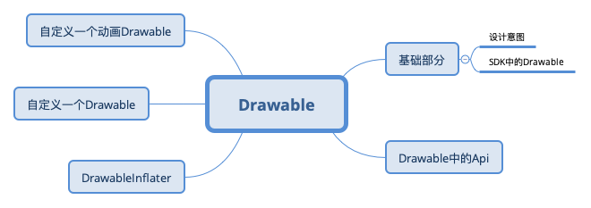
Drawable的设计意图
A Drawable is a general abstraction for "something that can be drawn." Most often you will deal with Drawable as the type of resource retrieved for drawing things to the screen; the Drawable class provides a generic API for dealing with an underlying visual resource that may take a variety of forms. Unlike a View, a Drawable does not have any facility to receive events or otherwise interact with the user.
这是SDK文档中的内容，大致含义呢：drawable是对于"可以被绘制的内容"的抽象。 多数情况下，我们将获取的资源作为Drawable绘制在屏幕上， Drawable类提供了一个通用API，用于处理可能采用多种类型的底层可视资源。 不像View，Drawable没有任何接收事件或以其他方式与用户交互的功能。
为了简化绘制，Drawable中为使用者提供了一定的机制操作绘制：
The {@link #setBounds} method must be called to tell the > Drawable where it is drawn and how large it should be. All Drawables > should respect the requested size, often simply by scaling their > imagery. A client can find the preferred size for some Drawables with > the {@link #getIntrinsicHeight} and {@link #getIntrinsicWidth} methods.
The {@link #getPadding} method can return from some Drawables > information about how to frame content that is placed inside of them. > For example, a Drawable that is intended to be the frame for a button > widget would need to return padding that correctly places the label > inside of itself.
The {@link #setState} method allows the client to tell the Drawable > in which state it is to be drawn, such as "focused", "selected", etc. > Some drawables may modify their imagery based on the selected state.
The {@link #setLevel} method allows the client to supply a single > continuous controller that can modify the Drawable is displayed, such as > a battery level or progress level. Some drawables may modify their > imagery based on the current level.
A Drawable can perform animations by calling back to its client > through the {@link Callback} interface. All clients should support this > interface (via {@link #setCallback}) so that animations will work. A > simple way to do this is through the system facilities such as > {@link android.view.View#setBackground(Drawable)} and > {@link android.widget.ImageView}.
继续简要翻译一下重要内容
- setBounds 方法必须被调用，它告知了Drawable应该被绘制的位置和大小
- getPadding 方法可以获知一些Drawable绘制时的内边距信息
- setState 方法允许使用者告知Drawable应当在哪些状态时绘制，例如获取了焦点，被选中等
- setLevel 方法允许调用者提供一个连续的控制器，可以修改显示的可绘制内容， 例如电池电量或进度。一些Drawable可能会根据当前的level改变其图像
- Drawable可以展现动画，通过设置Callback接口回调给他的使用者，所有的使用者，需要通过 setCallback方法提供回调函数支持以让动画工作。一个简便方式是通过一些系统设施例如：View#setBackground 和 ImageView
注：Drawable展现动画部分，这里翻译的比较晦涩，具体细节见：Drawable Api概览
小结：Android SDK中抽象了Drawable体系，不同于View体系，它仅负责描述可绘制的内容，不可进行用户交互，其子类将描述各类可绘制内容的特性。
SDK中的Drawable子类概览
注：经过多次思考，我最终把这一段的草稿删除了，这部分体系实在是太大，浅写无异于copy官方文档，深挖就会影响文章关注的重点。 如果对系统中提供的Drawable子类感兴趣的，建议深入源码看一下。
Drawable Api概览
在开头的设计意图探索中，我们已经阅读了几个关键API：setBound，getPadding，setState，setLevel，setCallback的信息
还有getBound，copyBound等获取边界信息的API，RippleDrawable和一些自定义的Drawable还覆写了getDirtyBounds，用以获取它可能涉及到的范围边界
横向的方向相关：setLayoutDirection，getLayoutDirection，onLayoutDirectionChanged
透明度相关：setAlpha，getAlpha
着色和颜色filter相关：setColorFilter，getColorFilter，clearColorFilter，
setTint，setTintList，setTintMode，setTintBlendMode
尺寸测量：getIntrinsicWidth，getIntrinsicHeight，getMinimumWidth，getMinimumHeight
当作为背景使用时，getMinimumXXX用于告知View建议使用的最小宽高。getIntrinsicXXX是获取一个Drawable的内在的、固有的宽高，这个值和设备屏幕密度是有关系的。
自我独立：mutate，和缓存机制有关，调用得到一个新的Drawable，这样自己的状态就不会影响到其他使用处。
重绘相关：setCallback(@Nullable Callback cb)，getCallback()，invalidateSelf()，
scheduleSelf(@NonNull Runnable what, long when)，unscheduleSelf(@NonNull Runnable what)
上面我们提到这一组API会详细说一下。以AnimationDrawable为例，这是一个动画Drawable，
class AnimationDrawable {
private void setFrame(int frame, boolean unschedule, boolean animate) {
if (frame >= mAnimationState.getChildCount()) {
return;
}
mAnimating = animate;
mCurFrame = frame;
selectDrawable(frame);
if (unschedule || animate) {
unscheduleSelf(this);
}
if (animate) {
// Unscheduling may have clobbered these values; restore them
mCurFrame = frame;
mRunning = true;
scheduleSelf(this, SystemClock.uptimeMillis() + mAnimationState.mDurations[frame]);
}
}
}
设置某一帧之后，如果是使用动画，则会调用scheduleSelf，时间戳是下一帧应该出现的时间戳。
class Drawable {
public void scheduleSelf(@NonNull Runnable what, long when) {
final Callback callback = getCallback();
if (callback != null) {
callback.scheduleDrawable(this, what, when);
}
}
}
如果存在Callback，则调用Callback#scheduleDrawable。
以View的代码为例
class View {
public void scheduleDrawable(@NonNull Drawable who, @NonNull Runnable what, long when) {
if (verifyDrawable(who) && what != null) {
final long delay = when - SystemClock.uptimeMillis();
if (mAttachInfo != null) {
mAttachInfo.mViewRootImpl.mChoreographer.postCallbackDelayed(
Choreographer.CALLBACK_ANIMATION, what, who,
Choreographer.subtractFrameDelay(delay));
} else {
// Postpone the runnable until we know
// on which thread it needs to run.
getRunQueue().postDelayed(what, delay);
}
}
}
}
很简单，验证合法性之后定时执行Runnable，Runnable的内容：
class AnimationDrawable {
public void run() {
nextFrame(false);
}
private void nextFrame(boolean unschedule) {
int nextFrame = mCurFrame + 1;
final int numFrames = mAnimationState.getChildCount();
final boolean isLastFrame = mAnimationState.mOneShot && nextFrame >= (numFrames - 1);
// Loop if necessary. One-shot animations should never hit this case.
if (!mAnimationState.mOneShot && nextFrame >= numFrames) {
nextFrame = 0;
}
setFrame(nextFrame, unschedule, !isLastFrame);
}
}
显示下一帧，逻辑非常清晰，不再进行解析。
小结: 这一段我们对Drawable的API进行了简单的梳理，略去了大量关于创建的API以及和开发不太紧密的API，完成了一次概览。 更完善的认知需要再仔细研读源码内容，限于篇幅不再展开。
DrawableInflater
顾名思义，这是一个Drawable加载器，和LayoutInflater类似，从一种满足特定语法的语法式中解析出实例对象，显然，在Android中它用来处理xml语法的drawable资源文件。
看一下文档：
/**
* Instantiates a drawable XML file into its corresponding
* {@link android.graphics.drawable.Drawable} objects.
* <p>
* For performance reasons, inflation relies heavily on pre-processing of
* XML files that is done at build time. Therefore, it is not currently possible
* to use this inflater with an XmlPullParser over a plain XML file at runtime;
* it only works with an XmlPullParser returned from a compiled resource (R.
* <em>something</em> file.)
*
* @hide Pending API finalization.
*/
需要注意，从性能角度上，这种创建严重依赖于构建时的预处理，因此，目前不可能利用它和 XmlPullParser 一起 在运行时解析一个xml文件 并创建对象实例 只适用于那些已经在资源编译阶段返回的XmlPullParser
我们知道，一个受检的xml document，会被解析为语法树，得到树中的标签节点和属性信息。
我们阅读DrawableInflater的代码，有两段关于创建Drawable具体实例的内容，这是根据tag创建实例的代码
class DrawableInflater {
private Drawable inflateFromTag(@NonNull String name) {
switch (name) {
case "selector":
return new StateListDrawable();
case "animated-selector":
return new AnimatedStateListDrawable();
case "level-list":
return new LevelListDrawable();
case "layer-list":
return new LayerDrawable();
case "transition":
return new TransitionDrawable();
case "ripple":
return new RippleDrawable();
case "adaptive-icon":
return new AdaptiveIconDrawable();
case "color":
return new ColorDrawable();
case "shape":
return new GradientDrawable();
case "vector":
return new VectorDrawable();
case "animated-vector":
return new AnimatedVectorDrawable();
case "scale":
return new ScaleDrawable();
case "clip":
return new ClipDrawable();
case "rotate":
return new RotateDrawable();
case "animated-rotate":
return new AnimatedRotateDrawable();
case "animation-list":
return new AnimationDrawable();
case "inset":
return new InsetDrawable();
case "bitmap":
return new BitmapDrawable();
case "nine-patch":
return new NinePatchDrawable();
case "animated-image":
return new AnimatedImageDrawable();
default:
return null;
}
}
}
如果您已经在第二小节自行对Drawable的子类进行了概览，应该对这些内容不陌生了。
以Android项目模板为例，工程会创建一个启动图标：
<vector xmlns:android="http://schemas.android.com/apk/res/android"
xmlns:aapt="http://schemas.android.com/aapt"
android:width="108dp"
android:height="108dp"
android:viewportWidth="108"
android:viewportHeight="108">
<path
android:pathData="M31,63.928c0,0 6.4,-11 12.1,-13.1c7.2,-2.6 26,-1.4 26,-1.4l38.1,38.1L107,108.928l-32,-1L31,63.928z">
<aapt:attr name="android:fillColor">
<gradient
android:endX="85.84757"
android:endY="92.4963"
android:startX="42.9492"
android:startY="49.59793"
android:type="linear">
<item
android:color="#44000000"
android:offset="0.0"/>
<item
android:color="#00000000"
android:offset="1.0"/>
</gradient>
</aapt:attr>
</path>
<path
android:fillColor="#FFFFFF"
android:fillType="nonZero"
android:pathData="M65.3,45.828l3.8,-6.6c0.2,-0.4 0.1,-0.9 -0.3,-1.1c-0.4,-0.2 -0.9,-0.1 -1.1,0.3l-3.9,6.7c-6.3,-2.8 -13.4,-2.8 -19.7,0l-3.9,-6.7c-0.2,-0.4 -0.7,-0.5 -1.1,-0.3C38.8,38.328 38.7,38.828 38.9,39.228l3.8,6.6C36.2,49.428 31.7,56.028 31,63.928h46C76.3,56.028 71.8,49.428 65.3,45.828zM43.4,57.328c-0.8,0 -1.5,-0.5 -1.8,-1.2c-0.3,-0.7 -0.1,-1.5 0.4,-2.1c0.5,-0.5 1.4,-0.7 2.1,-0.4c0.7,0.3 1.2,1 1.2,1.8C45.3,56.528 44.5,57.328 43.4,57.328L43.4,57.328zM64.6,57.328c-0.8,0 -1.5,-0.5 -1.8,-1.2s-0.1,-1.5 0.4,-2.1c0.5,-0.5 1.4,-0.7 2.1,-0.4c0.7,0.3 1.2,1 1.2,1.8C66.5,56.528 65.6,57.328 64.6,57.328L64.6,57.328z"
android:strokeWidth="1"
android:strokeColor="#00000000"/>
</vector>
其实就是机器人头的图标，它会被加载为VectorDrawable
我们反推一下，调用者为：
class DrawableInflater {
@NonNull
public Drawable inflateFromXml(@NonNull String name, @NonNull XmlPullParser parser,
@NonNull AttributeSet attrs, @Nullable Theme theme)
throws XmlPullParserException, IOException {
return inflateFromXmlForDensity(name, parser, attrs, 0, theme);
}
@NonNull
Drawable inflateFromXmlForDensity(@NonNull String name, @NonNull XmlPullParser parser,
@NonNull AttributeSet attrs, int density, @Nullable Theme theme)
throws XmlPullParserException, IOException {
// Inner classes must be referenced as Outer$Inner, but XML tag names
// can't contain $, so the <drawable> tag allows developers to specify
// the class in an attribute. We'll still run it through inflateFromTag
// to stay consistent with how LayoutInflater works.
if (name.equals("drawable")) {
name = attrs.getAttributeValue(null, "class");
if (name == null) {
throw new InflateException("<drawable> tag must specify class attribute");
}
}
//注意这里 --1
Drawable drawable = inflateFromTag(name);
if (drawable == null) {
//注意这里 --2
drawable = inflateFromClass(name);
}
drawable.setSrcDensityOverride(density);
//注意这里 --3
drawable.inflate(mRes, parser, attrs, theme);
return drawable;
}
}
上面标记了3处注意点， 第一处即为内置的顶层drawable创建
第二处我们稍后再看
第三处将parser，属性和主题交给生成的Drawable继续解析。不同的Drawable子类按照自身特性实现自己的解析需求。
以LevelListDrawable为例，我们知道它内部还可以添加Drawable作为不同的level，这是通过递归调用解析创建实现的， 最终追溯源码至Drawable
public class LevelListDrawable {
private void inflateChildElements(Resources r, XmlPullParser parser, AttributeSet attrs,
Theme theme) throws XmlPullParserException, IOException {
//略
while ((type = parser.next()) != XmlPullParser.END_DOCUMENT
&& ((depth = parser.getDepth()) >= innerDepth
|| type != XmlPullParser.END_TAG)) {
//略
Drawable dr;
if (drawableRes != 0) {
dr = r.getDrawable(drawableRes, theme);
} else {
//略
//注意此处
dr = Drawable.createFromXmlInner(r, parser, attrs, theme);
}
mLevelListState.addLevel(low, high, dr);
}
onLevelChange(getLevel());
}
}
public class Drawable {
public static Drawable createFromXmlInner(@NonNull Resources r, @NonNull XmlPullParser parser,
@NonNull AttributeSet attrs, @Nullable Theme theme)
throws XmlPullParserException, IOException {
return createFromXmlInnerForDensity(r, parser, attrs, 0, theme);
}
@NonNull
static Drawable createFromXmlInnerForDensity(@NonNull Resources r,
@NonNull XmlPullParser parser, @NonNull AttributeSet attrs, int density,
@Nullable Theme theme) throws XmlPullParserException, IOException {
return r.getDrawableInflater().inflateFromXmlForDensity(parser.getName(), parser, attrs,
density, theme);
}
}
我们再看第二处，当特定的tag未被匹配时，会使用反射方式尝试创建Drawable：
class DrawableInflater {
@NonNull
private Drawable inflateFromClass(@NonNull String className) {
try {
Constructor<? extends Drawable> constructor;
synchronized (CONSTRUCTOR_MAP) {
constructor = CONSTRUCTOR_MAP.get(className);
if (constructor == null) {
final Class<? extends Drawable> clazz =
mClassLoader.loadClass(className).asSubclass(Drawable.class);
constructor = clazz.getConstructor();
CONSTRUCTOR_MAP.put(className, constructor);
}
}
return constructor.newInstance();
}
//略
catch (XXX e) {
}
}
}
Custom drawables
All versions of Android allow the Drawable class to be extended and used at run time in place of framework-provided drawable classes. Starting in API 24, custom drawables classes may also be used in XML. Note: Custom drawable classes are only accessible from within your application package. Other applications will not be able to load them.
文档中有这样一段话，自定义的Drawable一直是可行的，但仅Api>=24时才能够用XML定义这样的资源。虽然没有仔细追溯版本源码，但应该和此处有关。
小结：我们简单阅读了DrawableInflater的源码，了解了Android如何从xml资源得到Drawable对象。需要注意的是，我们没有阅读Resource#getDrawable 的相关源码，这一块内容也很有意思，建议读者有时间自行阅读下。
自定义一个Drawable
终于来到这个环节了，为了更好的进行这个环节，我们新建一个WorkShop项目，我会按照文章中每一个小目标提出的一个小目标建立提交。 DrawableWorkShop
version 1 一个能绘制的自定义Drawable
这里我们尽可能的简单，目标就是绘制一个字母，先定义类：
class LetterDrawable : Drawable() {
val tag = "LetterDrawable"
var letter: Char = 'A'
val paint = Paint().apply {
textSize = 60f
color = Color.CYAN
}
override fun draw(canvas: Canvas) {
Log.d(tag, "on draw")
canvas.drawText(letter.toString(), 60f, 60f, paint)
}
override fun setAlpha(alpha: Int) {
//ignore
}
override fun setColorFilter(colorFilter: ColorFilter?) {
//ignore
}
override fun getOpacity(): Int {
return PixelFormat.TRANSLUCENT
}
}
字号字色，绘制字母的位置和内容都直接写死，
定义资源：
<?xml version="1.0" encoding="utf-8"?>
<osp.leobert.android.drawableworkshop.drawable.LetterDrawable
xmlns:android="http://schemas.android.com/apk/res/android"
>
</osp.leobert.android.drawableworkshop.drawable.LetterDrawable>
直接使用：得到结果：

version 2 支持颜色和字号等可配
我们将单个字符改为String，添加color和textSize成员变量，并将改动设置到paint
添加属性定义：
<resources xmlns:tools="http://schemas.android.com/tools">
<declare-styleable name="letter_drawable">
<attr name="android:text" format="string|reference"/>
<attr name="color" format="color|reference"/>
<attr name="android:textSize" format="dimension|reference"/>
</declare-styleable>
</resources>
这样我们就可以进行资源配置和解析
按照我们之前阅读的代码，我们需要覆写inflate以实现属性解析
class LetterDrawable {
override fun inflate(
r: Resources,
parser: XmlPullParser,
attrs: AttributeSet,
theme: Resources.Theme?
) {
super.inflate(r, parser, attrs, theme)
val a: TypedArray = obtainAttributes(r, theme, attrs, R.styleable.letter_drawable)
letter = a.getString(R.styleable.letter_drawable_android_text) ?: "A"
textSize = a.getDimension(R.styleable.letter_drawable_android_textSize, 60f)
color = a.getColor(R.styleable.letter_drawable_color, Color.CYAN)
a.recycle()
paint.color = color
paint.textSize = textSize
}
private class Size(val type: Int) : ReadWriteProperty<LetterDrawable, Float?> {
private var prop: Float? = null
override fun getValue(thisRef: LetterDrawable, property: KProperty<*>): Float? {
return prop ?: thisRef.run {
val rect = Rect()
this.paint.getTextBounds(this.letter, 0, this.letter.length, rect)
val s = when (type) {
0 -> rect.width()
else -> rect.height()
}.toFloat()
prop = s
prop
}
}
override fun setValue(thisRef: LetterDrawable, property: KProperty<*>, value: Float?) {
prop = value
}
}
private var width by Size(0)
private var height by Size(1)
override fun draw(canvas: Canvas) {
Log.d(tag, "on draw,$letter , $height")
canvas.drawText(letter, 0f, height ?: 60f, paint)
}
}
并且我们利用属性代理来封装计算宽高的细节（只是利用了小技巧，可以减少不必要的重复测量）
修改我们资源：
<?xml version="1.0" encoding="utf-8"?>
<osp.leobert.android.drawableworkshop.drawable.LetterDrawable
xmlns:android="http://schemas.android.com/apk/res/android"
xmlns:app="http://schemas.android.com/apk/res-auto"
android:textSize="40sp"
app:color="#ff3c06"
android:text="@string/letters">
</osp.leobert.android.drawableworkshop.drawable.LetterDrawable>
运行后我们得到这样的结果：

version 3: 正确处理宽高
我们发现Drawable的位置是有问题的，对于TextView，并没有在文字之上（drawableTop）， 对于ImageView，并没有居中（默认 ScaleType.FIT_CENTER）。
class LetterDrawable {
var letter: String = "A"
set(value) {
field = value
width = null
height = null
invalidateSelf()
}
var color: Int = Color.CYAN
set(value) {
field = value
paint.color = value
invalidateSelf()
}
var textSize: Float = 60f
set(value) {
field = value
width = null
height = null
paint.textSize = value
invalidateSelf()
}
override fun getIntrinsicHeight(): Int {
return height?.toInt() ?: -1
}
override fun getIntrinsicWidth(): Int {
return width?.toInt() ?: -1
}
}
并且当颜色、文字、字号变更时触发重新计算和重绘
看一下结果：

注：更多和Canvas和Paint的内容忽略，Padding和文字边距等细节忽略
小结：这一小节到此基本可以结束了，我们用了三步实现了一个简单自定义Drawable， 并且在比较常见的场景下进行了效果演示。读者可以在此基础上在对于padding等属性进行尝试， 以及尝试绘制自己感兴趣的内容。
自定义一个动画Drawable
这一次，我们尝试让字从分散，开始聚拢，最终排列成一行。因为它的draw规则更加特殊，我们新建一个Drawable进行演示。
还是在原来的项目上，version 直接递增
version 4: 先让一个字母动起来
目标：让字母从一个随机的初始位置，匀速运动到终点位置。约定最终将文字绘制在中心
我们建立一个新的类AnimLetterDrawable，迁移LetterDrawable中的主要逻辑，并实现Runnable接口，以实现schedule 时的主要逻辑； 实现Animatable2接口并完成动画相关逻辑
class AnimLetterDrawable : Drawable(), Animatable2, Runnable {
private var frameIndex = 0
private val totalFrames = 30 * 3 //3 second, 30frames per second
private val animationCallbacks: MutableSet<Animatable2.AnimationCallback> = linkedSetOf()
private var mAnimating: Boolean = false
private fun setFrame(frame: Int, unschedule: Boolean, animate: Boolean) {
if (frame >= totalFrames) {
return
}
mAnimating = animate
frameIndex = frame
if (unschedule || animate) {
unscheduleSelf(this)
}
if (animate) {
// Unscheduling may have clobbered these values; restore them
frameIndex = frame
scheduleSelf(this, SystemClock.uptimeMillis() + durationPerFrame)
}
invalidateSelf()
}
private fun nextFrame(unschedule: Boolean) {
var nextFrame: Int = frameIndex + 1
val isLastFrame = nextFrame + 1 == totalFrames
if (nextFrame + 1 > totalFrames) {
nextFrame = totalFrames - 1
}
setFrame(nextFrame, unschedule, !isLastFrame)
}
private val durationPerFrame = 3000 / totalFrames
override fun start() {
Log.d(tag, "start called")
mAnimating = true
if (!isRunning) {
// Start from 0th frame.
setFrame(
frame = 0, unschedule = false, animate = false
)
} else {
setFrame(
frame = 0, unschedule = false, animate = true
)
}
}
override fun stop() {
mAnimating = false
if (isRunning) {
frameIndex = 0
//un-schedule it at first
unscheduleSelf(this)
setFrame(0, unschedule = true, animate = false)
}
}
override fun isRunning(): Boolean {
return mAnimating
}
override fun registerAnimationCallback(callback: Animatable2.AnimationCallback) {
animationCallbacks.add(callback)
}
override fun unregisterAnimationCallback(callback: Animatable2.AnimationCallback): Boolean {
return animationCallbacks.remove(callback)
}
override fun clearAnimationCallbacks() {
animationCallbacks.clear()
}
override fun run() {
Log.d(tag, "callback by schedule")
if (isRunning) {
nextFrame(false)
} else {
//safe call
setFrame(0, unschedule = true, animate = false)
}
}
}
这一段代码虽然有点长，但是逻辑很简单，阅读文章过程中，可以忽略这部分代码的细节。
显然，我们还需要实现：正确绘制每一帧
在约定的目标中，每个字母从一个 随机的初始位置，匀速运动 到 终点位置。那么，对于任意一个字母，只需要确定 四个参数，即可确定其 位置
- 总帧数
- 当前帧数
- 字母起始位置
- 字母结束位置
延伸：上面的例子中，我们约定了轨迹是直线，延伸开来，其实我们只需要一个
location = f(time)的函数和time值即可确定其位置。一般情况下，我们需要关心轨迹方程，和加速度公式。有加速度公式，我们按照时间积分得到
速度-时间函数，再按照时间积分，得到移动距离-时间函数， 在有轨迹方程和起始点的情况下，就可以找到任意时间的位置，得到location = f(time)函数
当然，因为我们的场景足够简单，起始点和终点确定的线段即为路径，运动为匀速，当前时间 通过 当前帧,每帧时间确定，达到总动画时长（最后一帧）时
达到终点
x = startX + (endX - startX) * time / totalTimey = startY + (endY - startY) * time / totalTime
附上计算相关的源码： 运动过程中我是适当处理了文字的透明度
class AnimLetterDrawable : Drawable(), Animatable2, Runnable {
private val originalLetterLocations = SparseArray<PointF>()
private val finalLetterLocations = SparseArray<PointF>()
override fun draw(canvas: Canvas) {
Log.d(tag, "on draw,$letters , $height,$frameIndex")
val progress = if (totalFrames > 1) {
frameIndex.toFloat() / (totalFrames - 1).toFloat()
} else {
1f
}
paint.alpha = min(255, (255 * progress).toInt() + 100)
for (i in letters.indices) {
val endPoint: PointF = finalLetterLocations.get(i)
val startPoint: PointF = originalLetterLocations.get(i)
val x: Float = startPoint.x + (endPoint.x - startPoint.x) * progress
val y: Float = startPoint.y + (endPoint.y - startPoint.y) * progress
canvas.drawText(letters[i].toString(), x, y, paint)
}
}
override fun onBoundsChange(bounds: Rect) {
super.onBoundsChange(bounds)
Log.d(tag, "onBoundsChange, $bounds")
height = bounds.height().toFloat()
width = bounds.width().toFloat()
calcLetterStartEndLocations()
invalidateSelf()
}
private fun calcLetterStartEndLocations() {
originalLetterLocations.clear()
finalLetterLocations.clear()
val height = this.height ?: throw IllegalStateException("height cannot be null")
val width = this.width ?: throw IllegalStateException("width cannot be null")
val centerY: Float = height / 2f + paint.textSize / 2
val totalLength = paint.measureText(letters)
val startX = (width - totalLength) / 2
var currentStartX = startX
for (i in letters.indices) {
val str: String = letters[i].toString()
val currentLength: Float = paint.measureText(str)
originalLetterLocations.put(
i, PointF(
Math.random().toFloat() * width, Math.random()
.toFloat() * height
)
)
finalLetterLocations.put(i, PointF(currentStartX, centerY))
// TODO: 2021/2/1 consider padding for letters inner
currentStartX += currentLength
}
}
}
最终我们看一下效果： 大约从第四秒开始点击了start，中间点击了stop，随后又点击了start

注：gif丢失了一定的连贯性，可以看一下录制的视频 链接 因为起始位置是随机的，所以每次的效果都会有差别
version 5 让所有的字母都动起来
其实细心的读者应该发现了，上面Version 4的代码已经可以让每个字母都动起来了。
先来试一下效果，把Drawable资源的text改成Leobert，看一下效果:

录制视频：链接
可能有些读者这时候已经在思考，继续添加各种配置支持项，改变初始点的随机位置算法，计算过程中更加细致的考虑字号、文字留白等等等等细节了。
打住，我们的目标是重新梳理Drawable中的知识，而不是实现一个特定的Drawable。到这里，我们已经实现了一个自定义的动画Drawable。
最终总结和反思
这篇文章中，我们梳理了Drawable的设计意图，自行梳理了Drawable子类概览，梳理了Drawable的API概览，练习了自定义Drawable。
我们再思考几个问题：
自定义View和自定义Drawable的区别是什么
前者是对于视图的自定义，后者是对于绘制的自定义。两者有一定的关联性，因为视图也是需要通过视觉呈现给用户的，有很大一部和绘制相关；
但自定义View不仅仅可以自定义绘制，还可以自定义交互，这一点是自定义Drawable不具备的。如果我们仅仅是期望对绘制进行自定义，选择自定义Drawable即可；
相比于自定义View，自定义Drawable在应用内的适用性更广，它具体描述了一种绘制，所以，只要存在绘制机制的地方，理论上就可以使用它。
各种"花里胡哨"的效果都可以这样干吗
可以但不是所有的都建议。一些简单的场景，例如一种点击特效、一种Progress效果 是建议这样处理的。
一些复杂的场景，例如启动图、固定的酷炫的转场等，是不建议这样处理的。不是说不建议用自定义Drawable处理，而是不建议
再用代码去直接描述Draw的内容。
对于复杂内容，可以对其内容进行抽象和分类，一般来说，我们可以从：
- 静态、动态
- 矢量描述、非矢量描述
两个维度区分一个要绘制的内容；
对于静态的，或者矢量描述的内容，已经有相关的类进行抽象描述。而对于动态的非矢量描述的绘制内容，
它们往往复杂，而且很具体，用纯代码进行描述太糟糕了。应当建立抽象体系并结合中间物来描述它们。
以大名鼎鼎的Lottie为例，设计使用AE创作动画文件，并导出成lottie的动画文件：
- 不可矢量描述的、唯一命名的图
- json格式封装的所有帧信息
那么只需要描述：
- 解析文件
- 加载帧信息
- 展示帧，即绘制帧
- 按照动画时间和帧信息schedule
即可。内容设计这种事情，就交给UI和UX了
从技术梳理和博客的角度看，这篇文章的内容已经结束了，从商业投产的角度看，这篇文章的内容远没有结束
好玩系列：拥有它，XML文件少一半--更方便的处理View背景
前言
这是一项已经被我们项目实验性投产将近一年的方案，虽然还处于实验性阶段，但稳定性和实用性都不错。
问题背景：Android 中普遍使用XML来定义资源，对于视图的背景样式而言，需要定义大量的
GradientDrawable、StateListDrawable资源等。当项目体量很大时。这些资源就会出现难管理的问题。
诚然，从最佳实践角度出发，对项目中的资源进行合理地命名以满足查询索引规则，按照设计风格定义对应的Style，视图定义时利用Style约束其样式。这才是
优秀的做法。但是，事与愿违，按照国内的从业者现状看，大多数处理大型项目的团队都没有做好这一点的必要条件。
在展开实践之前，我们不妨反思下为何会如此，不外乎：
- 缺乏或者频繁变动顶层
设计语言，这个词可能并不太准确 - 以往的页面已经在线上运行了，设计新的页面簇改变了设计风格时，没有安排原有内容的统一修改并给到时间。
- 以上两条导致全栈Style混乱
- 当Style超过3种风格时，开发团队一般选择
毁灭吧，我累了，谁动全栈风格跟谁急。
OK，既然都选择了毁灭吧,那为什么不选择一种更加舒适的方式来处理常见的背景问题。
挑选目标--最常用的Drawable资源
经过一番草率的筛选，我们很快锁定了目标：selector、shape
举个例子，窥一斑而见全豹：

这还只是一小部分，相信各位的项目中也会有这样的痛点吧。
且不谈 命名规则 是否合情合理，这是一种很反人类的设定，就像你忘记了密码，申请重置，按照一系列的密码规则， 终于设定了一个 让你惴惴不安 担心 再次忘记 的密码后，提交提示：不能和原密码一致。
对Drawable体系有一定了解的话，我们知道 selector、shape 分别对应：
StateListDrawableGradientDrawable
如果对Drawable体系还不太清楚的话，可以简要阅读一下我之前的一篇博客：三思系列：重新认识Drawable
换一种定义资源、解析资源的方式
布局文件中使用这些Drawable资源时，在View被创建后，会解析配置的属性，而Drawable相关的资源，会被DrawableInflater加载并运用。
这一点就不展开了。毫无疑问，如果要替换掉基于xml的资源定义方式，我们只能采用一个新的方式。但是，我们并没有打算 抛弃使用xml文件定义布局资源
且不卖关子，当时搜索枯肠，要满足：
- 丢弃单独文件定义
- 方便，不需要查手册
两个要素，只想到两个关键词： DSL，OO，没错，领域特定语言 和 面向对象。
严格来说，这两者基本是互斥的。
但是很抱歉，这里必须要先打住，要先讲点别的，然后再回到这个话题。
注，后面很大一段篇幅，会用于：
- 解释抛弃自定义View和属性的方案
- 使用Builder简化Drawable构造过程
- DSL简介
- 用DSL解决这个问题
个人认为
使用自定义文法和解释器处理文法解析 是一件挺好玩的事情，值得玩一玩， 但限于我的水平，这段内容读起来可能很晦涩，如果不是非常感兴趣，可以直接跳过到：到底是DSL还是OO
抛弃了自定义View和属性的方式
在开始时，我考虑过这种方案。但是使用 自定义的 LayoutInflater 或者 hook 系统LayoutInflater 都是可能影响到某些 黑科技的
就算不考虑干扰到其他黑科技，也需要严格的处理各种属性组合，并提供完善的查询手册，这很 不人道主义，
而基于十几个属性组合场景自定义lint规则，这 很烦 ，一点都 不好玩
所以这个方案直接被否决
工欲善其事必先利其器，Drawable对象构建工具 -- Drawable Builder
因为 StateListDrawable 和 GradientDrawable 的内部细节都是比较多的，这句话等价于：构建这两者的实例对象比较复杂。
这很符合Builder模式的使用场景，我们先设计一个Builder来处理这两者的构建，并在构建过程中检验信息
这是一件比较枯燥的事情，代码略。详见DaVinCiCore.kt
在我们完善的考虑了 各种state下： 形状，渐变的角度、方式，填充，描边，尺寸，指定的drawable等之后，我们可以 "很方便" 的创建Drawable啦！
一套适应场景的DSL -- 定义规则
在内容展开之前，我们再回顾一下DSL的基础。
DSL即 Domain Specified Language 、领域专用语言。
Wikipedia中关于这个词条的描述：
A specialized computer language designed for a specific task.
为了解决 某类 特定问题 而设计的一种 特殊 的计算机语言
而马丁老爷子关于它的描述，看起来就很高深了，但我更喜欢这一个描述：
A computer programming language of limited expressiveness focused on a particular domain.
一种 抑制表达能力 以 专注于 特定领域 的计算机语言。
这种抑制，让它专注于特定的领域，而抛弃了其他的领域，以达到更加高效、准确的目的。
我们知道，xml协议的扩展性非常强，而这种扩展性，让它的解析变得非常的繁琐，继而带来了效率问题。Android中，为了 兼顾 xml的 扩展性 和 使用的 效率问题， 定制了各类Inflater以处理特定的问题。
显然，我们这次不打算在巨人的肩膀上更进一步，而是要在特定问题上，剑走偏锋。
按照我们积累的知识，要构建一个 GradientDrawable，可能用到：
- 形状 shape
- 纯色填充色 solidColor
- 圆角相关：
- cornersRadius
- cornersBottomLeftRadius
- cornersBottomRightRadius
- cornersTopLeftRadius
- cornersTopRightRadius
- 填充渐变：
- 渐变方向角 gradientAngle
- 渐变中点x gradientCenterX
- 渐变中点y gradientCenterY
- 渐变起始颜色 gradientStartColor
- 渐变中点颜色 gradientCenterColor
- 渐变终点颜色 gradientEndColor
- 渐变形式 gradient
- 形式为 RADIAL_GRADIENT时的 gradientRadius
- useLevel
- padding
- sizeWidth
- sizeHeight
- 描边宽度 strokeWidth
- 描边颜色 strokeColor
- 虚线段宽度 strokeDashWidth
- 虚线段间距 strokeDashGap
当然，我们还需要考虑到 不同的状态，和一些 细节 ，这里先不展开
此时我们有两个选择方向，让我们的DSL类似于：
shape:[
gradient:[type:linear;startColor:#ff3c08;endColor:#353538 ];
st:[Oval];
corners:[40 dp];
stroke:[width:4 dp;color:rc / colorAccent ]
]
ps，因为目标固定为设置background，所以语法式中忽略这种描述
或者类似于sql的insert语句。
不过后者的 字段 太多，实在不适合阅读，而且SQL的 表达能力 相对于我们要处理的问题，还是过强了一点。
ok，我们再仔细设计一下规则。
终结符：
[],当前域的子句均置于其中，例：
域:[子域1:[值]]
shape:[st:[Oval]]
;,当前域有多个子域时，子域之间用;分隔
非终结符：
- shape: 代表创建一个GradientDrawable
- st: 代表shape类型，枚举值为
- Rectangle
- Oval
- Line
- Ring
- corners: 圆角相关设置，值置于[]中，一个值代表4个角，4个值代表 左上、右上、右下、左下 四个值对应设置
- solid: 纯色填充，[]内为色值，色值表达见后
- gradient:渐变色，子命令置于 [] 中
- type：渐变类型，枚举为：
- linear
- radial
- sweep
- startColor: 起始色
- centerColor: 中间色
- endColor: 结束色
- centerX: 中点x
- centerY: 中点y
- angle: 渐变角度
- type：渐变类型，枚举为：
- stroke: 描边，子命令置于 [] 中
- width: 描边宽度
- color: 描边颜色
- dashWidth: 虚线宽
- dashGap: 虚线间距
- size: 尺寸
- width:
- height:
- padding: 内边距
- left
- top
- right
- bottom
特殊规则：
- 尺寸描述：纯数字代表px，数值+dp 代表dp值，
w代表wrap_content，m代表match_parent - 颜色表达："#ffffff"等色值字符串，代表ARGB值的 int 值，"rc/资源名" 表达资源引用， 以及用"@idName"来获取目标View的tag，tag值需为颜色字符串或者ARGB色
为了适当减少类的数量，我们约定：
- 不拥有子域的域弱化为属性，以
属性名:属性值的方式表达，而不再需要[]符号 - 当某个域的属性只存在一个或者已经被约定时，可以忽略其属性名，直接使用属性值
注:重新整理时，我发现最开始编码的
ShapeType和Corners没有重新按照上述约定修正， 这是一处遗忘修改的bug，准确的讲，是将子域弱化为属性时，期望略去终结符而带来的文法规则缺陷，读者不要深究。出现这个bug的根本原因是：我当时想减少小类数量，并 一定程度上降低解析复杂度，将非终结符识别标记 和终结符
[组合在了一起，替代原先的非终结符识别标记使用。
注2：主体是 GradientDrawable ，为什么用 Shape去对应？因为国内普遍存在的文章中，绝大多数都已经将 Gradient 对应为"颜色的梯度渐变"，而将这一资源文件定义为 "形状"、带"填充"和"描边"的形状。而Android的资源定义语法中， 也是类似的。大家也都习惯了，索性尊重习惯。
解释器 -- 处理表达式解析
在GOF的设计模式中，
解释器模式(Interpreter Pattern) 提供了评估语言的语法或表达式的方式，它属于行为型模式。
需要注意，其实在这个问题的实际场景中，一条语句，子句出现的频率可能并不会太高，但解释器模式 依旧是场景适用 的。
我们再回顾一下解释器模式的 优缺点：
优点：
- 可扩展性比较好，灵活。
- 易于实现简单文法。
缺点：
- 对于复杂的文法比较难维护
- 可能引起类膨胀
- 采用递归调用方法，层级过深，可能出现效率问题
定义上下文

其中 core:DaVinCiCore 是上面提到的构建者，未遵循习惯命名法。
view:View 是要操作的View。
源码枯燥，略
抽象表达式
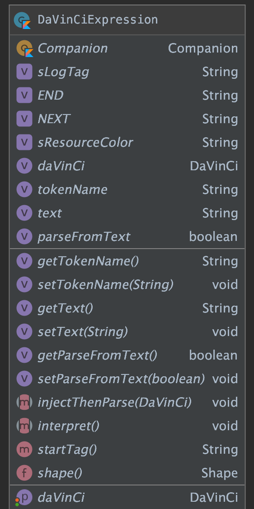
sealed class DaVinCiExpression(var daVinCi: DaVinCi? = null) {
// 节点名称
protected var tokenName: String? = null
// 文本内容
protected var text: String? = null
//实际属性是否需要从text解析，手动创建并给了专有属性的，设为false，就不会被覆盖了
protected var parseFromText = true
abstract fun injectThenParse(daVinCi: DaVinCi?)
/*
* 执行方法
*/
abstract fun interpret()
open fun startTag(): String = ""
companion object {
@JvmStatic
fun shape(): Shape = Shape(true)
const val sLogTag = "DaVinCi"
const val END = "]"
const val NEXT = "];"
const val sResourceColor = "rc/"
}
}
终结符处理
只需要处理兄弟域的关系即可，例如，我们知道 solid 和 stroke 就是兄弟域，
protected class ListExpression(daVinCi: DaVinCi? = null, private val manual: Boolean = false) :
DaVinCiExpression(daVinCi) {
private val list: ArrayList<DaVinCiExpression> = ArrayList()
fun append(exp: DaVinCiExpression) {
list.add(exp)
}
override fun injectThenParse(daVinCi: DaVinCi?) {
this.daVinCi = daVinCi
if (manual) {
list.forEach { it.injectThenParse(daVinCi) }
return
}
// 在ListExpression解析表达式中,循环解释语句中的每一个单词,直到终结符表达式或者异常情况退出
daVinCi?.let {
var i = 0
while (i < 100) { // true,语法错误时有点可怕，先上限100
if (it.currentToken == null) { // 获取当前节点如果为 null 则表示缺少]表达式
println("Error: The Expression Missing ']'! ")
break
} else if (it.equalsWithCommand(END)) {
it.next()
// 解析正常结束
break
} else if (it.equalsWithCommand(NEXT)) {
//进入同级别下一个解析
it.next()
} else { // 建立Command 表达式
try {
val expressions: DaVinCiExpression = CommandExpression(it)
list.add(expressions)
} catch (e: Exception) {
if (DaVinCi.enableDebugLog) Log.e(sLogTag, "语法解析有误", e)
break
}
}
i++
}
if (i == 100) {
if (DaVinCi.enableDebugLog) Log.e(sLogTag, "语法解析有误，进入死循环，强制跳出")
}
}
}
override fun interpret() { // 循环list列表中每一个表达式 解释执行
list.forEach { it.interpret() }
}
override fun toString(): String {
val b = StringBuilder()
val iMax: Int = list.size - 1
if (iMax == -1) return ""
var i = 0
while (true) {
b.append(list[i].toString())
if (i == iMax) return b.toString()
b.append("; ")
i++
}
}
}
非终结符的规则处理
open class CommandExpression(daVinCi: DaVinCi? = null, val manual: Boolean = false) :
DaVinCiExpression(daVinCi) {
private var expressions: DaVinCiExpression? = null
init {
//因为是嵌套层，且作为父类了，避免递归
if (this::class == CommandExpression::class)
onParse(daVinCi)
}
override fun injectThenParse(daVinCi: DaVinCi?) {
onParse(daVinCi)
}
protected fun toPx(str: String, context: Context): Int? {
//略
}
protected fun parseColor(text: String?): Int? {
//略
}
protected fun parseInt(text: String?, default: Int?): Int? {
//略
}
protected fun parseFloat(text: String?, default: Float?): Float? {
//略
}
protected fun getTag(context: Context?, resName: String): String? {
//略
}
protected fun getColor(context: Context?, resName: String?): Int? {
//略
}
@Throws(Exception::class)
private fun onParse(daVinCi: DaVinCi?) {
this.daVinCi = daVinCi
if (manual) return
daVinCi?.let {
expressions = when (it.currentToken) {
Corners.tag -> Corners(it)
Solid.tag -> Solid(it)
ShapeType.tag -> ShapeType(it)
Stroke.tag -> Stroke(it)
Size.tag -> Size(it)
Padding.tag -> Padding(it)
Gradient.tag -> Gradient(it)
else -> throw Exception("cannot parse ${it.currentToken}")
}
}
}
protected fun asPrimitiveParse(start: String, daVinCi: DaVinCi?) {
this.daVinCi = daVinCi
daVinCi?.let {
tokenName = it.currentToken
it.next()
if (start == tokenName) {
this.text = it.currentToken
it.next()
} else {
it.next()
}
}
}
override fun interpret() {
expressions?.interpret()
}
override fun toString(): String {
return "$expressions"
}
}
以solid为例：
class Solid(daVinCi: DaVinCi? = null, manual: Boolean = false) :
CommandExpression(daVinCi, manual) {
@ColorInt
internal var colorInt: Int? = null //这是解析出来的，不要乱赋值
companion object {
const val tag = "solid:["
}
init {
injectThenParse(daVinCi)
}
override fun injectThenParse(daVinCi: DaVinCi?) {
this.daVinCi = daVinCi
if (manual) {
if (parseFromText)
colorInt = parseColor(text)
return
}
colorInt = null
asPrimitiveParse(tag, daVinCi)
colorInt = parseColor(text)
}
override fun interpret() {
if (tag == tokenName || manual) {
daVinCi?.let {
colorInt?.let { color ->
it.core.setSolidColor(color)
}
}
}
}
override fun toString(): String {
return "$tag ${if (parseFromText) text else colorInt?.run { text }} $END"
}
}
同理，我们处理完：
- Corners
- ShapeType
- Stroke
- Size
- Padding
- Gradient
即可。
最重要的Shape
至此，我们只需要再解析 shape:[] 即可完成工作。
很简单，只要我们识别出来，其子域的描述子句均可被提取出来，利用 ; 分割子句，那么我们只需要用 ListExpression 即可储存子句。
代码略
注，至此，我们完成了文法的定义和解析处理，注意，目前所有的主体都是 GradientDrawable，他的文法已经足够复杂了，
StateListDrawable 所对应的各种状态 我们不在文法中进行扩展了，否则单条语句的长度会非常可怕。
到底是DSL还是OO
前面我们谈到了这个问题，要满足
- 丢弃单独文件定义
- 方便，不需要查手册
两个要素，只想到两个关键词：
DSL，OO，即领域特定语言和面向对象。
当时我们切到了其他话题，并顺带着已经把 DSL方案 的核心实现了。
我们注意到，如果使用DSL，直接使用 字符串形式 的 表达语句，这 很不人道主义。
我们不太可能像web技术那样，再走一条 css 方式的道路
那么，我们目前做的都是鸡肋吗？
这个问题，笔者我目前也无法回答，因为我站得高度还不够高。
但是，这不影响我们继续探究：如何使用OO思想，让构建变得更加简单
在文法符号的相关类基础上，面向对象
在前面的工作中，我们定义了一堆 终结符 和 非终结符 对应的类，而其语法树结构，是通过直接反解
一段 文法表达式字符串 得到的。
反过来想，我们直接面向对象操作，也可以直接构建出期望的语法树。
只要有正确的语法树，执行后一样可以得到期望的结果。
想通这一点，编码就很容易了，这里我们略去相关源码。
注：至此，究竟是
面向对象构建语法树处理问题，还是使用文法表达式字符串构建语法树，已经不再重要。 其本质都是构建语法树以描述Drawable的构建规则，只不过是在两个世界中的不同表达形式
最后一步，巧借东风，借助DataBinding，直接在xml中使用
我们知道，利用DataBinding，可以直接在xml中实现声明使用
再结合 BindingAdapter 机制，我们就可以实现 声明背景 的目标。
@BindingAdapter(
"daVinCi_bg", "daVinCi_bg_pressed", "daVinCi_bg_unpressed",
"daVinCi_bg_checkable", "daVinCi_bg_uncheckable", "daVinCi_bg_checked", "daVinCi_bg_unchecked",
requireAll = false
)
fun View.daVinCi(
normal: DaVinCiExpression? = null,
pressed: DaVinCiExpression? = null, unpressed: DaVinCiExpression? = null,
checkable: DaVinCiExpression? = null, uncheckable: DaVinCiExpression? = null,
checked: DaVinCiExpression? = null, unchecked: DaVinCiExpression? = null
) {
val daVinCi = DaVinCi(null, this)
//用于多次构建
val daVinCiLoop = DaVinCi(null, this)
normal?.let {
daVinCi.apply {
currentToken = normal.startTag()
}
if (DaVinCi.enableDebugLog) Log.d(sLogTag, "${this.logTag()} daVinCi normal:$normal")
normal.injectThenParse(daVinCi)
normal.interpret()
}
pressed?.let {
simplify(daVinCiLoop, it, "pressed", this)
daVinCi.core.setPressedDrawable(daVinCiLoop.core.build())
daVinCiLoop.core.clear()
}
unpressed?.let {
simplify(daVinCiLoop, it, "unpressed", this)
daVinCi.core.setUnPressedDrawable(daVinCiLoop.core.build())
daVinCiLoop.core.clear()
}
checkable?.let {
simplify(daVinCiLoop, it, "checkable", this)
daVinCi.core.setCheckableDrawable(daVinCiLoop.core.build())
daVinCiLoop.core.clear()
}
uncheckable?.let {
simplify(daVinCiLoop, it, "uncheckable", this)
daVinCi.core.setUnCheckableDrawable(daVinCiLoop.core.build())
daVinCiLoop.core.clear()
}
checked?.let {
simplify(daVinCiLoop, it, "checked", this)
daVinCi.core.setCheckedDrawable(daVinCiLoop.core.build())
daVinCiLoop.core.clear()
}
unchecked?.let {
simplify(daVinCiLoop, it, "unchecked", this)
daVinCi.core.setUnCheckedDrawable(daVinCiLoop.core.build())
daVinCiLoop.core.clear()
}
//下面的略
// private var enabledDrawable: Drawable? = null
// private var unEnabledDrawable: Drawable? = null
// private var selectedDrawable: Drawable? = null
// private var focusedDrawable: Drawable? = null
// private var focusedHovered: Drawable? = null
// private var focusedActivated: Drawable? = null
// private var unSelectedDrawable: Drawable? = null
// private var unFocusedDrawable: Drawable? = null
// private var unFocusedHovered: Drawable? = null
// private var unFocusedActivated: Drawable? = null
ViewCompat.setBackground(this, daVinCi.core.build())
}
示例：
<?xml version="1.0" encoding="utf-8"?>
<layout xmlns:android="http://schemas.android.com/apk/res/android"
xmlns:tools="http://schemas.android.com/tools">
<data>
<variable
name="a"
type="String" />
<import type="osp.leobert.android.davinci.DaVinCiExpression" />
</data>
<androidx.core.widget.NestedScrollView
android:layout_width="match_parent"
android:layout_height="match_parent"
tools:context=".MainActivity">
<LinearLayout
daVinCi_bg="@{DaVinCiExpression.shape().solid(`#eaeaea`)}"
android:layout_width="match_parent"
android:layout_height="wrap_content"
android:orientation="vertical"
android:padding="10dp">
<TextView
android:id="@+id/test"
daVinCi_bg="@{DaVinCiExpression.shape().corner(60).solid(`@i2`).stroke(`4dp`,`@i2`)}"
android:layout_width="match_parent"
android:layout_height="100dp"
android:layout_marginTop="10dp"
android:background="@drawable/test"
android:gravity="center"
android:text="@string/app_name">
<tag
android:id="@id/i1"
android:value="@color/colorPrimaryDark" />
<tag
android:id="@id/i2"
android:value="@color/colorAccent" />
</TextView>
<Button
daVinCi_bg_pressed="@{DaVinCiExpression.shape().corner(`10dp,15dp,20dp,30dp`).stroke(`4dp`,`@i2`).gradient(`#26262a`,`#ff0699`,0)}"
daVinCi_bg_unpressed="@{DaVinCiExpression.shape().corner(60).solid(`@i1`).stroke(`4dp`,`@i2`)}"
android:layout_width="match_parent"
android:layout_height="100dp"
android:gravity="center"
android:text="Hello World!">
<tag
android:id="@id/i1"
android:value="@color/colorPrimaryDark" />
<tag
android:id="@id/i2"
android:value="@color/colorAccent" />
</Button>
<TextView
android:id="@+id/test2"
daVinCi_bg="@{DaVinCiExpression.shape().corner(`10dp,15dp,20dp,30dp`).stroke(`4dp`,`@i2`).gradient(`#26262a`,`#ff0699`,0)}"
android:layout_width="match_parent"
android:layout_height="100dp"
android:layout_marginTop="10dp"
android:background="@drawable/test"
android:gravity="center"
android:text="@string/app_name">
<tag
android:id="@id/i1"
android:value="@color/colorPrimaryDark" />
<tag
android:id="@id/i2"
android:value="@color/colorAccent" />
</TextView>
<CheckBox
daVinCi_bg="@{DaVinCiExpression.shape().corner(60).solid(`@i2`).stroke(`4dp`,`@i2`)}"
daVinCi_bg_pressed="@{DaVinCiExpression.shape().corner(`10dp,15dp,20dp,30dp`).stroke(`4dp`,`@i2`).gradient(`#26262a`,`#ff0699`,0)}"
android:layout_width="match_parent"
android:layout_height="100dp"
android:layout_marginTop="10dp"
android:background="@drawable/test"
android:gravity="center"
android:text="错误示范：daVinCi_bg只能单独使用，一旦有其他的，就需要使用相应的成对的">
<tag
android:id="@id/i1"
android:value="@color/colorPrimaryDark" />
<tag
android:id="@id/i2"
android:value="@color/colorAccent" />
</CheckBox>
<CheckBox
daVinCi_bg_checked="@{DaVinCiExpression.shape().corner(60).solid(`@i2`).stroke(`4dp`,`@i2`)}"
daVinCi_bg_unchecked="@{DaVinCiExpression.shape().corner(`10dp,15dp,20dp,30dp`).stroke(`4dp`,`@i2`).gradient(`#26262a`,`#ff0699`,0)}"
android:layout_width="match_parent"
android:layout_height="100dp"
android:layout_marginTop="10dp"
android:background="@drawable/test"
android:gravity="center"
android:text="check状态">
<tag
android:id="@id/log_tag"
android:value="测试log tag" />
<tag
android:id="@id/i1"
android:value="@color/colorPrimaryDark" />
<tag
android:id="@id/i2"
android:value="@color/colorAccent" />
<tag
android:id="@id/i3"
android:value="@string/app_name" />
</CheckBox>
</LinearLayout>
</androidx.core.widget.NestedScrollView>
</layout>
粗糙的Demo效果，见笑了： 感谢读者鲁班贼六同学提醒我补充效果图

甚至可以玩杂耍，直接使用字符串形式的DSL内容：
binding.test2.setOnClickListener {
it.daVinCi("shape:[ gradient:[ type:linear;startColor:#ff3c08;endColor:#353538 ];" +
" st:[ Oval ]; corners:[ 40dp ]; stroke:[ width:4dp;color:rc/colorAccent ] ]")
}
注意，这个方式不推荐使用，很不利于维护，就是 杂耍，可以直接更新背景：

总结和展望
这一篇，我们从一个问题：
xml定义的资源文件难以管理、维护
开始，尝试性的提出了一种 替代xml 定义背景资源文件的方式。并进行了知识展开和拓展。 最终实现了期望目标。
但是，使用 xml文件 或者其他形式的文件来定义资源，是有它的道理的，虽然，这种方式的弊端已经被长久诟病，
并且在新兴技术中，资源和代码的存在位置已经开始交融。
我们知道，Compose这一革命性技术，新事物想要完全替代旧事物，不是一朝一夕的事情，旧事物不会突然消失。
本文中的方案，我将其视为一次 好玩 ，跟时髦 的尝试。并且我个人认为，这一方案还是有存在价值的。
而在此基础上，还可以继续开展 style定义和使用，ColorStateList 文法表达式。
今天是除夕，祝大家除夕快乐。
迟来的续集--Drawable+Animator，将优雅进行到底
前言
2021年初，读过一篇关于splash页面动效的推送文章，作者讲解了如何实现一个闪屏页效果：
将一个英文单词拆分为多个字母，散落在屏幕中，然后按照一定的路径回归，最终展示一段流光效果。
通过自定义View的方式予以实现。
当时我脑中闪过一个念头：他的实现很棒，但如果不需要点触、手势交互，使用Drawable实现更好。并由此编写了一篇文章：三思系列：重新认识Drawable , 并在不久之后通过 三思系列：为什么要自定义View 一文阐释了对于 "自定义View适用场景" 的个人拙见。
简单通过思维导图回顾 三思系列：重新认识Drawable 一文的内容：
阅读原文大约需要10-15分钟
文中，我们最终以该方案实现了 "自定义一个动画Drawable" ： unscheduleSelf() / scheduleSelf() 机制 停止回调/设置定时回调 + invalidateSelf() 机制进行刷新绘制；
方案的本质是 在预设时间点绘制关键帧 。仔细观察后不难发现问题：效果并不顺滑 。效果如下：
视频：链接
彼时，文章的主旨为重新认识Drawable，并未对此展开讨论并进一步优化。 本篇文章作为迟来的续集，将会 对问题展开讨论、探索优化方案、追究原理、并进一步拓宽思路。按照此方式展开将迎来久违的三思系列。
思危：问题本质
上文已经提到，我们通过 unscheduleSelf() / scheduleSelf() 机制 停止回调/设置定时回调，重新绘制关键帧。那么 scheduleSelf() 的本质又是什么？
阅读代码可知，源码中通过接口回调的设计，将功能的实现剥离：
class Drawable {
public void scheduleSelf(@NonNull Runnable what, long when) {
final Callback callback = getCallback();
if (callback != null) {
callback.scheduleDrawable(this, what, when);
}
}
public final void setCallback(@Nullable Callback cb) {
mCallback = cb != null ? new WeakReference<>(cb) : null;
}
@Nullable
public Callback getCallback() {
return mCallback != null ? mCallback.get() : null;
}
public interface Callback {
void invalidateDrawable(@NonNull Drawable who);
void scheduleDrawable(@NonNull Drawable who, @NonNull Runnable what, long when);
void unscheduleDrawable(@NonNull Drawable who, @NonNull Runnable what);
}
}
继续寻找 Callback 实现类：重点关注 scheduleDrawable 即可
public class View implements Drawable.Callback {
public void invalidateDrawable(@NonNull Drawable drawable) {
if (verifyDrawable(drawable)) {
final Rect dirty = drawable.getDirtyBounds();
final int scrollX = mScrollX;
final int scrollY = mScrollY;
invalidate(dirty.left + scrollX, dirty.top + scrollY,
dirty.right + scrollX, dirty.bottom + scrollY);
rebuildOutline();
}
}
//看这里
public void scheduleDrawable(@NonNull Drawable who, @NonNull Runnable what, long when) {
if (verifyDrawable(who) && what != null) {
final long delay = when - SystemClock.uptimeMillis();
if (mAttachInfo != null) {
mAttachInfo.mViewRootImpl.mChoreographer.postCallbackDelayed(
Choreographer.CALLBACK_ANIMATION, what, who,
Choreographer.subtractFrameDelay(delay));
} else {
// Postpone the runnable until we know
// on which thread it needs to run.
getRunQueue().postDelayed(what, delay);
}
}
}
public void unscheduleDrawable(@NonNull Drawable who, @NonNull Runnable what) {
if (verifyDrawable(who) && what != null) {
if (mAttachInfo != null) {
mAttachInfo.mViewRootImpl.mChoreographer.removeCallbacks(
Choreographer.CALLBACK_ANIMATION, what, who);
}
getRunQueue().removeCallbacks(what);
}
}
public void unscheduleDrawable(Drawable who) {
if (mAttachInfo != null && who != null) {
mAttachInfo.mViewRootImpl.mChoreographer.removeCallbacks(
Choreographer.CALLBACK_ANIMATION, null, who);
}
}
}
简单解释程序逻辑如下：如果 "该Drawable作用于自身" 且 "Runnable非空"，计算回调的delay，如果View已经添加到Window，则交给Choreographer，否则丢入缓存队列。
而缓存队列的内容将在View添加到Window时交给 Choreographer
public class View {
void dispatchAttachedToWindow(AttachInfo info, int visibility) {
//ignore
// Transfer all pending runnables.
if (mRunQueue != null) {
mRunQueue.executeActions(info.mHandler);
mRunQueue = null;
}
//ignore
}
}
读者诸君，如果您熟悉Android的
屏幕刷新机制和消息机制，一定不会对Choreographer感到陌生
Choreographer 直译为编舞者，暗含了 "编制视图变化效果" 的隐喻，其本质依旧是利用 VSync+Handler消息机制。delay Callback的设计存在毫秒级的误差。
作者按：本篇不再展开讨论Android的消息机制，以下仅给出 基于消息机制的界面绘制设计 关键部分流程图：

结合前面的代码分析，scheduleDrawable 的流程可以参考此图理解。
作者按，虽然仍有差异，但机制一致，可参考理解
验证
Talk is cheap, show you the code
在 View 中有一段代码和 scheduleDrawable 高度相似：
class View {
public void postOnAnimationDelayed(Runnable action, long delayMillis) {
final AttachInfo attachInfo = mAttachInfo;
if (attachInfo != null) {
attachInfo.mViewRootImpl.mChoreographer.postCallbackDelayed(
Choreographer.CALLBACK_ANIMATION, action, null, delayMillis);
} else {
// Postpone the runnable until we know
// on which thread it needs to run.
getRunQueue().postDelayed(action, delayMillis);
}
}
}
注意：scheduleDrawable 基于执行的目标时间 when，和当前系统时钟计算了delay，又额外调整了delay时间, Choreographer.subtractFrameDelay(delay)，_
它是隐藏API_
public final class Choreographer {
private static final long DEFAULT_FRAME_DELAY = 10;
// The number of milliseconds between animation frames.
private static volatile long sFrameDelay = DEFAULT_FRAME_DELAY;
public static long subtractFrameDelay(long delayMillis) {
final long frameDelay = sFrameDelay;
return delayMillis <= frameDelay ? 0 : delayMillis - frameDelay;
}
}
设计一个简单的验证代码：
class Demo {
//...
fun test() {
val btn = findViewById<Button>(R.id.btn)
var index = 0
var s = System.currentTimeMillis()
val action: Runnable = object : Runnable {
override fun run() {
Log.e("lmsg", "$index, offset time ${System.currentTimeMillis() - s - index * 30}")
index++
if (index < 100) {
btn.postOnAnimationDelayed(
this,
30L - 10L /*hide api:android.view.Choreographer#subtractFrameDelay*/
)
} else {
Log.e("lmsg", "finish, total time ${System.currentTimeMillis() - s}")
}
}
}
btn.setOnClickListener {
index = 0
s = System.currentTimeMillis()
it.postOnAnimationDelayed(action, 0L)
}
}
}
参考一下结果：注意执行结果不会幂等，但整体表现为超出预期时长

思退：使用Animator改进
Android 在 Android 3.0，API11 中提供了更强大的动画 Animator，借助其中的 ValueAnimator，可以很方便的 编排 动画。
即便尚未分析原理，只要使用过属性动画，也知道它具有非常丝滑的效果
以上还都是推测，接下来进行实测。
实现
刨去一致部分，我们需要完成以下两点：
- 创建
ValueAnimator实例，并按照动画需求设置时长、插值器、UpdateListener等 - 若没有额外需要，可将
Animatable2弱化为Animatable，仅保留动画控制API，通过ValueAnimator实例委托实现API业务逻辑。
核心代码如下： 完整代码可从github获取：DrawableWorkShop
class AnimLetterDrawable2 : Drawable(), Animatable {
// 相似部分略去
private val totalFrames = 30 * 3 //3 second, 30frames per second
private val valueAnimator = ValueAnimator.ofInt(totalFrames).apply {
duration = 3000L
this.interpolator = LinearInterpolator()
addUpdateListener {
setFrame(it.animatedValue as Int)
}
}
private var frameIndex = 0
private fun setFrame(frame: Int) {
if (frame >= totalFrames) {
return
}
frameIndex = frame
invalidateSelf()
}
override fun start() {
Log.d(tag, "start called")
valueAnimator.start()
}
override fun stop() {
valueAnimator.cancel()
setFrame(0)
}
override fun isRunning(): Boolean {
return valueAnimator.isRunning
}
}
效果和关键代码对比
gif的效果太差，可以在 github项目仓库 中获取 webm视频
关键代码差异：
在原方案中，我们计算了下一帧的播放时间点，借助 scheduleSelf -> View#scheduleDrawable 进行了刷新
class AnimLetterDrawable {
private fun setFrame(frame: Int, unschedule: Boolean, animate: Boolean) {
if (frame >= totalFrames) {
return
}
mAnimating = animate
frameIndex = frame
if (unschedule || animate) {
unscheduleSelf(this)
}
if (animate) {
// Unscheduling may have clobbered these values; restore them
frameIndex = frame
scheduleSelf(this, SystemClock.uptimeMillis() + durationPerFrame)
}
invalidateSelf()
}
}
而新方案中，我们借助ValueAnimator的更新回调函数直接刷新，显示预定帧
class AnimLetterDrawable2 {
private val valueAnimator = ValueAnimator.ofInt(totalFrames).apply {
duration = 3000L
this.interpolator = LinearInterpolator()
addUpdateListener {
setFrame(it.animatedValue as Int)
}
}
private fun setFrame(frame: Int) {
if (frame >= totalFrames) {
return
}
frameIndex = frame
invalidateSelf()
}
}
Animator的原理
此时，再来思索一番，为何 Animator 的实现效果明显丝滑呢？
思危：是否和scheduleDrawable相比使用了不一样的底层机制？
源码跟进
单纯阅读文章内的代码会很枯燥，建议读者诸君对文中列出的源码进行泛读，抓住思路后再精读一遍源码。
以下将有6个关键点，可厘清其原理
- 1，start方法 -- 找到动画被驱动的核心
- 2， AnimationHandler#addAnimationFrameCallback(AnimationFrameCallback)
- 3，
mAnimationCallbacks何时移除元素 - 4，
AnimationHandler#doAnimationFrame方法的逻辑 - 5，向前看，何人调用FrameCallback -- 驱动动画的底层逻辑
- 6，向后看，ValueAnimator#doAnimationFrame -- 丝滑的原因
1，start方法
class ValueAnimator {
public void start() {
start(false);
}
private void start(boolean playBackwards) {
if (Looper.myLooper() == null) {
throw new AndroidRuntimeException("Animators may only be run on Looper threads");
}
//略去一部分
addAnimationCallback(0); //这里是核心
if (mStartDelay == 0 || mSeekFraction >= 0 || mReversing) {
startAnimation();
if (mSeekFraction == -1) {
setCurrentPlayTime(0);
} else {
setCurrentFraction(mSeekFraction);
}
}
}
private void addAnimationCallback(long delay) {
//startWithoutPulsing 才会return
if (!mSelfPulse) {
return;
}
getAnimationHandler().addAnimationFrameCallback(this, delay); //这里是核心
}
}
简单阅读，可以排除掉 startAnimation setCurrentPlayTime setCurrentFraction，他们均不是动画回调的核心，只是在进行必要地初始化和FLAG状态维护。
真正的核心是：getAnimationHandler().addAnimationFrameCallback(this, delay);
注意：AnimationHandler 存在线程单例设计:
//使用方：
class ValueAnimator {
public AnimationHandler getAnimationHandler() {
return mAnimationHandler != null ? mAnimationHandler : AnimationHandler.getInstance();
}
}
//ThreadLocal线程单例设计
class AnimationHandler {
public final static ThreadLocal<AnimationHandler> sAnimatorHandler = new ThreadLocal<>();
private boolean mListDirty = false;
public static AnimationHandler getInstance() {
if (sAnimatorHandler.get() == null) {
sAnimatorHandler.set(new AnimationHandler());
}
return sAnimatorHandler.get();
}
}
2, AnimationHandler#addAnimationFrameCallback(AnimationFrameCallback)
方法逻辑中，有两处需要关注：
- 如果无
AnimationFrameCallback回调实例 ， 说明没有在运行中的动画 ，则挂载Choreographer.FrameCallback mFrameCallback， 为更新动画（_ 调用动画的AnimationFrameCallback回调接口_）做准备。 - 在动画的
AnimationFrameCallback回调实例未被注册的情况下，注册该回调实例
看完这一段源码，读者诸君一定会对以下两点产生兴趣，我们在下文展开：
doAnimationFrame方法的逻辑mAnimationCallbacks何时移除元素
先看源码：
public class AnimationHandler {
private final Choreographer.FrameCallback mFrameCallback = new Choreographer.FrameCallback() {
@Override
public void doFrame(long frameTimeNanos) {
doAnimationFrame(getProvider().getFrameTime());
//这不就破案了，只要还有动画的 AnimationFrameCallback，就挂载 mFrameCallback
if (mAnimationCallbacks.size() > 0) {
getProvider().postFrameCallback(this);
}
}
};
private AnimationFrameCallbackProvider getProvider() {
if (mProvider == null) {
mProvider = new MyFrameCallbackProvider();
}
return mProvider;
}
public void addAnimationFrameCallback(final AnimationFrameCallback callback, long delay) {
if (mAnimationCallbacks.size() == 0) {
getProvider().postFrameCallback(mFrameCallback);
}
if (!mAnimationCallbacks.contains(callback)) {
mAnimationCallbacks.add(callback);
}
//注意，delay为0，阅读时可以忽略这段逻辑
if (delay > 0) {
mDelayedCallbackStartTime.put(callback, (SystemClock.uptimeMillis() + delay));
}
}
}
3，mAnimationCallbacks 何时移除元素
AnimationHandler中 "清理" mAnimationCallbacks 的设计 : 先设置null，再择机集中清理null，维护链表结构。可以避免循环过程中移除元素带来的潜在bug、以及避免频繁调整链表空间带来的损耗
关键代码为：android.animation.AnimationHandler#removeCallback，它有两处调用点，看完下面这一段源码后再行分析。
class AnimationHandler {
public void removeCallback(AnimationFrameCallback callback) {
mCommitCallbacks.remove(callback);
mDelayedCallbackStartTime.remove(callback);
int id = mAnimationCallbacks.indexOf(callback);
if (id >= 0) {
mAnimationCallbacks.set(id, null);
mListDirty = true;
}
}
private void cleanUpList() {
if (mListDirty) {
for (int i = mAnimationCallbacks.size() - 1; i >= 0; i--) {
if (mAnimationCallbacks.get(i) == null) {
mAnimationCallbacks.remove(i);
}
}
mListDirty = false;
}
}
}
removeCallback 存在一个直接调用，进而可找到两个间接调用点：
endAnimation停止动画时, 主动停止以及计算出动画已结束doAnimationFrame中发现动画已经被暂停
再看一下源码：
class ValueAnimator {
private void removeAnimationCallback() {
if (!mSelfPulse) {
return;
}
//直接调用-1
getAnimationHandler().removeCallback(this);
}
private void endAnimation() {
if (mAnimationEndRequested) {
return;
}
//间接调用-1
removeAnimationCallback();
//略去
}
public final boolean doAnimationFrame(long frameTime) {
if (mStartTime < 0) {
// First frame. If there is start delay, start delay count down will happen *after* this
// frame.
mStartTime = mReversing
? frameTime
: frameTime + (long) (mStartDelay * resolveDurationScale());
}
// Handle pause/resume
if (mPaused) {
mPauseTime = frameTime;
//间接调用-2
removeAnimationCallback();
return false;
}
//略
}
}
4，AnimationHandler#doAnimationFrame 方法的逻辑
一共有三个业务目的：
- 筛选，调用回调
- 处理 CommitCallback 情况
- 清理
mAnimationCallbacks详见3
class AnimationHandler {
private void doAnimationFrame(long frameTime) {
long currentTime = SystemClock.uptimeMillis();
final int size = mAnimationCallbacks.size();
for (int i = 0; i < size; i++) {
final AnimationFrameCallback callback = mAnimationCallbacks.get(i);
// `为何会有null？` 请看3 `mAnimationCallbacks` 何时移除元素
if (callback == null) {
continue;
}
//如果是延迟执行的callback，在未到预定时间时为false
if (isCallbackDue(callback, currentTime)) {
// 回调，实际逻辑：android.animation.ValueAnimator#doAnimationFrame
callback.doAnimationFrame(frameTime);
// 此处值得再写一篇文章
if (mCommitCallbacks.contains(callback)) {
getProvider().postCommitCallback(new Runnable() {
@Override
public void run() {
commitAnimationFrame(callback, getProvider().getFrameTime());
}
});
}
}
}
cleanUpList();
}
private void commitAnimationFrame(AnimationFrameCallback callback, long frameTime) {
if (!mDelayedCallbackStartTime.containsKey(callback) &&
mCommitCallbacks.contains(callback)) {
callback.commitAnimationFrame(frameTime);
mCommitCallbacks.remove(callback);
}
}
}
作者按：值得一提的是，AnimationHandler中定义了所谓的
OneShotCommitCallback，均添加到mCommitCallbacks中。ValueAnimator 中曾利用它调整动画起始帧回调
SDK 24 、25 中明确存在，从26直至32均未发现使用。注意，我此次翻阅源码时较为粗略，仍需详查
android.animation.ValueAnimator#addOneShotCommitCallback方可定论，如有谬误还请读者指出，避免误导。
5，向前看，何人调用FrameCallback
跟进 getProvider().postFrameCallback(mFrameCallback); 发现是暗度陈仓
class AnimationHandler {
private AnimationFrameCallbackProvider getProvider() {
if (mProvider == null) {
mProvider = new MyFrameCallbackProvider();
}
return mProvider;
}
private class MyFrameCallbackProvider implements AnimationFrameCallbackProvider {
final Choreographer mChoreographer = Choreographer.getInstance();
@Override
public void postFrameCallback(Choreographer.FrameCallback callback) {
mChoreographer.postFrameCallback(callback);
}
@Override
public void postCommitCallback(Runnable runnable) {
mChoreographer.postCallback(Choreographer.CALLBACK_COMMIT, runnable, null);
}
@Override
public long getFrameTime() {
return mChoreographer.getFrameTime();
}
@Override
public long getFrameDelay() {
return Choreographer.getFrameDelay();
}
@Override
public void setFrameDelay(long delay) {
Choreographer.setFrameDelay(delay);
}
}
}
又见 Choreographer ，这回应该不陌生了，跟进代码：
class Choreographer {
public void postFrameCallback(FrameCallback callback) {
postFrameCallbackDelayed(callback, 0);
}
public void postFrameCallbackDelayed(FrameCallback callback, long delayMillis) {
if (callback == null) {
throw new IllegalArgumentException("callback must not be null");
}
postCallbackDelayedInternal(CALLBACK_ANIMATION,
callback, FRAME_CALLBACK_TOKEN, delayMillis);
}
}
值得注意的是：此次使用的是：CALLBACK_ANIMATION
Choreographer 中将Callback一共 分为5类
- CALLBACK_INPUT = 0;
- CALLBACK_ANIMATION = 1;
- CALLBACK_INSETS_ANIMATION = 2;
- CALLBACK_TRAVERSAL = 3;
- CALLBACK_COMMIT = 4;
回调时的顺序也是如此。
读者诸君可还记得前文给出的 基于消息机制处理UI绘制 的关键流程图？其中多次出现关键字样：TRAVERSAL，对应此处的 CALLBACK_TRAVERSAL，它负责界面布局和绘制相关的业务。
而在上文 View#scheduleDrawable 的分析中，发现它使用的类型为：Choreographer.CALLBACK_ANIMATION，和 Animator 是一致的！
至此，我们悬着的心可以放下，Animator 和 View#scheduleDrawable 相比，使用了同样的底层机制
但是我们的疑问尚未得到答案，再顺着整个流程向后看。
6，向后看，ValueAnimator#doAnimationFrame
作者按，以API25之后的源码解析，以下源码为API30，注意24之前、24&25，均存在差异，主要体现为首帧的开始。省略部分不重要的源码细节
不难发现，重点部分为：animateBasedOnTime(currentTime)
class ValueAnimator {
public final boolean doAnimationFrame(long frameTime) {
if (mStartTime < 0) {
// First frame. If there is start delay, start delay count down will happen *after* this
// frame.
mStartTime = mReversing
? frameTime
: frameTime + (long) (mStartDelay * resolveDurationScale());
}
// Handle pause/resume
//省略 暂停、恢复的处理
if (!mRunning) {
//省略，判断是否可以开始播放首帧
}
if (mLastFrameTime < 0) {
//省略，处理动画是否seek的情况
}
mLastFrameTime = frameTime;
// The frame time might be before the start time during the first frame of
// an animation. The "current time" must always be on or after the start
// time to avoid animating frames at negative time intervals. In practice, this
// is very rare and only happens when seeking backwards.
final long currentTime = Math.max(frameTime, mStartTime);
//此处为重点
boolean finished = animateBasedOnTime(currentTime);
//完毕的处理
if (finished) {
endAnimation();
}
return finished;
}
}
继续抓住重点：animateBasedOnTime(currentTime)
class ValueAnimator {
boolean animateBasedOnTime(long currentTime) {
boolean done = false;
if (mRunning) {
//确定lastFraction、fraction
final long scaledDuration = getScaledDuration();
//差别在这里
final float fraction = scaledDuration > 0 ?
(float) (currentTime - mStartTime) / scaledDuration : 1f;
final float lastFraction = mOverallFraction;
//确定轮播迭代标记
final boolean newIteration = (int) fraction > (int) lastFraction;
final boolean lastIterationFinished = (fraction >= mRepeatCount + 1) &&
(mRepeatCount != INFINITE);
// 确定 done
if (scaledDuration == 0) {
// 0 duration animator, ignore the repeat count and skip to the end
done = true;
} else if (newIteration && !lastIterationFinished) {
// Time to repeat
if (mListeners != null) {
int numListeners = mListeners.size();
for (int i = 0; i < numListeners; ++i) {
mListeners.get(i).onAnimationRepeat(this);
}
}
} else if (lastIterationFinished) {
done = true;
}
//确定fraction 重点1
mOverallFraction = clampFraction(fraction);
float currentIterationFraction = getCurrentIterationFraction(
mOverallFraction, mReversing);
//重点2
animateValue(currentIterationFraction);
}
return done;
}
}
此处有两处重点：
- 确定 currentIterationFraction
- animateValue 执行动画帧
看重点1：泛读即可，主要理解fraction的设计
class ValueAnimator {
private float clampFraction(float fraction) {
if (fraction < 0) {
fraction = 0;
} else if (mRepeatCount != INFINITE) {
fraction = Math.min(fraction, mRepeatCount + 1);
}
return fraction;
}
//重点1 整数部分代表iteration，小数部分代表当前iteration的fraction
private float getCurrentIterationFraction(float fraction, boolean inReverse) {
fraction = clampFraction(fraction);
int iteration = getCurrentIteration(fraction);
float currentFraction = fraction - iteration;
return shouldPlayBackward(iteration, inReverse)
? 1f - currentFraction
: currentFraction;
}
//依据是fraction和iteration的设计：
// Calculates current iteration based on the overall fraction.
// The overall fraction will be in the range of [0, mRepeatCount + 1].
// Both current iteration and fraction in the current iteration can be derived from it.
private int getCurrentIteration(float fraction) {
fraction = clampFraction(fraction);
// If the overall fraction is a positive integer, we consider the current iteration to be
// complete. In other words, the fraction for the current iteration would be 1, and the
// current iteration would be overall fraction - 1.
double iteration = Math.floor(fraction);
if (fraction == iteration && fraction > 0) {
iteration--;
}
return (int) iteration;
}
//和动画正向、反向播放有关，可先忽略
private boolean shouldPlayBackward(int iteration, boolean inReverse) {
if (iteration > 0 && mRepeatMode == REVERSE &&
(iteration < (mRepeatCount + 1) || mRepeatCount == INFINITE)) {
// if we were seeked to some other iteration in a reversing animator,
// figure out the correct direction to start playing based on the iteration
if (inReverse) {
return (iteration % 2) == 0;
} else {
return (iteration % 2) != 0;
}
} else {
return inReverse;
}
}
}
看重点2：
class ValueAnimator {
void animateValue(float fraction) {
//插值器重新计算fraction -- 优雅的设计
fraction = mInterpolator.getInterpolation(fraction);
mCurrentFraction = fraction;
int numValues = mValues.length;
//PropertyValuesHolder 计算value -- 又是一个优雅的设计
for (int i = 0; i < numValues; ++i) {
mValues[i].calculateValue(fraction);
}
//回调，onAnimationUpdate 常用到 getAnimatedValue，和 calculateValue 对应
if (mUpdateListeners != null) {
int numListeners = mUpdateListeners.size();
for (int i = 0; i < numListeners; ++i) {
mUpdateListeners.get(i).onAnimationUpdate(this);
}
}
}
}
阶段性小结
源码内容着实很多，经过刚才的源码重点拆解，也已梳理出大致流程。
回归到我们阅读源码前的问题：
Animator 是否和scheduleDrawable相比使用了不一样的底层机制？
否, 均使用了 Choreographer [ˌkɔːriˈɑːɡrəfər],记住它的读写 + Vsync + Android 消息机制 ，且回调类型一致，均为
CALLBACK_ANIMATION为何更加丝滑？
动画内部调用频次 ≥ 原方案，回调时依据时间计算帧号的算法更加准确合理
ValueAnimator#animateBasedOnTime 中，使用了准确、合理的计算方式 ：final float fraction = scaledDuration > 0 ? (float) (currentTime - mStartTime) / scaledDuration : 1f;
而先前文章中的代码，并没有依据当前实际时间调整帧。
思变：打开思路
至此，动画的核心奥秘已经揭开，似乎一切已尽在不言中，轮子也均已完备，也并不需要再额外实现一套插值器、估值器逻辑。
既然如此，我们不再对第一篇中的例子进行以下改进："依据时间调整帧"，"提升回调频率"。
作者按：如果下次计划写插值器、估值器的文章，可能以逐步完善造轮子的方式进行内容展开
那么本篇的核心内容，除了面试或者给同事科普外，还能带来什么呢？
整体回顾一下，并打开思路：
- 我们从一个实例出发进行完善，并收获一个经验：可以通过 Drawable+Animator，将动画内容推广到任意View做显示，如果没有必要，可以少做一些自定义View的事情。
- 分析了Drawable更新内容的底层实现，是否可以将这种动画效果推广到更多地方呢？例如
TextView的DrawableStart、ImageSpan，是否都能正确显示动效呢？，如果不能要怎么做？ - 我们分析动画被驱动的过程中，遇到一个宝藏
Choreographer，是否可以拿来干点有趣的事情？例如：FPS监测 - 将ValueAnimator的核心机制复刻，在别的平台搞点好玩的东西😂
- 在
视觉呈现内容与时间的函数关系确定时，使用ValueAnimator作为核心驱动，将问题变为一个纯数学问题，例如点迹动效绘制，全景图锚点A到锚点B之间的渐变 - 融合以上内容，自定义一套数据协议，解析后，所见皆可动起来
闲话一二
文中出现的源码，除去AOSP部分，均收录于仓库中：DrawableWorkShop
最近还处于瓶颈之中，我花了大约半年的时间，让自己 "慢" 下来，却还没有做到真正松弛下来，礼记中言："张而不弛，文武弗能也；弛而不张，文武弗为也；一张一弛，文武之道也。"
有两个方面的瓶颈，让我颇为难受：
- "输出质量的高期望" 与 "输入、知识体系存货达不到更高层次" 之间的矛盾带来的内容瓶颈
- "不同读者需要的知识深度不同" 与 "博客内容提纲不能照顾到各个深度" 之间的矛盾带来的编写瓶颈
我还需要调整好节奏、捋一捋下一个五年，再进行知识重整合，才能先驰后张，输出更有意义的内容，这能解决第一个瓶颈问题。但第二个瓶颈问题，确实没找到办法。
好玩系列：让ImageSpan动起来
前言
前不久，我写过一篇文章：迟来的续集--Drawable+Animator，将优雅进行到底 , 并在其中留下一个思考题：" 用 动画Drawable 是否可以让 ImageSpan 直接动起来"
相信大家也进行了尝试，并且不出意外地出现了意外！即便使用可以动起来的Drawable构建ImageSpan，也没有让他动起来！
今天我们将在一个愉快的氛围下，让ImageSpan动起来，并进行一些更深层次的探索，不出意外，这将是Drawable相关文章的终结篇。
另外，有几篇相关文章可以作为扩展阅读：
是否用得上
"学而时习之，不亦说乎" -- 《论语-学而》
Span是Android中实现富文本的一种方式，读者诸君请注意，是一种方式而不是唯一方式！ 除却Span机制，依旧有其他形式展现富文本。
但不可否认：Span是非常轻量的一种方式，虽然这种 脱离展示容器的轻量 使得它的设计并不简单，
导致了简单使用它时很方便，重度使用它时 难以如指臂使 ，并会遭遇性能瓶颈。
以Juejin为例，只要我持续创作读者感兴趣的内容，我相信终有一天会解锁Lv10级作者，那么：
"在APP上给我颁发一个会闪烁的徽章，并追加在昵称后，以显示身份"，包括不限于：我的主页、文章作者栏、评论区、文章中 @我 的地方
这个功能似乎很合情合理😆。
用ImageSpan方案实现这一需求也很合理，并且这一解析、展示方案可以多处复用，并不需要四处精心维护布局。虽然juejin并未这样做😂
简单盘算后，今天的知识一定有使用的前景，稳赚不亏！
制造一个翻车现场
还是借助先前的项目：DrawableWorkShop ，先制作一个翻车现场。
在上一篇文章中，我们已经完成了动画Drawable，正好利用它生成ImageSpan。我们再增加DrawableStart 用作对比。
关键代码如下：
val tvSpan = findViewById<TextView>(R.id.tv_span)
val drawable = createADrawable()
val imgSpan = ImageSpan(drawable)
val ss = SpannableString("ImageSpan *")
ss.setSpan(imgSpan, 10, 11, Spannable.SPAN_EXCLUSIVE_EXCLUSIVE)
tvSpan.text = ss
val drawableStart = createADrawable()
tvSpan.setCompoundDrawables(drawableStart, null, null, null)
tvSpan.setOnClickListener {
drawable.start()
drawableStart.start()
}
fun createADrawable(): AnimLetterDrawable2 {
val drawable = AnimLetterDrawable2()
drawable.textSize = 20f
drawable.letters = "span"
drawable.setBounds(0, 0, 100, 100)
return drawable
}
点击TextView开启动画，好，果然翻车了！ImageSpan并未动起来，而DrawableStart动起来了。
温故而知新 -- 原因分析
在前两篇相关文章中，我们已经窥探到动画的原理：
按照特定的时间序列绘制对应帧，利用视觉暂留形成动画效果
无论是控件的属性动画、还是Drawable动画，其本质均为此。在前两篇文章中，我们分别用了两种方式驱动Drawable形成动画效果，稍作复习：
- 基于
Drawable#scheduleSelfAPI，向宿主ViewPost一个延迟执行的Runnable业务逻辑为重新绘制。在Handler消息机制的驱动下,Choreographer实现了动画基本原理 - 基于
ValueAnimator，按照时序执行回调，业务逻辑为重新绘制。依旧是借助Handler消息机制的驱动,Choreographer实现动画基本原理。
此时，可以做出大胆的假设：问题本质是没有正确重新绘制。
在前文中，我们已经知道，Drawable重新绘制的核心是 invalidateSelf()：
class Drawable {
public void invalidateSelf() {
final Callback callback = getCallback();
if (callback != null) {
callback.invalidateDrawable(this);
}
}
}
而该API借助了 Drawable.Callback 委托实现。
Debug之后可以发现，配合ImageSpan使用时，Drawable并未持有Callback实例 。
对比参考TextView设置DrawableStart的相关核心代码，忽略掉无关细节，其中调用了 Drawable#setCallback(this) ：
class TextView {
private void setRelativeDrawablesIfNeeded(Drawable start, Drawable end) {
boolean hasRelativeDrawables = (start != null) || (end != null);
if (hasRelativeDrawables) {
//ignore
if (start != null) {
//ignore
//重点
start.setCallback(this);
//ignore
} else {
dr.mDrawableSizeStart = dr.mDrawableHeightStart = 0;
}
if (end != null) {
//ignore
end.setCallback(this);
//ignore
} else {
dr.mDrawableSizeEnd = dr.mDrawableHeightEnd = 0;
}
//ignore
}
}
}
至此，推测得到验证。
直面问题 -- 以最简单的代码让ImageSpan动起来
才思敏捷的读者可能已经想到，给ImageSpan内部的Drawable设置Callback不就可以了吗？就像这样：
tvSpan.setOnClickListener {
//设置Callback
drawable.callback = it
drawable.start()
//屏蔽掉DrawableStart的干扰
// drawableStart.start()
}
当你自信满满的尝试了一下，哎呀，又TM翻车了！！！
翻车原因
让我们再复习一下：
public class View {
public void invalidateDrawable(@NonNull Drawable drawable) {
//看这里的校验
if (verifyDrawable(drawable)) {
final Rect dirty = drawable.getDirtyBounds();
final int scrollX = mScrollX;
final int scrollY = mScrollY;
//这里是刷新
invalidate(dirty.left + scrollX, dirty.top + scrollY,
dirty.right + scrollX, dirty.bottom + scrollY);
rebuildOutline();
}
}
protected boolean verifyDrawable(@NonNull Drawable who) {
// Avoid verifying the scroll bar drawable so that we don't end up in
// an invalidation loop. This effectively prevents the scroll bar
// drawable from triggering invalidations and scheduling runnables.
return who == mBackground || (mForegroundInfo != null && mForegroundInfo.mDrawable == who)
|| (mDefaultFocusHighlight == who);
}
}
很显然，ImageSpan内包含的Drawable和TextView之间并无直接关联！
注意,TextView的判断逻辑存在重载，仅背景、聚焦效果、DrawableStart、DrawableTop、DrawableEnd、DrawableBottom 是有关联的：
class TextView {
protected boolean verifyDrawable(@NonNull Drawable who) {
final boolean verified = super.verifyDrawable(who);
if (!verified && mDrawables != null) {
for (Drawable dr : mDrawables.mShowing) {
if (who == dr) {
return true;
}
}
}
return verified;
}
}
暗度陈仓，绕过校验
才思敏捷的读者朋友一定想到了："既然是校验出的问题，那我绕过校验不就好了"，很快掏出了代码V2：
tvSpan.setOnClickListener {
// drawable.callback = it //这种方式无效，Drawable和TextView之间无关联
drawable.callback = object : Drawable.Callback {
override fun invalidateDrawable(who: Drawable) {
//直接刷，绕过校验
it.invalidate()
}
override fun scheduleDrawable(who: Drawable, what: Runnable, `when`: Long) {
it.scheduleDrawable(who, what, `when`)
}
override fun unscheduleDrawable(who: Drawable, what: Runnable) {
it.unscheduleDrawable(who, what)
}
}
drawable.start()
// drawableStart.start()
}
果然，它动起来了！
作者按：让ImageSpan动起来的核心知识，到此已经结束，但知识的探索还未结束，下面将打开Span世界的大门
优雅，永恒的追求
我一直追求编程中的一种优雅：
- 复杂度按必要程度分层展开，避免 没有必要的详细导致难以理解的复杂
- 井然有序，当代码不得不做出改变时，不因代码间没必要的耦合，加大变化难度
而我们目前面对的问题，恰恰就是一个好机会，可以顺势研究源码，汲取知识，在此基础上，封装代码，更优雅地解决问题；并且在研究的过程中，可以摸索到其它知识模块。
这恰好可以通往第三境 对于
人生追求三境，我会在下一个杂篇和读者们交流一下心得
直接使用会带来的问题
1.虽然有效，但耦合过重，业务代码中不得不暴露过多无关代码
我们已经使ImageSpan动起来了，那我多搞几个动态徽章没有问题吧。
将核心代码复刻，很快就得到了以下代码
val tvSpan2 = findViewById<TextView>(R.id.tv_span2)
val infoBuilder = SpannableStringBuilder().append("Leobert")
val madels = arrayListOf<String>("Lv.10", "持续创造", "笔耕不追", "夜以继日")
val drawables: List<AnimLetterDrawable2> = madels.map { madel ->
appendMadel(infoBuilder, madel).let { drawable ->
drawable.callback = object : Drawable.Callback {
override fun invalidateDrawable(who: Drawable) {
tvSpan2.invalidate()
}
//ignore
}
drawable
}
}
tvSpan2.text = infoBuilder
tvSpan2.setOnClickListener {
drawables.forEach {
it.start()
}
}
fun appendMadel(builder: SpannableStringBuilder, madel: String): AnimLetterDrawable2 {
val drawable = AnimLetterDrawable2()
//ignore
val imgSpan = ImageSpan(drawable)
val ss = SpannableString(" *")
ss.setSpan(imgSpan, 1, 2, Spannable.SPAN_EXCLUSIVE_EXCLUSIVE)
builder.append(ss)
//ignore，追加了一处ClickSpan，可以直观观测点击触发
return drawable
}
您已经发现，为了让功能有效，我们不得不小心的设置回调，一旦有所疏漏，就会带来Bug。
务必注意，仅用于显示时，我们尚可以说服自己不负责任地忽略 "不移除回调" 带来的负面影响，诸如无效刷新、内存泄露。
而在编辑时（如EditText中使用，并删除图片）、以及RecycleView中TextView复用（推广到可替换呈现内容的情况） 则不得不移除回调。否则轻则造成性能损耗和内存泄露，重则立现 UI bug。
可以想象，这样的代码太过于丑陋，过多的无关代码暴露在业务实现中。
2.影响复用
Callback的唯一性导致ImageSpan不能被有效复用，还需要进行一定的改造。
虽然在理论上已经推断出这种做法会影响Drawable复用（以及Span的复用、进一步推广到Spannable的复用），仍旧以代码验证一下推论：
val tvSpan3 = findViewById<TextView>(R.id.tv_span3)
// 沿用上文中构建的Spannable，它已经通过Callback和tvSpan2高度耦合，
// 我们希望这样的代码就可以完成目标，但显然目前无法完成
tvSpan3.text = infoBuilder
tvSpan3.setOnClickListener {
drawables.forEach {
it.start()
}
}
tvSpan3.movementMethod = LinkMovementMethod.getInstance()
读者诸君可使用WorkShop自行尝试，不出意外的翻车了吧。
1.解决Callback对复用的限制
显然，我们无法修改SDK的内容，但可以使用组合模式。
先定义一个回调接口，依赖抽象以解耦。
interface OnRefreshListener {
/**
* will be called when a inner drawable of the span want to invalidate.
*
* @return true if the listener want to be called in future.
* false otherwise
*/
fun onRefresh(): Boolean
}
定义组合，仍旧以接口定义，以提升灵活度：
interface OnRefreshListeners : OnRefreshListener {
fun addRefreshListener(callback: OnRefreshListener)
fun removeRefreshListener(callback: OnRefreshListener)
}
我们可以顺其自然的定义一个组合Callback实现如下：
class DrawableCallbackComposer : OnRefreshListeners, Drawable.Callback {
private val mRefreshListeners: MutableCollection<OnRefreshListener> = mutableListOf()
override fun addRefreshListener(callback: OnRefreshListener) {
mRefreshListeners.add(callback)
}
override fun removeRefreshListener(callback: OnRefreshListener) {
mRefreshListeners.remove(callback)
}
override fun onRefresh(): Boolean {
val stillActivatedAfterRefresh = mRefreshListeners.filter {
it.onRefresh()
}
mRefreshListeners.clear()
mRefreshListeners.addAll(stillActivatedAfterRefresh)
return true
}
override fun unscheduleDrawable(who: Drawable, what: Runnable) {
}
override fun invalidateDrawable(who: Drawable) {
onRefresh()
}
override fun scheduleDrawable(who: Drawable, what: Runnable, `when`: Long) {
}
}
接下来就可以使用 DrawableCallbackComposer 来扩展复用度，但显然，我们并不愿意到处裸露 DrawableCallbackComposer 的操作，继续考虑封装和隐藏。
2.李代桃僵，利用代理
如果我们拥有一个代理层，它帮助 Drawable 处理 DrawableCallbackComposer 的 子节点 OnRefreshListener 注册与解注册，并且最终表现为一个 Drawable，那么 裸露的控制代码
将替换为简单的 依赖注入中的实例提供
基于接口的灵活性，我们可以顺其自然的定义如下 DrawableProxy 类。
它能够直接代理原Drawable关于绘制的全部内容，又追加了 使用 DrawableCallbackComposer 和 回调注册解注册的必要控制逻辑
class DrawableProxy
@JvmOverloads constructor(
proxy: Drawable? = null,
private val drawableCallbackComposer: DrawableCallbackComposer = DrawableCallbackComposer()
) : Drawable(),
ResizeDrawable,
Drawable.Callback by drawableCallbackComposer,
OnRefreshListeners by drawableCallbackComposer {
private var proxySafety: Drawable = proxy?.also { it.callback = drawableCallbackComposer } ?: this
set(drawable) {
field.callback = null
drawable.callback = drawableCallbackComposer
field = drawable
needResize = true
invalidateDrawable(this)
}
fun setProxy(drawable: Drawable) {
this.proxySafety = drawable
}
fun clearProxy() {
this.proxySafety = this
}
override var needResize: Boolean = false
/*以下是代理实现，无需过度关心*/
override fun getIntrinsicWidth(): Int {
return proxySafety.intrinsicWidth
}
override fun getIntrinsicHeight(): Int {
return proxySafety.intrinsicHeight
}
override fun draw(canvas: Canvas) {
proxySafety.draw(canvas)
}
override fun setAlpha(alpha: Int) {
proxySafety.alpha = alpha
}
override fun setColorFilter(cf: ColorFilter?) {
proxySafety.colorFilter = cf
}
override fun getOpacity(): Int {
return proxySafety.opacity
}
override fun onBoundsChange(bounds: Rect) {
super.onBoundsChange(bounds)
needResize = false
}
override fun setBounds(bounds: Rect) {
super.setBounds(bounds)
proxySafety.bounds = bounds
}
override fun setBounds(left: Int, top: Int, right: Int, bottom: Int) {
super.setBounds(left, top, right, bottom)
proxySafety.setBounds(left, top, right, bottom)
}
}
至此，我们将使用DrawableProxy 替代原先的 AnimDrawable,用以构建Span实例。
接下来可以将注意力转移到："实现、添加 OnRefreshListener"，通过调用宿主TextView的刷新，显示动画帧。
继续使用SpanWatcher解放双手
行至此处，您一定不甘心再在业务代码中裸露此类控制代码：
drawable?.addRefreshListener(object : OnRefreshListener {
override fun onRefresh(): Boolean {
//ignore 诸如生命周期断定 。。。
view.invalidate()
return true
}
})
哪怕您将它封装成一个静态API以供业务代码中调用，也难以达到您对 追求"优雅" 的要求底线了。
而SDK中已经确定了这位天选打工人 SpanWatcher，看一下它的定义：
/**
* When an object of this type is attached to a Spannable,
* its methods will be called to notify it that other
* markup objects have been added, changed, or removed.
* */
翻译如下：
当
SpanWatcher类型的实例被添加到Spannable之后，一旦发生 （Span）标记被 添加、改变、移除时， 实例相应的 API方法 会被调用，起到通知效果。
藉此，我们可以顺其自然地简化处理回调的注册与解注册
读者诸君，此时还请再想一想，它能完美的解决问题吗？
class AnimImageSpanWatcher(view: View) : SpanWatcher, OnRefreshListener {
private var mLastRefreshStamp: Long = 0
private val mViewWeakReference: WeakReference<View> = WeakReference(view)
override fun onSpanAdded(text: Spannable, what: Any, start: Int, end: Int) {
if (what is RefreshSpan) {
val drawable = what.getInvalidateDrawable()
drawable?.addRefreshListener(this)
}
}
override fun onSpanRemoved(text: Spannable, what: Any, start: Int, end: Int) {
if (what is RefreshSpan) {
val drawable = what.getInvalidateDrawable()
drawable?.removeRefreshListener(this)
}
}
override fun onSpanChanged(text: Spannable, what: Any, ostart: Int, oend: Int, nstart: Int, nend: Int) {
}
override fun onRefresh(): Boolean {
val view = mViewWeakReference.get() ?: return false
//ignore 生命周期有效性判断
val currentTime = System.currentTimeMillis()
//加一层过滤，避免刷新过于频繁
if (currentTime - mLastRefreshStamp > REFRESH_INTERVAL) {
mLastRefreshStamp = currentTime
view.invalidate()
}
return true
}
companion object {
private const val REFRESH_INTERVAL = 60
}
}
作者按：感谢 长安皈故里 的提醒，我遗漏了部分代码。
interface RefreshSpan {
fun getInvalidateDrawable(): OnRefreshListeners?
}
行至此处，还剩下关键的一步：借助TextView自身的机制，让这些类正常工作！
使用 Spannable.Factory 梦幻联动
不清楚读者诸君是否 精心研读 过 TextView 的源码，当然，本篇并不打算展开分析，TextView 中有一个API：
class TextView {
/**
* Sets the Factory used to create new Spannable
*/
public final void setSpannableFactory(Spannable.Factory factory) {
mSpannableFactory = factory;
setText(mText);
}
}
通过API实现，您可以发现，它会重新调用 setText API，并利用该 Factory 创建用于显示的 Spannable
Spannable.Factory：
/**
* Factory used by TextView to create new Spannables.
* You can subclass it to provide something other than SpannableString.
*/
public static class Factory {
//ignore
/**
* Returns a new SpannableString from the specified CharSequence.
* You can override this to provide a different kind of Spannable.
*/
public Spannable newSpannable(CharSequence source) {
return new SpannableString(source);
}
}
值得注意：
设计Spannable的拷贝时，理所当然存在一些Span不希望被拷贝，于是设计有该机制，实现
NoCopySpan的标记（span）不会被拷贝
于是，可实现类似如下工厂类，完成最后的联动。
class CustomSpannableFactory(private val mNoCopySpans: List<NoCopySpan>) : Spannable.Factory() {
override fun newSpannable(source: CharSequence): Spannable {
val spannableStringBuilder = SpannableStringBuilder()
mNoCopySpans.forEach {
spannableStringBuilder.setSpan(
it, 0, 0,
Spanned.SPAN_INCLUSIVE_INCLUSIVE or Spanned.SPAN_PRIORITY
)
}
spannableStringBuilder.append(source)
return spannableStringBuilder
}
}
最终，以伪代码实现展现调用细节如下：
val tvSpan = findViewById<TextView>(R.id.tv_span)
//第一部分
//如上文，创建一个动画Drawable
val drawable = createADrawable()
//基于代理，利用它简化Drawable.Callback的处理
val proxyDrawable = DrawableProxy(drawable)
//您可以认为这就是一个实现了RefreshSpan的ImageSpan，
//内部做了等高处理等，这些和文章主题无关，简要代码附于下文
val imgSpan = AnimIsohypseImageSpan(proxyDrawable)
//第二部分
//构建一个演示用的Spannable
val ss = SpannableString("ImageSpan *")
ss.setSpan(imgSpan, 10, 11, Spannable.SPAN_EXCLUSIVE_EXCLUSIVE)
tvSpan.text = ss
//第三部分
//使用Watcher简化回调设置
val watchers = ArrayList<NoCopySpan>()
watchers.add(AnimImageSpanWatcher(tvSpan))
//使用自定义Factory实现联动
tvSpan.setSpannableFactory(CustomSpannableFactory(watchers))
//演示手动触发动画
tvSpan.setOnClickListener {
drawable.start()
}
作者按：感谢 长安皈故里 的提醒，我遗漏了部分代码。
另外还有一部分代码，仅用于参考，读者诸君需要结合自身项目实际情况进行类簇的扩展
//DrawableProxy中用到
interface ResizeDrawable {
var needResize: Boolean
}
interface IntegratedSpan
//等高
open class IsohypseImageSpan : ImageSpan, IntegratedSpan {
//构造器和等高计算、绘制等略
open fun getResizedDrawable(): Drawable {
val d = drawable
if (drawableHeight == 0) {
return d
}
if (!resized) {
resized = true
d.bounds = Rect(
0, 0,
(1f * drawableHeight.toFloat() * d.intrinsicWidth.toFloat() / d.intrinsicHeight).toInt(),
drawableHeight
)
}
return d
}
}
//配合自定义的SpanWatcher
open class AnimIsohypseImageSpan : IsohypseImageSpan, RefreshSpan {
//构造器略
override fun getInvalidateDrawable(): OnRefreshListeners? {
val d = getResizedDrawable()
return if (d is OnRefreshListeners) {
d
} else {
null
}
}
}
//用于有重计算高度的需求
class ResizeIsoheightImageSpan : AnimIsohypseImageSpan, RefreshSpan {
//构造器略
override fun getResizedDrawable(): Drawable {
val d = drawable
if (drawableHeight == 0) {
return d
}
if (d is ResizeDrawable && (d.needResize || !resized)) {
resizeSpan(d)
} else if (!resized) {
resizeSpan(d)
}
return d
}
private fun resizeSpan(d: Drawable) {
resized = true
d.bounds = Rect(0, 0,
(1f * drawableHeight * d.intrinsicWidth / d.intrinsicHeight).toInt(),
drawableHeight)
}
}
实际上，在工程中应用时：
- 第一部分我们会使用工厂类+依赖注入工具，在业务层屏蔽掉细节
- 第二部分略，如何构建Spannable并在业务层屏蔽该细节与本文无关
- 第三部分也可以屏蔽掉一些细节
可以想象的到，业务层变得纯粹了，而组件的 Ability 层（这是笔者自行杜撰的命名，用于描述自定义的控件、及其拓展功能的类）也会非常干净，均可以做到依赖抽象，按需使用，简化耦合。
敲响警钟
一般来说，文章写到这，基本是结束的节奏，可能您也憋了好长一口气才看到这里，想着可以缓一口气了。
然而有个坏消息不得不告诉您：其实问题并没有完全解决！
回顾一下前文，有这样一段：
务必注意，仅用于显示时，我们尚可以说服自己不负责任地忽略 "不移除回调" 带来的负面影响，诸如无效刷新、内存泄露。
而在编辑时（如EditText中使用，并删除图片）、以及RecycleView中TextView复用（推广到可替换呈现内容的情况） 则不得不移除回调。否则轻则造成性能损耗和内存泄露，重则立现 UI bug。
我们已经解决了一部分问题：
- 简化注册回调，让Spannable可以被多个View有效复用，展现出动画。并且在工程性问题上做的不错。
- 移除Span时，对回调进行解注册。可回看
AnimImageSpanWatcher代码 - 使用者认为自身不再需要被回调更新时，解除回调。可回看
OnRefreshListener代码，注意，该情况完全交给业务管控。 - 弱引用，不妨碍使用者及宿主Activity被回收
- 等
但有一个重要的问题：RecycleView中TextView复用（推广到可替换呈现内容的情况）没有考虑。
作者按：注意，EditText在编辑时的特性、选中特性、Span机制本身的特性问题，没有在本篇中展开。这不代表它们不存在！
持续思考&非常重要的结语
作者按：本篇的篇幅已经很长了，所以还请没有看过瘾的读者们见谅，考虑到大多数读者的阅读感受，我们需要在此结束了
但尚遗留3个问题需要持续思考：
- RecycleView中，控件复用了，问题该如何解决？
当然，我们可以简化问题模型，用 RecycleView中TextView复用 来表现太重了，我们可以简化为：
一个TextView展现 Spannable-A，随后展现 Spannable-B，
- 使用EditText编辑时，是否会有新的问题，例如：删除时先选中的需求，删除完之后，又应当如何解决
- 以上做法已经是最优了吗？还能不能继续优化
因为我认为以上代码尚存在优化空间，并且推测您的项目中已经使用了Span机制的扩展以实现某些需求；
而我尚不打算花费大量的时间编写用于兼容用途的功能类。所以我并未将这部分代码传入仓库，避免您直接当做库项目使用，导致原功能模块不可用。
如果您很迫切的需要将其移植到项目中，文中的代码已经涵盖所有重点，但请务必自行测试相关功能模块，做好兼容工作。
Android 消息机制
三思系列：Android的消息机制，一文吃透
三思系列是我最新的学习、总结形式，着重于:问题分析、技术积累、视野拓展，关于三思系列
这次，真的可以一文吃透：
- Java层消息队列的设计
- Java层Looper分发
- Native层消息队列和Java层消息队列的关系
- Native层Looper分发
- 消息
- epoll
前言
作为Android中 至关重要 的机制之一，十多年来，分析它的文章不断，大量的内容已经被挖掘过了。所以：
- 已经对这一机制比较
熟稔的读者，在这篇文章中，看不到新东西了。 - 还不太熟悉消息机制的读者，可以在文章的基础上，继续挖一挖。
但是，经过简单的检索和分析，大部分 的文章是围绕：
- Handler，Looper，MQ的关系
- 上层的Handler，Looper、MQ 源码分析
展开的。单纯的从这些角度学习的话，并不能 完全理解 消息机制。
这篇文章本质还是 一次脑暴 ，一来 避免脑暴跑偏 ，二来帮助读者 捋清内容脉络 。先放出脑图：

脑暴：OS解决进程间通信问题
程序世界中，存在着大量的 通信 场景。搜索我们的知识，解决 进程间通信 问题有以下几种方式：
这段内容可以泛读，了解就行，不影响往下阅读
管道
- 普通管道pipe：一种
半双工的通信方式，数据只能单向流动，而且只能在具有亲缘关系的进程间使用。- 命令流管道s_pipe:
全双工，可以同时双向传输- 命名管道FIFO：
半双工的通信方式，允许在无亲缘关系的进程间通信。消息队列 MessageQueue：
消息的链表，存放在内核中 并由消息队列标识符标识。 消息队列克服了信号传递信息少、管道只能承载无格式字节流以及缓冲区大小受限等缺点。
- 共享存储 SharedMemory：
映射一段
能被其他进程所访问的内存，这段共享内存由一个进程创建，但多个进程都可以访问。 共享内存是最快的 IPC 方式，它是针对其他进程间通信方式运行效率低而专门设计的。 往往与其他通信机制一同使用，如信号量配合使用，来实现进程间的同步和通信。
- 信号量 Semaphore：
是一个
计数器，可以用来控制多个进程对共享资源的访问。它常作为一种锁机制，防止某进程正在访问共享资源时， 其他进程也访问该资源，实现资源的进程独占。因此，主要作为进程间以及同一进程内线程间的同步手段。
- 套接字Socket：
与其他通信机制不同的是，它可以
通过网络，在不同机器之间进行进程通信。
- 信号 signal：
用于通知接收进程
某事件已发生。机制比较复杂。
我们可以想象，Android之间也有大量的 进程间通信场景，OS必须采用 至少一种 机制，以实现进程间通信。
仔细研究下去，我们发现，Android OS用了不止一种方式。而且，Android 还基于 OpenBinder 开发了 Binder 用于 用户空间 内的进程间通信。
关于 为什么不直接使用Linux中现有的进程间通信方式 ，可以看看这篇知乎问答
这篇文章 也简单探讨了 "内核空间内的消息队列"
这里我们留一个问题以后探究：
Android 有没有使用 Linux内核中的MessageQueue机制 干事情
基于消息队列的消息机制设计有很多优势，Android 在很多通信场景内，采用了这一设计思路。
消息机制的三要素
不管在哪，我们谈到消息机制，都会有这三个要素：
消息队列消息循环（分发）消息处理
消息队列 ，是 消息对象 的队列，基本规则是 FIFO。
消息循环（分发）， 基本是通用的机制，利用 死循环 不断的取出消息队列头部的消息，派发执行
消息处理，这里不得不提到 消息 有两种形式：
- Enrichment 自身信息完备
- Query-Back 自身信息不完备，需要回查
这两者的取舍，主要看系统中 生成消息的开销 和 回查信息的开销 两者的博弈。
在信息完备后，接收者即可处理消息。
Android Framework中的消息队列
Android 的Framework中的消息队列有两个：
- Java层
frameworks/base/core/java/android/os/MessageQueue.java - Native层
frameworks/base/core/jni/android_os_MessageQueue.cpp
Java层的MQ并不是 List 或者 Queue 之类的 Jdk内的数据结构实现。
Native层的源码我下载了一份 Android 10 的 源码 ，并不长，大家可以完整的读一读。
并不难理解：
用户空间会接收到来自内核空间的消息， 从下图我们可知，这部分消息先被Native层获知，所以：
- 通过
Native层建立消息队列，它拥有消息队列的各种基本能力- 利用
JNI打通Java层和Native层的Runtime屏障，在Java层映射出消息队列- 应用建立在Java层之上，在Java层中实现消息的
分发和处理PS：在Android 2.3那个时代，消息队列的实现是在Java层的，至于10年前为何改成了 native实现， 推测和CPU空转有关，笔者没有继续探究下去，如果有读者了解，希望可以留言帮我解惑。

PS:还有一张经典的 系统启动架构图 没有找到，这张图更加直观
代码解析
我们简单的 阅读、分析 下Native中的MQ源码
Native层消息队列的创建：
static jlong android_os_MessageQueue_nativeInit(JNIEnv* env, jclass clazz) {
NativeMessageQueue* nativeMessageQueue = new NativeMessageQueue();
if (!nativeMessageQueue) {
jniThrowRuntimeException(env, "Unable to allocate native queue");
return 0;
}
nativeMessageQueue->incStrong(env);
return reinterpret_cast<jlong>(nativeMessageQueue);
}
很简单，创建一个Native层的消息队列，如果创建失败，抛异常信息,返回0，否则将指针转换为Java的long型值返回。当然，会被Java层的MQ所持有。
NativeMessageQueue 类的构造函数
NativeMessageQueue::NativeMessageQueue() :
mPollEnv(NULL), mPollObj(NULL), mExceptionObj(NULL) {
mLooper = Looper::getForThread();
if (mLooper == NULL) {
mLooper = new Looper(false);
Looper::setForThread(mLooper);
}
}
这里的Looper是native层Looper，通过静态方法 Looper::getForThread() 获取对象实例，如果未获取到，则创建实例，并通过静态方法设置。
看一下Java层MQ中会使用到的native方法
class MessageQueue {
private long mPtr; // used by native code
private native static long nativeInit();
private native static void nativeDestroy(long ptr);
private native void nativePollOnce(long ptr, int timeoutMillis); /*non-static for callbacks*/
private native static void nativeWake(long ptr);
private native static boolean nativeIsPolling(long ptr);
private native static void nativeSetFileDescriptorEvents(long ptr, int fd, int events);
}
对应签名：
static const JNINativeMethod gMessageQueueMethods[] = {
/* name, signature, funcPtr */
{ "nativeInit", "()J", (void*)android_os_MessageQueue_nativeInit },
{ "nativeDestroy", "(J)V", (void*)android_os_MessageQueue_nativeDestroy },
{ "nativePollOnce", "(JI)V", (void*)android_os_MessageQueue_nativePollOnce },
{ "nativeWake", "(J)V", (void*)android_os_MessageQueue_nativeWake },
{ "nativeIsPolling", "(J)Z", (void*)android_os_MessageQueue_nativeIsPolling },
{ "nativeSetFileDescriptorEvents", "(JII)V",
(void*)android_os_MessageQueue_nativeSetFileDescriptorEvents },
};
mPtr 是Native层MQ的内存地址在Java层的映射。
Java层判断MQ是否还在工作：
private boolean isPollingLocked() {
// If the loop is quitting then it must not be idling.
// We can assume mPtr != 0 when mQuitting is false.
return !mQuitting && nativeIsPolling(mPtr);
}
static jboolean android_os_MessageQueue_nativeIsPolling(JNIEnv* env, jclass clazz, jlong ptr) {
NativeMessageQueue* nativeMessageQueue = reinterpret_cast<NativeMessageQueue*>(ptr);
return nativeMessageQueue->getLooper()->isPolling();
}
/**
* Returns whether this looper's thread is currently polling for more work to do.
* This is a good signal that the loop is still alive rather than being stuck
* handling a callback. Note that this method is intrinsically racy, since the
* state of the loop can change before you get the result back.
*/
bool isPolling() const;
唤醒 Native层MQ：
static void android_os_MessageQueue_nativeWake(JNIEnv* env, jclass clazz, jlong ptr) {
NativeMessageQueue* nativeMessageQueue = reinterpret_cast<NativeMessageQueue*>(ptr);
nativeMessageQueue->wake();
}
void NativeMessageQueue::wake() {
mLooper->wake();
}
Native层Poll：
static void android_os_MessageQueue_nativePollOnce(JNIEnv* env, jobject obj,
jlong ptr, jint timeoutMillis) {
NativeMessageQueue* nativeMessageQueue = reinterpret_cast<NativeMessageQueue*>(ptr);
nativeMessageQueue->pollOnce(env, obj, timeoutMillis);
}
void NativeMessageQueue::pollOnce(JNIEnv* env, jobject pollObj, int timeoutMillis) {
mPollEnv = env;
mPollObj = pollObj;
mLooper->pollOnce(timeoutMillis);
mPollObj = NULL;
mPollEnv = NULL;
if (mExceptionObj) {
env->Throw(mExceptionObj);
env->DeleteLocalRef(mExceptionObj);
mExceptionObj = NULL;
}
}
这里比较重要，我们先大概看下 Native层的Looper是 如何分发消息 的
//Looper.h
int pollOnce(int timeoutMillis, int* outFd, int* outEvents, void** outData);
inline int pollOnce(int timeoutMillis) {
return pollOnce(timeoutMillis, NULL, NULL, NULL);
}
//实现
int Looper::pollOnce(int timeoutMillis, int* outFd, int* outEvents, void** outData) {
int result = 0;
for (;;) {
while (mResponseIndex < mResponses.size()) {
const Response& response = mResponses.itemAt(mResponseIndex++);
int ident = response.request.ident;
if (ident >= 0) {
int fd = response.request.fd;
int events = response.events;
void* data = response.request.data;
#if DEBUG_POLL_AND_WAKE
ALOGD("%p ~ pollOnce - returning signalled identifier %d: "
"fd=%d, events=0x%x, data=%p",
this, ident, fd, events, data);
#endif
if (outFd != NULL) *outFd = fd;
if (outEvents != NULL) *outEvents = events;
if (outData != NULL) *outData = data;
return ident;
}
}
if (result != 0) {
#if DEBUG_POLL_AND_WAKE
ALOGD("%p ~ pollOnce - returning result %d", this, result);
#endif
if (outFd != NULL) *outFd = 0;
if (outEvents != NULL) *outEvents = 0;
if (outData != NULL) *outData = NULL;
return result;
}
result = pollInner(timeoutMillis);
}
}
先处理Native层滞留的Response，然后调用pollInner。这里的细节比较复杂，稍后我们在 Native Looper解析 中进行脑暴。
先于此处细节分析，我们知道，调用一个方法，这是
阻塞的，用大白话描述即在方法返回前，调用者在等待。
Java层调动 native void nativePollOnce(long ptr, int timeoutMillis); 过程中是阻塞的。
此时我们再阅读下Java层MQ的消息获取：代码比较长，直接在代码中进行要点注释。
在看之前，我们先单纯从 TDD的角度 思考下，有哪些 主要场景 ：当然，这些场景不一定都合乎Android现有的设计
- 消息队列是否在工作中
- 工作中，期望返回消息
- 不工作，期望返回null
- 工作中的消息队列
当前是否有消息- 不存在消息，阻塞 or 返回null？-- 如果返回null，则在外部需要需要
保持空转或者唤醒机制，以支持正常运作。从封装角度出发，应当保持空转，自己解决问题 - 存在消息
- 特殊的
内部功能性消息，期望MQ内部自行处理 - 已经到处理时间的消息， 返回消息
- 未到处理时间，如果都是排过序的，期望
空转保持阻塞or返回静默并设置唤醒？ 按照前面的讨论，是期望保持空转
- 特殊的
- 不存在消息，阻塞 or 返回null？-- 如果返回null，则在外部需要需要
class MessageQueue {
Message next() {
// Return here if the message loop has already quit and been disposed.
// This can happen if the application tries to restart a looper after quit
// which is not supported.
// 1. 如果 native消息队列指针映射已经为0，即虚引用，说明消息队列已经退出，没有消息了。
// 则返回 null
final long ptr = mPtr;
if (ptr == 0) {
return null;
}
int pendingIdleHandlerCount = -1; // -1 only during first iteration
int nextPollTimeoutMillis = 0;
// 2. 死循环，当为获取到需要 `分发处理` 的消息时，保持空转
for (;;) {
if (nextPollTimeoutMillis != 0) {
Binder.flushPendingCommands();
}
// 3. 调用native层方法，poll message，注意，消息还存在于native层
nativePollOnce(ptr, nextPollTimeoutMillis);
synchronized (this) {
// Try to retrieve the next message. Return if found.
final long now = SystemClock.uptimeMillis();
Message prevMsg = null;
Message msg = mMessages;
//4. 如果发现 barrier ，即同步屏障，则寻找队列中的下一个可能存在的异步消息
if (msg != null && msg.target == null) {
// Stalled by a barrier. Find the next asynchronous message in the queue.
do {
prevMsg = msg;
msg = msg.next;
} while (msg != null && !msg.isAsynchronous());
}
if (msg != null) {
// 5. 发现了消息，
// 如果是还没有到约定时间的消息，则设置一个 `下次唤醒` 的最大时间差
// 否则 `维护单链表信息` 并返回消息
if (now < msg.when) {
// Next message is not ready. Set a timeout to wake up when it is ready.
nextPollTimeoutMillis = (int) Math.min(msg.when - now, Integer.MAX_VALUE);
} else {
// 寻找到了 `到处理时间` 的消息。 `维护单链表信息` 并返回消息
// Got a message.
mBlocked = false;
if (prevMsg != null) {
prevMsg.next = msg.next;
} else {
mMessages = msg.next;
}
msg.next = null;
if (DEBUG) Log.v(TAG, "Returning message: " + msg);
msg.markInUse();
return msg;
}
} else {
// No more messages.
nextPollTimeoutMillis = -1;
}
// 处理 是否需要 停止消息队列
// Process the quit message now that all pending messages have been handled.
if (mQuitting) {
dispose();
return null;
}
// 维护 接下来需要处理的 IDLEHandler 信息，
// 如果没有 IDLEHandler，则直接进入下一轮消息获取环节
// 否则处理 IDLEHandler
// If first time idle, then get the number of idlers to run.
// Idle handles only run if the queue is empty or if the first message
// in the queue (possibly a barrier) is due to be handled in the future.
if (pendingIdleHandlerCount < 0
&& (mMessages == null || now < mMessages.when)) {
pendingIdleHandlerCount = mIdleHandlers.size();
}
if (pendingIdleHandlerCount <= 0) {
// No idle handlers to run. Loop and wait some more.
mBlocked = true;
continue;
}
if (mPendingIdleHandlers == null) {
mPendingIdleHandlers = new IdleHandler[Math.max(pendingIdleHandlerCount, 4)];
}
mPendingIdleHandlers = mIdleHandlers.toArray(mPendingIdleHandlers);
}
// 处理 IDLEHandler
// Run the idle handlers.
// We only ever reach this code block during the first iteration.
for (int i = 0; i < pendingIdleHandlerCount; i++) {
final IdleHandler idler = mPendingIdleHandlers[i];
mPendingIdleHandlers[i] = null; // release the reference to the handler
boolean keep = false;
try {
keep = idler.queueIdle();
} catch (Throwable t) {
Log.wtf(TAG, "IdleHandler threw exception", t);
}
if (!keep) {
synchronized (this) {
mIdleHandlers.remove(idler);
}
}
}
// Reset the idle handler count to 0 so we do not run them again.
pendingIdleHandlerCount = 0;
// While calling an idle handler, a new message could have been delivered
// so go back and look again for a pending message without waiting.
nextPollTimeoutMillis = 0;
}
}
}
Java层压入消息
这就比较简单了，当消息本身合法，且消息队列还在工作中时。
依旧从 TDD角度 出发：
- 如果消息队列没有头，期望直接作为头
- 如果有头
消息处理时间先于头消息或者是需要立即处理的消息，则作为新的头- 否则按照
处理时间插入到合适位置
boolean enqueueMessage(Message msg, long when) {
if (msg.target == null) {
throw new IllegalArgumentException("Message must have a target.");
}
synchronized (this) {
if (msg.isInUse()) {
throw new IllegalStateException(msg + " This message is already in use.");
}
if (mQuitting) {
IllegalStateException e = new IllegalStateException(
msg.target + " sending message to a Handler on a dead thread");
Log.w(TAG, e.getMessage(), e);
msg.recycle();
return false;
}
msg.markInUse();
msg.when = when;
Message p = mMessages;
boolean needWake;
if (p == null || when == 0 || when < p.when) {
// New head, wake up the event queue if blocked.
msg.next = p;
mMessages = msg;
needWake = mBlocked;
} else {
// Inserted within the middle of the queue. Usually we don't have to wake
// up the event queue unless there is a barrier at the head of the queue
// and the message is the earliest asynchronous message in the queue.
needWake = mBlocked && p.target == null && msg.isAsynchronous();
Message prev;
for (;;) {
prev = p;
p = p.next;
if (p == null || when < p.when) {
break;
}
if (needWake && p.isAsynchronous()) {
needWake = false;
}
}
msg.next = p; // invariant: p == prev.next
prev.next = msg;
}
// We can assume mPtr != 0 because mQuitting is false.
if (needWake) {
nativeWake(mPtr);
}
}
return true;
}
同步屏障 barrier后面单独脑暴， 其他部分就先不看了
Java层消息分发
这一节开始，我们脑暴消息分发，前面我们已经看过了 MessageQueue ，消息分发就是 不停地 从 MessageQueue 中取出消息，并指派给处理者。
完成这一工作的，是Looper。
在前面，我们已经知道了，Native层也有Looper，但是不难理解：
- 消息队列需要
桥梁连通 Java层和Native层 - Looper只需要
在自己这一端，处理自己的消息队列分发即可
所以，我们看Java层的消息分发时，看Java层的Looper即可。
关注三个主要方法：
- 出门上班
- 工作
- 下班回家
出门上班 prepare
class Looper {
public static void prepare() {
prepare(true);
}
private static void prepare(boolean quitAllowed) {
if (sThreadLocal.get() != null) {
throw new RuntimeException("Only one Looper may be created per thread");
}
sThreadLocal.set(new Looper(quitAllowed));
}
}
这里有两个注意点：
- 已经出了门，除非再进门，否则没法再出门了。同样，一个线程有一个Looper就够了，只要它还活着，就没必要再建一个。
- 责任到人，一个Looper服务于一个Thread，这需要
注册，代表着某个Thread已经由自己服务了。利用了ThreadLocal，因为多线程访问集合，总需要考虑 竞争，这很不人道主义，干脆分家，每个Thread操作自己的内容互不干扰，也就没有了竞争，于是封装了ThreadLocal
上班 loop
注意工作性质是 分发，并不需要自己处理
- 没有
注册自然就找不到负责这份工作的人。 - 已经在工作了就不要催，催了会导致工作出错，顺序出现问题。
- 工作就是不断的取出
老板--MQ的指令--Message，并交给相关负责人--Handler去处理，并记录信息 007，不眠不休，当MQ再也不发出消息了，没活干了，大家都散了吧，下班回家
class Looper {
public static void loop() {
final Looper me = myLooper();
if (me == null) {
throw new RuntimeException("No Looper; Looper.prepare() wasn't called on this thread.");
}
if (me.mInLoop) {
Slog.w(TAG, "Loop again would have the queued messages be executed"
+ " before this one completed.");
}
me.mInLoop = true;
final MessageQueue queue = me.mQueue;
// Make sure the identity of this thread is that of the local process,
// and keep track of what that identity token actually is.
Binder.clearCallingIdentity();
final long ident = Binder.clearCallingIdentity();
// Allow overriding a threshold with a system prop. e.g.
// adb shell 'setprop log.looper.1000.main.slow 1 && stop && start'
final int thresholdOverride =
SystemProperties.getInt("log.looper."
+ Process.myUid() + "."
+ Thread.currentThread().getName()
+ ".slow", 0);
boolean slowDeliveryDetected = false;
for (;;) {
Message msg = queue.next(); // might block
if (msg == null) {
// No message indicates that the message queue is quitting.
return;
}
// This must be in a local variable, in case a UI event sets the logger
final Printer logging = me.mLogging;
if (logging != null) {
logging.println(">>>>> Dispatching to " + msg.target + " " +
msg.callback + ": " + msg.what);
}
// Make sure the observer won't change while processing a transaction.
final Observer observer = sObserver;
final long traceTag = me.mTraceTag;
long slowDispatchThresholdMs = me.mSlowDispatchThresholdMs;
long slowDeliveryThresholdMs = me.mSlowDeliveryThresholdMs;
if (thresholdOverride > 0) {
slowDispatchThresholdMs = thresholdOverride;
slowDeliveryThresholdMs = thresholdOverride;
}
final boolean logSlowDelivery = (slowDeliveryThresholdMs > 0) && (msg.when > 0);
final boolean logSlowDispatch = (slowDispatchThresholdMs > 0);
final boolean needStartTime = logSlowDelivery || logSlowDispatch;
final boolean needEndTime = logSlowDispatch;
if (traceTag != 0 && Trace.isTagEnabled(traceTag)) {
Trace.traceBegin(traceTag, msg.target.getTraceName(msg));
}
final long dispatchStart = needStartTime ? SystemClock.uptimeMillis() : 0;
final long dispatchEnd;
Object token = null;
if (observer != null) {
token = observer.messageDispatchStarting();
}
long origWorkSource = ThreadLocalWorkSource.setUid(msg.workSourceUid);
try {
//注意这里
msg.target.dispatchMessage(msg);
if (observer != null) {
observer.messageDispatched(token, msg);
}
dispatchEnd = needEndTime ? SystemClock.uptimeMillis() : 0;
} catch (Exception exception) {
if (observer != null) {
observer.dispatchingThrewException(token, msg, exception);
}
throw exception;
} finally {
ThreadLocalWorkSource.restore(origWorkSource);
if (traceTag != 0) {
Trace.traceEnd(traceTag);
}
}
if (logSlowDelivery) {
if (slowDeliveryDetected) {
if ((dispatchStart - msg.when) <= 10) {
Slog.w(TAG, "Drained");
slowDeliveryDetected = false;
}
} else {
if (showSlowLog(slowDeliveryThresholdMs, msg.when, dispatchStart, "delivery",
msg)) {
// Once we write a slow delivery log, suppress until the queue drains.
slowDeliveryDetected = true;
}
}
}
if (logSlowDispatch) {
showSlowLog(slowDispatchThresholdMs, dispatchStart, dispatchEnd, "dispatch", msg);
}
if (logging != null) {
logging.println("<<<<< Finished to " + msg.target + " " + msg.callback);
}
// Make sure that during the course of dispatching the
// identity of the thread wasn't corrupted.
final long newIdent = Binder.clearCallingIdentity();
if (ident != newIdent) {
Log.wtf(TAG, "Thread identity changed from 0x"
+ Long.toHexString(ident) + " to 0x"
+ Long.toHexString(newIdent) + " while dispatching to "
+ msg.target.getClass().getName() + " "
+ msg.callback + " what=" + msg.what);
}
msg.recycleUnchecked();
}
}
}
下班 quit/quitSafely
这是比较粗暴的行为，MQ离开了Looper就没法正常工作了，即下班即意味着辞职
class Looper {
public void quit() {
mQueue.quit(false);
}
public void quitSafely() {
mQueue.quit(true);
}
}
消息处理 Handler
这里就比较清晰了。API基本分为以下几类：
面向使用者：
- 创建Message，通过Message的
享元模式 - 发送消息，注意postRunnable也是一个消息
- 移除消息，
- 退出等
面向消息处理：
class Handler {
/**
* Subclasses must implement this to receive messages.
*/
public void handleMessage(@NonNull Message msg) {
}
/**
* Handle system messages here.
* Looper分发时调用的API
*/
public void dispatchMessage(@NonNull Message msg) {
if (msg.callback != null) {
handleCallback(msg);
} else {
if (mCallback != null) {
if (mCallback.handleMessage(msg)) {
return;
}
}
handleMessage(msg);
}
}
}
如果有 Handler callback，则交给callback处理，否则自己处理，如果没覆写 handleMessage ，消息相当于被 drop 了。
消息发送部分可以结合下图梳理：

阶段性小结,至此，我们已经对
Framework层的消息机制有一个完整的了解了。 前面我们梳理了：
- Native层 和 Java层均有消息队列，并且通过JNI和指针映射，存在对应关系
- Native层 和 Java层MQ
消息获取时的大致过程- Java层 Looper 如何工作
- Java层 Handler 大致概览
根据前面梳理的内容，可以总结：从
Java Runtime看：
- 消息队列机制服务于
线程级别，即一个线程有一个工作中的消息队列即可，当然，也可以没有。 即，一个Thread至多有一个工作中的Looper。- Looper 和 Java层MQ
一一对应- Handler 是MQ的入口，也是
消息的处理者- 消息--
Message应用了享元模式，自身信息足够，满足自洽，创建消息的开销性对较大，所以利用享元模式对消息对象进行复用。
下面我们再继续探究细节，解决前面语焉不详处留下的疑惑：
- 消息的类型和本质
- Native层Looper 的pollInner
消息的类型和本质
message中的几个重要成员变量：
class Message {
public int what;
public int arg1;
public int arg2;
public Object obj;
public Messenger replyTo;
/*package*/ int flags;
public long when;
/*package*/ Bundle data;
/*package*/ Handler target;
/*package*/ Runnable callback;
}
其中 target是 目标，如果没有目标，那就是一个特殊的消息： 同步屏障 即 barrier；
what 是消息标识
arg1 和 arg2 是开销较小的 数据，如果 不足以表达信息 则可以放入 Bundle data 中。
replyTo 和 obj 是跨进程传递消息时使用的，暂且不看。
flags 是 message 的状态标识，例如 是否在使用中，是否是同步消息
上面提到的同步屏障，即 barrier，其作用是拦截后面的
同步消息不被获取，在前面阅读Java层MQ的next方法时读到过。我们还记得，next方法中，使用死循环，尝试读出一个满足处理条件的消息，如果取不到，因为死循环的存在，调用者（Looper）会被一直阻塞。
此时可以印证一个结论，消息按照 功能分类 可以分为 三种：
- 普通消息
- 同步屏障消息
- 异步消息
其中同步消息是一种内部机制。设置屏障之后需要在合适时间取消屏障，否则会导致 普通消息永远无法被处理，而取消时，需要用到设置屏障时返回的token。
Native层Looper
相信大家都对 Native层 的Looper产生兴趣了，想看看它在Native层都干些什么。
对完整源码感兴趣的可以看 这里 ，下面我们节选部分进行阅读。
前面提到了Looper的pollOnce，处理完搁置的Response之后，会调用pollInner获取消息
int Looper::pollInner(int timeoutMillis) {
#if DEBUG_POLL_AND_WAKE
ALOGD("%p ~ pollOnce - waiting: timeoutMillis=%d", this, timeoutMillis);
#endif
// Adjust the timeout based on when the next message is due.
if (timeoutMillis != 0 && mNextMessageUptime != LLONG_MAX) {
nsecs_t now = systemTime(SYSTEM_TIME_MONOTONIC);
int messageTimeoutMillis = toMillisecondTimeoutDelay(now, mNextMessageUptime);
if (messageTimeoutMillis >= 0
&& (timeoutMillis < 0 || messageTimeoutMillis < timeoutMillis)) {
timeoutMillis = messageTimeoutMillis;
}
#if DEBUG_POLL_AND_WAKE
ALOGD("%p ~ pollOnce - next message in %lldns, adjusted timeout: timeoutMillis=%d",
this, mNextMessageUptime - now, timeoutMillis);
#endif
}
// Poll.
int result = ALOOPER_POLL_WAKE;
mResponses.clear();
mResponseIndex = 0;
struct epoll_event eventItems[EPOLL_MAX_EVENTS];
//注意 1
int eventCount = epoll_wait(mEpollFd, eventItems, EPOLL_MAX_EVENTS, timeoutMillis);
// Acquire lock.
mLock.lock();
// 注意 2
// Check for poll error.
if (eventCount < 0) {
if (errno == EINTR) {
goto Done;
}
ALOGW("Poll failed with an unexpected error, errno=%d", errno);
result = ALOOPER_POLL_ERROR;
goto Done;
}
// 注意 3
// Check for poll timeout.
if (eventCount == 0) {
#if DEBUG_POLL_AND_WAKE
ALOGD("%p ~ pollOnce - timeout", this);
#endif
result = ALOOPER_POLL_TIMEOUT;
goto Done;
}
//注意 4
// Handle all events.
#if DEBUG_POLL_AND_WAKE
ALOGD("%p ~ pollOnce - handling events from %d fds", this, eventCount);
#endif
for (int i = 0; i < eventCount; i++) {
int fd = eventItems[i].data.fd;
uint32_t epollEvents = eventItems[i].events;
if (fd == mWakeReadPipeFd) {
if (epollEvents & EPOLLIN) {
awoken();
} else {
ALOGW("Ignoring unexpected epoll events 0x%x on wake read pipe.", epollEvents);
}
} else {
ssize_t requestIndex = mRequests.indexOfKey(fd);
if (requestIndex >= 0) {
int events = 0;
if (epollEvents & EPOLLIN) events |= ALOOPER_EVENT_INPUT;
if (epollEvents & EPOLLOUT) events |= ALOOPER_EVENT_OUTPUT;
if (epollEvents & EPOLLERR) events |= ALOOPER_EVENT_ERROR;
if (epollEvents & EPOLLHUP) events |= ALOOPER_EVENT_HANGUP;
pushResponse(events, mRequests.valueAt(requestIndex));
} else {
ALOGW("Ignoring unexpected epoll events 0x%x on fd %d that is "
"no longer registered.", epollEvents, fd);
}
}
}
Done: ;
// 注意 5
// Invoke pending message callbacks.
mNextMessageUptime = LLONG_MAX;
while (mMessageEnvelopes.size() != 0) {
nsecs_t now = systemTime(SYSTEM_TIME_MONOTONIC);
const MessageEnvelope& messageEnvelope = mMessageEnvelopes.itemAt(0);
if (messageEnvelope.uptime <= now) {
// Remove the envelope from the list.
// We keep a strong reference to the handler until the call to handleMessage
// finishes. Then we drop it so that the handler can be deleted *before*
// we reacquire our lock.
{ // obtain handler
sp<MessageHandler> handler = messageEnvelope.handler;
Message message = messageEnvelope.message;
mMessageEnvelopes.removeAt(0);
mSendingMessage = true;
mLock.unlock();
#if DEBUG_POLL_AND_WAKE || DEBUG_CALLBACKS
ALOGD("%p ~ pollOnce - sending message: handler=%p, what=%d",
this, handler.get(), message.what);
#endif
handler->handleMessage(message);
} // release handler
mLock.lock();
mSendingMessage = false;
result = ALOOPER_POLL_CALLBACK;
} else {
// The last message left at the head of the queue determines the next wakeup time.
mNextMessageUptime = messageEnvelope.uptime;
break;
}
}
// Release lock.
mLock.unlock();
//注意 6
// Invoke all response callbacks.
for (size_t i = 0; i < mResponses.size(); i++) {
Response& response = mResponses.editItemAt(i);
if (response.request.ident == ALOOPER_POLL_CALLBACK) {
int fd = response.request.fd;
int events = response.events;
void* data = response.request.data;
#if DEBUG_POLL_AND_WAKE || DEBUG_CALLBACKS
ALOGD("%p ~ pollOnce - invoking fd event callback %p: fd=%d, events=0x%x, data=%p",
this, response.request.callback.get(), fd, events, data);
#endif
int callbackResult = response.request.callback->handleEvent(fd, events, data);
if (callbackResult == 0) {
removeFd(fd);
}
// Clear the callback reference in the response structure promptly because we
// will not clear the response vector itself until the next poll.
response.request.callback.clear();
result = ALOOPER_POLL_CALLBACK;
}
}
return result;
}
上面标记了注意点
- 1 epoll机制，等待
mEpollFd产生事件, 这个等待具有超时时间。 - 2，3，4 是等待的三种结果，
goto语句可以直接跳转到标记处 - 2 检测poll
是否出错，如果有，跳转到 Done - 3 检测pool
是否超时，如果有，跳转到 Done - 4 处理epoll后所有的事件
- 5 处理 pending 消息的回调
- 6 处理 所有 Response的回调
并且我们可以发现返回的结果有以下几种：
- ALOOPER_POLL_CALLBACK
有 pending message 或者 request.ident 值为 ALOOPER_POLL_CALLBACK 的 Response被处理了。
如果没有：
- ALOOPER_POLL_WAKE 正常唤醒
- ALOOPER_POLL_ERROR epoll错误
- ALOOPER_POLL_TIMEOUT epoll超时
查找了一下枚举值:
ALOOPER_POLL_WAKE = -1,
ALOOPER_POLL_CALLBACK = -2,
ALOOPER_POLL_TIMEOUT = -3,
ALOOPER_POLL_ERROR = -4
阶段性小结, 我们对
消息和Native层的pollInner进行了一次脑暴，引出了epoll机制。其实Native层的
Looper分发还有不少值得脑暴的点，但我们先缓缓，已经迫不及待的要对epoll机制进行脑暴了。
##脑暴：Linux中的I/O模型
这部分内容，推荐一篇文章：使用 libevent 和 libev 提高网络应用性能——I/O模型演进变化史 作者 hguisu
PS:本段中，存在部分图片直接引用自该文，我偷了个懒，没有去找原版内容并标记出处
阻塞I/O模型图：在调用recv()函数时，发生在内核中等待数据和复制数据的过程

实现非常的 简单，但是存在一个问题，阻塞导致线程无法执行其他任何计算，如果是在网络编程背景下，需要使用多线程提高处理并发的能力。
注意，不要用 Android中的 点击屏幕等硬件被触发事件 去对应这里的 网络并发，这是两码事。
如果采用了 多进程 或者 多线程 实现 并发应答，模型如下：

到这里，我们看的都是 I/O 阻塞 模型。
脑暴，阻塞为调用方法后一直在等待返回值，线程内执行的内容就像
卡顿在这里。
如果要消除这种卡顿，那就不能调用方法等待I/O结果，而是要 立即返回 ！
举个例子：
- 去西装店定制西装，确定好款式和尺寸后，你坐在店里一直等着，等到做好了拿给你，这就是阻塞型的，这能等死你；
- 去西装店定制西装，确定好款式和尺寸后，店员告诉你别干等着，好多天呢，等你有空了来看看，这就是非阻塞型的。
改变为非阻塞模型后，应答模型如下：

不难理解，这种方式需要顾客去 轮询 。对客户不友好，但是对店家可是一点损失都没有，还让等候区没那么挤了。
有些西装店进行了改革，对客户更加友好了:
去西装店定制西装，确定好款式和尺寸后，留下联系方式，等西服做好了联系客户，让他来取。
这就变成了 select or poll 模型：

注意：进行改革的西装店需要增加一个员工，图中标识的用户线程，他的工作是：
- 在前台记录客户订单和联系方式
- 拿记录着
订单的小本子去找制作间，不断检查订单是否完工，完工的就可以提走并联系客户了。
而且，他去看订单完工时，无法在前台记录客户信息，这意味他 阻塞 了，其他工作只能先搁置着。
这个做法，对于制作间而言，和 非阻塞模型 并没有多大区别。还增加了一个店员，但是，用 一个店员 就解决了之前 很多店员 都会跑去 制作间 帮客户问"订单好了没有？" 的问题。
值得一提的是，为了提高服务质量，这个员工每次去制作间询问一个订单时，都需要记录一些信息：
- 订单完成度询问时，是否被应答；
- 应答有没有说谎；等
有些店对每种不同的考核项均准备了记录册，这和
select模型类似有些店只用一本记录册，但是册子上可以利用表格记录各种考核项，这和
poll模型类似
select 模型 和 poll 模型的近似度比较高。
没多久，老板就发现了，这个店员的工作效率有点低下，他每次都要拿着一本订单簿，去把订单都问一遍，倒不是员工不勤快，是这个模式有点问题。
于是老板又进行了改革：
- 在
前台和制作间之间加一个送信管道。 - 制作间有进度需要汇报了，就送一份信到前台，信上写着订单号。
- 前台员工直接去问对应的订单。
这就变成了 epoll模型解决了 select/poll 模型的遍历效率问题。
这样改革后，前台员工就不再需要按着订单簿从上到下挨个问了。提高了效率，前台员工只要无事发生，就可以优雅的划水了。
我们看一下NativeLooper的构造函数：
Looper::Looper(bool allowNonCallbacks) :
mAllowNonCallbacks(allowNonCallbacks), mSendingMessage(false),
mResponseIndex(0), mNextMessageUptime(LLONG_MAX) {
int wakeFds[2];
int result = pipe(wakeFds);
LOG_ALWAYS_FATAL_IF(result != 0, "Could not create wake pipe. errno=%d", errno);
mWakeReadPipeFd = wakeFds[0];
mWakeWritePipeFd = wakeFds[1];
result = fcntl(mWakeReadPipeFd, F_SETFL, O_NONBLOCK);
LOG_ALWAYS_FATAL_IF(result != 0, "Could not make wake read pipe non-blocking. errno=%d",
errno);
result = fcntl(mWakeWritePipeFd, F_SETFL, O_NONBLOCK);
LOG_ALWAYS_FATAL_IF(result != 0, "Could not make wake write pipe non-blocking. errno=%d",
errno);
// Allocate the epoll instance and register the wake pipe.
mEpollFd = epoll_create(EPOLL_SIZE_HINT);
LOG_ALWAYS_FATAL_IF(mEpollFd < 0, "Could not create epoll instance. errno=%d", errno);
struct epoll_event eventItem;
memset(& eventItem, 0, sizeof(epoll_event)); // zero out unused members of data field union
eventItem.events = EPOLLIN;
eventItem.data.fd = mWakeReadPipeFd;
result = epoll_ctl(mEpollFd, EPOLL_CTL_ADD, mWakeReadPipeFd, & eventItem);
LOG_ALWAYS_FATAL_IF(result != 0, "Could not add wake read pipe to epoll instance. errno=%d",
errno);
}
总结
相信看到这里，大家已经自己悟透了各种问题。按照惯例，还是要总结下，因为 这篇是脑暴，所以 思绪 是比较 跳跃 的，内容前后关系不太明显。
我们结合一个问题来点明内容前后关系。
Java层 Looper和MQ 会什么使用了死循环但是
不会"阻塞"UI线程/没造成ANR/依旧可以响应点击事件
- Android是基于
事件驱动的，并建立了完善的消息机制 - Java层的消息机制只是一个局部，其负责的就是面向消息队列，处理
消息队列管理，消息分发，消息处理 - Looper的死循环保障了
消息队列的消息分发一直处于有效运行中，不循环就停止了分发。 - MessageQueue的
死循环保障了Looper可以获取有效的消息，保障了Looper只要有消息，就一直运行，发现有效消息，就跳出了死循环。 - 而且Java层MessageQueue在 next() 方法中的死循环中，通过JNI调用了 Native层MQ的
pollOnce，驱动了Native层去处理Native层消息 - 值得一提的是，UI线程处理的事情也都是基于消息的，无论是更新UI还是响应点击事件等。
所以，正是Looper 进行loop()之后的死循环，保障了UI线程的各项工作正常执行。
再说的ANR，这是Android 确认主线程 消息机制 正常 且 健康 运转的一种检测机制。
因为主线程Looper需要利用 消息机制 驱动UI渲染和交互事件处理，
如果某个消息的执行，或者其衍生出的业务，在主线程占用了大量的时间，导致主线程长期阻塞，会影响用户体验。
所以ANR检测采用了一种 埋定时炸弹 的机制，必须依靠Looper的高效运转来消除之前装的定时炸弹。而这种定时炸弹比较有意思，被发现了才会炸。
在说到 响应点击事件，类似的事件总是从硬件出发的，在到内核，再进程间通信到用户空间，这些事件以消息的形式存在于Native层，经过处理后，表现出：
ViewRootImpl收到了InputManager的输入，并进行了事件处理
这里我们借用一张图总结整个消息机制流程：

图片来自 《Android7.0 MessageQueue详解》 作者 Gaugamela
PS:这篇文章写得很长，内容长，耗时也长，大约花费了10天的时间，其中还有不少内容写得未能尽兴。例如： "Java层在哪些情况下利用JNI调取Native层的唤醒，为什么这么干？"等等。
但是考虑到篇幅，决定不再往下挖了。
Android中遇到的兼容性工作
好玩系列：让项目中的相册支持Heif格式图片
前言
目前市面上的成熟的APP，其用户体系中均存在 设置头像 的功能，考虑到尺寸规范问题，一般会加入 图片裁剪 功能；
考虑到页面UI统一度问题，甚至会在应用内实现 相册功能。据此推断：各位的项目中，会遇到 Heif格式图片 需要兼容的需求。
笔者目前参与的商业项目，也被市场要求对Heif图片进行适配。这篇文章，记录了我在这件事情上 折腾 的过程。
好玩系列是我进行
新事物实践、尝试创造的记录，了解更多
背景
HEIF格式的全名为 High Efficiency Image File Format（高效率图档格式），是由动态图像专家组（MPEG）在2013年推出的新格式，了解更多
笔者注：印象中，iOS系统大约在16年就全面支持这一类型的文件了，而Android大约是三年前，在Android P推出的时候，宣布原生支持Heif文件
随着市场上的Android机器已经大面积过渡到 Android Q，从这一点看，确实到了该适配的阶段了。
目标，至少实现Android P及其以上的适配，尝试向更低版本适配
ISO Base Media File Format
HEIF格式是基于 ISO Base Media File Format格式衍生出来的图像封装格式，所以它的文件格式同样符合ISO Base Media File Format (ISO/IEC 14496-12)中的定义（ ISOBMFF）。
文件中所有的数据都存储在称为Box的数据块结构中，每个文件由若干个Box组成，每个Box有自己的类型和长度。在一个Box中还可以包含子Box，最终由一系列的Box组成完整的文件内容，结构如下图所示，图中每个方块即代表一个Box。
我们常见的MP4文件同样是ISOBMFF结构，所以HEIF文件结构和MP4文件结构基本一致，只是用到的Box类型有区别。
HEIF文件如果是单幅的静态图片的话，使用item的形式保存数据，所有item单独解码；如果保存的为图片序列的话，使用track的方式保存。
作者：金山视频云 链接：https://www.jianshu.com/p/b016d10a087d 来源：简书 著作权归作者所有

通过ContentResolver查询Heif格式文件
系统通过ContentProvider向其他应用暴露图片等内容信息。目前 尚未查询相关文档 ，未确定 Android相册向其他应用提供了Heif文件查询支持
通过查询我们得到Heif文件的 主要的 扩展名为 heic 、 heif.
ContentResolver contentResolver = context.getContentResolver();
String sort = MediaStore.Images.Media.DATE_MODIFIED + " desc ";
String selection = MediaStore.Images.Media.MIME_TYPE + "=?";
String[] selectionArgs = new String[]{"image/heic"};
String[] projection = {MediaStore.Images.Media._ID, MediaStore.Images.ImageColumns.BUCKET_DISPLAY_NAME,
MediaStore.Images.ImageColumns.DATE_MODIFIED};
Cursor cursor = contentResolver.query(
MediaStore.Images.Media.EXTERNAL_CONTENT_URI,
projection,
selection,
selectionArgs,
sort
);
我们在测试文件中只找到了 heic, 就先只测一种。
我们发现，系统支持的情况下，是可以查询到数据的。PS，导入数据到手机后，最好重启下
解码与图片显示
我们忽略掉Android版本相应的适配问题，假定已经得到了相应文件的 Uri, 项目中Glide-4.12.0版本已经处理了适配。
我们去探索一下，是自行添加的解码器，还是依赖于系统API
ExifInterfaceImageHeaderParser 提及内容
/**
* Uses {@link ExifInterface} to parse orientation data.
*
* <p>ExifInterface supports the HEIF format on OMR1+. Glide's {@link DefaultImageHeaderParser}
* doesn't currently support HEIF. In the future we should reconcile these two classes, but for now
* this is a simple way to ensure that HEIF files are oriented correctly on platforms where they're
* supported.
*/
文档中提到，系统版本 O_MR1+ 中已经支持了 HEIF，但是目前的 DefaultImageHeaderParser 还不支持，未来会综合考虑这两个类（系统Exif相关类和DefaultImageHeaderParser），但目前，这是一个简单的方式，确保HEIF在受支持的平台上被正确处理图片方向。
// Right now we're only using this parser for HEIF images, which are only supported on OMR1+.
// If we need this for other file types, we should consider removing this restriction.
if (Build.VERSION.SDK_INT >= Build.VERSION_CODES.O_MR1) {
registry.register(new ExifInterfaceImageHeaderParser());
}
目前仅用于解析HEIF文件的头信息。
我们知道，Glide加载是先获取流，解析头信息，利用对应的解码器处理。而加载此类性质的图片时，是先解码为Bitmap，在进行 装饰 , 而Bitmap的解码是利用了系统API，见BitmapFactory.
所以，如果项目中使用了Glide（似乎高于4.10.0即具有功能，没有仔细查阅），而手机也支持了HEIF，那么应用就可以支持Heif显示了。
Glide官方对于 自定义解码器 还是持保守态度的。但是我们要试一下，尝试在Glide中接入Heif解码器。
至此，我们已经完成了基本目标：
- 借用平台自身兼容性（当然也可以自己根据版本适配查询语句），利用
ContentResolver获取 Heif格式的图片 - 借助Glide已有的实现，直接在支持的平台版本上解码、构建Bitmap、构建相应Drawable、呈现。
Glide官方提供了支持，是一件值得庆幸的事情。
因为项目中仅使用了Glide，笔者没有继续对Fresco展开调研。而Fresco作为一款优秀的图片加载框架，并且有庞大的社区支持，盲目推测其亦实现了内部支持。
接下来展开向更低版本适配的尝试。当然，这 仅限于 解码、呈现环节，并不考虑 ContentProvider， ContentResolver 在低版本上对于Heif格式文件的适配。
尝试向Glide接入Heif解码器
将官方测试数据集导入
支持Heif的小米、华为部分机型后，我发现部分图片未被系统支持，提示文件损毁或者不受支持。
另外，冲着好玩，我值得折腾一下。
必须申明：下面的实践只是从好玩角度出发的，并未考虑 健壮性和全场景覆盖。
我计划将Heif文件放入Assets资源，按照我们对Glide的了解，其解码路径起始点是：android.content.res.AssetManager$AssetInputStream
@GlideModule
class CustomGlideModule : AppGlideModule() {
override fun registerComponents(context: Context, glide: Glide, registry: Registry) {
if (Build.VERSION.SDK_INT < Build.VERSION_CODES.O_MR1) {
registry.register(object : ImageHeaderParser {
override fun getType(`is`: InputStream): ImageHeaderParser.ImageType {
return ImageHeaderParser.ImageType.UNKNOWN
}
override fun getType(byteBuffer: ByteBuffer): ImageHeaderParser.ImageType {
return ImageHeaderParser.ImageType.UNKNOWN
}
override fun getOrientation(`is`: InputStream, byteArrayPool: ArrayPool): Int {
return ImageHeaderParser.UNKNOWN_ORIENTATION
}
override fun getOrientation(byteBuffer: ByteBuffer, byteArrayPool: ArrayPool): Int {
return ImageHeaderParser.UNKNOWN_ORIENTATION
}
})
}
registry.prepend(
Registry.BUCKET_BITMAP,
InputStream::class.java, Bitmap::class.java, CustomBitmapDecoder(context, glide.bitmapPool)
)
}
}
这样，我们会得到这样一条解码路径：
DecodePath{
dataClass=class android.content.res.AssetManager$AssetInputStream,
decoders=[
osp.leobert.android.heifdemo.CustomBitmapDecoder@5c4ee9e,
com.bumptech.glide.load.resource.bitmap.StreamBitmapDecoder@1c1ed7f
],
transcoder=com.bumptech.glide.load.resource.transcode.BitmapDrawableTranscoder@529014c
}
接下来我们需要考虑解码器的接入。
Nokia的SDK
Nokia的Heif库：链接
草率了，经过一番源码研读，发现只有读写过程封装，相当于只有 最基础 的协议封包、拆包，想要真正在Android上使用，还有很多事情要处理。

看下Android P
我们知道，Android P原生支持了Heif，查一下资料，其底层支持如下：

一番思考后，发现 成本过大。
再附上 Glide 适用的Decoder：
class CustomBitmapDecoder(val context: Context, val bitmapPool: BitmapPool) : ResourceDecoder<InputStream, Bitmap> {
override fun handles(source: InputStream, options: Options): Boolean {
return true
}
@Throws(IOException::class)
fun toByteArray(input: InputStream): ByteArray? {
val output = ByteArrayOutputStream()
copy(input, output)
return output.toByteArray()
}
@Throws(IOException::class)
fun copy(input: InputStream, output: OutputStream): Int {
val count = copyLarge(input, output)
return if (count > 2147483647L) {
-1
} else count.toInt()
}
@Throws(IOException::class)
fun copyLarge(input: InputStream, output: OutputStream): Long {
val buffer = ByteArray(4096)
var count = 0L
var n = 0
while (-1 != input.read(buffer).also { n = it }) {
output.write(buffer, 0, n)
count += n.toLong()
}
return count
}
override fun decode(source: InputStream, width: Int, height: Int, options: Options): Resource<Bitmap>? {
val heif = HEIF()
try {
val byteArray = toByteArray(source)
// Load the file
heif.load(ByteArrayInputStream(byteArray))
// Get the primary image
val primaryImage = heif.primaryImage
// Check the type, assuming that it's a HEVC image
if (primaryImage is HEVCImageItem) {
// val decoderConfig = primaryImage.decoderConfig.config
val imageData = primaryImage.itemDataAsArray
// Feed the data to a decoder
// FIXME: 2021/3/23 find a decoder to generate Bitmap when not upon Android P
return BitmapResource.obtain(
BitmapFactory.decodeByteArray(imageData, 0, imageData.size),
bitmapPool
)
}
} // All exceptions thrown by the HEIF library are of the same type
// Check the error code to see what happened
catch (e: Exception) {
e.printStackTrace()
} finally {
heif.release()
}
return null
}
}
如果找到了一个解码器，在Android P以下支持解码或转码，封装为Bitmap，就 可以在低版本上适配 了。当然还需要完成：适配所有可能的解码路径，头信息处理 工作。
这次尝试， 以失败告终。
居然翻车了，
遐想
力大砖飞？集成ImageMagick之类的库，直接实现图片转码，成本有点过大了，先不折腾。
本次实践，我们实现了基本目标，高级目标因为初步调研不充分以失败告终，但是也增长了知识。
Glide
Glide 源码和设计解析
三思系列：Glide 4.X全方位认知 -- 模块职责概览 | Glide（一）
最近在解决一些问题时，进行了一下检索，发现 绝大多数文章 是 基于3.X。Glide从进入4.X也有两三年了，在3.X的基础上，发生了很多变化。 所幸我对 4.X
的源码还比较熟，且Glide的设计也很精彩，索性写一写 对4.X的剖析。
当然，对于多数读者而言，因为有一定的基础知识，这些剖析文章并不是满地金砖了，可以泛读查漏。
三思系列是我最新的学习、总结形式，着重于:问题分析、技术积累、视野拓展，了解更多
本文主旨
Glide是一个 庞大 的项目，这一篇旨在对Glide项目4.X版本进行 全方位的认知
具体为：了解Glide处理哪些问题，哪些模块与之相对应
对早年间 Square公司开源的 Picasso 比较熟悉的读者而言，不难理解：Picasso 是一个 小而雅 的框架，聚焦于图片加载的以下4点主要问题：
异步过程管理与调度资源与显示容器多对多关系多级缓存图片转换支持ScaleType
而后起之秀 Glide 已经是一个 博大且细致 的图片异步加载框架。
在Glide 1.X 时期，两者的关注点基本一致，随着官方支持Glide的发展，它的关注点也越来越多，包括但不限于：
资源的封装资源获取方式与过程缓存decode、encode的过程Target的抽象，注：媒体资源获取的最终目标，例如存为文件、加载到ImageView中等图片转换资源与Target多对多关系生命周期感知与控制
仔细思考这些点之后，我们不难发现，Glide已经着眼于解决这样一个问题：
构建一个系统，对指定的标识媒体资源的实体，其封装形式可以自行扩展，执行资源的获取，并应用内存、磁盘进行缓存，封装图片的解码过程，按指定要求进行 裁切、缩放等图片转换，最终将结果运用到指定的目标。并对整个过程按照Android平台特性进行生命周期管理。
而这个过程中的绝大多数 节点 或者称之为 切面，均可进行 外部扩展
这一点我们可以从项目介绍中得到印证：看重点单词即可
Glide is a fast and efficient open source
media managementandimage loading frameworkfor Android that wrapsmedia decoding,memory and disk caching, andresource poolinginto a simple and easy to use interface.Glide supports
fetching,decoding, anddisplayingvideo stills, images, and animated GIFs. Glide includes a flexible API that allows developers to plug in to almost any network stack. By default Glide uses a customHttpUrlConnectionbased stack, but also includes utility libraries plug in to Google's Volley project or Square's OkHttp library instead.Glide's
primary focusis onmaking scrolling any kind of a list of imagesassmooth and fastas possible, but Glide is also effective foralmost any casewhere you need tofetch,resize, anddisplaya remote image.
模块职责划分，从Glide的构建过程窥一斑
不难理解：一个庞大的系统需要在符合 SRP 的基础上进行职责划分，这样一来，类就会变得很多，构建过程会变得复杂，利用Builder模式可以很好的解决这一问题。
class GlideBuilder {
public Glide build(@NonNull Context context) {
if (sourceExecutor == null) {
sourceExecutor = GlideExecutor.newSourceExecutor();
}
if (diskCacheExecutor == null) {
diskCacheExecutor = GlideExecutor.newDiskCacheExecutor();
}
if (animationExecutor == null) {
animationExecutor = GlideExecutor.newAnimationExecutor();
}
if (memorySizeCalculator == null) {
memorySizeCalculator = new MemorySizeCalculator.Builder(context).build();
}
if (connectivityMonitorFactory == null) {
connectivityMonitorFactory = new DefaultConnectivityMonitorFactory();
}
if (bitmapPool == null) {
int size = memorySizeCalculator.getBitmapPoolSize();
if (size > 0) {
bitmapPool = new LruBitmapPool(size);
} else {
bitmapPool = new BitmapPoolAdapter();
}
}
if (arrayPool == null) {
arrayPool = new LruArrayPool(memorySizeCalculator.getArrayPoolSizeInBytes());
}
if (memoryCache == null) {
memoryCache = new LruResourceCache(memorySizeCalculator.getMemoryCacheSize());
}
if (diskCacheFactory == null) {
diskCacheFactory = new InternalCacheDiskCacheFactory(context);
}
if (engine == null) {
engine = new Engine(
memoryCache,
diskCacheFactory,
diskCacheExecutor,
sourceExecutor,
GlideExecutor.newUnlimitedSourceExecutor(),
GlideExecutor.newAnimationExecutor(),
isActiveResourceRetentionAllowed);
}
RequestManagerRetriever requestManagerRetriever =
new RequestManagerRetriever(requestManagerFactory);
return new Glide(
context,
engine,
memoryCache,
bitmapPool,
arrayPool,
requestManagerRetriever,
connectivityMonitorFactory,
logLevel,
defaultRequestOptions.lock(),
defaultTransitionOptions);
}
}
从这里我们可以收集到一下有效信息
- 缓存与池
- MemorySizeCalculator
- LruBitmapPool
- BitmapPoolAdapter
- LruArrayPool
- LruResourceCache
- InternalCacheDiskCacheFactory
- 资源获取
- RequestManagerRetriever
- DefaultConnectivityMonitorFactory
- 核心流程管理
- Engine
- 线程池
- GlideExecutor
再看到构造函数：代码挺长，略去了部分内容
class Glide {
Glide(
@NonNull Context context,
@NonNull Engine engine,
@NonNull MemoryCache memoryCache,
@NonNull BitmapPool bitmapPool,
@NonNull ArrayPool arrayPool,
@NonNull RequestManagerRetriever requestManagerRetriever,
@NonNull ConnectivityMonitorFactory connectivityMonitorFactory,
int logLevel,
@NonNull RequestOptions defaultRequestOptions,
@NonNull Map<Class<?>, TransitionOptions<?, ?>> defaultTransitionOptions) {
this.engine = engine;
this.bitmapPool = bitmapPool;
this.arrayPool = arrayPool;
this.memoryCache = memoryCache;
this.requestManagerRetriever = requestManagerRetriever;
this.connectivityMonitorFactory = connectivityMonitorFactory;
DecodeFormat decodeFormat = defaultRequestOptions.getOptions().get(Downsampler.DECODE_FORMAT);
bitmapPreFiller = new BitmapPreFiller(memoryCache, bitmapPool, decodeFormat);
final Resources resources = context.getResources();
registry = new Registry();
registry.register(new DefaultImageHeaderParser());
Downsampler downsampler = new Downsampler(registry.getImageHeaderParsers(),
resources.getDisplayMetrics(), bitmapPool, arrayPool);
ByteBufferGifDecoder byteBufferGifDecoder =
new ByteBufferGifDecoder(context, registry.getImageHeaderParsers(), bitmapPool, arrayPool);
ResourceDecoder<ParcelFileDescriptor, Bitmap> parcelFileDescriptorVideoDecoder =
VideoDecoder.parcel(bitmapPool);
ByteBufferBitmapDecoder byteBufferBitmapDecoder = new ByteBufferBitmapDecoder(downsampler);
StreamBitmapDecoder streamBitmapDecoder = new StreamBitmapDecoder(downsampler, arrayPool);
ResourceDrawableDecoder resourceDrawableDecoder =
new ResourceDrawableDecoder(context);
ResourceLoader.StreamFactory resourceLoaderStreamFactory =
new ResourceLoader.StreamFactory(resources);
ResourceLoader.UriFactory resourceLoaderUriFactory =
new ResourceLoader.UriFactory(resources);
ResourceLoader.FileDescriptorFactory resourceLoaderFileDescriptorFactory =
new ResourceLoader.FileDescriptorFactory(resources);
ResourceLoader.AssetFileDescriptorFactory resourceLoaderAssetFileDescriptorFactory =
new ResourceLoader.AssetFileDescriptorFactory(resources);
BitmapEncoder bitmapEncoder = new BitmapEncoder(arrayPool);
BitmapBytesTranscoder bitmapBytesTranscoder = new BitmapBytesTranscoder();
GifDrawableBytesTranscoder gifDrawableBytesTranscoder = new GifDrawableBytesTranscoder();
ContentResolver contentResolver = context.getContentResolver();
registry
.append(ByteBuffer.class, new ByteBufferEncoder())
/*略去一段内容，太长了*/
.register(GifDrawable.class, byte[].class, gifDrawableBytesTranscoder);
ImageViewTargetFactory imageViewTargetFactory = new ImageViewTargetFactory();
glideContext =
new GlideContext(
context,
arrayPool,
registry,
imageViewTargetFactory,
defaultRequestOptions,
defaultTransitionOptions,
engine,
logLevel);
}
}
这一段可以分为即可部分：
- builder 的 field 对应取值赋值
- 构建非开放的
BitmapPreFiller实例 - 构建
Registry实例registry - 构建
DefaultImageHeaderParser、ResourceLoader、Decoder、ResourceTranscoder并将之注册到registry - 构建
GlideContext实例glideContext
按照经验推断，Registry 是一个策略注册表，服务于 策略模式。
不难理解：Glide的工作环境非常复杂，例如获取资源，其资源存在位置可能在网络中的某个位置、 可能在应用的Assets中，也可能在其他位置，对于某一个目标，根据场景不同，存在不同的实现策略
继续按照经验推断，注册会分为不同的策略组，对应不同的目标,这一点我们稍后再看。
再按照我们常见的使用习惯，追踪一下初始化过程：泛读即可
class Glide {
public static Glide get(@NonNull Context context) {
if (glide == null) {
synchronized (Glide.class) {
if (glide == null) {
checkAndInitializeGlide(context);
}
}
}
return glide;
}
private static void checkAndInitializeGlide(@NonNull Context context) {
//...
initializeGlide(context);
//...
}
//重载略去
public static RequestManager with(@NonNull Activity activity) {
return getRetriever(activity).get(activity);
}
@NonNull
private static RequestManagerRetriever getRetriever(@Nullable Context context) {
// Context could be null for other reasons (ie the user passes in null), but in practice it will
// only occur due to errors with the Fragment lifecycle.
Preconditions.checkNotNull(
context,
"You cannot start a load on a not yet attached View or a Fragment where getActivity() "
+ "returns null (which usually occurs when getActivity() is called before the Fragment "
+ "is attached or after the Fragment is destroyed).");
return Glide.get(context).getRequestManagerRetriever();
}
}
按照使用习惯，一般从 Glide.with(...) 开始得到 RequestManager，当然，也可以以 Glide.get(context).getRequestManagerRetriever()
方式获取。如果Glide没有初始化，则会调用 initializeGlide 进行初始化。
跟进一下代码，泛读即可
class Glide {
private static void initializeGlide(@NonNull Context context) {
initializeGlide(context, new GlideBuilder());
}
@SuppressWarnings("deprecation")
private static void initializeGlide(@NonNull Context context, @NonNull GlideBuilder builder) {
Context applicationContext = context.getApplicationContext();
GeneratedAppGlideModule annotationGeneratedModule = getAnnotationGeneratedGlideModules();
List<com.bumptech.glide.module.GlideModule> manifestModules = Collections.emptyList();
if (annotationGeneratedModule == null || annotationGeneratedModule.isManifestParsingEnabled()) {
manifestModules = new ManifestParser(applicationContext).parse();
}
if (annotationGeneratedModule != null
&& !annotationGeneratedModule.getExcludedModuleClasses().isEmpty()) {
Set<Class<?>> excludedModuleClasses =
annotationGeneratedModule.getExcludedModuleClasses();
Iterator<com.bumptech.glide.module.GlideModule> iterator = manifestModules.iterator();
while (iterator.hasNext()) {
com.bumptech.glide.module.GlideModule current = iterator.next();
if (!excludedModuleClasses.contains(current.getClass())) {
continue;
}
if (Log.isLoggable(TAG, Log.DEBUG)) {
Log.d(TAG, "AppGlideModule excludes manifest GlideModule: " + current);
}
iterator.remove();
}
}
if (Log.isLoggable(TAG, Log.DEBUG)) {
for (com.bumptech.glide.module.GlideModule glideModule : manifestModules) {
Log.d(TAG, "Discovered GlideModule from manifest: " + glideModule.getClass());
}
}
RequestManagerRetriever.RequestManagerFactory factory =
annotationGeneratedModule != null
? annotationGeneratedModule.getRequestManagerFactory() : null;
builder.setRequestManagerFactory(factory);
for (com.bumptech.glide.module.GlideModule module : manifestModules) {
module.applyOptions(applicationContext, builder);
}
if (annotationGeneratedModule != null) {
annotationGeneratedModule.applyOptions(applicationContext, builder);
}
Glide glide = builder.build(applicationContext);
for (com.bumptech.glide.module.GlideModule module : manifestModules) {
module.registerComponents(applicationContext, glide, glide.registry);
}
if (annotationGeneratedModule != null) {
annotationGeneratedModule.registerComponents(applicationContext, glide, glide.registry);
}
applicationContext.registerComponentCallbacks(glide);
Glide.glide = glide;
}
}
泛读之后，我们发现主要有 三步：
- 构建GlideBuilder
- 通过反射，加载
可能存在的自定义模块，设置到Builder中 - 构建Glide
思危：如果直接使用GlideBuilder进行构建，则无法直接运用自定义模块的内容，需要自行注入。
模块职责划分，于Register挖细节
上一节中，我们略去了Glide实例化过程的一些细节，其实现内容为：向Register注册了各种模块，可以泛读一下源码：
registry
.append(ByteBuffer.class,new ByteBufferEncoder())
.append(InputStream.class,new StreamEncoder(arrayPool))
/* Bitmaps */
.append(Registry.BUCKET_BITMAP,ByteBuffer.class,Bitmap.class,byteBufferBitmapDecoder)
.append(Registry.BUCKET_BITMAP,InputStream.class,Bitmap.class,streamBitmapDecoder)
.append(
Registry.BUCKET_BITMAP,
ParcelFileDescriptor.class,
Bitmap.class,
parcelFileDescriptorVideoDecoder)
.append(
Registry.BUCKET_BITMAP,
AssetFileDescriptor.class,
Bitmap.class,
VideoDecoder.asset(bitmapPool))
.append(Bitmap.class,Bitmap.class,UnitModelLoader.Factory.<Bitmap>getInstance())
.append(
Registry.BUCKET_BITMAP,Bitmap.class,Bitmap.class,new UnitBitmapDecoder())
.append(Bitmap.class,bitmapEncoder)
/* BitmapDrawables */
.append(
Registry.BUCKET_BITMAP_DRAWABLE,
ByteBuffer.class,
BitmapDrawable.class,
new BitmapDrawableDecoder<>(resources,byteBufferBitmapDecoder))
.append(
Registry.BUCKET_BITMAP_DRAWABLE,
InputStream.class,
BitmapDrawable.class,
new BitmapDrawableDecoder<>(resources,streamBitmapDecoder))
.append(
Registry.BUCKET_BITMAP_DRAWABLE,
ParcelFileDescriptor.class,
BitmapDrawable.class,
new BitmapDrawableDecoder<>(resources,parcelFileDescriptorVideoDecoder))
.append(BitmapDrawable.class,new BitmapDrawableEncoder(bitmapPool,bitmapEncoder))
/* GIFs */
.append(
Registry.BUCKET_GIF,
InputStream.class,
GifDrawable.class,
new StreamGifDecoder(registry.getImageHeaderParsers(),byteBufferGifDecoder,arrayPool))
.append(Registry.BUCKET_GIF,ByteBuffer.class,GifDrawable.class,byteBufferGifDecoder)
.append(GifDrawable.class,new GifDrawableEncoder())
/* GIF Frames */
// Compilation with Gradle requires the type to be specified for UnitModelLoader here.
.append(
GifDecoder.class,GifDecoder.class,UnitModelLoader.Factory.<GifDecoder>getInstance())
.append(
Registry.BUCKET_BITMAP,
GifDecoder.class,
Bitmap.class,
new GifFrameResourceDecoder(bitmapPool))
/* Drawables */
.append(Uri.class,Drawable.class,resourceDrawableDecoder)
.append(
Uri.class,Bitmap.class,new ResourceBitmapDecoder(resourceDrawableDecoder,bitmapPool))
/* Files */
.register(new ByteBufferRewinder.Factory())
.append(File.class,ByteBuffer.class,new ByteBufferFileLoader.Factory())
.append(File.class,InputStream.class,new FileLoader.StreamFactory())
.append(File.class,File.class,new FileDecoder())
.append(File.class,ParcelFileDescriptor.class,new FileLoader.FileDescriptorFactory())
// Compilation with Gradle requires the type to be specified for UnitModelLoader here.
.append(File.class,File.class,UnitModelLoader.Factory.<File>getInstance())
/* Models */
.register(new InputStreamRewinder.Factory(arrayPool))
.append(int.class,InputStream.class,resourceLoaderStreamFactory)
.append(
int.class,
ParcelFileDescriptor.class,
resourceLoaderFileDescriptorFactory)
.append(Integer.class,InputStream.class,resourceLoaderStreamFactory)
.append(
Integer.class,
ParcelFileDescriptor.class,
resourceLoaderFileDescriptorFactory)
.append(Integer.class,Uri.class,resourceLoaderUriFactory)
.append(
int.class,
AssetFileDescriptor.class,
resourceLoaderAssetFileDescriptorFactory)
.append(
Integer.class,
AssetFileDescriptor.class,
resourceLoaderAssetFileDescriptorFactory)
.append(int.class,Uri.class,resourceLoaderUriFactory)
.append(String.class,InputStream.class,new DataUrlLoader.StreamFactory())
.append(String.class,InputStream.class,new StringLoader.StreamFactory())
.append(String.class,ParcelFileDescriptor.class,new StringLoader.FileDescriptorFactory())
.append(
String.class,AssetFileDescriptor.class,new StringLoader.AssetFileDescriptorFactory())
.append(Uri.class,InputStream.class,new HttpUriLoader.Factory())
.append(Uri.class,InputStream.class,new AssetUriLoader.StreamFactory(context.getAssets()))
.append(
Uri.class,
ParcelFileDescriptor.class,
new AssetUriLoader.FileDescriptorFactory(context.getAssets()))
.append(Uri.class,InputStream.class,new MediaStoreImageThumbLoader.Factory(context))
.append(Uri.class,InputStream.class,new MediaStoreVideoThumbLoader.Factory(context))
.append(
Uri.class,
InputStream.class,
new UriLoader.StreamFactory(contentResolver))
.append(
Uri.class,
ParcelFileDescriptor.class,
new UriLoader.FileDescriptorFactory(contentResolver))
.append(
Uri.class,
AssetFileDescriptor.class,
new UriLoader.AssetFileDescriptorFactory(contentResolver))
.append(Uri.class,InputStream.class,new UrlUriLoader.StreamFactory())
.append(URL.class,InputStream.class,new UrlLoader.StreamFactory())
.append(Uri.class,File.class,new MediaStoreFileLoader.Factory(context))
.append(GlideUrl.class,InputStream.class,new HttpGlideUrlLoader.Factory())
.append(byte[].class,ByteBuffer.class,new ByteArrayLoader.ByteBufferFactory())
.append(byte[].class,InputStream.class,new ByteArrayLoader.StreamFactory())
.append(Uri.class,Uri.class,UnitModelLoader.Factory.<Uri>getInstance())
.append(Drawable.class,Drawable.class,UnitModelLoader.Factory.<Drawable>getInstance())
.append(Drawable.class,Drawable.class,new UnitDrawableDecoder())
/* Transcoders */
.register(
Bitmap.class,
BitmapDrawable.class,
new BitmapDrawableTranscoder(resources))
.register(Bitmap.class,byte[].class,bitmapBytesTranscoder)
.register(
Drawable.class,
byte[].class,
new DrawableBytesTranscoder(
bitmapPool,bitmapBytesTranscoder,gifDrawableBytesTranscoder))
.register(GifDrawable.class,byte[].class,gifDrawableBytesTranscoder);
直接讲解 这段代码是 无意义 的，我们从 Register 类入手，分析注册的内容。
public class Registry {
public static final String BUCKET_GIF = "Gif";
public static final String BUCKET_BITMAP = "Bitmap";
public static final String BUCKET_BITMAP_DRAWABLE = "BitmapDrawable";
private static final String BUCKET_PREPEND_ALL = "legacy_prepend_all";
private static final String BUCKET_APPEND_ALL = "legacy_append";
private final ModelLoaderRegistry modelLoaderRegistry;
private final EncoderRegistry encoderRegistry;
private final ResourceDecoderRegistry decoderRegistry;
private final ResourceEncoderRegistry resourceEncoderRegistry;
private final DataRewinderRegistry dataRewinderRegistry;
private final TranscoderRegistry transcoderRegistry;
private final ImageHeaderParserRegistry imageHeaderParserRegistry;
private final ModelToResourceClassCache modelToResourceClassCache =
new ModelToResourceClassCache();
private final LoadPathCache loadPathCache = new LoadPathCache();
private final Pool<List<Throwable>> throwableListPool = FactoryPools.threadSafeList();
public Registry() {
this.modelLoaderRegistry = new ModelLoaderRegistry(throwableListPool);
this.encoderRegistry = new EncoderRegistry();
this.decoderRegistry = new ResourceDecoderRegistry();
this.resourceEncoderRegistry = new ResourceEncoderRegistry();
this.dataRewinderRegistry = new DataRewinderRegistry();
this.transcoderRegistry = new TranscoderRegistry();
this.imageHeaderParserRegistry = new ImageHeaderParserRegistry();
setResourceDecoderBucketPriorityList(
Arrays.asList(BUCKET_GIF, BUCKET_BITMAP, BUCKET_BITMAP_DRAWABLE));
}
//API略去
}
资源Model加载器
modelLoaderRegistry 用于注册 资源Model加载方式 信息。例如，资源的定义Model为 Uri 类，注册一个 ModelLoaderFactory ，生产对应的
ModelLoader，将 Uri 媒体实体，加载为 InputStream 或者其他形式的 内容
相关类：
ModelLoaderFactoryModelLoader等
编码器
encoderRegistry 用于注册 内容encode方式 信息。例如，媒体实体已被加载为 InputStream，注册一个对应处理的 Encoder<InputStream>，
用于处理内容的encode，如写入磁盘过程
相关类：Encoder 接口及其实现类
相应的，resourceEncoderRegistry 用于注册 Resource 的encode方式，这些encoder面向 Resource，相比于 InputStream 等低级形式的编码内容封装，
Resource 实现类进行了更高级别的编码内容封装。
相关类：
ResourceEncoder接口及其实现类Resource接口及其实现类EncodeStrategy
不难理解：媒体资源的数据封装存在不同 层级：
- 读取数据的InputSteam
- Bitmap，BitmapDrawable
所以 encode过程 对不同层级的封装类，有不同的处理，当然，encoder可以通过 wrapper，adapter,transfer 等形式，利用其它encoder扩展功能
解码器
decoderRegistry 用于注册 媒体数据解码为Resource方式 的信息。
前面我们提到 modelLoaderRegistry 注册的信息中，可以得到 ModelLoader， 它们负责将 资源Model 加载为 资源内容，这种 资源内容以 InputStream 等低级形式存在即可。
不难理解，这可以有效的解决 类数量爆炸 问题。
脑暴：假定 Model 的类数量为m个，解码后输出的形式有n个
- 不采用这种方式处理，一共需要 m*n 个 decoder 类
- 采用这种方式处理，一共需要 m+n 个 decoder 类
当
层级增加时，差距会更加明显按照经验推断，Glide在处理decode过程时，采用了
Wrapper/delegate模式 或者bridge模式。
思变：项目中是否可以使用类似方式，处理不同层级之间
数据Bean的转化或者包装？
相关类：
ResourceDecoder及其实现类Resource及其实现类
转换器
虽然直译为转码器，但是容易概念混淆，按照其功能称为转换器
transcoderRegistry 用于注册 转化器，及其负责的原始类型和转换类型 信息，转换器将资源从一种形式转换为另一种形式。例如: Bitmap -> byte[]
相关类：
ResourceTranscoder及其实现类Resource及其实现类
头信息解析器
imageHeaderParserRegistry 用于注册 头信息解析器 信息
注，部分操作系统为了更简便的决定文件的处理方式，利用了文件扩展名。但文件实质内容的编码方式信息，存储在文件头信息中，又称： File Sigs、文件魔数 。
例如 FF D8 代表 Generic JPEG image file，即 JPE, JPEG, JPG
相关类：
ImageHeaderParser及其实现类ImageType
模块职责总结
通过前文的分析，并查阅Glide源码，我们可以对模块职责进行一次初步总结。
在之后的文章中，我们将对具体模块进行 更细致 的挖掘，此处总结的类信息，就是 突破口 。
考虑到目前收集的信息 并不全面 ，我不打算绘制一个图，下面的信息也 并非 十分重要，所以将其作为一个 临时的备忘录 即可。
在后续内容中，我会对各个模块单独总结成图
下一篇，我们将对 资源Model加载、获取流程 进行 深度挖掘。
缓存与池
- MemorySizeCalculator
- LruBitmapPool
- BitmapPoolAdapter
- LruArrayPool
- LruResourceCache
- InternalCacheDiskCacheFactory
资源获取
- RequestManagerRetriever
- RequestManager
- RequestBuilder
- Request
- DefaultConnectivityMonitorFactory
核心流程
- Engine
其他信息尚不能确定。主要流程的相关信息如下：
资源Model加载器
ModelLoaderFactoryModelLoader等
编码器
Encoder接口及其实现类ResourceEncoder接口及其实现类Resource接口及其实现类EncodeStrategy
解码器
ResourceDecoder及其实现类Resource及其实现类
转换器
ResourceTranscoder及其实现类Resource及其实现类
头信息解析器
ImageHeaderParser及其实现类ImageType
线程池
- GlideExecutor
Glide的创建与配置
GlideBuilder 用于创建，com.bumptech.glide.module 包下的内容用于自定义模块，诸如：
AppGlideModuleLibraryGlideModule
以及一些已废弃的内容，不再赘述
思危、思退、思变
可能有读者习惯性地拉到尾部，前面提到，结尾处的大篇幅内容都是 备忘录 性质,而且之后的系列文章会在这些内容的基础上展开，可读可不读
但既然拉到了这里，就思考一下吧，阅读优秀的框架，不仅仅可以深入了解框架内容，也可以锻炼设计能力：
- 思危：使用GlideBuilder构建Glide实例是否有没有注意到的危险？
- 思危：项目中再次对Glide实现单例是否存在危险？
- 思变：项目中是否存在可以借鉴Glide的设计思路的地方？
三思系列：Glide 4.X加载过程一文掌握 | Glide（二）
上一篇中，我们通过阅读Glide初始化的主要代码，对Glide中的模块进行了职责梳理。这一篇，我们在前文的基础上，对Glide的 资源加载过程 进行梳理。
当然，通过博文来看 大篇幅 的代码是相当 枯燥乏味 的，为了让阅读体验更佳，本文中会直接用 UML图 代替绝大多数的 代码拷贝。
注：本文基于Glide 4.12.0。另：我的UML功底不太牢，文中涉及的UML图未必是最恰当的，如图类型或者标识错用，如果读者对此有所建树，我真诚的希望你可以在留言区留下宝贵的参考意见。
再次介绍下三思系列：
三思系列是我最新的学习、总结形式，着重于:问题分析、技术积累、视野拓展，了解更多
攻坚突破口
在第一篇收尾时，我们总结了深度分析时的突破口，和加载过程强关联的内容摘录如下：
资源获取
- RequestManagerRetriever
- RequestManager
- RequestBuilder
- Request
- DefaultConnectivityMonitorFactory
核心流程
- Engine
资源Model加载器
ModelLoaderFactoryModelLoader等
如果读者在阅读本文时，手边刚好有Glide的源码，可以配合阅读。
Request的构建
不难理解，Glide在设计时，将 资源加载 & 资源处理 & 资源使用 等指令描述封装在了 Request 实现类中。
最简单的使用Sample代码：
// Samples/imgur
// com.bumptech.glide.samples.imgur.MainActivity
ImgurGlide.with(vh.imageView)
.load(image.link)
.into(vh.imageView);
调用 Glide.with 得到 RequestManagerRetriever 实例，并进一步调用 RequestManagerRetriever.get 得到 RequestManager 实例
而接下来的过程，则如下图所示，相比于此图，以文字形式描述的过程略显啰嗦

图中的 1、2、3 表示了Request的创建过程。
当创建完成后，需要执行 Request，但需要注意，Glide处理了一个 很重要 的问题：
Target复用场景下，与Resource并非
一一对应
并且这个问题在 网络环境变化、 生命周期协同 等背景下被放大。
所以在开始执行请求前，还需要进行一层判断：
对于该Target，
本次请求的Request是否与前次请求的Request一致？
- 一致，执行前次请求
- 不一致，清空与target绑定的各种关系；设置本次请求；执行请求
class RequestBuilder {
private <Y extends Target<TranscodeType>> Y into(
@NonNull Y target,
@Nullable RequestListener<TranscodeType> targetListener,
@NonNull RequestOptions options) {
//...
options = options.autoClone();
Request request = buildRequest(target, targetListener, options);
Request previous = target.getRequest();
if (request.isEquivalentTo(previous)
&& !isSkipMemoryCacheWithCompletePreviousRequest(options, previous)) {
request.recycle();
if (!Preconditions.checkNotNull(previous).isRunning()) {
previous.begin();
}
return target;
}
requestManager.clear(target);
target.setRequest(request);
requestManager.track(target, request);
return target;
}
}
其他代码忽略
Request的触发
前文中，我们已经阅读到了 新Request 的触发环节，入口代码如下：
class RequestManager {
void track(@NonNull Target<?> target, @NonNull Request request) {
targetTracker.track(target);
requestTracker.runRequest(request);
}
}
接下来挖掘下Request触发流程细节，依旧先看图：

1、2 两步对应了 RequestManager#track(Target<?> target, Request request), 标签中备注了1 处为 生命周期监测
简要扩展：
TargetTracker是一个组合模式实现，实现了 Glide 中的LifecycleListener，当关联的对象的生命周期产生变化时，这些变化会被感知，并且TargetTracker会被回调，实现请求的生命周期协同管理。
而 2 则开始处理请求：
- 如果当前 RequestTracker 是运行中的，则直接调用
Request#begin()执行请求；5 - 否则加入等待队列，当
resumeRequests或restartRequests被调用时，进入运行状态，调用Request#begin()执行请求；3、4
Request执行细节
在开始阅读请求细节之前，不妨先了解下Request中的状态机制。
不难理解：Request的整个过程是 复杂的，设计中，将其设计成不同的 切面过程 ，处于不同的状态时，处理对应的切面，这样可以降低外部调度时的复杂度。
状态概览
状态的枚举如下：
private enum Status {
/**
* Created but not yet running.
*/
PENDING,
/**
* In the process of fetching media.
*/
RUNNING,
/**
* Waiting for a callback given to the Target to be called to
* determine target dimensions.
*/
WAITING_FOR_SIZE,
/**
* Finished loading media successfully.
*/
COMPLETE,
/**
* Failed to load media, may be restarted.
*/
FAILED,
/**
* Cancelled by the user, may not be restarted.
*/
CANCELLED,
/**
* Cleared by the user with a placeholder set, may not be restarted.
*/
CLEARED,
/**
* Temporarily paused by the system, may be restarted.
*/
PAUSED,
}
阅读代码后，整理主要的状态变化图如下：在阅读处理细节时，还会提到相应的内容
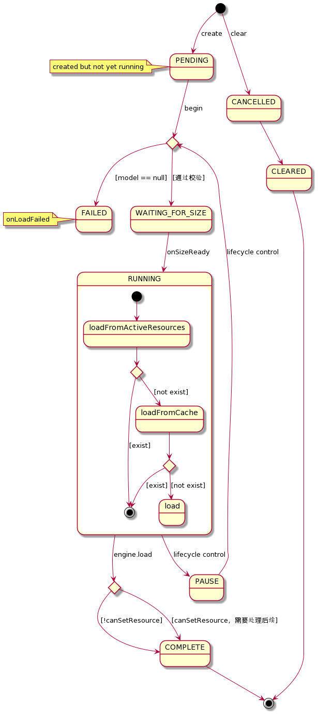
Request处理流程一
这一小节，我们将涉及这三个细节：
- 尺寸获取
- 必要的PlaceHolder设置
- 向Engine 发起加载请求

如前文所提及:
- 当资源无法通过校验，将直接进入 FAILED
- 当一切都已准备就绪，即 COMPLETE，则进入资源处理流程
onResourceReady
否则进入 WAITING_FOR_SIZE，并处理尺寸处理
- 如果已经测量过的尺寸是合法的，进入
onSizeReady；2、11 - 否则获取尺寸，并挂Callback；
3、5、6、7、8、9、10、11
注意：当onSizeReady后，状态将变为 RUNNING，进入资源获取流程，即11，并且，如果有必要处理PlaceHolder且满足条件，则会在begin时处理PlaceHolder设置，即4
不难理解：处理请求时，Target的尺寸未必处于可测量状态，Glide内利用了ViewTree的回调机制，以ViewTarget为例，当该Target进入 PreDraw状态 时，
开始测量尺寸，准确的讲是 获取尺寸。
至此，我们即将阅读到了 资源加载 过程。
Request处理流程二 -- 资源加载
这一小节，我们专注于一个流程细节：资源加载 过程
简单想象一下，一个媒体资源，它的真身可能存在于："网络中的某台主机"，"本地的磁盘的用户文件目录下"，"当前应用的核心资源目录下" 等等。
使用这些资源时，均从原始位置获取 的方式是不可取的，除了 最大的获取成本 外，还额外付诸 加载时间、解析算力成本。
不难理解：在资源有效时限可被信任的前提下，有必要设计缓存机制，
牺牲空间换取时间和算力。下一篇中，我们将深入Glide的缓存机制，挖掘细节；在本篇中，读者仅需要先记住：
- Glide 设计了缓存
- 缓存包含
内存缓存，磁盘缓存；内存缓存中包含两个级别：已加载激活的缓存、LRU缓存以及映射； 磁盘缓存包含两个级别：已解码数据，原始数据- 不同的缓存使用策略，同时对应了缓存的
存储、获取
整个加载流程可以分为3个环节：
- 生成key
- 从内存缓存中获取
- 使用EngineJob 从磁盘缓存中获取
同样先给出图：为了方便阅读，将流程切分成了5张图


 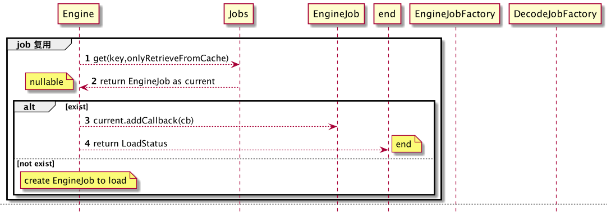
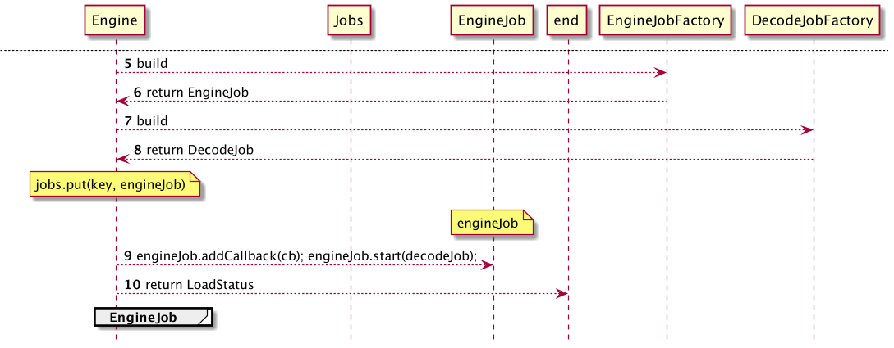
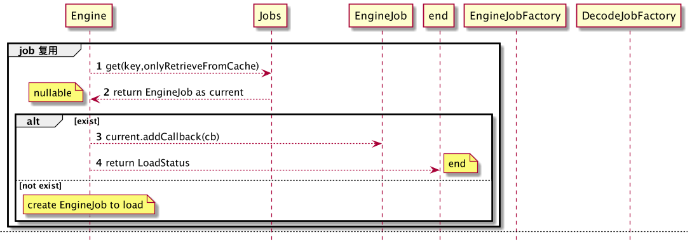
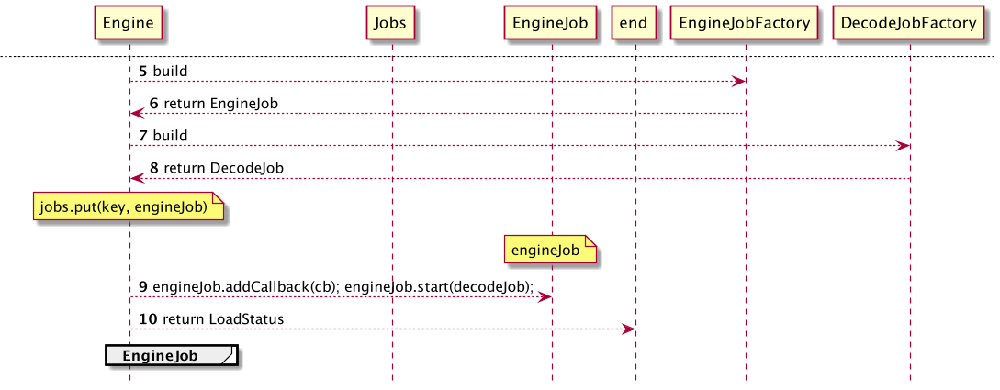
接下来我们逐步分析
1、2是生成key过程，注意：KEY的生成方式中，隐藏着危险。
不难理解，对同一个媒体资源，采用不同的处理方式，得到的结果存在差别，缓存时，必须 完整的 考虑到这些处理差别，否则会出现 资源错用。本文先不对此进行展开
接下来执行 loadFromActiveResources,即从 已加载激活的缓存 中获取
如果不允许使用内存缓存，则直接返回null进入下一级缓存获取
如果得到了缓存资源，则直接运用；否则进入下一级缓存获取
此时，激活缓存未取到目标资源，将进入LRU内存缓存获取
同样的，如果不允许使用内存缓存，则直接返回null进入下一级缓存获取
如果得到了缓存资源，将从LRU内存缓存中被remove，做LRU标记维护，并被加载到 激活缓存 中激活，则直接运用；否则进入下一级缓存获取。
至此，内存缓存无法支持目标资源的获取，需要转向磁盘缓存
不难理解：这里的内在细节会很复杂。将在缓存分析篇章中展开
同样不难理解：当细节非常复杂时，有必要进行 封装 ，隐藏实现细节，对调用者提供语义恰当的 API 即可。
Glide中，将这些细节封装为 EngineJob 和 DecodeJob；
不难理解：这种加载过程是 相对耗时 的，没有必要 阻塞式 等待结果以使用；因此，在加载的过程中，完全可能出现以下场景： 同一资源 被 多次要求 加载。
于是，对Job可以进行 复用 ，获取到还在加载中的Job时，增加回调即可，如下图所示：
如果没有可复用的Job，则创建相应的Job，维护Job资源池，设置回调，如下图所示：
Request处理流程三 -- 资源使用
在前文的讲解中，我们阅读到当资源加载成功后，会执行到： Request#onResourceReady(Resource<?>, DataSource)，而其实现内容即为资源使用。
当然加载失败，或者资源校验失败会执行 onLoadFailed(GlideException e)。
class SingleRequest {
@Override
public void onResourceReady(Resource<?> resource, DataSource dataSource) {
stateVerifier.throwIfRecycled();
loadStatus = null;
if (resource == null) {
GlideException exception = new GlideException("...");
onLoadFailed(exception);
return;
}
Object received = resource.get();
if (received == null || !transcodeClass.isAssignableFrom(received.getClass())) {
releaseResource(resource);
GlideException exception = new GlideException("...");
onLoadFailed(exception);
return;
}
if (!canSetResource()) {
releaseResource(resource);
// We can't put the status to complete before asking canSetResource().
status = Status.COMPLETE;
return;
}
onResourceReady((Resource<R>) resource, (R) received, dataSource);
}
private void onResourceReady(Resource<R> resource, R result, DataSource dataSource) {
// We must call isFirstReadyResource before setting status.
boolean isFirstResource = isFirstReadyResource();
status = Status.COMPLETE;
this.resource = resource;
//log
isCallingCallbacks = true;
try {
if ((requestListener == null
|| !requestListener.onResourceReady(result, model, target, dataSource, isFirstResource))
&& (targetListener == null
|| !targetListener.onResourceReady(result, model, target, dataSource, isFirstResource))) {
Transition<? super R> animation =
animationFactory.build(dataSource, isFirstResource);
target.onResourceReady(result, animation);
}
} finally {
isCallingCallbacks = false;
}
notifyLoadSuccess();
}
}
注意:RequestListener 以及 TargetListener的处理，在使用监听器 附加 一些功能时，例如 采集埋点、 依赖状态触发，需要注意此处细节。
而Target实现类的具体实现，本文略去，感兴趣的读者还请自行阅读源码。
内容总结
这是一张Glide 3.x时代的架构图，仅供参考

图片有区域透明，使用了html加了背景色，如果被转义了，请看这里
图中，蓝色 和 紫色 区域对应了资源加载过程，黄色 区域对应了原始资源获取，品红色 区域对应了内部线程池。
虽然这张图已经无法和 Glide 4.x 完全对应，但是处理问题的主要流程还是没有变化的。
本文的内容，是在 Glide 4.12.0版本基础上 对 蓝色区域 的 深度挖掘 以及对 紫色区域 的 简要梳理 择去了缓存实现细节。
思危、思退、思变
在加载过程分析中，我们已经罗列了部分可能出现错误使用的地方。这些点需要注意并在使用中避开。
本文中没有涉及到具体案例，所以没有 更优做法 ， 更合适的做法 。
但阅读优秀的源码，可以分析其设计思路，思考这样设计的优劣。
如：
- Request 根据内在状态枚举处理切面，在异步处理的过程中，隐藏了内在实现，仅提供最简单的控制API，如
begin，pause；又为什么不使用状态模式？ - Engine 作为整个流程的控制核心，这是一种
Facade模式实践，如果没有它的存在，则使用者需要清晰的了解：- 缓存的使用细节
- EngineJob的调度等
而增加了 Facade层后，对使用者而言，仅需要知道其功能和API语义即可。
当然，这些内容以及更细致的思考，需要建立在 有目的 地源码阅读上，而本文所起到的作用，类似于 引子，参考。
假期到了，也希望读者们去踏踏青，锻炼锻炼，拥有健康的身体状态！
最近会降低写原创的频次，先前一周写两到三篇着实也有些累。
KSP
Kotlin Symbol Processing
好玩系列 | 拥抱Kotlin Symbol Processing(KSP),项目实战
写在最前
这一篇，我们抱着拥抱新事物的心态，尝试一些新事物。笔者在这一次历程中，对三项事物进行了尝鲜：
- 手动迁移一个小规模的Gradle项目，由
Groovy Script转为Kotlin Script - Kotlin Symbol Processing
- Kotlin Poet
这次的 重点是KSP ，Kotlin Poet学习成本比较低，迁移 Kotlin Script 仅仅是比较繁琐。
既然要实战，那么就需要一个实际的项目来支持，笔者选取了个人的开源项目DaVinCi,.
关注笔者动态的读者可能注意到：笔者在过年时发布过一篇文章好玩系列：拥有它，XML文件少一半--更方便的处理View背景,
在这篇文章中，我们提到了一种 取代xml背景资源文件 的方案，并且提到之后会 实现Style机制。本篇文章中，以此为目标，展开 KSP的实战过程。
PS:对DaVinCi不了解并不影响本文内容的理解
如果读者对好玩系列感兴趣，建议点个关注，查看 关于好玩系列 了解笔者创作该系列的初衷。
KSP简介
在正式了解KSP之前，我们需要 复习 之前的知识：
- 编译期处理
- APT与KAPT
- Transformer
因为一些特定的需求，在项目进行编译的过程中，需要增加一定的处理，例如：生成源码文件并参与编译；修改编译的产物。
基于Gradle编译任务链中的 APT机制，可以实现 Annotation Processor，常见于 代码生成， SPI机制实现如AutoService ，也可以用来生成文档。
而APT仅支持Java源码，KAPT并没有 专门的注解处理器 ，所以kotlin项目使用KAPT时，需要 生成代码桩 即Java Stub 再交由APT 进行处理。
基于Gradle编译任务链中的 Transformer机制，可以动态的修改编译结果，例如利用 Javasist，ASM 等字节码操纵框架 增加、修改字节码中的业务逻辑。
这导致Kotlin项目想要针对注解进行处理时，要么用力过猛，采用Transformer机制，要么就使用KAPT并牺牲时间。Transformer机制并无时间优势，若KAPT可以等价处理时， Transformer机制往往呈现力大砖飞之势
那么顺理成章，KSP用于解决纯Kotlin项目下，无专门注解处理器的问题。
在KSP之前，Kotlin的编译存在有 Kotlin Compiler Plugin
了解更多
，下文简称KCP，KCP用于解决Kotlin 的关键词和注解的编译问题，例如 data class，
而KCP的功能太过于强大，以至于需要 很大的学习成本 ，而将问题局限于 注解处理 时，这一学习成本是多余的，于是出现了KSP，它基于KCP，但 屏蔽了KCP的细节 ，
让我们 专注于注解处理的业务

KCP的复杂程度从其架构可见一斑
正式开始之前
在正式开始之前，我们再简要的阐明一下实战的目标：DaVinCi中可以定义 Style 和 StyleFactory：
推荐使用 StyleRegistry.Style.Factory，而不要直接定义 StyleRegistry.Style
@DaVinCiStyle(styleName = "btn_style.main")
class DemoStyle : StyleRegistry.Style("btn_style.main") {
init {
this.register(
state = State.STATE_ENABLE_FALSE,
expression = DaVinCiExpression.shape().rectAngle().solid("#80ff3c08").corner("10dp")
).register(
state = State.STATE_ENABLE_TRUE,
expression = DaVinCiExpression.shape().rectAngle().corner("10dp")
.gradient("#ff3c08", "#ff653c", 0)
)
}
}
@DaVinCiStyleFactory(styleName = "btn_style.main")
class DemoStyleFactory : StyleRegistry.Style.Factory() {
override val styleName: String = "btn_style.main"
override fun apply(style: StyleRegistry.Style) {
style.register(
state = State.STATE_ENABLE_FALSE,
expression = DaVinCiExpression.shape().rectAngle().solid("#80ff3c08").corner("10dp")
).register(
state = State.STATE_ENABLE_TRUE,
expression = DaVinCiExpression.shape().rectAngle().corner("10dp")
.gradient("#ff3c08", "#ff653c", 0)
)
}
}
并利用
osp.leobert.android.davinci.StyleRegistry#register(style: Style)
osp.leobert.android.davinci.StyleRegistry#registerFactory(factory: Style.Factory)
进行全局注册
我们并且期望将 StyleName 生成常量，且分别检查Style和StyleFactory是否有重复。
那么我们期望生成以下内容：
/**
* auto-generated by DaVinCi, do not modify
*/
public object AppDaVinCiStyles {
public const val btn_style_main: String = "btn_style.main"
/**
* register all styles and styleFactories
*/
public fun register(): Unit {
registerStyles()
registerStyleFactories()
}
private fun registerStyles(): Unit {
osp.leobert.android.davinci.StyleRegistry.register(com.example.simpletest.factories.DemoStyle())
}
private fun registerStyleFactories(): Unit {
osp.leobert.android.davinci.StyleRegistry.registerFactory(com.example.simpletest.factories.DemoStyleFactory())
}
}
正式开始
定义注解
@Target(AnnotationTarget.CLASS)
public annotation class DaVinCiStyle(val styleName: String)
@Target(AnnotationTarget.CLASS)
public annotation class DaVinCiStyleFactory(val styleName: String)
显然，需要单独建立Module，这并不复杂。
引入 com.google.devtools.ksp 插件
//project build.gradle.kts
plugins {
id("com.google.devtools.ksp") version Dependencies.Kotlin.Ksp.version apply false
kotlin("jvm") version Dependencies.Kotlin.version apply false
id("org.jetbrains.dokka") version Dependencies.Kotlin.dokkaVersion apply false
id("com.vanniktech.maven.publish") version "0.15.1" apply false
}
//Module build.gradle.kts
plugins {
id("com.google.devtools.ksp")
kotlin("jvm")
// kotlin("kapt")
}
dependencies {
compileOnly(Dependencies.Kotlin.Ksp.api)
implementation(Dependencies.AutoService.annotations)
ksp("dev.zacsweers.autoservice:auto-service-ksp:0.5.2")
implementation(Dependencies.KotlinPoet.kotlinPoet)
implementation(Dependencies.guava)
// todo use stable version when release
implementation(project(":annotation"))
}
引入必要的依赖，这里我们使用ksp实现的auto-service实现SPI，具体可参考DaVinCi项目源码，此处不再赘述
实现 SymbolProcessorProvider 处理注解
必要的知识
核心非常简要，实现SymbolProcessorProvider接口 ，提供一个 SymbolProcessor 接口的实例
package com.google.devtools.ksp.processing
/**
* [SymbolProcessorProvider] is the interface used by plugins to integrate into Kotlin Symbol Processing.
*/
interface SymbolProcessorProvider {
/**
* Called by Kotlin Symbol Processing to create the processor.
*/
fun create(environment: SymbolProcessorEnvironment): SymbolProcessor
}
处理注解的入口：
package com.google.devtools.ksp.processing
import com.google.devtools.ksp.symbol.KSAnnotated
/**
* [SymbolProcessor] is the interface used by plugins to integrate into Kotlin Symbol Processing.
* SymbolProcessor supports multiple round execution, a processor may return a list of deferred symbols at the end
* of every round, which will be passed to proceesors again in the next round, together with the newly generated symbols.
* Upon Exceptions, KSP will try to distinguish the exceptions from KSP and exceptions from processors.
* Exceptions will result in a termination of processing immediately and be logged as an error in KSPLogger.
* Exceptions from KSP should be reported to KSP developers for further investigation.
* At the end of the round where exceptions or errors happened, all processors will invoke onError() function to do
* their own error handling.
*/
interface SymbolProcessor {
/**
* Called by Kotlin Symbol Processing to run the processing task.
*
* @param resolver provides [SymbolProcessor] with access to compiler details such as Symbols.
* @return A list of deferred symbols that the processor can't process.
*/
fun process(resolver: Resolver): List<KSAnnotated>
/**
* Called by Kotlin Symbol Processing to finalize the processing of a compilation.
*/
fun finish() {}
/**
* Called by Kotlin Symbol Processing to handle errors after a round of processing.
*/
fun onError() {}
}
环境可以给到的内容：
class SymbolProcessorEnvironment(
/**
* passed from command line, Gradle, etc.
*/
val options: Map<String, String>,
/**
* language version of compilation environment.
*/
val kotlinVersion: KotlinVersion,
/**
* creates managed files.
*/
val codeGenerator: CodeGenerator,
/**
* for logging to build output.
*/
val logger: KSPLogger
)
这里注意，ksp还无法像APT一样进行debug，所以开发阶段还有一些障碍，仅能 靠日志进行排查。
codeGenerator 用于生成kotlin源码文件，注意写入时 必须分离到子线程 ，否则KSP会进入无限等待。
options 用于手机、获取配置参数
开始编码
略去获取配置参数的部分
定义目标注解的信息：
val DAVINCI_STYLE_NAME = requireNotNull(DaVinCiStyle::class.qualifiedName)
val DAVINCI_STYLE_FACTORY_NAME = requireNotNull(DaVinCiStyleFactory::class.qualifiedName)
利用Resolver得到目标注解的KSName，e.g.:
resolver.getKSNameFromString(DAVINCI_STYLE_NAME)
并进一步得到被注解的类
resolver.getClassDeclarationByName(
resolver.getKSNameFromString(DAVINCI_STYLE_NAME)
)
此刻，代码示例如下：
private class DaVinCiSymbolProcessor(
environment: SymbolProcessorEnvironment,
) : SymbolProcessor {
//忽略
companion object {
val DAVINCI_STYLE_NAME = requireNotNull(DaVinCiStyle::class.qualifiedName)
val DAVINCI_STYLE_FACTORY_NAME = requireNotNull(DaVinCiStyleFactory::class.qualifiedName)
}
override fun process(resolver: Resolver): List<KSAnnotated> {
val styleNotated = resolver.getClassDeclarationByName(
resolver.getKSNameFromString(DAVINCI_STYLE_NAME)
)?.asType(emptyList())
val factoryNotated = resolver.getClassDeclarationByName(
resolver.getKSNameFromString(DAVINCI_STYLE_FACTORY_NAME)
)?.asType(emptyList())
//暂未涉及
return emptyList()
}
}
进行必要的检查，如果没有任意的目标注解，按照自己的计划进行抛错或者其他；
此刻我们得到了目标注解的类型，即 KSClassDeclaration实例
扫描被注解的目标
利用 Resolver 和 目标注解的类型 进行扫描
而我们的既定目标是寻找被注解的类，所以直接过滤被注解的目标为 KSClassDeclaration，直接排除掉 Method 和 Property
factoryNotated?.let {
handleDaVinCiStyleFactory(resolver = resolver, notationType = it)
}
private fun handleDaVinCiStyleFactory(resolver: Resolver, notationType: KSType) {
resolver.getSymbolsWithAnnotation(DAVINCI_STYLE_FACTORY_NAME)
.asSequence()
.filterIsInstance<KSClassDeclaration>()
.forEach { style ->
//解析类上的注解信息、保存以待后续处理
/*end @forEach*/
}
}
解析注解信息
这里和APT有一点差异，无法直接将 KSAnnotation 转换为实际注解，但并不影响我们操作，可以判断注解的类型、获取注解中方法的返回值。
前面已经得到了被注解的 KSClassDeclaration实例，可以直接得到对于它的注解，并通过 KSType 比对得到目标注解，并进一步解析其 arguments，
得到注解中的值。
val annotation =
style.annotations.find { it.annotationType.resolve() == notationType }
?: run {
logE("@DaVinCiStyleFactory annotation not found", style)
return@forEach
}
//structure: DaVinCiStyle(val styleName: String, val parent: String = "")
val styleName = annotation.arguments.find {
it.name?.getShortName() == "styleName"
}?.value?.toString() ?: kotlin.run {
logE("missing styleName? version not matched?", style)
return@forEach
}
//下面是简要的信息处理和保存
val constName = generateConstOfStyleName(styleName)
if (styleFactoryProviders.containsKey(constName)) {
logE(
"duplicated style name:${styleName}, original register:${styleFactoryProviders[constName]?.clzNode}",
style
)
return@forEach
}
styleFactoryProviders[constName] = MetaInfo.Factory(
constName = constName,
styleName = styleName,
clzNode = style
)
基于信息生成Kotlin源码
参考 kotlin poet 进行学习
鉴于此部分代码完全与DaVinCi的业务相关，故略去。
生成源码文件
//daVinCiStylesSpec 为利用Kotlin Poet编写的源码信息
val fileSpec = FileSpec.get(packageName ?: "", daVinCiStylesSpec)
val dependencies = Dependencies(true)
thread(true) {
codeGenerator.createNewFile(
dependencies = dependencies,
packageName = packageName ?: "",
fileName = "${moduleName ?: ""}DaVinCiStyles",
extensionName = "kt"
).bufferedWriter().use { writer ->
try {
fileSpec.writeTo(writer)
} catch (e: Exception) {
logE(e.message ?: "", null)
} finally {
writer.flush()
writer.close()
}
}
}
再次注意，需要在子线程中执行
若对碎片化的代码不太敏感，可以下载DaVinCi的源码进行对照阅读
在项目中使用
前面我们已经完成了KSP的核心逻辑，现在我们需要配置并使用它
这里注意，ksp的生成目录不属于默认sourceSets，需要单独配置
plugins {
id("com.android.application")
id("com.google.devtools.ksp") //version Dependencies.Kotlin.Ksp.version
//略
}
android {
//略
buildTypes {
getByName("release") {
sourceSets {
getByName("main") {
java.srcDir(File("build/generated/ksp/release/kotlin"))
}
}
//略
}
getByName("debug").apply {
sourceSets {
getByName("main") {
java.srcDir(File("build/generated/ksp/debug/kotlin"))
}
}
}
}
}
ksp {
arg("daVinCi.verbose", "true")
arg("daVinCi.pkg", "com.examole.simpletest")
arg("daVinCi.module", "App")
}
dependencies {
implementation(project(":davinci"))
ksp(project(":anno_ksp"))
implementation(project(":annotation"))
//略
}
运行 kspXXXXKotlin 任务即可
结语
至此，KSP的实战已告一段落，相信读者朋友们一定产生了浓厚的兴趣，并准备尝试一番了，赶紧开始吧！
写给对DaVinCi感兴趣的读者朋友们
继DaVinCi开源以及相关文章发布后，也引起了部分读者朋友们的讨论和关注，此次结合实战KSP的机会，对DaVinCi的功能进行了升级，这里也简单的交代一下， DaVinCi目前已经支持：
GradientDrawable,StateListDrawable的背景设置 （原有）ColorStateList文字色设置（新增）- 以上两者的Style定义和使用 （新增）
开发DaVinCi时，我的初衷是："既然难以管理Style和Shape资源，那索性就用一种更加方便的方式来处理"，但这件本身是违背"优秀代码、优秀项目管理"的。
而本次为DaVinCi添加Style机制，又将这一问题摆上桌面，笔者也将思考并尝试寻找一种 有效、有趣 的方式，来解决这一问题。如果各位读者对此有比较好的点子，非常希望能够分享一二。
Base
基础知识的创作计划尚未确立，有兴致时会挑一些手头遇到的内容写写，作为系统性（例如View系统、消息系统）知识之外的补遗
孔乙己：你可知道页面和弹窗“通信“的方式有四种？
演示用源码和内容思维导图于文末
这日孔乙己照常走进星巴克，点了份大杯拿铁，还要脱脂奶的， 虽然过上了小康生活，但毛病还是没有改，照例掏出一大把硬币，排出三十二枚。
就在等待时，听到旁边一桌人说道："好兄弟，别摸鱼了，今天我请你喝咖啡，这个弹窗功能可务必要加好，不能出bug啊"。"呵呵，一个弹窗、还能难道我伟大的Android工程师？" 手指孔乙己说道："在他拿到咖啡前，我就能写好，bug不存在的！"
孔乙己看热闹不嫌事大，凑上前去，"哟嚯，小兄弟年纪不大口气不小，你可知道Android中界面使用弹窗，有四种写法？今天就让我孔乙己来和你说道说道"
众人哂笑："这孔乙己还真是孔乙己，茴香豆的茴字你是不是也要说道说道？"
孔乙己大怒道："这可不是茴香豆的茴字！这可是必备的基础知识啊，有些你今天用不着了，但遇上祖传代码呢？"
为了说的清晰些，我们约定："在界面点击按钮触发弹窗、弹窗中可输入文字，确定后将输入的内容显示在按钮上方的文本框中。让场景更加真实些，界面包含Activity界面和Fragment界面两种主流情况"。
孔乙己准备先做点准备工作：封装两种情况获取Context、绑定View、绑定事件
诸位可以忽略下面这段模板代码，仅仅是担心后续内容中的代码引起疑惑，可以直接跳跃到 最久远的做法: Dialog
sealed class Host {
abstract val context: Context
abstract fun <T : View> view(@IdRes id: Int): T
abstract fun launchFragment(fragment: DialogFragment)
abstract fun launchFragment2(fragment: DialogFragment, listener: FragmentResultListener)
class ActivityHost(private val activity: AppCompatActivity) : Host() {
override val context: Context
get() = activity
override fun <T : View> view(id: Int): T {
return activity.findViewById(id)
}
override fun launchFragment(fragment: DialogFragment) {
//下文展开
}
override fun launchFragment2(fragment: DialogFragment, listener: FragmentResultListener) {
//下文展开
}
}
class FragmentHost(private val fragment: Fragment) : Host() {
override val context: Context
get() = fragment.requireContext()
override fun <T : View> view(id: Int): T {
return fragment.requireView().findViewById(id)
}
override fun launchFragment(fragment: DialogFragment) {
//下文展开
}
override fun launchFragment2(fragment: DialogFragment, listener: FragmentResultListener) {
//下文展开
}
}
}
class Demo(val host: Host) {
interface OnResultListener {
fun onResult(text: String?)
}
companion object {
const val BUNDLE_STR_INPUT = "BUNDLE_STR_INPUT"
const val BUNDLE_BOOL_FROM_FG = "BUNDLE_BOOL_FROM_FG"
const val KEY_INPUT = "KEY_INPUT"
}
fun onStart() {
val btnDemo1: Button = host.view(R.id.btn1)
val btnDemo2: Button = host.view(R.id.btn2)
val btnDemo3: Button = host.view(R.id.btn3)
val btnDemo4: Button = host.view(R.id.btn4)
btnDemo1.setOnClickListener { demo1() }
btnDemo2.setOnClickListener { demo2() }
btnDemo3.setOnClickListener { demo3() }
btnDemo4.setOnClickListener { demo4() }
}
fun setText(text: String?) {
host.view<TextView>(R.id.tv_result).text = text
}
private fun demo1() {
}
private fun demo2() {
}
private fun demo3() {
}
private fun demo4() {
}
}
很轻易的，孔乙己完成了准备工作
最久远的做法: Dialog
还能看到这种做法的，那项目一定是历史悠久了。
做法
孔乙己继续说道："这种做法只需要拿到 Context 和 业务回调函数即可"
private fun demo1() {
val view = LayoutInflater.from(host.context).inflate(R.layout.view_input, null)
val dialog = AlertDialog.Builder(host.context)
.setView(view)
.setPositiveButton("OK") { dialog, _ ->
dialog?.dismiss()
setText(view.findViewById<EditText>(R.id.et_input)?.text?.toString())
}
.setNegativeButton("cancel") { dialog, _ -> dialog?.dismiss() }
.create()
dialog.show()
}
优点
很显然，它的优点很明显：简单、易于封装，诸位可以很容易的按照产品和UI的需求、剥离弹窗UI部分，从而保持业务部分 "纯粹"， 既能够 高效复用 ，也 避免 UI变更时改动业务类。
缺点
孔乙己转头问小兄弟："你可知道它的缺点吗？"，小兄弟默默不言， 孔乙己也不去管他，笑道："你把弹窗弹出来、再转一下屏幕看。或者把不保留活动打开，退后台再进。哈哈，是不是弹窗没了？"
再仔细看看，是不是还发生了 WindowLeak？
这个设计需要开发者额外维护生命周期变化所导致的问题。
不操心生命周期变化的方式：DialogFragment + setTargetFragment
孔乙己继续说道："Google知道这个设计不好，于是再Fragment系统中增加弹窗交互系统，想要利用Fragment在宿主生命周期变化后的恢复特性来解决这一问题"
做法
孔乙己又做了点准备工作，和前文的Dialog保持了功能一致：
sealed class DemoDialogFragment : DialogFragment() {
override fun onCreateDialog(savedInstanceState: Bundle?): Dialog {
val view = LayoutInflater.from(requireContext()).inflate(R.layout.view_input, null)
return AlertDialog.Builder(requireContext())
.setView(view)
.setPositiveButton("OK") { _, _ ->
dismissAllowingStateLoss()
onPositive(view.findViewById<EditText>(R.id.et_input)?.text?.toString())
}
.setNegativeButton("Cancel") { _, _ -> dismissAllowingStateLoss() }
.create()
}
protected abstract fun onPositive(text: String?)
}
孔乙己又按照两种界面形式区分了结果处理：
- Fragment来源则重新获得 targetFragment，约定调用onActivityResult进行回调
- Activity来源则约定Activity必须实现回调接口，获取宿主Activity后进行转型继而进行回调
class Demo2 : DemoDialogFragment() {
private var fromFg = false
override fun onCreate(savedInstanceState: Bundle?) {
super.onCreate(savedInstanceState)
fromFg = arguments?.getBoolean(BUNDLE_BOOL_FROM_FG) ?: false
}
override fun onPositive(text: String?) {
val intent = Intent()
intent.putExtras(Bundle().apply {
putString(BUNDLE_STR_INPUT, text)
})
if (fromFg) {
targetFragment?.onActivityResult(targetRequestCode, Activity.RESULT_OK, intent)
} else {
(requireActivity() as OnResultListener).onResult(text)
}
}
}
编写好 "启动" 方式
class ActivityHost(private val activity: AppCompatActivity) : Host() {
override fun launchFragment(fragment: DialogFragment) {
val arg = fragment.arguments ?: Bundle()
arg.putBoolean(BUNDLE_BOOL_FROM_FG, false)
fragment.arguments = arg
fragment.show(activity.supportFragmentManager, fragment.javaClass.name)
}
}
class FragmentHost(private val fragment: Fragment) : Host() {
override fun launchFragment(fragment: DialogFragment) {
val arg = fragment.arguments ?: Bundle()
arg.putBoolean(BUNDLE_BOOL_FROM_FG, true)
fragment.arguments = arg
fragment.setTargetFragment(this.fragment, 2)
//使用 fragment.requireActivity().supportFragmentManager 亦可
fragment.show(this.fragment.requireFragmentManager(), fragment.javaClass.name)
}
}
略去回调处理逻辑，简单的取数据和方法调用
private fun demo2() {
host.launchFragment(DemoDialogFragment.Demo2())
}
优点
小兄弟拿起demo进行了把玩，不错不错，这个没bug了。
缺点
孔乙己又是邪魅一笑，你不觉得这 代码太TM多 了吗？使用很不方便啊，Activity和Fragment还有使用差异。
小兄弟试探的答道："改造下，全部干成回调函数？那不就基本统一了吗？"
孔乙己又是邪魅一笑，不错、这就是第三种做法了，你来试一试。
不靠谱的 DialogFragment + Callback
孔乙己在一旁看着小兄弟飞快的编码，左手一个Callback，右手一个invoke Callback，三下五除二就改完了
做法
class Demo3 : DemoDialogFragment() {
var listener: OnResultListener? = null
override fun onPositive(text: String?) {
listener?.onResult(text) ?: Log.e("DEMO3", "listener is null!")
}
}
private fun demo3() {
host.launchFragment(DemoDialogFragment.Demo3().apply {
this.listener = object : OnResultListener {
override fun onResult(text: String?) {
setText(text)
}
}
})
}
优点
小兄弟对孔乙己说："孔兄，你看，它又变得 很简单、很容易封装 了，他们再改UI我也不担心改业务代码了，你看生命周期变化的时候它也不消失了！"
缺点
孔乙己邪魅一笑，"小兄弟别高兴的太早，转完了屏幕测一下功能还正常不？"
小兄弟闻言一试，大呼："回调函数怎么没了！可有解救之法？"
孔乙己说道："自然是有的，先想想为什么会这样？重新出现的弹窗是系统在处理宿主生命周期变化时为你恢复的，但并不保证所有的引用都恢复"
破解自然是有办法的，让Callback被恢复，或者让Callback不需要被恢复也能得到正确的对象即可，但需要注意不能带来宿主的内存泄漏问题。
改造自然是需要花费很多精力的，但是现在有福了。
拥抱新变化：FragmentResultListener
孔乙己说道："Google自然是知道方法二中的诸多问题，终于是提供了大一统解决方案"
先把AndroidX-Appcompat升级到 1.3.0
implementation 'androidx.appcompat:appcompat:1.3.0'
我们将会拥有新API：
FragmentManager#setFragmentResultListener(key:String, lifecycleOwner:LifecycleOwner, listener:FragmentResultListener)
FragmentManager#setFragmentResult(key:String, bundle:Bundle)
做法
孔乙己使用新API进行了修改
class ActivityHost(private val activity: AppCompatActivity) : Host() {
//...
override fun launchFragment2(fragment: DialogFragment, listener: FragmentResultListener) {
activity.supportFragmentManager.setFragmentResultListener(Demo.KEY_INPUT, activity, listener)
fragment.show(activity.supportFragmentManager, fragment.javaClass.name)
}
}
class FragmentHost(private val fragment: Fragment) : Host() {
//...
override fun launchFragment2(fragment: DialogFragment, listener: FragmentResultListener) {
this.fragment.parentFragmentManager.setFragmentResultListener(Demo.KEY_INPUT, this.fragment, listener)
fragment.show(this.fragment.parentFragmentManager, fragment.javaClass.name)
}
}
重新呼出弹窗后
private fun demo4() {
host.launchFragment2(fragment = DemoDialogFragment.Demo4()) { requestKey, result ->
if (requestKey != KEY_INPUT) return@launchFragment2
setText(result.getString(BUNDLE_STR_INPUT))
}
}
非常完美。此时店员的声音飘来："孔乙己先生，您的大杯脱脂奶拿铁好了"。
孔乙己对众人说道："我的咖啡好了，要走了，有这种官方方案，第三种方法便不再优化了，至于此方案是否有缺点，诸位还请阅读源码，江湖再见"。
附
内容导图

SysApp
Android系统应用部分，基础部分。
系统应用一般通过ContentProvider对外提供服务，当然也包含Intent方式（一般在设计上会保持信息一致）。
本章节并不打算完全罗列所有的系统应用，只会挑选相对不常用、但产品方案中可能需要的部分。
使用日历丰富产品的用户体验
前言
经过一段时间的梳理和遴选，我挑选出了Android知识图谱中重要的部分，制作了一张脑图。读者朋友们可按照脑图查漏补缺了， 图片尺寸较大，仅附链接 。
当然，这是我按照自己的判断、结合参考其他博主的观点进行的挑选，不同的细分领域要求的重点有所不同，不可一以概之，且未曾遴选内容并非没必要掌握。图中的4-5层没有展示，以后文章见。
本篇属于 part2-系统应用部分。
在一些助手类的APP中，在使用应用的过程中会产生 "日程" 数据。作为用户理所当然的希望在事情发生前收到提醒。
而我们知道，通过 推送进行提醒 存在一定的不可靠性。那么 在用户手机日历中自动插入事件 则是一个重要的补充手段。
本篇中，我们将用 5-10分钟的时间，回顾操作日历的知识点。
注：开发者官网具有更详尽地说明，只是有点啰嗦，英文版 中文版
重点先行
值得关注的重点：
- 权限
- ContentResolver 进行 查询、插入、修改、删除 操作
- CalendarContract 中 各"表"含义和字段作用 （文中不会详细列举，看API doc即可，足够详细）
- 同步适配器以及何时需要使用同步适配器
- EntityIterator简化模板代码
- RFC 5545 简要规则
- 使用逻辑删除与物理删除
- 从日历日程跳转回APP
如果您已经掌握了这些内容，可忽略下文，下文面向初学者。
权限
小于23时，不需要获取动态权限，Manifest声明日历读写权限即可。
API 14 即 Android 4.0以下不支持，庆幸没那么古老的手机了
<manifest>
<uses-permission android:name="android.permission.READ_CALENDAR"/>
<uses-permission android:name="android.permission.WRITE_CALENDAR"/>
...
</manifest>
大于等于23时，用你喜欢的方式处理动态权限获取即可。
查询、创建本地日历
实际上，从这里开始的所有内容均和 ContentResolver 有关，相应的，日历应用通过 ContentProvider提供了这些服务，以及通过 Intent 做功能补充。
日历账户信息属于 CalendarContract.Calendars 范畴，可将其看做一张数据库表理解查询与插入
查询
定义关心的列，可理解为 SQL 语句中 Select片段的Column，当然使用null传参可获取所有列，这将增加I/O成本和内存开销。
// dynamic lookups improves performance.
private val EVENT_PROJECTION: Array<String> = arrayOf(
CalendarContract.Calendars._ID, // 0
CalendarContract.Calendars.ACCOUNT_NAME, // 1
CalendarContract.Calendars.CALENDAR_DISPLAY_NAME, // 2
CalendarContract.Calendars.OWNER_ACCOUNT // 3
)
// The indices for the projection array above.
private const val PROJECTION_ID_INDEX: Int = 0
private const val PROJECTION_ACCOUNT_NAME_INDEX: Int = 1
private const val PROJECTION_DISPLAY_NAME_INDEX: Int = 2
private const val PROJECTION_OWNER_ACCOUNT_INDEX: Int = 3
uri则类似SQL中的 FROM片段，代表了表名
val uri: Uri = CalendarContract.Calendars.CONTENT_URI
拼接条件模板，条件模板+参数 则类似SQL中的 Where片段。代码中演示了查询条件为 账户名为"张三" 且 账户类型为本地账户 且 账户拥有者为"张三"
val selection: String = "((${CalendarContract.Calendars.ACCOUNT_NAME} = ?) AND (" +
"${CalendarContract.Calendars.ACCOUNT_TYPE} = ?) AND (" +
"${CalendarContract.Calendars.OWNER_ACCOUNT} = ?))"
val selectionArgs: Array<String> = arrayOf("张三", CalendarContract.ACCOUNT_TYPE_LOCAL, "张三")
val cur: Cursor? = contentResolver.query(uri, EVENT_PROJECTION, selection, selectionArgs, null)
执行查询，注意此类操作均回避主线程，养成好习惯
遍历cursor，略
_
注：可能您在使用Sqlite数据库时，因为表结构是自行定义的，已经习惯了编码操作cursor、或者依赖ORM框架。而在ContentResolver相关的模块中，您可以尝试使用 android.content.EntityIterator
进而遍历 Entity，可直接获得 ContentValue，减少很多模板代码_
插入
可以选择插入 本地账户 或 在线同步账户，区别就是是否通过服务器同步数据。
一般Exchange协议的邮件服务器适用性更强，但本地账户已经足够满足需求。
我们需要注意：这张表的数据列来自4处定义：
public static final class Calendars
implements BaseColumns, SyncColumns, CalendarColumns {
}
牵涉到 SyncColumns 中定义的字段时，其写操作必须以 同步适配器 方式进行。
作者按：不需要死记，有十几个列，记住规则即可，开发时注意
需对uri做一定处理，包括：
CALLER_IS_SYNCADAPTER设置为 true- 提供
ACCOUNT_NAME和ACCOUNT_TYPE，作为 URI 中的查询参数，插入时据实填写即可，修改时注意数据有效性。
代码固定如下：
private fun Uri.asSyncAdapter(accountName: String, accountType: String): Uri {
return this.buildUpon()
.appendQueryParameter(CalendarContract.CALLER_IS_SYNCADAPTER, "true")
.appendQueryParameter(CalendarContract.Calendars.ACCOUNT_NAME, accountName)
.appendQueryParameter(CalendarContract.Calendars.ACCOUNT_TYPE, accountType).build()
}
//例如：
CalendarContract.Calendars.CONTENT_URI.asSyncAdapter("张三", CalendarContract.ACCOUNT_TYPE_LOCAL)
以下代码演示插入的关键代码，您可以按照需求增加列参数，例如是否显示、时区、地区等
//构造行数据
val values = ContentValues().apply {
// The new display name for the calendar
put(CalendarContract.Calendars.CALENDAR_DISPLAY_NAME, "${username}的日历")
put(CalendarContract.Calendars.ACCOUNT_NAME, username)
put(CalendarContract.Calendars.OWNER_ACCOUNT, username)
put(CalendarContract.Calendars.ACCOUNT_TYPE, CalendarContract.ACCOUNT_TYPE_LOCAL)
}
//插入
val resultUri = contentResolver.insert(
CalendarContract.Calendars.CONTENT_URI.asSyncAdapter(username, CalendarContract.ACCOUNT_TYPE_LOCAL),
values
)
//解析id
resultUri?.let {
calendarId = ContentUris.parseId(it)
}
插入日程和提醒
注：源码中体现为Event、文档中直译为事件，文中采用日程，更符合用语习惯，并非新事物
日程数据隶属于日历，因此我们需要事先获取操作的日历的日历id，参见上一节。
插入日程
日程对应 CalendarContract.Events "表" ：
public static final class Events implements BaseColumns,
SyncColumns, EventsColumns, CalendarColumns {
}
同理，写 SyncColumns 中的字段时，需要使用同步适配器，不再赘述。
业务相关字段主要定义于：EventsColumns，包含以下类别：
- 所属日历id
- 日程的名称、描述
- 颜色等样式相关
- 时间和规则描述，如起止时间、是否全天时间、如何重复
- 访客控制权限
- 等
如果是非重复日程，则必须提供起止时间，如下代码构建ContentValue：
val event = ContentValues().let {
//UTC 毫秒级时间戳
it.put(CalendarContract.Events.DTSTART, startMillis)
it.put(CalendarContract.Events.DTEND, endMillis)
//非全天
it.put(CalendarContract.Events.ALL_DAY, 0)
//标题和描述
it.put(CalendarContract.Events.TITLE, title)
it.put(CalendarContract.Events.DESCRIPTION, desc)
//所属日历的id
it.put(CalendarContract.Events.CALENDAR_ID, calendarId)
//时区
it.put(CalendarContract.Events.EVENT_TIMEZONE, SimpleTimeZone.getDefault().displayName)
//API >=16
// 来源APP的应用包名
it.put(CalendarContract.Events.CUSTOM_APP_PACKAGE, pkg)
// 为日程自定义uri，在支持的设备上，打开来源APP时可获取该uri值
it.put(CalendarContract.Events.CUSTOM_APP_URI, uri)
it
}
其他字段参考API文档选择使用。
如果是重复事件，则无需传递结束时间戳，而需要提供规则信息
//单次持续时间，而非从第一次起到最后一次截至的时间
it.put(CalendarContract.Events.DURATION, duration)
//日程的重复发生规则
it.put(CalendarContract.Events.RRULE, rRule)
//日程的日期重复规则
it.put(CalendarContract.Events.RDATE, rDate)
这三个参数的值，均遵循 RFC 5545
- DURATION: ”P600S” 标识持续600s即10分钟, “PT1H” 表示持续1小时， “P2W” 表示持续 2周。
- RRULE: ”FREQ=DAILY;WKST=SU;UNTIL=20230225T070000Z” 表示每日重复直至2023年2月25号7点；
- RDATE: 配合RRULE生成更加复杂的规则，如有必要，请研究 RFC 5545
插入日程并获取日程id：
val uri: Uri? = contentResolver.insert(CalendarContract.Events.CONTENT_URI, event)
// get the event ID that is the last element in the Uri
val eventID: Long = uri?.lastPathSegment?.toLong() ?: -1
从日程详情回到来源APP
插入日程时，我们使用了如下字段，标识了日程的来源APP和日程的自定义Uri。
//API >=16
// 来源APP的应用包名
it.put(CalendarContract.Events.CUSTOM_APP_PACKAGE, pkg)
// 为日程自定义uri，在支持的设备上，打开来源APP时可获取该uri值
it.put(CalendarContract.Events.CUSTOM_APP_URI, uri)
在大多数ROM的内置日历中，均支持在日程详情中跳转到来源应用。注意，存在一些例外。鸿蒙系统内置日历也并未完全支持该特性
您可以通过注册IntentFilter配合实现该功能：
<!--注意：exported需设置为true，进行适配-->
<activity android:name="XXXActivity">
<intent-filter>
<action android:name="android.provider.calendar.action.HANDLE_CUSTOM_EVENT"/>
<category android:name="android.intent.category.DEFAULT"/>
<data android:mimeType="vnd.android.cursor.item/event"/>
</intent-filter>
</activity>
并从Intent中获取日程的自定义Uri：
getIntent().getStringExtra(CalendarContract.EXTRA_CUSTOM_APP_URI)
为日程插入提醒
首先，要获取日程的id，可以在插入日程时从返回uri中解析得出，也可以通过查询日程解析得出
此时，操作的是提醒表，CalendarContract.Reminders:
public static final class Reminders implements BaseColumns,
RemindersColumns, EventsColumns {
}
一般设置提前时间、 提醒方式、日程id即可
val values = ContentValues().apply {
put(CalendarContract.Reminders.MINUTES, 1)
put(CalendarContract.Reminders.EVENT_ID, eventID)
put(CalendarContract.Reminders.METHOD, CalendarContract.Reminders.METHOD_ALERT)
}
contentResolver.insert(CalendarContract.Reminders.CONTENT_URI, values)
读取日程
掌握了插入之后，您已经掌握了表和字段含义，读取日程则更加简单
按实际需求拼接查询条件后，执行查询。
val selection = "((${CalendarContract.Events.CALENDAR_ID} = ?))"
val selectionArgs: Array<String> = arrayOf(calendarId.toString())
val cur: Cursor? = contentResolver.query(CalendarContract.Events.CONTENT_URI, null, selection, selectionArgs, null)
解析：
cur?.let {
val events = CalendarContract.EventsEntity.newEntityIterator(cur, contentResolver)
.asSequence()
.map { entity -> entity.entityValues }
.map {
//解析转换实体对象
}
.toCollection(arrayListOf())
}
更改日程
通过向URI追加ID的方式，可以限定至修改的条目（类似数据库ORM框架中按主键更新），而不必使用限定条件。
val values = ContentValues().apply {
// The new title for the event
put(CalendarContract.Events.TITLE, "Kickboxing")
}
val updateUri: Uri = ContentUris.withAppendedId(CalendarContract.Events.CONTENT_URI, eventID)
//影响的行数
val rows: Int = contentResolver.update(updateUri, values, null, null)
而使用限定条件可以更加灵活
删除日程
同样的，删除也可以使用追加ID方式，或者使用限定条件方式。
删除可分为两种：应用删除（逻辑删除）、同步适配器删除（物理删除）
应用删除将 deleted 列的值设置为 1，即逻辑删除。此标记告知同步适配器该行已删除，并且应将此删除传播至服务器。
同步适配器删除将会从数据库中移除事件及其所有关联数据。
以下为逻辑删：
val deleteUri: Uri = ContentUris.withAppendedId(
CalendarContract.Events.CONTENT_URI, 日程id
)
return contentResolver.delete(deleteUri, null, null)
物理删除则需通过URI构造同步适配器，参见上文。
DI
Android 知识体系 - part4 - 依赖注入
Hilt进阶--一文吃透Hilt自定义与跨壁垒
前言
本文隶属于我归纳整理的Android知识体系的第四部分，属于DI中Hilt的进阶内容
如果您需要学习Hilt的基础内容，可以通过Android开发者官方提供的 MAD Skills 12-15篇 和 官方使用教程
文章按照以下内容展开：
文中涉及的代码和案例，均可以于 workshop 中获得。
非常重要：经过反复思考，我删除了原先编写的关于Hilt工作原理和生成代码的部分。或许加上这部分，会让部分读者获得更深刻地理解，但我担心会让更多的读者陷入困境 而不敢使用。
正如同Google要创建Hilt一样，他们希望开发者以更简单的方式接入Dagger2，本篇文章也希望读者朋友能够先掌握如何使用，并结合场景选用最佳实践方案。在此基础上再行理解背后的设计原理。
跨越 IOC容器的壁垒
使用依赖注入（DI）时，我们需要它对 实例 、依赖关系 、 生命周期 进行管理，因此DI框架会构建一个容器，用于实现这些功能。这个容器我们惯称为IOC容器。
在容器中，会按照我们制定的规则：
- 创建实例
- 访问实例
- 注入依赖
- 管理生命周期
但容器外也有访问容器内部的需求，显然这里存在一道虚拟的 边界、壁垒。这种需求分为两类：
- 依赖注入客观需要的入口
- 系统中存在合理出现的、非DI框架管理的实例，但它不希望破坏其他实例对象的
生命周期、作用域唯一性，即它的依赖希望交由DI框架管理
但请注意，IOC容器内部也存在着 边界、壁垒，这和它管理实例的机制有关，在Hilt（包括Dagger）中，最大颗粒度的内部壁垒是 Component。
即便从外部突破IOC容器的壁垒，也只能进入某个特定的Component
使用EntryPoint跨越IOC容器壁垒
在Hilt中，我们可以很方便地
- 使用接口定义 进入点（EntryPoint），并使用
@EntryPoint注解使其生效； - 用
@InstallIn注解指明访问的Component； - 并利用
EntryPoints完成访问，突破容器壁垒
下面的代码展示了如何定义：
UserComponent是自定义的Component，在下文中会详细展开
@EntryPoint
@InstallIn(UserComponent::class)
interface UserEntryPoint {
fun provideUserVO(): UserVO
}
下面的代码展示了如何获取进入点，注意，您需要先获得对应的Component实例。
对于Hilt内建的Component，均有其获取方法，而自定义的Component，需从外界发起生命周期控制，同样会预留实例访问路径
fun manualGet(): UserEntryPoint {
return EntryPoints.get(
UserComponentManager.instance.generatedComponent(),
UserEntryPoint::class.java
)
}
当获取进入点后，即可使用预定义的API，访问容器内的对象实例。
自定义Scope、Component
部分业务场景中，Hilt内建的Scope和Component并不能完美支持，此时我们需要进行自定义。
为了下文能够更顺利的展开，我们再花一定的笔墨对 Scope、Component、Module 的含义进行澄清。
Scope、Component、Module的真实含义
前文提到两点:
- DI框架需要
创建实例、访问实例、注入依赖、管理生命周期 - IOC容器内部也存在着
边界、壁垒，这和它管理实例的机制有关，在Hilt（包括Dagger）中，最大颗粒度的内部壁垒是Component。
不难理解：
- 实例之间，也会存在依赖关系；
- DI框架需要管理内部实例的生命周期；
- 需要进行依赖注入的客户，本身也存在生命周期，它的依赖对象，应该结合实际需求被合理控制生命周期，避免生命周期泄漏；
因此，出现了 范围、作用域 即 Scope 的概念，它包含两个维度：实例的生命周期范围；实例之间的访问界限。
并且DI框架通过Component控制内部对象的生命周期。
举一个例子描述，以Activity为例，Activity需要进行依赖注入，并且我们不希望Activity自身需要的依赖出现生命周期泄漏，于是按照Activity的生命周期特点定义了：
ActivityRetainedScopedActivityRetainedComponent，不受reCreate 影响ActivityScoped、ActivityComponent，横竖屏切换等配置变化引起reCreate 开始新生命周期
并据此对 依赖对象实例 实施 生命周期 和 访问范围 控制
可以记住以下三点结论：
- Activity实例按照
预定Scope对应的生命周期范围创建、管理Component，访问Component中的实例； - Component内的实例可以互相访问，实例的生命周期和Component一致；
- Activity实例（需要依赖注入的客户）和 Component中的实例 可以访问
父Component中的实例，父Component的生命周期完全包含子Component的生命周期
内建的Scope、Component关系参考：

而Module指导DI框架 创建实例、选用实例进行注入
值得注意的是，Hilt（以及Dagger）可以通过 @Inject 注解类构造函数指导 创建实例，此方式创建的实例的生命周期跟随宿主，与 通过Module方式 进行对比，存在生命周期管理粒度上的差异。
自定义
至此，已不难理解：因为有实际的生命周期范围管理需求，才会自定义。
为了方便行文以及编写演示代码，我们举一个常见的例子：用户登录的生命周期。
一般的APP在设计中，用户登录后会持久化TOKEN，下次APP启动后验证TOKEN真实性和时效性，通过验证后用户仍保持登录状态，直到TOKEN超时、登出。当APP退出时，可以等效认为用户登录生命周期结束。
显然，用户登录的生命周期完全涵盖在APP生命周期（Singleton Scope）中，但略小于APP生命周期；和Activity生命周期无明显关联。
定义Scope
import javax.inject.Scope
@Scope
annotation class UserScope
就是这么简单。
定义Component
定义Component时，需要指明父Component和对应的Scope：
import dagger.hilt.DefineComponent
@DefineComponent(parent = SingletonComponent::class)
@UserScope
interface UserComponent {
}
Hilt需要以Builder构建Component，不仅如此，一般构建Component时存在初始信息，例如：ActivityComponent需要提供Activity实例。
通常设计中，用户Component存在 用户基本信息、TOKEN 等初始信息
data class User(val name: String, val token: String) {
}
此时，我们可以在Builder中完成初始信息的注入：
import dagger.BindsInstance
import dagger.hilt.DefineComponent
@DefineComponent.Builder
interface Builder {
fun feedUser(@BindsInstance user: User?): Builder
fun build(): UserComponent
}
我们以 @BindsInstance 注解标识需要注入的初始信息，注意合理控制其可空性，在后续的使用中，可空性需保持一致
注意：方法名并不重要，采用习惯性命名即可，我习惯于将向容器喂入参数的API添加feed前缀
当我们通过Hilt获得Builder实例时，即可控制Component的创建（即生命周期开始）
使用Manager管理Component
不难想象，Component的管理基本为模板代码，Hilt中提供了模板和接口类：
如果您想避免模板代码编写，可以定义扩展模块，使用APT、KCP、KSP生成
此处展示非线程安全的简单使用Demo
@Singleton
class UserComponentManager @Inject constructor(
private val builder: UserComponent.Builder
) : GeneratedComponentManager<UserComponent> {
companion object {
lateinit var instance: UserComponentManager
}
private var userComponent = builder
.feedUser(null)
.build()
fun onLogin(user: User) {
userComponent = builder.feedUser(user).build()
}
fun onLogout() {
userComponent = builder.feedUser(null).build()
}
override fun generatedComponent(): UserComponent {
return userComponent
}
}
您也可以定义如下的线程安全的Manager，并使用 ComponentSupplier 提供实例
class CustomComponentManager(
private val componentCreator: ComponentSupplier
) : GeneratedComponentManager<Any> {
@Volatile
private var component: Any? = null
private val componentLock = Any()
override fun generatedComponent(): Any {
if (component == null) {
synchronized(componentLock) {
if (component == null) {
component = componentCreator.get()
}
}
}
return component!!
}
}
您可以根据实际需求选择最适宜的方法进行管理，不再赘述。
在生命周期范围更小的Component中使用
至此，我们已经完成了自定义Scope、Component的主要工作，通过Manager即可控制生命周期。
如果想在生命周期范围更小的Component中访问 UserComponent中的对象实例，您需要谨记前文提到的三条结论。
该需求很合理，但下面的例子并不足够典型
此时，您需要通过一个合理的Component实现访问，例如在Activity中需要注入相关实例时。
因为 ActivityRetainedComponent 和 UserComponent 不存在父子关系，Scope没有交集，所以 需要找到共同的父Component进行帮助，并通过EntryPoint突破壁垒 ：
前文中，我们将 UserComponentManager 划入 SingletonComponent, 他是两种的共同父Component，此时可以这样处理：
@Module
@InstallIn(ActivityRetainedComponent::class)
object AppModule {
@Provides
fun provideUserVO(manager: UserComponentManager):UserVO {
return UserEntryPoint.manualGet(manager.generatedComponent()).provideUserVO()
}
}
解决独立library的依赖初始化问题
此问题属于常见案例，通过研究它的解决方案，我们可以更深刻地理解前文内容，做到吃透。
当处理主工程时，没有代码隔离，我们可以很轻易的修改Application的代码，因此很多问题难以暴露。
例如，我们可以在Application中通过注解标明依赖 （满足Singleton Scope前提） ，DI框架会帮助我们进行注入，在注入后可以编写逻辑代码，将对象赋值给全局变量，便可以 "方便" 的使用。
为方便下文表述，我们称之 "方案1"
显然，这是有异味的代码，虽然它有效且方便。
因此，我们选取一些场景来说明该做法的弊端：
- 场景1：创建独立Library，其中使用Hilt作为DI框架，Library中存在自定义Component，需要初始化管理入口
- 场景2：项目采用了组件化，该Library按照渠道包需求，渠道包A集成、渠道包B不集成
- 场景3：项目采用了Uni-App、React-Native等技术，该Library中存在实例由反射方式创建、不受Hilt管理，无法借助Hilt自动注入依赖
以上场景并不相互孤立
在场景1中，我们仍然可以通过 方案1 完成需求，但在场景2中便不再可行。
常规的组件化、插件化，都会完成代码隔离&使用抽象，因此无法在主工程的Application中使用目标类。通过定制字节码工具曲线救国，则属实是大炮打蚊子、屎盆子镶金边
使用hilt的聚合能力解决问题
在 MAD Skills 系列文章的最后一篇中，简单提及了Hilt的聚合能力，它至少包含以下两个层面：
- 即便一个已经编译为aar的库，在被集成后，Hilt依旧能够扫描该库中Hilt相关的内容，进行依赖图聚合
- Hilt生成的代码，依旧存在着注解，这些注解可以被注解处理器、字节码工具识别、并进一步处理。可以是Hilt内建的处理器或您自定义的扩展处理器
依据第一个层面，我们可以制定一个约定：
子Library按照抽象接口提供Library初始化实例，主工程的Application通过DI框架获取后进行初始化
我们将其称为方案2
例如，在Library中定义如下初始化类：
class LibInitializer @Inject constructor(
private val userComponentManager: UserComponentManager
) : Function1<Application, Any> {
override fun invoke(app: Application): Any {
UserComponentManager.instance = userComponentManager
return Unit
}
}
不难发现，他是方案1的变种，将依赖获取从Application中挪到了LibInitializer中
并约定绑定实例&集合注入， 依旧在Library中编码 ：
@InstallIn(SingletonComponent::class)
@Module
abstract class AppModuleBinds {
@Binds
@IntoSet
abstract fun provideLibInitializer(bind: LibInitializer): Function1<Application, Any>
}
在主工程的Application中：
@HiltAndroidApp
class App : Application() {
@Inject
lateinit var initializers: Set<@JvmSuppressWildcards Function1<Application, Any>>
override fun onCreate() {
super.onCreate()
initializers.forEach {
it(this)
}
}
}
如此即可满足场景1、场景2的需求。
但仔细思考一下，这种做法太 "强硬" 了，不仅要求主工程的Application进行配合，而且需要小心的处理初始化代码的分配。
在场景3中，这些技术均有相适应的插件初始化入口；组件化插件化项目中，也具有类似的设计。随集成方式的不同，很可能造成 初始化逻辑遗漏或者重复 。
注意：重复初始化可能造成潜在的Scope泄漏，滋生bug。
聚合能力+EntryPoint
前文中，我们已经讨论了使用EntryPoint突破IOC容器的壁垒，也体验了Hilt的聚合能力。而 SingletonComponent 作为内建Component，同样可以使用EntryPoint突破容器壁垒。
如果您对Hilt的源码或其设计有一定程度的了解，应当清楚：
内建Component均有对应的ComponentHolder，而SingletonComponent对应的Holder即为Application。
通过 Holder实例和 EntryPointAccessors 可以获得定义的 EntryPoint接口
为 SingletonComponent 自定义EntryPoint后，即可摆脱Hilt自定注入的传递链而通过逻辑编码获取实例。
@EntryPoint
@InstallIn(SingletonComponent::class)
interface UserComponentEntryPoint {
companion object {
fun manualGet(context: Context): UserComponentEntryPoint {
return EntryPointAccessors.fromApplication(
context, UserComponentEntryPoint::class.java
)
}
}
fun provideBuilder(): UserComponent.Builder
fun provideManager():UserComponentManager
}
通过这一方式，我们只需要获得Context即可突破壁垒访问容器内部实例，Hilt不再约束Library的初始化方式。
至此，您可以在原先的Library初始化模块中，按需自由的添加逻辑！
注意：Builder由Hilt生成实现，无法干预其生命周期，故每次调用时生成新的实例，从一般的编码需求，获取Manager实例即可。您可以在WorkShop项目中获得验证
问题衍生
在场景3中，我们继续进行衍生：
Library作为动态插件，并不直接集成，而是通过插件化技术，动态集成启用功能。又该如何处理呢？
在MAD Skills系列文章的第四篇中，简单提及了Hilt的扩展能力。考虑到篇幅以及AAB（Dynamic Feature）、插件化的背景，我们将在下一篇文章中对该问题展开解决方案的讨论。
末
先做到正确使用，再逐步理解原理。我会在后续系列文章中，同读者酣畅淋漓的讨论Hilt的工作原理和实现原理。
Jetpack Compose
本系列将开始 Jetpack Compose 的学习之旅。
如无特殊说明，代码均基于 1.0.1版本
如无特殊说明，文中的
Compose均指代Jetpack compose文中代码均可在 WorkShop 中获取
第一阶段：学习控件的特性、并掌握使用
- Jetpack Compose | 一文理解神奇的Modifier
- Jetpack Compose | 控件篇（一） -- Text、TextField、Button
- Jetpack Compose | 控件篇（二） -- Icon，Image
- Jetpack Compose | 控件篇（三） -- Switch、CheckBox、RadioButton
- Jetpack Compose | 控件篇（四）-- Box、Row、Column
- Jetpack Compose | 控件篇（五）-- Spacer、LazyRow、LazyColumn & 让Column可滑动
Jetpack Compose | 一文理解神奇的Modifier
写在最前
Jetpack Compose的预览版出来已经有很长时间了，相信很多读者都进行了一番尝试。注意：下文如无特殊说明，Compose均指代Jetpack Compose
可以说，Compose在声明布局时，其风格和React的JSX、Flutter 等非常的相似。
而且有一个高频出现的内容： Modifier，即 修饰器，顾名思义，它是对某些内容进行修饰的， 在Compose的设计中，和UI相关的内容都涉及到它，例如：尺寸，形状 等
这一篇文章，我们一起学习两部分内容：
- Modifier的源码和设计
- SDK中既有的Modifier实现概览
当然，最全面的学习文档当属：官方API文档 ， 后续查询API的含义和设计细节等都会用到，建议收藏
文中的代码均基于 1.0.1 版本
先放大招，Modifier的45行代码
其实有效代码行大约20行。
先举个使用示例：
Modifier.height(320.dp).fillMaxWidth()
这里的 Modifier 是接口 androidx.compose.ui.Modifier 的匿名实现，这也是一个很有意思的实用技巧。
我们先简单的概览下源码，再进行解读：
interface Modifier {
// ...
companion object : Modifier {
override fun <R> foldIn(initial: R, operation: (R, Element) -> R): R = initial
override fun <R> foldOut(initial: R, operation: (Element, R) -> R): R = initial
override fun any(predicate: (Element) -> Boolean): Boolean = false
override fun all(predicate: (Element) -> Boolean): Boolean = true
override infix fun then(other: Modifier): Modifier = other
override fun toString() = "Modifier"
}
}
而本身的接口则为：
package androidx.compose.ui
import androidx.compose.runtime.Stable
interface Modifier {
fun <R> foldIn(initial: R, operation: (R, Element) -> R): R
fun <R> foldOut(initial: R, operation: (Element, R) -> R): R
fun any(predicate: (Element) -> Boolean): Boolean
fun all(predicate: (Element) -> Boolean): Boolean
infix fun then(other: Modifier): Modifier =
if (other === Modifier) this else CombinedModifier(this, other)
}
Modifier接口默认实现赏析
先看Modifier接口，和Java8类似，Kotlin的接口可以提供默认实现，
显然， foldIn 和 foldOut 在这里是看不出门道的，具体做什么 需结合 operation来看，如何做 则需看其实现，先略过。
any 和 all 也是看不出啥的，毕竟我把注释删了。
而 then 方法则有点意思，接收一个 Modifier 接口实例，
如果该实例是Modifier的内部默认实现，则认为是无效操作，依旧返回自身，否则则返回一个 CombinedModifier实例 将自身和 other 结合在一起。
从这里，我们可以读出一点 味道 ： 设计者一定会将一系列的Modifier设计成一个类似链表的结构，并且希望我们从Modifier的 companion实现开始进行构建链表。
如果结合注释，我们可以获知：Modifier会通过 then 组成一个链表，并且 any 和 all 是对链表的元素运行判断表达式，foldIn，foldOut 则会对链表的元素执行operation。
Modifier companion实现赏析
再回过头来看 companion实现。then、foldIn，foldOut 都是给啥返回啥，
再结合先前的接口默认实现，我们可以推断： 正常使用的话，最终的链表中不包含 companion实现 ，这从它的 any 和 all 的实现也可见一斑。
很显然这是一个有意思的技巧，这里不做过多解析，但既然我这样描述，一定可以让它进入链表中的。
CombinedModifier 实现
package androidx.compose.ui
import androidx.compose.runtime.Stable
class CombinedModifier(
private val outer: Modifier,
private val inner: Modifier
) : Modifier {
override fun <R> foldIn(initial: R, operation: (R, Modifier.Element) -> R): R =
inner.foldIn(outer.foldIn(initial, operation), operation)
override fun <R> foldOut(initial: R, operation: (Modifier.Element, R) -> R): R =
outer.foldOut(inner.foldOut(initial, operation), operation)
override fun any(predicate: (Modifier.Element) -> Boolean): Boolean =
outer.any(predicate) || inner.any(predicate)
override fun all(predicate: (Modifier.Element) -> Boolean): Boolean =
outer.all(predicate) && inner.all(predicate)
override fun equals(other: Any?): Boolean =
other is CombinedModifier && outer == other.outer && inner == other.inner
override fun hashCode(): Int = outer.hashCode() + 31 * inner.hashCode()
override fun toString() = "[" + foldIn("") { acc, element ->
if (acc.isEmpty()) element.toString() else "$acc, $element"
} + "]"
}
目前可以读出 foldIn 和 foldOut 的执行的次序，另外可以看出 any 和 all 没啥幺蛾子。
看完 Modifier.Element 之后我们赏析下 foldIn 和 foldOut的递归
Modifier.Element
不出意外，SDK内部的各种修饰效果都将实现这一接口，同样没啥幺蛾子。
package androidx.compose.ui
interface Modifier {
//...
interface Element : Modifier {
override fun <R> foldIn(initial: R, operation: (R, Element) -> R): R =
operation(initial, this)
override fun <R> foldOut(initial: R, operation: (Element, R) -> R): R =
operation(this, initial)
override fun any(predicate: (Element) -> Boolean): Boolean = predicate(this)
override fun all(predicate: (Element) -> Boolean): Boolean = predicate(this)
}
}
foldIn 和 foldOut 赏析
这里举一个栗子来看 foldIn 和 foldOut 的递归：
class A : Modifier.Element
class B : Modifier.Element
class C : Modifier.Element
fun Modifier.a() = this.then(A())
fun Modifier.b() = this.then(B())
fun Modifier.c() = this.then(C())
那么 Modifier.a().b().c() 的到的是什么呢？为了看起来直观点，我们 以 CM 代指 CombinedModifier
CM (
outer = CM (
outer = A(),
inner = B()
),
inner = C()
)
结合前面阅读源码获得的知识，我们再假设一个operation：
val initial = StringBuilder()
val operation: (StringBuilder, Element) -> StringBuilder = { builder, e ->
builder.append(e.toString()).append(";")
builder
}
显然：
Modifier.a().b().c().foldIn(initial, operation)
所得到的执行过程为：
val ra = operation.invoke(initial,A())
val rb = operation.invoke(ra,B())
return operation.invoke(rb,C())
从链表的头部执行到链表的尾部。
而foldOut 则相反，从链表的尾部执行到链表的头部。
当然，真正使用时，我们不一定会一直返回 initial。 但这和Modifier没啥关系，只影响到对哪个对象使用Modifier。
注意：Modifier 会构成一个链表，那么就有次序之说，次序不一致，最终得到的结果会有所不同，这一点需要牢记。
SDK中既有的Modifier实现概览
上文中，我们在 Modifier的源码和设计细节 上花费了很长的篇幅，相信各位读者也已经彻底理解，下面我们看点轻松的。
很显然，下面这部分内容 混个脸熟 即可，就像在Android中的原生布局，一时间遗忘了布局属性的具体拼写也无伤大雅，借助SDK文档可以很快的查询到，
但是 不知道有这些属性 就会影响到开发了。
三个重要的包
- androidx.compose.foundation.layout： Modifier和布局相关的扩展
- androidx.compose.ui.draw： Modifier和绘制相关的扩展
- androidx.compose.foundation：Modifier的基础包，其中扩展部分主要为点击事件、背景、滑动等
API文档的内容是很枯燥的，如果读者仅仅是打算先混个脸熟，可以泛读下文内容，如果已经准备开始结合API文档进行编码实践，可以Fork 我的WorkShop项目 ，将源码和效果对照起来
foundation-layout库 -- androidx.compose.foundation.layout
具体的API列表和描述见 Api文档
这个包中，和布局相关，诸如：尺寸、边距、盒模型等，很显然，其中的内容非常的多。关于Modifier的内容，我们不罗列API。
正如同 DSL 的设计初衷，对于Compose而言，了解Android原生开发的同学，或者对前端领域有一丁点了解的同学，70%的DSL-API可以一眼看出其含义， 并推断出效果，而剩下来的部分，多半需要实际测试下效果。
ui库 -- androidx.compose.ui.draw
这部分大多和绘制相关，所幸这部分API不太多，我们花费一屏来罗列下，混个脸熟。
具体的API列表和描述见 Api文档
- 透明度
Modifier.alpha(alpha: Float)
- 按形状裁切
Modifier.clip(shape: Shape)
- 按照指定的边界裁切内容, 类似Android中的子View内容不超过父View
Modifier.clipToBounds()
Clip the content to the bounds of a layer defined at this modifier.
- 在此之后进行一次指定的绘制
Modifier.drawBehind(onDraw: DrawScope.() -> Unit)
Draw into a Canvas behind the modified content.
- 基于缓存绘制, 用于尺寸未发生变化，状态未发生变化时
Modifier.drawWithCache(onBuildDrawCache: CacheDrawScope.() -> DrawResult)
- 人为控制在布局之前或者之后进行指定的绘制
Modifier.drawWithContent(onDraw: ContentDrawScope.() -> Unit)
- 利用Painter 进行绘制
Modifier.paint(painter: Painter, sizeToIntrinsics: Boolean, alignment: Alignment, contentScale: ContentScale, alpha: Float, colorFilter: ColorFilter?)
- 围绕中心进行旋转
Modifier.rotate(degrees: Float)
- 缩放
Modifier.scale(scaleX: Float, scaleY: Float)
- 等比缩放
Modifier.scale(scale: Float)
- 绘制阴影
Modifier.shadow(elevation: Dp, shape: Shape, clip: Boolean)
foundation库 -- androidx.compose.foundation
所幸这部分也不太多，罗列下
- 设置背景
Modifier.background(color: Color, shape: Shape = RectangleShape)
Modifier.background(brush: Brush, shape: Shape = RectangleShape, alpha: Float = 1.0f)
Brush 是渐变的，Color是纯色的
- 设置边界，即描边效果
Modifier.border(border: BorderStroke, shape: Shape = RectangleShape)
Modifier.border(width: Dp, color: Color, shape: Shape = RectangleShape)
Modifier.border(width: Dp, brush: Brush, shape: Shape)
- 点击效果
Modifier.clickable(enabled: Boolean = true, onClickLabel: String? = null, role: Role? = null, onLongClickLabel: String? = null, onLongClick: () -> Unit = null, onDoubleClick: () -> Unit = null, onClick: () -> Unit)
Modifier.clickable(enabled: Boolean = true, interactionState: InteractionState, indication: Indication?, onClickLabel: String? = null, role: Role? = null, onLongClickLabel: String? = null, onLongClick: () -> Unit = null, onDoubleClick: () -> Unit = null, onClick: () -> Unit)
长按、单击、双击均包含在内
- 可滑动
Modifier.horizontalScroll(state: ScrollState, enabled: Boolean = true, reverseScrolling: Boolean = false)
Modifier.verticalScroll(state: ScrollState, enabled: Boolean = true, reverseScrolling: Boolean = false)
结语
这一篇，我们学习了Modifier的源码，和Modifier的 各种效果 混了下脸熟。但是还有一个问题没有去探索：
Modifier 到底是如何产生作用的？
显然，要解答这个问题，需要探索 Compose如何渲染视图 ，这件事情不适合在本篇就安排，会在后续的学习中展开。
对比Android原生技术栈，这是一个全新的内容，要真正的全面掌握还需要积累很多的知识，就如同最开始入门Android开发那样，各类控件的使用都需要学习和记忆
但它也仅局限于：一种新的声明式、响应式UI构建框架，并不用过于畏惧，虽然有较高的上手成本，按部就班的学习积累就可以掌握使用方式。
它还没有颠覆整个Android客户端的开发方式，不用心急和焦虑。
另：WorkShop中的演示代码会跟随整个Compose系列的问题，我是兴致来了就更新一部分，这意味着可能会出现：有些效果在博客中提到了，但WorkShop中没有写进去
#Jetpack Compose | 控件篇（一） -- Text、TextField、Button
这一篇，我们一起学习 Jetpack Compose 中的部分控件 -- Text、TextField、Button，掌握其使用方式和特性。
文中代码均基于 1.0.1版本
如无特殊说明，下文中的 Compose 均指代 Jetpack compose
小互动
上一篇文章：Compose | 一文理解神奇的Modifier 在郭婶的号上有读者评论到不知道Compose从何学起， 无从下手，这里简单的谈一谈我的看法：
- Compose 以及 Jetpack Compose 对于Android从业人员而言确实是一门
全新的技术 - 目前才兴起，还没有达到一个辉煌的阶段
在此背景下，开始学习研究Compose 都可以算的上 先行者，而且这门技术还做不到诸如："一年内全面替代老技术"、"不掌握就找不到工作" 这种程度。
那么按部就班的学习它就行了，没有时间上的紧迫感。而学习一样东西，有这样几个阶段：
- 掌握如何使用
- 掌握实现细节，逐渐理解其本质
- 从其本质出发，利用对程序的理解，优化使用方式甚至优化这门技术
显然，我们现在要做的就是：
- 先结合官方资料以及源码，先掌握如何使用：
它解决哪些问题，怎么使用它解决问题 - 鉴于部分读者已经有一定的基础，对类似技术有了一定的理解，在此过程中就可以提前阅读该技术的实现细节，尝试理解其本质。或者再掌握了使用方式后再开始。
- 再之后的道路就很清晰了
下面我们进入今天的正文。
Text
在Android中，有 TextView 这一控件，用于展示文本，Compose中对应的是 Text。
先看源码：
fun Text(
text: String,
modifier: Modifier = Modifier,
color: Color = Color.Unspecified,
fontSize: TextUnit = TextUnit.Unspecified,
fontStyle: FontStyle? = null,
fontWeight: FontWeight? = null,
fontFamily: FontFamily? = null,
letterSpacing: TextUnit = TextUnit.Unspecified,
textDecoration: TextDecoration? = null,
textAlign: TextAlign? = null,
lineHeight: TextUnit = TextUnit.Unspecified,
overflow: TextOverflow = TextOverflow.Clip,
softWrap: Boolean = true,
maxLines: Int = Int.MAX_VALUE,
onTextLayout: (TextLayoutResult) -> Unit = {},
style: TextStyle = LocalTextStyle.current
)
fun Text(
text: AnnotatedString,
modifier: Modifier = Modifier,
color: Color = Color.Unspecified,
fontSize: TextUnit = TextUnit.Unspecified,
fontStyle: FontStyle? = null,
fontWeight: FontWeight? = null,
fontFamily: FontFamily? = null,
letterSpacing: TextUnit = TextUnit.Unspecified,
textDecoration: TextDecoration? = null,
textAlign: TextAlign? = null,
lineHeight: TextUnit = TextUnit.Unspecified,
overflow: TextOverflow = TextOverflow.Clip,
softWrap: Boolean = true,
maxLines: Int = Int.MAX_VALUE,
inlineContent: Map<String, InlineTextContent> = mapOf(),
onTextLayout: (TextLayoutResult) -> Unit = {},
style: TextStyle = LocalTextStyle.current
)
这两个方法原型的唯一差别就是形参 text 的类型，AnnotatedString 类似于Android中的 SpannableString, 可以标记各类效果。
其实阅读源码后可以发现，Text 基于 BasicText 实现，应用了样式。
val textColor = color.takeOrElse {
style.color.takeOrElse {
LocalContentColor.current.copy(alpha = LocalContentAlpha.current)
}
}
val mergedStyle = style.merge(
TextStyle(
color = textColor,
fontSize = fontSize,
fontWeight = fontWeight,
textAlign = textAlign,
lineHeight = lineHeight,
fontFamily = fontFamily,
textDecoration = textDecoration,
fontStyle = fontStyle,
letterSpacing = letterSpacing
)
)
BasicText(
text,
modifier,
mergedStyle,
onTextLayout,
overflow,
softWrap,
maxLines,
inlineContent
)
参数含义：（翻译自API文档）
- text - 要显示的内容
- modifier - 需要应用的修饰器.
- color - 文字色. 如果是
Color.Unspecified, 同时 style 没有配饰颜色, 将会使用LocalContentColor. - fontSize - 字号. See TextStyle.fontSize.
- fontStyle - 文字样式，例如斜体，See TextStyle.fontStyle.
- fontWeight - 字重，例如加粗.
- fontFamily - 字体系列. See TextStyle.fontFamily.
- letterSpacing - 字间距. See TextStyle.letterSpacing.
- textDecoration - 文字装饰效果，例如下划线. See TextStyle.textDecoration.
- textAlign - 文字段落对齐方式. See TextStyle.textAlign.
- lineHeight - 行高. See TextStyle.lineHeight.
- overflow - 溢出时的处理方案，所谓溢出即文本框显示不下这么多文字.
- softWrap - 是否应用换行符. 如果不应用，则一行写完，
overflow、TextAlign无效. - maxLines - 最大行数，必须大于0.
- inlineContent - 占位的替代信息匹配
- onTextLayout - 绘制文字计算布局时的回调
- style - 样式，例如： color, font, line height 等.
WorkShop 中按照这些参数编写了一些样例代码，效果如下，因过度图片压缩导致有锯齿感，非Compose问题

考虑到阅读体验，代码请移步WorkShop
TextField
Android中有 EditText 控件，用于接收 用户的文本输入，Compose中为 TextField
和 TextField 类似的还有 OutlinedTextField，使用上和 TextField 一致，多一个描边外框效果
方法原型：
fun TextField(
value: String,
onValueChange: (String) -> Unit,
modifier: Modifier = Modifier,
enabled: Boolean = true,
readOnly: Boolean = false,
textStyle: TextStyle = LocalTextStyle.current,
label: @Composable (() -> Unit)? = null,
placeholder: @Composable (() -> Unit)? = null,
leadingIcon: @Composable (() -> Unit)? = null,
trailingIcon: @Composable (() -> Unit)? = null,
isError: Boolean = false,
visualTransformation: VisualTransformation = VisualTransformation.None,
keyboardOptions: KeyboardOptions = KeyboardOptions.Default,
keyboardActions: KeyboardActions = KeyboardActions(),
singleLine: Boolean = false,
maxLines: Int = Int.MAX_VALUE,
interactionSource: MutableInteractionSource = remember { MutableInteractionSource() },
shape: Shape =
MaterialTheme.shapes.small.copy(bottomEnd = ZeroCornerSize, bottomStart = ZeroCornerSize),
colors: TextFieldColors = TextFieldDefaults.textFieldColors()
)
fun TextField(
value: TextFieldValue,
onValueChange: (TextFieldValue) -> Unit,
modifier: Modifier = Modifier,
enabled: Boolean = true,
readOnly: Boolean = false,
textStyle: TextStyle = LocalTextStyle.current,
label: @Composable (() -> Unit)? = null,
placeholder: @Composable (() -> Unit)? = null,
leadingIcon: @Composable (() -> Unit)? = null,
trailingIcon: @Composable (() -> Unit)? = null,
isError: Boolean = false,
visualTransformation: VisualTransformation = VisualTransformation.None,
keyboardOptions: KeyboardOptions = KeyboardOptions.Default,
keyboardActions: KeyboardActions = KeyboardActions(),
singleLine: Boolean = false,
maxLines: Int = Int.MAX_VALUE,
interactionSource: MutableInteractionSource = remember { MutableInteractionSource() },
shape: Shape =
MaterialTheme.shapes.small.copy(bottomEnd = ZeroCornerSize, bottomStart = ZeroCornerSize),
colors: TextFieldColors = TextFieldDefaults.textFieldColors()
)
很巧，和Text类似，除了value 和 onValueChange 的类型不一致，其他均一致。
简单追溯代码后可以发现：
- 和Android不一致，它并没有依赖Text的实现，而Android中 Edittext 继承自 TextView
- TextField 同样是结合
较为通用的设计组合而成的一个控件，并不仅仅只有文字相关部分
本篇注重于学习如何使用，故而略去源码部分
参数含义：
value: TextFieldValue 输入框中要显示的文本，包含了输入框编辑状态的信息，这个功能很强大，可以用来更新文本，光标等，然后还可以从其他位置直接观察到这些值的变化。也就是相当于双向绑定的意思；
- value: 显示的文本
- onValueChange: 更新后的回调
- modifier:修饰器
- enabled:是否可用，如果为false，将不可选中，不可输入，呈现出禁用状态
- readOnly:是否只读，如果是true，则不可编辑，但是可以选中，可以触发复制
- textStyle: 文字样式，前文中Text的诸多参数亦用于构建TextStyle
- label: 显示在文本字段内的可选标签，未获得焦点时呈现
- placeholder: 获得焦点时的默认呈现 类似Tint的效果
- leadingIcon: 输入框前部的图标；
- trailingIcon: 输入框后部的图标；
- isError: 输入内容是否错误，如果为true，则label，Icon等会相应的展示错误的显示状态；
- visualTransformation: 内容显示转变，例如输入密码时可以变成特定效果
- keyboardOptions: 软件键盘选项
- keyboardActions: ImeAction
- singleLine: 是否单行输入
- maxLines:最大行数，需要≥1。如果将singleLine设置为true，则将忽略此参数，
- interactionSource: 目前的知识体系暂不深入
- shape: 输入框的形状
- colors: 各种状态下的颜色 类似Android的ColorStateList
效果演示
TextField(
value = "文字",
onValueChange = {
}
)
如果我们测试这样一段代码，会发现无论输入什么，显示内容都不会改变。Compose 需要我们在外部维护状态
一个有效的输入框代码示例：
var text by rememberSaveable { mutableStateOf("文字") }
TextField(
value = text,
onValueChange = {
text = it
}
)
如果读者仔细的观察一下，会发现这里的value 依旧对应 String 类型！这里充分利用了Delegate的特性！！
接下来，我们尝试一下几个有趣的属性。
而下述的一些简单属性，相信读者已经心中有数，就不在WorkShop中演示了：
- modifier
- enabled
- readOnly
- textStyle
- visualTransformation
- singleLine
- maxLines
- shape
- colors
label & placeholder
var text by rememberSaveable { mutableStateOf("") }
TextField(
value = text,
onValueChange = { text = it },
label = { Text("Label") },
placeholder = { Text("PlaceHolder") }
)
未获得焦点时，显示label：这里输入的是啥，获取焦点后，label缩小，如果没有初始值，则显示PlaceHolder，否则初始文字 PlaceHolder：输入示例
效果在章节末呈现
leadingIcon&trailingIcon
var text by rememberSaveable { mutableStateOf("") }
TextField(
value = text,
onValueChange = { text = it },
placeholder = { Text("PlaceHolder") },
leadingIcon = { Icon(Icons.Filled.Favorite, contentDescription = "Favorite") },
trailingIcon = { Icon(Icons.Filled.Clear, contentDescription = "Clear",modifier = Modifier.clickable {
text = ""
}) }
)
如果在Android原生SDK下，做法可以是：
- 完全自定义View -- 完全通过继承
- 继承ViewGroup或者特定ViewGroup，内部通过组合控件方式 反射xml布局或者代码构建 实现逻辑 -- 继承 + 组合
- 定义类，内部通过组合控件方式 反射xml布局或者代码构建 实现逻辑 -- 组合
每种做法都有自身的优势和劣势，但代码量都会很多
这个例子下我们还无法去讨论
组合与继承的优劣对比，但代码量的感性对比非常明显
isError & keyboardActions & 输入校验
var text by rememberSaveable { mutableStateOf("") }
var isError by rememberSaveable { mutableStateOf(false) }
fun validate(text: String) {
isError = text.count() < 5
}
TextField(
value = text,
onValueChange = {
text = it
isError = false
},
singleLine = true,
label = { Text(if (isError) "Email*" else "Email") },
isError = isError,
keyboardActions = KeyboardActions { validate(text) },
modifier = Modifier.semantics {
// Provide localized description of the error
if (isError) {
Toast.makeText(this@P26TextFieldSample,"输入错误",Toast.LENGTH_SHORT).show()
}
}
)
代码含义清晰明了
上述例子的效果
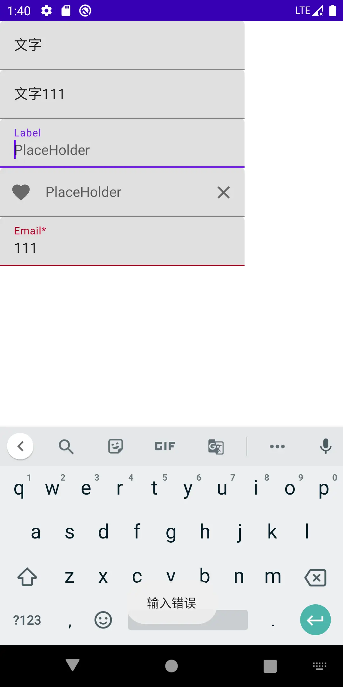
读者可以clone项目后自行体验
相信有读者已经在思考Compose是如何实现
双向绑定的了，按照我们的学习计划，这将在后续的文章中展开。
Button
相信看到这里，有读者已经在思考一个问题了：
Modifier 中有点击相关的内容，为什么还需要有Button呢？它真的是一个视图控件吗？还是一个特定的、带有点击效果的样式组合？
其实 Button 在人机交互中，是一个类似 隐喻 的存在，指代点击可触发特定行为的交互区，在设计发展中，
逐渐形成了一些约定：
- 可触发和不可触发的状态要可识别
- 从其所在环境中可以被轻易地识别出来
- 点击或者按压要有视觉反馈效果
所以样式上是一个不可忽略的侧重点。但是也要客观的承认一点：中式UI和欧美UI确实不是一个风格，所以多数情况下我们会修改掉默认效果。
看一下方法原型：
fun Button(
onClick: () -> Unit,
modifier: Modifier = Modifier,
enabled: Boolean = true,
interactionSource: MutableInteractionSource = remember { MutableInteractionSource() },
elevation: ButtonElevation? = ButtonDefaults.elevation(),
shape: Shape = MaterialTheme.shapes.small,
border: BorderStroke? = null,
colors: ButtonColors = ButtonDefaults.buttonColors(),
contentPadding: PaddingValues = ButtonDefaults.ContentPadding,
content: RowScope.() -> Unit
): @Composable Unit
- onClick: 点击事件回调
- modifier: 修饰器
- enabled:是否可点击触发
- interactionSource:
- elevation: z轴投影效果
- shape: button和投影的形状
- border: 描边
- colors: 背景色、内容色、各个状态配色
- contentPadding: 容器和内容的间距
- content: 内容
代码示例
一个最简单的文字按钮：
Button(
onClick = {
toast("onClick")
},
modifier = Modifier.clickable {
toast("Modifier.onClick")
}
) {
Text(
text = "Button",
)
}
显然，点击生效的是 onClick 的回调函数。
在 后面的效果图 或者 运行WorkShop后 可发现，这个文字Button已经运用了许多样式
Button的样式部分，读者可自行编码探索实践一二，可以很轻易的和Android原生内容对应上，不再展开。
前文的方法原型中，content: RowScope.() -> Unit 显然可以包含更多的东西。Row 的布局特性会在后续文章展开
例如：
Button(
onClick = {
toast("onClick")
}
) {
Icon(
Icons.Filled.Favorite,
contentDescription = "Favorite"
)
Text(
text = "Button",
)
}
可以在文字左边放置一个 Favorite 图标
结合样式的衍生物
而Compose中，还有一些内容，代表着Button的操作含义，但有更特殊的样式含义，例如：
- OutlinedButton：有边线的Button, 但非实质的，借用Android原生的内容比喻：有Stroke效果，无Solid效果
- IconButton：显示一个Icon的button 但编码上未强制约束
- IconToggleButton：两个状态图标的icon，相互切换，例如：收藏、取消收藏，表现含义上有别于
Switch，表现类似无文字的CheckBox
OutlinedButton
fun OutlinedButton(
onClick: () -> Unit,
modifier: Modifier = Modifier,
enabled: Boolean = true,
interactionSource: MutableInteractionSource = remember { MutableInteractionSource() },
elevation: ButtonElevation? = null,
shape: Shape = MaterialTheme.shapes.small,
border: BorderStroke? = ButtonDefaults.outlinedBorder,
colors: ButtonColors = ButtonDefaults.outlinedButtonColors(),
contentPadding: PaddingValues = ButtonDefaults.ContentPadding,
content: @Composable RowScope.() -> Unit
)
和Button参数含义一致
IconButton
fun IconButton(
onClick: () -> Unit,
modifier: Modifier = Modifier,
enabled: Boolean = true,
interactionSource: MutableInteractionSource = remember { MutableInteractionSource() },
content: @Composable () -> Unit
)
参数含义参考Button
适用场景如返回键、关闭按钮等
示例：
IconButton(
onClick = {
toast("onClick")
},
) {
Icon(
imageVector = Icons.Filled.Favorite,
contentDescription = "Favorite"
)
}
IconToggleButton
fun IconToggleButton(
checked: Boolean,
onCheckedChange: (Boolean) -> Unit,
modifier: Modifier = Modifier,
enabled: Boolean = true,
interactionSource: MutableInteractionSource = remember { MutableInteractionSource() },
content: @Composable () -> Unit
)
- checked：默认状态
- onCheckedChange：状态变化后的回调
适用场景如：收藏、取消收藏等
示例：
val checkedState = remember { mutableStateOf(true) }
IconToggleButton(
checked = checkedState.value,
onCheckedChange = {
checkedState.value = it
},
) {
Icon(
imageVector = Icons.Filled.Favorite,
contentDescription = "Favorite",
tint = if (checkedState.value) {
Color.Red
} else {
Color.Gray
}
)
}
上述所有内容的效果：

结语
在本篇文章中，我们一起学习了Compose的部分基础内容，这些内容学起来也比较枯燥，但适应了Compose之后，学习这些基础内容就会越来越快。
读者可以结合 WorkShop 实践一波，加深印象！
我们下一篇见。
Jetpack Compose | 控件篇（二） -- Icon，Image
写在最前
在上一篇，我们学习了Compose 中的 Text 、TextField 、Button，并在WorkShop中进行了一系列尝试。
除了对他们的效果有了直观的认识外，也感受了Compose的编码乐趣。
本篇我们将继续学习Icon和Image，从命名上我们可以看出他们和 图形、图片 有关，也是 内容呈现 中非常重要的一种载体和方式。
文中代码均基于 1.0.1版本
如无特殊说明，文中的
Compose均指代Jetpack compose文中代码均可在 WorkShop 中获取，本篇代码集中于 post27 包下
Icon
使用方法
翻阅源码，我们可以获知有三个函数用于构建Icon组件。
分别是：
fun Icon(
imageVector: ImageVector,
contentDescription: String?,
modifier: Modifier = Modifier,
tint: Color = LocalContentColor.current.copy(alpha = LocalContentAlpha.current)
)
fun Icon(
bitmap: ImageBitmap,
contentDescription: String?,
modifier: Modifier = Modifier,
tint: Color = LocalContentColor.current.copy(alpha = LocalContentAlpha.current)
)
fun Icon(
painter: Painter,
contentDescription: String?,
modifier: Modifier = Modifier,
tint: Color = LocalContentColor.current.copy(alpha = LocalContentAlpha.current)
)
不难发现，仅第一个形参类型不一致，但均是Icon的实际内容。
而其他三个参数，含义分别为：
- contentDescription: 内容含义描述，用于
无障碍服务，如果这个Icon可以被触发，就需要解释它的含义，如果仅仅是装饰性质，可以忽略掉 - modifier: 修饰器
- tint: 着色器，可以直接修改Icon实质内容的颜色。从事Android行业的读者并不陌生
而实质内容可以以三种方式进行描述：
- ImageVector 矢量图
- ImageBitmap 位图
- Painter 可被绘制的内容，这是一个抽象的类，类似于Android中的
Drawable
效果
Compose中已经存在一些矢量图资源，例如：
public val Icons.Filled.Favorite: ImageVector
get() {
if (_favorite != null) {
return _favorite!!
}
_favorite = materialIcon(name = "Filled.Favorite") {
materialPath {
moveTo(12.0f, 21.35f)
lineToRelative(-1.45f, -1.32f)
curveTo(5.4f, 15.36f, 2.0f, 12.28f, 2.0f, 8.5f)
curveTo(2.0f, 5.42f, 4.42f, 3.0f, 7.5f, 3.0f)
curveToRelative(1.74f, 0.0f, 3.41f, 0.81f, 4.5f, 2.09f)
curveTo(13.09f, 3.81f, 14.76f, 3.0f, 16.5f, 3.0f)
curveTo(19.58f, 3.0f, 22.0f, 5.42f, 22.0f, 8.5f)
curveToRelative(0.0f, 3.78f, -3.4f, 6.86f, -8.55f, 11.54f)
lineTo(12.0f, 21.35f)
close()
}
}
return _favorite!!
}
当然，按照 MaterialDesign, 存在一系列的风格:
- Filled 默认，图形是内容填充风格
- Outlined 只有描边，不做填充
- Rounded 圆形，例如圆形启动图标
- TwoTone 双调，不确定doc是否写错，和Sharp完全一致，可以看情况搭讪下设计MM，顺带提升下审美
- Sharp 例如直角图标
Icon(
Icons.Filled.Call,
contentDescription = "Call"
)
Icon(
Icons.Outlined.Call,
contentDescription = "Call"
)
Icon(
Icons.Rounded.Call,
contentDescription = "Call"
)
Icon(
Icons.TwoTone.Call,
contentDescription = "Call"
)
Icon(
Icons.Sharp.Call,
contentDescription = "Call"
)
选取了部分内置图标进行直观感受。
三种资源使用方式以及Tint：
Icon(
ImageBitmap.imageResource(id = R.drawable.baseline_fingerprint_black_24dp),
contentDescription = "Check fingerprint",
tint = Color.Green
)

Image
使用方式
和Icon的使用类似，同样有三个函数：
fun Image(
bitmap: ImageBitmap,
contentDescription: String?,
modifier: Modifier = Modifier,
alignment: Alignment = Alignment.Center,
contentScale: ContentScale = ContentScale.Fit,
alpha: Float = DefaultAlpha,
colorFilter: ColorFilter? = null
)
fun Image(
imageVector: ImageVector,
contentDescription: String?,
modifier: Modifier = Modifier,
alignment: Alignment = Alignment.Center,
contentScale: ContentScale = ContentScale.Fit,
alpha: Float = DefaultAlpha,
colorFilter: ColorFilter? = null
)
fun Image(
painter: Painter,
contentDescription: String?,
modifier: Modifier = Modifier,
alignment: Alignment = Alignment.Center,
contentScale: ContentScale = ContentScale.Fit,
alpha: Float = DefaultAlpha,
colorFilter: ColorFilter? = null
)
和Icon对比，如下参数不同：
- alignment: 内容对齐方式
- contentScale: 缩放，类似Android ScaleType
- alpha: 内容的Alpha通道
- colorFilter: 色彩过滤器，可以实现tint、滤镜矩阵等，非Compose特有，不再展开
值得一提的是, 图片因其信息量大的特性，实际应用过程中，对于远程资源，总是需要考虑：
- 加载耗时
- 清晰度分级
- 缓存
等内容，本篇我们仅学习静态资源的加载, 而和Compose相关的
资源加载函数，在Icon中已经有代码示例，本节不再赘述。
结语
又很愉快地学完了一些新知识，当然，在Icon和Image中，依旧存在很多我们没有挖掘的内容，但不用着急，在起始阶段，我们仅需要掌握控件的特性和使用方式。
当我们掌握了UI布局相关的内容后，我们会回过头来，再学习他的原理部分。
打个招呼：其实起始阶段的内容都非常简单，但因为我最近比较懒，而且正在处理一件有挑战的事情，占用了很多精力，所以更新有点拖沓
Jetpack Compose | 控件篇（三） -- Switch、CheckBox、RadioButton
写在最前
在之前的文章中，我们学习过Compose 中的 ImageButton。
本篇我们将继续学习 Switch 、 CheckBox 、RadioButton , 这三个控件在 人机交互界面 中也是由来已久。
文中代码均基于 1.0.1版本
如无特殊说明，文中的
Compose均指代Jetpack compose文中代码均可在 WorkShop 中获取，本篇代码集中于 post28 包下
完整系列目录: Github Pages | 掘金 | csdn
Switch
当功能含义如同 开关 一般时，我们可以使用该控件，例如："深色模式"、"飞行模式"
使用方式
fun Switch(
checked: Boolean,
onCheckedChange: ((Boolean) -> Unit)?,
modifier: Modifier = Modifier,
enabled: Boolean = true,
interactionSource: MutableInteractionSource = remember { MutableInteractionSource() },
colors: SwitchColors = SwitchDefaults.colors()
)
经过前面的学习，这些参数的含义应该不陌生了。
修改配色可以通过如下API构建 SwitchColors 对象实例
object SwitchDefaults {
fun colors(
checkedThumbColor: Color = MaterialTheme.colors.secondaryVariant,
checkedTrackColor: Color = checkedThumbColor,
checkedTrackAlpha: Float = 0.54f,
uncheckedThumbColor: Color = MaterialTheme.colors.surface,
uncheckedTrackColor: Color = MaterialTheme.colors.onSurface,
uncheckedTrackAlpha: Float = 0.38f,
disabledCheckedThumbColor: Color = checkedThumbColor
.copy(alpha = ContentAlpha.disabled)
.compositeOver(MaterialTheme.colors.surface),
disabledCheckedTrackColor: Color = checkedTrackColor
.copy(alpha = ContentAlpha.disabled)
.compositeOver(MaterialTheme.colors.surface),
disabledUncheckedThumbColor: Color = uncheckedThumbColor
.copy(alpha = ContentAlpha.disabled)
.compositeOver(MaterialTheme.colors.surface),
disabledUncheckedTrackColor: Color = uncheckedTrackColor
.copy(alpha = ContentAlpha.disabled)
.compositeOver(MaterialTheme.colors.surface)
): SwitchColors
}
结合前文学习的知识，我们不难推测，下述的代码并不能真正起到 开关 的功能：
Switch(checked = false, onCheckedChange = {
Log.d("tag", "onCheckChanged:$it")
})
实际效果可体验WorkShop
我们需要构建一个 "被观测" 的数据源 [注意：这个说法虽然比较形象但并不准确] ，它被 Compose构建的树的节点 所观测，即 该Switch，当其内容发生变化
后，可反映到UI上。
例如：
var checked by rememberSaveable { mutableStateOf(false) }
Switch(checked = checked, onCheckedChange = {
checked = it
Log.d("tag", "onCheckChanged:$it")
})
或者：
val checked = remember { mutableStateOf(false) }
Switch(checked = checked.value, onCheckedChange = {
checked.value = it
Log.d("tag", "onCheckChanged:$it")
})
当然，按照Compose的用法，这些函数必须要同时存在于 @Compose 的函数块中，这样才能被目标节点所 "观测"
效果将在文末给出
CheckBox
当形式为：选中/不选中 时，可以使用该控件。
使用方式
fun Checkbox(
checked: Boolean,
onCheckedChange: ((Boolean) -> Unit)?,
modifier: Modifier = Modifier,
enabled: Boolean = true,
interactionSource: MutableInteractionSource = remember { MutableInteractionSource() },
colors: CheckboxColors = CheckboxDefaults.colors()
)
和 Switch 非常相似，同样的，我们可以修改配色：
object CheckboxDefaults {
@Composable
fun colors(
checkedColor: Color = MaterialTheme.colors.secondary,
uncheckedColor: Color = MaterialTheme.colors.onSurface.copy(alpha = 0.6f),
checkmarkColor: Color = MaterialTheme.colors.surface,
disabledColor: Color = MaterialTheme.colors.onSurface.copy(alpha = ContentAlpha.disabled),
disabledIndeterminateColor: Color = checkedColor.copy(alpha = ContentAlpha.disabled)
): CheckboxColors
}
至此，我们意识到，Compose 固定了 Switch , Checkbox 的样式风格，如果定制图标，可以使用 ImageButton 。
如下代码将得到一个最简单可用的 CheckBox
var checked by rememberSaveable { mutableStateOf(false) }
Checkbox(checked = checked, onCheckedChange = {
checked = it
Log.d("tag", "onCheckChanged:$it")
})
不同于Android原生控件，
Compose中的Checkbox无法添加文字 -- 这很 Compose!.Compose 贯穿始终的一个原则就是
组合， 显然：文字部分应该使用 Text。
RadioButton
Compose 中并没有 RadioButtonGroup 的内容。 也有可能是我没有找到。
但是，这并不重要！Compose 并不推崇在控件内部维护状态，否则会违背 纯函数 的理念。而且，我们可以很轻易地利用 组合 方式外挂一段逻辑，实现单选。
注意：按照一般性的UI设计语言，多选应该利用Checkbox，实现思路有类似之处
如何使用
@Composable
fun RadioButton(
selected: Boolean,
onClick: (() -> Unit)?,
modifier: Modifier = Modifier,
enabled: Boolean = true,
interactionSource: MutableInteractionSource = remember { MutableInteractionSource() },
colors: RadioButtonColors = RadioButtonDefaults.colors()
)
和前两者不同，RadioButton 的回调函数是 点击回调 含义。
遵照UI设计语言，被点击则意味着 选中，而在单选中，通过逻辑保持该组仅目标项被选中。
通过以下API可以修改配色
object RadioButtonDefaults {
@Composable
fun colors(
selectedColor: Color = MaterialTheme.colors.secondary,
unselectedColor: Color = MaterialTheme.colors.onSurface.copy(alpha = 0.6f),
disabledColor: Color = MaterialTheme.colors.onSurface.copy(alpha = ContentAlpha.disabled)
): RadioButtonColors
}
构建一个单选组：
val tags = arrayListOf("A", "B", "C", "D")
val selectedTag = remember { mutableStateOf("") }
Row {
tags.forEach {
Row {
RadioButton(
selected = it == selectedTag.value,
onClick = {
selectedTag.value = it
}
)
Text(text = it)
}
Spacer(modifier = Modifier.width(20.dp))
}
}
同样，读者可以按照喜好利用代理的方式创建 可观测数据源
val tags = arrayListOf("A", "B", "C", "D")
var selectedTag by rememberSaveable { mutableStateOf("") }
Row {
tags.forEach {
Row {
RadioButton(
selected = selectedTag == it,
onClick = {
selectedTag = it
}
)
Text(text = it,modifier = Modifier.clickable {
selectedTag = it
})
}
Spacer(modifier = Modifier.width(20.dp))
}
}
而且，按照UX的设计风格，可以灵活的为文字部分添加触发。
思考：如下代码可以实现多选吗？
val tags = arrayListOf("A", "B", "C", "D")
var selectedItems by rememberSaveable { mutableStateOf(linkedSetOf<String>()) }
Row {
tags.forEach {
Row {
Checkbox(checked = selectedItems.contains(it), onCheckedChange = {selected->
if (selected) {
selectedItems.add(it)
} else {
selectedItems.remove(it)
}
Log.d("tag", "onCheckChanged:$it,$selected")
})
Text(text = it)
}
Spacer(modifier = Modifier.width(20.dp))
}
}
当然不可以！Set 集合内容的变化并无法被观测！那么怎么处理呢？
以目前我们掌握的知识，可以：
- 利用位运算
- 添加一个观测源、组合判断，但这会被lint校验警告
//组合判断 会被警告的做法
val tags = arrayListOf("A", "B", "C", "D")
val selectedItems by rememberSaveable { mutableStateOf(linkedSetOf<String>()) }
var version by rememberSaveable { mutableStateOf(0) }
Row {
tags.forEach {
Row {
Checkbox(
checked = version != null && selectedItems.contains(it),
onCheckedChange = { selected ->
if (selected) {
selectedItems.add(it)
} else {
selectedItems.remove(it)
}
version++
Log.d("tag", "onCheckChanged:$it,$selected")
})
Text(text = it)
}
Spacer(modifier = Modifier.width(20.dp))
}
}
是否还有更加优雅的解法呢？我们先保留这一疑惑，使得我们的探索过程更加的
平稳、有趣， 而不必在开始阶段花费过多的精力。
效果

结语
很快又到了这一阶段，这意味着我们又掌握了新的知识，同时也产生了更多的疑惑，不过不用心急，所有的谜题最终都会解开。
Jetpack Compose | 控件篇（四）-- Box、Row、Column
在上一篇中，我们完成了 Switch、CheckBox、RadioButton 相关内容的学习，至此，最基本的简单控件我们已经学完，接下来我们将学习 基本的布局。
以Android 为例，我们已经完成了：
TextView、Edittext、Button、ImageView、CheckBox、SwitchButton、RadioButton等内容的学习。接下来将开始学习布局规则，例如：
FrameLayout、LinearLayout、RelativeLayout、ConstraintLayout等
文中代码均基于 1.0.1版本
如无特殊说明，文中的
Compose均指代Jetpack compose文中代码均可在 WorkShop 中获取，本篇代码集中于 post29 包下
完整系列目录: Github Pages | 掘金 | csdn
Box
类似Android中的 FrameLayout。
在UI设计中，不可避免的会将一些UI元素组合在一起，从外观上进行整体改变，将他们从环境中 "独立" 开来。很自然地诞生了这一方式：以一个节点包裹这些UI元素， 将整体外观设计运用于这一节点上。
注意：这个节点可以根据排布元素的需求灵活的选择布局 -- 在Compose中，这个节点可以是Box，但不一定必须是Box！
使用方式
@Composable
inline fun Box(
modifier: Modifier = Modifier,
contentAlignment: Alignment = Alignment.TopStart,
propagateMinConstraints: Boolean = false,
content: @Composable BoxScope.() -> Unit
)
很显然，这是一个内联函数，意味着它类似Facade模式的运用，其底层实现较为复杂，这里针对需求场景做了封装，隐匿了大量细节
在当前的学习阶段，我们克制住好奇心，先不探索细节。
参数含义：
- modifier: 修饰器
- contentAlignment：内容对齐方式 注意：这和FrameLayout有区别
- propagateMinConstraints：是否运用最小尺寸到内容，如果为TRUE，内容的最小尺寸将按照modifier中的信息进行设定，否则仅作用于Box
- content：内容 Android中子View的概念
在WorkShop中，我们沿用了 Google的一个demo
Box {
Box(Modifier.fillMaxSize().background(Color.Cyan))
Box(
Modifier.matchParentSize().padding(top = 20.dp, bottom = 20.dp).background(Color.Yellow)
)
Box(
Modifier.matchParentSize().padding(40.dp).background(Color.Magenta)
)
Box(
Modifier.align(Alignment.Center).size(300.dp, 300.dp).background(Color.Green)
)
Box(
Modifier.align(Alignment.TopStart).size(150.dp, 150.dp).background(Color.Red)
)
Box(
Modifier.align(Alignment.BottomEnd).size(150.dp, 150.dp).background(Color.Blue)
)
}
在这个Demo中，我们可以看到：
- 对齐方式、padding 对 Box的 位置和大小所产生的影响
- 内容按照声明的次序先后进行排布

根据Box的布局限制调整内容
这是不同屏幕尺寸下的一种适配手段
这将使用到：BoxWithConstraints
@Composable
fun BoxWithConstraints(
modifier: Modifier = Modifier,
contentAlignment: Alignment = Alignment.TopStart,
propagateMinConstraints: Boolean = false,
content: @Composable BoxWithConstraintsScope.() -> Unit
)
和Box的区别在于 content，lambda中的上下文是 BoxWithConstraintsScope 实例，而不再是 BoxScope 实例，据此，我们可以在布局时获知Box的尺寸限制：
@Stable
interface BoxWithConstraintsScope : BoxScope {
/**
* The constraints given by the parent layout in pixels.
* Use [minWidth], [maxWidth], [minHeight] or [maxHeight] if you need value in [Dp].
*/
val constraints: Constraints
/**
* The minimum width in [Dp].
*/
val minWidth: Dp
/**
* The maximum width in [Dp].
*/
val maxWidth: Dp
/**
* The minimum height in [Dp].
*/
val minHeight: Dp
/**
* The maximum height in [Dp].
*/
val maxHeight: Dp
}
下面展示一个例子：
当Box最大高度小于100dp时，放置一个50*50dp的Box，否则纵向放置两个；初始高度为80dp，通过点击按钮在100dp和80dp间来回切换：
var height by rememberSaveable { mutableStateOf(80) }
BoxWithConstraints(
modifier = Modifier.height(height.dp)
) {
val rectangleHeight = 50.dp
if (maxHeight < rectangleHeight * 2) {
Box(Modifier
.size(50.dp, rectangleHeight)
.background(Color.Blue))
} else {
Column {
Box(Modifier
.size(50.dp, rectangleHeight)
.background(Color.Blue))
Box(Modifier
.size(50.dp, rectangleHeight)
.background(Color.Gray))
}
}
}
Button(onClick = {
height = if (height < 100) 100 else 80
}) {
Text(text = "点击切换高度")
}
效果
高度为80dp时，仅显示一个蓝色色块：

高度为100dp时，显示两个色块：

Row
在Android中，也有Row的概念 TableRow ，它被用在TableLayout中，作为表格的行:
public class TableRow extends LinearLayout {
//...
}
和Android的 TableRow 类似，Compose中的Row效果等同于 横向的 LinearLayout
使用方式：
@Composable
inline fun Row(
modifier: Modifier = Modifier,
horizontalArrangement: Arrangement.Horizontal = Arrangement.Start,
verticalAlignment: Alignment.Vertical = Alignment.Top,
content: @Composable RowScope.() -> Unit
)
参数含义：
- modifier: 修饰器
- horizontalArrangement: 纵向上的范围
- verticalAlignment: 横向的对齐方式
- content：内容声明
借用 Google的Demo
Row {
// The child with no weight will have the specified size.
Box(Modifier.size(40.dp, 80.dp).background(Color.Magenta))
// Has weight, the child will occupy half of the remaining width.
Box(Modifier.height(40.dp).weight(1f).background(Color.Yellow))
// Has weight and does not fill, the child will occupy at most half of the remaining width.
// Therefore it will occupy 80.dp (its preferred width) if the assigned width is larger.
Box(
Modifier.size(80.dp, 40.dp)
.weight(1f, fill = false)
.background(Color.Green)
)
}
在一行中，先用掉 40*80dp的空间，剩下来的空间 （横向） ，利用Weight进行均分，如果不使用fill策略，将使用给定的宽度。
在WorkShop中，提供了更多的场景Demo，可以发现，使用Weight时，总是：先计算给定尺寸的元素，并对剩余空间使用Weight进行分配。
这一点和Android的LinearLayout相比要更加灵活、好用
纵向对齐方式
通过 verticalAlignment 可以指定纵向的对齐方式，例如纵向居中对齐：
Row(verticalAlignment = Alignment.CenterVertically) {
//...
}
可以使用：
- Top 顶部对齐，默认
- CenterVertically 居中对齐
- Bottom 底部对齐
横向范围
当Row的尺寸大于内容的尺寸时，可以调整内容的位置：
例如横向的居中
Row(
modifier = Modifier.fillMaxWidth(),
horizontalArrangement = Arrangement.Center) {
// The child with no weight will have the specified size.
Box(Modifier
.size(40.dp, 80.dp)
.background(Color.Magenta))
}
效果

Column
和 Row类似，但排布方向为纵向
读者可以自行编码以尝试效果，不再赘述
使用方式
inline fun Column(
modifier: Modifier = Modifier,
verticalArrangement: Arrangement.Vertical = Arrangement.Top,
horizontalAlignment: Alignment.Horizontal = Alignment.Start,
content: @Composable ColumnScope.() -> Unit
)
参考Row的使用方式
结语
很快又到了说结束的时候，本篇中，我们一同学习了Compose中最基本的布局方式，当然，还有一些问题没有继续往下探索：如果内容超过容器的大小该如何处理呢？
我们将在后续的篇章中继续探索。
Jetpack Compose | 控件篇（五）-- Spacer、LazyRow、LazyColumn & 让Column可滑动
在上一篇中，我们完成了 Box、Row、Column 相关内容的学习，并且留下了一个疑问："如果容器大小不足以承载内容，怎么处理呢？"，这一篇我们一起学习这部分内容。
文中代码均基于 1.0.1版本
如无特殊说明，文中的
Compose均指代Jetpack compose文中代码均可在 WorkShop 中获取，本篇代码集中于 post29 & post30 包下
完整系列目录: Github Pages | 掘金 | csdn
和Android进行简单对比
在Android中，SDK提供了诸如： ScrollView NestedScrollView ListView GridView RecyclerView，等针对各类场景下适用的控件，
基于滑动手势调整内容展示区域，以达到显示更多内容的目的。
进一步探索可以发现：View本身就包含了Scroll机制的 半成品实现，当然，本文我们不去深究Android的内容，借助我们已经掌握的Android知识，引出一点：
基于Scroll机制，用小容器展现大内容的本质：在视图测量的基础上，结合滑动手势处理，调整内容布局，绘制后展现。
在早期的一些文章中，有博主提到：Compose中对应的内容为 ScrollRow，ScrollColumn / LazyRow、LazyColumn。
在早期的预览版中，短暂的存在过 ScrollRow，ScrollColumn等内容，似乎已经被移除
Compose中也是按照这样的思路设计的，我们将在后续的文章中再细致地展开研究，本篇中仅学习如何使用它们。
在真正开始这部分内容之前，先补充一个简单的控件 Spacer，可以简单的创建占位间距，后续的文章中已经没有他的位置了。
Spacer
在之前的文章中，我们学习过Modifier，其中包含一些和布局相关的API，例如：padding、offset，但并无 margin 等内容，按照业内惯例，
如果已经存在一个广为接受的名词，一般不会使用新词，至少词根是一致的
，在Compose中，使用了Spacer，取缔了Margin的一些使用场景。
注：计算总是有损耗的，不要滥用Spacer,并且很多场景下有特定的方式处理间距，后续会逐渐学习到
如何使用
@Composable
fun Spacer(modifier: Modifier)
一般只需要指定他的宽高尺寸即可，例如：
Spacer(modifier = Modifier.size(3.dp))
LazyColumn
在上一篇文章中，我们已经学习过 Row和Column，它们仅仅是在方向上不一致，在实现上非常类似。同样的，LazyRow和LazyColumn也是如此。
Doc中提到：
The vertically scrolling list that only composes and lays out the currently visible items. The content block defines a DSL which allows you to emit items of different types. For example you can use LazyListScope.item to add a single item and LazyListScope.items to add a list of items.
仅 组合计算 以及 布局 当前可见元素的纵向可滑动列表。内容块定义了一个DSL，允许创建不同类型的元素。
例如：使用 LazyListScope.item 添加单个元素， LazyListScope.items 添加元素列表。
注："内容块定义了一个DSL，允许创建不同类型的元素"，这并不同于Android中概念： RecyclerView#Adapter 具有将数据映射为同类型 ViewHolder 或 不同类型 ViewHolder
的能力。而是指 "添加元素时可以是 单个元素，或者是 元素的列表，这是不同的类型。
字面翻译在中文语境下容易造成误解。
很显然，它类似于Android中的 ListView,RecyclerView, 着重点在于 Lazy，不会将元素一股脑的全计算、布局出来。
所以，它并不对标ScrollView，在它的使用场景下，可滑动需求非常普遍，便默认实现了！
我们前面提到：
在早期的一些文章中，有博主提到：Compose中对应的内容为 ScrollRow，ScrollColumn / LazyRow、LazyColumn
这本没有啥错误，但绝不是被曲解的： "Row和Column 无法提供滑动能力，而是需要使用 LazyRow、LazyColumn"
但气氛已经烘托到这里了，那我们先将其学完，再学习 Row和Column 如何提供滑动能力。
如何使用
@Composable
fun LazyColumn(
modifier: Modifier = Modifier,
state: LazyListState = rememberLazyListState(),
contentPadding: PaddingValues = PaddingValues(0.dp),
reverseLayout: Boolean = false,
verticalArrangement: Arrangement.Vertical =
if (!reverseLayout) Arrangement.Top else Arrangement.Bottom,
horizontalAlignment: Alignment.Horizontal = Alignment.Start,
flingBehavior: FlingBehavior = ScrollableDefaults.flingBehavior(),
content: LazyListScope.() -> Unit
)
各个参数含义：
- modifier：修饰器
- state：用于控制或者观测列表状态
- contentPadding：整体内容周围的一个Padding，注：内容四周的留白，以纵向列表为例，尾部没有展示时看不到尾部的留白 这通过Modifier无法实现， 注：Modifier只能实现列表容器固定的留白间距 。可以使用它在第一个元素前和最后一个元素后留白。 如果需要在元素间留出间距，可以使用 verticalArrangement
- reverseLayout：是否反转列表
- verticalArrangement：子控件纵向的范围。可用于添加子控件之间的间距，以及内容不足以填满列表最小尺寸时，如何排布
- horizontalAlignment：子控件横向对齐方式
- flingBehavior：fling行为的处理逻辑
- content：声明了如何提供子控件的DSL，有两种方式
@LazyScopeMarker
interface LazyListScope {
fun item(key: Any? = null, content: @Composable LazyItemScope.() -> Unit)
fun items(
count: Int,
key: ((index: Int) -> Any)? = null,
itemContent: @Composable LazyItemScope.(index: Int) -> Unit
)
@ExperimentalFoundationApi
fun stickyHeader(key: Any? = null, content: @Composable LazyItemScope.() -> Unit)
}
顺带一提：笔者参与的上一个项目中，高频使用RecycleView用作内容呈现，为了便捷的处理 "item之间的间距"、"首尾留白"、"特定item间不应用间距"， 在项目中写了一套部件，后续可以拆出来同大家分享下。
基于LazyListScope.item 方法
在上一篇文章对应的WorkShop内容中，已经出现了这一用法 post29包下。
例如：
private fun LazyListScope.rowDemo() {
item {
CodeSample(code = "row sample 1:")
Row {
// ignore
}
}
item {
CodeSample(code = "row sample 2:纵向居中对齐")
// ignore
}
// ignore
}
基于LazyListScope.items 方法
除了直接使用API，SDK中同样提供了部分内联函数，消除处理数据结构的代码冗余：
inline fun <T> LazyListScope.items(
items: List<T>,
noinline key: ((item: T) -> Any)? = null,
crossinline itemContent: @Composable LazyItemScope.(item: T) -> Unit
)
inline fun <T> LazyListScope.itemsIndexed(
items: List<T>,
noinline key: ((index: Int, item: T) -> Any)? = null,
crossinline itemContent: @Composable LazyItemScope.(index: Int, item: T) -> Unit
)
inline fun <T> LazyListScope.items(
items: Array<T>,
noinline key: ((item: T) -> Any)? = null,
crossinline itemContent: @Composable LazyItemScope.(item: T) -> Unit
)
inline fun <T> LazyListScope.itemsIndexed(
items: Array<T>,
noinline key: ((index: Int, item: T) -> Any)? = null,
crossinline itemContent: @Composable LazyItemScope.(index: Int, item: T) -> Unit
)
按照以往Android中的开发经验，我们很容易写出如下的代码：
// WorkShop 中的入口页面，枚举了各个例子对应的Activity
@Composable
fun TestList(activity: Activity, cases: List<Pair<String, Class<out Activity>>>) {
LazyColumn(contentPadding = PaddingValues(horizontal = 16.dp, vertical = 8.dp)) {
itemsIndexed(items = cases) { _, item ->
Column(
horizontalAlignment = Alignment.CenterHorizontally,
) {
Spacer(modifier = Modifier.size(3.dp))
Box(
modifier = Modifier
.height(48.dp)
.fillMaxWidth()
.background(
color = Color.LightGray,
shape = RoundedCornerShape(CornerSize(6.dp))
)
.clickable {
activity.startActivity(Intent(activity, item.second))
},
contentAlignment = Alignment.Center
) {
Text(text = item.first, color = MainTxt, textAlign = TextAlign.Center)
}
Spacer(modifier = Modifier.size(3.dp))
}
}
}
}
TestList(
activity = this@MainActivity, cases = arrayListOf(
"Layout samples" to P21LayoutSample::class.java,
"Draw samples" to P21DrawSample::class.java,
"Text samples" to P26TextSample::class.java,
"TextField samples" to P26TextFieldSample::class.java,
"Button samples" to P26ButtonSample::class.java,
"Icon samples" to P27IconSample::class.java,
"Image samples" to P27ImageSample::class.java,
"Switch,Checkbox,RadioButton samples" to P28SwitchRbCbSample::class.java,
"Box,Row,Column samples" to P29BoxRowColumnSample::class.java,
)
)
如果从Android的视角出发，这段代码相当于创建 ViewHolder的ItemView 以及 onBindViewHolder 的实现
Column(
horizontalAlignment = Alignment.CenterHorizontally,
) {
Spacer(modifier = Modifier.size(3.dp))
Box(
modifier = Modifier
.height(48.dp)
.fillMaxWidth()
.background(
color = Color.LightGray,
shape = RoundedCornerShape(CornerSize(6.dp))
)
.clickable {
activity.startActivity(Intent(activity, item.second))
},
contentAlignment = Alignment.Center
) {
Text(text = item.first, color = MainTxt, textAlign = TextAlign.Center)
}
Spacer(modifier = Modifier.size(3.dp))
}
也就是说，我们利用了ItemView固有的 "留白" 处理了Item之间的间距，显然这不是最佳实践方案！
更加优雅地处理间距和对齐
上文中已经提及：
- contentPadding
- verticalArrangement
- horizontalAlignment
基于此我们对代码进行改造，以减少没用的嵌套
@Composable
fun TestList(activity: Activity, cases: List<Pair<String, Class<out Activity>>>) {
LazyColumn(
contentPadding = PaddingValues(horizontal = 16.dp, vertical = 8.dp),
verticalArrangement = spacedBy(6.dp, Alignment.Top),
horizontalAlignment = Alignment.CenterHorizontally,
) {
itemsIndexed(items = cases) { _, item ->
Box(
modifier = Modifier
.height(48.dp)
.fillMaxWidth()
.background(
color = Color.LightGray,
shape = RoundedCornerShape(CornerSize(6.dp))
)
.clickable {
activity.startActivity(Intent(activity, item.second))
},
contentAlignment = Alignment.Center
) {
Text(
text = item.first,
color = MainTxt,
textAlign = TextAlign.Center
)
}
}
}
}
可以得到一致的效果：

让Column可滑动
参考可以实现Row的可滑动
最开始在和Modifier混脸熟的过程中，我们提及了 androidx.compose.foundation 包，并且含有子包：
androidx.compose.foundation.gestures，顾名思义，后者和手势处理有关。
- androidx.compose.foundation.gestures.ScrollableKt#scrollable
- androidx.compose.foundation.ScrollKt#verticalScroll
- androidx.compose.foundation.ScrollKt#horizontalScroll
经过这一阶段的学习，我们可以做出一个结论：
Compose 中包含一部分基本的函数，以及结合实际使用场景，在基本函数上 "装饰" 出高级函数
从命名上，我们很容易得知 scrollable 是比较基本的函数，verticalScroll，horizontalScroll 是基于 scrollable 装饰出的高级函数。
阅读源码后也确实验证了我们的推测。
以 verticalScroll 为例，horizontalScroll暂不展开
Doc内容如下：
Modify element to allow to scroll vertically when height of the content is bigger than max constraints allow. In order to use this modifier, you need to create and own [ScrollState] @see [rememberScrollState]
修饰布局元素，当其内容高度超过最大允许的限制时，允许在纵向进行滚动。
注：内容最大高度地限制需要考虑容器的高度、padding、offset等内容
为了使用它，你需要创建并持有 ScrollState 实例，参见 rememberScrollState
方法原型：
fun Modifier.verticalScroll(
state: ScrollState,
enabled: Boolean = true,
flingBehavior: FlingBehavior? = null,
reverseScrolling: Boolean = false
)
- state：滚动状态，ScrollState实例
- enabled：当触摸事件发生时，是否允许滑动
- flingBehavior：fling处理逻辑
- reverseScrolling：是否反向滑动
Demo
Column(
modifier = Modifier
.fillMaxWidth()
.height(600.dp)
.verticalScroll(
state = rememberScrollState()
)
) {
Box(
Modifier
.fillMaxWidth()
.height(400.dp)
.background(Color.Green)
)
Spacer(modifier = Modifier.height(50.dp))
Box(
Modifier
.fillMaxWidth()
.height(400.dp)
.background(Color.Blue)
)
}
很显然，内容高度已经超过了最大限制！
效果

结语
至此，Compose中的列表我们已经学习完成，经过简单探索Modifier中滑动的相关内容，掌握了让Column在内容超出展示限制时可以响应滑动的方案。 较为遗憾的是，目前我们所掌握的知识还不足以支撑我们继续探索下去。
当然，在后续的文章中，我们会继续学习相关的基础知识，最终一起探索Compose中深层次的内容
另：最近祖传代码改的有点精神分裂，文章更新效率还是没上的来。读者朋友们，如果觉得我的分享对你有一些帮助，还请点个赞让我知道，给予我支持下去的动力；如果内容写的不好，也烦请留个言把想看的内容告知我，可以在后续的文章中一起交流！
MultiThreading
Java多线程系列
- 总纲
- Java多线程系列--基础知识手册
- Java基础--图解JVM内存模型和JVM线程模型
- Java多线程系列--掌控面试，一文吃透Synchronized锁
- Java多线程系列--一文吃透AQS
- Java多线程系列--一文吃透Lock锁
- Java多线程基础--线程生命周期与线程协作详解
- Java多线程基础--线程的创建与线程池管理
- Java多线程系列--掌握Future，轻松获取异步任务结果
- Java多线程系列--Fork&Join框架，分治的艺术
- Java多线程系列--掌握CompletableFuture，驾驭异步编程
- Java多线程系列--并发工具JUC
Java多线程系列总纲
终于，开始着手写Java多线程系列了。 Java多线程系列 写起来不会很容易，一来：照本宣科是没有必要的，二来，完全脱离书本性知识又是 "空中楼阁"。
在我的计划中，每一篇文章：
- 都从
基础知识开始入手，整理必知必会的内容，这些内容也是面试的常客； - 在此基础上，结合自身多年的工作经验，
挑选、设计案例进行一定地展开，对于基础还不够牢的读者而言，可以在练手中理解书本内容；对于我以及诸位老司机，可以借机反思一下； - 整理新收获，或者在某些点上深挖一下，
尝试突破。
总纲
本篇作为系列的总纲，将发散性的谈一谈Java多线程的内容要点，系列文章将依次展开。
谈到多线程，绕不开的基本概念：操作系统中的 进程 和 线程 以及 JVM线程和操作系统线程的关系。在这个过程中，将涉及到：JVM内存模型 和 JVM方法执行过程 的知识；
*作者按：此处将产生一篇文章：Java基础--图解JVM内存模型和JVM线程模型 *
继而，我们又需要理解 临界资源 和 临界区 的概念，并且接触到 锁 、 内存屏障 、 CAS 、 AQS 的知识；
作者按：这部分基础知识，我将专门汇总一篇 Java多线程系列--基础知识手册，其内容未必能完全详尽，每一块的内容将会在对应篇章中进行展开。锁的知识十分重要，将独立一篇文章：Java多线程系列--掌控面试，一文吃透锁
作者按：一文吃透锁太难了，拆分二至三篇文章 "一文吃透Synchronized锁" 、 "一文吃透AQS"，"一文吃透Lock锁"，2022-03-19
谈及一个事物，绕不开其生命周期、管理、作用关系；对于线程也是如此。
作者按：此处将产生两篇文章：Java多线程基础--线程生命周期与线程协作详解 ; Java多线程基础--线程的创建与线程池管理
至此，我们发现，在多线程协作中，获取在异步的基础上获取结果非常的麻烦，庆幸的是，我们拥有Future这一利器；
作者按：此处将产生一篇文章 Java多线程系列--掌握Future，轻松获取异步任务结果
人总是贪心的，当我们想到可以异步去利用机器性能时，自然会考虑利用并发去充分利用机器性能，但 "左右互搏之术" 很难驾驭，一不小心就会走火入魔，写出bug。 如果一个大型任务可以很方便的被拆分成各种小任务并最终合并得到结果，参考阿姆达尔定律 (Amdahl's Law)，则可以充分利用计算资源。
作者按：此处将产生一篇文章 Java多线程系列--Fork&Join框架，分治的艺术
岁月静好，但Future也有缺陷，我们需要优雅、优雅、优雅地实现异步，驾驭异步。
作者按：此处将产生一篇文章 Java多线程系列--掌握CompletableFuture，驾驭异步编程
至此，武功已经练成，但工欲善其事必先利其器，我们需要还有各类工具帮助我们写好多线程代码。
作者按：此处将产生一篇文章 Java多线程系列--并发工具JUC
至此，我们将至少产生9篇文章，但多线程的知识远不止这么多，创作过程中可能会进行增加，完成情况可以参考下面，喜欢在其他平台阅读的可跳转到掘金或CSDN
完成情况：
- -[ ] Java多线程系列--基础知识手册
- -[x] Java基础--图解JVM内存模型和JVM线程模型, 其他平台：掘金, CSDN
- -[x] Java多线程系列--掌控面试，一文吃透Synchronized锁
Java多线程系列--掌控面试，一文吃透锁更名为：Java多线程系列--掌控面试，一文吃透Synchronized锁 掘金 CSDN - -[x] Java多线程基础--线程生命周期与线程协作详解，其他平台：掘金, CSDN
- -[x] Java多线程基础--线程的创建与线程池管理,其他平台: 掘金 , CSDN
- -[x] Java多线程系列--掌握Future，轻松获取异步任务结果,其他平台：掘金 , CSDN
- -[x] Java多线程系列--Fork&Join框架，分治的艺术 ，掘金 ， CSDN
- -[x] Java多线程系列--掌握CompletableFuture，驾驭异步编程，掘金 , CSDN停止更新
- -[ ] Java多线程系列--并发工具JUC
Java基础--图解JVM内存模型和JVM线程模型
前言
各位亲爱的读者朋友，我正在创作 Java多线程系列 文章，严格的说，JVM内存模型的知识并不隶属于Java多线程范畴，但在讨论多线程的过程中，会涉及到相关概念，考虑到它作为 面经常客，故单独成篇进行知识梳理。
在有意无意渲染之下，环境中充斥着焦虑，虽然我并不认为正经面试真的有必要考察这些，毕竟没有几个岗位是开发JVM的。本篇文章将尽最大努力做到容易记忆，帮助各位克服焦虑！
在本篇中，将JVM内存模型以及JVM线程模型的关键知识，形成凝练的图、辅以文字，同读者一起回顾并掌握这些知识。
作者按：本篇按照自己有限的知识进行整理，如有谬误，还请读者在评论区不吝指出
了解系列以及总纲：Java多线程系列
先来看一张 较为完整 的图：

作者按：图片源自亿图图示的模板
再右侧再补充GC部分后，就比较完整了。今天的文章中，类加载部分略去，GC部分略去。
作者按：读者朋友们还是应当将这两部分吃透的，如果面试遇到，可以顺着图展开作答
图中的 Java栈 又称为 Java虚拟机栈 、 虚拟机栈 、 JVM栈 等； 本地栈 即 本地方法栈
JVM内存模型
从上图中，我们将运行时数据区剥出来，形成下图，即JVM内存模型 (内存区域)：

在JVM1.8中，图中的 方法区 为 元数据区
在多线程背景下，我们应个景：
- 堆和方法区是 线程共享 的
- 虚拟机栈、本地方法栈、程序计数器是 线程隔离 的
下面展开谈一谈这五个区域的作用。
以Java虚拟机规范为界，不讨论具体实现
方法区（JVM1.8为元数据区）
方法区的作用为：存放虚拟机加载的：类型信息，域（Field）信息，方法（Method）信息，常量，静态变量，即时编译器编译后的代码缓存
值得注意的是，无法申请到内存时，将抛出 OutOfMemoryError
方法区中存在运行时常量池，字面量、符号引用等存放入其中。
在Hotspot的演变过程中：
- Java6及之前：方法区存在永久代，保存有静态变量
- Java7：进行去永久代工作，虽然还保留着，但静态常量池，如字符串常量池，已经移动到堆中
- Java8：移除永久代，类型信息、域（Field）信息、方法（Method）信息存放在元数据区；字符串常量池、静态变量存放在堆区
作者按：不同的虚拟机实现细节我也没有研究过，感兴趣的读者可以自行研究，如有靠谱文章希望分享下
虚拟机栈
虚拟机栈中保存了 每一次 方法调用 的信息。
每个Java线程创建时，都会创建对应的 虚拟机栈 ，每一次方法调用，都会往栈中压入一个 栈帧。如下图：

而栈帧中，包含：
- 局部变量表：保存函数 （即方法） 的局部变量
- 操作数栈：保存计算过程中的结果，即临时变量
- 动态链接：指向方法区的运行时常量池。字节码中的
方法调用指令以常量池中指向方法的符号引用为参数。 - 方法的返回地址
本地方法栈
和虚拟机栈功能上类似，它管理了native方法的一些执行细节，而虚拟机栈管理的是Java方法的执行细节。
程序计数器
程序计数器记录线程执行的字节码行号，如果当前线程正在运行native方法则为空。也有称之为 PC寄存器
字节码解释器在工作时，通过改变计数器的值来选取下一跳需要执行的字节码指令，分支 、 循环 、
跳转 、 异常处理 、线程恢复 等基本功能都需要依赖计数器来完成。
Java虚拟机的多线程实现方式：通过 轮流切换并分配处理器执行时间 实现
所以，在任意确定的时间点，一个处理器只会处理一个线程中的指令。为了正确地处理 线程切换后的任务恢复 ，每一个线程都具有自身的程序计数器
堆
堆提供了类实例和数组的内存，可以按如下方式划分：
- 新生代 亦可称之年轻代、New Generation
- Eden区
- Survivor 区 S0和S1中存在互相移动，一些文章中的from、to是指移动上的逻辑关系
- S0
- S1
- 老年代 Old Generation
如下图所示：

划分和对象创建与GC有关，
- 新生成的对象在Eden区
- 触发 Minor GC后，还 "幸存" 的对象移动到S0
- 再次触发Minor GC后，S0和Eden 中存活的对象被移动到S1中，S0清空
- 每次移动时，自动递增计数器，超过默认值时 （印象中是16），移动到老年代，如果Eden中没有足够内存分配，也将直接在老年代中分配内存
- 老年代中依靠Major GC
小总结
将上文的知识点进行汇总后，我们可以得到一张新图：

图片来自亿图图示模板，再次不用画图了😂
JVM线程模型
一个Java线程的实现方式可以有三种：
- 使用内核线程实现
- 使用用户线程实现
- 使用用户线程加轻量级进程混合实现
印象中JVM没有规定线程实现的规范，具体研究需要结合具体的JVM实现，下面我们简单探索一下
内核线程模型
内核线程模型: 完全依赖操作系统内核提供的内核线程（Kernel-Level Thread ，KLT）来实现多线程。这种方式下：线程的切换调度 由 系统内核 完成。
一般而言，程序不会直接使用内核线程，而是使用一种 高级接口 即 轻量级进程（Light Weight Process,LWP）。
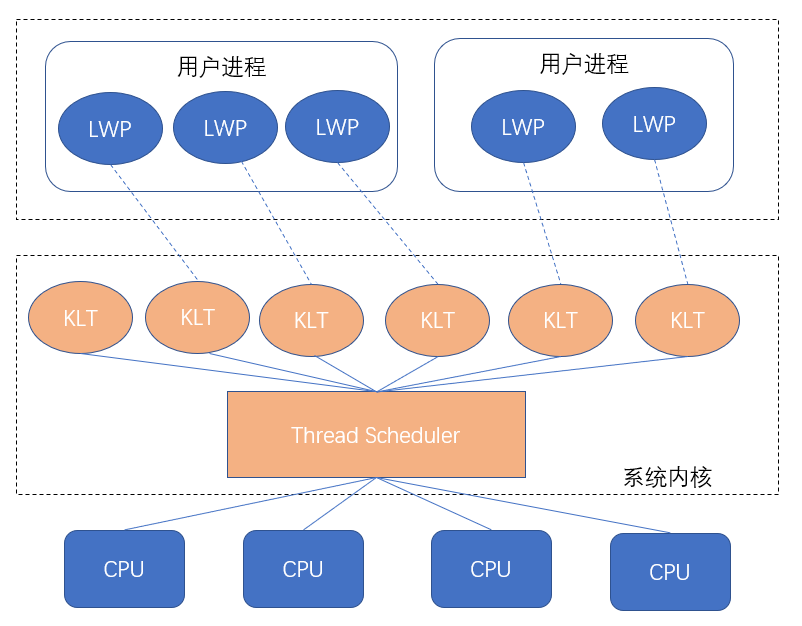
图片来自网络
用户进程中，通过 LWP 使用系统的 内核线程 。由于其一对一的关系，又称为 一对一模型
由于 用户线程 与 LWP 一一对应，LWP 是独立的调度单元，因此某个LWP在 用户进程调用过程中 发生阻塞，以及在 系统调用中 发生了阻塞，都不会影响整个进程的执行。
但是LWP依托内核线程，所以 线程操作 需要 依赖系统调用 ，代价是较高的，需要在 用户态（User Mode） 和 内核态（Kernel Mode） 中来回切换；
而且每个 LWP 都需要一个 内核线程 进行支持，因此 LWP 要消耗一定的内核资源，因此一个系统仅可支持 少量有限 的 LWP。
用户线程模型
排除掉 内核线程 ，JVM平台也可以实现 用户线程 User Thread 下文简称 UT ，完全自行实现创建、调度、销毁。
区别于内核线程模型，此时线程的调度不再依赖内核，极少占据内核资源，基本限定在用户态内，所以可以突破量的限制，并且减少线程切换时的损耗。
这样看起来似乎很美好，但难以利用多核CPU的优势，并且一旦产生系统调用发生中断，其他线程也将被中断。
这种 多对一模型 的实用性较低。

混合模型
又称 多对多模型 ，这种方式充分利用了上面两种方式的优点。

这种模型中，既存在UT，也存在LWP。
创建、切换线程(UT)依旧是廉价的，并且可以拥有大量的线程；同时利用 LWP作为UT到KLT（内核线程）的桥梁，
享受了系统内核的线程调度、CPU映射，免去了自行实现系统调用的部分，进行系统调用时，阻塞整个进程的概率也低于 用户线程模型 。
后记
又水了一篇文章，相信各位读者朋友已经基本记住了这些内容，可以愉快的侃大山了。希望疫情早日结束。
Java多线程系列--掌控面试，一文吃透Synchronized锁
前言
各位亲爱的读者朋友，我正在创作 Java多线程系列 文章，本篇我们将分析重点内容：锁
锁是 面试中的常客 ，也是多线程编码中 必不可少 的内容，无论是为了 "面试胜利" ，还是 "写出高质量的代码" ，我们都需要掌握它。
作者按：本篇按照自己有限的知识进行整理，如有谬误，还请读者在评论区不吝指出
了解系列以及总纲：Java多线程系列
本文篇幅较长，内容较为跳跃，可参考导图阅读：
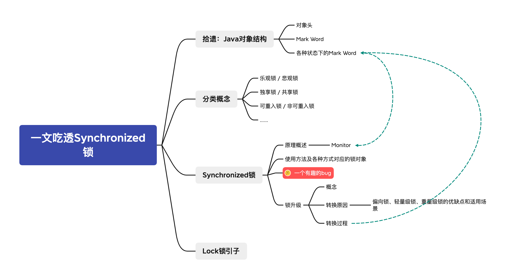
前文拾遗 -- JAVA对象结构
先前已经发布过一篇系列文章：克服焦虑--图解JVM内存模型和JVM线程模型
其中还有一处关键知识没有展开："Java对象包含哪些内容"，这部分内容和锁的实现有关，本篇将由此继续展开。
单刀直入，在HotSpot虚拟机中，一个对象实例可以被划分出三块信息：
- 对象头 Header
- 实例数据 Instance Data，亦有称之对象体
- 对齐填充 Padding
其中对齐填充可能存在，实例数据是供给 应用程序逻辑 使用的，存储了实例的字段信息。接下来重点探讨对象头。
Java对象头
对象头部分的信息主要面向JVM，包含：
- Mark Word
- kclass, 对象对应的类的元数据指针
- array length ，仅数组对象才拥有
整体划分如图所示：

图片来自网络搜索，水印为Java帮帮
Mark Word
Mark Word 用于存储对象运行时数据： 哈希、GC分代年龄、锁状态标志、线程持有的锁、偏向线程ID、偏向时间戳 等。
查找 HotSpot中markOop的doc如下：
// The markOop describes the header of an object.
// Note that the mark is not a real oop but just a word.
// It is placed in the oop hierarchy for historical reasons.
//
// Bit-format of an object header (most significant first, big endian layout below):
//
// 32 bits:
// --------
// hash:25 ------------>| age:4 biased_lock:1 lock:2 (normal object)
// JavaThread*:23 epoch:2 age:4 biased_lock:1 lock:2 (biased object)
// size:32 ------------------------------------------>| (CMS free block)
// PromotedObject*:29 ---------->| promo_bits:3 ----->| (CMS promoted object)
//
// 64 bits:
// --------
// unused:25 hash:31 -->| unused:1 age:4 biased_lock:1 lock:2 (normal object)
// JavaThread*:54 epoch:2 unused:1 age:4 biased_lock:1 lock:2 (biased object)
// PromotedObject*:61 --------------------->| promo_bits:3 ----->| (CMS promoted object)
// size:64 ----------------------------------------------------->| (CMS free block)
//
// unused:25 hash:31 -->| cms_free:1 age:4 biased_lock:1 lock:2 (COOPs && normal object)
// JavaThread*:54 epoch:2 cms_free:1 age:4 biased_lock:1 lock:2 (COOPs && biased object)
// narrowOop:32 unused:24 cms_free:1 unused:4 promo_bits:3 ----->| (COOPs && CMS promoted object)
// unused:21 size:35 -->| cms_free:1 unused:7 ------------------>| (COOPs && CMS free block)
32位和64位的虚拟机（未开启压缩指针）中分别为32bit和64bit，开启压缩后为32bit
梳理64位虚拟机五种状态下的对象头：
|------------------------------------------------------------------------------------------------------------------|
| Object Header(128bits) |
|---------------------|--------------------------------------------------------------------------------------------|
| State | Mark Word(64bits) | Klass Word(64bits) |
|---------------------|--------------------------------------------------------------------------------------------|
| Nomal | unused:25|identity_hashcode:31|unused:1|age:4|biase_lock:1|lock:2 | OOP to metadata object |
|---------------------|--------------------------------------------------------------------------------------------|
| Biased | thread:54| epoch:2 |unused:1|age:4|biase_lock:1|lock:2 | OOP to metadata object |
|---------------------|--------------------------------------------------------------------------------------------|
| Lightweight Locked | ptr_to_lock_record:62 |lock:2 | OOP to metadata object |
|---------------------|--------------------------------------------------------------------------------------------|
| Heavyweight Locked | ptr_to_heavyweight_monitor:62 |lock:2 | OOP to metadata object |
|---------------------|--------------------------------------------------------------------------------------------|
| Marked for GC | |lock:2 | OOP to metadata object |
|---------------------|--------------------------------------------------------------------------------------------|
排版不方便的话看下图：

如果运行在 HotSpot openJdk VM 上，可以借助："org.openjdk.jol:jol-core:0.9" 打印对象头进行对照。
作者按：此处的知识我们留一个印象即可，Android同学可能只能拿来吹牛
归纳后知识概要如图：

注：32位
锁的常见概念、分类
我们平时会听到关于锁的各种概念名词，前文的表中，我们也看到了 偏向锁 轻量级锁 重量级锁 的身影，接下来简单聊一聊分类以及常见概念。
乐观锁 / 悲观锁
乐观锁和悲观锁是一种相对的 态度 。在并发的背景下，访问临界区时 可能会 发生 "冲突"，不同的态度演变出不同的策略。
悲观 地看，可以 认为冲突一定会发生 ：访问临界区时，自身线程的写入行为一定会影响其他线程，自身线程的读取行为一定会受到其他线程的写入影响！ 所以 必须要进行锁保护 ，通过 "独占"，"排他" 等特性，保障无冲突。 即：悲观地认为，不加锁的并发操作一定会出现冲突，必须加锁
乐观 地看，可以 认为发生冲突是场景限定的事件 ：读不会有冲突，但写入存在冲突可能。所以 只有在写操作时，进行冲突检测，检测到冲突时操作就会失败，返回错误信息
在Java中，悲观锁即各种实际的锁实现，而乐观锁即无锁编程，转为使用CAS算法。
独享锁 / 共享锁
锁可以被访问者独享或者共享，直白地讲：独享锁在某一时间点，只能被一个线程获取，其它线程必须等待锁被持有者释放之后，才可能获取到锁，而共享锁可以被多个线程获取。
独享锁又称独占锁、排它锁。
显然，共享锁认为持有它的线程们在并发操作时并不会发生冲突。
可重入锁 / 非可重入锁
从概念上看：一个线程在持有一个锁的时候，它内部能否再次（多次）申请该锁，如果可以则为可重入锁，否则为不可重入锁。
显然易见：不可重入 将大大增加 死锁 的机率。
作者按：但在线程的基础上实现类似协程的机制时，非可重入将具有重要意义。
公平锁 / 非公平锁
锁需要通过竞争获取，公平 / 非公平指的是 是否按照"先来后到"获取锁。
如果按照申请顺序分配锁，则为公平锁，否则为非公平锁。
我们常用的Synchronized即非公平锁，Java的可重入锁（ReentrantLock）默认为非公平锁，但可以实例化为公平锁。
非公平锁的优点在于吞吐量比公平锁大。
互斥锁、读写锁
独享锁、共享锁的具体实现，读写锁作为读模式时是共享锁。
Java中的 ReentrantLock 是互斥锁，ReadWriteLock 是读写锁实现。
分段锁
分段锁并非是一种锁，而是一种提高效率的设计思路，将临界区进行划分，当某一块区域的写入并不影响其他区域的读取时，就可以采用分段的思路， 对写入区域加锁，读取其他区域则无需竞争锁从而提高效率，例如 ConcurrentHashMap
就采用了这一设计
偏向锁 / 轻量级锁 / 重量级锁
专指 synchronized 的三种锁状态，并且关系到后文中的 锁升级 部分。
在前文中，我们花了很多篇幅梳理 对象头 中的 Mark Word，其中有三种状态：Biased，Lightweight Locked，Heavyweight Locked 于此对应。
- 偏向锁状态：同步代码一直被同一线程访问时，该线程会自动获取锁，降低获取锁的代价。
- 轻量级锁状态：在偏向锁状态时，一旦另一线程竞争该锁，则升级为轻量级锁，竞争的线程通过
有限的自旋尝试获取锁，如果锁的持有者在此过程中 释放了锁 ， 并被该线程成功获取锁，则可以避免阻塞，减少线程切换，* 挂起和恢复线程是较为昂贵的*。 - 重量级锁状态：当线程完成了有限的自旋后依旧未能获得锁，将不得不进行阻塞以免空耗CPU，此时锁升级为重量级锁
不难理解，按照Java的线程模型，仅多核CPU情况下，采用轻量级锁并利用自旋才有意义。如果是单核CPU，并不存在真正的时间意义上的线程并发，自旋时，持有锁的线程是挂起的，并无释放锁的可能
作者按：Java的线程模型可参见拙作：克服焦虑--图解JVM内存模型和JVM线程模型
自旋锁
基于CAS利用自旋去竞争锁实现同步的一种方式，如前文所言，发生竞争而产生自旋时，当前线程不会阻塞，所以不会直接导致系统调用，减少上下文切换的开销， 但如果一直竞争不到锁，将造成CPU空转，所谓的busy-waiting。对于计算密集型程序而言，可能会带来负面效果。
我们可以利用Atomic实现一个简单的 可重入自旋锁
public class ReentrantSpinLock {
private AtomicReference<Thread> cas = new AtomicReference<Thread>();
private int count;
public void lock() {
Thread current = Thread.currentThread();
if (current == cas.get()) {
count++;
return;
}
while (!cas.compareAndSet(null, current)) {
// Do nothing
}
}
public void unlock() {
Thread cur = Thread.currentThread();
if (cur == cas.get()) {
if (count > 0) {
count--;
} else {
cas.compareAndSet(cur, null);
}
}
}
}
很显然，这也是一个非公平锁、独享锁
Synchronized锁
synchronized 作为Java关键字，提供同步能力，其核心依赖于Java对象的对象头，当一个类对象被作为synchronized锁对象时，其即为 Monitor，JVM通过
进入、退出Monitor 来实现同步
class Foo {
synchronized static foo() {
}
synchronized void bar() {
}
void baz() {
synchronized (Foo.class) {
//同步块
}
}
}
如上代码中展示了三种同步的方式：
foo()中锁对应的Monitor为Foo.classbar()中锁对应的Monitor为 Foo 的对象实例baz()中的同步块可以用任意的对象作为Monitor，演示部分使用了Foo.class作为Monitor
注意，Monitor的选取务必慎重，不仅仅要从 同步 的需求角度出发，避免性能损耗，也要注意锁无法正常生效的问题。例如：
我们模拟5个线程同时竞争一个数（初始值为6）并做 -- 运算，读者是否认为它会按照 5、4、3、2、1 的顺序输出？
class Foo {
Integer integer = 6;
void minus() {
synchronized (integer) {
if (integer > 0) {
integer--;
}
System.out.println(Thread.currentThread().getId() + " -> i:" + integer);
}
}
static class MThread extends Thread {
final Foo foo;
final CountDownLatch latch;
MThread(Foo foo, CountDownLatch latch) {
this.foo = foo;
this.latch = latch;
}
@Override
public void run() {
super.run();
try {
latch.await();
foo.minus();
} catch (InterruptedException e) {
e.printStackTrace();
}
}
}
public static void main(String[] args) {
Foo foo = new Foo();
CountDownLatch latch = new CountDownLatch(1);
for (int i = 0; i < 5; i++) {
new MThread(foo,latch).start();
}
latch.countDown();
try {
Thread.sleep(1000);
} catch (InterruptedException e) {
e.printStackTrace();
}
}
}
多执行几次就会发现 可能 会像下面的结果，它并非是一个同步情况的结果，如果想要更顺利的模拟问题的出现，增大线程数即可
> Task :Foo.main()
13 -> i:3
15 -> i:4
12 -> i:3
14 -> i:1
11 -> i:2
如果读者注意了lint，会注意到提示：Synchronization on a non-final field 'integer'
很显然，上面的代码并未采用正确的Monitor，在 integer-- 的过程中，integer实例已经发生变化：
System.out.println(Thread.currentThread().getId() +
" -> i:" + integer+","+System.identityHashCode(integer));
我们增加identityHashCode，并增大并发数量到10，输出如下：
13 -> i:0,482590393
15 -> i:1,1722967101
11 -> i:3,1130778910
16 -> i:0,482590393
17 -> i:0,482590393
20 -> i:0,482590393
12 -> i:4,685260083
14 -> i:2,1983109557
19 -> i:0,482590393
18 -> i:0,482590393
显然，锁了个寂寞 。当然，该问题深入研究下去，读者可以一直挖到动态常量池，不再展开。
所以，编码中一定要保持好习惯：Monitor对象不可变，无形中就避开了bug。
锁升级
前文已经提到了锁的升级：
偏向锁 -> 轻量级锁 -> 重量级锁 , 锁的升级是单向的
这其实是 synchronized 内部实现上对锁方式的优化
转换原因
很显然，这一过程充分考虑各种锁的优点和缺点，在相应场景下以期获得最好的性能。
- 偏向锁：没有自旋、没有系统调用，所以 消耗少性能高 ，并且具有可重入特性，在
同一线程执行同步代码场景下是最优选择，但它具有 撤销锁消耗高 的缺点。 - 轻量级锁：前面已经提到，用CAS取代了阻塞，在
锁持有时间短的场景下是最优选择，可追求快速响应，但缺点是短时间内无法获取锁时，自旋消耗CPU资源。 - 重量级锁：具备
大吞吐量，未竞争到锁的线程不会自旋消耗资源，适合锁占用时间长，吞吐量需求大的场景
而从 偏向锁到轻量级锁，意味着多线程竞争，假定锁的持有时间不会太长，有限的自旋可以等到持有者释放锁，而当 轻量级锁升级到重量级锁 ，意味着这一 假设不成立 ，自旋只是在白白消耗，通过挂起和等待唤醒以提升吞吐量
转换过程

从OpenJdk的 WIKI -- Synchronization 可以得到这张图。
为广泛流传的下图的原版

一图胜千言，图中表现的非常明确，读者可以结合WIKI内容自行理解，不再多做赘述。
经常在课程广告中出现的一张图如下,收藏不等于学会：

图片水印Blog.Dreamtobe.cn
一段很长的后记
在拟定系列大纲时，本篇的原名为：Java多线程系列--掌控面试，一文吃透锁，然而写至 JDK中的Lock接口 时，
后知后觉的意识到将 不得不深入源码 并且涉及到 AQS，AQS的内容在大纲中已有单篇计划，展开则篇幅过长不利于阅读，不展开则实在无内容可写。
原章节内容权且作为 开端 、 引子 留于文末：
JDK中的Lock接口
在Jdk1.5之后，存在Lock接口：
public interface Lock {
//获取锁
void lock();
//获取锁，如果线程阻塞状态（未获取到而进入阻塞）被中断则抛出异常
void lockInterruptibly() throws InterruptedException;
//尝试获取锁
boolean tryLock();
//在给定时间内尝试获取锁，
boolean tryLock(long var1, TimeUnit var3) throws InterruptedException;
void unlock();
Condition newCondition();
}
前四个API均为获取锁的API，unlock 释放锁，通过Condition提供线程通信能力. Condition将在以后的文章中展开
有别于语言关键字 synchronized , 在使用角度上，Lock将需要使用者自行获取锁、释放锁。在内部实现上，区别于 Monitor模式 ，增加了更丰富的功能：
- 支持
锁的公平性 - 获取
当前线程调用lock的次数 - 获取
等待锁的线程数 - 查询
是否存在线程等待获取该锁 - 查询
指定的线程是否在等待获取该锁 - 查询
当前线程是否持有该锁 - 判断
锁是否已被持有 - 加锁时如果中断则不加锁，抛出异常
尝试获取锁的机制，如果锁未被其他线程持有则成功，否则返回失败，不会直接进入阻塞
很显然，限于目标和篇幅，这篇文章不会再和诸位读者一同探索源码，写至此处，我意识到真的无法做到标题中说的："一篇文章吃透锁"。 JDK中还有锁实现，例如常用的：
- ReentrantLock
- ReadWriteLock，一般使用实现类
ReentrantReadWriteLock
作者按：一旦开始深入，将势必谈及AQS，按照计划，这将于后续文章中展开，故本篇不再展开。望读者见谅
真正的后记
这一篇又断断续续写了超过一周，期间我也一度怀疑，这个系列要不要继续下去，对于读者而言，买本书钻研可能是比看本系列更加实在的行为，勘校后的知识准确性 、 文字的准确性 、
表达的结构性 都更胜一筹，博客仅能靠碎片化特性占点便宜。
但一件事情坚定了我将它写下去的信念，我翻看了往年的博客，清晰的意识到：
- 将脑海中的知识，整理后再做
结构化的输出，可以牢靠地掌握这些知识，并且在任意时刻都可以完成流畅的表达 - 通过对比，清晰的看到自己的成长
- 文字功力可以通过锻炼得到长足提升
Java多线程基础--线程生命周期与线程协作详解
前言
各位亲爱的读者朋友，我正在创作 Java多线程系列 文章，本篇我们将梳理基础内容：线程生命周期与线程协作
这是非常基础的内容，本篇仅从 知识完整性 角度出发，做一次梳理。
作者按：本篇按照自己有限的知识进行整理，如有谬误，还请读者在评论区不吝指出
了解系列以及总纲：Java多线程系列
线程生命周期
面向对象设计中，广义上对象均具备生命周期，在狭义上，Thread 类实例的 状态 状态的转变即为线程生命周期。
依据JDK 1.5 开始的代码，Thread实例的State存在6种：
- NEW
- RUNNABLE
- BLOCKED
- WAITING
- TIMED_WAITING
- TERMINATED
并且有如下生命周期图：
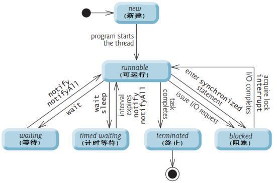
NEW 新建
尚未 start 的线程的状态，从代码上看：
Thread thread=new Thread();
thread.start();
在调用start前，即为 NEW 状态。
RUNNABLE 可运行
当start方法被调用后，即进入 RUNNABLE 状态，注意：
- start方法多次调用将返回
IllegalThreadStateException异常 - RUNNABLE 存在两种细分：ready（就绪）和 running（运行），调用start时，如果native方法
start0调用成功则线程就绪，调用失败则从ThreadGroup中移除。 就绪状态的线程被处理器调度获得CPU时间片，则变为running

BLOCKED 阻塞
注意，JVM中线程的阻塞状态不同于操作系统的I/O阻塞，仅仅是在等待获取监视器锁，在JVM中，发生在进入（或者 调用过 Object#wait() 之后重新进入）synchronized 块/方法
WAITING 等待
线程进入这种状态意味着："等待其他线程执行特定操作"，笼统的从意图上看，它在等待其他线程的执行结果，当对方完成后唤醒它继续工作。
Object#wait()with no timeoutThread#join()with no timeoutLockSupport#park()
如上三种方式可以让线程进入 WAITING 状态，只能等待其他线程进行唤醒
TIMED_WAITING 计时等待
类似于 WAITING 只不过这种等待是有时限的，
- 当前线程
Thread#sleep调用 - 调用
Object#wait()with timeout - 对其他线程调用
Thread#join(long)with timeout LockSupport#parkNanosLockSupport#parkUntil
会进入这种状态
TERMINATED 终止
线程中的所有任务执行完毕后进入这种状态，运行时异常或者Error也会导致线程进入终止状态。
小结
务必注意，以上6种状态是从jdk1.5开始引入的。
在一些博客、操作系统相关的书籍中，会看到类似下图的内容：
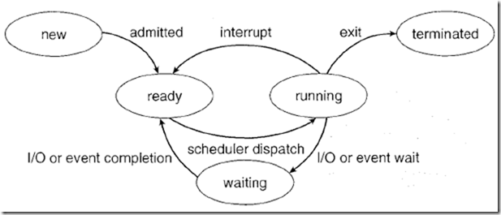
注意，这是操作系统层面进程、或者早期的单线程进程时期的进程生命周期，不能简单的和Java线程生命周期混为一谈。
可以和Java的线程状态进行如下的映射关联：
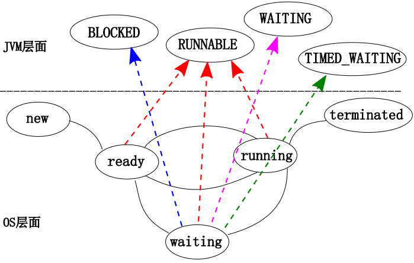
操作系统是从 CPU使用 的角度谈论线程的状态，而JVM是从自身 管理、调度 的角度谈论线程的状态，更贴切地讲是 服务于监测 ，它受限于JVM显式引入的机制。不难理解：
- OS中的线程：ready、running均对应了 java线程的
RUNNABLE状态； - 而OS中的线程因为
I/O或者Event wait让出CPU使用权进入waiting，并且I/O、Event尚未完成时，并不会进入到可使用CPU的ready状态。 在JVM层面：- 线程可能处在等待监视器锁的
BLOCKED状态， - 也可能是通过操作进入了
WAITING、TIMED_WAITING状态， - 也可能处于
RUNNABLE状态 ，例如I/O发生时
- 线程可能处在等待监视器锁的
线程API与线程协作
除却 Thread 中的API，Object中还有和监视器锁有关的API
Object相关API
必须在同步代码中调用（准确的讲：获取了对应的锁方可调用），否则抛出 IllegalMonitorStateException
Object#wait()
使当前线程 立刻 释放锁对象 、进入 WAITING 状态，直到被其他线程唤醒，进入等锁池。
Object#wait(long /*timeout*/)
和
Object#wait(long /*timeout*/,int /*nanos*/)
//jdk 1.8 源码附于下
使当前线程 立刻 释放锁对象 、进入 TIMED_WAITING 状态，直到被其他线程唤醒或者达到时间自动唤醒，进入等锁池。
//附 jdk 1.8
class Object {
public final void wait(long timeout, int nanos) throws InterruptedException {
if (timeout < 0) {
throw new IllegalArgumentException("timeout value is negative");
}
if (nanos < 0 || nanos > 999999) {
throw new IllegalArgumentException("nanosecond timeout value out of range");
}
if (nanos > 0) {
timeout++;
}
wait(timeout);
}
}
Object#notify()
在 同一个等待阻塞池中 随机唤醒一个处于等待中的线程
Object#notifyAll()
在 同一个等待阻塞池中 唤醒所有等待中的线程
Thread中相关的API
static Thread#interrupted()
检测当前线程是否已经中断,调用后将该线程的中断标志位设置为false
static Thread#sleep(long /*millis*/)
使当前线程睡眠，不释放锁对象，让其他线程具有被执行机会
static Thread#yield()
使当前线程放弃cpu的执行权。
但选择执行的线程依赖于线程的优先级，有可能又被重新选中
Thread#interrupt()
中断该线程，实际只是将中断标志设置为true
如果目标线程处在sleep(),join(),wait()中时，目标会收到抛出的 InterruptedException 异常
Thread#join()
阻塞当前线程，等待目标线程执行完毕后唤醒
Thread#join(long /*millis*/)
阻塞当前线程，等待目标线程执行完毕后、或者等待了设定的时间后唤醒
其他API略
线程之间的协作
不难理解，程序往往被设计为通过多个线程之间的协作完成一项复杂的任务，而每个线程所承担的职责也被简化。
但这种设计方式有利亦有弊，所面向的问题过于具化，模型难以复用。
作者按：当然，本文中所指的线程协作，仅局限于线程之间通过监视器锁、线程API让线程执行的顺序有序可控，在此基础上完成整体任务
本篇文章篇幅较短，内容也较为基础、浅显，但部分内容依旧值得深挖，例如JVM如何实现线程管理，可能短期内不会得到明显的提升但可以加深对JVM、OS、程序微观运行过程的理解。
另外，我删除了线程之间协作的WorkShop内容，内容过于干巴巴，如果有机会，我更希望以 三思系列 的形式结合具体实例展开讨论。
Java多线程基础--线程的创建与线程池管理
前言
各位亲爱的读者朋友，我正在创作 Java多线程系列 文章，如果您觉得内容还不错，还请点赞支持一下。
在上一篇文章 中，我们回顾了线程生命周期、线程之间相互协作的知识，本篇我们继续挖掘，增强对线程的理解。
作者按：本篇按照自己有限的知识进行整理，如有谬误，还请读者在评论区不吝指出
了解系列以及总纲：Java多线程系列
重要声明：
出于 方便叙述 或 帮助基础尚且薄弱的读者理解文章内容 的目的，文中举了一些例子，但这些例子并 不能 百分百准确的对应Java中的概念，甚至有些幼稚。
读者朋友们应当注意到这一点，并且清晰的意识到自己的目标是理解Java中的概念与设计，而不必纠结于例子是否有失偏颇。
本篇博客的内容较为散碎，以下是内容大纲，您可以结合它挑选感兴趣的内容片段阅读、重新梳理知识
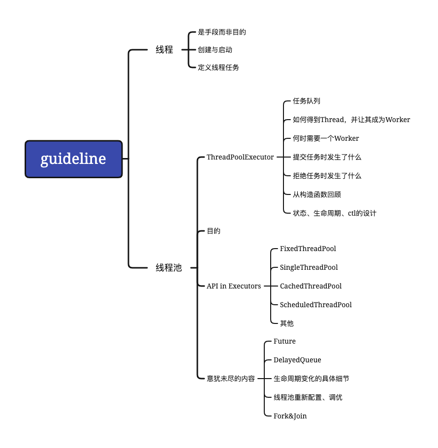
线程的创建与启动
在上一篇文章中，我们提到，调用 Thread#start() 即可启动该线程，而并未挖掘虚拟机 真正启动 一个线程的 具体过程。
可能会让您失望，这一篇依旧不会挖掘这一细节，因为它对设计、编写优质的多线程应用毫无帮助。
如果您对此感兴趣，以下文章可能会有帮助：
- 面试官问如何启动Java 线程 未查询到源头作者信息
- 从Java到C++,以JVM的角度看Java线程的创建与运行 作者Van96
先回归到概念：
操作系统中的Thread：是操作系统能够进行运算调度的最小单位。它被包含在进程之中，是进程中的实际运作单位
JVM中的Thread：A thread is a thread of execution in a program. The Java Virtual Machine allows an application to have multiple threads of execution running concurrently. -- 似乎解释了，又似乎没有
"编写应用程序时，不会为了展现自己已经掌握了启动线程的知识而去启动线程"，即线程是手段，这一点并不难理解。应用程序使用线程的目的在于 完成既定任务 ， 并且基于多线程并发能力提高程序的运行效率、或者基于线程的特性界定职责边界使程序有序运行。
举个例子，工厂接了一批订单，需要在能力一致的一批工人中选择一批完成订单的生产，不难理解：工厂老板在意的是订单的完成，而不是工人的名字、星座、爱好。
那么如何定义线程需要完成的任务呢？
在最初的JDK中，存在两种方式：
- 继承Thread类、覆写
run()方法定义任务
class PrimeThread extends Thread {
long minPrime;
PrimeThread(long minPrime) {
this.minPrime = minPrime;
}
public void run() {
// compute primes larger than minPrime
}
}
- 组合优于继承的典型例子：实现Runnable接口，作为Thread的任务
class Foo {
class PrimeRun implements Runnable {
long minPrime;
PrimeRun(long minPrime) {
this.minPrime = minPrime;
}
public void run() {
// compute primes larger than minPrime
}
}
foo() {
PrimeRun p = new PrimeRun(143);
new Thread(p).start();
}
}
随着JDK的发展，也有更多的方式定义任务，我们将在后续的系列文章中展开。
至此，您应该已经意会了 JDK doc 中所说的 a Thread is a thread of execution in a program
线程池
回到前文举得例子，工厂经过长时间的运转，积累了足够的经验，老板突然顿悟：只要工人能够胜任工作，自己完全没有必要了解工人，只需要:
- 评估生产任务量
- 制定好生产计划
- 把任务和计划交给产线即可
完全不用在意是张三做还是李四做。
工人形如线程，产线便形如线程池。结合工厂的实际情况与任务的特性，可以凝练出 几种产线管理方式 。
在Java中，直接或者间接的依靠配置 ThreadPoolExecutor 获得线程池。
作者按：通过简单的搜索，可以发现大量的探讨线程池的博客，可能受面经影响，部分博客均围绕几个常见地面试问题展开。 但务必注意，线程池的知识内容远不止面试题题干所表现的那些内容！相比之下，理解线程池的设计更为重要。
而我的文字功力有限，无法像教科书那样，顺着严谨的大纲递进式展开，还让文字显得 深刻且有趣，只能尽可能推测读者的兴趣点，展开以下内容
接下来，让我们结合生活经验，以工厂产线为例子，反思推导线程池的设计，了解 ThreadPoolExecutor 最基本的知识。
ThreadPoolExecutor 核心设计
上文中，我们以 产线 类比 线程池 ，"工厂对工人的管理方式" 来类比 "线程池的管理设计" ，并且您一定注意到两处重点：任务 、 工人
在线程池中， 上岗工作的线程 可以类比为 工人 ，完成产线收到的任务。
注意，该类比并不完全准确
不难推测，线程池存在两个核心内容：
- 任务队列
BlockingQueue<Runnable> workQueue - 工作者集合
HashSet<Worker> workers
任务队列用于存储任务，您应该已经注意到，它使用的是juc下的 BlockingQueue 接口。它的本质还是队列，附加了两种特殊的操作：
- 取 时满足 (或等待至满足) 队列非空
- 存 时满足 (或等待至满足) 队列有空余空间
既然是接口，自然可以有不同的实现，您可以使用不同的实现作为线程池的任务队列。
在线程池设计中，通过依赖抽象 即BlockingQueue 进行了解耦，只关心存取的时机。您可以自行决定队列的特性，诸如大小、存储方式、优先级排序等
在先前的系列文章中还未涉及 BlockingQueue ，计划将于后续系列文章中展开，故本文也不会围绕它展开内容
接下来，让我们看一看 一个人上岗成为产线工人的全过程 ，即 Thread 成为线程池 Worker 的过程
成为线程池中的工作者
产线确定了一个岗位，管理者把岗位信息给到人力资源部门，并申请配给人力：getThreadFactory().newThread(this)
人力资源部门派遣了一个 Thread 小T 给到产线，小T已经接受了技能培训，并且知道上岗后从产线的 任务队列 中取任务、出卖体力完成它即可， void runWorker(Worker w)。
小T 就成为了一个 Worker。
您可能意识到，线程池只关心线程的管理，并不关心线程的创建细节，所以再次依赖抽象，对线程创建细节进行了解耦：
public interface ThreadFactory {
Thread newThread(Runnable r);
}
关于Worker的定义、职责，泛读以下源码即可了然于心：
public class ThreadPoolExecutor extends AbstractExecutorService {
private final class Worker extends AbstractQueuedSynchronizer implements Runnable {
/** Thread this worker is running in. Null if factory fails. */
final Thread thread;
/** Initial task to run. Possibly null. */
Runnable firstTask;
/** Per-thread task counter */
volatile long completedTasks;
/**
* Creates with given first task and thread from ThreadFactory.
* @param firstTask the first task (null if none)
*/
Worker(Runnable firstTask) {
setState(-1); // inhibit interrupts until runWorker
this.firstTask = firstTask;
this.thread = getThreadFactory().newThread(this);
}
/** Delegates main run loop to outer runWorker. */
public void run() {
runWorker(this);
}
//其他略
}
public ThreadFactory getThreadFactory() {
return threadFactory;
}
final void runWorker(Worker w) {
Thread wt = Thread.currentThread();
Runnable task = w.firstTask;
w.firstTask = null;
w.unlock(); // allow interrupts
boolean completedAbruptly = true;
try {
while (task != null || (task = getTask()) != null) {
//锁处理和判断略
try {
beforeExecute(wt, task);
Throwable thrown = null;
try {
task.run();
}
//异常略
finally {
afterExecute(task, thrown);
}
} finally {
task = null;
w.completedTasks++;
w.unlock();
}
}
completedAbruptly = false;
} finally {
processWorkerExit(w, completedAbruptly);
}
}
}
您可能留意到，近年来的一些社会不良事件中总会出现一个词：临时工。当然，我并没有任何在此讨论社会问题的意愿， 一条生产线有固定的岗位，也会有按需产生的临时工岗位，甚至完全是临时工岗位，这并不难理解。而线程池也有这样的设计。
public class ThreadPoolExecutor extends AbstractExecutorService {
/**
* Core pool size is the minimum number of workers to keep alive
* (and not allow to time out etc) unless allowCoreThreadTimeOut
* is set, in which case the minimum is zero.
*/
private volatile int corePoolSize;
/**
* Maximum pool size. Note that the actual maximum is internally
* bounded by CAPACITY.
*/
private volatile int maximumPoolSize;
}
注意，线程池在管理时，对线程是一视同仁的，只关心核心线程数量、最大线程数量，并不会依据线程的特征将其分化为 核心/非核心。
产线如何确定一个岗位
上一节我们提到，产线确定了一个岗位后，向人力资源部门要人并安排成为产线工人。
那么产线是如何确定一个岗位的呢？即 线程池如何确定需要增加一个Worker？
产线不会无缘无故的安排工人上岗工作，必然是收到了生产任务，否则就成了合理摸鱼。
顺理成章的，线程池收到一个任务时，在相应的Size限制没有达到时，优先考虑安排线程进行处理，而不是丢到任务队列中等待。
在先前的系列文章中，我们已经了解到，启动线程是较为昂贵了，虽然线程池规划了 核心线程的数量 和 最大线程数量 ，但也不会一开始就全员上岗，而是在任务抵达时逐步的安排线程上岗。
尝试 安排线程上岗 时，
- 需先判断线程池工作状态，如果线程池已经关闭，自然不会再增加线程，返回失败。比如产线准备停产了，已经接的任务会安排处理，但肯定不会再招工。
- 如果线程池正常工作，则检查线程数量是否可以继续增加
- 如果可以继续增加，则尝试更新线程总数，如果失败，则说明在其他线程中也触发了addWorker逻辑，那么线程池的工作状态也可能发生了改变，如果没有改变，则重复步骤2，否则回到步骤1继续检测
- 上一节中的内容，得到Thread实例并让其成为Worker，开始干活
整个过程中有CAS操作，鉴于有系列文章的撰写计划，文中不再展开，相应代码可参考gist：
向产线（线程池）下达任务
联想一下，市场部门小王拿到了一笔单子，来到产线找到负责人老张，让老张安排干掉
- 老张拿起了职工工作排期表，发现 还有固定岗位空着 ，则直接向人力资源要人上岗干活；
- 注意，招人上岗 可能失败 ，比如老张手上的信息不及时，现在已经满额了，也有可能厂长决定产线要停掉，通知人力资源不要再派人了
- 假如固定岗位招不来人，老张继续核实： 产线未停产 且 可纳入计划，在未停产且可纳入计划的情况下，把任务排进了计划
- 老张还是很严谨的，又再次核实产线生产状态，如果产线已经停产并且该任务没有被领取，则把任务拒掉
- 否则检查工人是否在岗，如没有工人在岗，则向人力资源部门要一个 临时工 处理 任务队列中的任务， 如果要不来人，任务也放着
- 如果产线停产了或者排不进计划了，老张精通人情世故，表示看看能不能拉个临时工来，能拿到人就直接处理，否则就只能拒绝了，
- 如果是产线停了或者达到了最大人数，则要不来人 -- 参考上个小节
- 否则临时工会处理该任务
而线程池中与此过程也非常类似，代码比较简短：
public class ThreadPoolExecutor extends AbstractExecutorService {
public void execute(Runnable command) {
if (command == null) // 小王在忽悠人
throw new NullPointerException();
int c = ctl.get();
//1.
if (workerCountOf(c) < corePoolSize) {
//1.i
if (addWorker(command, true))
return;
c = ctl.get();
}
//2.
if (isRunning(c) && workQueue.offer(command)) {
int recheck = ctl.get();
if (!isRunning(recheck) && remove(command)) // 2.i
reject(command);
else if (workerCountOf(recheck) == 0) // 2.ii
addWorker(null, false);
} else if (!addWorker(command, false)) // 3
reject(command); // 3.i
}
}
当你拒绝任务
虽然打工人和老板都想任务及时可靠的被完成，但总有不如意的时候，某些情况下，线程池将不得不拒绝任务。
上文中已经提到：线程池已经关闭、任务队列已经排满。
当线程池拒绝任务时，事情总得有个说法，JDK设计了接口：
public interface RejectedExecutionHandler {
void rejectedExecution(Runnable r, ThreadPoolExecutor executor);
}
在线程池实例化时，需要指明拒绝策略。
JDK中提供了4个策略：
- CallerRunsPolicy -- 在线程池未关闭情况下，访问者线程直接负责处理
- AbortPolicy -- 抛出
RejectedExecutionException异常，这是运行时异常， 默认策略 - DiscardPolicy -- 这个任务就此罢休
- DiscardOldestPolicy -- 只要线程池没关闭，这件事情就非得干，把排在最前的任务踢掉，重走任务下达流程
蓦然回首，回看构造函数
ThreadPoolExecutor 提供了一系列重载构造函数用于获取特定实例

public class ThreadPoolExecutor extends AbstractExecutorService {
public ThreadPoolExecutor(
int corePoolSize,
int maximumPoolSize,
long keepAliveTime,
TimeUnit unit,
BlockingQueue<Runnable> workQueue,
ThreadFactory threadFactory,
RejectedExecutionHandler handler
) {
//ignore 参见gist https://gitee.com/leobert_253/codes/wh495q63tvlipum2snca131
}
}
以此为例
- int corePoolSize, 核心线程数量
- int maximumPoolSize, 最大线程数量
- long keepAliveTime, 配合 unit 表示的时间，作为IDLE 线程等待任务的超时时间，核心线程如果不允许采用超时机制将一直等待任务（默认）
- TimeUnit unit, 配合 keepAliveTime
- BlockingQueue
workQueue 任务队列 - ThreadFactory threadFactory 线程创建工厂
- RejectedExecutionHandler handler 拒绝任务时的策略
当然，这些参数存在一些限制和校验，可参考 gist 进一步阅读，摘自JDK1.8。
线程池的状态标识-ctl的设计
前面的内容中已经提到了线程池Shutdown的状态，线程池具有5个状态，先看一眼代码： 相应的二进制补码已标识
注意，计算机中以补码表示数，如果是有符号数，最高位表示符号，1为负、0为非负，非负数其原码和补码一致，负数的补码： 取原码，符号位不变（保持1），其他位取反，然后加1 得到补码
public class ThreadPoolExecutor extends AbstractExecutorService {
private final AtomicInteger ctl = new AtomicInteger(ctlOf(RUNNING, 0));
/**
* 即29
* */
private static final int COUNT_BITS = Integer.SIZE - 3;
/**
* 0010 0000 00000000 00000000 00000000 -1 =>
* 0001 1111 11111111 11111111 11111111
*
* wc = ctl & CAPACITY 低29位存储wc
* state = ctl & ~CAPACITY 高三位存储状态
* */
private static final int CAPACITY = (1 << COUNT_BITS) - 1;
// runState is stored in the high-order bits
//补码 111 29个0
private static final int RUNNING = -1 << COUNT_BITS;
//补码 000 29个0
private static final int SHUTDOWN = 0 << COUNT_BITS;
//补码 001 29个0
private static final int STOP = 1 << COUNT_BITS;
//补码 010 29个0
private static final int TIDYING = 2 << COUNT_BITS;
//补码 011 29个0
private static final int TERMINATED = 3 << COUNT_BITS;
private static int ctlOf(int rs, int wc) {
return rs | wc;
}
}
很显然，ThreadPoolExecutor 将32位的int分为不同的区域标识信息，在多线程背景下，使用AtomicInteger，但本质还是int。
将 32位中的 高三位用于存储状态信息，低29位存储 worker-count（即wc），信息存储于ctl中，非常传统的位运算设计。
考虑到篇幅和阅读体验，其他相关的位运算API已经剥离到 gist , 通过位运算解出状态、wc，判断状态大小等
- Running 运行状态（实例化后的默认状态）
- Shutdown 不接收新任务，处理任务队列中的任务
- Stop 不接收新任务，不处理任务队列中的任务，并且中断正在处理的任务
- Tidying 所有的任务已终止时的一个暂态，随后将执行terminate()，成功后进入Terminated状态
- Terminated 彻底终止
生命周期变化如下：
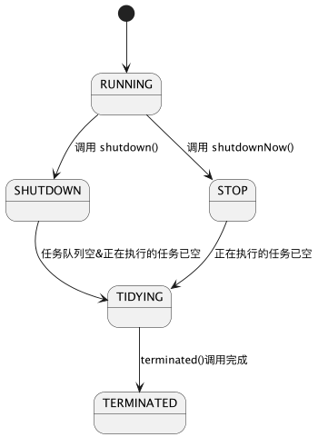
线程池目的
此时，请您想一想，创建线程池机制的目的是什么？
前文提到，线程池是对线程进行管理，显然还不是根源。
- 降低资源消耗。 重复利用已创建的线程，可降低线程创建和销毁造成的消耗。
- 提高响应速度。 线程池中有线程值守，当任务到达时，不需要每次都等待线程创建。注意，并不排除任务排队、必要的线程启动情况
- 提高线程的可管理性，对系统运行状态进行调优。 线程是稀缺资源，不能无限制的创建，使用线程池可以进行统一的分配、监控、调优。
面经常客，JDK中提供的线程池
您一定阅读过一些面经，其中包含线程池的题目。作者可能在引导您向着 "JDK中特定的API所提供的线程池特征" 方面展开作答，或者题目看起来就是这样，也许就是一个面试陷阱
作者按，不要单纯的为了应付面试和放弃了学习的初心。结合问题 讲清楚线程池的设计 要比 单纯的、枯燥的罗列通过调用Executors中的API得到的线程池对应的特征 有意义
在JDK1.5中，Java凝练了4种配置方式，可获得特定管理方式的线程池：
Java依据其特征作为Executors中的方法命名，借用它们作为这4类线程池的别名
- FixedThreadPool 数量固定、线程可重用
- SingleThreadExecutor 仅单个线程
- CachedThreadPool 会根据需要创建新线程的线程池
- ScheduledThreadPool 可定期或周期执行任务的线程池
前文已经提到，它们直接或者间接的使用了 ThreadPoolExecutor，而不是4个继承类！按照其API命名给了它们别名，但并不是类名！
FixedThreadPool
JDK中提供的包装方法如下：
public class Executors {
public static ExecutorService newFixedThreadPool(int nThreads) {
return new ThreadPoolExecutor(nThreads, nThreads,
0L, TimeUnit.MILLISECONDS,
new LinkedBlockingQueue<Runnable>());
}
}
很显然，FixedThreadPool 是一个定额的池，nThreads 即为核心线程数量，亦为最大线程数量，注意值必须大于0。
这条产线的工人就很惨，活多了也不会加派人手，任务排队等待线程空闲；不来活也要在岗位上待着，不会释放线程。
以 LinkedBlockingQueue 作为任务队列，先到的任务先被处理，并且它是无界的。
SingleThreadExecutor
顾名思义，我们会得到一个单一线程的线程池。
public class Executors {
public static ExecutorService newSingleThreadExecutor(ThreadFactory threadFactory) {
return new FinalizableDelegatedExecutorService
(new ThreadPoolExecutor(1, 1,
0L, TimeUnit.MILLISECONDS,
new LinkedBlockingQueue<Runnable>(),
threadFactory));
}
}
可能您会疑惑，
new ThreadPoolExecutor(
1, 1,
0L, TimeUnit.MILLISECONDS,
new LinkedBlockingQueue<Runnable>(),
threadFactory
)
已经得到了一个 核心线程数、最大线程数均为1的线程池，为啥要增加 FinalizableDelegatedExecutorService 的参与？
前文未提及但您可能知道，ThreadPoolExecutor是可以重新配置的！例如重新设置核心线程数量：
public class ThreadPoolExecutor {
public void setCorePoolSize(int corePoolSize) {
if (corePoolSize < 0)
throw new IllegalArgumentException();
int delta = corePoolSize - this.corePoolSize;
this.corePoolSize = corePoolSize;
if (workerCountOf(ctl.get()) > corePoolSize)
interruptIdleWorkers();
else if (delta > 0) {
int k = Math.min(delta, workQueue.size());
while (k-- > 0 && addWorker(null, true)) {
if (workQueue.isEmpty())
break;
}
}
}
}
而 FinalizableDelegatedExecutorService 继承自 DelegatedExecutorService，扩展了在 finalize() 时关闭线程池。
而后者是一个Wrapper，仅暴露 ExecutorService 接口的功能，通过委托的方式封闭了重新配置线程池的能力。
CachedThreadPool
该池将使用 "线程对象" 缓存方案，核心线程数量为0，全部为临时工，并且基于上文的知识：
- 如果池中没有Worker，则会新增Worker处理，否则任务放入任务队列等待。
- 非核心线程可以运用获取任务超时时间，当获取任务超时时，则
processWorkerExit下岗
public class Executors {
public static ExecutorService newCachedThreadPool() {
return new ThreadPoolExecutor(0, Integer.MAX_VALUE,
60L, TimeUnit.SECONDS,
new SynchronousQueue<Runnable>());
}
}
ScheduledThreadPool
public class Executors {
public static ScheduledExecutorService newScheduledThreadPool(int corePoolSize) {
return new ScheduledThreadPoolExecutor(corePoolSize);
}
}
不同于前三者，此时得到的线程池可 定时 处理任务。
为了实现这一点，ScheduledThreadPoolExecutor
- 使用
DelayedWorkQueue改变了获取任务的具体实现 - 使用装饰模式包装原始任务，使得任务在满足
周期性的条件时，能够重新进入任务队列
作者按：JDK中的源码实现非常精彩，值得深读。gist
相信您已经对线程池的设计有了一定的理解，JDK1.8之后也在线程池中增加了Future相关的内容，本文不再继续展开。通过Executors中API的源码，应当已经掌握得到的线程池的特征。
意犹未尽之处
行文至此，内容已经非常冗长，但也不得不告一段落。 文中的部分内容，例如Future、AtomicInteger、CAS等内容，计划在本系列的其他文章中具体展开，文中亦颇多回避。 而DelayedQueue、线程池生命周期变化时的具体细节、线程池的调优等内容，均需要结合代码、场景具体分析，限于文章主题未能尽兴，读者闲暇之余若能将源码再阅读一二，定能有更大的收获。
Java多线程系列--掌握Future，轻松获取异步任务结果
前言
最近因为一些个人原因，未能抽出太多精力更新Java多线程系列，一搁置就是好几个月，先向读者诸君致歉。
在本系列的其他文章中，已经提到过线程之间的相互协作， 通过分工，将程序系统的不同任务进行线程分离，充分利用机器性能、提升特定线程的利用率和程序的体验感。
详见拙作：Java多线程基础--线程生命周期与线程协作详解.
并在线程池相关文章中提到：作为程序构建者，我们更关心线程（组）的特性和它们所执行的任务，并不愿意分心去做线程操作。
然而实际开发中，我们同样关心一个任务对程序系统产生的影响，习惯上称之为任务的的执行结果。
Runnable的局限性
在前文中我们谈到，通过编码实现Runnable接口，将获得具有边界性的 "任务"，在指定的线程（或者线程池）中运行。
重新观察该接口，不难发现它并没有方法返回值：
public interface Runnable {
void run();
}
在JDK1.5之前，想利用任务的执行结果，需要小心的操作线程访问临界区资源。使用 回调 进行解耦是非常不错的选择。
练手小Demo -- 回顾既往文章知识
注意，为了减少篇幅使用了lambda，但jdk1.5之前并不支持lambda
将计算任务分离到其他线程执行，再回到主线程消费结果
我们将计算、IO等耗时任务丢到其他线程，让主线程专注于自身业务，假想它在接受用户输入以及处理反馈,但我们略去这一部分
我们可以设计出类似下面的代码：
虽然它还有很多不合理之处值得优化，但也足以用于演示
class Demo {
static final Object queueLock = new Object();
static List<Runnable> mainQueue = new ArrayList<>();
static boolean running = true;
static final Runnable FINISH = () -> running = false;
public static void main(String[] args) {
synchronized (queueLock) {
mainQueue.add(Demo::onStart);
}
while (running) {
Runnable runnable = null;
synchronized (queueLock) {
if (!mainQueue.isEmpty())
runnable = mainQueue.remove(0);
}
if (runnable != null) {
runnable.run();
}
Thread.yield();
}
}
public static void onStart() {
//...
}
public static void finish() {
synchronized (queueLock) {
mainQueue.clear();
mainQueue.add(FINISH);
}
}
}
再模拟一个计算的线程和任务回调：
interface Callback {
void onResultCalculated(int result);
}
class CalcThread extends Thread {
private final Callback callback;
private final int a;
private final int b;
public CalcThread(Callback callback, int a, int b) {
this.callback = callback;
this.a = a;
this.b = b;
}
@Override
public void run() {
super.run();
try {
Thread.sleep(10);
} catch (InterruptedException e) {
e.printStackTrace();
}
final int result = a + b;
System.out.println("threadId" + Thread.currentThread().getId() + ",calc result:" + result + ";" + System.currentTimeMillis());
synchronized (queueLock) {
mainQueue.add(() -> callback.onResultCalculated(result));
}
}
}
填充一下onStart业务：
class Demo {
public static void onStart() {
System.out.println("threadId" + Thread.currentThread().getId() + ",onStart," + System.currentTimeMillis());
new CalcThread(result -> {
System.out.println("threadId" + Thread.currentThread().getId() + ",onResultCalculated:" + result + ";" + System.currentTimeMillis());
finish();
}, 200, 300).start();
}
}
复习：优化为使用Runnable
在前文我们提到，如果业务仅关注任务的执行，并不过于关心线程本身，则可以利用Runnable：
class Demo {
static class CalcRunnable implements Runnable {
private final Callback callback;
private final int a;
private final int b;
public CalcRunnable(Callback callback, int a, int b) {
this.callback = callback;
this.a = a;
this.b = b;
}
@Override
public void run() {
try {
Thread.sleep(10);
} catch (InterruptedException e) {
e.printStackTrace();
}
final int result = a + b;
System.out.println("threadId" + Thread.currentThread().getId() + ",calc result:" + result + ";" + System.currentTimeMillis());
synchronized (queueLock) {
mainQueue.add(() -> callback.onResultCalculated(result));
}
}
}
public static void onStart() {
System.out.println("threadId" + Thread.currentThread().getId() + ",onStart," + System.currentTimeMillis());
new Thread(new CalcRunnable(result -> {
System.out.println("threadId" + Thread.currentThread().getId() + ",onResultCalculated:" + result + ";" + System.currentTimeMillis());
finish();
}, 200, 300)).start();
}
}
不难想象出：我们非常需要
- 让特定线程、特定类型的线程方便地接收任务，回顾本系列文章中的 线程池篇 ，线程池是应运而生
- 拥有比Synchronize更轻量的机制
- 拥有更方便的数据结构
至此，我们可以体会到：JDK1.5之前，因为JDK的功能不足，Java程序对于线程的使用 较为粗糙。
为异步而生的Future
终于在JDK1.5中，迎来了新特性： Future 以及先前文章中提到的线程池, 时光荏苒，一晃将近20年了。
/**
* 略
* @since 1.5
* @author Doug Lea
* @param <V> The result type returned by this Future's {@code get} method
*/
public interface Future<V> {
boolean cancel(boolean mayInterruptIfRunning);
boolean isCancelled();
boolean isDone();
V get() throws InterruptedException, ExecutionException;
V get(long timeout, TimeUnit unit)
throws InterruptedException, ExecutionException, TimeoutException;
}
尽管已经移除了API注释，但仍然能够理解每个API的含义，不多做赘述。
显而易见，为了增加返回值，没有必要用如此复杂的 接口来替代 Runnable。简单思考后可以对返回值的情况进行归纳：
- 返回Runnable中业务的结果，例如计算、读取资源等
- 单纯的在Runnable执行完毕后返回一个结果
从业务层上看，仅需要如下接口即可，它增加了返回值、并可以更友好地让使用者处理异常：
作者按：抛开底层实现，仅看业务方编码需要
public interface Callable<V> {
/**
* Computes a result, or throws an exception if unable to do so.
*
* @return computed result
* @throws Exception if unable to compute a result
* 防盗戳 leobert-lan https://juejin.cn/user/2066737589654327
*/
V call() throws Exception;
}
显然，JDK需要提供后向兼容能力：
- Runnable 不能够丢弃，也不应当丢弃
- 不能要求使用者完全的重构代码
所以一并提供了适配器，让使用者进行简单的局部重构即可用上新特性
static final class RunnableAdapter<T> implements Callable<T> {
final Runnable task;
final T result;
RunnableAdapter(Runnable task, T result) {
this.task = task;
this.result = result;
}
public T call() {
task.run();
return result;
}
}
而Future恰如其名，它代表了在 "未来" 的一个结果和状态，为了更方便地处理异步而生。
并且内置了 FutureTask，在 FutureTask详解 章节中再行展开。
类图
在JDK1.8的基础上，看一下精简的类图结构：

FutureTask详解
构造函数
public class FutureTask {
public FutureTask(Callable<V> callable) {
if (callable == null)
throw new NullPointerException();
this.callable = callable;
this.state = NEW; // ensure visibility of callable
}
public FutureTask(Runnable runnable, V result) {
this.callable = Executors.callable(runnable, result);
this.state = NEW; // ensure visibility of callable
}
}
生命周期
public class FutureTask {
//新建
private static final int NEW = 0;
//处理中
private static final int COMPLETING = 1;
//正常
private static final int NORMAL = 2;
//异常
private static final int EXCEPTIONAL = 3;
//已取消
private static final int CANCELLED = 4;
//中断中
private static final int INTERRUPTING = 5;
//已中断
private static final int INTERRUPTED = 6;
}
可能的生命周期转换如下：
- NEW -> COMPLETING -> NORMAL
- NEW -> COMPLETING -> EXCEPTIONAL
- NEW -> CANCELLED
- NEW -> INTERRUPTING -> INTERRUPTED
JDK中原汁原味的解释如下：
The run state of this task, initially NEW. The run state transitions to a terminal state only in methods set, setException, and cancel. During completion, state may take on transient values of COMPLETING (while outcome is being set) or INTERRUPTING (only while interrupting the runner to satisfy a cancel(true)). Transitions from these intermediate to final states use cheaper ordered/lazy writes because values are unique and cannot be further modified.
核心方法
本节从以下三块入手阅读源码
- 状态判断
- 取消
- 获取结果
状态判断API的实现非常简单
public class FutureTask {
public boolean isCancelled() {
return state >= CANCELLED;
}
public boolean isDone() {
return state != NEW;
}
}
取消：
- 当前状态为
NEW且 CAS修改 state 成功，否则返回取消失败 - 如果
mayInterruptIfRunning则中断在执行的线程并CAS修改state为INTERRUPTED - 调用 finishCompletion
- 删除并通知所有等待的线程
- 调用done()
- 设置callable为null
public class FutureTask {
public boolean cancel(boolean mayInterruptIfRunning) {
if (!(state == NEW &&
UNSAFE.compareAndSwapInt(this, stateOffset, NEW,
mayInterruptIfRunning ? INTERRUPTING : CANCELLED))) {
return false;
}
try { // in case call to interrupt throws exception
if (mayInterruptIfRunning) {
try {
Thread t = runner;
if (t != null)
t.interrupt();
} finally { // final state
UNSAFE.putOrderedInt(this, stateOffset, INTERRUPTED);
}
}
} finally {
finishCompletion();
}
return true;
}
private void finishCompletion() {
// assert state > COMPLETING;
for (WaitNode q; (q = waiters) != null; ) {
if (UNSAFE.compareAndSwapObject(this, waitersOffset, q, null)) {
for (; ; ) {
Thread t = q.thread;
if (t != null) {
q.thread = null;
LockSupport.unpark(t);
}
WaitNode next = q.next;
if (next == null)
break;
q.next = null; // unlink to help gc
q = next;
}
break;
}
}
done();
callable = null; // to reduce footprint
}
}
获取结果： 先判断状态，如果未进入到 COMPLETING（即为NEW状态），则阻塞等待状态改变，返回结果或抛出异常
public class FutureTask {
public V get() throws InterruptedException, ExecutionException {
int s = state;
if (s <= COMPLETING)
s = awaitDone(false, 0L);
return report(s);
}
public V get(long timeout, TimeUnit unit)
throws InterruptedException, ExecutionException, TimeoutException {
if (unit == null)
throw new NullPointerException();
int s = state;
if (s <= COMPLETING &&
(s = awaitDone(true, unit.toNanos(timeout))) <= COMPLETING)
throw new TimeoutException();
return report(s);
}
private V report(int s) throws ExecutionException {
Object x = outcome;
if (s == NORMAL)
return (V) x;
if (s >= CANCELLED)
throw new CancellationException();
throw new ExecutionException((Throwable) x);
}
}
如何使用
而使用则非常简单，也非常的朴素。
我们以文中的的例子进行改造:
- 沿用原Runnable逻辑
- 移除回调，增加
CalcResult - 将
CalcResult对象作为既定返回结果，Runnable中设置其属性
class Demo {
static class CalcResult {
public int result;
}
public static void onStart() {
System.out.println("threadId" + Thread.currentThread().getId() + ",onStart," + System.currentTimeMillis());
final CalcResult calcResult = new CalcResult();
Future<CalcResult> resultFuture = Executors.newSingleThreadExecutor().submit(() -> {
try {
Thread.sleep(10);
} catch (InterruptedException e) {
e.printStackTrace();
}
final int result = 200 + 300;
System.out.println("threadId" + Thread.currentThread().getId() + ",calc result:" + result + ";" + System.currentTimeMillis());
calcResult.result = result;
}, calcResult);
System.out.println("threadId" + Thread.currentThread().getId() + "反正干点什么," + System.currentTimeMillis());
if (resultFuture.isDone()) {
try {
final int ret = resultFuture.get().result;
System.out.println("threadId" + Thread.currentThread().getId() + ",get result:" + ret + ";" + System.currentTimeMillis());
} catch (InterruptedException | ExecutionException e) {
e.printStackTrace();
}
}
finish();
}
}
如果直接使用新特性Callback，则如下：
直接返回结果，当然也可以直接返回Integer，不再包裹一层
class Demo {
public static void onStart() {
System.out.println("threadId" + Thread.currentThread().getId() + ",onStart," + System.currentTimeMillis());
ExecutorService executor = Executors.newSingleThreadExecutor();
Future<CalcResult> resultFuture = executor.submit(() -> {
try {
Thread.sleep(10);
} catch (InterruptedException e) {
e.printStackTrace();
}
final int result = 200 + 300;
System.out.println("threadId" + Thread.currentThread().getId() + ",calc result:" + result + ";" + System.currentTimeMillis());
final CalcResult calcResult = new CalcResult();
calcResult.result = result;
return calcResult;
});
System.out.println("threadId" + Thread.currentThread().getId() + "反正干点什么," + System.currentTimeMillis());
if (resultFuture.isDone()) {
try {
final int ret = resultFuture.get().result;
System.out.println("threadId" + Thread.currentThread().getId() + ",get result:" + ret + ";" + System.currentTimeMillis());
} catch (InterruptedException | ExecutionException e) {
e.printStackTrace();
}
}
executor.shutdown();
finish();
}
}
相信读者诸君会有这样的疑惑：
为何使用Future比原先的回调看起来粗糙？
首先要明确一点：文中前段的回调Demo，虽然达成了既定目标，但效率并不高！！在当时计算很昂贵的背景下，并不会如此莽撞地使用！
而在JDK1.5开始，提供了大量内容支持多线程开发。考虑到篇幅，会在系列文章中逐步展开。
另外，FutureTask中的CAS与Happens-Before本篇中亦不做展开。
接下来，再做一些引申，简单看一看多线程业务模式。
引申，多线程业务模式
常用的多线程设计模式包括：
- Future模式
- Master-Worker模式
- Guarded Suspension模式
- 不变模式
- 生产者-消费
Future模式
文中对于Future的使用方式遵循了Future模式。
业务方在使用时，已经明确了任务被分离到其他线程执行时有等待期，在此期间，可以干点别的事情，不必浪费系统资源。
Master-Worker模式
在程序系统中设计两类线程，并相互协作：
- Master线程（单个）
- Worker线程
Master线程负责接受任务、分配任务、接收（必要时进一步组合）结果并返回；
Worker线程负责处理子任务，当子任务处理完成后，向Master线程返回结果；
作者按：此时可再次回想一下文章开头的Demo
Guarded Suspension模式
- 使用缓存队列，使得 服务线程/服务进程 在未就绪、忙碌时能够延迟处理请求。
- 使用等待-通知机制，将消费
服务的返回结果的方式规范化
不变模式
在并行开发过程中，为确保数据的一致性和正确性，有必要对对象进行同步，而同步操作会对程序系统的性能产生相当的损耗。
因此，使用状态不可改变的对象，依靠其不变性来确保 并行操作 在 没有同步机制 的情况下，保持一致性和正确性。
- 对象创建后，其内部状态和数据不再发生改变
- 对象被共享、被多个线程访问
生产者-消费
设计两类线程：若干个生产者线程和若干个消费者线程。
生产者线程负责提交用户请求，消费者线程负责处理用户请求。生产者和消费者之间通过共享内存缓冲区进行通信。
内存缓冲区的意义：
- 解决是数据在多线程间的共享问题
- 缓解生产者和消费者之间的性能差
这几种模式从不同角度出发解决特定问题，但亦有一定的相似之处，不再展开。
后记
至此，我们已经进入尾声，JDK1.5中，对多线程的支持迎来一波井喷。本文以及系列文章中关于线程池的内容也仅仅是基础中的基础，仍旧有大量的内容值得深入，本篇不再往下挖掘。
在后续的系列文章中，我们将展开AQS、HAPPENS-BEFORE等内容，以及和本文高度关联的CompleteFutureTask，JUC工具等。
Java多线程系列-- Fork&Join框架，分治的艺术
前言
本篇是多线程系列中的一篇，我们在先前的一篇文章中回顾了线程池的主要知识
过去了很长时间，我们简单提要一下：
- 设计目的：简化线程的使用，管理与复用，避免直接操作线程
- 如何使用线程池
- 设计实现与源码细节
本篇我们延续下去，回顾 Fork&Join。主要内容如下：
- 使用场景和注意事项
- 设计原理
- 示例代码演示使用方式以及和线程池简单对比
全文总结
内容为基础部分，简单拾遗的读者扫一眼总结即可，若均已掌握，没必要浪费时间阅读细节
- ForkJoinPool是线程池的补充，并不是替代。线程池一般用于处理 独立的 请求、任务
- 适合实现 "分治" 类算法，尤其是分治后递归调用的函数
- 适用于计算密集型，如果是I/O密集型，或者线程间同步等造成长时间阻塞时，可配合ManagedBlocker使用
- Work Stealing（工作窃取）机制 和 双端队列，已经了解设计细节便不需要再看下去了
如何使用
本章非常的基础，已经掌握如何使用，但没有思考过Fork&Join设计思路的读者，可以跳跃到 原理
我们挑选一道简单题 计算斐波那契数 ,并使用递归算法求解。
斐波那契数 （通常用 F(n) 表示）形成的序列称为 斐波那契数列 。该数列由 0 和 1 开始，后面的每一项数字都是前面两项数字的和。也就是：
F(0) = 0，F(1) = 1
F(n) = F(n - 1) + F(n - 2)，其中 n > 1
给定 n ，请计算 F(n) 。
来源：力扣（LeetCode）
Fork&Join 实现
如题，我们需要定义计算任务，这将通过继承 ForkJoinTask 实现，当计算任务不可分（或者没有必要分解）时，自行处理结果返回，否则分解任务。
static class Fibonacci extends RecursiveTask<Long> {
final int n;
public Fibonacci(int n) {
this.n = n;
}
@Override
protected Long compute() {
System.out.println("compute fib(" + n + "), in thread:" + Thread.currentThread().getName());
if (n <= 1) {
return (long) n;
}
Fibonacci f1 = new Fibonacci(n - 1);
f1.fork();
Fibonacci f2 = new Fibonacci(n - 2);
f2.fork();
return f2.join() + f1.join();
}
}
我们通过 fork() 将子任务丢入任务队列，并通过 join() 得到计算后的结果。
接下来看一看使用ForkJoinPool执行任务：
我们定义一个最大工作线程数为4的ForkJoinPool，并计算 Fib(5) 的结果。可按照CPU核心数取最大工作线程数
注意，因为没有针对计算过程做任何优化，并且使用了输出，不要计算过大的值折腾电脑
class Demo {
public static void main(String[] args) {
ForkJoinPool forkJoinPool = new ForkJoinPool(4);
Fibonacci fib = new Fibonacci(5);
Long result = forkJoinPool.invoke(fib);
System.out.println(result);
}
}
通过 invoke(ForkJoinTask<T> task) 可以在当前线程阻塞式获取计算结果。
通过 execute(ForkJoinTask<?> task) 可以进行异步处理，因为 class ForkJoinTask<V> implements Future<V>，
使用方式和Future一致，复习链接
可以看到，递归过程中有很多的重复,但这源于算法本身，
当递归算法本身会使得子任务产生重复计算或者重复任务时，应当考虑处理中间结果缓存，减少不必要的任务，可以减少重复计算和GC压力。
如果移除控制台输出，一般可以尝试下计算第40个，不建议再计算你更靠后的值。
compute fib(5), in thread:ForkJoinPool-1-worker-1
compute fib(3), in thread:ForkJoinPool-1-worker-1
compute fib(1), in thread:ForkJoinPool-1-worker-1
compute fib(2), in thread:ForkJoinPool-1-worker-3
compute fib(0), in thread:ForkJoinPool-1-worker-3
compute fib(1), in thread:ForkJoinPool-1-worker-0
compute fib(4), in thread:ForkJoinPool-1-worker-2
compute fib(2), in thread:ForkJoinPool-1-worker-2
compute fib(0), in thread:ForkJoinPool-1-worker-2
compute fib(1), in thread:ForkJoinPool-1-worker-2
compute fib(3), in thread:ForkJoinPool-1-worker-2
compute fib(1), in thread:ForkJoinPool-1-worker-2
compute fib(2), in thread:ForkJoinPool-1-worker-0
compute fib(0), in thread:ForkJoinPool-1-worker-0
compute fib(1), in thread:ForkJoinPool-1-worker-3
5
原理
实际上，关于Java ForkJoin设计原理的分析，均源自其开发者 Doug Lea 的论文 A Java Fork/Join Framework 以及结合源码展开讨论。
时间充裕的读者可以看一看论文原文，接下来我们节选论文重要内容进行理解。
分治算法的核心思路
以伪代码描述分治的思想如下，当问题足够小（无需再拆分）时，直接处理，否则拆分问题，处理并汇总结果
Result solve(Problem problem){
if(problem is small){
directly solve problem
}else{
split problem into independent parts
fork new subtasks to solve each part
join all subtasks
compose result from subresults
}
}
分治+并行的核心要求
核心要求:框架能够让构建的子任务并行执行，并且拥有一种等待子任务运行结束的机制。
不难理解这一要求。
让我们思考一下，线程池+Future是不是满足这一要求？
很显然，线程池满足这个要求，但线程池的部分策略，甚至Thread的很多核心设计，对于 Fork/Join思路 而言是多余（过剩）的。
哪些是过剩的
包含这几个方面的过剩：
- Thread本身跟踪记录阻塞的手段
- 线程池对线程的管理
- 线程池对任务的管理
首先， 在同步和管理方面，Fork/Join任务只有简单的和常规的需求。例如，Fork/Join任务除了等待子任务执行结果，其他情况下不需要阻塞。 因此传统的用于跟踪记录阻塞线程的代价，是一种过剩。
但这种过剩不会为了Fork/Join而推翻重建
其次，对于合理的基础任务粒度而言，构建和管理一个线程的代价，可能比执行任务花费的代价更大。线程池对线程的多种管理手段，大多是不必要的。
再者，Fork&Join 是处理同一个任务的子任务，它更像是一组 "事务"，只在意最终结果，否则就全部取消并丢弃。 而线程池是面向独立的任务，并且采用了BlockingQueue暂存任务，以保障并发时高效且准确。这些对于Fork&Join 而言，都是没有必要的。
FJTask框架思路图示
注:论文从开始就以 "FJTask框架" 指代了Java中将要实现的Fork&Join框架，以 "FJTask" 指代一个可由分治解决的任务
很朴素的思路，让任务得到拆分，并被指派到合适的工作线程中执行，汇总出结果。
work-stealing
上文中我们已经提及，线程池对于任务的管理机制对于 FJTask框架 而言是过剩的。除此之外，Fork&Join倾向于 "大任务优先" 去窃取任务。
这也是Java API文档中提到的，ForkJoinPool和线程池最大的不同（毕竟核心线程数和最大线程数一致的线程池，管理线程是类似的）
all threads in the pool attempt to find and execute tasks submitted to the pool and/or created by other active tasks (eventually blocking waiting for work if none exist).
This enables efficient processing when most tasks spawn other subtasks (as do most ForkJoinTasks), as well as when many small tasks are submitted to the pool from external clients.
Especially when setting asyncMode to true in constructors, ForkJoinPools may also be appropriate for use with event-style tasks that are never joined.
按照该设计思路，先让每一个工作线程拥有自己的任务队列，这样在管理方式上才有减负的空间。
参考CILK的设计，给FJTask框架制定如下的任务管理策略
- 每一个工作线程维护自身调度队列中的可运行任务
- 队列以双端队列的形式被维护，支持后进先出:LIFO的push和pop操作; 和先进先出:FIFO的take操作
- 工作线程将任务所产生的子任务，放入到工作线程自身的双端队列中
- 处理队列中的任务时，工作线程使用后进先出（LIFO）的策略，递归
- 当一个工作线程，没有本地任务可运行时，它将尝试窃取其他工作线程的任务。此时按照先进先出(FIFO)的策略，即大任务优先。
- 当一个工作线程触及了join操作，它将尝试处理其他任务，直到目标任务被告知已经结束（通过isDone方法）。所有的任务都会无阻塞的完成。
当一个工作线程，没有本地任务可运行，且无法从其他线程中获取任务时，它就会退出（通过yield、sleep和/或者优先级调整）并经过一段时间之后再度尝试直到所有的工作线程都被告知他们都处于空闲的状态。在这种情况下，他们都会阻塞直到其他的任务再度被上层调用。
其中的1-5条，均在下图中得到体现。
椭圆代表了工作线程，它内部维护一个双端队列，通过Pushing 放入任务，通过Popping弹出任务执行，并可能被其他工作者从另一端窃取任务
作者按：源码部分本篇不展开，建议没有读过源码的读者，花点时间泛读一二
ManagedBlocker
这是 ForkJoinPool中采用的，为任务提供扩展管理并行数的接口。
在FJTask中，我们希望充分的发挥多核CPU的计算性能，它被设计的擅长计算，但遇到会阻塞的任务时，CPU则会被浪费。
往往在可能会阻塞的任务中，我们期望能增加线程来处理任务，而不是单纯的阻塞等待。
public static interface ManagedBlocker {
boolean block() throws InterruptedException;
boolean isReleasable();
}
实现并调用：ForkJoinPool#managedBlock。
isReleasable(): 如果不需要阻塞，则返回 true;
block(): 可能阻塞当前线程，例如等待锁定或条件, 如果没有额外的阻塞必要，返回true。
关于创建补偿线程的细节，不再展开。
Java多线程系列--掌握CompletableFuture，驾驭异步编程
前言
本文隶属于我归纳整理的Android知识体系的第四部分，属于 异步 部分的多线程内容
您可以通过访问 总纲 阅读系列内的其他文章。
作者按：草稿进行了几次大改，移除了Demo部分、源码解析部分、设计原理部分。结合实际工作经验，"掌握API能熟练使用、能无障碍阅读相关框架源码" 已基本够用。
读者可结合下面的导图进行快速的知识自查
一个美好的期望
通常情况下，我们希望代码的执行顺序和代码的组织顺序一致，即代码表述了同步执行的程序，这样可以减少很多思考。
而 阅读异步的程序代码，需要在脑海中建立事件流，当程序业务复杂时，将挑战人的记忆力和空间想象力，并非所有人都擅长在脑海中构建并分析异步事件流模型。
所以，我们期望拥有一个非常友好的框架，能够让我们方便地进行异步编程，并且在框架内部设计有线程同步、异常处理机制。
并且，基于该框架编写的代码具有很高的可读、可理解性。
而Future基本无法满足这一期望。
Future的不足与CompletableFuture的来源
Future的不足
在先前的系列文章中，我们已经回顾了Future类的设计，在绝大多数场景下，我们选择使用多线程，是为了 充分利用机器性能 以及 避免用户交互线程出现长时间阻塞 以致影响体验。
所以我们将耗时的、会引起长时间阻塞的任务分离到其他线程执行，并在 合适时机 进行线程同步，于主线程（一般负责用户交互处理、界面渲染）中处理结果。
详见拙作 掌握Future，轻松获取异步任务结果 、掘金链接
Future 于 Java 1.5版本引入，它类似于 异步处理的结果占位符 ， 提供了两个方法获取结果：
get(), 调用线程进入阻塞直至得到结果或者异常。get(long timeout, TimeUnit unit), 调用线程将仅在指定时间 timeout 内等待结果或者异常，如果超时未获得结果就会抛出 TimeoutException 异常。
Future 可以实现 Runnable 或 Callable 接口来定义任务，一定程度上满足 使用框架进行异步编程 的期望，但通过整体源码可知它存在如下 3个问题 ：
- 调用
get()方法会一直阻塞直到获取结果、异常，无法在任务完成时获得 "通知" ，无法附加回调函数 - 不具备链式调用和结果聚合处理能力，当我们想链接多个
Future共同完成一件任务时，没有框架级的处理，只能编写业务级逻辑，合并结果，并小心的处理同步 - 需要单独编写异常处理代码
使用 get(long timeout, TimeUnit unit) 和 isDone() 判断，确实可以缓解问题1，但这需要结合业务单独设计（调优），存在大量的不确定性。不再展开
Java 8中引入 CompletableFuture 来解决 Future 的不足。
CompletableFuture来源
CompletableFuture 的设计灵感来自于 Google Guava 库的 ListenableFuture 类，它实现了 Future接口 和 CompletionStage接口 ，
并且新增一系列API，支持Java 8的 lambda特性，通过回调利用非阻塞方法，提升了异步编程模型。
它解决了Future的不足，允许我们在非主线程中运行任务，并向启动线程 (一般是主线程) 通知 任务完成 或 任务失败，编写异步的、非阻塞的程序。
使用CompletableFuture
最简方式获取实例
使用 CompletableFuture.completedFuture(U value) 可以获取一个 执行状态已经完成 的 CompletableFuture 对象。
这可以用于快速改造旧程序，并进行逐步过渡
class Demo {
@Test
public void testSimpleCompletableFuture() {
CompletableFuture<String> completableFuture =
CompletableFuture.completedFuture("testSimpleCompletableFuture");
assertTrue(completableFuture.isDone());
try {
assertEquals("testSimpleCompletableFuture", completableFuture.get());
} catch (InterruptedException | ExecutionException e) {
e.printStackTrace();
}
}
}
改造线程同步部分
部分老旧程序已经建立了多线程业务模型，我们可以使用 CompletableFuture 改造其中的线程同步部分，但暂不改造数据传递。
使用 runAsync() 方法，该方法接收一个 Runnable 类型的参数返回 CompletableFuture<Void>:
//并不改变原项目中数据传递的部分、或者不关心结果数据，仅进行同步
class Demo {
@Test
public void testCompletableFutureRunAsync() {
AtomicInteger variable = new AtomicInteger(0);
CompletableFuture<Void> runAsync = CompletableFuture.runAsync(() -> process(variable));
runAsync.join();
assertEquals(1, variable.get());
}
public void process(AtomicInteger variable) {
System.out.println(Thread.currentThread() + " Process...");
variable.set(1);
}
}
进一步改造结果数据传递
当我们关心异步任务的结果数据、或者改造原 多线程业务模型 的 数据传递方式 时，可以使用 supplyAsync() 方法，该方法接收一个 Supplier<T>
接口类型的参数，它实现了任务的逻辑，方法返回 CompletableFuture<T> 实例。
class Demo {
@Test
public void testCompletableFutureSupplyAsync() {
CompletableFuture<String> supplyAsync =
CompletableFuture.supplyAsync(this::process);
try {
// Blocking
assertEquals("testCompletableFutureSupplyAsync", supplyAsync.get());
} catch (ExecutionException | InterruptedException e) {
e.printStackTrace();
}
}
public String process() {
return "testCompletableFutureSupplyAsync";
}
}
指定执行线程池
"获取用于执行任务的线程" 类似 Java 8 中的 parallelStream， CompletableFuture 默认从全局
ForkJoinPool.commonPool() 获取线程，用于执行任务。同时也提供了指定线程池的方式用于获取线程执行任务，您可以使用API中具有 Executor 参数的重载方法。
class Demo {
@Test
public void testCompletableFutureSupplyAsyncWithExecutor() {
ExecutorService newFixedThreadPool =
Executors.newFixedThreadPool(2);
CompletableFuture<String> supplyAsync = CompletableFuture.supplyAsync(this::process,
newFixedThreadPool);
try {
// Blocking
assertEquals("testCompletableFutureSupplyAsyncWithExecutor", supplyAsync.get());
} catch (ExecutionException | InterruptedException e) {
e.printStackTrace();
}
}
public String process() {
return "testCompletableFutureSupplyAsyncWithExecutor";
}
}
CompletableFuture 中有众多API，方法命名中含有 Async 的API可使用线程池。
截至此处，以上使用方式均与 Future 类似，接下来演示 CompletableFuture 的不同
回调&链式调用
CompletableFuture 的 get()API是阻塞式获取结果，CompletableFuture 提供了
thenApplythenAcceptthenRun
等API来避免阻塞式获取，并且可添加 任务完成 后的回调。这几个方法的使用场景如下：
<U> CompletableFuture<U> thenApply(Function<? super T,? extends U> fn)收到结果后，可以进行转化CompletableFuture<Void> thenAccept(Consumer<? super T> action)收到结果后，对其进行消费CompletableFuture<Void> thenRun(Runnable action)收到结果后，执行回调，无法消费结果只能消费 这一事件
API较为简单，不再代码演示
显然，通过链式调用可以组装多个执行过程。
有读者可能会疑惑：
Function和Consumer也可以进行链式组装，是否存在冗余呢？
两种的链式调用特性确实存在重叠，您可以自行选择用法，但 thenRun 只能采用 CompletableFuture的链式调用。
另外，前面提到，我们可以指定线程池执行任务，对于这三组API，同样有相同的特性，通过 thenXXXXAsync 指定线程池，这是 Function 和 Consumer 的链式组装所无法完成的。
class Demo {
@Test
public void testCompletableFutureApplyAsync() {
ExecutorService newFixedThreadPool = Executors.newFixedThreadPool(2);
ScheduledExecutorService newSingleThreadScheduledExecutor = Executors.newSingleThreadScheduledExecutor();
// 从线程池 newFixedThreadPool 获取线程执行任务
CompletableFuture<Double> completableFuture =
CompletableFuture.supplyAsync(() -> 1D, newFixedThreadPool)
.thenApplyAsync(d -> d + 1D, newSingleThreadScheduledExecutor)
.thenApplyAsync(d -> d + 2D);
Double result = completableFuture.join();
assertEquals(4D, result);
}
}
聚合多个CompletableFuture
通过 聚合 多个 CompletableFuture，可以组成更 复杂 的业务流，可以达到精细地控制粒度、聚焦单个节点的业务。
注意：操作符并不能完全的控制 CompletableFuture 任务执行的时机，您需要谨慎的选择 CompletableFuture 的创建时机
thenCompose、thenComposeAsync
compose 原意为 组成， 通过多个 CompletableFuture 构建异步流。
在操作的 CompletableFuture 获得结果时，将另一个 CompletableFuture compose 到异步流中，compose的过程中，可以根据操作的 CompletableFuture 的结果编写逻辑。
与 thenApply 相比，thenCompose 返回逻辑中提供的 CompletableFuture 而 thenApply 返回框架内处理的新实例。
注意，这一特性在使用 FP编程范式进行编码时，会显得非常灵活，一定程度上提升了函数的复用性
API含义直观，不再进行代码演示
thenCombine、thenCombineAsync
thenCombine 可以用于合并多个 独立任务 的处理结果。
注意：
thenCompose进行聚合时，下游可以使用上游的结果，在业务需求上一般表现为依赖上一步结果，而非两者相互独立。
例如，产品希望在博客详情页同时展示 "博客的详情" 和 "作者主要信息" ，以避免内容区抖动或割裂的骨架占位。这两者 可以独立获取时 ，则可以使用 thenCombine 系列API，分别获取，并合并结果。
combine 的特点是 被合并的两个 CompletableFuture 可以并发，等两者都获得结果后进行合并。
但它依旧存在使用上的不便捷，合并超过2个 CompletableFuture 时，显得不够灵活。可以使用
static CompletableFuture<Void> allOf(CompletableFuture<?>... cfs) API。
allOf 创建了 CompletableFuture<Void>，并不会帮助我们合并结果，所以需要自行编写业务代码合并，故存在 Side Effects。
runAfterBoth、runAfterBothAsync;runAfterEither、runAfterEitherAsync
runAfterBoth系列API在两个CompletableFuture都获得结果后执行回调runAfterEither系列API在两个CompletableFuture任意一个获得结果后执行回调
通过API，不难理解它们需要使用者自行处理结果
CompletableFuture<Void> runAfterBoth(CompletionStage<?> other, Runnable action);CompletableFuture<Void> runAfterEither(CompletionStage<?> other, Runnable action)
同样可以增加编码灵活性，不再赘述。
applyToEither、applyToEitherAsync；acceptEither、acceptEitherAsync;thenAcceptBoth、thenAcceptBothAsync
applyToEither系列API表现如thenApply和Either的组合，两个同类型的CompletableFuture任意一个获得结果后，可消费该结果并进行改变，类似 thenApplyacceptEither系列API表现如thenAccept和Either的组合，两个同类型的CompletableFuture任意一个获得结果后，可消费该结果，类似 thenAcceptthenAcceptBoth系列API表现如thenCombine，但返回CompletableFuture<Void>
同样可以增加编码灵活性，不再赘述
结果处理
使用回调处理结果有两种API，注意，除了正常获得结果外还可能获得异常，而这两组API簇差异体现在对 异常 的处理中。
<U> CompletableFuture<U> handle(BiFunction<? super T, Throwable, ? extends U> fn)
CompletableFuture<T> whenComplete(BiConsumer<? super T, ? super Throwable> action)
handle 使用 BiFunction，无论是正常结果还是异常情况，均视作可被逻辑接受，消费后转化
而 whenComplete 使用 BiConsumer，仅可消费但不能转化，异常情况被视作不可被逻辑接受，仍会抛出。
举个例子，进行网络编程时会遇到 Exception, 如果业务设计中使用的模型实体包含了 正常结果、异常 两种情况：
open class Result<T>(val t: T?) {
open val isThr: Boolean = false
}
class FailResult<T>(val tr: Throwable) : Result<T>(null) {
override val isThr: Boolean = true
}
则适合使用 handle API在底层处理。否则需要额外的异常处理，可依据项目的设计选择处理方式，一般在依据FP范式设计的程序中，倾向于使用handle，避免增加side effect。
异常处理
在多线程背景下，异常处理并不容易。它不仅仅是使用 try-catch 捕获异常，还包含程序异步流中，节点出现异常时流的业务走向。
在 CompletableFuture 中，节点出现异常将跳过后续节点，进入异常处理。
_如果您不希望某个节点抛出异常导致后续流程中断，则可在节点的处理中捕获并包装为结果、或者对子 CompletableFuture 节点采用 handle、exceptionally API转换异常 _
除前文提到的 handle whenComplete，CompletableFuture 中还提供了 exceptionally API用于处理异常
CompletableFuture<T> exceptionally(Function<Throwable, ? extends T> fn)
从表现结果看，它类似于 handle API中对异常的处理，将异常转换为目标结果的一种特定情形。
IO
IO系列
- Java IO 系列总纲
- Java IO系列 | 经典 IO
- Java IO 系列 | NIO-1.0一文速览
- Java IO系列 | NIO-1.0拾遗、NIO-2.0 & 零拷贝必吹的牛皮
- IO系列 | 一文掌握OKHTTP中的OKIO为什么这么OK
Java IO 系列总纲
在Android开发中，不可避免的会接触到IO，抛开系统部分的IO，在应用开发领域，仍然会接触到IO，诸如：
- 文件读写
- 网络通信
或许您在开发中不再直接使用JDK中的API完成IO部分的功能，但仍有必要了解相关知识。
JAVA的IO，通过虚拟机建立在操作系统的IO之上，在梳理JAVA的IO时，可适当了解操作系统部分IO的相关知识，但本系列不会深究。
大纲
本系列中，计划包含以下内容：
- JAVA 经典IO 一篇
- JAVA NIO 1-3篇
- OK-IO 1篇
- Linux系统中的IO（如有必要）
- IO模型概览 本文顺带
下图表现了一个冯诺依曼机的结构：
在操作系统中，IO操作会涉及到 用户空间、内核空间的切换 ，以及 内核空间、用户空间之间的数据拷贝 ，接下来就常见的IO模型，简单了解下概念和设计理念。
注：不同操作系统在实现时会存在一定差异，不做深究
IO模型
- 阻塞I/O(blocking I/O)
- 非阻塞I/O(non-blocking I/O)
- I/O复用(I/O multiplexing)
- 信号驱动式I/O(signal-driven I/O)
- 异步I/O(asynchronous I/O)
阻塞I/O(blocking I/O)
阻塞IO、BIO、Blocking IO
在
内核IO操作彻底完成后，才返回用户空间执行应用的操作。此过程中，用户空间程序的执行状态是阻塞的，程序需等到IO操作彻底完成。
以读为例，示意图如下
非阻塞I/O(non-blocking I/O)
注意，此处不要与 JAVA的nio包 内容混淆
非阻塞IO
相比于BIO，NIO中
数据等待阶段是非阻塞的，操作系统不会挂起应用。类似于JAVA中使用Future进行非阻塞多线程编程，以读为例，应用
轮询内核，数据是否完成，数据准备就绪后，发起系统调用获取数据，系统调用的过程中，应用阻塞。
轮询： 应用进程对非阻塞描述符循环发送系统调用，以查看某个操作是否就绪
以读为例，示意图如下
I/O复用(I/O multiplexing)
I/O复用
经典的Reactor设计。进程通过将一个或者多个操作阻塞在
select阶段，select可以帮我们检测fd（文件操作符）是否处于就绪状态。如果有数据准备好，就返回可操作的信息，再进行进一步地读写操作
当需要观测的fd很多时，数据准备的占比可能变高，轮询的收益会降低，而多路复用会得到更高的收益。
以读为例，示意图如下
信号驱动式I/O(signal-driven I/O)
信号驱动式I/O
在数据准备阶段，不再阻塞等待，内核准备好数据后，通过信号通知用户空间，用户空间的应用发起系统调用，阻塞获取数据
以读为例，示意图如下
异步I/O(asynchronous I/O)
异步I/O
不同于信号驱动式I/O，在数据等待完成后，进行内核到用户空间的数据拷贝，完成后信号通知应用程序处理数据
Java IO系列 | 经典 IO
前言
Android 开发中不可避免会接触到IO，本篇作为系列中的第一篇，将和大家一同花费5分钟的时间，梳理 经典IO 的知识。
重点内容脑图如下，文章亦按照此结构展开，如已熟练掌握，可跳过
作者按：在一些文章、资料中，将JDK1.4前的IO内容，称为 经典IO、 BIO 、 标准IO 、 Blocking IO 、传统IO 、 Java IO。 都有一定的道理，但注意 BIO
、Blocking IO 此类称谓可能引起混淆。本系列中以 经典IO 指代JDK1.4 前的IO
JAVA 经典IO 概述
流模型与分类
在经典IO中，流(stream)是对数据传输的总称。流代表数据的流动。
- 按
操作单位，可以分为字节流，操作对象为字节字符流，操作对象为字符，涉及到编码
- 按
数据流方向， 可以分为：输入流， 输入流代表从某个地方(硬盘、内存、网络等)读入内存输出流， 输出流代表从内存写出到某个地方
- 按
功能类型， 可以分为：节点流， 节点流代表数据的源头和终点，常见的有文件流、数组流和管道流等处理流， 处理流是连接在节点流之上，为节点流提供某种额外的功能,如缓冲、转换等
优点
不难想象，IO的 场景 和 处理过程 是多而繁杂的，因此需要 加以抽象 、并 建立类簇，以满足程序设计的通用性和扩展性，而 流 的抽象非常贴切，包含了最基础的操作API。
对于调用方而言非常友好。
局限性
经典IO 设计中采用 同步阻塞机制 。以读为例，调用 read() 方法时，如果数据尚未就绪，线程会阻塞。这会降低程序的运行效率，在网络IO中更加明显。
对于IO负荷较小的客户端程序，尚可接受，但对于 高负载 、高并发 的服务器环境，经典IO存在明显的瓶颈，并不能充分发挥硬件性能和带宽。
字节流
按照数据流方向，JDK中设计有两个基类：
InputStream读取字节数据的抽象父类OutputStream写出字节数据的抽象父类
UML
JDK中主要的类UML图如下：
作者按：每个子类的具体作用不再展开，如您尚不清楚部分类的作用，可直接阅读JDK中的注释
FileInputStream和FileOutputStream:用于读写文件BufferedInputStream和BufferedOutputStream:带缓冲的文件流,可以提高读写效率DataInputStream和DataOutputStream:用于读写基本数据类型ByteArrayInputStream和ByteArrayOutputStream:操作内存中的字节数组ObjectInputStream和ObjectOutputStream:用于读写可序列化的对象
当下，应用中 ObjectInputStream、ObjectOutputStream 使用相对较少，一般会将其序列化为JSON、XML存储或映射到数据库。
对象类必须满足以下条件：
- 实现
java.io.Serializable接口。 - 该类
除transient关键字修饰的所有属性必须是可序列化的。
class Demo {
public static void main(String[] args) throws Exception{
// 写对象
ObjectOutputStream oos = new ObjectOutputStream(new FileOutputStream("object.txt"));
oos.writeObject(new Person("张三", 25));
oos.close();
// 读对象
ObjectInputStream ois = new ObjectInputStream(new FileInputStream("object.txt"));
Person p = (Person) ois.readObject();
ois.close();
System.out.println(p.getName() + ", " + p.getAge());
// 张三, 25
}
}
字符流
按照数据流的方向，JDK中设计有两大基类：
Reader:读取字符数据的抽象父类。Writer:写出字符数据的抽象父类。
UML
JDK中主要的类UML图如下：
FileReader和FileWriter:用于读取和写入字符文件BufferedReader和BufferedWriter:带缓冲的文件字符流,可以提高读写效率CharArrayReader和CharArrayWriter:读取和写入内存字符数组PipedReader和PipedWriter:pipe输入流、输出流,线程间通信InputStreamReader和OutputStreamWriter:将字节流转化为字符流,作为桥梁使用
不再展示使用方式
缓冲流
缓冲流内部有一个缓冲区,可以减少实际读取数据的次数,从而提高流的读取、写入效率。
缓冲流是一种加强的流, 内部拥有一个 缓冲区 ,可以 减少系统调用的次数,从而提高读写效率 。
Java 提供了以下的缓冲流:
- 字节缓冲流
BufferedInputStream和BufferedOutputStream: 对FileInputStream和FileOutputStream加以缓冲 - 字符缓冲流
BufferedReader和BufferedWriter: 对FileReader和FileWriter加以缓冲
打印流
PrintStream 和 PrintWriter 可以打印各种数据类型，PrintWriter 的打印格式更加丰富一些,支持字符串的格式化输出。
两者主要区别:
PrintStream是字节流,PrintWriter是字符流。PrintStream不支持写入文件之外的其他sink, 但PrintWriter支持。- 在API丰富性上，
PrintStream只有print()和println()两个打印API,PrintWriter更丰富,且支持格式化输出。 PrintWriter可能抛出IOException。
PrintStream 存在少许性能优势，但在大多数情况下 PrintWriter 比 PrintStream 更实用。
随机访问流
RandomAccessFile 可以随机访问文件中的任意位置，它既可以作为输入流也可以作为输出流。
它具有两个构造方法:
RandomAccessFile(File file, String mode)RandomAccessFile(String name, String mode)
mode参数 指定打开文件的模式,有以下几种:
- r: 只读模式
- rw: 读写模式
- rws: 读写同步模式
- rwd: 读写,同步元数据
rws,比rw的写多了同步，同步写入指的是将文件内容和元数据同步写入磁盘,保证数据不丢失。例如,我们写入一些数据,关闭流后,数据实际上还在操作系统的缓冲区,还没有真正写入磁盘，如果系统出现异常，缓冲区数据会丢失。
rwd,比rw多了同步元数据，元数据是描述数据属性和结构的信息,文件系统会维护每个文件的元数据,如:
- 文件大小
- 创建时间
- 最后修改时间
- 文件权限
- 文件类型等 rwd模式会在修改文件内容后自动更新文件的元数据,保证元数据的同步性
在文件断点续传需求场景下，RandomAccessFile 具有极高适用性，结合切片处理的思路，可以充分发挥带宽和多核多线程优势。
结语
本篇文章简单梳理了Java 经典IO的基础知识，并未深入，应对客户端中的需求场景已基本够用，下一篇，我们将继续梳理Java NIO的基础知识。
Java IO 系列 | NIO-1.0一文速览
前言
上篇文章中，我们梳理了Java 经典IO，虽未详尽，但已基本满足日常知识储备需求。
本篇文章，我们顺着Java IO的发展史，梳理 NIO-1.0 的基础知识，显然，1.0体现了版本的概念，此时 NIO 应解释为 Java new IO 更加合理。
本篇将按照以下脉络展开，已经熟练掌握的章节，建议直接跳过
NIO-1.0概述
在先前多线程系列中，我们提到JVM的线程非常贴近操作系统中的线程；在JAVA经典IO中，IO的阻塞会体现到JVM中的线程上。
因此，在高并发IO场景下，如果以"线程-IO一对一"的方式实现，开启、调度线程的资源消耗会演变为性能瓶颈。
在JAVA 1.4 的 NIO-1.0 中，对此情况进行了设计改进，使用：通道（Channel）+ 选择器（Selector）+ 缓冲区（Buffer） 形成组合拳。
Channel概述
经典IO中，立足于 数据的流动 的角度进行了抽象，提出了 Stream，在 NIO-1.0中，立足于 IO操作，对IO中的关键角色进行了抽象，Channel 是整个操作的中心。
JDK文档中这样描述：
A nexus for I/O operations.
A channel represents an open connection to an entity such as a hardware device, a file, a network socket, or a program component that is capable of performing one or more distinct I/O operations, for example reading or writing.
A channel is either open or closed. A channel is open upon creation, and once closed it remains closed. Once a channel is closed, any attempt to invoke an I/O operation upon it will cause a ClosedChannelException to be thrown. Whether or not a channel is open may be tested by invoking its isOpen method.
Channels are, in general, intended to be safe for multithreaded access as described in the specifications of the interfaces and classes that extend and implement this interface.
大体信息如下：
Channel 是 I/O 操作的中心。
- Channel 代表与实体(如硬件设备、文件、网络套接字或程序组件)的打开连接,它能够执行一种或多种不同的 I/O 操作,例如读取或写入。
- 一个 Channel 要么打开要么关闭。Channel 在创建时打开,关闭后将保持关闭状态。一旦
Channel关闭, 在其上调用 I/O 操作时，都会导致抛出ClosedChannelException。可以通过 isOpen 方法来测试 Channel 是否打开。- 通常,Channel 旨在支持多线程访问安全，与其接口、扩展和实现类中所陈述的规范保持一致。
用一个草图描述：通道 、 数据、应用、输入源/输出目标 之间的关系：
不难理解：它是 I/O操作的中心
主要的 Channel 类有:
FileChannel: 主要用于文件IODatagramChannel: 主要用于UDP网络IOSocketChannel: 主要用于TCP网络IOServerSocketChannel: 主要用于监听TCP连接
值得注意：虽然Channel宣称是线程安全的，但不代表多线程并发写入都是合理的，仍然需要考虑写入的顺序和位置，以避免数据覆盖等问题，Zero-Copy暂不讨论
排除掉大量干扰后，可摘出如下UML图：
Buffer 概述
Buffer 是特定基本类型的数据容器, 因 Channel 本身并不专注于内存中存储数据的细节，它配合 Channel 实现数据传输。
Buffer 可以从 数据类型 、是否使用堆内存、访问方式 三个维度进行分类
按照数据类型分，JDK中主要包含有:
- ByteBuffer
- CharBuffer
- DoubleBuffer
- FloatBuffer
- IntBuffer
- LongBuffer
- ShortBuffer
见名知意，不在赘述，均直接继承自抽象类 Buffer
整体实现思路一致，暂不展开。
按照是否使用堆内内存可以分为
- 继承自
XXXXBuffer的HeapXXXXBuffer，如HeapByteBuffer，它们使用JVM可以管理的堆内内存。 DirectBuffer接口实现类，如DirectByteBuffer，它们使用堆外内存，所谓堆外是相对概念，此内存区不受JVM管理，使用Unsafe类自行管理
按照访问方式裂变出 只读Buffer，如
HeapByteBufferR,DirectByteBufferR
Channel+Buffer 基本使用代码示例
以读取文件举例，使用方式大体如下：
import java.io.FileInputStream;
import java.io.IOException;
import java.nio.ByteBuffer;
import java.nio.channels.FileChannel;
public class FileChannelRead {
public static void main(String[] args) throws IOException {
String filePath = "/path/of/file";
FileInputStream fis = new FileInputStream(filePath);
FileChannel channel = fis.getChannel();
ByteBuffer buffer = ByteBuffer.allocate(1024);
while (channel.read(buffer) != -1) {
// Prepare for reading
buffer.flip();
while (buffer.hasRemaining()) {
byte b = buffer.get();
// Do something with b
}
// Prepare for writing
buffer.clear();
}
channel.close();
fis.close();
}
}
Selector 模型
文首我们提到：
在JAVA经典IO中，IO的阻塞会体现到JVM中的线程，在高并发IO场景下，开启、调度线程的资源消耗也会演变为性能瓶颈。
原因在于：经典IO无法在单一线程中应对多个IO等待数据就绪的场景。
不难理解，NIO1.0 需要解决这一问题，因此需要设计有 Selector ，它允许单个线程处理多个 Channel，具体表现为：
Selector 可检测多个注册的Channel上是否有新连接、数据可读或数据可写事件，据此遴选出Channel进行处理。这样可以实现：单一线程管理多个channel。
其工作原理本质为多路复用。可以体现为：
- 将 Channel 注册到 Selector 上,并指定监听事件
- 反复调用 selector.select() 方法，该方法会一直阻塞,直到监测到 Channel 有事件发生
- select() 方法返回后,可以通过 Selector 获得的 SelectionKey 集合,判断事件发生的 Channel
- 对 Channel 执行 IO 操作
模型示意图如下：
此图片通过某度图片检索获得，未得到具体出处，如有侵权请留言联系删除
Selector的具体实现不再展开，它由spi机制实现特定提供。如果读者诸君感兴趣，可自行阅读 EPollSelectorImpl 等源码。
JDK中的 DefaultSelectorProvider 是默认的提供逻辑，根据 不同的操作系统 创建不同的 SelectorProvider，用于提供 SelectorImpl：
- Windows操作系统，则创建
WindowsSelectorProvider实例。 - MacOS操作系统，则创建
KQueueSelectorProvider实例。 - Linux操作系统，则创建
EPollSelectorProvider、PollSelectorProvider实例。
Selector使用 与 SelectionKey
读者诸君，可还记得上文中Channel的UML类图，Selector 面向 SelectableChannel 因此，FileChannel 是无法使用的。
SelectionKey
SelectionKey 是 可选择通道在 Selector 中注册的令牌， SelectionKey 有4个事件类型：
/**
* 读事件：0000 0001
*/
public static final int OP_READ = 1 << 0;
/**
* 写事件：0000 0100
*/
public static final int OP_WRITE = 1 << 2;
/**
* 连接事件：0000 1000，连接操作，Client端支持的一种操作
*/
public static final int OP_CONNECT = 1 << 3;
/**
* 接受事件：0001 0000，可接受操作，仅ServerSocketChannel支持
*/
public static final int OP_ACCEPT = 1 << 4;
常用API
interestOps()
返回在Selector中注册的关注事件集，可以通过位运算反解判断 Channel 是否在 Selector 中注册某关注事件
参考如下：
// 获取selectionKey 关注事件集
int interestSet = selectionKey.interestOps();
boolean isInterestedInAccept = (interestSet & SelectionKey.OP_ACCEPT) != 0;
boolean isInterestedInConnect = interestSet & SelectionKey.OP_CONNECT != 0;
boolean isInterestedInRead = interestSet & SelectionKey.OP_READ != 0;
boolean isInterestedInWrite = interestSet & SelectionKey.OP_WRITE != 0;
readyOps()
获取此selectionKey 对应的通道上已经就绪的事件集。可使用位运算判断相应事件，也可以直接使用API：
- boolean isAcceptable()
- boolean isConnectable()
- boolean isReadable()
- boolean isWritable()
channel()
获取注册时对应的Channel
Channel channel = selectionKey.channel();
selector()
获取注册时目标Selector
Selector selector = selectionKey.selector();
attachment()
SelectionKey支持绑定一个附加对象
//注册时绑定
SelectionKey selectionKey = channel.register(selector,SelectionKey.OP_READ,obj);
//更新绑定
selectionKey.attach(obj);
通过 selectionKey.attachment(); 可获取该附加对象。
需要注意：当不再需要该附加对象时，需解除绑定 selectionKey.attach(null)，否则影响GC
SelectionKey的底层实现细节不再展开。
Selector 常用API
select(),select(timeout),selectNow()
获取 存在已就绪事件的通道 的数量，
当返回值不为0时，可进行IO处理
selectedKeys()
获取注册于该 Selector 上的 事件就绪 的 SelectionKey，参考上文中 SelectionKey进行使用，以下代码是一个使用示例：
Set<SelectionKey> selectedKeys = selector.selectedKeys();
Iterator<SelectionKey> it = selectedKeys.iterator();
while(it.hasNext()) {
SelectionKey key = keyIterator.next();
if(key.isXXXXable()) {
//处理 XXXX 事件
}
it.remove();
}
wakeUp()
当调用 select() 阻塞时，于另一个线程调用 wakeup() 可强行唤醒阻塞的线程，即select()方法立即返回。
如果调用wakeup()时，没有线程阻塞于 select() 上，下次调用 select() 将立即返回，不会进入阻塞状态。和 LockSupport.unpark() 类似。
close()
关闭 Selector，已注册的 SelectionKey 将失效，但不影响 Channel
Buffer API图解
缓冲区本质上是一个数组,但是它通过一系列的方法来追踪和访问数据,这使得它看起来像一个列表或队列。JDK中原汁原味的描述："a linear, finite sequence of elements of a specific primitive type."
去掉其包含的内容数据不谈，缓冲区有3个属性:
- 容量(Capacity):最大存储量，初始化时确定，不可改变
- 位置(Position):下一个要读或写的元素索引
- 限制(Limit):缓冲区不可操作的下一个元素的位置，limit <= capacity
沿用上文中读取文件的代码示例，其主要使用方式：
- 向
Buffer中写入数据，如channel.read(buffer)，此时为写模式 - 调用
flip()切换为读模式 - 从
Buffer中取出数据，如buffer.get() - 调用
clear()或compact()切换为写模式
重复直到读取完成（或异常）。
API
下文将结合以下Demo代码介绍API，图示其属性变化
class Demo {
void demo() {
// 创建一个长度为10的ByteBuffer
ByteBuffer buffer = ByteBuffer.allocate(10);
// 写入5个字节到缓冲区
buffer.put((byte) 1);
buffer.put((byte) 2);
buffer.put((byte) 3);
buffer.put((byte) 4);
buffer.put((byte) 5);
// 翻转缓冲区 准备读取
buffer.flip();
// 读取2个字节
byte a = buffer.get();
byte b = buffer.get();
buffer.rewind();
// 清空缓冲区
buffer.clear();
}
}
分配空间
使用JVM堆内存的Buffer：
ByteBuffer#allocate(int capacity)
使用堆外内存的Buffer：
ByteBuffer#allocateDirect(int capacity)
申请一个容量为10的Buffer，此时：
- position 指向0
- limit 和 capacity 为10，指向最大的位置9
向Buffer中写入数据
以ByteBuffer为例,具有以下重载API，参数见名知意：
ByteBuffer#put(byte b)
ByteBuffer#put(int index, byte b)
ByteBuffer#put(ByteBuffer src)
ByteBuffer#put(byte[])
ByteBuffer#put(byte[] src, int offset, int length)
而在 CharBuffer 等Buffer子簇中，针对其目标数据类型具有相应的API 。
而JDK中以Byte为主要数据类型进行基础功能的实现，下文中如无必要，将只讨论以Byte为目标数据的功能实现类。
作者按：读者诸君，如果您对JAVA的泛型和设计模式有一定了解，可能会思考 "为何JDK中的代码不利用泛型进行更系统性的抽象"，但注意：JDK1.4中尚无泛型
依次写入5个byte之后：
- position 指向5
- limit 和 capacity 为10，指向最大的位置9
flip
翻转Buffer：
Buffer#flip()
public Buffer flip() {
limit = position;
position = 0;
mark = -1;
return this;
}
如Doc所描述，flip干三件事情：The limit is set to the current position and then the position is set to zero. If the mark is defined then it is discarded.
不难理解，它的设计意图是将Buffer从 "写" 的工作模式切换到 "读" 的工作模式，并限定读取的边界。
在写入5个数据后flip：
- position 指向0
- limit 为5, capacity 为10
从Buffer中读出数据
ByteBuffer#get() :byte
ByteBuffer#get(int index) :byte
ByteBuffer#get(byte[] dst)
ByteBuffer#get(byte[] dst, int offset, int length)
参数见名知意，不再赘述。
继续flip后的操作，读取两个byte数据，此时：
- position 指向2
- limit 为5, capacity 为10
rewind
public Buffer rewind() {
this.position = 0;
this.mark = -1;
return this;
}
使用rewind可以重置 mark标记 和 position，此时可以从头再次读取缓冲区内容。
clear & compact
public Buffer clear() {
this.position = 0;
this.limit = this.capacity;
this.mark = -1;
return this;
}
//HeapByteBuffer
public ByteBuffer compact() {
int var1 = this.position();
int var2 = this.limit();
assert var1 <= var2;
int var3 = var1 <= var2 ? var2 - var1 : 0;
System.arraycopy(this.hb, this.ix(var1), this.hb, this.ix(0), var3);
this.position(var3);
this.limit(this.capacity());
this.discardMark();
return this;
}
clear 将重置所有属性，与初始化的状态一致，但并不会清除数据。不难理解：各个标记已经保障读写安全，因此历史缓冲不会导致脏数据问题
compact 将清除已读数据，并将属性处理为满足 "在未读数据后写入"
mark & reset
mark和reset需要合并使用, mark用于在当前position打标记，进过一些行为后可能position发生变化，通过reset将position恢复到先前的标记。
public Buffer mark() {
this.mark = this.position;
return this;
}
public Buffer reset() {
int var1 = this.mark;
if (var1 < 0) {
throw new InvalidMarkException();
} else {
this.position = var1;
return this;
}
}
唠叨几句
上个月立了个FLAG，放言端午前写完IO系列。在内心也希望在今年多产出一些基础文章。
- 一来是看看温故是否能知新；
- 二来是基础文章对刚入行或者准备入行的小兄弟们帮助大一些；
- 三来是对阐述理念类的文章还没有做好充足的准备；
但计划赶不上变化，我也未能想到，在不换坑的情况下，我的工作性质发生了巨大改变，这种改变尚未到谈论好坏的阶段，但确实要耗费太多心神，以至于我的零碎时间往往用于情绪垃圾回收，而没心思再做它顾。
过于絮叨了。
Java IO系列 | NIO-1.0拾遗、NIO-2.0 & 零拷贝必吹的牛皮
前言
上一篇系列文章中，我们已经对NIO中的 Buffer、Channel、Selector 做了较为系统的梳理，凭借其内容，Android的同学应该能跨过侃大山的门槛了。
在 NIO-1.0 中，仍有两块儿内容值得展开：
- Scatter/Gather
- 零拷贝 Zero Copy
而NIO-2.0中的内容，往底层深挖时确实量不少，但Android同学能拿来侃大山的知识相对很少，我们合并成一篇。
JDK中的Scatter&Gather
作者按：读者诸君务必注意，本章节中讨论的内容，均为JDK中体现 Scatter&Gather 特性的内容，并非是操作系统层面的内容
Scatter 译为 分散 ， Gather 译为 聚集
Scatter 在NIO-1.0中的应用是 Scattering Reads ，是指数据从一个Channel读取到多个 Buffer 中:
一种典型的应用方向是实现数据协议，从应用编写角度看，编码思路更加简单。
例如，约定一个数据分包协议进行数据传输，每一个包包含 "10byte的Header" 和 "50byte的Body（不足进行填充）"
//ignore imports
public class ScatterExample {
public static void main(String[] args) {
try (SocketChannel channel = SocketChannel.open()) {
channel.connect(new InetSocketAddress("localhost", 8080));
ByteBuffer headerBuffer = ByteBuffer.allocate(10);
ByteBuffer bodyBuffer = ByteBuffer.allocate(50);
ByteBuffer[] buffers = {headerBuffer, bodyBuffer};
long bytesRead = channel.read(buffers);
headerBuffer.flip();
bodyBuffer.flip();
// Process the data in buffers, hexString代指16进制两位补齐的字符串
System.out.println("Header: " + hexString(headerBuffer.array()));
System.out.println("Body: " + hexString(bodyBuffer.array()));
} catch (IOException e) {
e.printStackTrace();
}
}
}
不难想象，我们可以比较容易地实现：Header信息识别、内容拼包。
当然，一个健壮的协议不会如此简单，仅作为示意。
值得注意的是：Scattering Reads适合 "定长" 的读取情况。
相应的，Gather 在NIO-1.0中的应用是 Gathering Writes，指数据从多个Buffer按序写入同一个Channel中：
以下是一个简单使用Demo
//ignore imports
public class GatherExample {
public static void main(String[] args) {
try {
// 创建SocketChannel并连接到服务器
SocketChannel socketChannel = SocketChannel.open();
socketChannel.connect(new InetSocketAddress("localhost", 8080));
// 准备多个缓冲区
ByteBuffer buffer1 = ByteBuffer.wrap("Hello,".getBytes());
ByteBuffer buffer2 = ByteBuffer.wrap(" World!".getBytes());
// 将多个缓冲区的数据写入到通道中
ByteBuffer[] buffers = {buffer1, buffer2};
socketChannel.write(buffers);
// 关闭SocketChannel
socketChannel.close();
} catch (IOException e) {
e.printStackTrace();
}
}
}
与 Scatter 不同的是，Gather 擅长 动态长度
OS中的零拷贝
作者按：诸君请注意，本文中讨论零拷贝、Zero-Copy时，均指操作系统中的相关内容，如与Java间存在关联，会单独说明
首先需要记住，零拷贝中并非没有拷贝，而是指新增各种机制，以减少主内存中不必要的拷贝，例如免去从内核态到用户态的拷贝。
发展历程中涉及到的技术：
- mmap
- sendfile
- splice 等
我们以“将文件系统中的文件通过网卡发出“为例，简单讨论。
传统IO
在JAVA中使用传统IO实现该需求时，即前文中所述经典IO，需要将文件系统中的文件内容，拷贝到应用内部，继而通过 Socket 从网卡发送.
包含两个关键操作：
read()
write()
流程图和数据拷贝过程如下图：
DMA: Direct Memory Access, 直接内存访问, 计算机总线架构提供的功能，它能使数据从附加设备（如磁盘驱动器）直接发送到计算机主板的内存上。
整个过程中，发生两次系统调用，共发生了 4次用户态与内核态的 上下文切换，和4次数据拷贝：
第一次拷贝，把磁盘上的数据拷贝到操作系统内核的缓冲区里，通过 DMA 搬运。第二次拷贝，把内核缓冲区的数据拷贝到用户的缓冲区里，于是我们应用程序就可以使用这部分数据了，由 CPU 完成。第三次拷贝，把刚才拷贝到用户的缓冲区里的数据，再拷贝到内核的 socket 的缓冲区里，由 CPU 完成。第四次拷贝，把内核的 socket 缓冲区里的数据，拷贝到网卡的缓冲区里，通过 DMA 搬运。
很显然，这一过程中，文件数据进入用户缓存区再离开，并没有附加必不可少的操作，上下文切换也比较多，存在改进的空间。
mmap取代read
使用 mmap 取代 read 后，整个过程包含两个关键操作：
mmap()
write()
先补充一张 虚拟内存 的原理示意图，如下：
使用虚拟地址取代物理地址后，多个虚拟内存可以指向同一个物理地址，虚拟内存表示的空间可以大于实际物理内存空间。
将 用户空间缓存区 中的部分虚拟内存 和 内核空间缓存区 中的部分虚拟内存，映射到同一物理内存区域时，可以减少不必要的拷贝。
在Linux中，mmap 将一个文件或一块设备内存（如设备寄存器）映射到进程的地址空间，实现 文件磁盘地址 或 设备io地址 与进程虚拟地址空间中一段虚拟地址建立映射，ioremap 实现向内核空间映射 。
使用该技术后，可减少一次CPU拷贝，但上下文切换次数不变，流程图和数据流示意图如下：
3次 数据拷贝，系统调用次数不变，4次 上下文切换。
java中使用Demo，从上层编码也能体现一二：
class Demo {
public static void main(String[] args) {
try {
// 获取文件
FileChannel readChannel = FileChannel.open(Paths.get("/..../test1.txt"), StandardOpenOption.READ);
MappedByteBuffer data = readChannel.map(FileChannel.MapMode.READ_ONLY, 0, readChannel.size());
FileChannel writeChannel = FileChannel.open(Paths.get("/..../test2.txt"),
StandardOpenOption.WRITE, StandardOpenOption.CREATE);
//数据传输
writeChannel.write(data);
readChannel.close();
writeChannel.close();
} catch (Exception e) {
System.out.println(e.getMessage());
}
}
}
sendfile 取代 mmap+write
上文提到，将文件数据读入用户空间内存后并没有附加必不可少的操作，那么就存在减少系统调用的优化空间。
Linux 2.1 版本开始，Linux 引入了 sendfile 替换 mmap+write方式，简化流程。
流程图和数据流示意图如下：
共发生 3次 数据拷贝 ，1次 系统调用, 即2次 上下文切换
scatter/gather 优化的 sendfile方式
在 sendfile 中，还有CPU拷贝的过程，能不能进一步优化呢？
Linux 2.4 内核进行了优化，提供了带有 scatter/gather 的 sendfile 操作，可以减少拷贝的内容，注意，仍然有描述信息需要拷贝。
原理为：
- 目标：内核空间 Read Buffer 和 Socket Buffer 之间不做数据复制
- 将 Read Buffer 的内存地址、偏移量信息等拷贝到 Socket Buffer 中。参考虚拟内存的解决思路实现目标。
Read Buffer 的内存地址、偏移量信息等，即所谓描述信息
流程图和数据流示意图如下：
从内核缓冲区到网卡的DMA拷贝，为 Gather Copy
sendfile只适用于将数据从文件拷贝到套接字上，限定了它的使用范围。
Linux在2.6.17版本引入splice，用于在两个文件描述符中移动数据：
#define _GNU_SOURCE /* See feature_test_macros(7) */
#include <fcntl.h>
ssize_t splice(int fd_in, loff_t *off_in, int fd_out, loff_t *off_out, size_t len, unsigned int flags);
splice 在两个文件描述符之间移动数据，从 fd_in 拷贝长度为 len 的数据到 fd_out，有一方必须是管道设备。
以java中的transferTo为例
在Java中，transferTo 底层使用零拷贝技术，但从上层编码并不能体现出来：
class Demo {
public static void main(String[] args) {
try {
FileChannel readChannel = FileChannel.open(Paths.get("/..../test1.txt"), StandardOpenOption.READ);
long len = readChannel.size();
long position = readChannel.position();
FileChannel writeChannel = FileChannel.open(Paths.get("/..../test2.txt"), StandardOpenOption.WRITE, StandardOpenOption.CREATE);
readChannel.transferTo(position, len, writeChannel);
readChannel.close();
writeChannel.close();
} catch (Exception e) {
System.out.println(e.getMessage());
}
}
}
在 zulu版本的实现中：
class FileChannelImpl {
public long transferTo(long position, long count,
WritableByteChannel target)
throws IOException {
ensureOpen();
//ignore
long n;
// Attempt a direct transfer, if the kernel supports it
if ((n = transferToDirectly(position, icount, target)) >= 0)
return n;
// Attempt a mapped transfer, but only to trusted channel types
if ((n = transferToTrustedChannel(position, icount, target)) >= 0)
return n;
// Slow path for untrusted targets
return transferToArbitraryChannel(position, icount, target);
}
}
通过注释与方法名可以看出端倪，感兴趣的读者可继续追溯源码，本文不再展开。
NIO-2.0
操作系统中的AIO
还请读者诸君回忆一下 总纲 中提到的AIO，
很显然，这是操作系统中的AIO，例如，Windows 中提供了 IOCP（I/O CompletionPort，I/O完成端口）
Java中的NIO-2.0
回想一下Java中经典IO（BIO），和NIO-1.0，并没有在JDK层面提供开箱即用的异步IO编程框架。当然，这和Java的多线程编程、异步编程发展有关。
而在JDK1.7中，配套提供了异步IO的编程框架，同样置于nio包下，惯称为NIO-2.0，也有人称之为AIO。
注意，阅读其他文章时，对于 异步 、 阻塞 的讨论，要界定清楚讨论的对象和范围
在应用程序部分，发起IO调用和执行IO操作是异步的，但在JVM中，是否使用了操作系统异步IO则需要看操作系统平台，像Linux是通过 epoll，模拟了AIO。
在 Java.nio.channels 包下增加了四个异步通道：
- AsynchronousSocketChannel
- AsynchronousServerSocketChannel
- AsynchronousFileChannel
- AsynchronousDatagramChannel
结合 Future 进行异步编程，例如：
import java.nio.channels.AsynchronousFileChannel;
import java.nio.file.Path;
import java.nio.file.StandardOpenOption;
import java.nio.ByteBuffer;
import java.util.concurrent.Future;
class Demo {
public static void main(String[] args) {
Path file = Paths.get("/path/to/file.txt");
AsynchronousFileChannel channel = AsynchronousFileChannel.open(file, StandardOpenOption.READ);
ByteBuffer buffer = ByteBuffer.allocate(1024);
Future<Integer> operation = channel.read(buffer, 0);
while (!operation.isDone()) {
// can do other work here while reading is in progress asynchronously
}
buffer.flip();
byte[] data = new byte[buffer.limit()];
buffer.get(data);
System.out.println(new String(data));
channel.close();
}
}
当然，也可以使用 Callback
这些异步通道，通过 Future + Callback + 线程池 + Native API 实现了 文件异步非阻塞 IO
- 其中 Native API 的部分，对应到操作系统中的AIO。
Future、Callback、线程池为异步程序编写提供了框架支持。
结语
至此，Java IO系列已告一段落，作为一个Android程序员，会再写一篇关于 Okio 的文章，毕竟 OKHttp 几乎是Android程序员吃饭的家伙了。
前段时间因为工作内容的变化，尚未适应过来，这篇文章的草稿攒了月余时间，期间也进行了多次思考，基础系列的文章确实相当枯燥，后面可能会靠好玩系列、三思系列进行调节。
IO系列 | 一文掌握OKHTTP中的OKIO为什么这么OK
前言
本篇是 IO系列 的第4篇，前三篇文章中，我们已经对JAVA经典IO设计、JAVA－NIO内容、操作系统IO架构基础概念、Zero－Copy做了较为系统的回顾。
而绝大部分Android应用中都会涉及到网络模块，Retrofit、Okhttp 几乎是必用的框架， Okio 作为 Okhttp 中的重要模块，原先用于处理网络模块中的IO问题，随着其项目发展，Okio也开始面向其他问题。
这一篇，我们一同对OKIO做一次系统的梳理，搞明白OKIO为什么OK，做到在面试中自如的吹牛批、在日常工作中灵活使用。
编者按：面试吹牛批需要把握尺度，避免远超岗位预期，导致浪费时间
因文章篇幅较长，可结合内容导图阅读：
okio的主旨与架构
在OKIO项目的 wiki 中，对其主旨有如下介绍：
Okio is a library that complements java.io and java.nio to make it much easier to access, store, and process your data. It started as a component of OkHttp, the capable HTTP client included in Android. It’s well-exercised and ready to solve new problems.
简单直译为中文如下：
Okio是一个类库，对
java.io和java.nio进行了补充，使得访问、存储和处理数据变得更加容易。它最初是OkHttp的一个组件，OkHttp是安卓中的一个功能强大的HTTP客户端。它非常健壮，可以解决新问题。
简言之：为了更简单的访问、存储、处理数据,基于 java.io 和 java.nio 进行了功能补充
wiki中，简单介绍了设计中的几个重点角色：
- ByteStrings and Buffers
- Sources and Sinks
分层架构中相对扁平、简单：在应用和Java IO 之间增加了一层，即OKIO本身，包含 数据封装 、 输入输出 、 超时机制
体现在类图上还是比较复杂的：
在库内部，ByteStrings 的使用不多，对 Buffer 数据包装后为上层应用服务，单独拎出。
信息噪声比较多，去掉功能装饰的实现类后较为精简：
与Java的输入输出的对比
Java经典IO中的输入输出定义为Stream，在 系列文章 中进行了介绍。字符流类似，图略
在JDK的IO框架中，使用装饰模式建立了规模庞大、功能丰富的输入输出流。从OKIO的主旨出发，不难理解其设计者希望类库尽可能简单、易扩展、内建部分功能足够完善。因此，OKIO会适当的另起炉灶，不会全面的使用JDK中的Stream。
OKIO中使用了自定义的输入、输出，即 Source 和 Sink ，注意淡黄色、淡粉色部分：
Sink 在计算机领域有特定含义：指程序或者线程，可以接收数据，并且可以处理或者发送这些数据
差异点
在wiki中提到如下内容：
An elegant part of the java.io design is how streams can be layered for transformations like encryption and compression. Okio includes its own stream types called Source and Sink that work like InputStream and OutputStream, but with some key differences:
- Timeouts.
- Easy to implement.
- Easy to use.
- No artificial distinction between byte streams and char streams.
- Easy to test.
简单翻译下， Java IO的设计中有一处非常优雅：可以调整流的分层包装以实现加密、压缩等转换。OKIO包含自有的流类型 Source、Sink，与Java的 InputStream 、 OutputStream
功能类似，但是有几点关键的不同：
- 超时机制
- 更容易实现
- 更容易使用
- 字节流、字符流之间没有人为的差异
- 更容易测试
从输入方面看：
在JDK中，InputStream 使用多种层（以及复合层）处理种类繁多的各类数据
DataInputStream用于处理基础数据类型BufferedInputStream处理缓冲InputStreamReader处理文本字符串
而OKIO在这些层之上建立了 BufferedSource，Source避免了一些无法实现 available() 方法的困境, 转而由调用者指定它们需要的byte个数
在实现一个Source时，不必操心 read() 方法，它难以有效实现且需从257种值中返回一个 ，注：null & [0x00，0xFF]
从输出方面看：
类似的，在JDK中 OutputStream 使用多种层（以及复合层）处理种类繁多的各类数据，而Sink也非常容易采用分层设计
相同点
Source、Sink的功能与InputStream、OutputStream、Reader、Writer相同- 使用时可以通过装饰追加功能
对于功能相同，wiki中提到如下内容：
Sources and sinks interoperate with InputStream and OutputStream. You can view any Source as an InputStream, and you can view any InputStream as a Source. Similarly for Sink and OutputStream.
下文的Source、Sink详解中，解析他们与IOStream 为何 “等价”、如何“互操作”
Source、Sink 详解
Source 体系
抛开功能类（压缩、哈希、加密、装饰等），主要关注：
- Source
- BufferedSource
- Buffer
- RealBufferedSource
Source的定义中规中矩：
interface Source : Closeable {
@Throws(IOException::class)
fun read(sink: Buffer, byteCount: Long): Long
fun timeout(): Timeout
@Throws(IOException::class)
override fun close()
}
其中的 timeout 将在下文超时机制章节中展开。
BufferedSource接口约定使用 Buffer 承接实际数据，并且定义了一系列方便使用的接口，如：
- 读取Int
- 读取Short
- 读取字符串
- 内容选择 等，不做罗列
RealBufferedSource 实现了 BufferedSource 接口，从本质上可以认为是 Buffer 类的代理，增加了边界校验
Buffer 实现了 BufferedSource 接口，包含 读 的具体实现
Sink 体系
抛开功能类（压缩、哈希、加密、装饰等），主要关注：
- Sink
- BufferedSink
- Buffer
- RealBufferedSink
interface Sink : Closeable {
@Throws(IOException::class)
fun write(source: Buffer, byteCount: Long)
@Throws(IOException::class)
fun flush()
fun timeout(): Timeout
@Throws(IOException::class)
override fun close()
}
同样，Sink接口的定义也中规中矩。
类似的，BufferedSink 接口继承了 Sink 接口，约定了使用 Buffer 承接实际数据, RealBufferedSink 是具体实现，从本质上是 Buffer 作为 Sink
时的代理，进行了边界校验。
Buffer 实现了 BufferedSink 接口，包含 写 的具体实现
Source、Sink与I/O-Stream的互操作
作者按：请仔细思考一下 互操作 ，其本质是：使用一种实例对象的API去操作另一种对象实例的API, 请留意直接操作和间接操作，国内程序员更习惯使用 “转”、“转换” ，着眼点是从一种实例对象获得另一种实例对象。
从转换角度思考时，容易陷入误区，枚举出没必要地转换情况、忽略掉必要的间接转换。
首先明确一点：在基于I/O-Stream进行读写时，InputStreamSource、 OutputStreamSink 是 I/O-Stream的读写代理； I/O-Stream 是 InputStreamSource、 OutputStreamSink 的读写委托。
依靠转换API：
fun InputStream.source(): Source = InputStreamSource(this, Timeout())
fun OutputStream.sink(): Sink = OutputStreamSink(this, Timeout())
排除此 “基本情况1” ，还有一种 基本情况2 ，即我们希望使用I/O-Stream的API去实质操作OKIO。不难想象，此时必然存在用OKIO实现的定制业务，即数据的实质处理，OKIO选择了 BufferedSink
和 BufferedSource 而非 Sink 、 Source，此时 BufferedSink 和 BufferedSource 是 I/O-Stream 的业务委托。
API如下：
interface BufferedSink : Sink, WritableByteChannel {
//... ignore
/** Returns an output stream that writes to this sink. */
fun outputStream(): OutputStream
}
interface BufferedSource : Source, ReadableByteChannel {
//... ignore
/** Returns an input stream that reads from this source. */
fun inputStream(): InputStream
}
更复杂的情况 -- 基于基本情况加各类业务的组合
排除掉这些基本情况，还需要需要互操作时，意味着存在两套模块，一套使用Okio的Source、Sink，一套使用Java的InputStream、OutputStream。假定使用Sink、Source的模块为A，使用I/O-Stream的模块为B。
以写为例，进行分析，有两种可能：
- 操作模块A，数据从A流向B，进而写入 (一般来说，B存在业务定制，否则是基本情况1)
- 操作模块B，数据从B流向A，进而写入（A最终使用了基本情况1，此情况属于基本情况2的复杂版）
1. 数据从A流向B，进而写入
关注A模块的数据出口，A模块可能的设计
- A1:接受一个Sink实例，或者接受一些参数构建Sink实例
- A2:对外提供一个Source实例，由外界自行消费 -- 这种设计思路比较奇葩
- 接受回调函数，提供实际数据 -- 不属于实际讨论范畴，忽略
关注B模块的数据入口，B模块可能的设计
- B1:接受一个InputStream实例，或者接受一些参数构建InputStream实例，消费其数据 -- 这种设计思路比较奇葩
- B2:对外提供一个OutputStream实例，由外界控制实际写
- 暴露使用ByteArray等写入API -- 不属于实际讨论范畴，忽略
A1+B1 情况的伪代码
A1:接受一个Sink实例，或者接受一些参数构建Sink实例
B1:接受一个InputStream实例，或者接受一些参数构建InputStream实例，消费其数据
class Client {
fun demo() {
//使用Sink、Source的模块A
val moduleA = A()
//使用I/O-Stream的模块B
val moduleB = B()
val buffer = Buffer()
//设置模块A的数据出口
moduleA.setSink(buffer)
//设置模块B的数据入口
moduleB.setInputStream(buffer.inputStream())
//假定最终写入file：
moduleB.setOutputFile(File("/target.txt"))
//调用模块A开始写入
moduleA.write("some thing")
}
}
值得注意的是，需要在Buffer区的数据被消费后，进行清理，以避免内存占用越来越多，而因为B模块的奇葩设计，往往带入多线程问题，编程难度较大
A1+B2 情况的伪代码
A1:接受一个Sink实例，或者接受一些参数构建Sink实例
B2:对外提供一个OutputStream实例，由外界控制实际写
class Client {
fun demo() {
//使用Sink、Source的模块A
val moduleA = A()
//使用I/O-Stream的模块B
val moduleB = B()
//假定其写入方式为：moduleB.writer().write("xxx")， moduleB.writer()获得OutputStream实例
//假定最终写入file：
moduleB.setOutputFile(File("/target.txt"))
//使用B的入口，套接到模块A的数据出口
moduleA.setSink(moduleB.writer().sink())
//调用模块A开始写入
moduleA.write("some thing")
}
}
A2+B1 情况的伪代码
A2:对外提供一个Source实例，由外界自行消费
B1:接受一个InputStream实例，或者接受一些参数构建InputStream实例，消费其数据
class Client {
fun demo() {
//使用Sink、Source的模块A
val moduleA = A()
//使用I/O-Stream的模块B
val moduleB = B()
//假定最终写入file：
moduleB.setOutputFile(File("/target.txt"))
//此情况需要moduleA.getSource() 提供 BufferedSource实例，
//如果实现了Sink而并未实现BufferedSource, 需要模块提供者自己考虑接口系统的转换
moduleB.setInputStream(moduleA.getSource().inputStream())
//调用模块A开始写入
moduleA.write("some thing")
}
}
A2+B2 情况的伪代码
A2:对外提供一个Source实例，由外界自行消费
B2:对外提供一个OutputStream实例，由外界控制实际写
class Client {
fun demo() {
//使用Sink、Source的模块A
val moduleA = A()
//使用I/O-Stream的模块B
val moduleB = B()
//假定最终写入file：
moduleB.setOutputFile(File("/target.txt"))
val resultFromA = moduleA.getSource()
val buffer = Buffer()
while (resultFromA.read(buffer, count) != -1) {
buffer.writeTo(moduleB.writer())
buffer.clear()
}
//调用模块A开始写入
moduleA.write("some thing")
}
}
2. 数据从B流向A，进而写入
关注A模块的数据入口，A模块可能的设计
- A1:接受一个Source实例，或者接受一些参数构建Source实例 -- 这种设计思路比较奇葩，在主动拥抱复杂
- A2:对外提供一个Sink实例，由外界自行控制写入
- 暴露使用ByteArray等写入API -- 不属于实际讨论范畴，忽略
关注B模块的数据出口，B模块可能的设计
- B1:接受一个OutputStream实例，或者接受一些参数构建OutputStream实例
- B2:对外提供一个InputStream实例，由外界自行消费数据 -- 这种设计思路比较奇葩
- 接受回调函数，提供实际数据 -- 不属于实际讨论范畴，忽略
简单归纳伪代码如下
//A1 + B1 同样会有内存释放、多线程编程难度问题
val buffer = Buffer()
moduleA.setSource(buffer)
moduleB.setWriter(buffer.outputStream())
//A1 + B2
// moduleB.getResult() 返回InputStream实例
moduleA.setSource(moduleB.getResult().source())
//A2 + B1
moduleB.setWriter(moduleA.getSink().outputStream())
//A2 + B2
val resultFromB:InputStream = moduleB.getResult()
val buffer = ByteArray(1024)
while ((len = in.read(buffer))!=-1) {
moduleA.sink().write(buffer,0,len)
}
很显然，OKIO提供的转化方式，能够满足正常的设计，而剩余的奇葩设计，自然需要设计者自行处理内存、多线程问题。
而读的例子也是类似的，考虑到篇幅已经很长，读者诸君可以自行梳理。
在读和写都能够完成两套系统的互操作时，即可随心随意地构建出更加复杂的层叠layer，亦不再展开
Buffer 详解
顾名思义，OKIO 中的 Buffer 是特意设计的缓冲区。它在 数据处理 和 数据读写 之间进行缓冲
class Buffer : BufferedSource, BufferedSink, Cloneable, ByteChannel
它的设计意图可以概括为三个方面，这三方面并不孤立互斥：
- 内存中的读写缓冲区
- 更方便的API
- 和 Java IO 互操作
更方便的API：系列文章中提到过，数据的实质内容可以编码成ByteArray，Buffer提供了更方便的编解码
和 Java IO 互操作：除了上文中已经提及的内容，还包含
readFrom(input: InputStream),fun writeTo(out: OutputStream, byteCount: Long = size)等API，这些也可以算为更方便的APIBuffer实现了ByteChannel接口，可以适应NIO的设计体系，当然此时它又是内存中的读写缓冲区
API方面，读者诸君可自行研读代码，内容比较简单。让我们将精力放在 缓冲区 上，看一看它的实现原理。
核心实现
移除掉干扰代码后, 可以发现它的重点为 head: Segment ，代码简单扫一眼有个印象即可：
class Buffer : /*BufferedSource, BufferedSink,*/ Cloneable, ByteChannel {
internal var head: Segment? = null
var size: Long = 0L
internal set
@Throws(EOFException::class)
override fun readByte(): Byte = commonReadByte()
//和下面的read类似，仅作为Source的API示例
@Throws(IOException::class)
override fun read(sink: ByteBuffer): Int {
val s = head ?: return -1
val toCopy = minOf(sink.remaining(), s.limit - s.pos)
sink.put(s.data, s.pos, toCopy)
s.pos += toCopy
size -= toCopy.toLong()
if (s.pos == s.limit) {
head = s.pop()
SegmentPool.recycle(s)
}
return toCopy
}
override fun write(source: ByteArray): Buffer = commonWrite(source)
//也用到了writableSegment(1)，可类比下面的write代码，仅留作Sink的API示例
@Throws(IOException::class)
override fun write(source: ByteBuffer): Int {
val byteCount = source.remaining()
var remaining = byteCount
while (remaining > 0) {
val tail = writableSegment(1)
val toCopy = minOf(remaining, Segment.SIZE - tail.limit)
source.get(tail.data, tail.limit, toCopy)
remaining -= toCopy
tail.limit += toCopy
}
size += byteCount.toLong()
return byteCount
}
}
而Segment是什么呢？是一个链表数据结构：
internal class Segment {
@JvmField val data: ByteArray
@JvmField var pos: Int = 0
@JvmField var limit: Int = 0
@JvmField var shared: Boolean = false
@JvmField var owner: Boolean = false
@JvmField var next: Segment? = null
@JvmField var prev: Segment? = null
//ignore
}
包含了三种内容：
- 实际数据 data
- 标记 pos+limit和读写有关，shared、owner和数据保护有关
- 上下游节点，链表的本质
而 SegmentPool 是很典型的池化设计，毕竟 ByteArray 需要分配内存空间，使用池化可以很好地减少无效内存管理（频繁分配回收）
不难得出总结：
Segment是实现了方便使用的API的ByteArray链表Buffer是使用Segment包装而成的数据缓冲区，实现了方便使用的API，实现了和JAVA IO间的互操作Buffer既可以作为上游Source角色，也可以作为下游Sink角色- 在设计
Buffer和Segment时，结合了日常使用场景进行了特定优化，例如通过转移、分享数据而非拷贝实质数据
ByteString 概述
在Okio中，ByteString也是一个重要的、方便使用的设计，但比Buffer简单的多。
它的命名也非常有趣，计算机领域中，String一词对应字符串，它本身拥有一个更宽泛的含义就是“一串”。 在不足够严谨的讨论场景下，我们可以认为 String
就是指定了编码的CharArray或ByteArray。而CharSequence又太过于抽象，设计者似乎仅希望将一些特定的具体情况进行封装，因此制造了ByteString。
open class ByteString
internal actual constructor(
internal actual val data: ByteArray,
) : Serializable, Comparable<ByteString> {}
_ 作者按：我在开发一些蓝牙应用时，数据传输层和应用协议层有一些特定的数据操作，例如：信息摘要计算、CRC校验、AES加解密、Hex-String转换用作日志输出。在很多年前才接触Android时，使用HttpUrlConnection，对body也有类似的处理。属实枯燥繁琐_
它是一个内容不可变byte序列，这一点可以通过观测API发现，它并不提供修改内容的相关API。但它封装了一系列好用的API，例如：
- utf8(): String
- string(charset: Charset)
- fun base64()
- fun md5() = digest("MD5")
- fun sha1() = digest("SHA-1")
- digest(algorithm: String): ByteString 等等
相比于定义与使用Utility类，代码可读性更强。
值得注意 ：虽然它在设计意图上是内容不可变的，但注意它的构造函数，它只保留了引用，并没有对内容进行拷贝，这意味实质内容可以在外部篡改
它实现了 Comparable 接口，值得一提的是，它按照无符号数大小进行 “字典序” 比对。
- "字典序" 比对，即按照从头到尾的顺序，依次比对，脑补一下英文词典。
- Byte使用8bit表示，0xFF（补码）如果视作符号数为255，排在0x00后面，如果视作有符号数，则为-1，排在0x00前面
超时机制
简单思考一下，你的BOSS是如何按照Deadline来检查你的工作的。
如果你没有提前告知已完成，
- 最理想的BOSS会在到期时查你
- 宽松一点的BOSS会在Deadline当天或提前一天过问一下，到点再查一下
- 焦虑一点的BOSS会频繁一点
- 有毛病的BOSS会一天到晚盯着你
显然，需要先约定一个超时的信息：
class Timeout {
private var hasDeadline = false
private var deadlineNanoTime = 0L
private var timeoutNanos = 0L
}
假定有一项具体工作，当你和BOSS约定好时间，他会记录这一信息，得到一个timeout，当然，并非所有事情都会有Deadline
此时，你去执行这一事项：
timeout.withTimeout {
//具体的事项
}
而你的BOSS，则会根据是否有真实Deadline，决定是否记录到他的检查单上。
很显然，你的BOSS需要跟踪的事项进度比较多，他按照到期时间先后顺序对检查单内容进行整理，这样他就省事了，他只需要盯着第一个到期时间进行追踪即可。
当发现超时时，他会将这一项移除，调整他的检查单，并通报此项已经超时...
不难想象，如果他的检查单上没有追踪项，他不会给自己来一个遥遥无期的休假，否则有后续事项没被跟踪，他就惨了，但一直盯着有没有新事项产生会很累，所以他每两小时就会看一下，是否有事项需要写入检查单。即便写入检查单时此事已经延期，但一个2小时内就会到Deadline的事情，稍微拖延了一会去追查，也没啥毛病。
将BOSS的这部分工作写成代码如下：
internal fun awaitTimeout(): AsyncTimeout? {
// Get the next eligible node.
val node = head!!.next
// The queue is empty. Wait until either something is enqueued or the idle timeout elapses.
if (node == null) {
val startNanos = System.nanoTime()
condition.await(IDLE_TIMEOUT_MILLIS, TimeUnit.MILLISECONDS)
return if (head!!.next == null && System.nanoTime() - startNanos >= IDLE_TIMEOUT_NANOS) {
head // The idle timeout elapsed.
} else {
null // The situation has changed.
}
}
var waitNanos = node.remainingNanos(System.nanoTime())
// The head of the queue hasn't timed out yet. Await that.
if (waitNanos > 0) {
condition.await(waitNanos, TimeUnit.NANOSECONDS)
return null
}
// The head of the queue has timed out. Remove it.
head!!.next = node.next
node.next = null
return node
}
private class Watchdog internal constructor() : Thread("Okio Watchdog") {
init {
isDaemon = true
}
override fun run() {
while (true) {
try {
var timedOut: AsyncTimeout? = null
AsyncTimeout.lock.withLock {
timedOut = awaitTimeout()
// The queue is completely empty. Let this thread exit and let another watchdog thread
// get created on the next call to scheduleTimeout().
if (timedOut === head) {
head = null
return
}
}
// Close the timed out node, if one was found.
timedOut?.timedOut()
} catch (ignored: InterruptedException) {
}
}
}
}
再回到你这边，如果你的工作完成了，你去会找BOSS汇报工作，让他处理检查单：
inline fun <T> withTimeout(block: () -> T): T {
var throwOnTimeout = false
enter()
try {
val result = block()
throwOnTimeout = true
return result
} catch (e: IOException) {
throw if (!exit()) e else `access$newTimeoutException`(e)
} finally {
// 找BOSS汇报工作，让他处理检查单
val timedOut = exit()
if (timedOut && throwOnTimeout) throw `access$newTimeoutException`(null)
}
}
此时轮到BOSS来处理，如果这个事项并没有真实Deadline，他并不会额外做什么。否则他会重新维护检查单内容，但如果没有在检查单中发现这一项，则说明该项在之前通报过已经超时。
fun exit(): Boolean {
return cancelScheduledTimeout(this)
}
private fun cancelScheduledTimeout(node: AsyncTimeout): Boolean {
AsyncTimeout.lock.withLock {
if (!node.inQueue) return false
node.inQueue = false
// Remove the node from the linked list.
var prev = head
while (prev != null) {
if (prev.next === node) {
prev.next = node.next
node.next = null
return false
}
prev = prev.next
}
// The node wasn't found in the linked list: it must have timed out!
return true
}
}
我们通过一个故事演示了一种异步的超时检测机制，在Okio中，对应了 AsyncTimeout 。当然，实际场景中还有一些更复杂的，例如两个事项合并。
甚至，我们可以直接借用此机制：
演示代码：
class Job<T>(
val block: () -> T,
private val onTimeout: ((afterResult: Boolean, result: T?) -> Boolean)? = null
) {
@Volatile
private var timeout = false
@Volatile
private var timeoutHandled = false
@Volatile
private var execFinished = false
fun exec(): T = block().also { result ->
execFinished = true
if (timeout && !timeoutHandled) {
onTimeout?.let {
timeoutHandled = it(true, result)
}
}
}
fun timeout() {
if (execFinished) return
timeout = true
onTimeout?.let {
timeoutHandled = it(false, null)
}
}
}
class JobsAsyncTimeout<T>(private val job: Job<T>) : AsyncTimeout() {
override fun timedOut() {
job.timeout()
}
override fun timeout(timeout: Long, unit: TimeUnit): JobsAsyncTimeout<T> {
super.timeout(timeout, unit)
return this
}
fun delegate(): () -> T {
return {
withTimeout {
job.exec()
}
}
}
}
fun <T> (() -> T).timeoutJob(
timeout: Long,
timeUnit: TimeUnit,
onTimeout: ((afterResult: Boolean, result: T?) -> Boolean)? = null
): () -> T {
return JobsAsyncTimeout(Job(block = this, onTimeout = onTimeout))
.timeout(timeout = timeout, unit = timeUnit)
.delegate()
}
以一个效率低下的递归计算斐波那契数列进行演示(如果你的机器性能异常的好，可以适当调大入参)：
Demo 代码 :
class Demo {
@Test
fun testTimeOut() {
val fib30 = {
fibonacci(30)
}.timeoutJob(1, TimeUnit.NANOSECONDS) { afterResult, result ->
if (!afterResult) {
// 如果是可以打断的操作，执行打断；除非你仍然想要结果,这样使用超时机制是很牵强的
println("on timeout, callback before result, you should interrupt the job")
// 返回true则意味着已经消费
false
} else {
//如果 afterResult 为false时，已经返回true，则不会有此轮回调
//除非你真的需要结果
println("on timeout, callback after result, $result")
//返回true则意味着已经消费
false
}
}
//超时是会抛出InterruptedIOException
assertThrows(InterruptedIOException::class.java) {
println("fib100-> ${fib30()}")
}
}
@Throws(Exception::class)
fun fibonacci(n: Int): Long {
when {
n < 0 -> throw Exception("n为非法值！")
else -> return when (n) {
0 -> 0
1 -> 1
else -> fibonacci(n - 1) + fibonacci(n - 2)
}
}
}
}
结语
至此，IO系列告一段落。
按照惯例，再絮叨几句。在去年放缓节奏后，读了一些书、想了一些事、观了一些人。近期于《孟子》中得一句：
或劳心，或劳力；劳心者治人，劳力者治于人；治于人者食人，治人者食于人：天下之通义
下个系列还在构思斟酌中，下个月再见。
Gradle 文章目录
本章节包含基于Gradle-MavenPublish插件发布内容至MavenCentral的完整实践过程， 以及组件化场景下，Gradle项目的实践方案探讨
三思系列：组件化场景下module依赖优雅实践方案
前言
背景： 如果没有记错，15年那会Android项目逐步转向使用Gradle构建，时至今日，组件化已经不再是一个新颖的话题。
虽然我将这篇文章放在了
Gradle分类中，但是我们知道，使用gradle构建的后端项目， 热点聚焦在：实现微服务化，项目是拆开的，决定了依赖库已经是静态jar包，和我们 要讨论的场景是不一致的。所以我们还是在Android领域中讨论这个问题.在各种方案的组件化实施中，一定会将
部分功能模块拆分，进行library下沉。 于是，就有了处理依赖的场景。相信大家思考过这样一个问题：如果下沉的
library也提前编译好静态aar包，我们的项目编译时间会缩短。 毋庸置疑，这样做会直接从源头解决编译时间长的问题，就是减少编译内容。
但是，项目合并在一起，难免就想在开发下层library时，直接用上层业务集成进行冒烟。 ps:这个做法并不好，应当为library配置好冒烟测试环境，虽然会耗费掉一定的时间理想归理想，最终还是会败给现实，这个问题就变成了
鱼和熊掌想要兼得的问题
为了让阅读的目标更加明确，我们先思考一个问题：

这样一个项目依赖关系，如果做到改动B 的内容，却不需要重新编译A，运行APP，验证B的修改
我们下面会进行一定地展开，来体悟这个问题。
为什么使用远程仓库中的依赖包比使用本地静态aar要方便
我们知道，对于一个module，我们对其进行编译生成静态aar包，只会处理它自身的内容。那么他的依赖是如何传递的？
通过pom文件
举个例子：
我们新建一个module，看一下依赖：
dependencies {
implementation "org.jetbrains.kotlin:kotlin-stdlib:$kotlin_version"
implementation 'androidx.core:core-ktx:1.3.2'
implementation 'androidx.appcompat:appcompat:1.2.0'
implementation 'com.google.android.material:material:1.2.1'
testImplementation 'junit:junit:4.+'
androidTestImplementation 'androidx.test.ext:junit:1.1.2'
androidTestImplementation 'androidx.test.espresso:espresso-core:3.3.0'
}
利用maven plugin 进行发布，会有任务生成pom文件，如下：
<?xml version="1.0" encoding="UTF-8"?>
<project xsi:schemaLocation="http://maven.apache.org/POM/4.0.0 http://maven.apache.org/xsd/maven-4.0.0.xsd" xmlns="http://maven.apache.org/POM/4.0.0"
xmlns:xsi="http://www.w3.org/2001/XMLSchema-instance">
<modelVersion>4.0.0</modelVersion>
<groupId>leobert</groupId>
<artifactId>B</artifactId>
<version>1.0.0</version>
<packaging>aar</packaging>
<dependencies>
<dependency>
<groupId>org.jetbrains.kotlin</groupId>
<artifactId>kotlin-stdlib</artifactId>
<version>1.4.21</version>
<scope>compile</scope>
</dependency>
<dependency>
<groupId>androidx.core</groupId>
<artifactId>core-ktx</artifactId>
<version>1.3.2</version>
<scope>compile</scope>
</dependency>
<dependency>
<groupId>androidx.appcompat</groupId>
<artifactId>appcompat</artifactId>
<version>1.2.0</version>
<scope>compile</scope>
</dependency>
<dependency>
<groupId>com.google.android.material</groupId>
<artifactId>material</artifactId>
<version>1.2.1</version>
<scope>compile</scope>
</dependency>
</dependencies>
</project>
我们发现，关于测试相关的依赖并没有被收录到pom文件中。这很合理，测试代码是针对该module的，并不需要提供给使用方，其依赖自然也不需要传递。
我们知道，AGP中现在有4种声明依赖的方式（除去testXXX这种变种）
- api
- implementation
- compileOnly
- runtimeOnly
runtimeOnly对应以前的apk方式声明依赖，我们直接忽略掉，测试一下生成的pom文件。
dependencies {
api "org.jetbrains.kotlin:kotlin-stdlib:$kotlin_version"
implementation 'androidx.core:core-ktx:1.3.2'
compileOnly 'androidx.appcompat:appcompat:1.2.0'
compileOnly 'com.google.android.material:material:1.2.1'
testImplementation 'junit:junit:4.+'
androidTestImplementation 'androidx.test.ext:junit:1.1.2'
androidTestImplementation 'androidx.test.espresso:espresso-core:3.3.0'
}
<?xml version="1.0" encoding="UTF-8"?>
<project xsi:schemaLocation="http://maven.apache.org/POM/4.0.0 http://maven.apache.org/xsd/maven-4.0.0.xsd" xmlns="http://maven.apache.org/POM/4.0.0"
xmlns:xsi="http://www.w3.org/2001/XMLSchema-instance">
<modelVersion>4.0.0</modelVersion>
<groupId>leobert</groupId>
<artifactId>B</artifactId>
<version>1.0.0</version>
<packaging>aar</packaging>
<dependencies>
<dependency>
<groupId>org.jetbrains.kotlin</groupId>
<artifactId>kotlin-stdlib</artifactId>
<version>1.4.21</version>
<scope>compile</scope>
</dependency>
<dependency>
<groupId>androidx.core</groupId>
<artifactId>core-ktx</artifactId>
<version>1.3.2</version>
<scope>compile</scope>
</dependency>
</dependencies>
</project>
使用compileOnly方式的并没有被收录到pom文件中，而api和implementation 方式，在pom文件中，都表现为 采用compile的方案应用依赖。
ps:api和implementation在编码期的不同，不是我们讨论的重点，略。
回到我们开始的问题，将library发布时，按照约定，会将library本身的依赖收录到pom文件中。相应的，使用方使用 仓库中的依赖项时，gradle会拉取其对应的pom文件，并添加依赖。
所以，如果我们直接使用一个编译好的静态包，而丢弃了他对应的pom文件时，可能会丢失依赖，出现打包失败或者运行异常。 这意味着我们需要人为维护依赖传递
我们记住这些内容，并先放到一边。
下沉后，library会有多个层级
例如图中：APP => A => B， 即APP依赖A，A依赖B，而A和B都是library
我们知道，对于B，并不会有什么说法，只会出现在A和APP
如果不使用静态包，那么A会声明：
api project(':B')
//或者
implementation project(':B')
我们先看一下，这样生成的library-A的pom文件
<?xml version="1.0" encoding="UTF-8"?>
<project xsi:schemaLocation="http://maven.apache.org/POM/4.0.0 http://maven.apache.org/xsd/maven-4.0.0.xsd" xmlns="http://maven.apache.org/POM/4.0.0"
xmlns:xsi="http://www.w3.org/2001/XMLSchema-instance">
<modelVersion>4.0.0</modelVersion>
<groupId>leobert</groupId>
<artifactId>A</artifactId>
<version>1.0.0</version>
<packaging>aar</packaging>
<dependencies>
<dependency>
<groupId>Demo</groupId>
<artifactId>B</artifactId>
<version>unspecified</version>
<scope>compile</scope>
</dependency>
</dependencies>
</project>
会得到groupID是项目名，artifactId是module名，version是未知的一个依赖项。
假如我将A编译为静态包并发布到仓库，并运用了pom中的依赖描述，一定会得到无法找到:Demo-B-unspecified.pom 的问题。
当然，这个问题可以通过在APP中重新声明 B的依赖 来解决。
这意味着，我们需要时刻保持警惕，维护各个module的依赖。否则，我们无法同时享受：
静态包减少编译&随心的修改局部并集成测试
这显然是一件不人道主义的事情。
反思一下，对于A而言，它需要B，但仅在两个时机需要：
- 编译时受检，完成编译
- 运行时
作为一个library，它本身并不对应运行时，所以，compileOnly 是其声明对B的依赖的最佳方式。
这意味着，最终对应运行时 的内容，即APP，需要在编译时加入 对B的依赖。在原先 A 使用 Api方式声明对B的依赖时，是通过gradle
分析pom文件实现的依赖加入。而现在，需要人为维护，只需要实现 人道主义，就可以鱼和熊掌兼得。
反思依赖传递的本质
一般我们会像下面的演示代码一样声明依赖：
//APP:
implementation project('A')
implementation project('Foo')
//A:
implementation project('B')
implementation project('Bar')
因为依赖传递性，APP其实依赖了A，Foo，B，Bar。
其实就是一颗树中，除去根节点的节点集合。而对于一个非根节点，它被依赖的形式只有两种：
- 静态包，不需要重新编译，节约编译时间
- module，需要再次编译，可以运用最新改动
我们可以定义这样一个键值对信息：
project.ext.depRules = [
"B": "p",
"A": "a"
]
"p"代表使用project，"a"代表使用静态包。
并将这颗树的内容表达出来：我们先忽略掉Foo和Bar
project.ext.deps = [
"A" : [
"B": [
"p": project(':B'),
"a": 'leobert:B:1.0.0'
]
],
"APP": [
"A": [
"p": project(':A'),
"a": 'leobert:A:1.0.0'
]
]
].with(true) {
A.each { e ->
APP.put(e.key, e.value)
}
}
以A为例，我们可以通过代码实现动态添加依赖：
project.afterEvaluate { p ->
println("handle deps for:" + p)
deps.A.each { e ->
def rule = depRules.get(e.key)
println("find deps of A: rule is" + rule + " ,dep is:" + e.value.get(rule).toString())
project.dependencies.add("compileOnly", e.value.get(rule))
}
}
同理，对于APP：
project.afterEvaluate { p->
println("handle deps for:" + p)
deps.APP.each { e ->
def rule = depRules.get(e.key)
println("find deps of App:rule is" + rule + " ,dep is:" + e.value.get(rule).toString())
project.dependencies.add("implementation", e.value.get(rule))
}
}
查看输出：
Configure project :A
handle deps for:project ':A'
find deps of A: rule isp ,dep is:project ':B'
Configure project :app
handle deps for:project ':app'
find deps of App:rule isa ,dep is:leobert:A:1.0.0
find deps of App:rule isp ,dep is:project ':B'
这样，我们就可以通过修改对应节点的依赖方式配置而实现鱼和熊掌兼得。不再受pom文件的约束。
当时，我们回到上面说的不人道主义之处，我们通过了with 函数，将A自身的依赖信息，注入到APP中。
但是当树的规模变大时，人为维护就很累了。这是必须要解决的，当然，这很容易解决。我们直接使用递归处理即可
贴近人的直观感受才优雅，逐步实现人道主义
我们添加一个全局闭包：
ext.utils = [
applyDependency: { project, e ->
def rule = depRules.get(e.key)
println("find deps of App:rule is " + rule + " ,dep is:" + e.value.get(rule).toString())
project.dependencies.add("implementation", e.value.get(rule))
try {
println("try to add sub deps of:" + e.key)
def sub = deps.get(e.key)
if (sub != null && sub.get("isEnd") != true) {
sub.each { se ->
ext.utils.applyDependency(project, se)
}
}
} catch (Exception ignore) {
}
}
]
注意，因为我们定义的依赖信息是：moduleName-> (moduleName -> (scopeName-> depInfo)) 的方式。
这导致我们判断末端节点有一定的困难，即递归的尾部判断存在困难,我们需要人为标记一下末端节点
这时，我们只需描述一下树即可：同样忽略Foo，Bar
project.ext.deps = [
"A" : [
"B": [
"isEnd": true,
"p" : project(':B'),
"a" : 'leobert:B:1.0.0'
]
],
"APP": [
"A": [
"p": project(':A'),
"a": 'leobert:A:1.0.0'
]
]
]
问题基本得到解决了，但是并不优雅。
优雅，优雅，优雅
我们不妨再修改一下对依赖树的描述方式，将节点信息和树结构分开，重新改进：
更人道主义的依赖描述
project.ext.deps = [
"A" : ["B"],
"app": ["A"]
]
project.ext.modules = [
"A": [
"p": project(':A'),
"a": 'leobert:A:1.0.0'
],
"B": [
"p" : project(':B'),
"a" : 'leobert:B:1.0.0'
]
]
project.ext.depRules = [
"B": "p",
"A": "a"
]
抽象添加依赖的过程，递归处理每一个节点的依赖收集，并向宿主module添加，当某个节点在ext.deps中没有任何依赖时，归：
ext.utils = [
applyDependency: { project, scope, e ->
def rule = depRules.get(e)
def eInfo = ext.modules.get(e)
println("find deps of " + project + ":rule is " + rule + " ,dep is:" + eInfo.get(rule).toString())
project.dependencies.add(scope, eInfo.get(rule))
def sub = deps.get(e) //list deps of e
println("try to add sub deps of:" + e + " ---> " + sub)
if (sub != null && !sub.isEmpty()) {
sub.each { dOfE ->
ext.utils.applyDependency(project, scope, dOfE)
}
}
}
]
每个module只需要指定自己的scope：
//:app
project.afterEvaluate { p ->
println("handle deps for:" + p)
deps.get(p.name).each { e ->
rootProject.ext.utils.applyDependency(p,"implementation",e)
}
}
//:A
project.afterEvaluate { p ->
println("handle deps for:" + p.name)
deps.get(p.name).each { e ->
rootProject.ext.utils.applyDependency(p,"compileOnly",e)
}
}
只要不是独立运行的module，就是compileOnly，否则就是 implementation。
输出也容易拍错：
> Configure project :A
handle deps for:A
find deps of project ':A':rule is p ,dep is:project ':B'
try to add sub deps of:B ---> null
> Configure project :app
handle deps for:project ':app'
find deps of project ':app':rule is a ,dep is:leobert:A:1.0.0
try to add sub deps of:A ---> [B]
find deps of project ':app':rule is p ,dep is:project ':B'
try to add sub deps of:B ---> null
测试一个复杂场景
我们再上图的基础上，让B和Foo依赖Base
project.ext.deps = [
"app": ["A", "Foo"],
"A" : ["B", "Bar"],
"Foo": ["Base"],
"B" : ["Base"],
]
project.ext.modules = [
"A": [
"p": project(':A'),
"a": 'leobert:A:1.0.0'
],
"B": [
"p": project(':B'),
"a": 'leobert:B:1.0.0'
],
"Foo": [
"p": project(':Foo'),
],
"Bar": [
"p": project(':Bar'),
],
"Base": [
"p": project(':Base'),
]
]
project.ext.depRules = [
"B" : "p",
"A" : "a",
"Foo" : "p",
"Bar" : "p",
"Base": "p"
]
> Configure project :A
handle deps for:A
find deps of project ':A':rule is p ,dep is:project ':B'
try to add sub deps of:B ---> [Base]
find deps of project ':A':rule is p ,dep is:project ':Base'
try to add sub deps of:Base ---> null
find deps of project ':A':rule is p ,dep is:project ':Bar'
try to add sub deps of:Bar ---> null
> Configure project :app
handle deps for:project ':app'
find deps of project ':app':rule is a ,dep is:leobert:A:1.0.0
try to add sub deps of:A ---> [B, Bar]
find deps of project ':app':rule is p ,dep is:project ':B'
try to add sub deps of:B ---> [Base]
find deps of project ':app':rule is p ,dep is:project ':Base'
try to add sub deps of:Base ---> null
find deps of project ':app':rule is p ,dep is:project ':Bar'
try to add sub deps of:Bar ---> null
find deps of project ':app':rule is p ,dep is:project ':Foo'
try to add sub deps of:Foo ---> [Base]
find deps of project ':app':rule is p ,dep is:project ':Base'
try to add sub deps of:Base ---> null
> Configure project :Bar
handle deps for:Bar
> Configure project :Base
handle deps for:Base
> Configure project :Foo
handle deps for:Foo
find deps of project ':Foo':rule is p ,dep is:project ':Base'
try to add sub deps of:Base ---> null
随着，树规模的增大，阅读依赖关系还算明显，但是阅读日志，又不太优雅了。
总结和展望
我们通过探寻，发现了一种可以 鱼和熊掌兼得 地依赖处理方式，让我们在Android领域组件化场景下（单项目，多module），能够灵活地切换：
- 静态包依赖，缩短编译时间
- 项目依赖，快速部署变更进行集成测试
对了，上面我们没有重点提到如何切换，其实非常地简单：
只需要修改 project.ext.depRules 中对应的配置项即可。
如果后面还有闲情逸致的话，可以再写一个studio的插件，获取 dependency.gradle 的信息，
输出可视化的依赖树；rule配置，直接做成多个开关，优雅，永不过时。
再不行动起来，你的托管的library就没了
前言
相信不少朋友都有自己进行维护的作品，并托管在三方Library仓库开放使用。
而距离Jcenter宣布停止对非付费用户的各项运营政策已经有一段时间了，再不行动起来，托管在Jcenter和Jfrog的 library就要没了。
本文带你走一遍 sonatype账号注册 、申请groupId 和 MavenCentral发布 ，并提供一个更加方便的 Gradle插件 用于发布。
背景
今年Jfrog宣布了 这项决定 ：
UPDATE: To better support the community in this migration, JFrog has extended the JCenter new package versions submission deadline through March 31st 2021.
To clarify, the JCenter repository will keep serving packages for 12 months until February 1st 2022. Only the JCenter REST API and UI will be sunsetted on May 1st 2021.
这就很尴尬了，随着时间的推移，未付费用户托管的library将无法再被获取。
扯点题外话，Google也被这一波操作秀到了，按照Google的尿性，可能会在未来支撑这件事业，但毕竟八字没一撇。
所以，我们剩下的选择不多了：
- 成为
尊贵的付费用户 - 转投
sonatype的怀抱，使用免费的MavenCentral
注册 sonatype 账户
sonatype的玩法很溜，使用了敏捷开发管理的知名工具 JIRA 进行事物管理，所以第一件事情是 注册sonatype的JIRA账户
按照信息指导填写即可。
申请GroupId
一个托管在三方仓库的Library由三个信息确定：GroupId，ArtifactId，version
不难理解，我们需要先申请一个可用的GroupId。开始申请之前，请先阅读以下内容，避免无用操作：
按照sonatype的运营策略，他们利用了一些巧妙的方式来管理GroupId并且规避抢注风险
首先分为两种类型：
- 你拥有域名
- 你没有域名
第一类的验证方法我没有测试过，拥有域名的可以按照官网介绍试一下：
- Add a TXT record to your DNS referencing this JIRA ticket: (JIRA-TASK-ID) (Fastest)
- Setup a redirect to your Github page (if it does not already exist) You can find more information here: https://central.sonatype.org/publish/
第二类需要利用到第三方（如：Github、Gitlab、Gitee 等） 通过第三方 "对于其用户名的唯一性约束" 和 "Pages服务"，可以得到一个托管在三方平台的网站，以github为例： 开通Pages后，简单配置可以得到网站：https://leobert-lan.github.io/
创建Pages网站
以github为例，Gitee等应该类似
创建一个 {github_user_name}.github.io 的仓库

如果已经有个人博客，也可以利用HEXO或者Git-Book等工具，生成相关博客网页进行托管
下载仓库并添加一个 不太离谱 的 index.html
注意：
- sonatype 仅关注这个域名是否存在，按照映射规则，GroupId为 io.github.{github_user_name}，如果这个域名不存在，不会颁发对应的GroupId给你
- sonatype 并不关注网页的内容是啥（哪怕和项目无关），但不要弄得太离谱：政治、宗教、不良信息等不要乱来即可
随后进入项目的设置

选定分支和路径后保存，可以很快得到部署结果，部署成功后可以自行验证下。
JIRA创建申请task
- 点击新建Task后，类型等均为默认，简单描述你的意图；
- 按照映射规则，填写GroupId：io.github.{github_user_name} gitlab、gitee同理
- 填写你的Github项目的仓库信息等
提交后等待，一般会先有 机器人 进行答复，告知你平台的运营政策、相关注意事项。
注意：不要一直盯着等待，注册时填写了邮箱，一旦流程状态发生了变更，会有邮件通知
收到邮件后，通过备注进行回复可以改变流程状态，随后等待人工审核（如果信息均无误，可能机器直接过审）
随后进入账户归属权认证
验证账号归属权
当然，这里是Github或者Gitee等账号的归属权。
前面我们利用这些平台得到了唯一的域名，但是sonatype需要判断 这个域名是你的，因为：
- 账号和Pages一一对应
- Pages和GroupId一一对应
- Task中对GroupId进行了唯一性校验
所以sonatype要求在对应的Github账号下创建一个和TaskID一致的仓库 例如：
Please create a public repo called https://github.com/leobert-lan/OSSRH-67741 to verify github account ownership.
If you do not own this github account, please read: https://central.sonatype.org/publish/requirements/coordinates/
创建成功后，再回来评论一次推进流程，等审核通过后，就获得了GroupId
到此为止我们就获取了GroupId。接下来我们需要 准备签名工具
Library的信息全部存在pom文件中，如果没有签名机制，就有可能出现李代桃僵的事情。
这里我们需要用到 GPG ，gpg官网 ，有兴趣的可以多研究研究。
注意:macOs >= 10.15时，暂无法安装gpg，你可能需要寻找一台window电脑来生成签名密钥，不用担心，密钥是可以导出的
生成GPG签名密钥
生成
gpg --full-generate-key
使用命令进入密钥生成，
- 选择 RSA(仅用于签名)即可
- 设置密钥长度，使用密钥默认长度 2048
- 设置过期时间，永久有效即可，没必要自己折腾自己
- 确认信息后输入 "真实姓名"，"邮箱"，"密钥Comment"，Comment不参与任何校验、用于备注他的作用
- 确定信息或者再次修改，确认后需要输入两次密码，请不要忘记你的密码
- 生成完成后会输出信息
当然，没有必要死记这些信息，
利用：
gpg --list-keys
或者
gpg -K
可以查看所有生成的key，每个key都有一段很长的ID，这是其公钥的ID，长41位，当然，它的后八位也可以作为其ID，在使用上两者是等价的，一般用 后八位 即可。
上传公钥到公共服务器
我选择了"pool.sks-keyservers.net"，当然还有其他公共服务器可以托管。
gpg --keyserver hkp://pool.sks-keyservers.net --send-keys 公钥 ID
检查是否上传成功：
gpg --keyserver hkp://pool.sks-keyservers.net --recv-keys 公钥 ID
导出公钥、密钥、钥匙串（KeyRing）
#导出公钥到 public-file.key 文件：
gpg -a -o public-file.key --export KeyId
#导出私钥到 private-file.key 文件：
gpg -a -o private-file.key --export-secret-keys KeyId
#导出钥匙串到 secring.gpg 文件：
gpg --keyring secring.gpg --export-secret-keys
保管好你的钥匙！！
配置项目
此时，我们的准备工作已经到位，开始修改你的项目：
更改plugin
考虑到 Gradle 7.0 会弃用 maven插件 ，我们选用 maven-publish 插件
plugins {
// 其他必要的插件
id 'signing'
id 'maven-publish'
}
添加 maven-publish 用于发布
添加 signing 用于签名
添加签名的必要信息
signing.keyId=公钥ID，后八位即可
signing.password= GPG密钥的密码
signing.secretKeyRingFile=/Users/leobert/.gnupg/secring.gpg #钥匙串地址
比较遗憾的是我没有找到在local.properties中配置的方法，似乎signing插件内部直接读取了属性。
考虑到密钥安全性，可以将gradle.properties 文件从Git中移除并忽略。
配置生成JavaDoc和Sources的Task
task sourcesJar(type: Jar) {
classifier = 'sources'
from sourceSets.main.java.srcDirs
}
//android 项目需要额外定义一下task，java-library等项目插件自带task
//task javadoc(type: Javadoc) {
// source = android.sourceSets.main.java.srcDirs
// classpath += project.files(android.getBootClasspath().join(File.pathSeparator))
//}
task javadocJar(type: Jar, dependsOn: javadoc) {
classifier = 'javadoc'
from javadoc.destinationDir
}
tasks.withType(Javadoc) {
options.addStringOption('Xdoclint:none', '-quiet')
options.addStringOption('encoding', 'UTF-8')
options.addStringOption('charSet', 'UTF-8')
}
注意：android 项目需要额外定义一下javadoc 的 task，java-library等项目插件自带task，并注意路径
配置发布信息
注意，在任务Evaluated之后进行配置，即配置在 afterEvaluate 闭包内
afterEvaluate {
publishing {
publications {
mavenAndroid(MavenPublication) {
groupId GROUP_ID
artifactId ARTIFACT_ID
version VERSION_NAME
artifact sourcesJar
artifact javadocJar
artifact('build/libs/xxx.jar') //
// 配置 pom 文件格式
pom {
packaging = 'jar'
name = ARTIFACT_ID
description = ARTIFACT_ID
url = siteUrl
licenses {
license {
name = 'The Apache Software License, Version 2.0'
url = 'http://www.apache.org/licenses/LICENSE-2.0.txt'
}
}
developers {
developer {
id = 'leobert'
name = 'leobert'
email = 'leobert.l@hotmail.com'
}
}
scm {
connection = siteUrl
developerConnection = gitUrl
url = siteUrl
}
}
}
}
// 配置远程仓库
repositories {
maven {
url = 'https://s01.oss.sonatype.org/service/local/staging/deploy/maven2/'
credentials {
username ACCOUNT
password PASSWORD
}
}
}
}
signing {
sign publishing.publications.mavenAndroid
}
}
这是一个简单的样板，当然，协议部分、开发者部分、贡献者部分等还可以继续扩展。
ACCOUNT 和 PASSWORD 为sonatype的账密，
build之后，执行publish task 即可进行签名和上传
最后一步
使用sonatype的账密 登录 sonatype 的maven仓库
左侧导航进入：stagingRepositories，找到提交的内容，再次检查下所有的校验已通过，close，刷新后进行release。
确认成功后，关闭sonatype-jira的task。
上述操作成功后，提交的Components应当已经进入sonatype的release仓库，大约1小时内同步到MavenCentral
之后更新版本，理论上会自动同步。
编写Gradle插件让配置更加简单
其实maven-publish插件还支持更加复杂的配置，但个人项目中可能很少用到，挑选了"够用"的配置项后，我们编写一个Gradle插件， 这样可以省略重复样板。
- gradle.properties 中 写入签名必要的信息
考虑到本篇的主题是分享MavenCentral发布的经验，略去Gradle插件的相关知识，以及本插件的源码介绍。有兴趣的朋友可以通过仓库的源码自行了解。
PS：很多时候我们都是copy了野生配置，而且往往是Groovy代码，出于Groovy语言的特殊性，这些闭包配置项出现错误时，大概率会被兼容，插件使用Kotlin编写， 阅读其源码可以加深对于maven-publish等插件API的认知
signing.keyId=公钥ID，后八位即可
signing.password= GPG密钥的密码
signing.secretKeyRingFile=/Users/leobert/.gnupg/secring.gpg #钥匙串地址
- local.properties 中写入sonatype 账密信息：
nexus_user=sonatype账号
nexus_pwd= sonatype密码
- 引入插件后，build.gradle进行必要的配置：
plugins {
id 'osp.leobert.maven.publish'
}
EasyPublish {
sourceSet = android.sourceSets.main.java.srcDirs
docClassPathAppend = project.files(android.getBootClasspath().join(File.pathSeparator)).asPath
docExcludes = ["a/b/c/*"]
artifact {
value = "build/outputs/aar/android-lib-demo-release.aar"
}
developer {
id = 'leobert'
name = 'leobert'
email = 'leobert.l@hotmail.com'
}
//append developers
// developer {
// id = 'aa'
// name = 'bb'
// email = 'cc'
// }
groupId = "io.github.leobert-lan"
artifactId = "android-demo"
version = "1.0.0"
packaging = "aar"
siteUrl = "https://github.com/leobert-lan/EsayPublish"
gitUrl = "https://github.com/leobert-lan/EsayPublish.git"
licenseName = 'Apache 2.0'
licenseUrl = 'https://github.com/leobert-lan/EsayPublish/blob/master/LICENSE'
mavenRepoUrl = "https://s01.oss.sonatype.org/service/local/staging/deploy/maven2/"
}
即可进行发布。
Gradle | 依赖管理最佳实践
写在最前
笔者最近接受了 躺平（不是等死），换了一份新工作。
这部分内容，也是从前东家的 实际情况 出发的，可惜无法亲手去推广落地了。
在前段时间，我发布过一篇拙见：三思系列：组件化场景下module依赖优雅实践方案,
该文在组件化背景下，探索了一种方案，可以同时满足 减少编译数量以减少编译时间、便捷的修改依赖树以灵活改动任意层级的Module内容。
具体内容可以阅读前文，不再赘述
除却Module依赖，还有 库包依赖 ，本文着重于探索 库包依赖项 的管理方式，而且是狭义上的 仓库下的库包
并 斗胆 称之为 最佳实践。
问题背景和必要知识
首先确定一件事情：
implementation fileTree(dir: 'libs', include: ['*.jar'])
此类方式，引入的库包不属于 仓库 范畴，仅讨论基于Maven仓库的范畴，赘述一句，仓库按照习惯又可以分为两种类型：
- Local：特指Maven的MavenLocal仓库，或者Gradle的Cache，MavenLocal和Gradle的Cache本质是一致
- Remote：通过Uri指定的特定位置的仓库，最为常见的是MavenCentral和JCenter仓库。当然，可以将本机的目录指定为 "远程仓库" 位置。
当然，这并不影响本文的讨论
众所周知，使用Gradle确定仓库的库包需要三个因素：
- GroupId
- ArtifactId
- version ，'+'号通配符表达
最新的含义
for example：
androidx.core:core-ktx:1.3.2
- GroupId 为 "androidx.core"
- ArtifactId 为 "core-ktx"
- version 为 "1.3.2"
问题背景
以Android为例，商业项目中，一个Project仅存在一个Module 的情况应该 非常少见 了，
往往一个Project下会存在多个Module，而且存在一定的依赖关系。
如果没有合适的管理手段，那么每个Module均声明自身的依赖项，当发生版本变更时：
修改过于零碎同一个依赖项在不同Module下可能出现版本差异，这也是上一点所带来的后果
举个更典型的例子，以 后端项目为例，微服务 的概念大家一定不陌生.
即使未曾深入了解，也知道后端将整个服务体系进行了拆分，用多个子系统项目（微服务）共同 支撑完整的服务体系。 以此达到 降低复杂度、 根据业务特性使用不同框架、 根据业务权重定制运维策略 等目的
而微服务之间通过RPC进行通信，而此处势必牵涉一个最大的 痛点 ：Service方法签名和DTO数据保持一致，否则会带来 方法不存在 或者 数据遗失、解析错误 等问题。
传统做法及其优劣
比较早期的做法，是在Gradle构建时的运行环境中，创建或者利用Project级别的集合对象，将依赖项信息全部写入其中，各个Module使用时，达成了统一。
大家对这种做法很熟悉，不再用代码举例。 往往需要用到Extension扩展，为了方便描述，我们将：存储依赖项信息的Project级别集合 称为 Ext.deps
优点：
- 统一管理入口。一次修改，全Project生效
缺点：
- 无法进行代码提示
- 一般无法兼容于构建工具的
新版本提示 - 仅针对单Project，无法应对多Project，后端的微服务往往是多Project
改良版
利用Gradle 可以apply 远程构建脚本 (xxx.gradle) 的特性，进行方案改进。
将 "构建 Ext.deps 信息" 的 脚本，存储于网络特定位置，以解决多Project难以管理的问题。
一般需要对脚本文件按照版本命名，并保有所有版本的脚本。
这样可以避免：项目回溯版本功能时，出现额外问题。
利用Gradle留的后门
Gradle编译项目是很有意思的事情，我们知道：在成功加载完Gradle项目后，会 编译Gradle脚本 并生成各类Gradle任务，实际情况会更加复杂，为了方便，我们将之称为
Task编译
既然存在编译过程，Gradle团队索性留了一个后门：
如果根项目下存在"buildSrc", gradle 认为这是在Task编译过程中需要编译的内容，这些内容可能包含了：
- Gradle插件内容
- 插件设置内容
- 等等
并且其编译结果对于该项目下的Gradle内容透明
这并不是一个新的特性，它至少已经有五年的历史了
Gradle官方指导文档 ，官方文档对其使用方式做了概要的描述。
勘误
因为buildSrc机制已经不是一个新特性了，故而利用这个机制去 管理Gradle依赖信息 已经是一个老话题了。
可能是巧合，该做法出现在开发者视野中时，刚好是 gradle开始对 kotlin-dsl 进行支持，同样不是新特性，大约是三年前的Gradle-4.10。
而开始流行的做法又恰好对新特性进行了尝鲜，并且在讲解视频中留下了一些坑，于是这一做法的着重点，便被吸引到了 如何正确使用kotlin管理Gradle项目的依赖项这一话题上。
这一做法和kotlin、kts脚本并无实质关联
做法
在buildSrc目录下，按照标准sourceSet结构建立目录，并新增类文件例如：
buildSrc/src/main/java/Deps.java
public class Deps {
public static String junit = "junit:junit:4.13.0";
}
sync后，类会被编译，我们可以在项目下的Gradle脚本中，只用使用，例如：
dependencies {
//...
testImplementation Deps.junit
// 'junit:junit:4.+'
androidTestImplementation 'androidx.test.ext:junit:1.1.2'
androidTestImplementation 'androidx.test.espresso:espresso-core:3.3.0'
}
并且可以享有 代码提示 、 跳转 、 javaDoc弹窗 功能
而可查询到的常见做法，往往是使用kotlin类，那么就需要让buildSrc 在编译时支持kotlin ，那么自然需要 添加插件 ：
在buildSrc下新建 build.gradle 并添加插件：
apply plugin: "kotlin"
buildscript {
ext.kotlin_version = "1.4.21"
repositories {
jcenter()
}
dependencies {
classpath "org.jetbrains.kotlin:kotlin-gradle-plugin:$kotlin_version"
}
}
repositories {
jcenter()
}
即可，此时添加的kotlin类即可被编译。
buildSrc/src/main/java/KDeps.kt
object KDeps {
@JvmStatic
val ext_junit = "androidx.test.ext:junit:1.1.2"
}
使用示例：
dependencies {
testImplementation Deps.junit
// 'junit:junit:4.+'
androidTestImplementation KDeps.ext_junit
//'androidx.test.ext:junit:1.1.2'
androidTestImplementation 'androidx.test.espresso:espresso-core:3.3.0'
}
同样可以享有 代码提示 、 跳转 、 javaDoc弹窗 功能
而网传的 kts脚本 以及添加 kotlin-dsl支持，其实在这个需求中，并无真正的有效用途，只不过是应用了kts脚本后，
本身就需要编译kotlin内容，所以 默认使用了kotlin编译插件
言归正传，使用这种管理方式后，我们解决了无代码提示的弊端，再次 利用机器解放生产力。
但是，我们没有解决服务端例子中的问题
将依赖信息打包发布
我想你已经深刻意识到了buildSrc机制的本质是啥：
利用Gradle 编译 buildSrc内容，产物供
后续的该项目的Gradle编译过程使用
那么你一定可以想到，buildSrc可以申明自身的依赖！
于是，我们对常用库包进行分析后，选取对象并确定版本后，即可编写一个Library，
- 将库包信息写成常量
- 对Library建立版本机制
- 发布Library并在buildSrc中使用
这是最简单的做法，即可在多个Project下，以最小的人力成本管理依赖并满足 一致性需求
进阶
Library依赖 Gradle后，可以编写 Gradle-Task内容配置 的过程代码，封装 依赖添加 和 依赖检查 等内容。
举个简单的例子：
object KDeps {
// @JvmStatic
const val ext_junit = "androidx.test.ext:junit:1.1.2"
}
public class Deps {
public static String junit = "junit:junit:4.13.0";
public static void applyAll(Project project) {
project.getDependencies().add(
"testImplementation", junit
);
project.getDependencies().add(
"androidTestImplementation",KDeps.ext_junit
);
}
}
buildSrc/build.gradle
apply plugin: "kotlin"
buildscript {
ext.kotlin_version = "1.4.21"
repositories {
jcenter()
}
dependencies {
classpath "org.jetbrains.kotlin:kotlin-gradle-plugin:$kotlin_version"
// implementation 'com.android.tools.build:gradle:4.1.1'
//gradle sdk
gradleApi()
}
}
repositories {
jcenter()
}
在app 的build.gradle中，可以这样使用：
plugins {
id 'com.android.application'
id 'kotlin-android'
}
android {
//略
}
dependencies {
//略
//修改为直接在 afterEvaluate 后调用函数设置
// testImplementation Deps.junit
// androidTestImplementation KDeps.ext_junit
androidTestImplementation 'androidx.test.espresso:espresso-core:3.3.0'
}
afterEvaluate {
Deps.applyAll(project)
}
当然，我们在这个过程中还可以使用各类编程技巧。
此时，我们已经拥有了无限可能，根据项目的实际需求 ，自行拓展吧。
Groovy
为何产生编写Groovy系列的想法
一言以蔽之："被刺激到了，很多事情不知其所以然"
事件一：
Android从业者 或者 对新技术比较敏感的朋友 都知道：Jetbrain 的 Compose 项目即将 甚至已经 掀起热潮，而Google 借着从 Kotlin语言
传承而来的友好合作关系，也大搞特稿 Jetpack Compose，并且 Android势必会成为重要战场。
- Gradle项目的源码中，Groovy代码量第一
- 使用
Kotlin Script并使用Kotlin-dsl时，往往需要对Gradle本身的内容有深入的了解 - Compose必须结合Kotlin，无巧不巧，据笔者目测盲目统计，绝大多数的项目均使用了
Kotlin Script进行Gradle项目配置 - 阅读Compose代码时，发现了kotlin脚本中有令笔者
惊奇的内容
事件二
编写插件时尝试了使用kotlin，但发现无法"直译" groovy的脚本内容，发现groovy脚本使用了一些 神奇的 内容。
无意冒犯，大家对 Gradle本身的内容 、 Groovy语言 、甚至是原先的 Gradle Script 可能都没有较深的了解
诚然，单纯用于构建项目，总会找到 脚手架 ，并且 依葫芦画瓢的 使用。
在一连串的事件下，痛定思痛，还是先简单学习下 Groovy语言的高级特性，这样就可以：
- 理解原先的
Gradle Script内容含义 - 具有快速阅读
Gradle源码的能力 - 明白使用
Kotlin Script时需要对哪些问题对症下药 - 通过编写Gradle插件解决问题时，得心应手
Groovy：MOP一文打尽
写在最前
Groovy已经不再是一门新出现的语言，而笔者是在2013年左右接触到它的，并且在2017年时，有机会尝试使用它编写了基于SpringBoot的后端项目。
但说来惭愧，在很长的一段时间里，我都没有系统的学习它。并且时至今日，我也 不推荐 大家再去 系统的学习 它，毕竟 使用它的机会越发地少了，
但是我依旧认为大家有必要花费一些零碎的时间，快餐式的了解它。
这一篇讲MOP，之后还有一篇闭包
文章代码已发布于：GroovyWorkshop
为何产生编写Groovy系列的想法
一言以蔽之："被刺激到了，很多事情不知其所以然".
MetaObject Protocol 元对象协议
本文直接从MOP开始，忽略掉Groovy的大量基础部分，因为这些基础部分，基本和Java一致。
MOP的目标在于：运行期进行实时变化，听起来有点像Java的反射，但是要比Java的反射更加强大。可以：
- 修改方法名、属性名，
- 动态增加类的方法、属性 等等
神奇的方法分配-- invokeMethod 和 methodMissing
首先我们简单了解一下Groovy的方法分配机制：

图片来自网络
本节内容，结果上看起来很神奇，但内容比较枯燥，并且对非语言使用者帮助不大，可以泛读，有个印象即可
invokeMethod 拦截示例
我们先看一个简单的例子：
class Demo1 {
def foo() {
println 'foo'
}
def invokeMethod(String name, Object args) {
return "unknown method $name(${args.join(',')})"
}
static void main(String[] args) {
def demo = new Demo1()
demo.foo()
println demo.bar("A", "B")
}
}
如果是Java或者Kotlin，很明显，Demo1 中并没有 bar 方法，编译不能通过，但Groovy可以通过编译，得到运行结果：
> Task :Demo1.main()
foo
unknown method bar(A,B)
这就是所谓的 invokeMethod，Groovy中设计了一个顶层接口：GroovyObject
public interface GroovyObject {
Object invokeMethod(String var1, Object var2);
Object getProperty(String var1);
void setProperty(String var1, Object var2);
MetaClass getMetaClass();
void setMetaClass(MetaClass var1);
}
编译结果：
package osp.leobert.groovyworkshop.mop;
import groovy.lang.GroovyObject;
import groovy.lang.MetaClass;
import groovy.transform.Generated;
import org.codehaus.groovy.runtime.GStringImpl;
import org.codehaus.groovy.runtime.callsite.CallSite;
public class Demo1 implements GroovyObject {
@Generated
public Demo1() {
CallSite[] var1 = $getCallSiteArray();
super();
MetaClass var2 = this.$getStaticMetaClass();
this.metaClass = var2;
}
public Object foo() {
CallSite[] var1 = $getCallSiteArray();
return var1[0].callCurrent(this, "foo");
}
public Object invokeMethod(String name, Object args) {
CallSite[] var3 = $getCallSiteArray();
return new GStringImpl(new Object[]{name, var3[1].call(args, ",")}, new String[]{"unknown method ", "(", ")"});
}
public static void main(String... args) {
CallSite[] var1 = $getCallSiteArray();
Object demo = var1[2].callConstructor(Demo1.class);
var1[3].call(demo);
var1[4].callStatic(Demo1.class, var1[5].call(demo, "A", "B"));
}
}
我们发现，调用 foo() 方法时，并未执行 invokeMethod 中的逻辑，而Groovy中还有一个特殊的接口：GroovyInterceptable，如果实现它的话：
class Demo2 implements GroovyInterceptable {
def foo(String s) {
return "foo:$s"
}
def invokeMethod(String name, Object args) {
return "unknown method $name(${args.join(',')})"
}
static void main(String[] args) {
def demo = new Demo2()
println demo.foo("a")
println demo.bar("A", "B")
}
}
我们将得到如下结果：
> Task :Demo2.main()
unknown method foo(a)
unknown method bar(A,B)
foo() 方法并未被分配!!, 这个场景很容易让我们联想到 Java的动态代理 并 拦截、自行分配方法执行
methodMissing示例
class Demo3 {
def foo(String s) {
return "foo:$s"
}
def invokeMethod(String name, Object args) {
return "unknown method $name(${args.join(',')})"
}
def methodMissing(String name, Object args) {
return "methodMissing $name(${args.join(',')})"
}
static void main(String[] args) {
def demo = new Demo3()
println demo.foo("a")
println demo.bar("A", "B")
}
}
按照前文的分派流程图，我们猜到结果为：
> Task :Demo3.main()
foo:a
methodMissing bar(A,B)
而实现了 GroovyInterceptable 的情况下，就无法再利用methodMissing机制拦截，而是按照 GroovyInterceptable 走 invokeMethod拦截
class Demo4 implements GroovyInterceptable {
def foo(String s) {
return "foo:$s"
}
def invokeMethod(String name, Object args) {
return "unknown method $name(${args.join(',')})"
}
def methodMissing(String name, Object args) {
return "methodMissing $name(${args.join(',')})"
}
static void main(String[] args) {
def demo = new Demo4()
println demo.foo("a")
println demo.bar("A", "B")
}
}
> Task :Demo4.main()
unknown method foo(a)
unknown method bar(A,B)
动态处理类的属性
一个有关的题外话
一个传统的
简单JavaBean，在很多场景下又称为POJO，大家对此不会陌生，它包含了属性和属性的Getter、Setter并且不包含任意逻辑。我们知道, POJO需要添加Getter、Setter，哪怕通过IDE生成，并且编译时如果可能，会被inline优化，为此，还有
是否该使用Lombok之争但是，对于 "应当有Getter、Setter，但是不应当由编写者处理，而是应该由编译器处理" 是多数人认同的
Groovy中对此进行了尝试，提供了 GPath机制：通过编译器直接生成Getter、Setter，编码时形如属性访问,用"."符 foo.bar，实际却相对复杂。
kotlin中也有类似的机制。
class GpathDemo {
static class Foo {
String bar
def getBaz() {
return "baz"
}
}
static void main(String[] args) {
Foo foo = new Foo(bar:"bar")
foo.bar = "bar 2"
println(foo.bar)
println(foo.baz)
}
}
我们可以发现，生成的类：
public static class Foo implements GroovyObject {
private String bar;
@Generated
public Foo() {
CallSite[] var1 = $getCallSiteArray();
super();
MetaClass var2 = this.$getStaticMetaClass();
this.metaClass = var2;
}
public Object getBaz() {
CallSite[] var1 = $getCallSiteArray();
return "baz";
}
@Generated
public String getBar() {
return this.bar;
}
@Generated
public void setBar(String var1) {
this.bar = var1;
}
}
public static void main(String... args) {
CallSite[] var1 = $getCallSiteArray();
GpathDemo.Foo foo = (GpathDemo.Foo)ScriptBytecodeAdapter
.castToType(var1[0].callConstructor(GpathDemo.Foo.class,
ScriptBytecodeAdapter.createMap(new Object[]{"bar", "bar"})),
GpathDemo.Foo.class);
String var3 = "bar 2";
ScriptBytecodeAdapter.setProperty(var3, (Class)null, foo, (String)"bar");
var1[1].callStatic(GpathDemo.class, var1[2].callGetProperty(foo));
var1[3].callStatic(GpathDemo.class, var1[4].callGetProperty(foo));
}
读者可能已经注意到了，通过手动添加Getter，也可以利用GPath机制，用"."访问；
另外，读者可能也注意到：设置bar属性时，并未直接访问Setter，此处，我们可以动态的添加属性！
class GpathDemo {
static class Bar {
}
static void main(String[] args) {
Bar.metaClass."getBaz" = { ->
return "baz"
}
Bar bar = new Bar()
println(bar.baz)
}
}
从编译结果看：
public static class Bar implements GroovyObject {
@Generated
public Bar() {
CallSite[] var1 = $getCallSiteArray();
super();
MetaClass var2 = this.$getStaticMetaClass();
this.metaClass = var2;
}
}
// main：
public static void main(String... args) {
CallSite[] var1 = $getCallSiteArray();
final class _main_closure1 extends Closure implements GeneratedClosure {
public _main_closure1(Object _outerInstance, Object _thisObject) {
CallSite[] var3 = $getCallSiteArray();
super(_outerInstance, _thisObject);
}
public Object doCall() {
CallSite[] var1 = $getCallSiteArray();
return "baz";
}
}
_main_closure1 var4 = new _main_closure1(GpathDemo.class, GpathDemo.class);
ScriptBytecodeAdapter.setProperty(var4, (Class)null,
var1[5].callGetProperty(GpathDemo.Bar.class), (String)"getBaz");
GpathDemo.Bar bar = (GpathDemo.Bar)ScriptBytecodeAdapter.castToType(
var1[6].callConstructor(GpathDemo.Bar.class),
GpathDemo.Bar.class);
var1[7].callStatic(GpathDemo.class, var1[8].callGetProperty(bar));
}
此时，在运行期增加了属性！
如果对Kotlin的扩展和代理比较熟悉，此处应该不难理解
但Groovy的设计更加有趣：
追踪：
org.codehaus.groovy.runtime.InvokerHelper#getPropertyorg.codehaus.groovy.runtime.InvokerHelper#setProperty
发现会进入：GroovyObject，前面已经接触过
public interface GroovyObject {
Object invokeMethod(String var1, Object var2);
Object getProperty(String var1);
void setProperty(String var1, Object var2);
MetaClass getMetaClass();
void setMetaClass(MetaClass var1);
}
那么借助集合，如 Map ，并复写 getProperty 、 setProperty，就可以做一些有趣的事情
特殊的Expando类
哈哈，这个有趣的事情Groovy已经做了,这就是 Expando 类。
class ExpandoDemo {
static void main(String[] args) {
Expando expando = new Expando()
expando.foo = "foo"
println(expando.foo)
expando.bar = "bar"
println(expando.bar)
expando.properties.forEach(new BiConsumer() {
@Override
void accept(Object o, Object o2) {
println("key:$o,value:$o2")
}
})
}
}
> Task :ExpandoDemo.main()
foo
bar
key:bar,value:bar
key:foo,value:foo
利用ExpandoMetaClass实现Mixin机制
Mixin 即 Mix In，混合, 我们可以笼统地认为：Mixin 即为 在一个类中混入其他类的内容。
- 对于支持多继承的语言，往往是在讨论
多继承的问题； - 对于单继承的语言，Java是利用
接口制造多继承的表现，基于组合，委托等方式在目标类中混入， 从规格继承变相解决问题；Ruby 等语言则引入Minin从实现继承变相解决问题。
我们不再对此概念进行纠缠，可以认为 "多继承语言可以解决很多问题并带来更多的关联问题，单继承语言想要好处又要规避坏处，部分语言提出了Minin机制"
而Groovy的Minin，除了 编译期 要能混入，还要 运行期混入
看个例子，虽然它的场景很不合理，你一定有一万种理由劝说我使用各类设计模式，但不要较真
class MixinDemo {
static class Paint {
def draw(Drawable drawable) {
println("paint ${drawable.name}")
}
}
static class Drawable {
String name
}
static void main(String[] args) {
def paint = new Paint()
Drawable.metaClass.draw = paint.&"draw"
def drawable = new Drawable(name: "test")
drawable.draw(drawable)
}
}
例子中，我们动态的给Drawable添加了draw方法
如果我们将这一过程适当的封装：
class MixinDemo2 {
static class MixinDelegate {
private targetClass
MixinDelegate(targetClass) {
this.targetClass = targetClass
}
def mixin(String asMethodName, Closure closure) {
targetClass.metaClass."$asMethodName" = closure
}
}
static void main(String[] args) {
def mixin = new MixinDelegate(MixinDemo.Drawable)
mixin.mixin("draw",new MixinDemo.Paint().&"draw")
def drawable = new MixinDemo.Drawable(name: "test")
drawable.draw(drawable)
}
}
这将会变得很有趣！！！
假设我们有一套 控制协议 ，在此之前，我们只能在编译期决定好 指令的执行 -- 即控制协议实现，即使运用一些巧妙的设计模式，自由程度也很低，
但现在可以在运行时更为自由地扩展、修改
当然，结合前面的知识，我们可以让它更加的酷炫：
class MixinDemo3 {
static class MixinDsl implements GroovyInterceptable{
private targetClass
MixinDsl(targetClass) {
this.targetClass = targetClass
}
def invokeMethod(String s, o) {
if (s.startsWith("mixinFun") && s.length() > 8 && o[0] instanceof Closure) {
def methodName = s[8].toLowerCase() + s[9..-1]
targetClass.metaClass."$methodName" = o[0]
return null
} else {
println("cannot handle")
}
}
}
static void main(String[] args) {
(new MixinDsl(MixinDemo.Drawable)).mixinFunDraw new MixinDemo.Paint().&"draw"
def drawable = new MixinDemo.Drawable(name: "test")
drawable.draw(drawable)
}
}
此时，添加方法的写法呈现出 DSL的风格
运行时的其他修改
前面我们已经学习了在运行时给类添加方法，接下来再了解更多的内容：
添加构造器
这个例子要和Java进行对比
class RuntimeDemo {
static class Bean {
String a
String b
String c
String d
@Override
public String toString() {
return "Bean{" +
"a='" + a + '\'' +
", b='" + b + '\'' +
", c='" + c + '\'' +
", d='" + d + '\'' +
'}';
}
}
static class ConstructorDemo {
void main() {
Bean.metaClass.constructor = { String a ->
new Bean(a: a, b: "b", c: "c", d: "d")
}
def bean = new Bean("a")
println(bean)
}
}
static void main(String[] args) {
def bean = new Bean(a: "a", b: "b", c: "c")
println(bean)
new ConstructorDemo().main()
}
}
本身Groovy允许我们在构造时设置属性值，但这并不是有重载的构造器！如果没有这个机制，我们就不得不建立一系列重载的构造器，或者老老实实赋值。
但Groovy可以添加构造器
添加静态方法
类比前面提到的添加方法，我们只需要添加关键字 static 就可以添加静态方法。
static void main(String[] args) {
GpathDemo.Foo.metaClass.'static'.hello = { args1 ->
return "RuntimeDemo：hello,${args1}"
}
println GpathDemo.Foo.hello("foo")
}
为对象添加方法
前文已经介绍过给类添加方法，不再赘述。这里注意，我们可以单独给对象添加方法，而不累及该类的其他实例。
static void main(String[] args) {
def bean = new Bean(a: "a", b: "b", c: "c")
//为对象添加方法
try {
bean.hello()
} catch(Exception e) {
println(e.message)
}
def emc = new ExpandoMetaClass(Bean.class, false)
emc.hello = { println "hello" }
emc.initialize()
bean.metaClass = emc
bean.hello()
try {
new Bean().hello()
} catch(Exception e) {
println(e.message)
}
}
很显然，第一次得到Exception，第二次正常打印hello，第三次得到Exception
自省
前文讲了如此之多的运行时修改，很显然，Groovy可以自省，我们简单了解一下以下知识，毕竟这些内容使用不多。
反射
Groovy承袭了Java，那么自然可以使用Java的反射，但是注意：
基于MOP添加的内容，均无法通过Java反射获知
respondsTo 和 hasProperty
class ResponseToDemo {
static class Demo {
def p = "p"
def foo() {
println("foo")
}
}
static void main(String[] args) {
Demo.metaClass."bar" = { ->
println 'bar'
}
def demo = new Demo()
if (demo.metaClass.respondsTo(demo, 'bar')) {
println 'bar ok'
}
if (demo.metaClass.respondsTo(demo, 'foo')) {
println 'foo ok'
}
if (demo.metaClass.hasProperty(demo, 'p')) {
println 'p ok'
}
}
}
//> Task :ResponseToDemo.main()
//bar ok
//foo ok
//p ok
利用respondsTo和hasProperty，可以分析固有属性、方法以及MOP添加的内容。
hasMetaMethod 和 hasMetaProperty
这里直接给出结论：
这一组方法仅可对类进行分析，而针对对象利用MOP添加的属性和方法，利用respondsTo和hasProperty 可以分析得到。
借助Interceptor实现AOP能力
相信各位对AOP（Aspect-Orient-Program）都有或多或少的了解，在Java中也有大名鼎鼎的AspectJ，而在Groovy中，
本身就可以利用 Interceptor机制 进行简单的AOP，而不必借助框架的力量。
看一个简单的例子：
class InterceptorDemo {
static class Demo {
void foo() {
println("foo")
}
}
static class DemoInterceptor1 implements Interceptor {
@Override
Object beforeInvoke(Object o, String s, Object[] objects) {
println("before $s")
return o
}
@Override
Object afterInvoke(Object o, String s, Object[] objects, Object o1) {
println("after $s")
return o1
}
@Override
boolean doInvoke() {
return true
}
}
static void main(String[] args) {
def proxy = ProxyMetaClass.getInstance(Demo)
proxy.interceptor = new DemoInterceptor1()
proxy.use {
def demo = new Demo()
demo.foo()
}
}
}
得到的结果会如何呢？
> Task :InterceptorDemo.main()
before ctor
after ctor
before foo
before println
foo
after println
after foo
如果 doInvoke 返回false，那么 foo() 方法将被拦截。
接下来我们做个有趣的事情，先做一定的修改：
class InterceptorDemo {
static class Demo {
def String s
String foo() {
return "foo $s"
}
@Override
public String toString() {
return "Demo{" +
"s='" + s + '\'' +
'}';
}
}
static class DemoInterceptor1 implements Interceptor {
def tmp = new Demo(s: "DemoInterceptor1")
@Override
Object beforeInvoke(Object o, String s, Object[] objects) {
if (s == "foo") {
println("before $s, $o")
o.s = "aaaaa"
}
return tmp
// return o
}
@Override
Object afterInvoke(Object o, String s, Object[] objects, Object o1) {
if (s == "foo") {
println("after $s, $o")
return "hahaha"
}
return o1
}
@Override
boolean doInvoke() {
return true
}
}
static void main(String[] args) {
def proxy = ProxyMetaClass.getInstance(Demo)
proxy.interceptor = new DemoInterceptor1()
proxy.use {
def demo = new Demo(s: "demo")
println demo.foo()
}
}
}
会得到怎么的输出呢？
不难推测：
- 最开始会打印 "before foo, Demo{s='demo'}"
- 最终会打印 "hahaha"
那么afterInvoke会打印什么呢？
after foo, Demo{s='aaaaa'}
如果将doInvoke设为false，又会打印什么呢？
> Task :InterceptorDemo.main()
foo DemoInterceptor1
确实有趣，感兴趣的同学可以继续研究。我们言归正传。
上面的例子是比较简单的，结合大家的编程经验，不难想到，可以添加助手类和拦截器逻辑，针对各种类采用拦截器了。
如果有进行实践的同学，是否在折腾过程中出现了堆栈溢出？这里补充一个知识：
在调用方法时添加
&，例如：demo.&foo() , 使得本身拦截的方法不被拦截，本身不拦截的方法会被拦截。显然,会出现堆栈溢出，应该对方法进行了拦截并且不断拦截。
当然，还有一个很简单的技巧，分别在before和after中，先将拦截器移除，执行完业务后再添加回去
对Java类使用上述特性
拦截器是Groovy的运行机制，所以依旧可以使用。
使用代理对象
ExpandoMetaClass emc = new ExpandoMetaClass(JavaClz, false)
emc.foo = { return "hello,world!" }
emc.initialize()
def foo = new groovy.util.Proxy().wrap(new JavaClz())
foo.setMetaClass(emc)
println foo.foo()
除此之外，还可以利用委托，向上下文注册Java类的MetaClass为一个委托，进而实现一些动态性，因为和上文的做法有一定区别，不再扩展，有兴趣的同学
可以搜索 groovy.lang.DelegatingMetaClass 了解更多。
结语
MOP是Groovy的高阶内容之一，可能短期内你都不会使用到它，甚至不作为主语言时，你永远不会用到它，但再次遇到gradle项目采用了 "神奇方案" 来解决问题时， 有能力弄明白为何这会生效！！
如果你觉得笔者的博客对你有帮助，希望可以点个赞或者留个言，让我知道这达到了正向的效果！！
Review
问题复盘、开源项目复盘、年终总结等
造完了这个轮子--Mocker，却让我感到很羞愧|项目复盘
有必要声明，这篇文章不是标题党，内容也不是凡尔赛。
作为一个Android开发者，我这5年造了 很多 轮子, 粗略数一下：
- 基于FastJson修改了一些漏洞，并兼容了ThinkPHP框架
简化JSON结构的机制-- 单元素数组直接变对象 - MagicBox --
注解+运行时反射简化SaveInstanceState样板代码 - JSBridge -- 基于消息队列机制建立Android和WebView桥接
- RetrofitExt --
注解+APT+动态代理实现Retrofit请求生命周期管理 - DDComponentForAndroid(后改为JIMU)组件化套件
- Gradle Plugin 优化
- 路由中间件
- 消息中间件
- Maat -- 代码隔离场景下的模块加载框架
- Pandora套件
- Pandora -- 适用于复杂列表页面的数据结构
- Pandorarv -- RecyclerView 多样式表
- Pandora Plugin -- Intellij 插件，快速生成
数据代理+ViewHolder+基础布局
- Reporter -- 注解生成文档
- DaVinCi -- 干掉shape xml
- Mocker -- 注解约束的Mock框架
- UiBinding -- 取代ButterKnife&更方便的使用ViewBinding、DataBinding
至于自定义视图，RecyclerView相关套件等等，也是一大堆。
其中：
- 有一些是项目不得不拥有
- 有一些，是项目中遇到了效率问题，为了解决开发效率问题而开发的，例如Pandora套件
- 还有一些，纯粹是出于
兴趣，好玩例如 Reporter，利用注解生成文档。
但是，有这么一个轮子，写完之后，让我自己感觉很羞愧，并且 为团队 感到羞愧。标题中提到的 Mocker -- 注解约束的Mock框架
为什么我造了那么多轮子却要复盘这个？
- 这个轮子，和其他的有
本质区别，可以说，别的轮子，都是服务于业务实现、效率，而Mocker，服务于测试。 - 这是复盘系列的第一篇，我希望利用形式来践行：
先思败，避开失败点，自然走向成功
我属于 极限编程 的极力反对者，毫无疑问，我认为 单元测试 用例长期有效即具有长效性 ，并值得 持续维护。而我们的项目团队，单元测试覆盖量近乎于1%。
创业团队，价值导向，快才是好，越快越好，快也不是出错的理由 这是目前的团队背景标签。
处于这样的背景下，还身在前端团队，大力推行 TDD 阻力很大，但这不是不作为的理由。
把握测试的粒度
前面提到一句："大力推行 TDD 阻力很大"，Why？
对TDD有一定了解的读者不难理解：设计、编写单测用例的时间 ＞ 开发对应模块功能的时间
打工人 和 资本家难以就此达成理念一致，能够被接受的，只是一个权衡下的结果，这要求我们 把握测试的粒度。
我们知道：单元测试 的本质是 对软件中的最小可测试单元进行检查和验证。
而在Android客户端代码中，必然有一道分水岭，隔开了 业务 和 框架。
对于框架，引入的三方框架，进行一定的冒烟即可，而对于自研的框架，最好严格的遵循TDD。但是注意，这部分工作和 业务层的测试 是无关的。
不见得会天天折腾框架，但一定天天要处理业务。
对于业务，基本可以分为3块：
- 视图
- 业务逻辑
- 数据
一般而言：
- 视图层的，集成测试即可，哪怕自己写完了运行下过过眼。
- 数据层的，对Web-Service进行的测试不需要前端，基于本地DB建立的业务，作为业务逻辑测试。
- 业务逻辑，把握重点。
另外，项目中会存在各种 数据类代理，数据中介者，Wrapper，这些类基于基础数据类进行了读写封装，或者功能装饰，也值得进行逻辑测试
测试时的障碍--为什么造这个轮子
在前面的复盘中，我们已经清楚了对哪些内容进行单测，即粒度问题。而我们项目的分层架构，基本是：
- MVC
- MVP
- MVVM
- 一些变种 如MVI
那么，测试的主要对象就是：C，P，VM，I这些层。而对于这些内容测试时，需要：注入Model和View，这一点无法避免。
如果说，设计时考虑了 可测性，那么至少在这些业务层，考虑了依赖注入，依赖抽象。那么在此基础上，我们不用担心 View的复杂性，
因为View层东西都不参与测试，而且不应当干预到测试。
但是Model层不一样。这些业务层的业务就是：
响应视图层交互 -> 执行附加业务 ->操作Model-> .... -> 响应Model的变化 -> 执行附加业务 -> 反馈到视图层显示
而利用真实的Model来进行测试，太重，并且可能对测试产生干扰项。所以 不可避免 的，我们需要 设计Model的状态 并进行 Mock，参与业务层测试。
如果能够以 最小的时间 代价，准确地获得期望的 Model实例，那是极好的。
轮子有了，却没有车
非常遗憾，我花费了半个月的个人时间实现了轮子，转过头来，车并没有来。这一点，我 为团队 感到一丝羞愧。
分明大家都知道，一旦开始考虑TDD：
- 设计会变得更加合理、健壮
- 编码会变得目的明确
- bug会变少、交付质量提升
- 用例作为资产，可以检验迭代需求的合理性
除此之外，我更为自己感到羞愧，因为 自己没有极力推行 并 证明这样做给团队带来的改变。
知耻而后勇
自我鞭策，在项目中真正落地。自我检讨到此为止。
关于项目本身
存在一个和Mock 相对 的一个概念： Bean Validation，Bean Validation 是契约式编程的一种体现，基于契约 对数据类进行数据、状态校验。
而Mock 是基于契约生成假数据，构建数据类，但往往这个契约的 约束内容较少。
因为使用场景是单测，所以性能并不是第一要素，我很大胆的尝试了 Kotlin的运行时反射，并第一次在项目中直接使用Unsafe，收益良多。
设计概要
mock的思路还是比较清晰的，大体上需要处理三类事情：
- 数组和集合
- 结构性
- 泛型
- 元素赋值
- 数据类
- 泛型
- 依赖注入
- 基本数据类型赋值
- 深度问题，举个例子：单链表导致mock死循环
在设计契约约束时，采用了 注解表达，例如：IntRange 和 IntDef，可以分别表示 取值范围 和 取值枚举
只需要为 基础数据类型 和 String 设计一个 池，可以表达 范围 和 枚举，并且可以获知 size，即可利用Random，得到随机值。
水到渠成地，在反射数据类时，获取 field 信息以及其注解信息， 在为 基本数据类型及其箱体类型 & String field 赋值时，
先维护类型取值池，再Random取值即可达成：取值受限 和 随机性。
而结构型和数据类的构建，对Gson项目比较熟悉的读者就 熟稔于心 了，项目采用了类似实现。
但是在 深度问题 上，我 并没有 想到比较好的方案，目前只是尽力规避了死循环，并在绝大多数场景下，复用了先前创建的对象。
总结
在活动的驱使下，这篇复盘思考了 Mocker项目 和 公司商业应用在单测方面的不足。既然复盘，那就需要 规划改善不足。
对于Mocker：
- 参考
Jsr303和Jsr380，提供更广兼容、并且打通顺势造一个Android中轮子，一套注解服务于Mock 和 Bean Validation。 - 尝试解决深度问题。
对于公司项目，推进好的idea落地。
最后引用一句名人名言：
在需要面前，一切理想主义都是虚伪的 -- 尼采
本文正在参与「掘金 2021 春招闯关活动」, 点击查看 活动详情
三思系列：前人用GreenDao留下的坑，全线被扣了绩效
前言
本篇文章，您将从一个GreenDao使用的事故开始，围观事故现场，并获得问题分析结论。跟随作者再次巩固GreenDao的整体设计，并实践 APT 、 Gradle Plugin 两种方案，通过不断地总结、对比和深度反思扫荡盲区，将知识融会贯通！
创作三思系列是我学习、总结、反思的一种方式，着重于:问题分析、技术积累、视野拓展。了解三思系列
去年年末，出了一个可大可小的事故，导致开发、测试一条线都被扣了绩效。
背景是这样的：
- 项目的部分业务数据存储于 本地数据库
- 数据库业务使用了ORM框架--GreenDao
- 采用了类似 GreenDaoUpgradeHelper 的方案处理 "数据库版本升级"
然而，最终事故发生在调用 Migration 时，遗漏了Dao，如果读者对这类 粗犷的 升级方案有所了解，一定猜到了最终结果：表数据丢失！！！
很显然，导致最终结果的原因是多元的：
- 前人采用的数据库升级方案就很危险
- 特殊渠道包的更新频次低、时间跨度长，测试覆盖粒度不够细（仅回归主功能、增量实现、从主包同步的bug修改和优化）导致一直未发现问题
- 轻易地相信了一个老项目，没有对基建部分进行详细的review
- ...
作者按：可大可小的原因--性质比较恶劣的研发测试流程问题；值得庆幸的是这部分数据不会影响使用正确性，且发生在特殊用途的增量包中，影响范围很小，通过日志分析可回滚弥补。
显然，诸位亲爱的读者点进来，除了围观事故现场，还想看点别的！那自然不能辜负读者厚爱，本篇会同读者一起做一些有趣的事情。
前人的使用方式概览
在真正开始之前，我们还需要耐心地看一下前人的使用方式，此乃前车之鉴，如果你的项目中也有类似的用法，可能需要尽早地、仔细地Review一遍。
- 正常的导包、应用plugin -- 没问题
- gradle配置
GreendaoOptions-- 没问题， targetGenDir配置到了常规sourceSet中，增加一些代码提交和merge conflict 问题不大 - 用注解标识Entity -- 参数都是默认的，问题不大，没有隐藏的大坑
- 自实现了
DaoMaster.OpenHelper-- 没问题 - 自定义了数据库升级的helper，类似前文提到的GreenDaoUpgradeHelper -- 坑比较大：
- 性能问题
- 临时表名产生的制约
- 人工维护传入的dao -- 直接导致的事故
可能大多数项目的使用方式都是类似的，那么有三大问题丞待解决：
- 需要人工维护升级的dao参数 -- 人的记性差，容易遗漏。不符合GreenDaoUpgradeHelper 等工具的设计初衷，即不需要人工维护升级细节
- restore时的效率问题
- 临时表名无形中产生的制约
限于篇幅，本篇只解决第一个问题，点出第二个问题，分析第三个问题。
GreenDao 如何进入升级（降级）
我们知道： Sqlite 存在有 PRAGMA 命令，可以在 SQLite 环境内控制各种环境变量和状态标志。而数据库的版本信息存储为 环境变量 user_version
通过以下sql进行查询和设置：
#查询
PRAGMA user_version;
#设置
PRAGMA user_version = {version}
而GreenDao配置的schemaVersion：
greendao {
schemaVersion 1000
}
将通过gradle-task：greendao 写入生成的 DaoMaster 中,并作为 SQLiteOpenHelper 的 version 参数，与数据库的 user_version
比对后，判断是否需要进行创建、升级、降级。
public class DaoMaster extends AbstractDaoMaster {
public static final int SCHEMA_VERSION = 1000;
//...
public static abstract class OpenHelper extends DatabaseOpenHelper {
public OpenHelper(Context context, String name) {
super(context, name, SCHEMA_VERSION);
}
public OpenHelper(Context context, String name, CursorFactory factory) {
super(context, name, factory, SCHEMA_VERSION);
}
//...
}
}
节选 SQLiteOpenHelper 一段代码如下：
db.beginTransaction();
try {
if (version == 0) {
onCreate(db);
} else {
if (version > mNewVersion) {
onDowngrade(db, version, mNewVersion);
} else {
onUpgrade(db, version, mNewVersion);
}
}
db.setVersion(mNewVersion);
db.setTransactionSuccessful();
} finally {
db.endTransaction();
}
您一定注意到：此处已经开启了数据库事务，如果将升级任务置于额外的线程执行，也存在风险！做好设计，减少甚至杜绝表结构变更 是最佳实践！
升级Helper概览
几乎所有可以搜索到的工具，均以以下流程作为实现方案：

表名关系：诸如 临时表名 = {原表名}+"_TEMP"
作者按：为了方便，下文以 tempTableName 指代临时表名，oTableName 指代Entity对应的表名
1.创建临时表
- 删除临时表
DROP TABLE IF EXISTS {tempTableName}-- 看似没有毛病，但如果存在业务设计的临库临表，就被误删除了 - 创建临时表
CREATE TEMPORARY TABLE {tempTableName} AS SELECT * FROM {oTableName}
比较奇怪的是：为何不:
- 先判断临时表名是否存在，如存在则抛错，
- 然后再判断新增表是否会和临时表重名，如果存在则抛错，
- 继而在同一数据库内使用
ALTER TABLE {oTableName} RENAME TO {tempTableName}修改表名
作者按：此处仅为一个设想，是Sqlite支持的SQL，但并未在Android项目中实践验证以及推理可能出现的问题。
可以预见的是：即便增加校验，也无法避免用户绕开GreenDao进行数据库操作所带来的隐性冲突可能。
GreenDaoUpgradeHelper在新的临时数据库中处理临时表，作者公司项目中的代码在原数据库中处理
2.调用DaoMaster删除表
逻辑借用了GreenDao生成的代码，细节忽略
3.调用DaoMaster生成表
逻辑借用了GreenDao生成的代码，细节忽略
4.restore数据
根据 tempTableName 和 oTableName 两张表的结构，构建SQL，迁移数据，细节忽略
小结
至此，我们已经完成了问题2、3的基本分析：
- 人工维护需要升级的dao
- restore时的效率问题 -- 不需要升级的表也进行了I/O，不需要变更的字段也进行了I/O
- 临时表名无形中产生的制约 -- 同库情况下产生制约，创建无冲突的临库则无影响，但会增加I/O
显而易见：问题2、3可以通过 "健壮的、可靠的数据库设计以降低升级数据库的需求"、"更加细致、高效的升级SQL" 加以解决。
作者按：虽然前文为它们花费了较长的篇幅，但它们不是这篇文章的主角，以后时间充裕的话，我会考虑造一个更好用、高效的轮子
而问题1的原因更加明显：GreenDao 并没有设计相关功能 用以提供需要升级的DAO信息 。而从数据库升级的算法流程分析，需要的DAO信息为全部的DAO类集合即可
经过前文大篇幅的分析，我们已经完成了第一次扣题：思危 -- 发现、分析危险。
如果有读者已经很不幸地处于危险之中，则需要开始思退。
两种可行的额外技术手段
此时让我们退一步，冷静地思考下：为什么先前的开发人员选择了 人工维护DAO类的Collection 呢？
诚然，GreenDao 没有帮助开发者维护 需要升级的表信息 ，这种小事也没有必要提issue；
进一步思考：GreenDao将升级都交由开发者自行维护，Entity也由开发者自行创建，更没有理由提供这一信息；
更进一步思考：GreenDao还存在着 高级用法 ，此时表可以交由开发者创建、维护。当自由度提升，没有 可靠的机制 帮助GreenDao判断开发者需要哪些信息；
终极思考：是否GreenDao提供了，但开发者没注意到？
但不用担心，我们自己动手，依旧可以丰衣足食，虽然方案的出发点本身存在不合理之处。
方案1：注解处理技术
GreenDao使用 @Entity 对实体类进行注解，例如：
@Entity(indexes = {
@Index(value = "text, date DESC", unique = true)
})
public class Note {
@Id
private Long id;
@NotNull
private String text;
private String comment;
private java.util.Date date;
@Convert(converter = NoteTypeConverter.class, columnType = String.class)
private NoteType type;
}
依据 @Entity 注解，通过APT机制，我们可以很轻易的收集Entity对应的 AbstractDao 类信息
作者按：APT stands for Annotation Processing Tool. Sun shipped an API for APT in JDK 1.5, which can be viewed at 一个你不愿意打开，打开了也不乐意看的网站😂
方案2：GreenDao插件
众所周知，GreenDao通过Gradle Plugin完成了：
- Entity 发现
- Entity 中表字段关系、索引、约束分析，源码级代码插桩
- Dao 生成
- DaoMaster生成
如果我们可以 "入侵" 这一系列的流程，显然也可以达成目标，毕竟，生成的DaoMaster类头注释了：knows all DAOs.
/**
* Master of DAO (schema version 1000): knows all DAOs.
*/
public class DaoMaster extends AbstractDaoMaster {
//...
}
小时牛刀--注解处理
先简单回顾一下Entity注解的源码：
/**
* Annotation for entities
* greenDAO only persist objects of classes which are marked with this annotation
*/
@Retention(RetentionPolicy.SOURCE)
@Target(ElementType.TYPE)
public @interface Entity {
/**
* Specifies the name on the DB side (e.g. table name) this entity maps to. By default, the name is based on the entities class name.
*/
String nameInDb() default "";
/**
* Indexes for the entity.
* <p/>
* Note: To create a single-column index consider using {@link Index} on the property itself
*/
Index[] indexes() default {};
/**
* Advanced flag to disable table creation in the database (when set to false). This can be used to create partial
* entities, which may use only a sub set of properties. Be aware however that greenDAO does not sync multiple
* entities, e.g. in caches.
*/
boolean createInDb() default true;
/**
* Specifies schema name for the entity: greenDAO can generate independent sets of classes for each schema.
* Entities which belong to different schemas should <strong>not</strong> have relations.
*/
String schema() default "default";
/**
* Whether update/delete/refresh methods should be generated.
* If entity has defined {@link ToMany} or {@link ToOne} relations, then it is active independently from this value
*/
boolean active() default false;
/**
* Whether an all properties constructor should be generated. A no-args constructor is always required.
*/
boolean generateConstructors() default true;
/**
* Whether getters and setters for properties should be generated if missing.
*/
boolean generateGettersSetters() default true;
/**
* Define a protobuf class of this entity to create an additional, special DAO for.
*/
Class protobuf() default void.class;
}
作用在 TYPE 上，保存至源码级别，显然没有限制。
剩下来的工作非常简单：
- 实现
AbstractProcessor并完成SPI注册，进入到AnnotationProcessor流程 - 通过获取
Entity注解类对应的TypeElement，判断项目是否正确配置 - 获取被注解的类，收集必要的信息
- 可选项1：甄别是否会出现临时表表名冲突，编译期抛错优于运行期
- 可选项2：排除Kotlin类等干扰项，GreenDao仅支持Java
- 生成代码
具体代码可参考 GreenDaoCollector 中的 greendao-collector 部分
作者按：相信诸位读者对APT都有一定程度的掌握，如果掌握程度还不够熟练，在有时间条件的基础下，可以结合本案例展开一次练习
额外的风险
看至此处，您一定已经对 可选项2：排除Kotlin类等干扰项，GreenDao仅支持Java 这句话进行了思考，并对我将 Entity 注解的源码全文粘贴于上这一 水字数
的行为表示了鄙夷。
但是请注意：
- GreenDaoCollector 没有考虑注解中
boolean createInDb() default true;等方法 - GreenDao存在一些限制，例如不支持Kotlin，GreenDaoCollector 采用了一个取巧的方案来甄别排除不支持的类
- 越精密的机器越容易出现故障，对于复杂的机制也是如此
作者按：这一取巧的方案为：使用GreenDao时一般会为Entity生成相应的构造函数和Getter、Setter，追加的构造函数代码会被 @Generated 注解，基于此排除不支持的类，但请注意这一行为可以被关闭而造成误判。
很显然，该方案将承受巨大的风险，它仿刻了GreenDao的结果，但采用了不同的机制 ，出现问题的机率会大增！
渐入佳境--插件魔改
莫非命也，顺受其正，是故知命者不立乎岩墙之下。尽其道而死者，正命也；桎梏死者，非正命也。
防祸于先而不致于后伤情。知而慎行，君子不立于危墙之下，焉可等闲视之
-- 《孟子》
此时我们已经充分意识到第一个方案的风险，让我们来思考第二个方案，并做出对比。
您一定知道：GreenDao plugin 提供了两个 Gradle Task：
- greendaoPrepare
- greendao
作者按：GreenDao的插件并未开源，我们选择尊重GreenDao的团队，文中不讨论通过反编译才能得到的信息
窥一斑而见全豹--分析其设计
如果您先前了解过Gradle Plugin，那一定知道Gradle的Task均有其输入和输出。
而顾名思义，greendaoPrepare 一定是一个准备工作，将它的输出做为 greendao Task的输入，
结合 GreenDaoCollector 项目中的sample可以获知，其输出为：
// 相对路径：build/cache/greendao-candidates.list
1649475279008
{略去}/GreenDaoCollector/app/src/main/java/osp/leobert/android/gdc/entity/JavaDemoEntity.java
{略去}/GreenDaoCollector/app/src/main/java/osp/leobert/android/gdc/entity/JavaDemoEntityTemp.java
并且您一定注意到了，JavaDemoEntityTemp 已经被全文注释
从结果来看， greendaoPrepare 一定不是 基于编译或者基于AST 的方案，它必然是一个从源码文件中 快速筛选 可能存在Entity的方案，用以减少 greendao Task
的性能开销，可以很轻易的推断出 通过字符串匹配 实现这一功能。
言归正传，您一定知道：gradle借助pom文件实现library依赖管理，通过greendao plugin 的pom文件可知： 插件依赖 greendao-code-modifier。
greendao-code-modifier 同样未开源，通过pom文件分析其依赖：
- greendao-api 开源，greendao中的注解和基础interface
- greendao-generator 开源，生成源码部分
- greenrobot-jdt，Repackaged version of JDT
- essentials ， 开源，用于计算Hash
作者按：相关的pom文件，可以于MavenCentral中检索，或者查看gradle/maven 的本地cache，或者在 GreenDaoCollector 的files目录中 查阅。考虑到阅读体验，重要部分摘录附于文末
至此，我们得出结论：
通过 greendaoPrepare 任务，基于源码内容做字符串检索，快速筛选出可能是Entity的源码，信息输出到文件：greendao-candidates.list
读取greendao-candidates.list 文件内容，基于jdt分析其源码语法树（AST）
基于AST和注解解析Entity、主键、索引、约束、关联等
调用greendao-generator生成源码
作者按：JDT 是eclipse为Java提供的一组工具，可以实现APT、支持Java editing等
如果您对Intellij中 与Java、Kotlin源码相关 的插件开发有一定的了解，对其早期使用的 lombok-ast 和后来使用的 uast 一定不会感到陌生，JDT也是类似的工具。
言归正传，我们只需要改变 greendao-generator 生成代码的实现即可实现需求！
阅读 greendao-generator 源码后，您将获悉：它因为 业务非常复杂 而使用FreeMaker作为模板引擎生成源码。
难道要使用字节码技术，直接修改加载模板处的源码，增加新的模板，这么轻易就放大招了吗？
大象无形--利用加载机制做文章
可以发现，greenDao对FreeMaker的初始化代码如下：
public class DaoGenerator {
private Configuration getConfiguration(String probingTemplate) throws IOException {
Configuration config = new Configuration(Configuration.VERSION_2_3_29);
config.setClassForTemplateLoading(getClass(), "/");
}
}
简单查看源码：
public void setClassForTemplateLoading(Class resourceLoaderClass, String basePackagePath) {
setTemplateLoader(new ClassTemplateLoader(resourceLoaderClass, basePackagePath));
}
/**
* A {@link TemplateLoader} that can load templates from the "classpath". Naturally, it can load from jar files, or from
* anywhere where Java can load classes from. Internally, it uses {@link Class#getResource(String)} or
* {@link ClassLoader#getResource(String)} to load templates.
*/
public class ClassTemplateLoader extends URLTemplateLoader {
//ignore 看类注释
}
如果您了解 Class.getResource(String name) 方法，并且对打包有了解，则可以得出结论：
关键点在于
ClassLoader#getResource并且存在Parent-delegate机制。只需要在plugin中增加同名模板，在plugin被运行时，该模板将被先加载。
作者按：此处不再展开，否则十篇文章也写不完。
实现目标只需要两步：
- 新建插件，通过继承或者使用组合，直接使用GreenDao插件逻辑，选用组合,因为无法继承
- 新增同名模板，并增加相关逻辑用以生成代码，最终选用dao-master模板
重点代码如下： 具体代码可参考 GreenDaoCollector 中的 greendao-plugin-wrapper 部分
//插件
class GreenDaoPluginWrapper : Plugin<Project> {
private val wrapper: Plugin<Project> = Greendao3GradlePlugin()
override fun apply(project: Project) {
wrapper.apply(project)
}
}
//模板
/**
* Master of DAO (schema version ${schema.version?c}): knows all DAOs.
*/
public class ${schema.prefix}DaoMaster extends AbstractDaoMaster{
public static final int SCHEMA_VERSION=${schema.version?c};
// all dao need to create in db, do not modify, created by leobert
public static final List<Class<? extends AbstractDao<?, ?>>>allDao=new java.util.ArrayList();
static {
<#list schema.entities as entity>
<#if!entity.skipCreationInDb>
allDao.add(${entity.classNameDao}.class);
</#if>
</#list>
}
//其他略
}
读者应该还记得前文的 Entity 注解以及我提到的只言片语，开发者可以自行创建数据库，或者从某处获得数据库直接使用，那么可以通过 boolean createInDb() 等配置 令GreenDao忽略表的创建与删除。
示例模板中通过 <#if!entity.skipCreationInDb> 的判断，排除了无需GreenDao协助建表的DAO。但请务必留心，数据库表升级永远是业务级别的工作，框架和工具再好，也需要 根据实际业务进行调整
！
应用插件后效果如下：
// THIS CODE IS GENERATED BY greenDAO, DO NOT EDIT.
/**
* Master of DAO (schema version 1): knows all DAOs.
*/
public class DaoMaster extends AbstractDaoMaster {
public static final int SCHEMA_VERSION = 1;
// all dao need to create in db, do not modify, created by leobert
public static final List<Class<? extends AbstractDao<?, ?>>> allDao = new java.util.ArrayList();
static {
allDao.add(JavaDemoEntityDao.class);
}
/** Creates underlying database table using DAOs. */
public static void createAllTables(Database db, boolean ifNotExists) {
JavaDemoEntityDao.createTable(db, ifNotExists);
}
/** Drops underlying database table using DAOs. */
public static void dropAllTables(Database db, boolean ifExists) {
JavaDemoEntityDao.dropTable(db, ifExists);
}
//其他略
}
与方案1对比
显而易见，方案2借用了greendao的插件业务逻辑，除了在模板中增加少许内容，再无其他，无论风险性还是简易性均优于方案1。
模板中基于 <#if!entity.skipCreationInDb> 判断，收集的dao信息与 createAllTables、dropAllTables 中保持一致！当然，亦可以移除判断，收集所有的dao ，**
需结合业务做出选择**。
不具备编译时临时表名冲突检测功能。
前车之鉴--大彻大悟,一个错误犯两次
前车已覆，后未知更，何觉时？
-- 《荀子·成相》
这句话讲的是成语前车之鉴，让我们回顾一下：
导致问题的原因：
- 前人采用的数据库升级方案就很危险
- 特殊渠道包的更新频次低、时间跨度长，测试覆盖粒度不够细，导致一直未发现问题
- 轻易地相信了一个老项目，没有对基建部分进行详细的review
- ...
升级方案丞待解决的问题：
- 需要人工维护升级的dao参数，容易遗漏，存在风险
- restore时的效率问题
- 临时表名无形中产生的制约
采用的手段
使用了 APT 和 包装插件替换模板 两种技术手段，为一个 非最佳的数据库表升级方案 解决了 需要人工维护参数 的问题。
显而易见，最佳的实践方案应当为：
替换一套健壮、高效的数据库升级方案: 自动收集需要升级的表 -- 排除无效迁移工作提升效率、使用自动化替代人工规避人的错误。同时满足 可测性
那么立足当下，方案1、2就是最佳实践了吗？请重读下面这两句话：
- 轻易地相信了一个老项目，没有对基建部分进行详细的review
- Master of DAO (schema version 1000): knows all DAOs.
同一个错误又犯了一次: 我们轻易地否定了一个老项目，没有对它的代码进行详细的review
val allDao: List<Class<AbstractDao<*, *>>> = DaoMaster(
SQLiteDatabase.create(null)
).newSession().allDaos.map {
it.javaClass
}.toCollection(arrayListOf())
DaoMaster 的模板中，为其构造函数实现了所有Dao的注册，无论是否创建表，它们都会被汇总到
Map<Class<?>, AbstractDao<?, ?>> AbstractDaoSession#entityToDao 中。
但您需要始终牢记，这是在为一个非最佳方案服务，一旦使用了更好的方案，这一方式将不再适用！
总结
本篇，我们从一个事故开始，展开了问题分析，并提出技术方案，实现方案并进行了知识巩固，通过不断地总结、对比和深度反思扫荡盲区！
如果单纯的服务于解决问题，这篇博客将不会存在，区区10行代码即可。但三思系列是学习、总结、反思的一种方式，着重于:问题分析、技术积累、视野拓展 ，看完这一篇，我相信你收获的内容 远远超过 一个bug的解法。
附
项目源码
作为数据库版本升级方案示例的： GreenDaoUpgradeHelper
Sample代码，APT, Plugin 及部分资料均开源 ：GreenDaoCollector
pom文件摘要
<!--greendao-gradle-plugin-3.3.0.pom-->
<groupId>org.greenrobot</groupId>
<artifactId>greendao-gradle-plugin</artifactId>
<version>3.3.0</version>
<name>greenDAO Gradle Plugin</name>
<description>Gradle Plugin for greenDAO, the light and fast ORM for Android</description>
<url>https://github.com/greenrobot/greenDAO</url>
<!-- 略-->
<dependencies>
<dependency>
<groupId>org.greenrobot</groupId>
<artifactId>greendao-code-modifier</artifactId>
<version>3.3.0</version>
<scope>compile</scope>
</dependency>
<!-- 略-->
</dependencies>
<!--greendao-code-modifier-3.3.0.pom-->
<groupId>org.greenrobot</groupId>
<artifactId>greendao-code-modifier</artifactId>
<version>3.3.0</version>
<name>greenDAO Code Modifier</name>
<description>Code modifier for greenDAO, the light and fast ORM for Android</description>
<url>https://github.com/greenrobot/greenDAO</url>
<!-- 略-->
<dependencies>
<dependency>
<groupId>org.greenrobot</groupId>
<artifactId>greendao-api</artifactId>
<version>3.3.0</version>
<scope>compile</scope>
</dependency>
<dependency>
<groupId>org.greenrobot</groupId>
<artifactId>greendao-generator</artifactId>
<version>3.3.0</version>
<scope>compile</scope>
</dependency>
<dependency>
<groupId>org.greenrobot</groupId>
<artifactId>greenrobot-jdt</artifactId>
<version>3.20.0</version>
<scope>compile</scope>
</dependency>
<dependency>
<groupId>org.greenrobot</groupId>
<artifactId>essentials</artifactId>
<version>3.0.0-RC1</version>
<scope>compile</scope>
</dependency>
<!-- 略-->
</dependencies>
谈一谈在两个商业项目中使用MVI架构后的感悟
前言
MVI并非新兴事物，在2020年时亦曾有通过撰写一篇文章与诸位读者探讨一二的念头。
当时项目采用MVP分层设计，组员的代码风格差异也较大，代码中类职责赋予与封装风格各成一套，随着业务急速膨胀，代码越发混乱。试图用 MVI架构 + 单向流 形成 掣肘 带来一致风格。
但这种做法不够以人为本，最终采用 "在MVP的基础上进行了适当改造+设计约定的方式" 解决了问题，并未将MVI投入到商业项目中，于是 放弃了纸上谈兵。
在半年前终于有机会在商业项目中进行实践，同诸位谈一谈使用后的 个人感悟 ，并藉此讲透MVI等架构。
所有内容将按照以下要点展开：
- 从架构的理念出发 -- 简单列明各种
MVX的理念 ， MVX：指代 MVC、MVP、MVVM、MVI - 拥抱复杂的同时实现简化 -- 通过对比理解单向数据流动所解决的痛点、设计Intent的原因等问题
- 单一可信数据源，不可僵化信奉
- 要想优雅，需要工具 -- 借助声明式、响应式编程工具，构建
流，屏蔽命令式编程中的细节，同样是聚焦和简化 - 状态和事件分家，绝不是吃饱了撑的 -- 为什么要裂变出状态和事件，如何界定
内容会很长，我会酌情再写一些 解 ，结合实例和代码演示内容。
两个项目的基本情况
相比于之前的巨型项目，这两个项目的业务量均不大，一个是基于蓝牙和局域网的操控类APP，下午简称APP-A，一个是内部使用的工具，分析公司各个产品的日志，简称APP-B。
虽然他们的业务深度要比一般的APP要深，但在 本质上一致 ，毕竟同类型业务量再多也仅仅是重复运用一套模式 ，并不影响本质。
和诸多项目的本质一致，均符合如下图所示的逻辑分层，并在人机交互过程中执行业务逻辑：
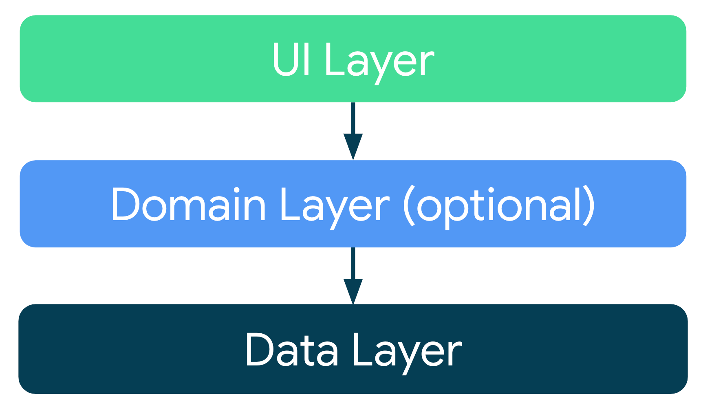
- APP-A 是Android项目，图方便纯kotlin
- APP-B 是 Compose-Desktop项目，不得不kotlin
过于絮叨了，我们进入正文。
从架构的理念出发
谨记，实际情况中，MVI、MVVM这些架构均先由Web应用领域提出，用于解决浏览器Web应用研发中的问题。
在后续的应用领域发展过程中，存在共性问题，便引入了这些设计，并结合自身特点进行了拓展。
接下来我们聊一聊理念，不比武功。
图片出自电影一代宗师
MVI的理念
MVI 脱胎于 Model View Intent
- Intent：驱动model发生改变的意图，以UI中的事件最为常见；
- Model：业务模型，包含数据和逻辑，是对应
客观实体的程序建模； - View：表现层的视图，以UI方式呈现Model的状态（以及事件），接受用户输入，转换为UI事件
官方的这幅图很好的呈现了三者之间的驱动关系：

这张图非常简单，它摒弃了驱动方式的细节，只体现了角色与驱动关系。
注意，只要设计中满足 角色和驱动关系 符合上图，就是MVI架构设计，并不限制 驱动方式的实现细节
经典的MVI驱动细节要比上图复杂很多，下文再聊。
从软件设计的原则出发：职责分离并封装 的目的是 解耦 、 可独立变化、复用。
显然，区别于 MVVM 、 MVP 、 MVC，角色上的差别在于 ViewModel、Presenter、Controller、Intent四者，而它们又是View和Model之间的纽带。除此之外，V和M亦稍有不同。
MVC、MVP
MVC、MVP 中，C和P的职责体现为 控制、调度。
MVP中 V 和 M 完全解耦可独立变化，MVC中 M 直接操作 V 耦合高，在web应用中，C 需要直接操作DOM。
MVVM
MVVM中，提倡 数据驱动， 数据源 被剥离到 VM 中，在 双向绑定框架 的加持下，View层的输入反映为数据的变化，数据的变化驱动视图内容。
显然，VM的职责限于维护数据状态，如有必要，驱动View层消费数据状态， 不必再关注如何操作视图。
一般来说，双向绑定框架已经引入观察者模式实现，可响应式驱动，VM一般没有必要关心 响应式驱动和下游观察者生命周期问题
简单思考之后会发现MVVM的问题，它的侧重点在于 利用双向绑定让开发者专注于数据状态的维护，从操作视图更新中得以解放，它难以解决 无天然状态 问题，例如：按钮点击这类事件。
MVI
在MVI中，结合业务背景将UI事件等内容转换为 Intent ，驱动Model层业务，Model层的业务结果反映为 视图状态 + 事件。
因此View层和Model层之间已经解耦，并可以吸收MVVM中的优点采用如下设计：
- 将双向绑定退化为单向绑定，View层消费UI状态流和事件流，这也意味着UI状态的职责精简，它不再承载View层的用户输入等事件
- 将UI状态独立，Model层仅产生
UI状态的局部变化和事件
下图为经典的MVI原理示意图：
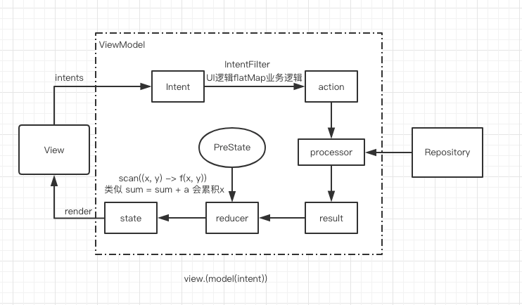
在上文中，我们已经讨论了各个角色的职责，下面逐步展开讨论角色具备的特性和细节知识。
在此之前，还请谨记：合适的才是最好的
没有绝对的最好的设计，只有最合适的设计。
再好的架构，都需要遵循其理念并结合项目因地制宜地进行调整，以获得最佳使用效果。所以请读者诸君务必在阅读时，结合自身项目的情况仔细思考以下问题：
- 引入新框架所解决的痛点、衍生的问题、是否需要进行框架调整？
- 框架中的角色功能，为什么出现，又有怎样的局限？
单向数据流动
MVI拥抱了结构复杂，但能够灵活应对业务编码时的各种情况，按部就班即可。
从MVI原理图中，可以清晰的看到 "数据" 的流动方向。
起始于 Intent，经过分类和选择性消费后产生 Result，对应的reducer函数计算后，得到最新的 State （以及裂变出必要的 Event，图中未体现） ，驱动视图。
注意：
单向是指 单一方向- 此处的
数据是广义的、宽泛的。 - 仅描述数据流的 变化方向 ，与数据流的数量无关，但一般 形成有效工作 均需要两条数据流（上行数据流和下行数据流）
即驱动数据流变化的方向是唯一的，在英文中的术语为：Unidirectional Data Flow 简称 UDF。
MVC、MVP中的痛点
前文我们提到，在MVC和MVP中，着眼于 控制、调度 ，并不强调 数据流 的概念。
View和Model间之间的交互，一般有两种编码风格：双向的API调用、单向的API调用+回调：
注意：以下两图并未体现Controller和Presenter细节，仅表意，从View层出发的API调用和回到View层的UI更新
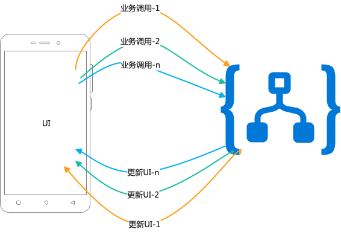
双向API调用如上图。

单向API调用+回调更新UI如上图。
显而易见，这两种方式无法继续抽象，需根据实际业务进行命令式编码。当UI复杂时，难以写出清晰、易读的代码，维护难度激增。
MVVM解决UI更新代码混乱问题
前文我们已经提到：MVVM中通过绑定框架，将UI事件转化为数据变化，驱动业务；业务结果表现为数据变化，驱动UI更新。
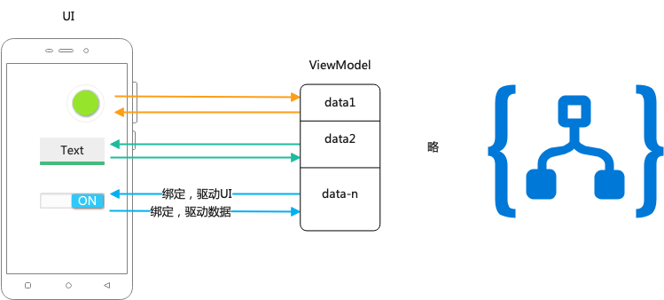
显而易见，维护朴素的数据要比直接维护复杂的UI要简单。
但问题也同时产生，data1的变化有两个可能的原因：
- Model层业务结果使其变化，并期望它驱动UI更新
- View层发生事件，反馈数据变化，并期望它驱动Model层逻辑
因此，框架需要考虑标识数据变化来源、或者其他手段消除方向性所带来的问题。
并且MVVM难以灵活决定的 "何时调用Model层逻辑"，即大多数业务中，都需要结合多个属性的变化形成组合条件来驱动Model层逻辑。
本篇并不重点讨论MVVM，故不再展开MVVM解决循环更新的方案，以及衍生的问题。
尽管如此，MVVM中的数据绑定依旧解决了View层更新繁杂的问题。
用Intent灵活决定何时调用Model
既然数据驱动UI有极大的益处，且View层事件驱动ViewModel的数据变化有很多弊端 （需要建立很高的复杂度） ，那自然需要 趋利避害
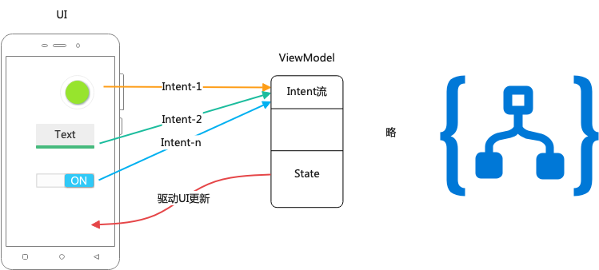
仅保留数据驱动UI的部分，并增加Intent用以驱动Model层业务
在于 MVC/MVP 以及 MVVM 对比后不难得出结论：
- MVC/MVP中，View层通过调用C/P层API的方式最终调用到Model层业务，方式质朴、无难度。但业务量规模增大后接口方法数也会增多，导致C/P层尾大不掉，难以重用。
- MVVM中，VM层总是需要利用
技巧进行模型概念转换，以满足业务响应满足实际需求，需要很深厚的设计经验才能写出非常优秀的代码，这并不友好。
作者按：我个人认为一个友好的设计，不应当剑走偏锋，而应当大巧不工，能够以力破法，达成 "使用者只需要吃透理论就可以解决各类问题" 的目标。
而MVI在架构角色中设计了Intent的角色：
- 它包含了业务调用的意图和数据
- 从设计上可满足
调用与实现的分离 - 架构模型中以Intent流的形式出现，下游对其的
筛选、转换、消费等行为可遵循FP范式（即函数式编程范式、Functional Programming Patterns） ，逻辑的复用粒度为方法级，复用度更高更灵活 - 解决了MVVM中的方向性问题、MVC/MVP 中的灵活度问题等
单一可信数据源
我猜测读者诸君都曾听过这个词，将 单一可信数据源 拆解一下：
- 单一
- 可信
- 数据源
在MVI背景下，数据源 指的是视图对应的数据实体，它代表视图的内容状态。
可信指从数据源中获取的数据是 最新的、完整的、可靠的，否则是不可信的，我们没有理由在编码中使用不可信的数据源。
单一是指这样的数据源仅一个。
在经典设计中，其内涵如下图:

- 按照视图的 所有的 内容状态，定义一个不可变的
ViewState - 按照业务初始化 ViewState 实例
- Model业务生成驱动 ViewState变化的Result
- 计算出新状态，Reduce(Pre-ViewState,Result) -> New-ViewState
- 更新数据源
- View层消费ViewState
借助于数据绑定框架，可以很方便地解决视图更新的问题。
想象一下，此时页面UI非常复杂……
如果僵化的信奉这样的 单一 ，情况会如何呢？
- 复杂（大量属性）的ViewState
- 复杂的UI更新计算，e.g. 100个属性变了2个，依然需要计算98个属性未变或者全量强制更新
在 APP-A和APP-B中，我分别使用了 DataBinding和Compose，但均无法避免该问题。
何为单一
从机器执行程序的原理上看，我们无法实现 多个内容一致的数据源 在 任意时刻 满足 最新的、可靠的。
将视图视为一个整体，规定它只拥有 一个 可信的数据源。在此基础上看局部的视图，它们也顺其自然地仅拥有一个可信的数据源。
反过来看，当任意的局部视图仅具有一个可信数据源时，整体视图也仅有一个逻辑上的可信数据源。
据此，我们可以对 经典MVI实现 进行一定程度的改造，将ViewState进行局部分解，使得UI绑定部分的业务逻辑更 清晰、干净。
请注意，复杂度不会凭空消失，我们为了让 "UI绑定的业务逻辑更清晰、干净"、"更新UI的计算量更少"，将复杂度转移到了ViewState的拆分。拆分后，将具有 多个视图部件的单一可信数据源，注意，为了不引起额外的麻烦、并且便于维护扩展，建议遵守以下条件：
- 基于业务需求，组合数据源形成新数据源
- 不在数据源的逻辑范围之外进行数据源组合操作
举个虚拟的例子：用户需要实名认证 且 关注博主 ，才在界面上显示某功能按钮。下面使用代码分别演示。
考虑到RxJava的广泛度依旧高于Kotlin-Coroutine+flow，数据流的实现采用RxJava
注意，考虑到读者可能会编写demo做UDF局部的验证，下文中的代码以示例目的为主，兼顾编写场景冒烟的方便性，流的类型不一定是构建完整UDF的最佳选择。
经典实现
在经典MVI实现中，需要先定义ViewState
data class ViewState(
/*unique id of current login user*/
val userId: Int,
/*true if the current login user has complete real-name verified*/
val realNameVerified: Boolean,
/*true if the current login user has followed the author*/
val hasFollowAuthor: Boolean
) {
}
并定义ViewModel，创建ViewState流，忽略掉其初始化和其他部分
class VM {
val viewState = BehaviorSubject.create<ViewState>()
//ignore
}
并定义View层，忽略掉其他部分，简单起见暂时不使用数据绑定框架
class View {
private val vm = VM()
lateinit var imgRealNameVerified: ImageView
lateinit var cbHasFollowAuthor: CheckBox
lateinit var someButton: Button
fun onCreate() {
//ignore view initialize
vm.viewState.subscribe {
render(it)
}
}
private fun render(state: ViewState) {
imgRealNameVerified.isVisible = state.realNameVerified
cbHasFollowAuthor.isChecked = state.hasFollowAuthor
someButton.isVisible = state.realNameVerified && state.hasFollowAuthor
//ignore other
}
}
在JS中，JSON并不能附加逻辑，基本等价于Java中的POJO，故在数据源外部处理简单逻辑的情况较为常见。而在Java、Kotlin中可以进行适当的优化，适当封装，使得代码更加干净便于维护：
data class ViewState(
//ignore
) {
fun isSomeFuncEnabled():Boolean = realNameVerified && hasFollowAuthor
}
class View {
//ignore
private fun render(state: ViewState) {
//...
someButton.isVisible = state.isSomeFuncEnabled()
}
}
拆分实现
依旧先定义逻辑上完整的ViewState：
class ComposedViewState(
/*unique id of current login user*/
val userId: Int,
) {
/**
* real-name-verified observable subject,feed true if the current login user has complete real-name verified
* */
val realNameVerified = BehaviorSubject.create<Boolean>()
/**
* follow-author observable subject, feed true if the current login user has followed the author
* */
val hasFollowAuthor = BehaviorSubject.create<Boolean>()
val someFuncEnabled = BehaviorSubject.combineLatest(realNameVerified, hasFollowAuthor) { a, b -> a && b }
}
定义ViewModel，子模块数据流均已定义，故而无需再定义全ViewState的流
class VM(val userId: Int) {
val viewState = ComposedViewState(userId)
//ignore
}
编写View层的UI绑定，同样简单起见，不使用数据绑定框架
class View {
private val vm = VM(1)
lateinit var imgRealNameVerified: ImageView
lateinit var cbHasFollowAuthor: CheckBox
lateinit var someButton: Button
fun onCreate() {
//ignore view initialize
bindViewStateWithUI()
}
private fun bindViewStateWithUI() {
vm.viewState.realNameVerified.subscribe {
renderSection1(it)
}
vm.viewState.hasFollowAuthor.subscribe {
renderSection2(it)
}
vm.viewState.someFuncEnabled.subscribe {
renderSection3(it)
}
//...
}
private fun renderSection1(foo:Boolean) {
imgRealNameVerified.isVisible = foo
}
private fun renderSection2(foo:Boolean) {
cbHasFollowAuthor.isChecked = foo
}
private fun renderSection3(foo:Boolean) {
someButton.isVisible = foo
}
}
例子较为简单，在实际项目中，如果遇到复杂页面，则可以分块进行处理。
注意：实际情况中，并没有必要将每一个子数据源拆分到一个View级别的控件，那样过于啰嗦，例子因非常简单而无法丰满起来。 e.g. 针对每一块视图区，例如作者区域，定义子ViewState类，创建其数据流即可。
作者按：务必评估，在一次Model业务产生的Result中，会引起数据流下游的更新次数。 为避免产生不可预期的问题，可通过类似以下方式，使下游响应次数表现和经典实现的情况一致。
额外定义PartialChange流或者功能等价的流，它用于标识 reduce 计算的开始和结束，可以将此期间的数据流的变化延迟到最后发送终态
更加推荐定义功能上等价的流
class ComposedViewState(
/*unique id of current login user*/
val userId: Int,
) {
internal val changes = BehaviorSubject.create<PartialChange>()
//ignore
val someFuncEnabled =
BehaviorSubject.combineLatest(realNameVerified, hasFollowAuthor) { a, b -> a && b }.sync(PartialChange.Tag, changes)
}
inline fun <reified T, S> Observable<T>.sync(tag: S, sync: BehaviorSubject<S>): Observable<T> {
return BehaviorSubject.combineLatest(this, sync) { source, syncItem ->
if (syncItem == tag) {
syncItem
} else {
source
}
}.filter { it is T }.cast(T::class.java)
}
修改PartialChange，为reduce函数添加边界：
PartialChange是Model产生的Result的表现物，封装了ViewState的reduce函数逻辑，即如何从 Pre-ViewState 生成 新 ViewState
sealed class PartialChange {
open fun reduce(state: ComposedViewState) {
}
/**
* 同步标记，从头开始到真实PartialChange之间，流的状态生效
* */
object Tag : PartialChange()
object None : PartialChange()
class Foo(val a: Boolean, val b: Boolean) : PartialChange() {
override fun reduce(state: ComposedViewState) {
state.changes.onNext(Tag)
state.realNameVerified.onNext(a)
state.hasFollowAuthor.onNext(b)
state.changes.onNext(this)
}
}
}
要想优雅，需要工具
采用响应式流，避免命令式编码
想来这一点已不需要多做解释。
在Android中，存在 LiveData 组件，它通过简单的方式封装了可观测的数据，但实现方式简单也限制了它的功能 不够强大 。因此，建议使用 RxJava 或者 Kotlin-Coroutine & flow 构建数据流。
本节便不再展开。
采用数据绑定框架
采用 jetpack-compose 或者 DataBinding 均可以移除枯燥的UI命令式逻辑，在APP-A中我使用了DataBinding，在APP-B中我使用了Compose。
在 ViewState的代码很棒时，均可以获得优秀的编程体验，从啰嗦的UI中解放出来。
作者的个人观点:
关于Compose。Compose依旧属于较新的事物，在商业项目中使用存在学习门槛和造轮工作。在目标用户具有较高容忍度的情况下，已然可以进行尝试。
关于DataBinding。一个近乎毁誉参半的工具，关于它的批判，大多集中于：xml中实现的逻辑难以阅读、维护，这实际上是对DataBinding设计的误解而带来的错误使用。
DataBinding本身具有生成VM层的功能，但这一功能并不足够强大，且没有完善的使用指导，而在官方Demo中过度宣传了它，导致大家认为DataBinding就该这样使用。
仅使用基础的数据绑定功能、和Resource或者Context有关的功能（例如字符串模板）、组件生命周期绑定等，适度自定义绑定。
何为状态、何为事件。最后的一公里
首先区别于上文提到的UI事件，这里的状态和事件均产生于数据流的末段，而UI事件处于数据流的首段。
UI事件属于：A possible action that the user can perform that is monitored by an application or the operating system (event listener). When an event occurs an event handler is called which performs a specific task
在展开之前，先用一张图回顾总结上文中对于 单向数据流 & 单一可信数据源 的知识
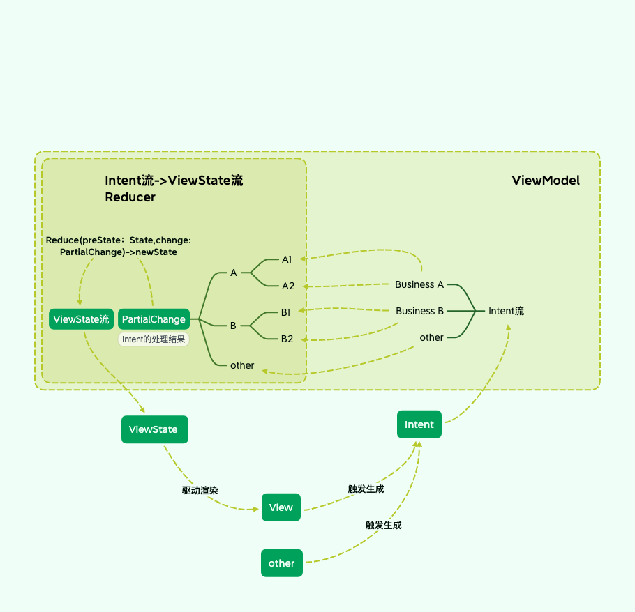
在 单向数据流动 章节中，提到了MVI的UDF设计：
- 系统捕获的UI事件、其他侦听事件（例如熄屏、应用生命周期事件），生成Intent，压入Intent流中
- ViewModel层中筛选、转换、处理Intent，实际是使用Model层业务，产生业务结果，即PartialChange
- PartialChange经过Reducer计算处理得到最新的ViewState，压入ViewState流
- View层（广义的表现层）响应并呈现最新的ViewState
在 单一可信数据源 章节中，提到View层应当采用 单一可信数据源
在这张图中，我们仅体现了 状态 即 ViewState。
关于GUI程序的认知
在展开前，先聊点理念上的内容。请读者诸君思考下自己对于GUI程序的认知。
作者的理解：
程序狭义上是计算机能识别和执行的一组指令集，编程工作是在程序世界对
客观实体、业务逻辑进行 建模和逻辑表达。而GUI程序拥有
用户图形界面, 除了结合硬件接收用户交互输入外，可以将程序世界中的模型以用户图形界面等方式表现给用户。表现出来的内容代表着客观实体
其本质目的在于：通过 描述特征属性 、 描述变化过程 等方式让用户感知并理解
客观实体
而除了通过 程序语言描述 、 程序世界模拟展现 外，同样可以通过 自然语言描述 达到目的，这也是产品经理的工作。
当然，产品经理往往需要借助一些工具来提升自己的自然语言表达能力，但无奈的是能用数学公式和逻辑推演表达需求的产品经理太少见了。
写这段只是为了引入 他山之石 。
First-Order logic
在数学、哲学、语言学、计算机科学中，有一个概念 First-Order logic，无论是产品需求还是计算机程序，都可以建立FOL表达。
当然，本篇不讨论FOL，那是一个很庞大且偏离主题的事情。我仅仅是想借用其中的概念。
FOL表达 Event或者State时：
- Event 体现的是特定的变化
- State 体现的是客观实体在任意时刻都适用的一组情况，即一段时间内无变化的条件或者特征
不难理解，变化是瞬时的，连续的变化是可分的。
但在人机交互中，瞬时意义很小，我们的目的在于让用户感知。
例如："好友向你发送了一条消息的场景中"，消息抵达就是Event，它背后潜藏着 "消息数的变化"、"最新消息内容的变化" 等。 在常见的设计中:
- 应用需要弹出一个气泡通知用户这一事件
- 应用需要更新消息数，消息列表内容等，以呈现出最新的State
而为了让用户感知到，气泡呈现时长并不是瞬时的，但在产品交互设计中依旧将其定义为事件。
分离状态和事件，不是吃饱撑得
看山是山、看水是水
此时此刻，答案已经很明显。
在通用的产品设计中，状态和事件有不同的意义，如果程序中不分离出两者，则必然是自找麻烦，这是公然挑衅 面向对象编程 的行为。如果不明确定义不同的Class，则势必导致代码混乱不堪，毕竟这是违背编程原则的事情。
在大多MVVM设计中，状态和事件未分家，导致bug丛生，这一点便不再展开。
如何区分Event和State
State是一段时间内无变化的条件或者特征，它天然的 契合 了位于表现层的主体内容所对应的 数据模型特征。
Event是特定的变化，它在表现层体现，但与State的生命周期不一致，且并无一一对应的关系。
基于经验主义，我们可以机械地、笼统地认为：页面主体静态内容所需要的数据属于State范畴，气泡提醒等短暂的物体所需要的数据属于Event范畴。
从逻辑推演的角度出发，进行 等价逻辑推断 和 条件限定下的逻辑推断 ，一定序列的Event可以模型转换为State。
事件粘性导致重复？只是框架设计的bug
看山不是山，看水不是水
前面提到，State是一段时间内无变化的条件或者特征，所以在程序设计中State具有粘性的特征。
如果Event也设计出这样的粘性特征并造成重复消费，明显是违背需求的，无疑是框架设计的Bug。此问题在各大论坛中很常见。
注意，我们无法脱离实际需求去二元化的讨论事件本身该不该有粘性特征，只能结合实际讨论框架功能是否存在bug
如果要实现以力破法，在框架设计层面上 Event体系的设计要比State体系要复杂 。因为从交互设计上：
- State 只需要考虑呈现的准确性和及时性，除去美观、可理解性等等
- Event 需要考虑准确性、优先级、及时性、按条件丢弃等等，除去美观、可理解性等等
举个例子：网络连接问题导致的Web-API调用失败需要使用Toast提示网络连接失败
不难想象：
- 可能一瞬间的断开网络连接，会导致多个连接均返回失败
- 可能连接问题未修复，10秒前请求失败，当前请求又失败了
难道连续弹出吗？难道和上一次Event一致就不消费吗？...
或许您会使用一些 剑走偏锋的技巧 来解决问题，但技巧总是建立在特定条件下生效的，一旦条件发生变化，就会带来烦恼，您很难控制上游的PM和交互设计师。
所以在框架层面需要针对产品、交互设计的泛化理念，设计准确的、灵活的Event体系。
准确的、灵活的Event体系
看山还是山，看水还是水
回到FOL中，为了更加准确的表达Event和State的含义，还需要一些额外的参数，例如：参与者、地点、时间 等。
想通这一点会发现，产品中定义的Event事件、及其消费逻辑均含有隐藏属性，例如：
- 发生时间
- 客观有效期
- 判断有效的条件（如呈现的条件）
- 判断失效的条件 ，用于实现提前失效
产品经理和交互设计师一般会使用 "响应时间"、"优先级" 等词描述它们，但一般不严谨、不成体系，带来期望不一致的问题
反观State流，它代表了界面主体内容在时间轴上的完整变化，任意一个时间点均可以得出界面内容所对应的条件和特征。一旦State流中出现一个新的状态，它均被及时的、准确的在表现层予以体现。
不难理解，一个State的生命周期为 从init或者reducer计算生成开始 至 reducer计算出新State、宿主生命期结束为止，在State流中已然暗含：
- State之间无生命周期重叠
- 所有State的生命周期相加可填满时间轴
前文提到Event是瞬时的，所以Event本身并没有实质意义上的生命周期，为了方便表述，我们将 "Event从生成到在表现层不可观测的阶段" 定义为Event生命周期
而Event流 不同于 State流 ，因为Event的生命周期情况更加复杂：
- Event可能存在生命周期重叠
- 所有Event的生命周期相加可能无法覆盖完整的时间轴
需要额外设计实现 。实现这一点后，从Event流中分流（以及裂变+组合）出的 子流 将和State流 性质一致。
此刻，您会发现，根据不同类型的事件交互控件所对应的交互特征，又将Event流结合条件流衍生出各个State流。完整的数据流细节如下：

作者按：在图中省略了Event分流转变为子State流的过程，因为它需要遵循特定产品交互机制
结语
这篇文章，从5月计划写，到6月动笔，断断续续，草稿写了很长，几经删改依旧留有很长的篇幅，虽已竭力尽智，但任觉文字上有表意未通透之处，欢迎在评论区讨论。
Review | 这三个坑你遇到了吗？
前言
6-7月的事情着实有点多。没有清风亦没有鲜花，连蝉都热到燥不动了，人自然也变得慵懒了许多。
月头计划和诸君探讨下Compose（Compose-Desktop）和MVI实际投产后的感受，眼看即将到月底，低头看着才写一半的草稿，沉默良久，大抵这个月是没有希望成稿了。
终究，只能挑一些最近遇到的问题写一写，欺骗自己还未曾摆烂。
Android R、S中的外部文件管理权限
想来是舒适太久了，目前负责的核心项目均是面向特定Android-Pad开发的，在
Android 9已经躺了一年，已经快忘记了适配这一祖传包袱。但还有部分即将推出的项目是面向普通用户的，顺便谈一谈这个
老问题
在 Android 10 中提出了分区存储，对于外部存储空间的读写，除了需要处理FileProvider外，还需要配置 requestLegacyExternalStorage 。
在 Android R、S 中，进行了更严格的限制，需要获取完整的外部存储控制权限。
作者按：笔者负责的项目受技术之外因素的影响，改变现有的文件存储路径的阻力非常大
判断与申请完全的控制权限
补充声明权限
<uses-permission android:name="android.permission.MANAGE_EXTERNAL_STORAGE"/>
那么，相关权限如下：
<uses-permission android:name="android.permission.WRITE_EXTERNAL_STORAGE"/>
<uses-permission android:name="android.permission.READ_EXTERNAL_STORAGE"/>
<uses-permission android:name="android.permission.MANAGE_EXTERNAL_STORAGE"/>
并且需要运行时动态获取权限，关键代码如下：
if (Build.VERSION.SDK_INT >= Build.VERSION_CODES.R) {
if (!Environment.isExternalStorageManager()) {
//略去引导弹窗等相关交互逻辑
startActivityForResult(Intent(Settings.ACTION_MANAGE_ALL_FILES_ACCESS_PERMISSION), REQ_CODE_FILE_MANAGE)
return
}
}
// do something
可以结合 ActivityResultContracts 改造 onActivityResult，不再赘述。
用户对软件授予权限后可读写文件。
如何快速改造
随着Compose跨平台技术越来越热，将应用的业务在多个平台上复用也越发有价值，而平台的差异性内容应当在平台内部解决。
那么 如何在不修改Presenter/ViewModel 和 Model层的前提下，便捷的解决此类适配问题 越发具有价值。
当然，此类问题的解决不能脱离实际空谈，便不做具体展开。目前在项目中先运用了 Proxy 方式，对业务层追加了前置逻辑，进行了简单处理。
我已经设想了一个框架，并非PermissionX之类处理Android动态权限的框架，有后续实质进展后再与诸君分享。
蓝牙居然搜索不到设备
如果直接适配Android 12，大概率不会出现该问题（未经过大量rom验证），target是低版本，以往的业务代码不到位就有可能受到影响
未适配Android 12 蓝牙权限的应用，在部分手机上发现未打开 "访问我的位置信息" 时（不是定位权限！！），会导致搜索不到蓝牙设备。大抵是ROM厂商的杰作。
参考地图类SDK的操作，增加以下检测代码：
LocationManager locationManager = (LocationManager) context.getSystemService(Context.LOCATION_SERVICE);
if (!locationManager.isProviderEnabled(LocationManager.GPS_PROVIDER)) {
//引导用户开启定位：Intent(Settings.ACTION_LOCATION_SOURCE_SETTINGS)
}
在 target Android12 中：
- 请求精确位置，需同时申请 ACCESS_FINE_LOCATION 和 ACCESS_COARSE_LOCATION 权限
- （动态）申请蓝牙相关权限时，不再需要申请设备位置信息相关权限
理论上不需要再加这一检测，但仍需经过大量ROM测试。建议保留该段检测逻辑。
一个高star库中的I/O和多线程的综合性问题
前几日和好友闲聊时，好友提到他们的项目中使用了一个开源的下载库 Aria，但时不时会出现下载图片失败的问题，实质是库的bug。
阅读源码后感到问题出在细节知识上，本篇也需要水一下字数，索性拿来讨论一二。
库中运用到的技术:
- 多线程&锁
- IO
- Android的Handler
其中，多线程和锁的知识本篇不谈，我亦写有相关系列；库作者使用Android中的Handler简化多线程间的通信，也不再展开；IO部分系统展开也很长，我已有系列文章计划，本篇结合问题简单谈一谈。
和文件服务器对比，移动端的文件上传下载并发量很小，其速度制约一般在于：服务器单连接流量限制，网络条件。
对于单个文件采用多线程方式上传、下载，只能突破 单连接流量限制，以充分使用网络资源。多个文件并行上下载的产品意义远大于充分吃掉网络带宽资源。
注意：上下载的高带宽占用一定程度上会影响其他网络层业务
一般对于下载而言，使用多线程时用常规的 "碎文件合并" 的思路即可。用 RandomAccessFile并不是一个好主意。
多线程写RandomAccessFile并非一件很美好的事情，以后的文章中细聊
在使用Java经典IO时，使用Buffer减少IO次数可以获得很好的性能提升，需要注意及时 flush，该库中用Buffer设计对 RandomAccessFile 进行了一层封装。想来也是源自三方库.
将部分代码简化后类似如下代码：
class Demo {
@Test
fun mockDownload() {
Looper.prepare()
val appContext = InstrumentationRegistry.getInstrumentation().targetContext
val file = File(appContext.cacheDir, "testtmp")
if (file.exists()) {
file.delete()
}
file.createNewFile()
assertEquals(0, file.length())
val data = "hello".encodeToByteArray()
val bFile = BufferedRandomAccessFile(file, "rwd", 1024)
val handler = object : Handler(Looper.myLooper()) {
override fun handleMessage(msg: Message?) {
super.handleMessage(msg)
//模拟文件合并线程，仅断言文件大小
if (msg?.what == 1) {
assertEquals(data.size.toLong(), file.length())
Looper.myLooper()?.quit()
}
}
}
//模拟下载线程
thread(priority = 1) {
val ins = ByteArrayInputStream(data)
try {
val buffer = ByteArray(1024)
var len: Int
while (ins.read(buffer).also { len = it } != -1) {
bFile.write(buffer, 0, len)
}
//模拟下载完成消息
handler.sendEmptyMessage(1)
// Thread.yield() -- 模拟一下线程被切换或者因为锁导致的同步
} finally {
ins.close()
// bFile.flush() will be invoked in close
bFile.close()
}
}
Looper.loop()
}
}
观察这段代码可以发现，存在不安全因素：最后一个buffer块的内容大小未必是1024，需等到 bFile.close()时方可写入文件。
虽然 handler.sendEmptyMessage(1) 发送的消息会被异步执行，但并不意味着 bFile.close() 一定会先执行。锁、AQS、系统线程调度等均可能会导致该问题。
后记
很无耻的水了一篇文章。惭愧惭愧。实在不想在迈过30的第一天就突破 每月发一章博客 的底线，见谅见谅。
最近除了在编写几篇有技术深度的博客外，还筹划写点 技术之外 和诸君一同探讨 如何在工作中成功 ，有进展了再向诸位汇报。
repo
个人开源项目，以及有趣的方案分享
DaVinCi （达·芬奇）
是什么
在Android上取代xml方式定义 Shape/GradientDrawable 以及 ColorStateList的方案。
- 支持在
Java/Kotlin 业务代码中使用 - 配合
DataBinding可以在XML布局文件中使用
几篇相关拙作：
- 实现原理解析，详见拙作：好玩系列：拥有它，XML文件少一半--更方便的处理View背景
- 关于注解处理器（ksp实现）以及实现的核心目标，详见拙作： 好玩系列 | 拥抱Kotlin Symbol Processing(KSP),项目实战
为何会产生这一想法
出于多方面原因，使用XML定义 shape资源， gradient drawable 资源 ， color state list 资源 太麻烦了。诸如：
- xml本身很啰嗦
- 命名是一件很麻烦的事情（数量达到一定规模后管理也很麻烦）
- 很多样式
复用度并不高 - UI在高强度模式下也难以做到
对每个样式都规范化管理 - 切换一个文件打断思路的成本太高 等等
所以我产生了这一想法：
- 建立Builder机制构建这些资源 （构建变得简单且灵活）
- 基于纯文本化的DSL，描述这些资源，并利用Builder进行构建（方便向皮肤包过渡，或者任何基于配置的形式运行）
- 建立OO封装，让构建更加简单
实现原理解析
详见拙作：好玩系列：拥有它，XML文件少一半--更方便的处理View背景
如何使用
添加MavenCentral仓库声明
//{project root}/build.gradle
subprojects {
repositories {
mavenCentral()
//...
}
}
声明依赖
以下是包依赖信息
/*
* 注解，用于Style类注解或者StyleFactory类注解，以及预览时的可选配置注解
* */
const val annotation = "io.github.leobert-lan:davinci-anno:0.0.2"
/*
* 注解处理器，支持ksp或者kapt或者annotationProcessor
* */
const val ksp = "io.github.leobert-lan:davinci-anno-ksp:0.0.2"
/*
* 核心包
* */
const val api = "io.github.leobert-lan:davinci:0.0.5"
/*
* 如果要预览style定义，利用debugImplementation 声明
* */
const val viewer = "io.github.leobert-lan:davinci-style-viewer:0.0.1"
关于注解处理器（ksp实现）以及实现的核心目标，详见拙作： 好玩系列 | 拥抱Kotlin Symbol Processing(KSP),项目实战
使用注解处理器简化Style注册时，需要配置参数：
kapt {
arguments {
arg("daVinCi.verbose", "true") //日志
arg("daVinCi.pkg", "com.example.simpletest") //生成类包名
arg("daVinCi.module", "App") //生成类的前缀
arg("daVinCi.preview", "true") //生成预览配置的注入代码
}
}
下面会展开这几个部分：
- 构建一个Shape 和诸多API
- 构建一个ColorStateList 和诸多API
- 在XML中使用DaVinCi
- 定义Style，及其初始化方式以及使用方式
- 预览Style
构建一个Shape
DaVinCiExpression.shape(): Shape
指定Shape的类型，
一般常用的是rectAngle 和 oval
fun rectAngle(): Shape
fun oval(): Shape
fun ring(): Shape
fun line(): Shape
rectAngle时的圆角：
fun corner(@Px r: Int): Shape
fun corner(str: String): Shape
fun corners(@Px lt: Int, @Px rt: Int, @Px rb: Int, @Px lb: Int): Shape
尺寸均可以 "xdp" 表达dp值，如"3dp"即为 3个dp，"3"则为3个px。
填充色：
fun solid(str: String): Shape //色值 "#ffffffff" 或者 "rc/颜色资源名"
fun solid(@ColorInt color: Int): Shape
描边：
fun stroke(width: String, color: String): Shape
fun stroke(width: String, color: String, dashGap: String, dashWidth: String): Shape
fun stroke(@Px width: Int, @ColorInt colorInt: Int): Shape
渐变：
fun gradient(
type: String = Gradient.TYPE_LINEAR,
@ColorInt startColor: Int,
@ColorInt endColor: Int,
angle: Int = 0
): Shape
fun gradient(
type: String = Gradient.TYPE_LINEAR, @ColorInt startColor: Int,
@ColorInt centerColor: Int?, @ColorInt endColor: Int,
centerX: Float,
centerY: Float,
angle: Int = 0
): Shape
fun gradient(startColor: String, endColor: String, angle: Int): Shape
fun gradient(type: String = Gradient.TYPE_LINEAR, startColor: String, endColor: String, angle: Int = 0): Shape
fun gradient(
type: String = Gradient.TYPE_LINEAR,
startColor: String,
centerColor: String?,
endColor: String,
centerX: Float,
centerY: Float,
angle: Int
): Shape
设置View的背景
@BindingAdapter(
"daVinCi_bg", "daVinCi_bg_pressed", "daVinCi_bg_unpressed",
"daVinCi_bg_checkable", "daVinCi_bg_uncheckable", "daVinCi_bg_checked", "daVinCi_bg_unchecked",
requireAll = false
)
fun View.daVinCi(
normal: DaVinCiExpression? = null,
pressed: DaVinCiExpression? = null, unpressed: DaVinCiExpression? = null,
checkable: DaVinCiExpression? = null, uncheckable: DaVinCiExpression? = null,
checked: DaVinCiExpression? = null, unchecked: DaVinCiExpression? = null
)
构建一个ColorStateList
DaVinCiExpression.stateColor(): ColorStateList
设置状态色
class ColorStateList {
fun apply(state: State, color: String): ColorStateList
fun apply(state: String, color: String): ColorStateList
fun apply(state: State, @ColorInt color: Int): ColorStateList
}
示例：
DaVinCiExpression.stateColor().apply(
state = State.STATE_PRESSED_TRUE, color = Color.parseColor("#00aa00")
).apply(
state = State.STATE_PRESSED_FALSE, color = Color.parseColor("#667700")
).apply(
state = State.STATE_CHECKED_TRUE.name, color = "#ff0000"
).apply(
state = State.STATE_CHECKED_FALSE, color = "#000000"
)
.let {
binding.cb1.daVinCiColor(it)
}
应用颜色：
@BindingAdapter("daVinCiTextColor")
fun TextView.daVinCiColor(expressions: DaVinCiExpression.ColorStateList)
在XML中使用
<layout>
<data>
<import type="osp.leobert.android.davinci.DaVinCiExpression"/>
</data>
<LinearLayout
daVinCi_bg="@{DaVinCiExpression.shape().solid(`#eaeaea`)}"
/>
</layout>
更多 参考Demo
定义Style
当部分样式复用度较高时，我们可以定义Style，以减少创建过程
@DaVinCiStyle(styleName = "btn_style.main")
@StyleViewer(
height = 40, width = ViewGroup.LayoutParams.MATCH_PARENT,
type = StyleViewer.FLAG_CSL or StyleViewer.FLAG_BG, background = "#ffffff"
)
class DemoStyle : StyleRegistry.Style("btn_style.main") {
init {
this.register(
state = State.STATE_ENABLE_FALSE,
expression = DaVinCiExpression.shape().rectAngle().solid("#80ff3c08").corner("10dp")
).register(
state = State.STATE_ENABLE_TRUE,
expression = DaVinCiExpression.shape().rectAngle().corner("10dp")
.gradient("#ff3c08", "#ff653c", 0)
).registerCsl(
exp = DaVinCiExpression.stateColor().apply(
state = State.STATE_ENABLE_FALSE,
color = "#ffffff"
).apply(
state = State.STATE_ENABLE_TRUE,
color = "#333333"
)
)
}
}
或者利用Factory延迟创建过程
@DaVinCiStyleFactory(styleName = "btn_style.main")
class DemoStyleFactory : StyleRegistry.Style.Factory() {
override val styleName: String = "btn_style.main"
override fun apply(style: StyleRegistry.Style) {
style.register(
state = State.STATE_ENABLE_FALSE,
expression = DaVinCiExpression.shape().rectAngle().solid("#80ff3c08").corner("10dp")
).register(
state = State.STATE_ENABLE_TRUE,
expression = DaVinCiExpression.shape().rectAngle().corner("10dp")
.gradient("#ff3c08", "#ff653c", 0)
)
}
}
进行初始化
class MainApplication : Application() {
override fun onCreate() {
super.onCreate()
AppDaVinCiStyles.register()
//不对预览进行额外配置可忽略
AppDaVinCiStylePreviewInjector.register()
//如果不使用注解，则需要手动罗列注入，数量多了后，非常啰嗦 ：
//StyleRegistry.registerFactory(DemoStyleFactory())
}
}
使用Style
@BindingAdapter("daVinCiBgStyle")
fun View.daVinCiBgStyle(styleName: String) {
with(StyleRegistry.find(styleName)) {
this?.applyTo(
DaVinCi(null, this@daVinCiBgStyle)
)
?: Log.d(DaVinCiExpression.sLogTag, "could not found style with name $styleName")
}
}
<TextView
daVinCiBgStyle="@{`btn_style.main`}"/>
如果将style定义下沉到Module，则可以使用生成的名称常量
目前0.0.5版本扩展了较多功能编码仓促，部分API名称不恰当，会逐步新增，使得API名称和功能更加贴切
预览Style
如果在AS中扩展预览功能，那么需要付出太多的工作量。于是采用了取巧的方式
一旦添加了 "io.github.leobert-lan:davinci-style-viewer:0.0.1" 库，则会包含一个Activity，展示所有已注册的样式。
例如：

很显然，条目第一行是样式名，第二行是预览区，第三行是Check和Enable的设置，更多设置将会逐步开放。
利用注解可以进行一定的配置：
public annotation class StyleViewer(
val height: Int = 48,
val width: Int = -1 /*android.view.ViewGroup.LayoutParams.MATCH_PARENT = -1*/,
val background: String = "#ffffff",
val type: Int = FLAG_BG or FLAG_CSL,
) {
public companion object {
public const val FLAG_BG: Int = 1 shl 0
public const val FLAG_CSL: Int = 1 shl 1
}
}
- 设置宽高，单位dp，
- 预览区背景为白色，如果和样式比较贴近，可以设置背景区颜色
- 如果是明确的背景样式，且尺寸较小时，可以设置type为 FLAG_BG，移除文字显示
以后的工作
- 继续添加更加方便的API
- 扩展DSL
- 优化在Java/Kotlin 代码中使用DaVinCi的简便性
- 内部功能进一步解耦 如果有必要 ， 可迁移到其他
- 优化预览
- 更多模态状态设置
- 搜索 如果有必要
- 分组 如果有必要
如果你觉得DaVinCi很有趣，不妨点个Star，欢迎一起交流想法。
好玩系列：白嫖一个优雅的类图生成工具
前言
首先必须声明，这不是一篇广告或者标题党。 而是我开源了一个工具，可以优雅的为Java or Kotlin 项目生成 Class Diagram。
我推测列为读者会进来阅读，原因无非以下两点：
- 获得一个生成类图的工具，并通过文章快速了解是否
方便且好用 - 了解一下我是如何折腾的
仅关心如何使用的，可以移步 使用示例
我们将按照下面的脑图顺时针展开，揭开这一工具的诞生过程

主要问题与方案
背景
背景：笔者今年换了份工作，所在的公司属于
医疗器械下的细分领域，而相比于纯互联网行业领域，医疗器械领域所属的配套软件， 都有明确的文档要求，并非可有可无，而且公司管理层比较重视细节（核心产品为颅内、体内植入的医疗器械，确实需要非常认真仔细）。
毋庸置疑，准确的 、关键的 算法流程图，时序图，组件图，状态图，类图等， 对于产品本身的维护及发展具有很大帮助！
对于研发工作者而言，高度概括流程、设计、算法等的专业工具图对工作有极大帮助。既然需要审核的文档中也需要这些内容，又对工作有帮助，何不做的好一些呢。
上文提到的各类UML图中， 类图 Class-Diagram 是非常特殊的, 它表述的是 类之间的关系 ，基于源码文件分析可以得出准确的结果。
而 流程图 、时序图 、状态图 、 组件图 等则不行。
问题
随着行业的发展，软件开发也演变为 以迭代的方式，依次实现最重要的功能，持续性交付，顺其自然的，我们已经不再像几十年前的前辈们那样：代码未动，文档与UML图先行。
一般概要设计后，方案可行便进行编码了。
根据我的实际情况，复杂的功能一般在草稿纸上画画草图，简单的就脑子里想想，难以留下存档
在这一工作模式下，笔者也遇到了一些问题：
- 业务迭代后或者代码改进后，文档（uml图）未及时更新
- 手动维护耗时耗力
如果这件事情可以交给机器来做，那显然是极好的！而让机器维护类图是最容易实现的！
综上所述：我们需要一款工具或者插件，可以直接基于源码生成类图 （或者中间产物，例如：plant-uml文件） ，能够配合其他工具链，直接进行归档。
当然，最重要是免费， 这省去了说服公司进行购买
留有类图的好处：
- 方便向他人介绍业务和代码
- 项目庞大或者复杂时，更容易找到需求对应的关注点，重新维护时日久远的业务时，状态来的快
- 图比代码亲切而且保护隐私🤣
解决方案
众所周知，Intellij-Idea的官方插件可以分析出类图，但是Idea是收费软件，付费支持官方插件是一个省时省力的方案，这是个兜底方案。最终没辙时，我们再考虑它。
编码时分析
仿照官方插件的思路，基于源码文档树进行分析，在Intellij的支持下，基于 PSI和uast 即可分析出类之间的关系。这需要一定的PSI、uast知识基础。
编译时分析
在整个编译环节中，有一些切面应对特定问题，例如："注解处理" 、 "Gradle Transformer" ，在此切面处，我们可以基于编译中间产物，间接分析出类之间的关系。
最简单的是 注解处理阶段 介入，这只需要对 Element 和 TypeMirror 有一定的知识基础即可。
运行时反射分析
显然这不是一个太好的切入点，直接pass。
考虑到PSI方面的知识体系掌握地不太完善，Intellij跨越大版本时，会有较大变更， 而注解处理方面的知识还过的了关，搞个类图生成问题不大。
PS: AndroidStudio 基于Intellij核心二次开发，PSI插件跟随Idea大版本进行适配；
所以最终方案为：从注解处理阶段入手，分析编译中间产物，最终生成类图
问题分治与解决
分治1 -- 简化输出产物
确定了大方向之后，我们需要再思考下整个问题的方方面面。生成类图有两大问题需要解决：
- 从
源码、或者编译的中间产物中分析出类关系； ps:我们已经确定了要从编译中间产物出发 - 将类关系转变为图
显然，"开发一个用来生成图的引擎"，这件事情成本过大且没有必要。所幸的是，UML不是一个新生物，业内也有大名鼎鼎的PlantUml。
PlantUml 基于 Graphviz ， Graphviz 本身使用Dot语法描述元素与元素关系， 直接使用 Graphviz 比较朴素，PlantUml通过自定义语法，使得内容可阅读性提升，且无须关注转换图片时进行各类装饰问题
于是，我们可以将问题转化为：从编译的中间产物中分析出类关系，将关系按照PlantUml语法生成puml文件，它的内容是纯文本。
分治2 -- 确定分析的起始点
如果从最终结果看，我们得到的是一个 有方向的图，那么 按照图本身的起始点出发 比较符合习惯。
也就是说，我们将在起始点所对应的类上添加注解，作为注解处理的目标起始点
例如：
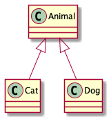
Cat 和 Dog 将作为起始点。
因为只需要标记类，我们约定注解：
@Target(AnnotationTarget.CLASS)
annotation class GenerateClassDiagram {}
在代码上，将表现为：
class Animal
@GenerateClassDiagram
class Dog : Animal()
@GenerateClassDiagram
class Cat : Animal()
在示例中，当我们处理 GenerateClassDiagram 时，可以扫描获得 Cat 以及 Dog 类对应的
javax.lang.model.element.Element 示例，下文简称 Element
几点可能存在的疑惑:
- 为何不 "双向" 分析：继承和实现关系，双向分析会带来额外的复杂度，且在使用上规则不清晰，依赖关系难以双向分析。 但是，如果使用规则上可以做到清晰明了，这一点值得实现
- 为何不标注在Animal上，进行反向分析： 如果高层级的类在库包中，则需要修改库包，这不利于日常管理与维护
- 如果只标注了Cat而没有标注Dog，Dog将不会体现在图中？：是的
- 如果全部标注了，是否产生不良影响 ：不会，但是没有必要
分治3 -- 确定关系的分析方法
继承&实现
因为注解的标记对象是类 或者接口，我们理应得到 TypeElement，基于 Element 的访问者模式实现，这一点并不难。
public interface TypeElement extends Element, Parameterizable, QualifiedNameable {
TypeMirror getSuperclass();
List<? extends TypeMirror> getInterfaces();
//其他无关代码略去
}
不言自明，我们可以通过 TypeMirror getSuperclass(); 得到继承关系，通过 List<? extends TypeMirror> getInterfaces(); 得到实现关系
注意，此处可以细分，接口和枚举仅需要分析实现关系即可，通过
Element#getKind():ElementKind可以判断类型
依赖&关联&聚合&组合
这四个关系非常的类似但又不同，先降低复杂度，均认为是依赖关系，在后续迭代中，可以进一步增加功能，将关系细化
进一步降低复杂度，我们仅从类的属性出发，分析依赖关系，忽略掉 方法声明 (可分析)、方法体 (无法分析) 、静态块 (无法分析) 中 所包含的关系。
public interface TypeElement extends Element, Parameterizable, QualifiedNameable {
List<? extends Element> getEnclosedElements();
//无关代码略去
}
不言自明，通过这一API，配合 ElementFilter#fieldsIn(Iterable<? extends Element>):List<VariableElement> 可以得到声明的 fields；
通过Element的API可以很轻易的得到 命名 以及 修饰；
通过 Element#asType():TypeMirror API 将其转换为TypeMirror后， 基于其Visitor模式设计可以得到field的类型 DeclaredType 并通过
DeclaredType#asElement():Element API重新得到Element
分治4 -- 确定分析的终点
在分治2中，我们已经确定了分析的起点 (可能有多个) ， 在分治3中，我们已经确定了关系的分析方式。为了方便表述，我们以：
Relation(From,End) 表述 从From 到 End 的关系
执行一轮 分治2&分治3，我们将得到一系列的 Relation(From,End)，此时我们将所有的 End 作为 新的From，不断迭代这一过程，即可完成图的遍历！
那么合适结束这一过程呢？
我们只需要维护一个集合 Sfrom，存储迭代过程中的 From ，每次得到的 End 只有满足 "不存在于Sfrom中" 这一条件时，才是 新的From，当无法获得
新的From 时，迭代结束
分治5 -- 分治3的补充，处理集合、数组、泛型
按照分治3中的约定，我们将集合、数组涉及的类型，以及泛型去泛化时的类型，都认为和当前类型是 依赖关系；虽然这并不严谨
得益于 TypeMirror 的 Visitor模式 实现，我们很容易写出以下代码，获取我们关心的内容！
private abstract class CastingTypeVisitor<T> constructor(private val label: String) :
SimpleTypeVisitor6<T, Void?>() {
override fun defaultAction(e: TypeMirror, v: Void?): T {
throw IllegalArgumentException("$e does not represent a $label")
}
}
private class FetchClassTypeVisitor : CastingTypeVisitor<List<DeclaredType>>(label = "") {
override fun defaultAction(e: TypeMirror, v: Void?): List<DeclaredType> {
//ignore it
return emptyList()
}
override fun visitArray(t: ArrayType, p: Void?): List<DeclaredType> {
return t.componentType.accept(this, p)
}
override fun visitWildcard(t: WildcardType, p: Void?): List<DeclaredType> {
val ret = arrayListOf<DeclaredType>()
t.superBound?.let {
ret.addAll(it.accept(this, p))
}
t.extendsBound?.let {
ret.addAll(it.accept(this, p))
}
return ret
}
override fun visitDeclared(t: DeclaredType, p: Void?): List<DeclaredType> {
val ret = arrayListOf(t)
t.typeArguments?.forEach {
ret.addAll(it.accept(this, p))
}
return ret.toSet().toList()
}
override fun visitError(t: ErrorType, p: Void?): List<DeclaredType> {
return visitDeclared(t, p)
}
override fun visitTypeVariable(t: TypeVariable, p: Void?): List<DeclaredType> {
val ret = arrayListOf<DeclaredType>()
t.lowerBound?.let {
ret.addAll(it.accept(this, p))
}
t.upperBound?.let {
ret.addAll(it.accept(this, p))
}
return ret
}
}
fun TypeMirror.fetchDeclaredType(): List<DeclaredType> {
return this.accept(FetchClassTypeVisitor(), null)
}
分治6 -- 关系的存储
显然，我们需要一个合适的数据结构用以存储图，得益于我去年在 组件化：组件的按序初始化 方面的一些探索，当时我开发了 Maat 其中包含 组件依赖关系的有向无环图分析，其中包含DAG的实现。
很显然，我们将 "无环检测" 禁用，就可以直接将数据结构拿来使用了，不需要再制造轮子！
显而易见，Relation的各种情况可以和 度 建立映射关系，人为维护一个 虚拟顶点 作为遍历的起始点可以减少很多麻烦。
分治7 -- 类型的细节处理
在分治3中，我们已经已经对类型 (enum、class、interface) 进行了很充分的分析，但还遗漏了一些细节，例如方法、修饰符等；
在分治6中，我们确定了关系存储方案，我们还需要描述图的顶点。
我们定义 UmlElement类来进行描述
abstract class UmlElement(val diagram: ClassDiagram?, val element: Element?) {
/**
* return: plant-uml 中相应的文本
* */
abstract fun umlElement(context: MutableSet<UmlElement>): String
abstract fun parseFieldAndMethod(diagram: ClassDiagram,
graph: DAG<UmlElement>,
cache: MutableSet<UmlElement>)
abstract fun drawField(fieldDrawer: FieldDrawer,
builder: StringBuilder,
context: MutableSet<UmlElement>)
abstract fun drawMethod(methodDrawer: MethodDrawer,
builder: StringBuilder,
context: MutableSet<UmlElement>)
}
并实现：
- UmlInterface：接口
- UmlEnum： 枚举
- UmlClass： 类
- UmlStub：分治6中提到的虚拟顶点
定义：IElementDrawer 接口 与 IJavaxElementDrawer 接口
interface IElementDrawer {
fun drawAspect(builder: StringBuilder, element: UmlElement, context: MutableSet<UmlElement>)
}
interface IJavaxElementDrawer {
fun drawAspect(builder: StringBuilder, element: Element, context: MutableSet<UmlElement>)
}
并参考Plant-Uml的语法规则，实现了一系列的切面处理，例如：修饰符解析与输出，类型解析与输出，名称解析与输出，方法解析与输出 等
此处使用了责任链，将Element转化plantUml语法进行了链式切分，并定义了一系列的切面处理。限于篇幅不做展开，有兴趣的读者可以在文末获取源码了解更多
例如：
abstract class SuperClz : SealedI {
var superI: Int = 0
}
其Element被处理后，将转变为如下的文本内容：
abstract class "SuperClz"{
.. fields ..
{field}-superI : int
.. methods ..
{method}+ getSuperI(): int
{method}+ setSuperI(int): void
}
由PlantUml处理后形如：

分治8 -- 输出为PlantUml文件
得益于我先前的一些探索，我曾开发过一款用于生成文档的注解处理器，通过 博客连接 简单了解 。
设计中采用了SPI机制，我们可以很轻松地实现一个扩展，实现上面提到的所有内容，并且轻松地输出文本文档。
虽然在APT中输出一些文本文档是一件很简单的事情，但我决定使用以前造的轮子，毕竟它本身就是为了生成文档而开发的
至此，我们已经对整个问题的主要流程进行了推演，可以得出结论：这件事情可以成！
感谢我老婆早早就买到了中秋节回家的高铁票，在 回家的途中 便完成了方案的推演，并进行了框架编写与冒烟。 而现在整理博客的时间远远超过了编码🤣
保持优雅
显而易见，上述的内容仅止于 "解决问题" ， 还不能 "出色地解决问题"。
例如：
- 绘制多张ClassDiagram
- 增加配置，屏蔽一些输出，例如：不想看见
private修饰的fields - 包名是在是太长了，存在阅读干扰
等。
下面继续雕琢
维持简单
在继续雕琢功能的同时，我们必须兼顾 简单性 ，这一点非常重要！
一方面，我们不要过早的考虑用不着的功能，维持功能体系的简单。另一方面，功能使用要简单，方法或规则要明确。
例如在实现 "绘制多张ClassDiagram" 功能时：
- 我最先想到的是在
GenerateClassDiagram中添加qualifier:List<String>, 可以将被标识的类分配到不同的组别。但是它看起来并不太友好 - 于是我产生了：将配置与标识分离的想法。定义一个注解，可以进行配置，它仅可被标识于注解。
@Target(AnnotationTarget.ANNOTATION_CLASS)
annotation class ClassDiagram(
val qualifier: String = "",
val fieldVisible: Array<Visible> = [Visible.Private, Visible.Protected, Visible.Package, Visible.Public],
val methodVisible: Array<Visible> = [Visible.Private, Visible.Protected, Visible.Package, Visible.Public],
)
这样使用者可以自由的定义注解，例如：
@ClassDiagram("Demo")
annotation class DemoDiagram
这样，注解处理器需要关心的注解将变为两个：
- ClassDiagram : 标识注解表达分组，并且包含配置
- GenerateClassDiagram ：标识类图中的分析起始点
如此，我们使用时的规则更加清晰！注意，被GenerateClassDiagram 注解的类，必须添加分组注解，即 被DemoDiagram注解的注解 否则将被忽略
例如：
@GenerateClassDiagram
@DemoDiagram
class Clz : SuperClz(), SealedI {
val int: Int? = null
}
目前增加的功能，仅仅是在前文大流程上的细节优化，实现不再展开
结合我目前的工作使用了一段时候后，插件的功能还够用，就先不做超前的功能实现了
减少侵入
我们从上文获知，使用这一插件，需要在代码中进行侵入修改，增加注解标注。理论上而言，侵入应该最少越好！在后续功能迭代设计中，同样需要考虑这一点。
在分治3中，我们将组合、聚合等关系暂时全部认为是依赖关系。
在最初的设计中，需要使用者通过注解标识其关系，但侵入性大大提升。
过多的注解会 影响源码可读性 以及 增大侵入 ！
在我的构想中，将通过 ClassDiagram 对 依赖 、 关联 、 组合 等进行一些约定，以解决这一问题并尽可能地减少侵入。
扩展能力
目前还有一些功能尚未有优雅的解决方案，在前文已经提及。 我预留了足够多的扩展性用于装饰Plant-Uml语法文档，如果读者有处理方案，可以直接扩展后提PR。
因本文 并非 为 介绍编程技巧 或者 剖析如何提升项目的扩展能力 ，故不再展开
使用示例
添加依赖
implementation "io.github.leobert-lan:class-diagram-reporter:1.0.0"
annotationProcessor "io.github.leobert-lan:report-anno-compiler:1.1.4"
annotationProcessor "io.github.leobert-lan:class-diagram-reporter:1.0.0"
均已发布到MavenCentral，最新版本号可参考以下：
*

*

配置信息：
kapt {
arguments {
arg("module", "ktsample") //模块名称
arg("mode", "mode_file")
arg("active_reporter", "on")
}
}
自行定义注解
该注解需被 ClassDiagram 注解，其他自行配置
例如：
@ClassDiagram(qualifier = "BridgePattern")
annotation class BridgePatternDiagram
//or
@ClassDiagram(
qualifier = "AAAB",
fieldVisible = {Visible.Package, Visible.Public}
)
public @interface AAAB {
}
配合 GenerateClassDiagram 注解使用
此处以桥接模式示例，一个满足桥接模式的代码实现如下：
class BridgePattern {
@ClassDiagram(qualifier = "BridgePattern")
annotation class BridgePatternDiagram
interface MessageImplementor {
fun send(message: String, toUser: String)
}
abstract class AbstractMessage(private val impl: MessageImplementor) {
open fun sendMessage(message: String, toUser: String) {
impl.send(message, toUser)
}
}
@BridgePatternDiagram
@GenerateClassDiagram
class CommonMessage(impl: MessageImplementor) : AbstractMessage(impl)
@BridgePatternDiagram
@GenerateClassDiagram
class UrgencyMessage(impl: MessageImplementor) : AbstractMessage(impl) {
override fun sendMessage(message: String, toUser: String) {
super.sendMessage("加急：$message", toUser)
}
}
@BridgePatternDiagram
@GenerateClassDiagram
class MessageSMS : MessageImplementor {
override fun send(message: String, toUser: String) {
println("使用系统内短消息的方法，发送消息'$message'给$toUser")
}
}
@BridgePatternDiagram
@GenerateClassDiagram
class MessageEmail : MessageImplementor {
override fun send(message: String, toUser: String) {
println("使用邮件短消息的方法，发送消息'$message'给$toUser")
}
}
}
编译后，我们得到的puml文件，渲染后得到：

😂恰好满足了plant-uml中package的语法，正常情况不会有package
我们可以注意到，关系上没有太大问题，AbstractMessage 与 MessageImplementor 之间表现为关联更加恰当。
除此之外，从阅读习惯上而言，图中的一些位置关系，还需要再调整，我们可以在后续的版本加，添加相应的配置方式。
絮叨
从中秋节开始设计，零零碎碎完成开发，再到国庆准备写博客，又陆续做了几次修改。期间，家中也出了意外，在此也诚挚的希望各位读者注意身体，多花些时间在家人身上。代码是写不完的，知识是学不完的，但健康和生命都是有尽头的。
初体验：动手搭建"小清新式"局域网文档系统
您所在的团队是否拥有良好的文档分享氛围？文档是否方便查询和阅读？更新文档是否非常繁琐？
想象一下，如果您所在的团队拥有这样一套项目文档网站，是否 项目的长期维护会很轻松 ？
就像Square公司的开源项目,通过聚合页引导至不同的项目 ：
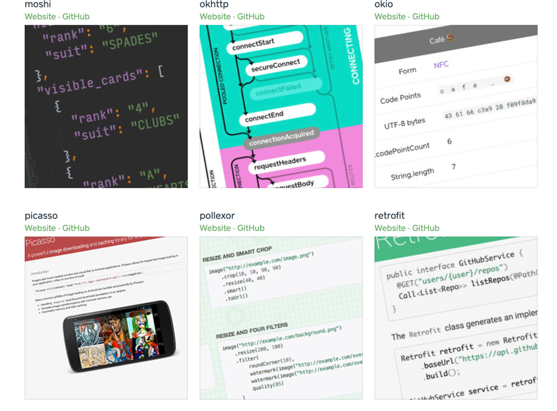
每个项目又拥有主题分明、聚合于目录导航下的网页文档，例如：
诚然，通过 Github.IO 及类似方式，可以较为简单的部署一套在线静态文档网站。
但公司项目文档并不适合对外公开，您是否想在公司局域网范围内，自己动手搭建一套用于
版本控制、自动部署、持续集成的网页文档呢？
以往的繁琐 与 如今的简明
曾经，我像图中这样，在本地或EDM软件维护文档空间，经历繁琐地检索、排查找到文档，再进行分享、阅读。

而现在，我习惯像这样，访问网页，通过不超过3级的目录，直接定位到文档内容，进行阅读
实现思路
核心思路：对重点内容编写轻量级文档，并以某种便于查找的索引方式聚合文档内容，将其托管于方便访问的网站。
典型的方式：
- 使用Markdown形式的轻量级文档，撰写重点内容，每一篇都主题鲜明
- 按照主题与项目模块的之间的关系、主题之间的关联性，组织目录结构，形成 "索引"
- 是用Gitbook、博客生成器等软件，将其制作成静态网站
- 部署静态网站
在此基础上，再加上自动部署、版本控制
涉及到的技能树，其中蓝色高亮部分一般能让人眼前一亮：

判断是否需要继续阅读
可能您已经 满怀期待 地准备开始跟随博客 展开实践，但出于责任心，我建议您结合下述 流程图 和 参考经历 判断下 是否真的需要继续 。
如果您已经确定要了解笔者是如何实现这一系统的，可以直接进入下一个章节

供参考的例子
A公司
背景：
- 研发团队百人规模，4-5条业务线，业务线之间存在一定数量的人员共享（例如移动端，web端后端救火队员）
- 业务线之间有（业务、技术）交流，流动人员需要接入、交出
- 除去服务端接口文档（YApi or Swagger），项目设计类文档一般托管于
Confluence
团队有强烈的 "基于文档交流、存档备份、查阅回顾、知识转移" 的需求 ， 有分享氛围
遇到的典型困难：
- 当不熟悉文档空间时，查找的难度大
- 维护文档空间内容索引难
B公司
背景：
- 业务线独立，互不干涉，基本没有技术沟通（私下的交流除外）
- 业务线研发团队30-40人规模
- 技术资料无明确要求
仅在小组范围内存在 "碎片化" 的文档材料，可能托管于印象笔记、可能托管于项目代码库，可能在某电脑中
典型困难：
- 聊胜于无，最终基本以查代码解决问题
C公司
背景：
- 涉足医疗行业
- 文档等资料的编写和管理发行遵照法规条款，受各种部门监管
- 使用EDM系统
典型困难：
- 各种文档的出发点契合法规需求，内容不一定满足研发人员的诉求（例如：往往我们需要详尽的类图、活动图、时序图、状态图、组件及对象生命周期关系，但文档一般只从系统角度给出程序流程图）
- 针对"查询设计细节点"而言，存在大量的内容噪声信息
- 文档空间大、内容多、检索难度高
从上述的三个案例来看，主要矛盾是文档内容不契合使用者诉求。
文档系统难用是次要矛盾。
在公司推行这一方案时，首先要确定主要矛盾能被解决，即团队愿意编写、维护一系列的文档（或内容资料）。 当团队拥有这些长期维护的文档、资料时，就可以着手解决系统不好用的问题。
否则不能有效推行，那此时只能退而求其次，尝试掌握额外的技能。
开始动手
明确环境
按照我们的目标，可以确定，我们需要以下必要环境：
- 一个局域网，不能有AP隔离、网段不能访问隔离（即设备间可以互相访问）
- 一台部署文档服务的机器
- 多台访问设备
作者按：如果您已经开始在公司正式开始推行，大概率会申请到一台Linux虚机或者Docker；小范围尝试时，可能是使用自己的办公电脑，一般是Windows or macOS系统，Linux概率较低。
作者手边有一台 macOS10.15.7的机器，下文所有内容均以此版本为背景，注意：不同的操作系统可能会遇到不同的问题。
接下来我们需要搞定以下软件环境，注意目前处于macOS 10.15.7环境下
- Gitlab 服务 及账号（至少具备创建、读取、提交项目的权限），版本无特定要求，用公司现成的即可
- Docker 4.7.0 (77141)，未调查版本特定要求，该版本已确定可用，较新
- Docker-ubuntu 镜像，未调查版本特定要求，可使用最新版本
- Gitbook 3.2.3, 版本无特定要求，用于生成Gitbook，结合需求选用版本
Docker
接下来我们开始安装Docker，并从基本镜像开始搭建静态网站
安装
首先下载 并安装Docker，这一步基本不会遇到问题
安装完成后，通过 docker version 命令，可以获得docker各个模块的版本信息
获取ubuntu镜像
docker image pull ubuntu:latest
以上命令可以获取官方镜像仓库中的最新的Ubuntu镜像
生成容器
docker run -p 80:80 --name doc -i -t ubuntu /bin/bash
通过以上命令可以 基于ubuntu镜像 得到一个 名为 doc 的容器 ，映射本机80端口和容器的80端口，可使用bash。
docker run [OPTIONS] IMAGE [COMMAND] [ARG...]
docker run 等价于 docker container run，在docker的迭代中，功能越来越多，增加了分组
注意：我在第一次体验docker时，没有处理好端口映射（随机端口分配），带来了很多问题，后面会给出专门的解决方案。
读者朋友可以结合以下内容做一些尝试，体会下各种功能
常用选项说明：
- -d, --detach=false， 指定容器运行于前台还是后台，默认为false
- -i, --interactive=false， 打开STDIN，用于控制台交互
- -t, --tty=false， 分配tty设备，该可以支持终端登录，默认为false
- -u, --user=""， 指定容器的用户
- -a, --attach=[]， 登录容器（必须是以docker run -d启动的容器）
- -w, --workdir=""， 指定容器的工作目录
- -c, --cpu-shares=0， 设置容器CPU权重，在CPU共享场景使用
- -e, --env=[]， 指定环境变量，容器中可以使用该环境变量
- -m, --memory=""， 指定容器的内存上限
- -P, --publish-all=false， 指定容器暴露的端口
- -p, --publish=[]， 指定容器暴露的端口
- -h, --hostname=""， 指定容器的主机名
- -v, --volume=[]， 给容器挂载存储卷，挂载到容器的某个目录
- --volumes-from=[]， 给容器挂载其他容器上的卷，挂载到容器的某个目录
- --cap-add=[]， 添加权限，权限清单详见：http://linux.die.net/man/7/capabilities
- --cap-drop=[]， 删除权限，权限清单详见：http://linux.die.net/man/7/capabilities
- --cidfile=""， 运行容器后，在指定文件中写入容器PID值，一种典型的监控系统用法
- --cpuset=""， 设置容器可以使用哪些CPU，此参数可以用来容器独占CPU
- --device=[]， 添加主机设备给容器，相当于设备直通
- --dns=[]， 指定容器的dns服务器
- --dns-search=[]， 指定容器的dns搜索域名，写入到容器的/etc/resolv.conf文件
- --entrypoint=""， 覆盖image的入口点
- --env-file=[]， 指定环境变量文件，文件格式为每行一个环境变量
- --expose=[]， 指定容器暴露的端口，即修改镜像的暴露端口
- --link=[]， 指定容器间的关联，使用其他容器的IP、env等信息
- --lxc-conf=[]， 指定容器的配置文件，只有在指定--exec-driver=lxc时使用
- --name=""， 指定容器名字，后续可以通过名字进行容器管理，links特性需要使用名字
- --net="bridge"， 容器网络设置:
- bridge 使用docker daemon指定的网桥
- host //容器使用主机的网络
- container:NAME_or_ID >//使用其他容器的网路，共享IP和PORT等网络资源
- none 容器使用自己的网络（类似--net=bridge），但是不进行配置
- --privileged=false， 指定容器是否为特权容器，特权容器拥有所有的capabilities
- --restart="no"， 指定容器停止后的重启策略:
- no：容器退出时不重启
- on-failure：容器故障退出（返回值非零）时重启
- always：容器退出时总是重启
- --rm=false， 指定容器停止后自动删除容器(不支持以docker run -d启动的容器)
- --sig-proxy=true， 设置由代理接受并处理信号，但是SIGCHLD、SIGSTOP和SIGKILL不能被代理
为容器内的APP安装nginx
通过nginx可以很方便的代理静态站点，已经基于Ubuntu镜像，所以可以通过apt进行各类软件安装
先更新apt的资源，如果源出现问题，可以自行换源
apt-get update
安装nginx
apt-get install -y nginx
此处的过程一般不会出现问题
为容器内的APP安装Vim
因为是通过终端操作，Vim是必须的。
值得注意的是,docker中使用vim只能使用最基本的指令，需要适应
apt-get install -y vim
修改nginx配置
此时，您可以先确定好静态网站内容的存放文件目录，笔者将其托管于Gitlab，并clone到了docker 容器中.
apt-get install git安装git
通过 whereis 命令找到nginx的安装位置 whereis nginx ，按照惯例：/etc 下存放配置文件，/sbin、/bin下是可执行文件
进入配置文件目录，使用VIM修改 default 文件内容
修改 root 配置，指定为静态网站根目录。
例如：
##
# You should look at the following URL's in order to grasp a solid understanding
# ... 注释内容移除
##
# Default server configuration
#
server {
listen 80 default_server;
listen [::]:80 default_server;
root /usr/local/work/doc/_book;
server_name _;
location / {
# First attempt to serve request as file, then
# as directory, then fall back to displaying a 404.
try_files $uri $uri/ =404;
}
}
保存。
输入 nginx 启动nginx ，理论上环境变量已完善，若出现问题可自行配置环境变量
输入 ps -ef 可查看进程，确保nginx已经启动
确认端口映射
进入mac的Terminal，可以新建也可以退出docker的交互式容器
按序按ctrl+p,ctrl+q 可退出交互式容器
使用 docker ps 命令查看运行中的容器的端口映射情况。 docker ps -a 可以查看全部容器的情况。
使用 docker port "容器名" 命令可以查看 容器内部端口 到 docker容器在mac上分配的端口
例如，上文中我们将80端口分配给静态网站，称之容器内部端口。而此docker容器运行一个依托于mac真机的虚拟平台上，mac真机为其分配了一个端口。
如果创建容器时没有指定端口或者启动时获取端口失败，docker容器会被分配一个端口，举个例子，可能是67890端口。
此时，通过访问 localhost:67890 已经可以访问到静态站内容
通过端口映射解决
如上文所述，即便创建容器时指定了端口映射关系，也难以保障下次启动容器时还能获得一致的端口。
我们模拟一次docker重启
停止容器运行
docker stop "容器名"
注意，重新启动容器应用命令为：
docker start 容器名
而非 docker run
如果没有配置nginx自动启动，则需要重启nginx，不进入交互式容器可使用命令：
docker exec "容器名" nginx
顺带确认容器中运行的进程：
docker top "容器名"
再次确认端口关系，可能会很不幸，假定已经改变为65432端口。但没有关系，挑一个喜欢的端口，例如 66666
进行端口映射。
题外话，如果是Linux机器，我们可以使用iptables 命令处理转发
有些早期的博客指导修改 /var/lib/docker/containers/[hash_of_the_container]/hostconfig.json 配置转发，但该版本的docker并没有该文件。
通过macOS的端口映射
但是步骤太复杂了，如果不是系统性的运用转发机制，我这么懒的人一定会采用临时规则方案：
echo "rdr pass proto tcp from any to any port {机器端口} -> 127.0.0.1 port {docker 镜像端口}" | sudo pfctl -Ef -
结合我们假设的设定：
echo "rdr pass proto tcp from any to any port 66666 -> 127.0.0.1 port 65432" | sudo pfctl -Ef -
通过：
sudo pfctl -F all -f /etc/pf.conf
可以删除临时规则
Gitbook or other
在上文内容中，我们已经默认使用了 Gitbook 生成文档静态网站, 使用教程 不再展开。
您也可以选用其他的软件工具生成网站
如果存在通过路由器构建的子网
简单回顾物理拓扑：存在必不可少局域网和一台文档服务器。
在早期的体验阶段，我们选用了个人办公电脑架设文档服务器。
而出于方便办公的目的，我们很有可能自行购买了路有设备，通过路由器接入公司的局域网，将办公电脑、个人电脑、手机等接入路由器构建的子网。
此时，其他同事通过公司局域网访问该文档服务器就会 遇到麻烦 ，不过很好解决，基于公司局域网的管理，一般个人分配的IP固定，该场景下该IP对应路由器设备
分配一个路由器的端口作为访问文档服务的端口，通过路由器管理设置将该端口的访问定向转发到 部署文档服务器的机器 的文档服务端口，上文中使用了66666端口
当然，这样处理的前提是路由器按照静态IP分配，否则需要时常维护映射关系。
更新、CI、版本化
文档是需要长期维护的，必然会牵涉到更改、修订、新增。
在上文中，我们将生成的静态网站内容托管于Git，这是较差的做法，但可以在本地处理编译、生成静态网站资源时的 环境问题 而减少服务器的维护。
针对原始文档进行版本控制是必要的。引入健壮的环境维护机制后，在服务端进行静态网站资源编译、生成，是更佳的做法。
通过Git等VCS的帮助，已经拥有健全的版本管理方式，只需要采用相应的实践方式即可，例如参考Git最佳实践拆分发布、维护分支，通过tag维护发布版本
自动获取更新、部署
以上文中的做法为例，此时仅需要 周期性的 获取Git仓库中发布分支的最新内容即可。
如果已经在服务端实施编译、生成，可以编写定时任务脚本进行CI，也可以进一步引入jenkins，增加构建任务，通过web-hook机制可以实现实时部署。
同时获得多个版本
有时我们希望获得 文档、内容片段 在不同版本下的内容，在此方案基础上也容易实现。
针对不同的版本（tag），check-out 并编译、生成至 与版本一一映射 的文件目录，通过Nginx配置的方式即可实现。
此时，需要通过不同的URL访问不同的版本，这对于使用者并不友好，本着 以人为本 的原则，可以进行一次 优化：
编写 "扫描" 程序或者脚本，扫出已经CheckOut、并在Nginx配置中有效的版本文件目录，（一般做法是将各个版本的目录规整至同一路径下，将该路径作为站点Root目录） 通过版本（tag）与文件目录名的映射关系、Git插件，取出版本Commit信息。聚合信息后按照模板生成入口页
而 优化永无止境 ，只要对文档、文档章节建立索引机制，将文档内容解析为AST，"比对文档章节在各个版本下的变化" 将可行，通过定制Gitbook插件的方式， 可将各章节在各个版本下的内容加以聚合、通过Spinner等方式切换阅读。
结语
至此，我们已经完成了基础目标，而文档中提到的技能树，要全部点亮想必也需要一定的时间，尤其是结合 Git、Markdown AST解析、模板引擎等内容，自研一套软件用于网页生成。读者朋友们可以丰富自己的业余生活了。
研究良久，终于发现了他代码写的快且bug少的原因
前言
读者诸君，今日我们适当放松一下，不钻研枯燥的知识和源码，分享一套高效的摸鱼绝活。
我有一位程序员朋友，当时在一个团队中开发Android应用，历经多次考核后发现：
在组内以及与iOS团队的对比中:
- 他的任务量略多
- 但他的bug数量和严重度均低
- 但他加班的时间又少于其他人
不禁令人产生好奇，他是如何做到代码别的又快，质量又高的
经过多次研究我终于发现了奥秘。
为了行文方便我用"老L"来代指这位朋友。
最常见的客户端bug
"老L，听说昨晚上线，你又坐那摸鱼看测试薅别人，有什么秘诀吗？"
老L："秘诀？倒也谈不上，你这么说，我倒是有个问题，你觉得平日里最常见的bug有哪些？"
"emm，编码上不健壮的地方，例如NPE，IndexOutOfBoundsException，UI上的可就海了去了，文本长度不一导致显示不下，间距问题，乱七八糟的一大堆"
老L："哈哈，都是些看起来很幼稚、愚蠢的问题吧？是不是测试挂嘴边的那句：' 你就不能跑一跑吗，你又不瞎，跑两下不就看到了，这么明显！！！' "
我突然来了兴致，"你是说我们有必要上 TDD（test-driven-develop），按照DevOps思想，在CI（Continuous Integration）的时候，顺带跑自动化测试用例发现问题？"
老L突然打断了我："不要拽你那些词了，记住了，事情是要人干的，机器只能替代可重复劳动，现在还不能替代人的主观能动性，拽词并不能解决问题。我们已经找到了第一个问题的答案，现在换个角度"
平日里最常见的bug有哪些？
- 编码不健壮, 例如NPE，IndexOutOfBoundsException
- UI细节问题, 例如文本长度不一导致显示不下，间距，等
为什么很浅显的问题没有被发现
老L："那么问题来了，为什么这些浅显的问题，在交测前没有被发现呢？"
我陷入了思考...
是开发们都很懒吗？也不至于啊！
是时间很紧来不及吗？确实节奏紧张，但也不至于不给调试就拿去测了！
"emm, 可能是迭代的节奏的太频繁，压力较大，并没有整块的时间用来自测联调"
老L接过话茬，"假定你说的是正确的，那么就有两种可能。"
"第一种，自测与联调要比开发还要耗费心思的一件事情。但实际上，你我都知道，这一点并站不住脚！"
"而第二种，就是在开发阶段无法及时测试，拖到开发完，简单测测甚至被催促着就交差了"
仔细的思考后
- 业务逐步展开，无法在任意时间自由地进行有效的集成测试
- 后端节奏并不比前端快多少，在前端的开发阶段，难以借助后端接口测试，也许接口也有问题
"确实，这是一个挺麻烦的问题，听你一说，我感觉除了多给几天，开发完集中自测一波才行" 我如是说到。
"NO NO NO"，老L又打断了我："你想的过多了，你想借助一个可靠的、已经完备的后端系统来进行自测。对于你的需求来说，这个要求过高了，你这是准备干QA的活"
"我帮你列举一下情况"
- 一些数据处理的算法，这种没有办法，老老实实写单元测试，在开发阶段就可以做好，保障可靠性
- UI呢，我们现在写的代码，基本都做到了UI与逻辑分层，只要能模拟数据，就能跑起来看页面
- 业务层，后端逻辑我们无法控制，但 Web-API 调用的情况可以分析下并做一下测试，而对于返回数据的JSON结构校验、约束性校验也可以考虑做一下测试
总而言之，我们只需要先排除掉浅显的错误。而这些浅显的错误，属于情况2、3
老L接着说道："你先歇歇吧，我来说，你再插嘴这文章就太长了！"
接下来就可以实现矛盾转移："如何模拟数据进行测试"，准确的说，问题分成两个子问题：
- 如何生成模拟数据
- 如何从接缝中塞入数据，让系统得以使用
可能存在的接缝
先看问题2："如何从接缝中塞入数据，让系统得以使用"
脑暴一下，可以得出结论：
- 应用内部
- 替换调用web-api的业务模块，使用假数据调用业务链，一般替换Presenter、Controller实例
- 替换Model层，不调用web-api，返回假数据或用假数据调用回调链
- 侵入网络层实现，不进行实际网络层交互，直接使用假数据
- 遵循切面，向缓存等机制模块中植入假数据
- 应用外部
- 使用代理，返回假数据
- 假数据服务器
简单分析：
"假数据服务器"的代价太大，并且使用逻辑编造假数据的代价太大，过。- "使用代理，返回假数据"，可以用于特定问题的调试，不适用广泛情况，过。
"替换调用web-api的业务模块"，成本过大，过。- "替换Model层"，对项目的依赖注入管理具有较大挑战，备选，可能带来很多冗余代码。
- "侵入网络层实现"，优选。
- "向缓存等机制模块中植入假数据"，操作真实的缓存较复杂，但可以考虑增加一个 Mock缓存实现模块，基于SPI等机制，可以解决冗余代码问题，备选。
得出结论：
- 方案1："侵入网络层实现"，优选
- 方案2："替换Model层"，（项目的依赖注入做得很好时）作为备选，可能带来冗余代码
- 方案3："向缓存等机制模块中植入假数据"，增加一个 Mock缓存实现模块，备选。（基于SPI等机制，可以解决冗余代码问题）
再仔细分析： 方案1和方案3可以合并，形成一个完整的方案，但未必需要限定在缓存机制中
OK 我们先搁置一下这个问题，看前一个问题。
创造假数据
简单脑暴一下，无非三种：
- 人工介入，手动编写 -- 成本过大
- 可能在前期准备好，基本是纯文本
- 可能使用一个交互工具，在需要数据时介入，通过图形化操作和输入产生数据
- 人工介入，逻辑编码
- 基于反射等自省机制，并完全随机或者基于限制生成数据
"第一种代价过大，暂且抛弃"
"第二种可以采用，但是人力成本不容忽视! 一个可以说服我使用它的理由是："可以精心设计单测数据，针对性的发现问题"
"第三种很轻松，例如使用Mockito，但生成合适的数据需要花费一定的精力"
我们来扒一扒第三种方式，其核心思想为：
- 获取类信息，得到属性集
- 遍历属性填充 >
- 基础类型、箱体类型，枚举，确定取值范围，使用Random取值，赋值
2. 普通类、泛型类，创建实例，回归步骤1 3. 集合、数组等，创建实例，回归步骤1，收集填充
不难得出结论，这一方法虽然很强大，但 创建高度定制化的数据 是一件有挑战的事情。
举个例子，模拟字符串时，一般会使用语料集作为枚举，进行取值。要得到“地址”、“邮箱”等特定风格的数据，需要结合框架做配置，客观上存在较高地学习、使用门槛。
你也知道，前几年我图好玩，写了个 mock库 。
必须强调的一点：“我并不认为我写的库比Mockito等库强大，仅仅是在我们开发人员够用的基础上，做到尽可能简单！”
你也知道，Google 在Androidx（前身为support）中提供了一套注解包： annotations。但Google并未提供bean validation 实现
，我之前也基于此做过一套JSR303实现，有一次突发灵感，这套注解的含义同样适用于 声明假数据取值范围 ！！！
所以，我能使用它便捷的生成合适的假数据，在开发阶段及时的进行 “伪集成”
此刻，我再也忍不住要发言了：“且慢，老L，你这个做法有一定的侵入性吧。而且，如果数据类在不同业务下复用的话，是否存在问题呢？”
老L顿了顿，“确实，google的annotations是源码级注解，并不是运行时，我为了保持简单，使用了运行时反射而非代码生成。所以确实存在一定的代码侵入性”。
但是，我们可以基于此建立一套简单的MOCK-API，这样就不存在代码侵入了。
另外，也可以增加一套Annotation-Processor 实现方案，这样就可以适当沿用项目中的注解约束了，但我个人认为华而不实。
看你的第二个问题，Mocker一开始确实存在这个问题，有一次从Spring的JSR380中得到灵感，我优化了注解规则，这个问题已经被解决了。得空你可以顺着这个图看看：
或者去看看代码和使用说明：https://github.com/leobert-lan/Mocker
再次审视如何处理接缝
此时我已经有点云里雾里，虽然听起来很牛，如何用起来呢？我还是很茫然，简直人麻了！不得不再次请教。
老L笑着说：“你问的是一个实践方案的问题，而这类问题没有银弹.不同的项目、不同的习惯都有最适宜的方法，我只能分享一下我的想法和做法，仅做参考”
在之前的项目中，我自己建了一个Mock-API，利用我的Mocker库，写一个假数据接口就是分分钟的事情。
测试机挂上charles代理，有需要的接口直接进行mapping，所以在客户端代码中，你看不到我做了啥。
当然，这个做法是在软件外部。
如果要在软件内部做，我个人认为这也是一个华而不实的事情。不过不得不承认是一件好玩的事情，那就提一些思路。
基于Retrofit的CallAdapter
public interface CallAdapter<R, T> {
Type responseType();
T adapt(Call<R> call);
abstract class Factory {
public abstract @Nullable
CallAdapter<?, ?> get(Type returnType, Annotation[] annotations,
Retrofit retrofit);
protected static Type getParameterUpperBound(int index,
ParameterizedType type) {
return Utils.getParameterUpperBound(index, type);
}
protected static Class<?> getRawType(Type type) {
return Utils.getRawType(type);
}
}
}
很明显，我们可以追加注解，用以区分是否需要考虑mock；
可选：对于有可能需要mock的接口，可以继续追加切面，实现在软件外部控制使用 mock数据 或 真实数据
而Retrofit已经使用反射确定了方法的 return Type ，在Mocker中也有适应的API直接生成假数据
基于Retrofit的Interceptor
相比于上一种，拦截器已经在Retrofit处理流程中靠后，此时在 Chain 中能够得到的内容已经属于Okhttp库的范畴。
所以需要一定的前置措施用于确定 "return Type"、"是否需要Mock" 等信息。可以借助Tag机制：
@Documented
@Target(PARAMETER)
@Retention(RUNTIME)
public @interface Tag {
}
@GET("/")
Call<ResponseBody> foo(@Tag String tag);
最终从 Request#tag(type: Class<out T>): T? 方式获取，并接入mock，并生成 Response
其他针对Okhttp的封装
思路基本类似，不再展开。
写在最后
听完老L的思路，我若有所思，若有所悟。他的方案似乎很有效，而且直觉告诉我，这些方案中还有很多留白空间，例如：
- 借用SPI等技术思路，可以轻易的解决 "Mock 模块集成与移除" 的问题
- 提前外部控制是否Mock的接缝，可以在加一个工具APP、或者Socket+网页端工具 用以实现控制
但我似乎遗漏了问题的开始
是否原意做 用于约束假数据生成规则的基础建设工作呢？？？ 例如维护注解
事情终究是人干的，人原意做，办法总比困难多。
最后一个小问题：
好玩系列 | 如果后端让你用SSE接收多次返回，那我们改造Retrofit吧
前言
说来惭愧，最近都没写技术帖，每月写一篇原创的Flag也倒了，倒并非无内容可写，实则是因为懒惰， 虽然工作和生活牵扯了很多精力，但仍是有碎片化时间的。一篇关于DataBinding非常有趣的文章还在编写中，今天我们先看一篇轻松点的内容。
随着ChatGpt等生成式AI大火，SSE（Server Send Events）又回到了技术讨论当中，今天我们聊一聊，如果客户端需要获取服务端长耗时任务结果，有哪些实践方式。
本篇博客将聚焦于4个方面：
- 归纳获取服务端长耗时任务结果的常见实践方式
- 对SSE进行详细的讨论，尤其是其协议细节
- 实操：搭建SSE服务端、使用OKHttp搭建客户端
- 探索：对Retrofit进行了分析，扩展Retrofit使用SSE
4种常见的实践方式
不外乎两种思路：
- 客户端 polling
- 服务端 push
客户端polling
不难理解，服务端处理一项任务，只有服务端才清晰地知道任务的状态，客户端可以通过 周期性主动轮询 直至获取任务的最终结果。
按照此类实践方式，可使用 HTTP/HTTPs 协议。
short polling
客户端向服务端发起请求，如果服务端状态已经更新，返回结果并关闭链接；如果服务端状态尚未更新，返回一个特定的结果告知还在处理中，并关闭链接
long polling
和 short polling 类似，客户端向服务端发起请求，如果服务端状态已经更新，返回结果并关闭链接；
但如果服务端状态尚未更新，
- 服务端会在超时时间内维持链接，进行等待，直至状态更新，返回结果并关闭链接；
- 若等待至超时也未更新状态，返回一个特定的结果告知还在处理中，并关闭链接
服务端push
这类实践方式中，不需要客户端采取"问"，而是当服务端状态更新时，自行通知客户端，典型的实践方式有：
- Server Send Events (SSE)
- WebSocket
SSE
SSE是本文的讨论核心，从服务端发往客户端的消息，存在一个限制，即仅可以发送 纯文本 类型的消息。
SSE基于http协议的持久连接，SSE 具有 W3C 标准化的网络协议和 EventSource 客户端接口，属于 HTML5 标准套件。
有兴趣的读者可以访问 扩展阅读 了解协议细节
WebSocket
定制性、扩展性最强的实践方案，有趣的话题实在太多，不做任何展开。
SSE协议细节
不难理解，SSE形如消息订阅，由客户端主动发起订阅，双方维持链接，服务端向客户端推送message。
Header主要部分
按照协议约定，Method 为 GET，并且需要在 Header 中包含以下内容：
- Accept: text/event-stream 指定Media Type
- Cache-Control: no-cache 不使用cache
- Connection: keep-alive 使用持久性连接
以下是Header部分的示例：
GET /{path} HTTP/1.1
Accept: text/event-stream
Cache-Control: no-cache
Connection: keep-alive
服务端的响应Header至少包含：
- Content-Type: text/event-stream;charset=UTF-8 指定Media Type
- Transfer-Encoding: chunked
以下是响应Header部分的示例：
HTTP/1.1 200
Content-Type: text/event-stream;charset=UTF-8
Transfer-Encoding: chunked
Event-Stream 解析
event-stream的内容(结构和字符)需满足以下 ABNF 语法范式约定
stream = [ bom ] *event
event = *( comment / field ) end-of-line
comment = colon *any-char end-of-line
field = 1*name-char [ colon [ space ] *any-char ] end-of-line
end-of-line = ( cr lf / cr / lf )
; characters
lf = %x000A ; U+000A LINE FEED (LF)
cr = %x000D ; U+000D CARRIAGE RETURN (CR)
space = %x0020 ; U+0020 SPACE
colon = %x003A ; U+003A COLON (:)
bom = %xFEFF ; U+FEFF BYTE ORDER MARK
name-char = %x0000-0009 / %x000B-000C / %x000E-0039 / %x003B-10FFFF
; a scalar value other than U+000A LINE FEED (LF), U+000D CARRIAGE RETURN (CR), or U+003A COLON (:)
any-char = %x0000-0009 / %x000B-000C / %x000E-10FFFF
; a scalar value other than U+000A LINE FEED (LF) or U+000D CARRIAGE RETURN (CR)
需要逐行读取内容并进行解析，按照语法约定：end-of-line = ( cr lf / cr / lf )，CRLF、CR、LF都代表换行
- 如果是空行，后续是新Event，可通俗理解为事件之间用空行分隔
- 如果是以
:冒号，UniCode编码 U+003A 开始，忽略此行 - 如果包含
:冒号，UniCode编码 U+003A，从第一个冒号开始分割- 冒号前的内容为
field - 冒号后的内容为
value，如果冒号后的第一个字符为空格U+0020，从value中移除
- 冒号前的内容为
- 非空但不包含
:, 内容全部作为field,value为空字符串
field的约定：
- "event"：其value为 event type
- "data"：其value为事件数据，解析后单独再尾部拼接
LF - "id"：若其value不包含
U+0000 即NULL，值为事件的ID，否则忽略 - "retry"：其value若只包含ASCII码表示的数值，认为是十进制数解析为Int，作为毫秒级的重连时间，当链接断开，客户端应当在此时间后自动发起重连，否则忽略
- 其他情况均忽略
Last-Event-ID
前文已经提到了如下内容：
- Header
- Event-Stream中field为"id"、"retry"
不难理解，当出现意外情况时，例如网络原因导致的链接断开，涉及到重连；显然，重连时一般不希望再获取已经收到的信息。
Header中存在 Last-Event-ID field约定，指定上次收到的Event的id，因Event有序，可避免冗余信息传输。
纸上得来终觉浅
至此，协议部分的主要内容已经讨论完毕，让我们进入愉快的Demo环节。
编写服务端
对部分读者而言，这部分可能有点超纲，但没有关系，已经准备好了Demo代码，各位只需要准备好Java环境和路由器即可。
在Demo中，准备了两条接口：
- http://{ip}:8080/sse/mvc/words , 模拟多次生成文本段落并推送至客户端
- http://{ip}:8080/sse/mvc/folder-watch , 模拟文件夹监听
启动服务后，可使用控制台和curl进行测试：
curl -v http://localhost:8080/sse/mvc/words
编写客户端
很显然，一个非新事物往往不需要普通开发者造轮子，OkHttp 已经支持SSE
不同于大家熟知的 Call， Okhttp-SSE中封装了 EventSource，并通过 Factory 创建实例、发起请求：
一个朴素地使用示例如下：
class Demo {
void demoCode() {
OkHttpClient okHttpClient = new OkHttpClient();
EventSource.Factory factory = EventSources.createFactory(okHttpClient);
Request.Builder builder = new Request.Builder().get().url(url);
builder.addHeader("Content-Type", "text/event-stream")
.addHeader("Accept-Encoding", "")
.addHeader("Accept", "text/event-stream")
.addHeader("Cache-Control", "no-cache");
builder.addHeader("Last-Event-ID", "2");
Request request = builder.build();
factory.newEventSource(request, new EventSourceListener() {
//ignore
});
}
}
请注意，如果将其作为 Call，将无法获得多次推送的效果，在不出现错误或超时的情况下，形如一次响应较慢的Get请求。
是否可以使用Retrofit
截至目前为止，Retrofit未对其进行适配，其实在多年前即展开过讨论，我找到了此条 讨论issue
Retrofit的设计原理并不复杂：
- 通过运行时反射，建立动态代理，依据注解构建Okhttp的Call
- 通过CallAdapter，将Call的结果处理方式，进行不同的适配
但设计之初，仅设计了 Retrofit.Call 对 Okhttp.Call 进行Wrap，而 EventSource 并不继承 Okhttp.Call，当然，依据其特性也不应当继承自Call
鉴于此，若将 EventSource 强行包装为 Retrofit.Call 将会很容易引起错误，例如调用
Response<T> execute() throws IOException;void enqueue(Callback<T> callback);
若在Retrofit中平行展开一条 EventSource 的处理逻辑，需要对库进行很多修改，并且考虑对生态的影响，并不划算。
但是使用者自己的行为是不受限的，自己结合项目情况开发，自己对其负责。
动手写Retrofit扩展库
正如我上文所言，直接在Retrofit中进行扩展需要考虑对生态的影响，读者诸君可以详细阅读Jake Wharton 的post，其设计构思在考虑 "一致性" 问题。
但如果在Retrofit之外进行扩展，则可以回避生态问题，即便有非一致性设计，也可以不用直面。
代码仓库 需切换到 retrofit-sse 分支！
作者按：读者诸君请注意，在编写此文时，我尚未有充足的时间投入扩展库的设计与编写，代码库中的Sample代码，仅可作为指导，仍存在设计盲点，不要直接投入商用。
很容易得出以下核心设计思路，可看导图或下文的文字说明，较为啰嗦：
- 将连续的Event内容转变为可观测的Source，例如Rxjava的观测源、LiveData、kotlin协程的Flow
- 内建
EventSourceListener实现类，从回调触发源的更新 - 定义
EventSourceAdapter，用于将Okhttp-EventSource转变为 可观测的Source
- 内建
- 需要存在一种机制，依据Interface中Method定义的返回类型，获取
EventSourceAdapter实例- 应当有Factory、Factory注册池，亦可以考虑直接使用实例、实例注册池
- 需要利用反射
- Factory注册池或Adapter实例注册池需能区分目标类型
- 需要能够创建（完整功能应当为管理）
EventSource- 需可注册
EventSource.Factory实例
- 需可注册
- 存在一条扩展路径，符合SSE时，走新设计；否则走原Retrofit设计
- 增加入口，例如
RetrofitSSE，承载以上设计，并包含Retrofit - 扩展
ServiceMethod<?> loadServiceMethod(Method method)，新增SSE情况的执行路径 - 扩展
ServiceMethod，内建SSE情况的处理逻辑，即承载设计1、2
- 增加入口，例如
简要的代码如下：
内建的EventSourceListener -- 对应1
内建选择了Flow，可自行扩展其他，通过回调实现源的更新
class FlowAdapterEventListener(
val channel: Channel<Event>,
) : EventSourceListener() {
private val scope: CoroutineScope = CoroutineScope(Dispatchers.IO)
override fun onEvent(eventSource: EventSource, id: String?, type: String?, data: String) {
super.onEvent(eventSource, id, type, data)
scope.launch {
channel.send(Event(id, type, data))
}
}
override fun onFailure(eventSource: EventSource, t: Throwable?, response: Response?) {
super.onFailure(eventSource, t, response)
scope.launch {
channel.send(
Event(null, null, "", t)
)
channel.close(t)
}
}
}
定义EventSourceAdapter -- 对应2
interface EventSourceAdapter<T> {
fun adapt(request: Request, factory: EventSource.Factory): T
abstract class Factory {
abstract operator fun get(
returnType: Type, annotations: Array<Annotation>, retrofitSSE: RetrofitSSE
): EventSourceAdapter<*>?
}
}
内建EventSourceAdapter 和 Factory -- 对应2
这是一个示例，以内建选择的Flow情况为例，展示Factory能区分目标类型， Factory注册池遍历执行至非NULL返回时，认为得到目标类型的Factory
class FlowAdapter : EventSourceAdapter<Flow<Event>> {
override fun adapt(request: Request, factory: EventSource.Factory): Flow<Event> {
val channel = Channel<Event>()
return channel.receiveAsFlow()
.shareIn(CoroutineScope(Dispatchers.IO), SharingStarted.Eagerly)
.onSubscription {
factory.newEventSource(
request, FlowAdapterEventListener(channel)
)
}
}
companion object {
val Factory = object : Factory() {
override fun get(
returnType: Type,
annotations: Array<Annotation>,
retrofitSSE: RetrofitSSE
): EventSourceAdapter<*>? {
if (Flow::class.java.isAssignableFrom(getRawType(returnType))) {
return FlowAdapter()
}
return null
}
}
}
}
ServiceMethod扩展以及路径
新路径：
abstract class ServiceMethodV2<T> extends ServiceMethod<T> {
static <T> ServiceMethod<T> parseAnnotationsV2(RetrofitSSE retrofit, Method method) {
RequestFactory requestFactory = RequestFactory.parseAnnotations(retrofit.retrofit, method);
Type returnType = method.getGenericReturnType();
if (Utils.hasUnresolvableType(returnType)) {
throw methodError(/*ignore*/);
}
if (returnType == void.class) {
throw methodError(method, "Service methods cannot return void.");
}
return HttpServiceMethodV2.parseAnnotations(retrofit, method, requestFactory);
}
}
扩展
ServiceMethod，内建SSE情况的处理逻辑，即承载设计1、2
详见：HttpServiceMethodV2，代码较多，不做展开,当满足SSE情况时，走新逻辑，否则回归至 HttpServiceMethod#parseAnnotations
新入口
- 具备EventSource.Factory注册
- 具备EventSourceAdapter.Factory池，以及识别目标的能力
- 走新逻辑：
ServiceMethodV2.parseAnnotationsV2(this, method)
public final class RetrofitSSE {
private final Map<Method, ServiceMethod<?>> serviceMethodCache = new ConcurrentHashMap<>();
final Retrofit retrofit;
@NotNull
final EventSource.Factory eventSourceFactory;
final List<EventSourceAdapter.Factory> eventSourceAdapterFactories = new ArrayList<>();
public RetrofitSSE(Retrofit retrofit, @NotNull EventSource.Factory eventSourceFactory) {
this.retrofit = retrofit;
this.eventSourceFactory = eventSourceFactory;
}
@SuppressWarnings("unchecked") // Single-interface proxy creation guarded by parameter safety.
public <T> T create(final Class<T> service) {
//ignore
}
public RetrofitSSE addEventSourceAdapterFactory(EventSourceAdapter.Factory factory) {
eventSourceAdapterFactories.add(Objects.requireNonNull(factory, "factory == null"));
return this;
}
ServiceMethod<?> loadServiceMethod(Method method) {
ServiceMethod<?> result = serviceMethodCache.get(method);
if (result != null) return result;
synchronized (serviceMethodCache) {
result = serviceMethodCache.get(method);
if (result == null) {
result = ServiceMethodV2.parseAnnotationsV2(this, method);
serviceMethodCache.put(method, result);
}
}
return result;
}
public EventSourceAdapter<?> eventSourceAdapter(Type returnType, Annotation[] annotations) {
return nextEventSourceAdapter(null, returnType, annotations);
}
public EventSourceAdapter<?> nextEventSourceAdapter(
@Nullable EventSourceAdapter.Factory skipPast, Type returnType, Annotation[] annotations) {
Objects.requireNonNull(returnType, "returnType == null");
Objects.requireNonNull(annotations, "annotations == null");
int start = eventSourceAdapterFactories.indexOf(skipPast) + 1;
for (int i = start, count = eventSourceAdapterFactories.size(); i < count; i++) {
EventSourceAdapter<?> adapter = eventSourceAdapterFactories.get(i).get(returnType, annotations, this);
if (adapter != null) {
return adapter;
}
}
throw new IllegalArgumentException(/*ignore*/);
}
}
作者按：更多的代码细节，还请移步 代码仓库 需切换到 retrofit-sse 分支！
结语
又到了说再见的时候，这篇文章中，我们一同完成了：
- 获取服务端长耗时任务结果的常见实践方式的归纳
- 对SSE进行了详细的讨论，尤其是其协议细节
- 搭建SSE服务端、使用OKHttp搭建客户端，进行实操
- 对Retrofit进行了分析，探讨并发现了一条扩展路径，可通过Retrofit使用SSE
应当是一次有趣、好玩的历程！
在结尾，还是再次提醒，代码仓库 中Retrofit-SSE的代码，并未经过严谨的设计论证并进行充分的测试， 我仅花费了数小时时间实现博客内容所需的最少设计，势必会存在BUG和设计不健全的内容，不要直接商用，以免影响绩效。
汇总链接如下：
Android代码仓库 注意分支
DataStructure
数据结构温习
温故：线性表|数据结构
对 数据结构 - 线性表 进行温故，以期获新知
温故系列是我尝试的一种新学习总结方式，在
阅历增长时，总结旧闻，以期获新知，并不断迭代。了解更多本次温故时间：2021年3月
注：部分图片来自网络检索，未找到出处，内容仅供学习，如有侵权，可留言联系
要求删除或者要求指明出处
基本概念
线性表 ，全名为 线性存储结构，是一种 有序数据项 的 集合，其中每个数据项都有 唯一 的 前驱 和 后继，
注意：第一个没有前驱，最后一个没有后继。
新数据项加入到数据集中时，只会加入到原有某个数据项 之前 或者 之后

从上图我们可以理解，线性表是将数据项串起来 之后 存入物理空间 的一种数据结构。

不同的存储方式，衍生出两种实现方式：
- 将数据
依次存储在连续的整块物理空间中，是顺序存储结构又称顺序表； - 将数据
分散存储在物理空间中，并能够存储数据项之间的前、后驱关系，是链式存储结构，又称链表；
顺序表
其性质可以直接对应到 数组，具有随机读写能力，使用需要先初始化，获取 整块的存储空间，如果使用中需要扩容，
则需要先分配一块新的存储空间，并进行内容复制。
链表
普通链表又称单链表，用于存储逻辑关系为 "一对一" 的数据。
与顺序表不同，链表不限制数据的物理存储状态，即数据项的物理存储位置是随机的。
每个 节点 对应一个数据项，包含了两部分信息：
- 数据元素本身，其所在的区域称为
数据域； - 指向
直接后继元素的指针，所在的区域称为指针域；
头指针 ：一个普通的指针，它的特点是永远指向链表第一个节点的位置。
头节点 ：一个 不存任何数据 的空节点。不是必须的，但可以解决一些实际问题：
- 链表数据变动时，需要维护
链表的引用地址即头指针的问题 - 遍历时，不需要对第一个节点进行特殊处理
首元节点 ：链表中第一个存有数据的节点为首元节点。
静态链表
比较早期的时候，并不能像C语言那样灵活的操作指针，于是用 数组代替指针 来描述单链表。
这种用数组描述的链表叫做静态链表，这种描述方法叫做 游标实现法。
算法题小练手
206.反转链表
反转一个单链表。
示例:
输入: 1->2->3->4->5->NULL
输出: 5->4->3->2->1->NULL
进阶: 你可以迭代或递归地反转链表。你能否用两种方法解决这道题？
来源：力扣（LeetCode）
迭代思路：遍历整个链表，将每个节点的next指向前驱，返回链表的尾端节点即可。
public ListNode reverseList(ListNode head) {
ListNode prev = null;
ListNode curr = head;
ListNode tmp = null;
while (curr != null) {
tmp = curr.next;
curr.next = prev;
prev = curr;
curr = tmp;
}
return prev;
}
递归思路：
递： 将结点的 后继 作为 新的链表头节点，调用reverseList，直到进行到原始链表的尾端时，即 node.next 为 null 时。此时开始归，返回新链表头节点
归：归的过程中，反转链表的方向，设原先有 a.next = b, 现在需要转变为 b.next = a, 即 a.next.next = a,
边界问题：
- 因为是在归中处理，所以相当于是从
原链表尾端开始处理反转，开始位置不用担心 - 结束位置需要注意，必须将其的 next 改为 null，即 a.next = null
我们再用数学归纳法复盘一下：令长度为l （L的小写，部分字体下看起来像数字1，特此说明），原链表头结点为head
- 当l=0时，直接返回null，head也是null
- 当l=1时，直接返回head
- 当l=2时：
- 取head的next，作为新链表先进入处理，返回结果即newHead，新链表长度l=1，直接返回了,确实是期望的反转链表的头节点
- 反转两者(即 head 与 head.next)前后驱关系，head.next.next = head，处理head的next 为 null
- 返回newHead
- 当l=3时：
- 取head的next，作为新链表先进入处理，返回的newHead 是期望的
反转链表的头结点 - 处理head 与 head.next 的前后驱关系，head.next.next = head，处理head的next 为 null
- 返回newHead
- 取head的next，作为新链表先进入处理，返回的newHead 是期望的
......
- 当l=n，n>3时：
- 取head的next，作为新链表先进入处理，返回的newHead 是期望的
反转链表的头结点 - 处理head 与 head.next 的前后驱关系，head.next.next = head，处理head的next 为 null
- 返回newHead
- 取head的next，作为新链表先进入处理，返回的newHead 是期望的
- 当l=n+1,n>3时：
- 取head的next，作为新链表先进入处理，返回的newHead 是期望的
反转链表的头结点 - 处理head 与 head.next 的前后驱关系，head.next.next = head，处理head的next 为 null
- 返回newHead
- 取head的next，作为新链表先进入处理，返回的newHead 是期望的
我们依据数学归纳法，得出：l=0或l=1时，返回head，l >= 2时，处理方式一致，不再誊写
public ListNode reverseList(ListNode head) {
//l=0时，head为null；l=1时，head.next 为null。 均直接返回head，归的特殊处理
if (head == null || head.next == null) {
return head;
}
//递
ListNode newHead = reverseList(head.next);
//归的处理
//反转 head 与 head.next 的前后驱关系
head.next.next = head;
head.next = null;
//返回newHead
return newHead;
}
温故总结
作为比较基础的内容，在更复杂的数据结构中，线性表可能会作为底层实现。在实际应用中，我们用到 单链表 的地方不会太多。
在算法练手环节中，突然发现一个 很趁手 的东西，以为考虑 递归实现 思路时，我总是要非常仔细的思考边界问题。
但这次突然发现，若能够
被递归实现，一定可以用数学归纳法论证做法的正确性，推导过程可以完善地讨论边界问题。 并且其推导过程非常人性化。
这篇内容很短，就到此结束了。
温故：栈|数据结构
对数据结构-栈进行温故，以期获新知
温故系列是我尝试的一种新学习总结方式，在
阅历增长时，总结旧闻，以期获新知，并不断迭代。了解更多本次温故时间：2021年3月
基本概念
目的：存储逻辑关系为 一对一 的数据
特性：出口和入口一致，后进先出、先进后出，先行存储结构
定义：栈是一种只能从表的一端存取数据且遵循 "先进后出" 原则的 线性存储结构。

操作：
- 向栈中添加数据，即
进栈、入栈、压栈, 从栈顶进 - 从栈中取出数据，即
出栈，从栈顶出
线性存储结构
线性结构是一种 有序数据项 的 集合，其中每个数据项都有 唯一 的 前驱 和 后继，
注意：第一个没有前驱，最后一个没有后继。
新数据项加入到数据集中时，只会加入到原有某个数据项 之前 或者 之后
实现思路有两种：
- 顺序栈
- 链栈
区别在于：数据项存放的相对位置，顺序栈用 数组 作为底层实现，而链栈使用 链表 作为底层实现。
JDK中的实现
public class Stack<E> extends Vector<E> {
public Stack() {
}
public E push(E item) {
addElement(item);
return item;
}
public synchronized E pop() {
E obj;
int len = size();
obj = peek();
removeElementAt(len - 1);
return obj;
}
public synchronized E peek() {
int len = size();
if (len == 0)
throw new EmptyStackException();
return elementAt(len - 1);
}
public boolean empty() {
return size() == 0;
}
public synchronized int search(Object o) {
int i = lastIndexOf(o);
if (i >= 0) {
return size() - i;
}
return -1;
}
}
直接建立在Vector上，细节忽略。
应用场景脑暴
- 页面浏览特性
- 页面导航，面包屑导航
- 页面信息存储
- 分步求解中，中间结果的存取特性满足
后进先出特性- 进制转换
- 括号等成对匹配
这些场景下，可以利用栈的特性以简化问题，不是必须（唯一性），也不一定是最佳
算法题练练手
从LeetCode挑选两道算法题，简单练练手。
简单题：有效的括号
给定一个只包括 '('，')'，'{'，'}'，'['，']' 的字符串 s ，判断字符串是否有效。
有效字符串需满足：
左括号必须用相同类型的右括号闭合。
左括号必须以正确的顺序闭合。
示例 1：
输入：s = "()"
输出：true
示例 2：
输入：s = "()[]{}"
输出：true
示例 3：
输入：s = "(]"
输出：false
示例 4：
输入：s = "([)]"
输出：false
示例 5：
输入：s = "{[]}"
输出：true
提示：
1 <= s.length <= 10,000 (注:原内容为10的4次方)
s 仅由括号 '()[]{}' 组成
来源：力扣（LeetCode 链接：https://leetcode-cn.com/problems/valid-parentheses 著作权归领扣网络所有。
读完题目之后，我们可以发现，
- 需要从左到右遍历整个字符串，并且匹配成对的括号
- 发现
左括号时，需要先作为中间结果 - 当发现
右括号时，检查中间结果中最新的左括号是否对应:- 如果不存在左括号、或者不对应，则非法
- 如果对应，则从
中间结果中移除。
- 遍历完后，
中间结果被完全匹配，则合法。
中间结果的存取要求非常符合 栈 的功能特性。
static public class Q20 {
private static final Map<Character, Character> map = new HashMap<Character, Character>() {{
put('{', '}');
put('[', ']');
put('(', ')');
}};
public static boolean isValid(String s) {
final int length = s.length();
if (length % 2 == 1) //奇数一定不匹配，快速失败
return false;
final Stack<Character> stack = new Stack<>();
for (int i = 0; i < length; i++) {
Character c = s.charAt(i);
if (map.containsKey(c)) { //左括号存入栈
stack.push(c);
} else { //右括号处理
// 如果不存在左括号、或者不对应，则非法
if (stack.isEmpty() /*右边括号多余或者先于对应的左括号*/
|| c != map.get(stack.pop()) /*类型不匹配*/
)
return false;
}
}
// 遍历完后，栈中的左括号被完全匹配，则合法。
return stack.isEmpty();
}
}
中等题： 行星碰撞
给定一个整数数组
asteroids，表示在同一行的行星。对于数组中的每一个元素，其绝对值表示行星的大小，正负表示行星的移动方向（正表示向右移动，负表示向左移动）。每一颗行星以相同的速度移动。
找出碰撞后剩下的所有行星。碰撞规则：两个行星相互碰撞，较小的行星会爆炸。如果两颗行星大小相同，则两颗行星都会爆炸。两颗移动方向相同的行星，永远不会发生碰撞。
示例 1：
输入：asteroids = [5,10,-5]
输出：[5,10]
解释：10 和 -5 碰撞后只剩下 10 。 5 和 10 永远不会发生碰撞。
示例 2：
输入：asteroids = [8,-8]
输出：[]
解释：8 和 -8 碰撞后，两者都发生爆炸。
示例 3：
输入：asteroids = [10,2,-5]
输出：[10]
解释：2 和 -5 发生碰撞后剩下 -5 。10 和 -5 发生碰撞后剩下 10 。
示例 4：
输入：asteroids = [-2,-1,1,2]
输出：[-2,-1,1,2]
解释：-2 和 -1 向左移动，而 1 和 2 向右移动。 由于移动方向相同的行星不会发生碰撞，
所以最终没有行星发生碰撞。
提示：
2 <= asteroids.length <= 10,000 (注:原内容为10的4次方)
-1000 <= asteroids[i] <= 1000
asteroids[i] != 0
来源：力扣（LeetCode） 链接：https://leetcode-cn.com/problems/asteroid-collision 著作权归领扣网络所有。
读题之后呢,我们发现这是一个需要 分步求解 ，中间结果满足 后进先出 的问题。
思考方向有两个，对于一颗行星：
- 考虑它被撞击的问题
- 考虑它撞击别人的问题
揪着一个思路去处理即可，不要 反复横跳。
采用 考虑它撞击别人的问题 这一思路开始，考虑下完整思路。
- 定义栈A，用于存储幸存的行星
- 从
asteroids按序取出行星 ast， 碰撞问题：考虑 ast 与 A 中的行星可能发生的碰撞 (从栈头到栈尾)- 如果无碰撞，则入栈
- 如果有碰撞，又分为3种可能
- ast 赢了, A栈头的行星需要出栈，继续考虑
碰撞问题 - ast 输了，从
asteroids取下一个行星（如果不存在，则整个过程结束），继续考虑碰撞问题 - 同归于尽，A栈头的行星需要出栈，从
asteroids取下一个行星（如果不存在，则整个过程结束），继续考虑碰撞问题
- ast 赢了, A栈头的行星需要出栈，继续考虑
我们将这一过程实现：
static public class Q735 {
public static int[] asteroidCollision(int[] asteroids) {
Stack<Integer> stack = new Stack<>();
int i = 0;
final int size = asteroids.length;
int top;
while (i < size) {
int target = asteroids[i];
//init as -1 mask it not crash
int crashResult = -1;
// + & - will crash
while (!stack.isEmpty() && stack.peek() > 0 && target < 0) {
top = stack.peek();
crashResult = top + target;
//handle crash
// crash has 3 result:
// positive: the target lost, next round
// zero: both lost, next round
// negative: left lost, if the top of current stack is positive, *if exist*, will crash
// or just push into stack
if (crashResult == 0) {
//both lost
stack.pop();
//break the loop
break;
} else if (crashResult < 0) {
//target win
stack.pop();
} else {
break;
}
}
// target win all or won't crash,push into stack
if (crashResult < 0)
stack.push(target);
i++;
}
i = stack.size();
int[] ret = new int[i];
while (i > 0) {
ret[i - 1] = stack.pop();
i--;
}
return ret;
}
}
这样实现会写出很长的代码。如果结合 for循环 和 label，就可以 直译 我们的思路：
static public class Q735 {
//来源：力扣（LeetCode）
//链接：https://leetcode-cn.com/problems/asteroid-collision
//著作权归领扣网络所有。商业转载请联系官方授权，非商业转载请注明出处。
public static int[] asteroidCollision(int[] asteroids) {
Stack<Integer> stack = new Stack<>();
for (int ast : asteroids) {
collision:
{
while (!stack.isEmpty() && ast < 0 && 0 < stack.peek()) {
if (stack.peek() < -ast) {
stack.pop();
continue;
} else if (stack.peek() == -ast) {
stack.pop();
}
break collision;
}
stack.push(ast);
}
}
int[] ans = new int[stack.size()];
for (int t = ans.length - 1; t >= 0; --t) {
ans[t] = stack.pop();
}
return ans;
}
}
温故总结
栈在底层使用较多，上层业务中，使用场景不是太多。需要用到 线性存储结构 来存贮 中间过程值，并且使用时满足 后进先出，就可以考虑使用栈。
以后在业务开发中，可以多加留心，注意是否可以利用栈简化业务。本篇就到此结束了。
温故：队列|数据结构
本文将对 数据结构 - 队列 进行温故、总结要点、算法题练手，以期获新知。
读者可以借本文反视对队列知识的掌握程度，或者在本文基础上，收集资料加深学习。
温故系列是我尝试的一种新学习总结方式，在
阅历增长时，总结旧闻，以期获新知，并不断迭代。了解更多本次温故时间：2021年3月
队列，和 栈 类似,
也是一种 线性存储结构 ，
不同的是，队列的数据项存取方式，队列是两端 开口 的，从数据从一端进入，从另一端取出。
进入的一端被称为
队尾，取出的一端被称为队头，存入数据的行为称为入队，取出数据的行为称为出队。
不难理解，这是一种 先进先出 的线性存储结构。
和栈类似，实现方式也存在两种：
- 顺序队列：在顺序表的基础上实现的队列结构
- 链队列：在链表的基础上实现的队列结构
Android中的消息队列，就是链队列
在Java中，队列对应 java.util.Queue
public interface Queue<E> extends Collection<E> {
boolean add(E e);
boolean offer(E e);
E remove();
E poll();
E element();
E peek();
}
- offer，add：达到容量上限时，继续尝试入队时，
add会抛出异常，offer返回 false - poll，remove：空集时，
remove会抛出异常，poll返回 null - peek，element：空集时
element会抛出异常，peek返回null
算法题练手
我在LeetCode上，搜索了一道和队列相关的题。
和至少为 K 的最短子数组
返回 A 的最短的非空连续子数组的长度，该子数组的和至少为 K 。
如果没有和至少为 K 的非空子数组，返回 -1 。
示例 1：
输入：A = [1], K = 1
输出：1
示例 2：
输入：A = [1,2], K = 4
输出：-1
示例 3：
输入：A = [2,-1,2], K = 3
输出：3
提示：
1 <= A.length <= 50000
-10 ^ 5 <= A[i] <= 10 ^ 5
1 <= K <= 10 ^ 9
来源：力扣（LeetCode） 链接：https://leetcode-cn.com/problems/shortest-subarray-with-sum-at-least-k
乍一看到这个题目，我也有点慌，没啥思路。
但是没关系，我们假设存在一个算法S，可以处理这个问题。从比较基本的情况找到可行的处理方式，并利用数学归纳法进行证明。然后在实现算法。
按照题意，需要寻找非空子数组，其和>=K , 设函数 F(s,e) = ∑seA[i], s,e 满足 0≤s≤e≤A.length。
并且我们用其代表对于的子数组。
我们先找到所有的子数组。
当length为
- 1 时，子数组 1个，F(0,0)
- 2 时，子数组 3个，F(0,0),F(1,1),F(0,1)
- 3 时，子数组 6个，F(0,0),F(1,1),F(2,2)，F(0,1),F(1,2),F(0,2)
- ...
- n 时，子数组 (n+1)(n)/2 个
不难理解，长度为n时，n>0，长度为 a 的子数组个数为 n-a+1 个，我们把a的所有取值情况都考虑进去，就可以得到所有的子数组，空数组不计， 这实在是太简单了，我们不再使用数学归纳法论证。
我们先通过一次遍历，得到一组基础情况：
F(0,0),F(0,1),F(0,2),...,F(0,n-1)
在此基础上，我们可以得到
F(1,1),F(1,2),...,F(1,n-1)
F(2,2),...,F(2,n-1)
...
F(n-1,n-1)
不难理解，做法就是遍历 A[i],并在原先的基础上减掉对应值。
下面的代码，我们就可以得到 基础 情况
class Solution {
public int shortestSubarray(int[] A, int K) {
int n = A.length;
//可能会溢出，用long，第一个元素保持为0
long[] P = new long[n + 1];
for (int i = 0; i < n; i++) {
P[i + 1] = P[i] + (long) A[i];
}
return -1;
}
}
得到每一层数据。
class Solution {
public int shortestSubarray(int[] A, int K) {
int n = A.length;
//可能会溢出，用long，第一个元素保持为0
long[] P = new long[n + 1];
for (int i = 0; i < n; i++) {
P[i + 1] = P[i] + (long) A[i];
}
// 遍历 得到每一层数据
for (int i = 1; i < n; i++) {
for (int j = i; j < n; j++) {
long tmp = P[j + 1] - A[i - 1];
P[j + 1] = tmp;
}
}
return -1;
}
}
F(s,e) = F(i,j)
ok，我们需要找到映射关系，即 i,j 和前面 s,e 的对应关系。
不难得出: s=i,e=j
而F(s,e)，对应的数组长度 len = e-s+1;
class Solution {
public int shortestSubarray(int[] A, int K) {
int n = A.length;
int len = n + 1;
//可能会溢出，用long，第一个元素保持为0
long[] P = new long[n + 1];
for (int i = 0; i < n; ++i) {
long tmp = P[i] + (long) A[i];
if (tmp >= K) {
len = Math.min(len, i + 1);
}
P[i + 1] = tmp;
}
// 遍历 得到每一层数据
for (int i = 1; i < n; i++) {
for (int j = i; j < n; j++) {
long tmp = P[j + 1] - A[i - 1];
if (tmp >= K) {
len = Math.min(len, j - i + 1);
}
P[j + 1] = tmp;
}
}
if (len > n)
return -1;
return len;
}
}
居然。。没有用到队列！！！
然而现实比较残酷，这个解法 超出了时间限制，跪在了 84/93 用例上
那就想想如果减少计算次数吧:
f(i,j) 还有一种求法，f(0,j)-f(0,i-1),即 P[j+1]-P[i]
但也仅多通过了一个用例。
仔细思考了一下，力大砖飞法为什么不能通过 时间限制？因为这个方法中，进行了 全计算。
我们先做一个假设：数组中全是正数。
那么从下标s开始，对下标i=s开始递增，一旦找到下标e满足 F(s,e)>=K ,那么就没有必要再对i进行递增了。
再回到我们的题目中，我们已近先计算了一组 基础数据 : P[]，而且前面我们发现了，利用 基础数据 本身，以及 减法计算 ，可以表达整个数组的任意 非空子数组。
那么,这个问题从
"在<s,e> 满足F(s,e)>=K 条件的集合中，寻找 e-s的最小值"
转变成了：
在<s,e> 满足P[e+1]-P[s]>=K 条件的集合中，寻找 e-s的最小值
经过这一步转化，就可以运用数学定理减少计算了。
因为有负数的存在，在P[] 中，其 元素值 并不是 随着 下标 而 单调递增 的。
采用示例3：输入：A = [2,-1,2], K = 3
那么P[] = [0,2,1,3]
我们发现，它不是单调递增的，但是这里有一个规律：
P[3]-P[2] > P[3]-P[1]
即，3-1 > 3-2
- 如果P[3]-P[2] 不满足要求，那么P[3]-P[1]也无法满足要求
- 如果P[3]-P[2] 满足要求，那么P[3]-P[1] 是否满足已经不再重要，即使满足，长度也更大，而且，判断是否满足还需要计算，无法直接通过不等式关系推算
从这里，我们可以总结出：当P[i]>P[i+1] 时，不需要考虑 F(i,待定) 是否满足要求。
这样我们就把问题简化到了单调情况。即，s的取值范围，仅需要考虑： {0,2,3},因为 P[1]>P[2]
而且，在前面的分析中，发现都是正数的数组时：
从下标s开始，对下标i=s开始递增，一旦找到下标e满足
F(s,e)>=K,那么就没有必要再对i进行递增了。
这一点在存在负数时也同样成立。
稍微打住，直觉告诉我，还有进一步优化的空间，那就是e的取值范围可以进一步缩小。
我们发现 P[2]-P[0] < P[1]-P[0]。所以e不需要考虑为2的情况，取值范围{0,1,3}.
则：<s,e> 仅需要考虑 {<0,0>,<0,1>,<0,3>,<2,3>,<3,3>} 这几种情况。
不难理解：此时再利用 数组结合For循环两组下标的方式 已经无法处理了，有必要引入新的数据结构，利用其特性完成这一任务。
而 双端队列 可以满足这一需求。
- 我们维护一个双端队列
deque，用于存储P的下标， - 遍历 P的下标 index
- 假如index 存入deque尾部，需要保持
deque所有下标对应的P值单调递增，如果不满足这个要求，则先从尾部移除，直到deque为空或者满足单调递增 - 寻找 index 作为 e 时，满足条件的最适s，即最大s，如果找到，则维护最短的len值； 这里又有一个减少计算的小窍门前面没有明确提到
- index 从尾部入队
做法中，提到了一个小技巧：
在前文，我们提到了:从下标s开始，对下标i=s开始递增，一旦找到下标e满足
F(s,e)>=K,那么就没有必要再对i进行递增了。这其实是相对的。一旦找到这样一组<s,e>, 当e递增时，s直接从s+1开始考虑即可。
所以这个小技巧就是将 deque 的队头出队
class Solution {
public int shortestSubarray(int[] A, int K) {
int n = A.length;
int len = n + 1;
//可能会溢出，用long，第一个元素保持为0
long[] P = new long[n + 1];
for (int i = 0; i < n; ++i) {
// long tmp = P[i] + (long) A[i];
//其实重复了，后面的遍历中也有对应
// if (tmp >= K) {
// len = Math.min(len, i + 1);
// }
P[i + 1] = P[i] + (long) A[i];
}
final LinkedList<Integer> deque = new LinkedList<>();
//用前置++ 减少临时变量分配内存消耗时间
for (int index = 0; index < n + 1; ++index) {
while (!deque.isEmpty() && P[deque.getLast()] >= P[index]) {
deque.removeLast();
}
while (!deque.isEmpty() && P[index] - P[deque.getFirst()] >= K) {
len = Math.min(len, index - deque.removeFirst());
}
deque.add(index);
}
if (len > n)
return -1;
return len;
}
}
修改后通过测试用例。
温故总结
队列也是非常常用的数据结构了，其特性需要牢牢掌握。
算法练手阶段出了纰漏，筛选的题目并没有着重于队列的特性。
Review
年终总结等
2021年终总结
从时间上看，这份总结太滞后了，都快过年了。一来是前阵子又忙又懒，不想再用晚上的时间。二来是我过去一直认为："甩给陌生的读者一份个人年终总结是一个很怪异的行为"。
思来想去终于想开了，陌生人的年终总结无非是它山之石，用来借鉴、反思，看看是否可以攻玉，所以在 "面向领导"、"面向自我"的个人总结外，产生了这一篇面向读者的个人总结。
回顾2021，这3个方面可能会对读者产生启发：
- 个人知识输出
- 工作
- 生活
个人知识输出
抛开开源项目，在19年开始，我将一些自认为质量还不错的技术类文章投向了郭婶个人运营的公众号，收到的反馈效果还不错，所以19年下半年我决定梳理梳理自身掌握的知识，做一定的深挖之后在社区做知识输出，2020年开始增加输出，2021年对2020年的成果进行反思后进行针对性的调整。
由于我的个性，这将是一件 纯粹且佛系 的事情，因为我不想被束缚，所以绝对不会向 "个人品牌" 方向去做，就是单纯地分享和交流。
还记得去年除夕的时候，我还在写着博客，鸿神联系到我，表示如果我的文章符合读者群体的话，会联系我转载到公众号，遗憾的是后来都没有刊载😂😂😂。
按：截至成稿时，已经实现了从0到1的突破
抛开所有的数值指标，谈一谈这件事情的收获。
既定的目标
本身的三个既定目标：
- 总结自己掌握的知识体系，在知识输出的准备过程中，尝试完成一次质变
- 对读者产生一定的帮助
- 锻炼自己技术类文章方面的写作技巧
总结
目标一
没有达成，因为事情跑偏了，在去年发表的文章中，绝大多数都不是基础知识的总结。
目标二
目标达成
- "三思系列" 的剖析对部分读者起到了认知纠正、激发探索欲的效果；
- "好玩系列" 以及相关的开源项目、实践方案也对读者产生了帮助;
并且与不少读者进行了交流，其中有字节、快手等知名公司中的中台研发，也有未透露根脚但功力深厚的研发人员， 在交流的过程中，也提升了我的知识深度和广度，这是超出既定目标的。
目标三
达成60%
不可否认，编写技术类文章是存在技巧的，在面向 不同水平层次的读者受众 讲述 同样的技术点 时需要改变叙述方式和内容侧重点。
它不像写小说必须要拥有与生俱来的天赋，而是可以通过针对性的训练得到提升。
鉴于公众号的读者基数和受众特性稳定，对比两年的读者互动情况：2020年的文章中，很多读者互动表示"看起来很厉害但是看不懂"，而在2021年的文章中，这一现象逐步消失。 技巧性有提升。
并且自我意识到：这件事情锻炼了 "结构化思考、结构化输出" 能力，这一能力无论是在生活中还是在工作中都非常重要！想要深入了解的读者可以选择阅读 《金字塔原理》这本书。
工作
读者朋友们可能要好奇了，怎么在工作方面写出面向读者的总结性内容呢？真的不是炫耀性质的水文吗？
可能有读者朋友还记得我在之前文章中提到过："我今年跳槽了", 不是大家耳熟能详的公司，而是从互联网行业跳到了医疗行业，与有荣焉的是在医疗的细分领域中是国内Top1。
想分享给各位读者朋友的有 三点 ：
- 为什么 选择跳槽、我是 如何判断 应该跳槽的
- 准备过程中进入的 误区
- 关于职业生涯成长的一些建议
分享1 -- 为什么选择跳槽、我是如何判断应该跳槽的
为什么选择跳槽、我是如何判断应该跳槽的?
Jack Ma 先生说过员工离职无非：钱少了、心里委屈了，然而这次跳槽的根本原因不是这两点，此时不得不提提老东家了。
老东家的几个标签：
- 创业阶段
- 资金流稳定且后劲足
- 摩托车论坛、车库工具、渠道等细分领域TOP1
看起来还是很不错的，是有未来的公司，但在2020年我沉下心来做了一次分析，得出惊人的结论："公司应当把我们这些技术向的员工逐步辞退！"
大家都明白的道理：公司经营等商业性活动，一切朝 利益 看齐，如何获得利益就是商业画布的核心。
笼统地来看提升利益有两种驱动模式：
- 技术驱动
- 市场驱动
互联网企业和传统企业有别，往往只占其中一种。
如果是市场驱动的，那就惨了，往往意味着市场准入性低，护城河很浅，想要成功有两个要素：底蕴和时间优势。
底蕴：拥有更多的资源，打赢消耗；能够承受更大的损失，把对手带到沟里
时间优势：跑在前面，乘早脱离对手攻击范围
不便过多透露老东家的信息，读者朋友们自行意会 。
不巧的是，老东家恰好是依靠市场驱动的，一切迎合市场，这意味着技术创新等方式无法给公司业绩带来质变， 对于技术向员工而言，和公司在价值观导向认同上必然存在偏差 。
从公司长远看，应该壮士断腕！从员工角度看应该避免沉没成本！
分享2 -- 准备过程中进入的误区
准备过程中进入的误区
面经之坑
因为曾经收到过来自一线大厂的朋友的邀请，所以准备过程中对算法、基础知识等内容进行了深挖，不可避免的就掉入了"面经"的坑，越刷越焦虑！
非常感谢 刘洋巴金的这篇文章 , 旁观者清，当自己很重视一件事时，容易陷入其中，往往会迷途而不自知。
刷面经有没有用？当然有用！但是它应当作为一面镜子，对自己进行检查，而不是作为灯塔，用来导航。
吾生也，有涯；而知也，无涯；以有涯逐无涯，殆矣。
一个优秀的程序员应当有：
- 清晰的头脑
- 缜密的思维
- 敏锐的直觉
- 专业的知识
- 全面的认知
- 自信、自信、自信
疯狂地刷面经可以让你至少损失其中的4样！
对目标公司的认知差异之坑
作为 "外部人士" ，了解一个公司的渠道是很少的，这就 很难做到深入了解！
而面试的准备工作，除了知识准备，还有目标准备和状态准备，这三者是相辅相成的。
具体地说，我们需要挑选好目标行业&目标公司，然后分好类别和369等， 那么势必有一些公司是拿来练状态的（其中不乏好公司），一些作为重点目标。
这一部分我相信大多数读者都有自己的心得，我想分享的一点是：
"无论你在前期怎么努力的去了解一家公司，都很难达到一个深刻且准确的程度"。
对于绝大多数读者而言，我这次跳槽的面试之旅都可以称得上："草率"、"大胆"。毕竟我只面了两场！
其实更新完简历后，我便在收集信息，挑选练手目标，虽然 "练手" 这件事情 略显不地道 ， 但我还是有信心让对方也有所收获的。让我没想到的事情发生了：
有一家做视频会议的公司，我已经将其作为重点目标，对他们的业务、技术栈也做了很多功课，甚至我已经和小伙伴了解过情况，待我找一下状态之后帮我内推
然而在我刚开始接一些猎头KPI式的职位推荐时，这家公司的HR就联系了我，直接邀约面试，这就把计划打乱了。
做了尽可能充分的准备后去进行了面试，但是很遗憾，面试过程令我 很不愉悦 ：
- 一方面HR表示了：技术面试官看完简历后对我有很大兴趣；一方面让我感觉到两位面试官对简历内容的理解其实很浅，并且 没有为面试题做精心准备。
- 作为一个细分领域的公司，面试过程完全规避了音视频领域和网络领域，在我看来非常的 不专业且不敬业 。毕竟不是多领域业务的公司的常规性人才储备面试。这样面试完全不能保障招聘来的人员能够在短期内成为核心战力！
- 居然试图在面试期间利用简历内容 "设计" 巧妙的问题。
坦诚地讲，面试后半程已经让我感受到煎熬了，在准备阶段，我对该公司以及自身已经做了 尝试性的 , 较充足的 SWOT分析，然而实质情况和外界收集的信息大相径庭。
如果从核心岗位选出的面试官都做得很糟糕，那么便无法令人相信支撑其他工作的底层逻辑合理，无法令人相信团队综合能力能够支撑公司的愿景
而比较幸运的是，第二位联系我的猎头就很 专业 ，分享了他在HR的角度对于公司和HC的看法（优劣、发展空间、匹配性），在我接受邀约后，为公司提供了 HR专业性的 人才分析评估，面试过程中我眼尖瞄到了大致内容😂
技术面的面试官也很 实在 :
- 他选取了我简历中的部分内容与我进行了探讨，互动性的探讨，甚至针对探讨的中间结果设计了一些场景继续展开讨论。
- 也选取了公司业务领域中的一些问题和我探讨，注意：这不是那种拿面试套方案的做法，因为面试官也分享了他的见解，明显有项目支撑，基于实操的分析要比我基于理论和业务共性的分析深刻、全面。
说来惭愧，大学时我帮不少同学做过考前冲刺资料，其实就是自己押题，一直保持了这个习惯，这次面试大约压中了8成内容。这也侧面说明面试官的逻辑和我类似，才有这么高的命中。
二面也是实打实的探讨价值观认同、职业发展规划，面试官的职业经历比我多了有十年，提出的看法也很有深度、对我有很多启发。
虽然是医疗行业的软件开发，相比于互联网行业已经算跨了半个行业，但：
- 面试的体验感、
- 对方的认可、
- 公司在脑深部电刺激疗法（DBS）治疗帕金森的专业性、
- 我的大学专业属于医学、信息学、软件工程交叉领域，归属感
都让我产生了期待。并且在收到了Offer后，我推掉了其他的面试邀约，我相信在苏州，还存在公司会让我心仪，但基于当时的状态，也只有 "巨硬" 才比他更有分量了。
抱歉，没有压制住自己的分享欲，和各位读者朋友分享了太多的个人面试过程。
真正想要分享的就一句话：
"职业生涯中的每一次选择都是大事，一定要看仔细、想清楚！利用科学的分析方法，并且留下多处验证环节"，否则踏错一步都会让自己很难受。
分享3 -- 职业生涯的一些建议
职业生涯的一些建议
每个人的职业生涯都应当自己牢牢把握，我且言之，诸位若认为有理有帮助便信之。
以前听过郭德纲的一句话:"一个人，30岁之前不狂也就那样了，30岁之后还狂，那也就那样了"，这句话颇有点打机锋的味道。
三十岁之前，拼的是冲劲，没冲劲很难成长，也不会有老板愿意赏饭给你吃，没有拼搏进取的精神，技术也不到家，你的剥削空间太有限。
三十岁之后，拼的是弱点。论语为政中说："十有五而志于学、三十而立"，能在前一阶段胜出，立住了的人，都有长处，想要在这部分人中胜出，靠的是立的稳，那就要弱点更少！
用5-8年时间，专业知识应该打磨到位了，不到位就要被淘汰了！想要再往深处走，需要有机会，想要争到机会，往往不是靠技术强点，而是更少的弱点，例如：
- 对陌生事物的认知能力差，方法不科学
- 看问题不全面，浮躁
- 无知自傲，刚愎自用
- 不善人际，无法借力
这些方面并不一定要多强 （毕竟都需要时间去打磨），只要不差又比别人强，就容易获得机会。
在和一位HR朋友聊天时，她提到一句话："三十多岁的人，如果靠技术能力和二十多岁的人抢饭碗，多数是要被淘汰了"。
观察自己竞争力的方式很简单，看看你的竞争对手，如果自己拥有年纪方面的优势，说明竞争力挺强；如果是同年龄段的人竞争，说明没掉队；和低年龄段的人竞争，说明你跟不上节奏了。
无论是想走技术线还是想走管理线，在基础能力达标后，都需要开始针对性的消除自己的弱势，这样就容易获得机会，得到机会之时就如同当初入行时，要开始针对性的积累优势了。
言至此处，相信读者朋友都有自己的想法了。
我给出的建议是：想清楚，做好计划，确定好回顾和校验方式，实行，定期回顾并迭代这个过程。
生活
我一直是一个比较偏执的人，很长一段时间里我都将我的时间给到了 "工作" 和 "能力提升"，我相信很多读者朋友也是如此，干这行多多少少都需要有兴趣支撑。
但是注意，这样会让你被一叶障目的！脱离生活，将失去人际能力，将失去观察能力，将忽视他人的需求，将消耗自己的兴趣！
2020年10月的时候，我想买本《本草纲目》看的玩玩，顺带凑了点书，例如：《管子》、《墨子》、《老子》、《列子》等，一读读了个念头通达，很多问题茅塞顿开！
回顾自身后决定做出一些改变，尝试之后发现获益良多！当然，我不鼓吹各位去购买这些书，阅读这些书对于我而言只是一个 契机 ，让我意识到了：自身的弱点还很多，要像经营国家一样按照科学的方法针对性的改进；自己对事物的认知还很粗糙，需要雕琢世界观等等。
红楼梦中有联："世事洞明皆学问，人情练达即文章"。让自己的生活丰富一点，不要只有工作。把自己融入丰富的生活中，去思考去尝试去改进，不经意间的一个转身，会发现处理工作也游刃有余了。
2021年在生活中多了读书、娱乐、陪伴和倾听，努力让自己的心慢下来，获益匪浅。
作者按
这篇总结，从决定写、回顾自身、甄选要点、起草纲要、开始编写、多次修改，历经两个月终于完稿。
2022年的个人计划也已经做好，各位读者会接触到的主要还是开源项目和博客，关于博客内容，今年会集中在：
- 基础梳理：
多线程基础和JUC的部分 - 编程方面的个人理解
今天是除夕，先祝各位新年快乐!
关于画一个句号--基于2022年终总结的反思与分享
没有平台鼓风造势，今年各大平台没有涌现出一批总结，非常清爽
正如同人发明了抽屉，将杂物进行整理、丢弃、收纳，才能对空间进行更合理地使用。我们也需要对知识、过往经历进行整理、丢弃、收纳，才能对大脑进行更合理地使用。
这个人需要一个句号，你可以帮他画一个 -- 《天道》
在电视剧天道中，丁元英说了这样一句话，指导芮小丹让罪犯彻底放下了执念。而对于人生中的一个年轮，无论它充斥几多成功与失败，夹杂几许悲欢或离合，都值得为它画一个阶段性的句号， 它需要庄严肃穆的态度，它需要严谨全面的视角。
画上句号，是对过去做一次整理、丢弃、收纳，是在自己竭尽全力反思后卸下精神的枷锁，为谱写新的篇章做好准备。认清目标，轻装简行。
经过多次审视，通过这一篇文章将我认为能对读者起到帮助的内容分享出来。
我的个人总结
工作方面
过去的一年，工作中的详细情况不适合与诸位分享。除去常规的APP编写维护工作外，我也结合工作内容在其他方向上做了一些扩展。
- 实战了MVI架构，并将心得进行了分享
- 对物联网通讯协议进行浅层次的调研学习
- 结合"遥控器" 项目，对socket、蓝牙、WiFi等通信方面，Android事件底层机制等，进行了更深入的学习
- 结合"日志工具"，对加密进行了复习，实战了Compose和Compose-Desktop
- 对uni-app框架进行了浅层调研，反编译SDK简单阅读源码，和以往自研的h5-bridge进行了对比，开发了几个自研插件
- 潜伏后端写了写接口，对诸多优秀的框架展开源码学习，基于已掌握的反射知识和APT知识，造了点轮子，让后端见识了Android不仅卷还真TM会卷不是瞎卷
总的来说，整体工作丰富多彩，至少有30%的时间不在拧业务螺丝。但个人回看时仍觉有所不足，部分工作并未留下详尽的脑图，未曾凝练为结构化的知识信息。
自我学习与总结输出
去年年初计划全年写完Java多线程系列，以及其他零散的分享，预计12-15篇原创。
- 多线程系列没有全部完成
- 实现了文章总数目标
订计划时，希望通过写博客实现以下目标：
- 锻炼驾驭不同风格的写作能力
- 提升结构化表达能力
- 提升绘图能力
- 总结、温习、继续学习知识
- 提升个人影响力
通过刻意试探与反思多篇文章的数据，现在看来 "提升个人影响力" 这一目标倒大可不必存在。它太过于限制分享的内容且过于功利，以至于影响到撰文时的心态。
今年也会继续写下去，保底一个月出一篇，而心态转变后，文章内容和语言将不再刻意深沉。恰如标题，产出的目标都是 "画一个句号" ，将脑海中的知识挪挪地。
文娱与生活
有事没事的陪老婆打打游戏，没遇到啥想看的新剧，周末不想起床的时候刷刷风筝之类的老剧。没去看啥电影，同样也没出去玩，逢年过节回去陪陪长辈。平淡无奇的生活。
因为某些原因，和老婆一起养的猫被送走了，少了很多麻烦与乐趣。
其他时间还是以读书为主，闲书（小说）读了不少，好书也读了不少，唯独技术类书籍没读几行，后续会写一些杂篇和大家分享分享。
说起读书想起来一件事情，去年读到别人的年终总结，里面提到一个目标：读完一本金庸著作。请恕我直言，当时我很不厚道的笑了。目前回头看时，制定并实现这一目标并无不妥。
时间固然宝贵，但我们并不能将所有的时间都用来学习技术，文武之道一张一弛，金庸的武侠世界中也有诸多人生哲理，金庸的文笔更数上乘。
总体来说，Work-Life-Balance还算可以，但对家人的陪伴并不够。这一点需要在今年好好改进
另外，在家里人强烈要求下，买了辆车，回老家倒是方便了很多，并且不出意外地养成了 "眼观六路，嘴骂八方" 的被动技能
说了很多，最终汇总为一句：通过各种手段，我和自己达成了和解，阶段性地摆脱了焦虑。至于能维持多久，需要交给时间去校验。
工作总结与个人总结不同，您需要一个更适合的思考框架
絮叨了很多，我们开始谈一些真正能用到的。
我尚不敢指导各位如何去做工作总结，但我相信下面这些内容会给您一些启发。
一定要意识到，工作总结和个人性质的总结是不同的！在目的性、思考框架上是完全两码事。
我相信有不少读者朋友是这样进行工作总结的：
- 细数全年做了哪些事情
- 做的结果如何
- 寻找一些亮点（自认为很厉害的、很有挑战的事情）
- 横向比较以及来年如何做出更好的成绩
如果是个人性质的总结，这样搞没有问题，毕竟你大多数时间不为别人而活，想一想干了啥，是否是自己想做的事情，怎么能做得更好，这套思维逻辑没有问题。
但工作总结不一样，名义上你为自己挣钱，但实际上是为别人工作，无论是KPI或者OKR的考核机制，背后都是公司和领导层的价值导向。 你需要思考公司提倡的价值导向，并且哪些目标的实现对公司意味着价值转换，以此展开思考：哪些工作是服务于该目标的，这些要重点写。
但不可否认，在有些公司中，努力搬砖就能创造大多数价值，这对技术创新者而言并不友好，但人总要为自己的选择承担后果。 简而言之，并不是你做的不好，而是公司不提倡，在这些公司这是一条死路。
即便你的技术创新能够带来极大地便利，让开发成本降低不少，但这并不能缓解中高层和老板的焦虑。
看到员工在加班创造价值会缓解老板的焦虑，哪怕付出水电费；看到手下人在加班，能够缓解管理人员的另一种焦虑。
具体的内容我不点破，您自行观察和思考
早日认清这一点很重要。
伴随着总结的还有一件事情，即绩效评定。这又是一件有门道的事情。
我希望每一位打工人都能受到公平公正和过程公开的对待，但很遗憾这是奢望。
大多数公司的绩效考核都是过程不公开的，而大多数人收到不符合预期的绩效反馈时，总是在努力反驳，希望推倒这种非公平非公正。
其实大可不必！你几乎无法改变既定的事情。
但请注意，绩效考核以及其沟通环节是一个难得的机会，您拥有一个官方认可的场合去试探您的直属和间接领导。
前面我们提到，考核本身是公司价值导向的体现。正如同有一千个读者就有一千个哈姆雷特。老板们和董事会们制定了公司的发展策略和近几年的核心价值，在不同层次落实时难免会发生偏差。
您拥有一个冠冕堂皇的理由让直属、间接领导解释为何得到这样的评分，哪些地方做的不到位，来年如何做出 "好成绩"，没有人会拒绝这样的戏台。
相信只要您留心，就一定能发现
- 领导是否藏有私心
- 自己对价值导向的理解是否有误
而这些信息对您做出选择至关重要，借用最近随着高启强大火的孙子兵法：
兵者,国之大事,死生之地,存亡之道,不可不察也。故经之以五事,校之以计,而索其情:一曰道,二曰天,三曰地,四曰将,五曰法 -- 计篇
这件事情往小了说是一两个月薪资的奖金问题，往大了说是未来一两年的工作安排和未来几年的职业规划。
- 道：意志统一，上下一心，如果高层的想法，中层的想法，基层的想法，您的想法，如果有偏差，要注意衡量了。
- 天：天时，公司资金流是否充裕，大环境好不好很重要！
- 地：地利，工作中的氛围，合作者如果很不配合，一个人很难成事，主管和你不对付就更难了。
- 将：您的直接主管和间接上级，如果他们不够体恤下属，不能传达正确的价值导向，做不到赏罚分明，工作中夹杂过多个人诉求，如果您不愿意成为他们的狗腿子，那也不会有好结果。
- 法：指组织结构，责权划分，人员编制，管理制度，资源保障，物资调配。在绩效考核时，只要留心，一定可以观察到。
兼听则明，偏听则暗
监听则明，偏听则暗
原文出自《资治通鉴》，典故为唐太宗与魏征问答，最早出处 《管子》君臣篇
- 我所说的，您也未必要全盘接受，大可和信得过的朋友们商讨一二
- 别人对你的评价，没必要全盘接受，但不能完全不听，客观地对照审视。例如绩效考评中上级对你的评价、同事对你的评价，是从他们自身的利益出发的还是从你个人利益出发的，多听一些，自见端倪。
突如其来的秋季反思
反思来的很突然，人随运走，兴由事发。
一切很突然，一切又有迹可循。
五月份时，Boss让我停掉一切研发事项，开始统筹变更管理；九月初，我从研发转为项目管理；
通俗来说，某些原因导致的医疗器械中的DMR变化，这些变化及其追溯即所谓变更管理
巨变之下，回顾了近两年的历程，所思所想，记于下文。
养性与养气
20年冬季，身体不适，去看中医。诊断脉弦数，热邪亢盛，肝风内动之象。开了些药，听了一堆医嘱。
在狂奔的途中撞上了墙，一个踉跄，转身后，竟看到了歇斯底里的自己。
那时，我突然意识到，我在工作中走了歪路，并且已产生了很多不好的影响。用时下的词描述为 "极度精神内耗"
理想的书籍是智慧的钥匙 -- 托尔斯泰
与其这样内耗，不如先把个人技术提升的事情先放一放，将业余时间用来读一读书。于是买了一本想读很久的书《管子》。
我仍然记得，小学的苏教版课本上，有一句：仓廪实则知礼节，衣食足则知荣辱 语出 《管子-牧民》，老师给我们讲了管仲帮助齐桓公称霸的历史，并诵读了部分章句，并告诫我们以后有机会一定要读一读这部鸿篇巨著。
买这本书的理由很片面：找一本感兴趣又难读的书来磨性子。先秦文章，词句远比唐宋时期晦涩。理念振聋发聩，章句浩然磅礴，对我而言是不二之选。
读这本书的过程中，我开始思考公司的管理，团队的做事方式。并且真正理解一个道理：“不要陷在自己的世界中钻牛角尖，要去和高人探讨，如果不能和真人讨论，就去读高人的书籍”。
从这时起，开始了养性、养气。
作者按：方法上不必强求一致，如果读者诸君能够旁证自身，发现也应该做出自我调整，养性、养气，那么本章节就真正触达有缘人了
中庸中提到： 天命之谓性，率性之谓道，修道之谓教。喜怒哀乐之未发谓之中，发而皆中节谓之和。中也者，天下之大本也；和也者，天下之达道也。致中和，天地位焉，万物育焉。
通俗地讲，养性就是控制情绪，适度地释放，有节制，达到很平和的状态。而养气是养浩然气，知善恶辩是非明黑白，不可一味和稀泥。
居天下之广居，立天下之正位，行天下之大道；得志与民由之，不得志独行其道；富贵不能淫，贫贱不能移，威武不能屈，此之谓大丈夫。 -- 孟子 滕文公
价值证明的陷阱
再后来，我入职了新公司。此时我一直在思考一个问题：
如果在工作中花了很多心血和精力，但如何体现出价值 -- 价值证明问题
可能在大部分公司，都有这样的不利因素：需要打工人自己举证自己的价值
一旦陷入到这样的怪圈中，永远是吃亏的。
你如何证明自己本职工作做得很出色？
你如何证明你做了本质工作之外的内容，并对公司产生了价值？
你如何证明……
上面的BOSS无非是想用这种方式逼底层人内卷罢了，只要你去想了，你就输了。
公司的核心是商业化,不要奢求他人能管理好贪欲
目标契合与捆绑
而解法也不难，让上级无法否认你的价值即可！如果你所在的公司，上级很轻易就可以否定别人的价值，那么就可以考虑换工作了。
可以将目标分成两部分：
- 一部分是明面上的，紧扣上级的考核点，对齐公司的核心价值，如果公司的核心价值很低，那么也可以考虑换工作了。
- 另一部分是私下里的，用于个人成长。时下难以在一家公司干到退休，人总要成长。这部分目标是朝下一个职位的模板对齐的
- 能融合进当前工作的，就将其打造为超预期
- 不能融合的，就需要付出个人时间了
以这种方式切入，上级难以否定你所创造的价值（否则是自我否定），公司也难以否定全员价值。与此同时，自己也可以借机成长（达成自我目标）。不可否认，这一方式可以避免自己浪费精力，好钢永远用在刀刃上。
日常需要留意：
- 商业画布，但一般难以接触，甚至没有明确
- 业务布局、产品规划，用于分清主次
- 市场分析、一般也难以接触，留心Boss们的分享
- 各种大会，先听出基调和逻辑，用正说反说折中说去拆解话术，还原真实想法
结语
近半年，也常和朋友聊中年危机之类的话题，时常感慨万千，虽然还有几年才到年纪，但总要先做好准备。
这次的思考比较随性，并未仔细提炼主题并围绕行文，个人观点大体如下：
- 大部分公司管理者认为程序员是"生产工具"，并且利用各种方式让人成为高产的工具
- 我们需要认识到这一点，并打破这一点。关键在于形成自我核心价值观、逻辑体系自洽。就可以免疫PUA等手段，并且不露于形色
- 读书、读好书是一种有效方式
- 规避自我证明价值这类陷阱
- 用"目标契合与捆绑" 这一方式，在工作中不浪费精力
2023年总结 寻找到源于内心深处的无穷力量
今天是跨年夜，将前段时间的思考记录于下。今年的关键词是 "改变" 与 "求索"，最值得分享的事情是寻找到源于内心深处的无穷力量。
从一个有局限的观点出发 - "人是万物的尺度"
人是万物的尺度 -- 普罗泰戈拉
这一观点曾受到苏格拉底、柏拉图和亚里士多德的批评，并且在很长时间内受到质疑。黑格尔从认识史发展的角度，肯定这个命题体现了思维的能动性。
这个命题集中代表了普罗泰戈拉的相对主义和怀疑主义的错误观点，有主观唯心主义的因素，但是它触及到主观与客观的关系问题，表明了人类认识的进步。
谈及此命题，并非想和读者诸君讨论哲学，只是想表达以下观点：
即便是身处21世纪，大部分人仍会因尚未客观认清事物，而陷入主观唯心主义。在大部分的事项与活动中人的主观性远大于客观
在事项与活动中，总会不自觉的以人为中心，无论是理解事项、传递信息、互相协作，评价...
为何寻找这种力量
人生无法保持风平浪静，工作和生活中会遇到各种问题，即便能力再强，也难免会囿于困境。
前段时间读了不少他人的年终总结，同时回顾了自己近10年的历程，
在学校，因交叉学科，有医学专业课和计算机方向专业课，在学习之余帮老师打杂并自己段炼编程 在第一家公司，适应学校和职场的差别，从带领同学一同完成项目转变到主导完成安卓软件开发项目 在第二家公司，运用Practical Problem Solving的理念整治充满异味的代码，尝试作为scrum master并探索技术领导力 在第三家公司，完成更具挑战的技术调研和项目开发，并转变至医疗器材类项目管理
一路走来，山高路远，道阻且长，凡心所向，行之将至，应叹人生多幸，未曾行差踏错，然此去蓬莱路远，万丈迷津难渡，须有一点星火，燃起万丈燎原。
所幸者，这种力量点燃了意志，让我敢于直面困难，直至挣断枷锁打破樊笼
我在 突如其来的秋季反思 中曾提到，要让个人目标与工作目标相契合，在完成工作的同时实现自我提升。
而实际上，当实现了工作目标后，再使用一定的时间进行关联性延伸，会更容易获得质变。
这种力量帮助我打破了樊笼，并促使我进行关联性延伸方面摸鱼，提升了个人能力并反映为业务能力的提升，进一步获得更多摸鱼时间。
这种力量是什么
虽然我能感受到那一点星火，但仍难以具体描述它，仅在追寻的过程中，摸到蛛丝马迹。
- 在陷于迷惘中时，它是 "从书中学，向高人问，在事上练"；
- 在闭上双眼冥想坐于暗室时，它是 "不自欺，要践行仁义礼智信，温良恭俭让"；
- 在止不不前时，它是 "道虽弥，不行不至"；
- 在事情难以入手时 ，它是 "天下难事，必成于易，天下大事，必作于细"
- ...
大体可以描述为 "心志"，但这种描述是虚无缥缈的。
提到心志，大多会想到《孟子》：
天将降大任于斯人也，必先苦其心志，劳其筋骨，饿其体肤，空乏其身，行拂乱其所为，所以动心忍性，增益其所不能
这句话要倒着理解：人生来是白纸，当熬炼过心志，打磨好筋骨，能够忍受身体饥饿、穷困潦倒、事不遂意，这样都无法击溃他时，他会心性成熟能力提升，才有可能接住大任。
将这种力量作用于人的改变
将这种力量作用于自身，终究会引起自身的改变。
如前文所言，人习惯将自我作为万物的尺度，在事项与活动中，无论其他参与者自身是否发生改变，这种力量的辐射会逐步改变参与者对你的看法。
这种改变如烈阳照于雪山，可卸下偏见的枷锁，推倒困住你的樊笼。
结尾-明年的规划
- 重塑阅读 - "阅读"事物、阅读人心、阅读书籍
- 重塑表达 - 和不同的人，有不同的表达方式，系统性的反思
- 将节约出的时间用于保持对技术的热情
- 给家人更多的陪伴
2024年年中思考，推倒樊笼重新出发
近况
上一次更新，是在5个月前，这段时间我没有写下一段文字，而是努力让内心重归平静。
这半年中历经不少磨难，保胎、再保胎、早产、NICU、去医院次数比回家多，一路艰辛不足为外人道。
有读者在后台私信我进行交流，同时也好奇断更的原因，实情是是内心太乱，无法开展有效的内容整理进而输出文章。
刚将宝宝哄睡，偷闲做一些思考。
跨年夜立下的目标
当时我给自己立下了四个目标：
- 重塑阅读 - "阅读"事物、阅读人心、阅读书籍
- 重塑表达 - 和不同的人，有不同的表达方式，系统性的反思
- 将节约出的时间用于保持对技术的热情
- 给家人更多的陪伴
此时已近年中，可适时回顾一番。
重塑阅读
本意是想锻炼以更系统更复杂的方式对事物、人心进行观察，继而再回顾书籍中的内容。
此事的进展约30%，下一步行动：回顾《认知觉醒》，总结思考目前的做法是否系统化，评估是否有益，进而决定是否固化方法论形成习惯。
重塑表达
此事的进展约10%，下一步行动：速读《结构化表达》，回顾《金字塔原理》，有意识性的锻炼表达方式，以提升沟通效率。
这一条我带有很强的功利性，目标是减少不必要的沟通时间消耗。
技术热情
此事的进展约0。空余热情而无暇顾之。
给家人更多的陪伴
谈及此事，心中多有愧疚与不安，论心论迹都愧对妻儿，给到她们的实在太少，这也坚定了我做出选择的决心。
困境
上一篇年终总结中也提到：
即便是身处21世纪，大部分人仍会因尚未客观认清事物，而陷入主观唯心主义。在大部分的事项与活动中人的主观性远大于客观
在事项与活动中，总会不自觉的以人为中心，无论是理解事项、传递信息、互相协作，评价...
目前我也陷在这一困境中，高管层忽略了客观事实、不顾团队的认知负荷，大谈特谈价值观和个人方法论，不免以其昏昏使人昭昭。
家人、同事都曾劝过我，以我目前所处的角色，大不了把责任心放一边，犯不着逆势而为。
然而终有8个字刻在心中 "生命相托、健康所系", 这8个字立在一处小楼之上，墙上布满了爬山虎，从铁门进入后，只能拾阶而下，入眼均是大体老师……
彼黍离离，彼稷之实。行迈靡靡，中心如噎。知我者，谓我心忧; 不知我者，谓我何求?
君子有所为，有所不为。不以善小而不为，不以恶小而为之。
庄子人世间有语：
知其无可奈何而安之若命
既然付出了各种努力也无法改变，公司自有其命运。
天行有常,不为尧存,不为桀亡。应之以治则吉,应之以乱则凶。强本而节用,则天不能贫,养备而动时,则天下不能病;修道而不贰,则天不能祸。
当下能做的，只有从自身出发，应之以治，强本节用，养备动时。
关于认知负荷
认知负载是指：在特定时间内，工作记忆中的信息负荷。
对于个人而言，认知负载就是 大脑需要同时处理的信息量 。 拓展到团队层面时，认知负载是 团队在执行任务时所承担的信息处理总量 。
团队的认知负载并不等于团队成员各自认知负载的累加。团队协作过程中产生的交流、同步、协调等活动，都会带来额外的认知负载。
团队的认知负载是影响研发效能的重要因素。
有时，即使团队的认知负荷总量合理，也未必是较理想的情况，因为团队成员之间知识和技能的差异，会影响到认知负载在团队内部的分配。
观察角度可以多样化，一般可以从 "任务执行情况"、"团队氛围"、"个人状态" 三点入手。
任务执行情况
团队在面对新需求时，响应速度明显变慢，对变更的适应能力下降，出现更多交付物质量问题，需要更多的返工和修复，这是认知过载的典型信号。
团队投入了更多的时间和精力，但产出的绩效却在下降，说明认知资源已经难以支撑高质量高效率的工作。
团队氛围
- 团队成员之间的沟通变得低效和困难，产生更多的误解和冲突，知识共享和协作的意愿下降
- 整个团队的创新能力和解决问题的能力下降，团队士气低落，抱怨和消极情绪在蔓延
此时团队认知压力已经达到高负荷甚至超负荷。自然而然的，成员往往会降低对他人和整体的关注，转而专注应对自己的工作压力。
个人状态
团队成员普遍感到疲惫和倦怠，对工作失去热情和主动性，工作与生活难以平衡，出现失眠、健康问题等身心状况，这往往是认知过载的结果。
当个人长期处于高认知负荷状态，既要应对本职工作，又要参与大量协调和沟通，还要不断学习新知识，就很容易产生持续的压力感，陷入职业倦怠。
关于前路
无论你是否愿意承认，当今社会无法让所有人都不面临生存问题，无法让所有人的物质需求都被满足，继而解放人类转向精神需求。
拥抱技术已经让我们在前十年领先了好几步，就不要因为陷入技术某方向的深坑，受困后再埋怨社会不公。
技术能力的底层支持是学习能力和应用能力，及时调整方向。学习是使个人保持锐化的过程，永远要承受孤独之苦。
Note
读书笔记
读书笔记：《简约至上--交互式设计四策略》
前言
近来整理资料时，发现了以前留下的宝藏。这本书是2016年时一位从事 产品经理 职业的朋友推荐给我的，当时读完后大呼过瘾，并做了摘要。
作为开发人员，工作中必然要和产品经理以及设计的同事打交道，而往往因为 不够专业 ，导致沟通效果欠佳，明明目的是让大家都专注于一个目标，最后却沟通不愉快、还要被扣上不合作的帽子。
当然，我的目的并非是让大家成为 产品、UI、体验设计 领域的专业人才，而是通过摘要快速判断 自己是否需要精读这本书 ，并且从中学习到领域概念，在沟通中把握Keypoint并提升沟通效率 。
摘要
《简约至上》是英国的交互设计师 Giles Colborne 写的一本 小书 ，说小是因为书很薄而且每篇文章都很短，但字字精彩 。 书的内容和排版就是简约设计非常好的案例。
以下是我读后觉得很棒一些摘要，与大家分享。
简化交互设计的四种策略：
删除-- 去除所有不必要的功能，直到减到不能再减组织-- 按照有意义的标准将功能划分成组隐藏-- 把那些不是最重要的功能安排在不显眼的地方，避免分散用户的注意力转移-- 将高级功能转移动另一个地方，转移复杂性
另外十点:
- 简单 就是感觉在 掌控一切 。
- 要方案，不是流程。如果一个小的变化导致了复杂的流程，就应该退一步去寻找更好地解决方案。
- 选择有限，用户反而更喜欢。因为过多的选择会让用户无所适从。
- 删除多余文字的三大好处：
- 重要的内容"水落石出"
- 消除了分析满屏内容的麻烦
- 读者会对自己看到了什么更有自信
- 复杂性是相对的，对于用户擅长的事情，往往就变得简单。
- 创建简单用户体验的秘诀就在于把复杂性转移到正确的地方，让用户每时每刻都能感受到简单之美。
- 简单的体验应该为用户留出足够空间，让他们能够想象到当前正在做的事情同样也是自己生活的一部分。
- 对一个产品的认识大致可以分为三个层次：
- 可信的环境(故事中的时间和地点）
- 可信的角色（谁和为什么）
- 流畅的细节（什么和怎么样）
- 不要匆忙着手设计。理解核心问题需要时间。
- 想吸引大众，必须要关注主流。专家想要的功能往往会吓倒主流用户。
提到简单，可以把用户分为 三种类型 。
第一类是 专家型用户
他们愿意探索你的产品或服务，并且会给你提出各种改进建议。他们希望看到为他们量身定做的前所未有的技术。 即便拿到的是一个从未见过的产品，他们也会摆出专家的态度。换句话说，他们舍得花时间研究新产品，探索产品的新功能。
如果你是造手机的，他们就是那些想要浏览手机的文件系统，哪儿都动一动的人。
不过这类用户总体上占少数。
第二类是 随意型用户
他们可能使用过类似的产品或服务。他们有兴趣使用更高级更复杂的产品，但却 不愿意接触 全新的东西——要想让他们认可新功能，那么新功能必须足够简单。
比如说，他们可能会对更先进的手机感兴趣，但是必须保证能够轻松地导入他们宝贵的联系人。
这一类用户比你想象的少 ，而且他们的学习意愿不强烈。
第三类是 主流用户（最大的用户群体）
他们自己不会因为你的技术而使用你的产品，使用你的产品的目的是完成某项任务。
他们会掌握一些重要功能的使用方法，但永远不会产生学会所有功能的想法。
这些人的口头禅就是："我的手机只要能打电话、能发信息就行了。"
大多数人都属于这一类。
你可能会天真的认为，一段时间以后，其中一类人就会升级为另一类人。 但这几乎是不可能发生的。即使一个产品用了很多年，用户类型的标签也是不会变的。
举例来说，有一大群使用微软的Excel软件长达5年的用户，其中有一些人可能已经知道了某些设置和选项的作用，有一些人会掌握一些高级技巧，能够通过它们为自己提供便利，而剩下的一大部分人则只会对金额一栏求和。
帮助理解
据我回忆，本章节是我第一次读该书时得到的一份读后感，可能来自那位PM朋友，时间太久，记忆已经模糊，但从内容侧重点推测不是我的手笔
首先对于书的内容和排版设计都符合 "简约" 的设计：一面文字、一面图片，条理清晰，取例于生活之中，阅读起来不枯燥又易懂，让用户觉得简单快乐。作者的理论和实践结合得很完美，不得不说：这书你值得拥有！
看完这本书，觉得简单的设计是如此的美好。对简单的含义也有了更深刻地理解。总结如下几点：
一、简单的理解
简单是有对象的
《设计之下》书中说"简单其实最复杂的设计"。
这句话说明简单是有对象，对于用户来说某个操作很简单，但是对于背后的工程师为了这个操作要付出很多。
简单体现在 流程短 ，选择少，操作简单思考少，视觉清晰 ，自然人性，场景贴近生活 等方面，但是不能拒绝复杂 ，复杂在合适的位置也是简单的用户体验。
有些简单看起来很简单，但是实际在具体的场景中运用时却是复杂的。比如说明书，看起来很简单，实际上用户不会看，他们只想拿起来就用。
二、要到用户现场体验参观，才能更好地理解用户使用场景
要做好用户体验，必须要到用户的使用现场去，才能知道用户喜欢怎么用，会出现什么干扰因素，简化用户体验时，会影响那些环节，造成什么样的后果。
三、用户分为：专家型、随意型、主流用户三种
- 专家型的用户是愿意探索你的产品和服务，希望达到高深的体验；
- 随意型的用户是有兴趣使用更高级更复杂的产品却不愿意接触全新的东西，所以新功能必须简单；
- 主流用户是为了完成某项任务，比如"我的手机，只要能打电话，发信息就行"。
应该忽略专家型，为主流用户设计，因为专家型想要的功能会吓跑用户。
四、设计简单需要关注用户的行为和行动，用户体验需要用故事讲出来
应该关注用户在做什么，而不是过多描述自己的解决方案。
把他们的行为和行动描述出来，尽可能详细，特别是干扰处和自然反应。
用户体验是场景再现，是简短而美好的故事。比如某一天在街上匆忙地遇到了高圆圆女神，快速拿出摄像机，然后分享至社交平台上，这个场景包含着环境，角色，情节等完整故事，是可信的， 那么 我们设计摄像机的时候，摄像机上面的按钮一定少而且精准，否则还在摸索的时候女神就走了。
五、增加功能不一定让用户体验更加简单
用户的意见要听，但不能盲从 。
在3年前我们团队就吃过这样的亏
功能过多反而会分散用户的注意力，降低主流用户的满意度，从而对长期的盈利能力损害。功能过多，只会做广而做不深，"泛而不精"。
用户的需求会很多，满足所有的功能只会使产品臃肿，这是不可能的。所以满足用户，我们退而求次，专注于目标客户的需求，让他们满意就可以了。记得马化腾说过：我们不能为了1%需求去伤害了99%的用户的体验，取舍的用户需求很重要。
六、如果小的变化导致复杂的流程，就应该退一步寻找更好地解决方案
如果设计只盯住流程简单化，那么很有可能创造更多的功能去处理出现的各种异常情况问题和细节，那么这个时候我们就应该退一步问自己：我设计这个的目的是什 么？有没有其他的解决方案。用户在使用过程中觉得简单就是掌控一切 ，如果他们在流程中还要去想：然后呢的问题，就说明这样的简单不可行。同时不能为了追求设计的完美，而牺牲速度和简单。
七、分清用户和产品之间的任务界限，让用户拥有主动控制权
在 产品功能设计 的过程中，很容易对用户产生过多或者不必要的要求，这就 增加了用户的工作量。
又或者，产品设计中有"霸道"甚至是"强硬"的态度表现，强迫甚至威胁用户做出一些操作，对于用户来说，这些都是很不愉快的体验。
在产品设计中，我们需要首先分清用户和产品之间的任务界限，在帮助用户完成任务的目标下，尽量减少和简化用户的操作，让用能更快捷更愉快地完成任务。
在用户完成任务的过程中，产品设计者需要明白用户才是主角，应该让用户拥有控制权。产品是 帮助用户完成任务的 ，而不能凌驾于用户之上，让用户有强迫感和威胁感。
八、不要为了简单而拒绝复杂，而应该把复杂性放在合适的地方
在 简约式的设计 中，有时候为了一个简单的设计需要较为复杂的实现过程，虽然没有副作用或者附加风险，但也要谨慎。
复杂的过程永远应该处于隐蔽的状态，不能暴露在用户的面前，那样会让用户感到困惑。
产品作为支持者和协助者的角色，很多操作都应该放在"后台"，呈献给用户的应该是一个美好的结果，而不是过程。
为用户而设计 ，让用户感到愉悦，很多时候都会涉及到复杂的实现过程，但不必一一呈现在用户面前，以炫耀或者展示自己的功劳。
产品的 简单而美好的使用体验 必然包含 优秀而复杂的实现，用户自然会有考虑，也会很感激。为了简单化的设计，复杂是值得的，但是要记得把复杂放在合适的地方。
九、不要匆忙着手设计，理解核心问题需要时间
轶
作者按：从技术角度看，该法则依旧适用，先理解问题
十、简约的四大方法：删除，组织，隐藏和转移
删除不必要的，组织要提供的，隐藏非核心的，转移复杂的。不能为了简单过度删除，比如自行车过度删除成独轮车，你会骑吗？这样的简单主流用户是不会接受的，也就是说这样的简单是失败且不可取的。
后记
昨天我又走马观花的读了一遍，依旧有很多收获，如果没有记错，这是第三次阅读了。
相比于摘要，原书内容要更加精彩！
熟练掌握知识后，必然掌握砍需求之刀！
如有条件，还请支持正版（第二版已发布）！以下内容为第一版，仅供学习使用，不要肆意分享 链接 提取码: c13f
杂谈
姑妄言之
杂篇（一）
开篇词
我本是红尘一俗客，没有那文人酸腐气。
曾几何时，梳理收藏夹，发现了很久前收藏的一位前端大佬的个人博客：怡红院落 ，因为领域不同，之前一直没有拜读过他的文章。 我尚且无法判断怡红公子购买的域名中，"imnerd" 是指 "书呆子" 还是 "电脑迷"，他在文中这样介绍自己：
嗯，平凡，普通的不能在普通的一个地球人，从初中到大学都没出方圆百里的老挫男；
喜欢上网，是个极度恋家的宅男+网虫。喜欢计算机技术，但自己没本事，啥也不会；
网络让我认识了好多人， 比我大的，比我小的，男的，女的，还有好多动物。
喜欢朦胧的细雨，爱上烟雨的江南，形式作风拖拖拉拉，是个十足的懒散蛋，行事低调，主要原因是胆小怕事，没有勇气。
属于内在美没有，外在美全无的那种人， 在社会的大河中漂流， 希望平平淡淡的过完这一生。
一座小房，有工资，还有一台电脑，就够了。
出自：关于|怡红院落
但他的文章中，除了技术博文外，还有说走就走的旅行、发自内心的影评。
这让我相信了："愿你出走半生，归来仍是少年" 所言非虚。所以，在技术相关的绝对理性内容之外，我开辟了这一隅，留给自己的感性。
务必让自己慢下来
杨绛在百岁感言中写道：
我们曾如此渴望命运的波澜,到最后才发现:人生最曼妙的风景,竟是内心的淡定与从容
我也曾于古文中探索，君子如玉是何种风采；怎样的内涵，才能支撑起内心深处的淡定与从容。
曾经我以为，能够让一个技术人员做到淡定从容的是渊博的知识与见识，就如同："家中有粮，心里不慌"。
但没过多久我就陷入了迷茫，即便我的专业知识、技能、业务知识已经能够完全掌控 "编程工作" 时，依旧会有一些事情，让我无名火起。
要知道，世间有很多的的压力 迫使你往前跑 ，世间有很多种声音在尝试暗示和欺骗你："只要你有能力能够掌控这些事情，你就能..."，以此让你 跑的更快 。
当你跑的足够快的时候，你就再也没有机会去观察自己了，顺其自然的，你也不会有机会发现自己的问题并修正。失去了雕琢自身的可能，自然不会锻炼出内心的淡定与从容。
因此，一定要让自己先慢下来，至少先意识到要慢下来，通过观察自身，去尝试发现问题。
淡定是对事物的反应的一种理智表现，而做到从容要更加困难，往往需要在认知领域达到很高的成就，它不仅是心理活动，在行动上也表现一致。这让我联想到了一个影视人物：天道中的丁元英。
那些有趣的玩具们
小时候收到过一个玩具，一个普通的魔方，虽然它在漫长的岁月里早已损坏。嗯，就像这样的小玩意
它很容易被打乱，并且难以靠运气还原它:
即便是最基本的还原方式，也需要遵循步骤，
先还原一层：
再还原一层：
调整第三层：
最后再小心的完成它
整个过程就像下图这样，即便它的组合非常的多，你也只需要记住解决问题的KeyPoint：
有时候，同样的问题，随着观测的角度不一致，也会让你慌乱：
请淡定一点，其实它们没有本质的差别
随着年龄的增长，我们会碰到更大的麻烦：
甚至为了追寻刺激，自己寻找更大的麻烦：
但仍请保持乐观
问题也有可能会变得更加简单，但处理问题的步骤与经验同样可以复用
有时候，除了角度不同，问题面也会有变化：
他们时刻在提醒我，具体问题具体分析，过去的成绩只能代表过去，权威并不能在所有问题下保持权威。
大多数人将这一行为称为收集，部分人称之为"积累与成长"
找准目标
我们需要清晰地意识到正确的目标才能玩转这些玩具，人生中的各种事情也是如此。
正如同兵家所言："故善战者，立于不败之地，而不失敌之败也。是故胜兵先胜而后求战，败兵先战而后求胜。"，如此方能做到从容。
将问题放大到人生路上，找准目标并非一件简单的事情，它牵涉到人生观、世界观、价值观，绝大多数情况下，我们无法判断已经认准的目标是对是错，甚至它们本身就没有对错之分！
前段时间，阅读到一篇对于 "高级程序员与普通程序员差别" 的讨论帖，截取核心内容如下，相信各位同行会有所感悟。
大多数时候，我们都在做一些 "功利" 的事情，如同沿着如下图的技能树去扩展技能
注意，这里功利是一个中性词
图片来自 skydoves/android-developer-roadmap
值得肯定的是，做此类功利的事情可以提升能力和看问题的深度，但难以提升广度。
现实生活中的问题也没有编程那么纯粹；能够拥有一位智者充当人生导师亦是极其罕见的机遇；所以找准目标是一件有挑战的事情，可能 "阅读经典书籍" 是一项有帮助的行为。
关于读书
这是一个比较严肃的事情，我并不打算这样轻易地展开讨论下去。
读书分两种，功利的和非功利的；功利性的读书在合适场景下可以很快得到利益反馈，而非功利性的读书往往带给人思维上的质变。
不再拘泥认可
我们曾如此期盼外界的认可,到最后才知道:世界是自己的,与他人毫无关系。 -- 杨绛
一般来说，知音体博主的小作文不会引用这一句，故一部分人只知道前一句。
我也曾执着于 "证明自己" ，"赢得认可" ，换来的往往是 "君子可以欺之以方"，在我读过《老子》《管子》，之后便释怀了。
从事脑力附加劳动的人，往往执着于获取他人的认可，但他人的认可是不仅仅取决于自身能力，亦取决于他人的素养、知识与道德。所以我认为，技术人需要的底线是尊重，可以不被认可，但不能不被尊重。
圣人被褐而怀玉
杂篇（二）-- 认识并战胜焦虑
人生天地之间，若白驹之过隙，忽然而已矣。上一篇杂篇后，已是冬去春来。其实时间并未加快脚步，改变的是我对人生的态度。
有句俗语："急得像热锅上的蚂蚁"，蚂蚁感受到了将来的危险，但又没有改变现状的能力，处于焦虑之中，时间变得难熬。因此我并未像这只蚂蚁一般处于焦虑之中。
但在一年半前，我尚处于焦虑之中，正如您所想，焦虑来源于俗称的35岁危机。在心理学中，焦虑起于你认识到风险，并在一步步走向风险但无计可施。 一方面，疫情原因导致全球经济不景气，互联网行业也遭遇冷冬；另一方面，有一帮辛苦谋生的人，拼尽全力向我们贩卖焦虑。
从哲学上看，焦虑并非全无益处，但终究是弊大于利，以列子的虚无寂灭之法去无视焦虑，并非是上上之选。
人生三境
前段时间，了解到一本小说《穆斯林的葬礼》，尚未全部读完，但其中的一段话已烙印在脑海之中，讲的是人生追求的三种境界。
人们要做好一件事，大都是从向往开始，如登高望远，对那遥遥可见的风景，充满无限的憧憬，这便是第一境。
继而为之痴迷，苦苦追求，虽山重水复、万险千难也在所不惜，这便是第二境。
许多人就在这第二境中停顿了，退却了，或者倒下了，吃尽跋涉之苦，却未曾尝到攀登之乐，因为他没有达到那风光无限的第三境。
难就难在第三境，妙就妙在第三境，那是艰苦跋涉之后的突然发现，是长期积累之后的妙手偶得，是废纸三千之后的神来之笔。
哲学中提到，量变引起质变，这三境也是如此，达到第三境需要一次质变，而从第二境的不断积累到最终的质变，需要一次跃迁。 正如同道家中的悟道和佛家中的开慧，不仅仅需要大量积累，还需要体悟思考。
认清形式
我很喜欢梁晓声的这句话：
岁月的列车不为谁停下，命运的站台，悲欢离合都是刹那，谁也无法阻止时光的脚步。 我们终将在岁月中老去，没有必要忧心忡忡，也没有必要烦恼不已，三千繁华，弹指刹那，多年之后一捧黄沙。 如此一来，就没必要纠结。生命就是一次有去无回的旅程，一路上每个人都有属于自己的独特风景。 无论你是否愿意是否接受，都是在命运的裹挟下一路前行。
平心而论，我和诸位读者，大抵都是从事互联网IT行业。诚然，想吃这碗饭具有一定的技术门槛，但能在普罗大众中获得一份较高的薪资，本质上是享受互联网蓬勃发展的红利，技术和努力固然重要，但并不起决定性作用。这就是"命运的裹挟"。
但任何行业的发展都会陷入瓶颈，互联网行业也不例外。如果说目前取得的成功是因为登上了一部快捷的列车，而它又快要到达终点，我们是时候想想，下车后该选择哪一部列车呢？
在人生追求的三重境界中，我们要选对第一境中向往的目标。
反复地、理性地、全面的思考总结
论语中记载了，曾子每天都思考三件事情：
曾子曰：“吾日三省吾身：为人谋而不忠乎？与朋友交而不信乎？传不习乎？”
我们对于事物的认知，总是在进步的，每一次反思，都有可能有新的收获，这也是曾子能德学兼备的原因。
可能诸位读者中的绝大部分都会时常反思，诸如技术实现方案，工作事物的处理，人际关系、家庭事物等等。一般而言，我们能够做到：
- 从自身的角度出发，分析思考
- 从事物的角度出发，分析思考
但我们很少能做到：站在他人的视角分析思考。注意，这并不是单纯的换位思考！
例如，吃完饭后把锅碗全收拾了，我们可能会从自身角度出发，认为自己和别人相比，更顾家、体贴；从事物出发，觉得总要有人干掉，最后吃完的收拾掉就行了。 但您是否站在您爱人的角度、小孩的角度思考过，他们怎么看待您去收拾锅碗这件事情，您是否能正确无误的看穿他们的想法呢？
又例如加班，我相信大家都讨厌加班，并且能从 "自身发展"、"项目健康度"、"加班的法律支持"等分析出一大堆内容，但您是否从其他人的视角分析过 "如何看待你在加班"。
如同收拾锅碗，小孩可能认为你抢走了他挣零花钱的机会，爱人可能担心你洗的不干净。对于您的加班行为，上级可能担心你的项目失控，您的老板可能担心你们在浪费水电毫无产出。
各种可能都有，而真正重要的是您在不停锻炼自己观察他人心理活动的能力，并且通过各种客观事物验证。当您驾驭了这种能力后，您会减少很多烦恼，您不会再焦虑我要付出多少努力才能得到认可。
建立坚固的、科学的价值观体系
你在凝视深渊，深渊也在凝视你。
当您尝试从他人视角思考时，您需要先了解他人的价值观并自我带入，这样才能做出更加准确的分析。 而这一行为是危险的，您可能不知不觉中接受了他人的价值观并对自身价值观形成颠覆，俗称被洗脑！甚至有些人会主动尝试为您洗脑！
所以您需要先武装自己，而读书是一个安全且有效的方式。
例如，您一定会在企业中接触到一些词，如艰苦卓绝、奋斗、共赢、牺牲；您一定能遇到一些人，他们在宣讲这些内容时甚至可以契合社会主义核心价值观，您隐约发觉不对而又找不到理论依据！为此苦恼！
大约小半年前，我拜读了穆勒的《功利主义》并和同事进行了分享，对价值观进行了一次武装。
通过阅读，吸收大家公认的科学的价值观、哲学思想，您也可以领略到坐在哲学家思想家的肩膀上看普通人表演的心境。
当然，我们也可以读一些闲书，例如我过年期间消闲，就翻看了一本老爽文小说《雪鹰领主》，但即便是这类爽文小说，也体现了：
- 人要按照自己的本心，尽力而为，心境才能通透
- 灵魂都是向往自由的，不应当强行束缚奴役
- 追求自己喜爱的东西，才能发挥出最大的力量而不遇瓶颈
- 强者要为弱者出头，弱者会认可帮助他们的人，弱者虽弱，但人心一致，力量积蓄起来远超强者
而大部头相比闲书，信息更凝聚，理论更深刻，研究者众多。
正视焦虑
黑格尔哲学体系中说存在即合理，您出现焦虑也必然有其滋生的客观原因，不要尝试忽视它，而应当客观的剖解并解决问题！
上个月阅读了一本心理学基础书目：《自卑与超越》，对于培养小孩子也有很大帮助，有兴趣的读者可以搜索一读，绝对不亏。
如果您比其他人更容易焦虑，可能存在自卑情结，但只需要正视它并科学的应对，反而有可能获得更大的收获。
末
部分读者可能在沸点上留意到了，我最近身体出了点毛病，折腾的够呛，为了保障安全，甚至农药这类游戏都戒了。
把节奏放缓之后，陪老婆逛了逛西园寺撸猫，看窗外大爷在花园里下棋下一天... 发现这日子是怎么过都能过的，只要能力驾驭的住，过的节奏慢一点反而不会错过风景。
最后分享罗翔老师经常分享的话：
知道和做到之间存在巨大的鸿沟
对于自己无法改变的，要保持乐观；对于自己能够改变的，要保持谨慎。
如果无法改变客观环境，那不妨调整心态，有计划性的提升自我能力，如果能力也无法提升了，那就回头看看，是否只需要放宽心态。
向钱看，你需要想明白企业在为什么而付钱
写在开始前
在7月，花了约三周的时间，换了一份新工作。
上句话不到20个字，背后的千言万语，不愿在本篇提及，个人的思考过程和结论，酌情提取后，夹杂在以后得文章中。
从4月至7月，我一直在思考几个问题：
- 企业应当如何管理人才
- 怎样执行绩效考核管理，才能公平公正且令人信服
目的之一，是反向迎合以获得更高地评价。目的之二，是思考如何做好管理。最底层的目的，大方且粗鄙地讲，就是怎么挣更多的钱，工作需要实现挣钱的目标，这是底层刚需，"实现社会价值"、"获得认同感"等等都往边上靠。
这两个问题宏大、复杂，那不妨简单点，于是我读了一本关于如何发钱的书。
这本书的主要受众群体是HR和企业管理者：
- 它是一本诠释、推销理念的书，因此其表达技巧和行文思路值得学习借鉴
- 它包含大量案例解读和实操指导，这些对于研发工作者价值不大，感兴趣的读者可阅读原本
摘记整理如下。
作者按：我一向认为，判断问题是否值得思考以及思考求索的过程要比别人给出的答案重要。
摘记
《薪酬设计实战：激发人才活力的薪酬体系设计》- 孙科柳，李曼，贺鹏著
全书一共有个九个章节：
- 薪酬战略
- 薪酬策略
- 人力经营
- 薪酬水平
- 薪酬结构
- 岗位定薪
- 动态调整
- 薪酬优化
- 薪酬管理
前4个章节偏重于理念，后5个章节偏重于实践
薪酬战略
内容结构：
-
薪酬与薪酬战略
- 薪酬的定义、内涵与发展
- 薪酬管理在人力资源管理中的位置
- 薪酬战略的典型实践
-
薪酬战略要与企业战略目标保持一致
- 薪酬体系为企业战略服务
- 薪酬体系要随着企业战略进行动态调整
- 不匹配的薪酬战略影响企业战略目标的实现
-
贯彻付薪理念，强化企业核心价值观
- 基于企业战略明确企业的付薪要素
- 付薪理念是制定薪酬体系的前提
- 贯彻企业的付薪理念，传递企业的核心价值观
-
构建有特色的薪酬体系，激发人才活力
- 良好的薪酬体系是吸引人才的有力保障
- 业绩与能力并重，激励员工提升能力
- 薪酬导向高回报率人才，激发人才活力
重点摘要：
企业战略是指企业先定位好自己在市场中的位置，然后明确未来的目标是什么、实现目标的路径是什么，以及与行业竞争对手相比存在哪些差异。
战略解决的事方向、目标以及路径问题。
薪酬体系作为企业人力资源体系的重要组成部分，向员工传达了企业中什么是有价值的，进而牵引员工的努力和行为聚焦到战略目标实现上。
| 企业发展阶段 | 初创期 | 快速成长期 | 成熟稳定期 | 衰退期 |
|---|---|---|---|---|
| 企业战略 | 探索商业模式，获得盈利 | 快速增长；扩大市场规模 | 持续稳定增长；提升盈利空间 | 削减成本；控制衰退 |
| 薪酬体系 | 加大浮动薪酬比例；对原创团队给予长期激励 | 通过有竞争力的薪酬水平；逐步完善薪酬管理机制 | 统一薪酬体系；更加注重内部平衡；加强人力资源机制建设 | 节约/控制人力成本保留部分核心人员 |
人力资源可分为三类：
- 奉献者（贡献大于回报）
- 打工者（贡献等于回报）
- 偷懒者（贡献小于回报）
当奉献者老是吃亏，他就会反思，对自己的行为做出怀疑，进而减少自己的贡献，使贡献与低层次回报相等，他就会变成打工者，同样，打工者也会向偷懒者转变
付薪要素是指企业的激励导向，表示的是企业为“什么”支付薪酬。常见的付薪要素有4种：
- 为绩效付薪 -- 员工为企业创造的业绩所支付的薪酬
- 为岗位付薪 -- 以岗位价值的大小作为整个薪酬体系的核心要素，岗位价值的大小直接决定了该岗位薪酬的高低
- 为能力付薪 -- 能力既包含学历、职业资质、经验以及工龄等，也包含专业技能、沟通能力和忠诚度等
- 为市场付薪 -- 企业根据市场薪酬水平来确定岗位的薪酬水平，以确保薪酬的市场竞争力
薪酬策略
内容结构：
-
薪酬策略是薪酬体系设计的基本导向
- 薪酬策略是薪酬体系设计的指导思想
- 薪酬策略需要体现企业的文化特征
- 薪酬策略要与企业的组织架构相匹配
-
构建有外部竞争力的薪酬体系，提升薪酬吸引力
- 薪酬水平要体现企业经营战略
- 市场对标，定位企业的薪酬水平
- 薪酬水平要向核心人才倾斜
-
规范薪酬结构，分类分级设计薪酬结构
- 配合全面的人才管理，分类分级规划薪酬结构
- 优化固浮比，合理确定浮动薪酬占比
- 融合岗位要求与个人能力，开展宽带薪酬设计
-
设计差异化的激励机制
- 贡献完全可量化的岗位，采取个人提成制
- 注重团队协作，运用项目分享制
- 业绩贡献难以量化，采用目标奖金制
-
典型的绩效薪酬策略
- 减人增效加薪，激励员工位企业创造更大价值
- 推行团队分享制，多劳多得
- 通过合伙人制，实现组织利益与风险共担
重点摘要：
薪酬策略体现为企业对薪酬管理运行的目标、任务以及手段的选择，包括薪酬成本与预算控制策略、薪酬水平策略和薪酬结构策略等
-- 通过公司当前薪酬水平、结构设计等，可以推断它在行业内以及该行业的情况，与实际情况对比，可以考量“行业态势”、“公司态势”、“管理层策略” by Leobert
不同行业、不同类型的企业所反映的文化是不同的，而它们的文化属性对薪酬策略的制定会有潜移默化的影响。
当企业文化位平均主义时，员工的薪酬构成中固定部分应该占较大的比例
对业绩导向的企业文化，薪酬构成中固定部分应该占较小的比例，绩效工资和奖金等浮动部分应该占较比例；
常见的薪酬水平策略主要有4种：
- 领先型薪酬水平策略；75分位以上
- 跟型型薪酬水平策略；市场50分位
- 滞后型薪酬水平策略；25分位
- 混合型薪酬水平策略；根据职位类型员工类型分别制定
-- 综合考量市场情况，公司业绩进而判断公司管理者水平 by Leobert
人力经营
内容结构：
-
依据企业经营目标，编制“三定”计划
- 三定计划是薪酬预算编制的依据
- 基于企业经营目标，完善岗位设置
- 根据岗位设置，科学合理定编
-
科学经营人力资源，提升企业竞争力
- 正确认识人力成本，避免陷入认知误区
- 科学分析人力成本，实现更好的成本控制
- 做好人力成本分析，发挥人力经营杠杆作用
-
做好薪酬预算管理，把钱花在刀刃上
- 薪酬是经营成本，需要进行预算与控制
- 薪酬预算的目标与方法
- 薪酬预算的管控与调整
-
优化薪酬总额决定机制，提升人才活力
- 建立薪酬总额与业绩联动机制，促进价值创造
- 做好薪酬递延支付，以丰补歉
- 薪酬增量导向核心岗位与骨干，体现价值导向
-
做好人效分析，为人效提升指明方向
- 人效是人力经营的导向
- 甄选关键人效指标，全面评价人力经营效率
- 开展人效分析，实现人效提升
重点摘要：
三定：定岗、定编、定员；
薪酬作为一种经营成本，也是需要与其他成本一起进行总体预算与控制的。也就是说，企业给员工发放的薪酬总额应该计算清楚并有所管控
企业应该基于以下原则来建立薪酬总额与业绩挂钩的联动机制：
- 以业绩为中心，量入为出。薪酬总额应依据企业的经营业绩来确定，量入为出
- “两低于”原则。薪酬总额的增长幅度要低于企业销售收入的增长幅度；员工实际平均薪酬水平的增长幅度要低于人均销售收入的增长幅度
- 绩效回报原则。员工个人薪酬的增长率，要基于市场上相应岗位的价位、员工个人的贡献来确定。
- 谨慎增长原则。薪酬总额的增长在某种程度上具有刚性。
-- 不谋全局者不足谋一域,不谋万世者不足谋一时
人效，简单来说，就是人力资源的投入产出比。
-- 团队扩大可能会降低人效，挑活，不是可耻的事情。by leobert
薪酬水平
内容结构：
-
知己知彼，开展薪酬调查
- 调查薪酬，为设计薪酬水平提供指导
- 有目的地收集薪酬信息，全面了解市场薪酬水平
- 有针对性地处理与分析数据，最大限度地保障准确性
-
合理确定薪酬水平，强化外部竞争力
- 对标分析，确定现有薪酬的市场水平
- 对照企业战略，明确薪酬水平的市场定位
- 定期维护薪酬水平，确保薪酬外部竞争力
-
分类对标，吸引和保留优秀人才
- 为不同职位分类设定不同的薪酬水平
- 基于岗位特点差异化设计薪酬水平
- 员工创造的价值不同，薪酬水平不同
-
保持薪酬外部竞争力的同时，兼顾内部公平性
- 薪酬外部竞争力和内部公平性的关系
- 薪酬外部竞争力优先
- 薪酬外部竞争力与内部公平性兼顾
重点摘要：
当员工认为自己的薪酬水平与所创造的价值不相符时，就会降低工作的积极性，进而降低对企业薪酬体系的满意度。
当企业构建起外部竞争力和内部公平性兼具的薪酬体系时，不仅能提升企业对优秀人才的吸引力，还能改善员工对薪酬公平性的感知度，激发他们的奋斗动力，持续为企业创造价值，最终实现员工和企业共赢
"公平、公正、平等的管理原则"、“与工作投入相匹配的薪酬回报” 是评价雇主是否是理想雇主最重要的两个原则。
薪酬结构
-
差异化薪酬构成，引导员工聚焦到价值创造的关键点上
- 明确薪酬总体结构，导向企业经营目标
- 差异化设计不同职类的薪酬构成
- 针对不同类型的员工，设计不同的薪酬构成
-
针对薪酬构成要素，明确关键设计点
- 基于岗位特点设计基本工资，保障员工的基本生活
- 将绩效奖金与绩效结果花狗，强化激励作用
- 从员工需求角度设计福利，增强员工的归属感
-
合理搭配固定和浮动薪酬，确保“劳有所得，绩有所得”
- 分级设定薪酬固浮比，保障薪酬的激励性
- 基于岗位特点，设定适用的薪酬固浮比
- 设计内部二次竞争机制，牵引价值创造
-
适时优化薪酬结构，激活组织
- 围绕经营管理导向，优化薪酬构成要素
- 加大浮动薪酬比例，拉大差距
- 改变薪酬等级，增加薪酬管理的灵活性
重点摘要：
薪酬作为企业给员工劳动回报的一部分，通常是工资、奖金、福利等多种要素的组合。
由基本工资、福利、津贴、短期激励、中长期激励等构成。
薪酬激励既要关注员工的获得感，也要关注企业的人工成本可控性。
在设定薪酬固浮比时，通常应遵循如下原则：
- 越高层级员工的浮动薪酬占比越高
- 越靠近客户的岗位浮动薪酬占比越高
企业通常从两个维度来分析岗位特点：
- 岗位绩效对组织绩效的影响程度。高则应使用高弹性模式的薪酬构成策略，低则应当采用稳定模式
- 岗位弹性。岗位弹性是指任职者的能力、能动性对岗位绩效的影响程度。高则应使用高弹性模式的薪酬构成策略，低则应当采用稳定模式
处于24象限使用调和模式
岗位定薪
-
岗位分析是设计公平合理的薪酬体系的前提
- 岗位分析是岗位价值评估的基础
- 选择岗位分析方法，收集并分析信息
- 进行岗位描述，完善岗位说明书
-
岗位价值评估为薪酬设计奠定合理的基础
- 用“尺子”来评估岗位的相对价值
- 结合企业实际需要，选择合适的尺子
- 科学处理评估数据，确保评估结果的有效性
-
依据岗位价值评估结果，导出职位等级体系
- 梳理岗位层级，形成清晰的岗位架构
- 形成岗位价值等级表，明确岗位相对价值
- 建立职位等级体系
-
实行宽带薪酬，提升新年抽的灵活性和激励性
- 基于岗位价值评估设定薪级数，适配成长通道
- 确定具有市场竞争力的中点值，保证薪酬对优秀人才的激励性
- 设计合理薪酬带宽，保障薪资增长合理性
-
导出薪级薪档表，强化薪酬应用灵活度
- 明确岗位的价值产出弹性，确保薪酬的内部公平性
- 保持薪酬等级适度重叠，激发员工的活力
- 科学设置薪档数量，为新老员工预留晋升空间
-
人岗匹配，以岗定薪，套改测算
- 以岗定薪，基于薪级薪档表确定员工薪级薪档
- 处理好套改特殊情况，提升员工与薪酬的匹配度
- 套改测算分析，确保薪酬体系平稳落地
开展岗位分析，能明确岗位的基本职责、任职资格等关键付薪要素，进而确保在岗位价值评估的过程中反映岗位的真实价值。
解决的是 “某一岗位应该干什么” 和 “该用什么样的人来干最合适” 这两个核心问题
-- 对应的，员工可以反向分析，评估自身的工作情况、绩效以及职业规划 by leobert
岗位分析需要收集的信息主要有：
- 岗位基本信息。岗位名称、所属部门、岗位定员、直接上级、直接下级。
- 岗位工作内容及工作关系。主要指岗位的工作范围和主要内容，岗位的具体职责以及与部门内其他岗位之间的关系
- 岗位工作环境。工作地点与环境等信息
- 岗位任职资格。年龄、性别、学历、知识、经验、能力以及职业素养等
-- 可反向评估公司的管理是否健全；若成为管理者，这也是基本要素 -- by leobert
动态调整
-
正确理解薪酬的动态调整
- 薪酬调整要小步、年年有
- 薪酬调整依据要明确，确保公平公正
- 差异化薪酬调整，打破平均主义
-
适时调整薪酬，适应市场水平
- 保持薪酬总体增长，降低员工离职率
- 岗位变动晋升调薪，激励员工做出更大贡献
- 关键岗位调薪，保障岗位薪酬竞争力
-
绩效考核结果与调薪融合应用
- 基于绩效等级矩阵确定调薪幅度
- 导向绩效考核结果优秀的人才
- 绩效考核结果差的员工降薪降级
-
围绕人力经营目标，把握薪酬调整时机
- 把握薪酬调整时机，发挥良好的激励作用
- 在人力经营范围内，对薪酬调整幅度进行管控
人才不会因为钱多而永远满意，但是肯定会因为钱少而对企业产生不满意情绪。
薪酬优化
-
全面开展薪酬诊断，有针对性地优化薪酬体系
- 开展薪酬诊断，了解薪酬体系的合理性
- 切忌头痛医头脚痛医脚
- 量化薪酬诊断分析，科学指引薪酬决策
-
分析薪酬构成，推动实现内部平衡
- 寻求薪酬的保障和激励功能的平衡点
- 深入剖析薪酬构成情况
- 多维度开展薪酬效益分析
-
对比薪酬竞争力，提升薪酬吸引力
- 薪酬竞争力是吸引和保留人才的关键
- 明确企业薪酬定位，选定市场标杆
- 全方位对比薪酬水平，指明薪酬吸引力提升方向
-
明确影响内部公平性的原因，提升员工的归属感
- 开展薪酬内部公平性分析，提升员工归属感
- 分类分级对比，为薪酬结构差异化设计提供依据
- 提炼影响薪酬内部公平性的原因，奠定公平分配的基础
案例分析和实操指导为主，略
薪酬管理
-
薪酬管理需要良好的制度保证
- 建立清晰明确的薪酬政策
- 从薪酬保密到薪酬公开
- 健全薪酬核算和支付机制
-
明确薪酬管理权责，实现薪酬统一管理
- 建立薪酬管理部门，统筹薪酬管理
- 直接主管和HR负责人的薪酬管理职责
- 规范薪酬激励审批流程和权限管理
-
建立有效的薪酬沟通机制
- 良好的薪酬沟通是薪酬体系落地的保障
- 及时开展薪酬沟通，确保薪酬管理有序推进
- 薪酬沟通需要各方协同配合
-
关注薪酬变革风险，减轻变革阻力
- 薪酬变革要循序渐进，谋定而后动
- 缓解抵制情绪，减轻变革阻力
- 把握变革中的关键要素，降低变革风险
案例分析和实操指导为主，略。
半成熟的思考
往往以一个问题为引，展开各种思考，但未输出阶段性成果，姑且定义为质变前的量变
好玩系列 | 当SPI 和 设计模式、依赖注入发生碰撞，可以擦出怎样的火花
前言
前段时间阅读到一篇文章，关于Service-Provider-Interface机制（SPI机制），在评论区看到一条评论：
spi实现类是不是只能是空构造函数？
后续我又回味了一下，这个问题可以引出很多有趣的内容，决定系统性的思考并分享讨论一番。
作者按：有时候思考未必能获得令人振奋的完美答案，但这种思考是触发质变的积累
因为讨论内容的scope比较广，而我的行文思路比较跳跃，为尽可能避免阅读时乏力，读者诸君可参考以下导图：
SPI机制简介
Service provider interface (SPI) is an API intended to be implemented or extended by a third party. It can be used to enable framework extension and replaceable components.
Service provider interface 是能被第三方继承或者实现的API，可以用作框架扩张或者可变组件
不难理解，核心需要：
- 预先定义服务接口，即SPI接口
- 由提供服务的模块自行实现SPI接口，并在Meta info中注册
- 提供服务的模块由某种机制被加载，例如编译时、运行时，一般使用编译时，运行时将涉及插件化等
- 发现并加载服务实现
Demo
定义以下module，依赖关系如下：
- api 用于接口和模型类定义
- host 为主工程
- 编码时，依赖api
- 编译时，依赖api 和 服务提供模块
- module-a 一个服务提供模块，依赖api
方便起见，不再定义多个服务提供模块，实现类均置于module-a中，读者应当能够理解，host通过编译时确定服务提供模块，是一种"可变组件"的实现方式
- 在api中定义接口：
interface DemoApi {
fun doSth(): String
}
- 在module-a中定义实现类
@AutoService(DemoApi::class)
class ModuleADemoApiImpl : DemoApi {
companion object {
const val NAME = "ModuleADemoApiImpl"
}
override fun doSth(): String {
return "the result by $NAME"
}
}
注意，还需要在Meta info中进行注册，手工操作比较麻烦，直接借助Google的AutoService。
注意，Demo中图方便使用Kotlin，因此需使用kapt，如果日常习惯使用ksp，Zacsweers提供了AutoService的ksp版，并需要处理打包资源目录
内容如下：
osp.leobert.android.module.a.ModuleADemoApiImpl
模块加载即为声明dependency并编译，略去。
使用
fun directLoadDemo() {
val loader = ServiceLoader.load(DemoApi::class.java)
val iterator = loader.iterator()
var hasNext = false
do {
try {
hasNext = iterator.hasNext()
if (hasNext) {
iterator.next().let {
println("find a impl of DemoApi, doSth:")
println(it.doSth())
println()
}
}
} catch (e: Throwable) {
println("thr: " + e.message)
}
} while (hasNext)
println("finish directLoadDemo\r\n")
}
运行将在控制台观测到：
find a impl of DemoApi, doSth:
the result by ModuleADemoApiImpl
面向问题
上文已废诸多笔墨，演示了SPI的使用，让我们重新回到问题：
使用SPI时，SPI实现类是不是必须要无参构造函数?
不难理解，这需要从服务加载过程寻找答案。接下来我们分析下 ServiceLoader 中关于服务加载的核心代码。
原因分析-ServiceLoader核心代码
作者按：为什么要写这一段？
SPI是一种机制，既然是机制，就可以有多种实现手段，这里是Java中提供的一种手段！
阅读了解这一手段的实现可以帮助理解机制，并且能举一反三地联想到其他手段.唯有自行阅读才能有最深地体会！
读者应当留意到，服务发现和服务加载的核心是ServiceLoader，答案也在其中。
作者按：可能大部分读者都是Android开发者，我挑选android.jar中的代码。注意，JDK中不同版本的源码不一致；Android发展历程中可能也发生过演变，未寻找证据
我们先关注两个核心方法：
static <S> ServiceLoader<S> load(Class<S> service)Iterator<S> iterator()
class ServiceLoader {
private LazyIterator lookupIterator;
public static <S> ServiceLoader<S> load(Class<S> service) {
ClassLoader cl = Thread.currentThread().getContextClassLoader();
return ServiceLoader.load(service, cl);
}
public Iterator<S> iterator() {
return new Iterator<S>() {
Iterator<Map.Entry<String, S>> knownProviders = providers.entrySet().iterator();
public boolean hasNext() {
if (knownProviders.hasNext())
return true;
return lookupIterator.hasNext();
}
public S next() {
if (knownProviders.hasNext())
return knownProviders.next().getValue();
return lookupIterator.next();
}
public void remove() {
throw new UnsupportedOperationException();
}
};
}
}
很明显，服务发现和服务加载过程中需要利用 ClassLoader，相关知识不再展开，此处可引发大量黑科技联想
knownProviders 是已加载实例的池，不是重点，重点是 lookupIterator
这部分代码略长，核心点在于：
- 基于
ClassLoader加载指定的Resource，即META-INF/services/{接口类名}，还记得AutoService生成的文件吗？ - 解析内容获得类名
- 通过反射加载类
- 调用
Class#newInstance()获得实例
Class#newInstance()制约了服务实现类必须要有无参构造函数。
代码如下，泛读体会即可
private class LazyIterator implements Iterator<S> {
Class<S> service;
ClassLoader loader;
Enumeration<URL> configs = null;
Iterator<String> pending = null;
String nextName = null;
private LazyIterator(Class<S> service, ClassLoader loader) {
this.service = service;
this.loader = loader;
}
private boolean hasNextService() {
if (nextName != null) {
return true;
}
if (configs == null) {
try {
String fullName = PREFIX + service.getName();
if (loader == null)
configs = ClassLoader.getSystemResources(fullName);
else
configs = loader.getResources(fullName);
} catch (IOException x) {
fail(service, "Error locating configuration files", x);
}
}
while ((pending == null) || !pending.hasNext()) {
if (!configs.hasMoreElements()) {
return false;
}
pending = parse(service, configs.nextElement());
}
nextName = pending.next();
return true;
}
private S nextService() {
if (!hasNextService())
throw new NoSuchElementException();
String cn = nextName;
nextName = null;
Class<?> c = null;
try {
c = Class.forName(cn, false, loader);
} catch (ClassNotFoundException x) {
fail(service, "Provider " + cn + " not found", x);
}
if (!service.isAssignableFrom(c)) {
ClassCastException cce = new ClassCastException(service.getCanonicalName() + " is not assignable from " + c.getCanonicalName());
fail(service, "Provider " + cn + " not a subtype", cce);
}
try {
S p = service.cast(c.newInstance());
providers.put(cn, p);
return p;
} catch (Throwable x) {
fail(service, "Provider " + cn + " could not be instantiated", x);
}
throw new Error(); // This cannot happen
}
public boolean hasNext() {
return hasNextService();
}
public S next() {
return nextService();
}
public void remove() {
throw new UnsupportedOperationException();
}
}
解决方案
严格来说，如果项目中：
- 有严谨且健壮且全面 的 对象生命周期管理，并且与对象实例化时间无关联
- 通过其他途径，不依靠构造器做依赖注入
那么将可消灭源头问题，即：没有使用有参构造器的必要。但现实比较骨感，这种假设过于理想化，并且会对编码习惯带来很多冲击。
如果非要使用含参构造器，有以下思路：
- 暗度陈仓，不直接提供服务实现，而是基于SPI机制和现有实现，提供一个新服务，该服务满足"创建、获取特定服务"的需求，将实例的创建过程与获取过程分离 。通俗地讲，定义的Interface为目标api-Interface的Factory或者Builder
- 力大砖飞，自实现SPI机制，通俗地讲，即自定义ServiceLoader
与设计模式碰撞
换个角度看待问题，使用 ServiceLoader 时，其同时实现了：
- 服务发现
- 服务加载（实例化）
问题在于，实例化方式不满足服务提供者期望，而服务使用者关心点在于发现服务并使用服务，此时则不难想到设计模式。
如Factory模块，其创建对象时，无需对使用者暴露创建的逻辑。
使用Factory模式
此时，SPI接口不再是原服务接口，而是原服务接口的Factory
Demo
interface DemoApiFactory {
fun create(): DemoApi
}
模块提供Factory实现
class SomeOp {
fun execute(): String {
return "[result of SomeOp $this]"
}
}
//@AutoService(DemoApi::class)
class ModuleADemoApiImpl2(val someOp: SomeOp) : DemoApi {
companion object {
const val NAME = "ModuleADemoApiImpl2"
}
override fun doSth(): String {
return "${someOp.execute()} - the result by $NAME"
}
@AutoService(DemoApiFactory::class)
class Factory : DemoApiFactory {
override fun create(): DemoApi {
return ModuleADemoApiImpl2(SomeOp())
}
}
}
使用
fun useFactoryDemo() {
val loader = ServiceLoader.load(DemoApiFactory::class.java)
val iterator = loader.iterator()
var hasNext = false
do {
try {
hasNext = iterator.hasNext()
if (hasNext) {
iterator.next().create().let {
println("find a impl of DemoApi, doSth:")
println(it.doSth())
println()
}
}
} catch (e: Throwable) {
println("thr: " + e.message)
}
} while (hasNext)
println("finish useFactoryDemo\r\n")
}
find a impl of DemoApi, doSth:
[result of SomeOp osp.leobert.android.module.a.SomeOp@26ba2a48]
- the result by ModuleADemoApiImpl2
finish useFactoryDemo
问题
读者诸君不难理解，Demo中的情况模拟的非常简单,而实际情况往往比较复杂，例如：获取构造器所需的参数往往比较复杂，可能来自不同模块
此时可与Builder模式相结合，如果Builder已存在有参构造函数，在不修改的情况下，可继续套用Factory。
使用Builder模式
interface DemoApi {
fun doSth(): String
interface Builder {
var foo: Foo
fun build(): DemoApi
interface Factory {
fun create(): Builder
}
}
}
class Foo {
val createdAt = Throwable().stackTrace[1].toString()
}
模拟一个服务实现类，需要的参数分别由当前模块和宿主模块提供，因而使用Builder将过程分离
//@AutoService(DemoApi::class)
class ModuleADemoApiImpl3(val someOp: SomeOp, val needProvideByHost: Foo) : DemoApi {
companion object {
const val NAME = "ModuleADemoApiImpl3"
}
override fun doSth(): String {
return "${someOp.execute()} ,param2 create at${needProvideByHost.createdAt} - the result by $NAME"
}
class Builder(val someOp: SomeOp) : DemoApi.Builder {
override lateinit var foo: Foo
override fun build(): DemoApi {
return ModuleADemoApiImpl3(someOp, foo)
}
@AutoService(DemoApi.Builder.Factory::class)
class Factory : DemoApi.Builder.Factory {
override fun create(): DemoApi.Builder {
//the logic to get SomeOp instance,it may be complex
val someOp = SomeOp()
return Builder(someOp)
}
}
}
}
使用：
fun useBuilderDemo() {
val loader = ServiceLoader.load(DemoApi.Builder.Factory::class.java)
val iterator = loader.iterator()
var hasNext = false
do {
try {
hasNext = iterator.hasNext()
if (hasNext) {
iterator.next().create().let {
it.foo = Foo()
it.build()
}.let {
println("find a impl of DemoApi, doSth:")
println(it.doSth())
println()
}
}
} catch (e: Throwable) {
println("thr: " + e.message)
}
} while (hasNext)
println("finish useBuilderDemo\r\n")
}
结果如下：
find a impl of DemoApi, doSth:
[result of SomeOp osp.leobert.android.module.a.SomeOp@180bc464] ,
param2 create at osp.leobert.android.host.MyClassKt.useBuilderDemo(MyClass.kt:75)
- the result by ModuleADemoApiImpl3
finish useBuilderDemo
然即便如此，实际项目中，依旧会有诸多麻烦。依赖获取或依赖注入，永远会面临极端复杂的情况。我们模拟的情况永远比不上实际情况复杂。
读者诸君应当能够理解，当面临极端复杂的情况时，例如参数来自3个甚至更多模块时，即便利用设计模式仍能解决问题，但其设计和理解成本已然极高！
与依赖注入碰撞
虽然从广义上看，SPI机制也是一种特定场景下的DI实现，本章节暂不无限扩展，仅在下个章节中留下开端。
当与依赖注入的手段相碰撞时，可考虑两个方向：
- 服务模块内部使用依赖注入，考量SPI(ServiceLoader)是否可无缝衔接模块内DI
- 力大砖飞，自实现SPI机制，通俗地讲，即自定义ServiceLoader，并在其中无缝衔接DI
与Dagger2兼容性探寻
首先可以明确一点：
@AutoService必须注解于非抽象类上，所以，假如ServiceLoader可以和Dagger2生成的代码兼容，也需要手动注册 （或者自扩展Dagger2的编译，对生成类添加标记）其次，不难通过思考得出结论：ServiceLoader 直接加载 Dagger2 的生成类，将会破坏Dagger2对依赖的生命周期管理。即便模仿
Anvil（类似Hilt）进行一系列自定义扩展，也无法降低设计难度，不再展开讨论。
因此，可靠的实现思路为：SPI接口实现类依赖 DaggerComponent ，并据此进入Dagger的世界获取到目标对象实例。伪代码如下：
class ApiFactoryImpl : ApiFactory {
fun create(foo: Foo): Api {
return DaggerComponent.create().provideApi(foo)
}
}
注意，伪代码仅示意，实际编写时仍需要考虑Component的生命周期控制，以避免产生潜在BUG
很显然，由宿主模块提供的依赖使用 @Assisted 注解标记，其他依赖通过 Dagger2 进行管理
重新定义SPI接口：
interface DemoApiFactory2 {
fun create(foo: Foo): DemoApi
}
服务模块内部使用 DI：
class ModuleADemoApiImpl4
@AssistedInject constructor(
val someOp: SomeOp,
@Assisted val needProvideByHost: Foo
) : DemoApi {
companion object {
const val NAME = "ModuleADemoApiImpl4"
}
override fun doSth(): String {
return "${someOp.execute()} ,param2 create at${needProvideByHost.createdAt} - the result by $NAME"
}
@AutoService(DemoApiFactory2::class)
class SpiFactory : DemoApiFactory2 {
//注意，仅示例代码，实际使用时需严格遵循Component的生命周期需求获取实例
private val factory by lazy {
DaggerAppComponent.create().provideFactory()
}
override fun create(foo: Foo): DemoApi {
return factory.create(foo)
}
}
@AssistedFactory
abstract class Factory {
abstract fun create(@Assisted needProvideByHost: Foo): ModuleADemoApiImpl4
}
}
DI部分的代码忽略，详见仓库代码。
这个思路可以解决采用多种设计模式带来的编码复杂度问题。
那么，是否得到了银弹呢？答案是否定的！SPI机制的设计是"轻量级"的，当按照这一思路，完美解决依赖注入和依赖管理难点时（显然它需要拥有一种聚合能力方可解决问题），简单推理即可以发现：
即便不使用SPI机制，也可以基于此时的DI框架的聚合能力，实现：enable framework extension and replaceable components 的目标
代价是每个framework extension 都被一个特定的三方DI框架所捆绑，这显然不是好主意！
作者按：可能我这样表述很不便于理解，读者诸君可以从SpringBoot的相关知识进行横向对比理解：
在SpringBoot中有
spring.factories,它可以在不侵入代码的情况下，使用第三方Jar包中的Bean，它的实现与JDK中SPI机制实现基本类似， 但SpringBoot本身就蕴含IOC容器，只要使用SpringBoot生态则意味着接受了它的DI，因此可无视DI框架捆绑
自定义ServiceLoader
读到此处的读者诸君，我们将进行这次思考中最关键的一步！我们已经收集到诸多思路的弊端，如果自定义ServiceLoader实现SPI机制，最佳实践应当如何？
正如我前文所言，这里仅仅只有开端，没有最终答案，只有一些思路提供参考：
- 1.服务发现部分:
- 结合注册清单、反射手段等，应当获得是否有实现类
- 2.服务加载部分：
- 结合注册清单、反射手段等，应当获得实现类的构建途径和所需依赖
ServiceLoader中处理第一点时，将所有的注册类反射遍历，利用类型推断实现目标。处理第二点时，直接反射无参构造器，致使存在一定限制。
因此，在设计时可以考虑：
- 注册清单中可以获知服务实现类的实例化路径
- 注册清单中可以获知服务实现类实例化时需要的依赖信息
- 将ServiceLoader设计为轻量级的IOC容器，撇去读写生命周期管理，仅提供有限的依赖获取途径
例如：注册清单内容可以设计为：
{Interface/abstract class}:{Implement Class}#construcor({Param Type1},{Param Type2})
osp.leobert.android.api.DemoApi:osp.leobert.android.module.a.ModuleADemoApiImpl4#ModuleADemoApiImpl4(osp.leobert.android.module.a.SomeOp,osp.leobert.android.api.Foo)
//方便阅读，进行换行：
osp.leobert.android.api.DemoApi:
osp.leobert.android.module.a.ModuleADemoApiImpl4#
ModuleADemoApiImpl4(
osp.leobert.android.module.a.SomeOp,
osp.leobert.android.api.Foo
)
结语
最近写文章时，有一些苦恼：对于单纯的知识点，不太愿意动笔；而容易发散的知识，发散出去又难以收束。
最近也在思考，希冀寻找到源于内心深处的无穷力量，解开束缚精神的枷锁，照亮前行的道路。
前段时间读到一句话，分享给读者诸君：
there are three pillars in life: health, time, and money. At any given moment, most people have at most two. If you're fortunate enough to have all three, you make the most of it while you can.
系列说明
关于View系列
其实想写这个系列很久了，这两年多次撰写了草稿，但又全部放弃。
- 一来，是对大纲内容不满意
- 二来，是对撰写的目的产生质疑
有一个问题一直思考了多年：
为什么View体系从Android出现就有，到现在这么多年，还是不断的有分析的文章出现？
按照黑格尔的观点:
Was vernünftig ist , das ist wirklich ,
und was wirklich ist , das ist vernünftig
凡是合乎理性的东西都是现实的；凡是现实的东西都是合乎理性的。
有一个常见的译文叫："存在即合理"
思考之后，个人认为，有以下几点：
- View体系的内容实在
太大、太深，没有人能够做到用几篇文章让不同知识层面的读者们都理解- 几乎每一位写相关内容的博主，都曾是其他相关内容文章的读者。
- 结合多方资料学习总结后，出现了更高的认知，
新事物比旧事物更加"合乎理性"。
- 与其说分享知识，不如说
自我总结、记录
为什么之前抛弃了草稿
- 内容总是偏向于
总结，那么在写它的时候，知识已经被个人掌握，写不写，是一个形式。 - 不从至少高一层的水平写文章时，写出的内容往往不易于阅读
- 不能够激发读者思考的内容，更容易被灭亡，自己总结的，总会比别人总结的看着舒服
为什么又开始撰写
一个长假期，做了很多思考。回想了之前想要撰写的内容，再思考了自己学习View体系的全过程。想明白了一件事情：
值得分享的是对 View的认知体系。
前面提到，View体系太大太深，对它的学习也不是阅读几篇文章的事情，
而同读者一道，对该 知识体系 建立 相对完整的认知。这才是 最有意义，最有价值 的事情。
通俗的讲，认识 View体系的 全貌，知道每一块内容 解决什么问题，再从这个基础上，挖掘细节。
即，这是 学习的指导手册 ，而不是被学习的内容。
为什么放入三思系列中
对这部分内容的 认知过程，是和三思系列一致的，其 目的，也是和三思系列一致。下定决心要开始撰写时，
是打算 挑重点 写三思系列，转念一想，与其写的零碎，写的看的都不过瘾，索性做全套。
系列大纲
- 三思系列：View体系认知(一)，视觉呈现概览
- 三思系列：View体系认知(二)，用户交互概览
- 三思系列：View体系认知(三)，滑动的本质
- 三思系列：View体系认知(四)，Canvas绘制总结 -- 这一篇可能不写，从认知体系上，一段话就能说清楚它存在的目的，其他都是总结
- 三思系列：View体系认知(五)，自定义View的意义和实践
- 三思系列：为什么自定义View
目前先定下这些内容。
关于三思系列
这里的三思不是论语中提到的三思：
季文子三思而后行。子闻之，曰：“再，斯可矣。
而是
思危;思退;思变
从技术角度上，一个事情确定了方向，只要把各种危险都避开，持续走下去，一定会成功，这就是要思危； 不要站在风尖浪口，这样会看不清危险。如果已经站上去了，要思退； 危险是否会被察觉，依赖于我们的眼力，提升自己的高度，以增加观测事物的角度和洞察力，才能规避更多的危险，我们的眼力、站的高度、对问题的理解、观测问题的角度等发生了变化，这是思变。
三思系列着重于:问题分析、技术积累、视野拓展
关于好玩系列
平时工作中或者阅读其他大佬的博文时，偶尔会灵光一闪，想到一些好玩的事情，如探究一个挺有意思的问题、一种挺有意思的解决方案等等。
这些事情，如果不加以记录的话，实在有点可惜。
大多数情况下，本系列的产出尚不能直接作为商业实施方案(多半还需要再加入一定的工作)，但对于个人提升应当会有较大的助力。
最重要的：这件事情一定要好玩！
关于温故系列
《论语》有云：温故而知新，可以为师矣。
窃以为:
- 人在记忆存储上不如机器，学过的东西会忘
- 人的阅历和认知能力会涨
温故而知新有四解：
- 一曰温习故学，领悟新知 -- 治学
- 二曰"温故"
及"知新" -- 治学 - 三曰阅历无恒常，温习旧闻可获新知 -- 治学
- 四曰拥顾旧闻而推未知之能；因词句出于论语-为政，更多是表达 "以史为鉴，避免犯错" -- 治国治政
我整理温故系列，不是 新瓶装旧酒，是为了在 阅历增长时，总结旧闻，以 期获 新知。撰写成文，一方面是自我总结，成为 下一次温故 的材料；
另一方面，试图与读者 产生共鸣 ，以期获得读者的旧闻新知
值得一提，这个系列和 三思系列 还是有一定区别的：
三思系列目的在于
思危、思退、思变，通过一定深度的挖掘，发现危险、避免危险；寻找退路；探寻更好的方案。
当然，三思系列如果是挖掘 非新兴 的知识体系，就会和温故系列很像